Tirando al vacio
PT1. Escuela Técnica N° 27 Hipólito Yrigoyen Ciudad Autónoma de Buenos Aires.
Tirando al vacío.
Desde lo alto de dos edificios, ambos de 40 m
de altura y separados por una distancia d=
20m, se lanzan horizontalmente al mismo
tiempo 2 bolas idénticas, de masa m. La
velocidad de la bola 1 = 2m/seg. En su caída,
ambas bolas impactan luego de 2 segundos de
comenzado su descenso. Despreciando el
rozamiento con el aire, calcular:
a) ¿Con qué velocidad se lanzó la bola
2?
b) ¿A qué altura se produce el impacto?
c) ¿Cuáles eran las componentes de las velocidades de cada una de las bolas
(v1x,v1y, v2x, v2y) en el momento de impactar?
d) Si luego del impacto, la componente horizontal de la velocidad de la bola 1
invierte su sentido y disminuye a la 1/2, manteniendo su componente vertical,
¿cuáles son los valores de las componentes horizontal y vertical de la bola 2,
luego del choque?
e) ¿Qué porcentaje de la energía se pierde en el choque?
Dato: g = 9,8 m/s2
Topic: Newtonian Mechanics, Conservation of Energy Metodi: Kinematic Equations, Conservation of Momentum, Conservation of Energy Competenze: Physical Reasoning, Mathematical Modeling Objects: Ball, Projectile Fonte: Testo (PDF) — p.116
Trasporto a vuoto
PT1. Scuola tecnica N° 27 Hipólito Yrigoyen Città autonoma di Buenos Aires.
Tirando fuori. Da due edifici, entrambi di 40 m di altezza. di altezza e separati da una distanza d= 20m, lanciati orizzontalmente nello stesso. tempo 2 palle identiche, di massa m. La velocità della palla 1 = 2m/sec. Nella sua caduta, Entrambe le palline colpiscono dopo 2 secondi di ha iniziato la sua discesa. Disprezzando il Raggiustare con l’aria, calcolare: a) A che velocità è stata lanciata la palla? 2? b) A che altezza si verifica l’impatto? (c) Quali erano i componenti delle velocità di ciascuna palla (v1x,v1y,v2x,v2y) al momento dell’impatto? d) Se dopo l’impatto, la componente orizzontale della velocità della palla 1 inversa il senso e si riduce a 1/2, mantenendo la componente verticale, Quali sono i valori dei componenti orizzontali e verticali della palla 2, dopo lo scontro? e) Quanti percentuali di energia vengono persi in un colpo?
Data: g = 9,8 m/s2
Topic: Newtonian Mechanics, Conservation of Energy Metodi: Kinematic Equations, Conservation of Momentum, Conservation of Energy Competenze: Physical Reasoning, Mathematical Modeling Objects: Ball, Projectile Fonte: Testo (PDF) — p.116
Taking the vacuum
PT1. The Commission has also adopted a number of measures to combat the use of the drug. The Autonomous City of Buenos Aires.
Throwing it in the air. From the height of two buildings, both 40 m high. of a height of not more than 1 mm and separated by a distance d= 20m, they’re thrown horizontally at the same time 2 identical balls, mass m. La The speed of the ball 1 = 2m/sec. In his fall, Both balls impact after 2 seconds of began its descent. Disregarding the Air friction, calculating: (a) How fast was the ball thrown? 2? (b) At what height does the impact occur? (c) What were the components of the speeds of each ball (v1x,v1y,v2x,v2y) at the time of impact? (d) If after impact, the horizontal component of the ball speed 1 reverses its direction and decreases to 1/2, keeping its vertical component, What are the values of the horizontal and vertical components of ball 2, After the crash? (e) What percentage of energy is lost in the crash?
Date: g = 9,8 m/s2
Topic: Newtonian Mechanics, Conservation of Energy Metodi: Kinematic Equations, Conservation of Momentum, Conservation of Energy Competenze: Physical Reasoning, Mathematical Modeling Objects: Ball, Projectile Fonte: Testo (PDF) — p.116
Sobre reflexion y refraccion
PT2. Escuela Técnica N° 27 Hipólito Yrigoyen Ciudad Autónoma de Buenos Aires.
Sobre reflexión y refracción. Un cañón emite un rayo de luz laser en dirección horizontal. El rayo incide sobre un medio cilindro, de radio 1m y n= 1,5 (fig1), en un punto B que se encuentra en la 1/3 parte de la longitud del arco AC. El cañón se encuentra a 0,5m del punto B. Sobre la cara plana del medio cilindro se encuentra un espejo, vinculado a un eje, pudiendo rotar alrededor del punto E. El eje se encuentra ubicado en el punto de incidencia del rayo sobre la cara AC. Calcular: a) Con qué ángulo se refracta en el medio cilindro b) El ángulo α que debe girarse el espejo para que el rayo pase por el punto C luego de reflejarse. c) La distancia que recorre el rayo dentro del medio cilindro. d) El tiempo que tarda el rayo desde que sale del cañón hasta que llega al punto C. e) Suponiendo que en el punto C hay un segundo espejo (fig.2) que hace que el rayo se refleje y llegue al punto D, indicar el camino que sigue el rayo luego de incidir sobre D. (realizar todos los cálculos necesarios para justificar).
Dato: velocidad de propagación de la luz en el vacío: C0= 300000 km/seg.
28 - OAF 2019
Topic: Geometric Optics Metodi: Snell’s Law, Ray Tracing Competenze: Physical Reasoning, Mathematical Modeling Objects: Mirror, Prism Fonte: Testo (PDF) — p.116
Riflessione e rifrazione
PT2. Scuola tecnica N° 27 Hipólito Yrigoyen Città autonoma di Buenos Aires.
- Di riflessione e refraczione. Un cannone emette un raggio di luce laser in direzione orizzontale. Il fulmine incide su un mezzo cilindro, di radio 1m e n= 1,5 (fig1), in un punto B situato nella parte 1/3 di lunghezza dell’arco AC. Il cannone si trova a 0,5 m dal punto B. Sul viso piatto Il mezzo cilindro è costituito da uno specchio, legato ad un asse, che può ruotare intorno. di punto E. L’asse è situato al punto di incidenza del raggio sul viso. AC. Calcolare: a) A che angolo si rifracta in mezzo cilindro b) L’angolo α da girare Specchio per far passare il raggio il punto C dopo la riflessione. c) La distanza tra il raggio all’interno del mezzo cilindro. d) Il tempo trascorso dal fulmine che esce dal cannone fino a quando arriva al punto C. e) Supponiamo che il punto C abbia un secondo specchio (fig.2) che fa sì che il il raggio si riflette e arriva al punto D, indicando il percorso che il raggio segue dopo incidere su D. (adempiere a tutti i calcoli necessari per giustificare).
Data: velocità di diffusione della luce nel vuoto: C0= 300000 km/sec.
28 - OAF 2019
Topic: Geometric Optics Metodi: Snell’s Law, Ray Tracing Competenze: Physical Reasoning, Mathematical Modeling Objects: Mirror, Prism Fonte: Testo (PDF) — p.116
The following information shall be provided:
PT2. The Commission has also adopted a number of measures to combat the use of the drug. The Autonomous City of Buenos Aires.
About reflection and refraction. A cannon emits a laser beam of light in a horizontal direction. The lightning hits a half-cylinder, radius 1m and n= 1,5 (fig1), at a point B located in 1/3 of the length of the AC arc. The canyon is 0.5m from point B. On the flat face . The half-cylinder has a mirror, linked to an axis, which can rotate around. of point E. The axis is located at the point of impact of the beam on the face. AC. Calculation: (a) At what angle does it refract at the half a cylinder (b) The angle α to be turned at I ‘m looking at a mirror so the lightning can pass through . point C after reflection. (c) The distance travelled by the beam inside the half-cylinder. (d) The time taken for the lightning to be transmitted from It’s coming out of the canyon until It’s going to point C. (e) Assuming that at point C there is a second mirror (fig.2) which makes the The lightning is reflected and reaches point D, indicating the path followed by the lightning after The Commission shall adopt implementing acts in accordance with Article 21 of this Regulation. (to make all the necessary calculations to justify).
Date: speed of propagation of light in the vacuum: C0 = 300000 km/s.
The following points shall be added:
Topic: Geometric Optics Metodi: Snell’s Law, Ray Tracing Competenze: Physical Reasoning, Mathematical Modeling Objects: Mirror, Prism Fonte: Testo (PDF) — p.116
Sobre campos magneticos y electricos
PT3. Escuela Técnica N° 27 Hipólito Yrigoyen Ciudad Autónoma de Buenos Aires.
Sobre campos magnéticos y eléctricos. Un electrón es enviado con velocidad “v” hacia una zona cuadrada en la que se puede aplicar un campo magnético constante “B”, que apunta hacia dentro de la hoja. Cuando el electrón entra en la zona cuadrada, por la 1/2 del lado a, se acciona un interruptor que enciende el campo magnético, cuando el electrón recorrió una distancia “x” dentro del cuadrado. a) Encontrar la velocidad incidente para que una vez que el campo está encendido, el electrón permanezca dentro de la zona indefinidamente, para cualquier valor de “x”. (Es decir, hallar la ley de variación de “v” en función de “x”).
b) Otra situación dada en un laboratorio para medir la velocidad de un electrón, se da combinando un campo magnético y otro eléctrico, como muestra la figura. Al hacer variar los valores de ambos campos, se verifica que cuando E= 1,0 x 103 N/C y B= 2,0 x10-2 T, el electrón atraviesa los 2 campos en línea recta. Hallar la velocidad del electrón. c) ¿Qué diferencia de potencial se aplicó al e- para que alcance la velocidad calculada en el punto anterior?
Dato: relación carga/masa del electrón: q/m = 1,76 x 1011 C/kg
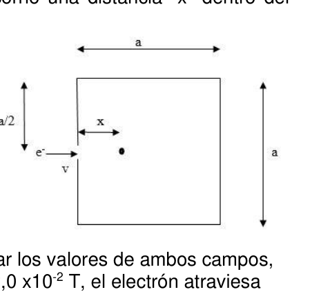
Topic: Magnetism, Electromagnetism Metodi: Lorentz Force Analysis, Vector Decomposition Competenze: Physical Reasoning, Mathematical Modeling Objects: Electron Fonte: Testo (PDF) — p.116
Sulla luce e sul campo elettrico
PT3. Scuola tecnica N° 27 Hipólito Yrigoyen Città autonoma di Buenos Aires.
Su campi magnetici e elettrici. Un elettrone viene inviato a velocità “v” verso un’area quadrata in cui si può applicare un campo magnetico costante “B”, che punta all’interno della foglia. Quando il L’elettrone entra nella zona quadrata, per la metà del lato a, si accende un interruttore che accende il campo magnetico, quando l’elettrone ha percorso una distanza “x” all’interno del Quadrato. a) Trovare la velocità incidente per cui Una volta che il campo è acceso, il l’elettrone rimane dentro la zona indefinitamente, per qualsiasi valore di “x”. (Visto che trovare la legge di variazione di “v” in funzione di “x”).
b) Un’altra situazione data in laboratorio per Se si misura la velocità di un elettrone, si ottiene combinando un campo magnetico e un altro elettrico, come mostra la figura. Variando i valori di entrambi i campi, si verifica che quando E= 1,0 x 103 N/C e B= 2,0 x10-2 T, l’elettrone attraversa i due campi in linea retta. Trovare la velocità dell’elettrone. c) Quale differenza di potenziale è stata applicata all’e- per raggiungere la velocità
- Calcolato al punto precedente?
Data: rapporto carico/massa dell’elettrone: q/m = 1,76 x 1011 C/kg
Topic: Magnetism, Electromagnetism Metodi: Lorentz Force Analysis, Vector Decomposition Competenze: Physical Reasoning, Mathematical Modeling Objects: Electron Fonte: Testo (PDF) — p.116
On magnetic and electric fields
PT3. The Commission has also adopted a number of measures to combat the use of the drug. The Autonomous City of Buenos Aires.
About magnetic and electric fields. An electron is sent at velocity “v” towards a square zone where it can be apply a constant magnetic field “B” that points towards the inside of the sheet. When the electron enters the square zone, by the 1/2 of side a, you turn on a switch that It turns on the magnetic field, when the electron traveled an “x” distance within the square. (a) Find the incident speed so that Once the field is lit, the electron remains within the zone indefinitely, for any value of “x”. (That is, find the law of variation of “v” in function of “x”).
(b) Other situation given in a laboratory for To measure the speed of an electron, you get Combining one magnetic field and another electrical, as shown in the figure. By varying the values of both fields, It is verified that when E= 1,0 x 103 N/C and B= 2,0 x10-2 T, the electron passes through The two fields are in a straight line. Find the electron speed. (c) What potential difference was applied to the e- to achieve speed calculated in the previous point?
Date: charge to mass ratio of electron: q/m = 1,76 x 1011 C/kg
Topic: Magnetism, Electromagnetism Metodi: Lorentz Force Analysis, Vector Decomposition Competenze: Physical Reasoning, Mathematical Modeling Objects: Electron Fonte: Testo (PDF) — p.116
PT4. IPET N° 266 General Savio
Instituto Marcelino Champagnat Río Tercero, Córdoba.
Un objeto de masa m1 se desplaza a una velocidad v1 y choca con otro objeto de masa
m2 y se adhiere a él.
Aplicando dinámica relativista:
a) Indique si el choque es de tipo elástico o plástico.
b) Indique cuáles son las expresiones matemáticas a utilizar.
Calcule: c) La velocidad final de los objetos mutuamente adheridos. d) La masa del sistema final.
Datos: m1 = 900 kg v1 = 0,850 c m2 = 1400 kg c = velocidad de la luz
OAF 2019- 29
Topic: Special Relativity, Conservation of Momentum Metodi: Relativistic Energy-Momentum, Conservation of Momentum, Mass-Energy Equivalence Competenze: Physical Reasoning, Mathematical Modeling Objects: Block Fonte: Testo (PDF) — p.116
PT4. Il programma di ricerca è stato adottato dal Consiglio nel corso del suo anno.
Istituto Marcelino Champagnat Rio Tercero, Córdoba.
Un oggetto di massa m1 si sposta a velocità v1 e colpisce un altro oggetto di massa M2 e si attacca a lui. Applicando la dinamica relativista: a) Indicare se il colpo è di tipo elastico o di plastica. b) Indicare quali sono le espressioni matematiche da utilizzare.
Calcola: c) La velocità finale degli oggetti adesi tra loro. d) La massa del sistema finale.
Datati: m1 = 900 kg v1 = 0,850 c m2 = 1400 kg c = velocità della luce
OAF 2019- 29
Topic: Special Relativity, Conservation of Momentum Metodi: Relativistic Energy-Momentum, Conservation of Momentum, Mass-Energy Equivalence Competenze: Physical Reasoning, Mathematical Modeling Objects: Block Fonte: Testo (PDF) — p.116
PT4. The Commission shall adopt delegated acts in accordance with Article 21 of Regulation (EC) No 1295/2006.
The Marcelino Champagnat Institute The third river, Cordoba.
An object of mass m1 moves at a speed v1 and collides with another object of mass m2 and adhere to it. Applying relativistic dynamics: (a) Indicate whether the impact is of an elastic or plastic type. (b) Indicate which mathematical expressions to use.
Calculate: (c) The final speed of the objects which are mutually adhered. (d) The mass of the final system.
The data: m1 = 900 kg v1 = 0,850 c m2 = 1400 kg c = speed of light
The following information shall be provided:
Topic: Special Relativity, Conservation of Momentum Metodi: Relativistic Energy-Momentum, Conservation of Momentum, Mass-Energy Equivalence Competenze: Physical Reasoning, Mathematical Modeling Objects: Block Fonte: Testo (PDF) — p.116
PT5. IPET N° 266 General Savio
Instituto Marcelino Champagnat Río Tercero, Córdoba.
Una sonda lunar de masa ms está en órbita circular entorno a la Luna. Considere que el
radio de la órbita es de 1/3 el radio r de la tierra.
a) Realice un diagrama de cuerpo aislado indicando todas las fuerzas que actúan
sobre la sonda.
b) Encuentre la expresión matemática que permite calcular la velocidad orbital de la
sonda
c) Calcule el valor de la velocidad orbital de la sonda.
d) Averigüe el período de revolución de la sonda.
Datos: Masa de la luna =7,34 x 1022 kg r = 6,37x106 m
Topic: Gravitation Metodi: Newton’s Law of Gravitation, Free-Body Diagram, Kepler’s Laws Competenze: Physical Reasoning, Mathematical Modeling Objects: Satellite, Planet Fonte: Testo (PDF) — p.116
PT5. Il programma di ricerca è stato adottato dal Consiglio nel corso del suo anno.
Istituto Marcelino Champagnat Rio Tercero, Córdoba.
Una sonda lunare di massa ms è in orbita circolare attorno alla Luna. Considerate che il Il raggio di orbita è di 1/3 del raggio r della Terra. a) Realizzare un diagramma di corpo isolato che indichi tutte le forze che agiscono sulla sonda. b) Trova l’espressione matematica che permette di calcolare la velocità orbitale della sonda c) Calcolare il valore della velocità orbitale della sonda. d) Scoprire il periodo di rivoluzione della sonda.
Datati: Massa della luna = 7,34 x 1022 kg r = 6,37x106 m
Topic: Gravitation Metodi: Newton’s Law of Gravitation, Free-Body Diagram, Kepler’s Laws Competenze: Physical Reasoning, Mathematical Modeling Objects: Satellite, Planet Fonte: Testo (PDF) — p.116
PT5. The Commission shall adopt delegated acts in accordance with Article 21 of Regulation (EC) No 1295/2006.
The Marcelino Champagnat Institute The third river, Cordoba.
A mass-mx lunar probe is in a circular orbit around the Moon. Consider that the The radius of the orbit is 1/3 of the radius r of the Earth. (a) Draw an isolated body diagram showing all the forces acting over the probe. (b) Find the mathematical expression that allows you to calculate the orbital velocity of the The probe (c) Calculate the value of the probe’s orbital velocity. (d) Find out the period of revolution of the probe.
The data: The mass of the moon is 7.34 x 1022 kg. r = 6,37x106 m
Topic: Gravitation Metodi: Newton’s Law of Gravitation, Free-Body Diagram, Kepler’s Laws Competenze: Physical Reasoning, Mathematical Modeling Objects: Satellite, Planet Fonte: Testo (PDF) — p.116
PT6. IPET N° 266 General Savio
Instituto Marcelino Champagnat Río Tercero, Córdoba.
Se lanza dentro de un campo eléctrico uniforme de 5000 N/C dirigido verticalmente hacia arriba, un e-. La velocidad inicial del e- es de 107 m/s y forma un ángulo de 20° por encima de la horizontal. Se desprecia la aceleración de la gravedad. a) Construya un esquema representativo de la situación indicando la trayectoria del electrón.
Calcule: b) La aceleración del electrón dentro del campo eléctrico. c) La altura máxima alcanzada por el e-. d) La distancia horizontal recorrida por el e-. e) La energía potencial del e- al llegar a su altura máxima.
Datos: Carga del electrón = -1,6x10–19 C Masa del electrón = 9,1x10–31 Kg.
Topic: Electrostatics, Newtonian Mechanics Metodi: Kinematic Equations, Coulomb’s Law, Vector Decomposition Competenze: Physical Reasoning, Mathematical Modeling Objects: Electron Fonte: Testo (PDF) — p.116
PT6. Il programma di ricerca è stato adottato dal Consiglio nel corso del suo anno.
Istituto Marcelino Champagnat Rio Tercero, Córdoba.
Si lancia all’interno di un campo elettrico uniforme di 5000 N/C diretto verticalmente verso
- Un e. La velocità iniziale dell’e- è di 107 m/s e forma un angolo di 20° sopra di orizzontale. Si disprezza l’accelerazione della gravità. a) Costruire un schema rappresentativo della situazione indicando il percorso del l’elettrone.
Calcola: b) L’accelerazione dell’elettrone all’interno del campo elettrico. c) L’altezza massima raggiunta da e-. d) La distanza orizzontale percorsa dall’e-. e) L’energia potenziale dell’e- al massimo livello.
Datati: Carga dell’elettrone = -1,6x1019 C Massa dell’elettrone = 9,1x1031 Kg.
Topic: Electrostatics, Newtonian Mechanics Metodi: Kinematic Equations, Coulomb’s Law, Vector Decomposition Competenze: Physical Reasoning, Mathematical Modeling Objects: Electron Fonte: Testo (PDF) — p.116
PT6. The Commission shall adopt delegated acts in accordance with Article 21 of Regulation (EC) No 1295/2006.
The Marcelino Champagnat Institute The third river, Cordoba.
It is thrown into a uniform electric field of 5000 N/C directed vertically towards Up, an e. The initial speed of the e- is 107 m/s and forms an angle of 20° above The horizontal. The acceleration of gravity is despised. (a) Build a representative picture of the situation indicating the trajectory of the electron.
Calculate: (b) The acceleration of the electron within the electric field. (c) The maximum height reached by the e-. (d) The horizontal distance travelled by the e-. (e) The potential energy of the e- at its maximum height.
The data: The electron charge = -1,6x1019 C The mass of the electron is 9,1x1031 Kg.
Topic: Electrostatics, Newtonian Mechanics Metodi: Kinematic Equations, Coulomb’s Law, Vector Decomposition Competenze: Physical Reasoning, Mathematical Modeling Objects: Electron Fonte: Testo (PDF) — p.116
PT7. Colegio Juan Humberto Morán Eduardo Castex, La Pampa.
Un recipiente cilíndrico cuya masa propia es de Mrec= 4
Kg, cuelga del techo con una cuerda de acero de longitud
L= 0.50 m y un valor de constante elástica K= 2000 N/m.
La misma soporta una tensión máxima de rotura Tmax =
1500 N. El recipiente recibe mercurio (ρHg=13280 N/m3)
de una tubería con un caudal variable en el tiempo
Q= 0,002 m3/ seg . t(seg)
a) Determinar la expresión del peso total que soporta
la cuerda en función del tiempo partiendo de t=0
seg.
b) Realizar una grafica del peso en función del tiempo
30 - OAF 2019 partiendo del punto anterior mediante una tabla. c) Indicar para que tiempo la cuerda rompe de forma grafica d) De forma anlitica e) Cual es su deformación x y su longitud total en ese instante
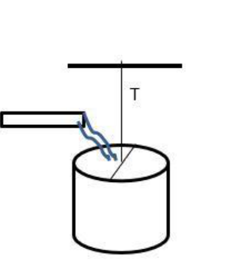
Topic: Fluid Mechanics, Elasticity & Materials Metodi: Hooke’s Law, Hydrostatic Equilibrium, Graph Linearization Competenze: Physical Reasoning, Mathematical Modeling Objects: String, Container, Spring Fonte: Testo (PDF) — p.116
PT7. Colegio Juan Humberto Morán Eduardo Castex, La Pampa.
Un recipiente cilindrico il cui peso è Mrec= 4 Kg, appeso dal tetto con una corda di acciaio di lunghezza L=0,50 m e un valore di costante elastica K= 2000 N/m. La stessa supporta una tensione massima di rottura Tmax = 1500 N. Il recipiente riceve mercurio (ρHg=13280 N/m3) di un tubo con un flusso variabile nel tempo Q = 0,002 m3/sec . t(seg) a) Determinare l’espressione del peso totale che supporta la corda in funzione del tempo partendo da t=0 Seg. b) Realizzare un grafico del peso in base al tempo
30 - OAF 2019 partendo dal punto precedente mediante una tabella. c) Indicare per quale tempo la corda si rompe in modo grafico d) In maniera anlitica e) Qual è la sua deformazione x e la sua lunghezza totale in quel momento
Topic: Fluid Mechanics, Elasticity & Materials Metodi: Hooke’s Law, Hydrostatic Equilibrium, Graph Linearization Competenze: Physical Reasoning, Mathematical Modeling Objects: String, Container, Spring Fonte: Testo (PDF) — p.116
PT7. The school is called Juan Humberto Morán. Eduardo Castex, the Pampa.
A cylindrical container with a mass of Mrec= 4 Kg, hanging from the ceiling with a length steel rope L=0.50 m and a value of the elastic constant K=2000 N/m. It supports a maximum breakage voltage Tmax = 1500 N. The container receives mercury (ρHg=13280 N/m3) of a pipe with a flow rate variable over time Q = 0,002 m3/sec . (b) the following: (a) Determine the expression of the total weight it bears the time-based string starting at t=0 The following is the list of the categories of products: (b) Draw a graph of weight based on time
The Commission shall adopt delegated acts in accordance with Article 21 of this Regulation. starting from the previous point by means of a table. (c) Indicate for what time the rope breaks graphically (d) In an analytical way (e) What is its deformation x and its total length at that instant
Topic: Fluid Mechanics, Elasticity & Materials Metodi: Hooke’s Law, Hydrostatic Equilibrium, Graph Linearization Competenze: Physical Reasoning, Mathematical Modeling Objects: String, Container, Spring Fonte: Testo (PDF) — p.116
PT8. Colegio Juan Humberto Morán Eduardo Castex, La Pampa.
Tres bloques están apoyados sobre una mesa con rozamientos μ1=0.35 μ2=0.85
μ3=0.45, entre ellos es µ= 0.45. Se aplica una fuerza horizontal F de F=900 KgF, siendo
m1=650Kg, m2= 250 Kg y m3=1000 Kg.(tomar g = 10 m/seg2).
a) Que aceleración recibe el sistema en cada caso A B y C, si logra moverse
b) Los cuerpos que están arriba del 1 logran quedarse en él?
Topic: Newtonian Mechanics Metodi: Free-Body Diagram, Newton’s Law of Gravitation, Vector Decomposition Competenze: Physical Reasoning, Mathematical Modeling Objects: Block Fonte: Testo (PDF) — p.116
PT8. Colegio Juan Humberto Morán Eduardo Castex, La Pampa.
Tre blocchi sono appoggiati su un tavolo con scratte μ1=0.35 μ2=0.85 μ3 = 0,45, tra di loro è μ= 0,45. Si applica una forza orizzontale F di F=900 KgF, essendo M1 = 650 kg, m2 = 250 Kg e m3 = 1000 Kg. a) che accelerazione riceve il sistema in ogni caso A B e C, se riesce a muoversi b) I corpi che sono al di sopra del 1 riusciranno a rimanere in esso?
Topic: Newtonian Mechanics Metodi: Free-Body Diagram, Newton’s Law of Gravitation, Vector Decomposition Competenze: Physical Reasoning, Mathematical Modeling Objects: Block Fonte: Testo (PDF) — p.116
PT8. The school is called Juan Humberto Morán. Eduardo Castex, the Pampa.
Three blocks are supported on a table with scratches μ1=0.35 μ2=0.85 μ3 = 0.45, between them is μ= 0.45. A horizontal force F of F=900 KgF is applied, being The average weight of the product is approximately 250 kg. (a) What acceleration the system receives in each case A B and C, if it can move (b) Can the bodies above 1 stay in it?
Topic: Newtonian Mechanics Metodi: Free-Body Diagram, Newton’s Law of Gravitation, Vector Decomposition Competenze: Physical Reasoning, Mathematical Modeling Objects: Block Fonte: Testo (PDF) — p.116
PT9. Colegio Juan Humberto Morán Eduardo Castex, La Pampa.
Para bajarle la temperatura a 3 litros de aceite de densidad = 1250 Kgrs./m3 de una caja
de engranajes que se encuentra a 90ºC inicialmente, se le intercala en su interior un
radiador por el que circula agua(c= 1 cal/gr ºC.). En dicho radiador el agua ingresa por un
caño de sección circular de R = 10 cm, con una velocidad uniforme v= 0.8 cm/seg.
Saliendo con la misma velocidad en un tiempo de t= 10 seg, la temperatura de entrada
del agua es Ti= 15 ºC y la de salida es de Ts= 85 ºC. Sabiendo el coeficiente de calor
especifico del aceite es c= 0.85 cal/ grsºC determinar:
a) La masa del aceite en gramos.
b) El caudal Q del agua.
c) El volumen de la misma en el
tiempo t.
d) Su masa.
e) Las calorías que recibe y
e) La temperatura final del aceite.
La caja no intercambia calor con el
exterior.(1000 cm3 de agua equivalen a
1000 grs y 1000 litros a 1 m3)
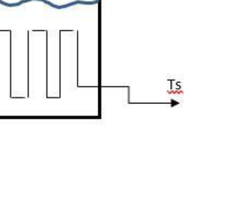
Topic: Thermodynamics, Fluid Mechanics Metodi: First Law of Thermodynamics, Continuity Equation, Calculus-Integration Competenze: Physical Reasoning, Mathematical Modeling Objects: Calorimeter, Tube, Gear Fonte: Testo (PDF) — p.116
PT9. Colegio Juan Humberto Morán Eduardo Castex, La Pampa.
Per abbassare la temperatura a 3 litri di olio di densità = 1250 Kgrs./m3 da una scatola La temperatura di un’inclinazione di 10 °C è di circa 90 °C. radiatore per il quale si circola acqua ((c= 1 cal/gr oC.). In quel radiatore l’acqua entra per un tubo di sezione circolare di R = 10 cm, con velocità uniforme v= 0,8 cm/sec. Esce con la stessa velocità in un tempo di t= 10 seg, la temperatura di ingresso Il livello di acqua è di Ti=15 oC e il livello di uscita è di Ts=85 oC. Conoscendo il coefficiente di calore specificità dell’olio è c= 0.85 cal/ grsoC per determinare: a) Massa dell’olio in grammo. b) Il flusso Q dell’acqua. (c) Il volume di tale volume in tempo t. d) La sua massa. e) le calorie che riceve e e) La temperatura finale dell’olio. La scatola non scambia calore con il 1000 cm3 di acqua equivalenti a 1000 gr e 1000 litri a 1 m3)
Topic: Thermodynamics, Fluid Mechanics Metodi: First Law of Thermodynamics, Continuity Equation, Calculus-Integration Competenze: Physical Reasoning, Mathematical Modeling Objects: Calorimeter, Tube, Gear Fonte: Testo (PDF) — p.116
PT9. The school is called Juan Humberto Morán. Eduardo Castex, the Pampa.
To lower the temperature to 3 liters of density oil = 1250 Kgrs./m3 from a box The gears are initially 90°C and are interchanged inside a radiator through which water circulates ((c= 1 cal/gr oC.). In that radiator the water comes in through a a circular section pipe of R = 10 cm, with a uniform speed v = 0,8 cm/sec. Exiting at the same speed in a time t= 10 seconds, the input temperature The water temperature is Ti=15 oC and the water temperature is Ts=85 oC. Knowing the heat coefficient The specificity of the oil is c= 0.85 cal/ grsoC to determine: (a) The mass of the oil in grams. (b) The flow Q of water. (c) The volume of the same in the time t. (d) Its mass. (e) The calories you receive and (e) The final temperature of the oil. The box does not exchange heat with the 1000 cm3 of water equivalent to 1000 grs and 1000 litres at 1 m3)
Topic: Thermodynamics, Fluid Mechanics Metodi: First Law of Thermodynamics, Continuity Equation, Calculus-Integration Competenze: Physical Reasoning, Mathematical Modeling Objects: Calorimeter, Tube, Gear Fonte: Testo (PDF) — p.116
PT10. Colegio EMAUS El Palomar, Buenos Aires.
Un tirador sostiene holgadamente un rifle de masa mR 4,3 kg, de manera que pueda
retroceder libremente al hacer un disparo. Dispara una bala de masa mB 5,2 g con una
velocidad horizontal relativa al suelo de vB 310 m/s. La bala se incrusta en un bloque de
madera de 5kg que pende de una cuerda de masa despreciable.
a) ¿Qué velocidad de retroceso v R tiene el rifle?
b) ¿Qué momento lineal y energía cinética finales tiene la bala?
OAF 2019- 31 c) ¿Qué momento lineal y energía finales tiene el rifle? d) ¿Cuál es la velocidad inicial del conjunto bloque-bala luego del impacto? e) Cuanto se desplaza el bloque de madera luego de impactado por la, considerando un coeficiente de roce de 0,1 f) ¿Cuánta energía se disipa en el choque de la bala contra el bloque en términos porcentuales?
Topic: Conservation of Momentum, Conservation of Energy Metodi: Conservation of Momentum, Conservation of Energy, Impulse-Momentum Theorem Competenze: Physical Reasoning, Mathematical Modeling Objects: Block, Projectile, String Fonte: Testo (PDF) — p.116
PT10. EMAUS College Il Palomar, Buenos Aires.
Un tiratore tiene con la mano un fucile a massa di 4,3 kg, in modo che possa
- Si può tornare indietro liberamente quando si fa un tiro. Scarica una pallottola di massa mB 5,2 g con una velocità orizzontale relativa al suolo vB 310 m/s. La pallottola si incrusta in un blocco di Legno di 5 kg che si appende a una corda di massa disprezzo. a) Qual è la velocità di ritiro v R della pistola? b) Qual è il momento lineare e l’energia cinetica finale della pallottola?
OAF 2019- 31 c) Qual è il momento lineare e l’energia finale del fucile? d) Qual è la velocità iniziale dell’insieme blocco-ballo dopo l’impatto? e) Quanto si sposta il blocco di legno dopo essere stato colpito dalla considerando un coefficiente di rottura di 0,1 f) Quanta energia viene dissipata nel colpo della pallottola contro il blocco in termini di percentuali?
Topic: Conservation of Momentum, Conservation of Energy Metodi: Conservation of Momentum, Conservation of Energy, Impulse-Momentum Theorem Competenze: Physical Reasoning, Mathematical Modeling Objects: Block, Projectile, String Fonte: Testo (PDF) — p.116
PT10. EMAUS College The Palomar, Buenos Aires.
A shooter holds a 4.3-kilogram mR rifle loosely, so that he can to retreat freely when shooting. Shoot a 5,2-g mB mass bullet with a horizontal ground speed of vB 310 m/s. The bullet is embedded in a block of A 5kg wood hanging from a scornful mass rope. (a) What is the recoil velocity v R of the rifle? (b) What is the final linear momentum and kinetic energy of the bullet?
The Commission shall adopt implementing acts in accordance with Article 21 of this Regulation. (c) What is the final momentum and energy of the rifle? (d) What is the initial speed of the bullet block set after impact? (e) How much of the block of wood moves after being hit by the Considering a friction coefficient of 0,1 (f) How much energy is dissipated in the bullet’s impact on the block in terms of percent?
Topic: Conservation of Momentum, Conservation of Energy Metodi: Conservation of Momentum, Conservation of Energy, Impulse-Momentum Theorem Competenze: Physical Reasoning, Mathematical Modeling Objects: Block, Projectile, String Fonte: Testo (PDF) — p.116
PT11. Colegio EMAUS El Palomar, Buenos Aires.
Una olla gruesa de cobre con masa de 2.0 kg (incluida su tapa) está a una temperatura
de 150 °C. Usted vierte en ella 0.10 kg de agua a 25 °C y rápidamente tapa la olla para
que no se escape el vapor.
a) Calcule la temperatura final de la olla y de su contenido.
b) Determine la fase (líquido o vapor) del agua. Suponga que no se pierde calor al
entorno.
(Nota: Calor latente de vaporización del agua Lv = 2.256 x 106 J/kg; calor específico del agua=4,1813J/g.°C; calor específico del cobre= 0,385 J/g.°C )
Topic: Thermodynamics Metodi: First Law of Thermodynamics, Ideal Gas Law Competenze: Physical Reasoning, Mathematical Modeling Objects: Container, Gas Fonte: Testo (PDF) — p.116
PT11. EMAUS College Il Palomar, Buenos Aires.
Un grossa potta di rame di massa di 2,0 kg (inclusi il suo coperchio) è a una temperatura de 150 °C. Versi in esso 0,10 kg di acqua a 25 °C e copri rapidamente il vaso per che non si scarichi il vapore. a) Calcolare la temperatura finale del vaso e del suo contenuto. b) Determina la fase (liquido o vapore) dell’acqua. Supponiamo che non si perda calore al ambiente.
(Nota: Calore latente di vaporizzazione dell’acqua Lv = 2,256 x 106 J/kg; calore specifico di acqua=4,1813J/g.°C; calore specifico del rame=0,385 J/g.°C)
Topic: Thermodynamics Metodi: First Law of Thermodynamics, Ideal Gas Law Competenze: Physical Reasoning, Mathematical Modeling Objects: Container, Gas Fonte: Testo (PDF) — p.116
PT11. EMAUS College The Palomar, Buenos Aires.
A thick copper pot with a mass of 2.0 kg (including its lid) is at a temperature de 150 °C. You pour 0.10 kg of water into it at 25 °C and quickly cover the pot for I’m not letting the steam out. (a) Calculate the final temperature of the pot and its contents. (b) Determine the phase (liquid or vapor) of the water. Suppose you don ‘t lose heat at the The environment.
(Note: Latent heat of water vaporization Lv = 2,256 x 106 J/kg; specific heat of the The following table shows the results of the calculations:
Topic: Thermodynamics Metodi: First Law of Thermodynamics, Ideal Gas Law Competenze: Physical Reasoning, Mathematical Modeling Objects: Container, Gas Fonte: Testo (PDF) — p.116
PT12. Colegio EMAUS El Palomar, Buenos Aires.
Juan está parado en un salón donde a lo largo del volumen hay un campo magnético uniforme de 0,9mT, que apunta verticalmente hacia abajo. Un protón de 4,5 MeV de energía se mueve horizontalmente de A hacia B (ver figura) a través de cierto punto del salón. (Nota: 1MeV equivale a 1,6.10-13 J; masa del protón 1,67.10-27kg; carga del protón = 1,6.10-19 C) a) Determine a qué velocidad se mueve el protón. b) Determine el valor de la fuerza magnética que actúa sobre el protón. c) Determine el valor de la aceleración resultante de la acción de la fuerza magnética y compare con el valor de la gravedad. d) Represente gráficamente la dirección y el sentido de la fuerza magnética actuante sobre el protón. e) Si la carga de la partícula hubiera sido negativa, represente el vector fuerza magnética actuante.
Figura del aula vista desde arriba
32 - OAF 2019
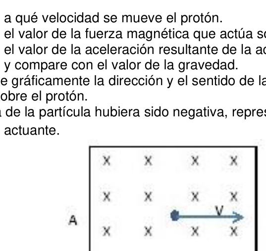
Topic: Magnetism Metodi: Lorentz Force Analysis, Conservation of Energy Competenze: Physical Reasoning, Mathematical Modeling Objects: Particle Beam Fonte: Testo (PDF) — p.116
PT12. EMAUS College Il Palomar, Buenos Aires.
Juan è in una sala dove lungo il volume c’è un campo magnetico uniforme di 0,9 mT, che punta verticalmente verso il basso. Un protone di 4,5 MeV di L’energia si muove orizzontalmente da A a B (vedi figura) attraverso un certo punto del
- Salone. (Nota: 1MeV equivale a 1,6.10-13 J; massa del protone 1,67.10-27kg; carico del protone = 1,6.10-19 C) a) Determina a che velocità si muove il protone. b) Determina il valore della forza magnetica che agisce sul protone. c) Determina il valore dell’accelerazione risultante dall’azione della forza e confrontate il valore della gravità. d) Rappresenta graficamente la direzione e il senso della forza magnetica Agendo sul protone. e) Se la carica della particella fosse stata negativa, rappresenta il vettore di forza magnetico attivo.
Figura della classe vista dall’alto
32 - OAF 2019
Topic: Magnetism Metodi: Lorentz Force Analysis, Conservation of Energy Competenze: Physical Reasoning, Mathematical Modeling Objects: Particle Beam Fonte: Testo (PDF) — p.116
PT12. EMAUS College The Palomar, Buenos Aires.
Juan is standing in a room where along the volume there is a magnetic field. uniform 0.9mT, pointing vertically downwards. A proton of 4.5 MeV from The energy is moved horizontally from A to B (see figure) through a certain point of the
- The living room. (Note: 1MeV is equal to 1,6.10-13 J; proton mass is 1,67.10-27kg; proton charge = 1,6.10-19 C) (a) Determine the speed at which the proton moves. (b) Determine the value of the magnetic force acting on the proton. (c) Determine the value of the acceleration resulting from the force action And then compare it to the value of gravity. (d) Graphically represents the direction and direction of the magnetic force acting on the proton. (e) If the particle load had been negative, the force vector is represented magnetic acting.
Classroom figure seen from above
The following is the list of the countries of the European Union:
Topic: Magnetism Metodi: Lorentz Force Analysis, Conservation of Energy Competenze: Physical Reasoning, Mathematical Modeling Objects: Particle Beam Fonte: Testo (PDF) — p.116
PT13. Instituto de Enseñanza San Jorge - Big Ben School - Colegio Belén Centro Educativo Bernardino Rivadavia - Colegio Hermano Hermas de Bruijn Ciudad de Santiago del Estero.
En el polideportivo provincial, con frecuencia se desarrollan competencias de atletismo entre competidores de la categoría amateur. Maximiliano y Felipe, dos compañeros de colegio con fuerte pasión por las actividades de este tipo, entrenan de manera permanente para competir en los próximos eventos. Un día por semana compiten entre ellos para monitorear el resultado de sus entrenamientos y concluir si deben agudizar su rutina. Durante el entrenamiento del sábado en la pista de 100 metros llanos, los compañeros registraron los siguientes tiempos: Felipe 13,50 s; Maximiliano 13,45 s.
a) ¿Qué tipo de movimiento realizan Felipe y Maximiliano? Justifique.
b) ¿Cuál es la velocidad media de los dos compañeros en el entrenamiento del
sábado?
c) En un nuevo entrenamiento los amigos consiguieron una cámara de alta
velocidad que mide la velocidad que poseen al llegar a la meta, la cual registró:
Competidor
Velocidad en la línea de llegada
Felipe
13,3 m/s
Maximiliano
15,4 m/s
Suponiendo que incrementaron su velocidad en forma constante durante todo el recorrido, ¿qué aceleración adquirió cada uno durante esta carrera de 100mts?
d) Si Maximiliano, consciente de que tiene mejor velocidad final, decide darle a Felipe 2 s de ventaja, ¿Maximiliano tiene chances de ganarle a Felipe? (ambos mantienen la aceleración del ítem (c)). Justifica. e) ¿Maximiliano logra alcanzar a Felipe antes de llegar a la meta? Si es así, ¿a qué distancia de la línea de meta logra alcanzarlo? f) Construye las gráficas de V(t) y x(t) para ambos competidores, comparándolas respectivamente en un mismo sistema de ejes cartesianos.
Nota: Considera g= 10 m/s2
Topic: Newtonian Mechanics Metodi: Kinematic Equations Competenze: Physical Reasoning, Mathematical Modeling Objects: — Fonte: Testo (PDF) — p.116
PT13. Istituto di istruzione San Jorge - Big Ben School - Colegio Belén Centro didattico Bernardino Rivadavia - Scuola Fratello Hermas di Bruijn Città di Santiago del Estero.
In provincia, spesso si svolgono competizioni di atletica. tra i concorrenti della categoria amatoriale. Maximilian e Filippo, due compagni di scuola con una forte passione per queste attività, si allenano in modo Per competere in occasione di eventi successivi. Un giorno alla settimana, si compete tra di loro. Gli insegnanti devono monitorare il risultato dei loro allenamenti e decidere se devono migliorare il loro livello di attenzione.
- Routine. Durante l’allenamento di sabato sul 100m di pista piana, i compagni I tempi registrati sono i seguenti: Filippo 13,50 s; Massimiliano 13,45 s.
a) Che tipo di movimento fanno Filippo e Massimiliano? giustifica. b) Qual è la velocità media dei due compagni in allenamento del Sabato? c) In un nuovo allenamento gli amici hanno ottenuto una camera alta. velocità che misura la velocità che hanno quando raggiungono il fine, che ha registrato: Competitor Velocità alla linea di arrivo Felipe . 13,3 m/s
- Maximilian . 15,4 m/s
Supponiamo che abbiano aumentato la loro velocità costantemente per tutto il periodo. Per quanto riguarda la corsa, che velocità hanno acquisito ognuno di loro durante questa corsa di 100m?
d) Se Maximiliano, consapevole di avere una velocità finale migliore, decide di dargli Felipe 2’ di vantaggio, Maximilian ha qualche possibilità di battere Felipe? (Bambini) mantenono l’accelerazione dell’itto (c)). - Giustifica. e) Maximilian riesce a raggiungere Felipe prima di raggiungere il traguardo? Se è così, a cosa? La distanza dalla linea di meta lo raggiunge? f) Costruisce i grafici di V(t) e x(t) per entrambi i concorrenti, confrontandoli rispettivamente nello stesso sistema di assi cartesiani.
Nota: Considera g= 10 m/s2
Topic: Newtonian Mechanics Metodi: Kinematic Equations Competenze: Physical Reasoning, Mathematical Modeling Objects: — Fonte: Testo (PDF) — p.116
PT13. The school is located in the city of San Jorge. Educational Centre Bernardino Rivadavia - Brother Brothers School of Bruijn The city of Santiago del Estero.
In the provincial poly sport, athletics competitions are often held. between amateur competitors. Maximilian and Philip, two companions of school with a strong passion for these activities, train in a way Permanent to compete in the upcoming events. One day a week they compete between They should monitor the outcome of their training and decide if they should sharpen their skills. routine. During Saturday’s training on the 100-meter track, the teammates The following times were recorded: Philip 13.50 s; Maximilian 13.45 s.
(a) What kind of movement do Philip and Maximilian make? You justify it. (b) What is the average speed of the two teammates in training Saturday? c) In a new training the friends got a high-end camera speed that measures the speed they have when they reach the goal, which he recorded: Competitor Speed at the finish line Philip . 13,3 m/s Maximilian . 15,4 m/s
Assuming they increased their speed steadily throughout the What acceleration did each of you gain during this 100m race?
(d) If Maximilian, aware that he has better end speed, decides to give him a Felipe 2 s lead, does Maximilian have a chance of beating Felipe? (both) maintain the acceleration of item (c)). It justifies it. (e) Does Maximilian catch up with Philip before he reaches the finish line? If so, what’s the point? distance from the finish line does he get it? f) Build the graphs of V(t) and x(t) for both competitors, comparing them The following is the list of the following:
Note: Consider g = 10 m/s2
Topic: Newtonian Mechanics Metodi: Kinematic Equations Competenze: Physical Reasoning, Mathematical Modeling Objects: — Fonte: Testo (PDF) — p.116
PT14. Instituto de Enseñanza San Jorge - Big Ben School - Colegio Belén Centro Educativo Bernardino Rivadavia - Colegio Hermano Hermas de Bruijn Ciudad de Santiago del Estero.
Un albañil que pesa 800N, con la intensión de revestir una pared, coloca sobre el suelo dos soportes A y B separados 4 m de distancia, uno de otro. Sobre ellos, apoya una madera sólida (tablón) de mayor longitud en forma horizontal, que tiene un peso de 600N, haciendo coincidir su centro de gravedad con el punto medio de dichos soportes. Para comenzar su tarea, se apoya sobre el centro de gravedad del tablón, y comienza a desplazarse en dirección al soporte B, atravesando el mismo.
a) Confeccione un esquema de la situación planteada incluyendo un diagrama de
fuerzas aplicadas sobre el tablón.
b) ¿Cuál es la masa del albañil?
c) ¿Cuál es la reacción en el soporte A, cuando el albañil esta a 50 cm del soporte
B?
d) ¿Cuál es la distancia máxima que el albañil puede alejarse de B sin que el tablón
se desequilibre, girando respecto del punto B?
e) En relación a la situación del ítem anterior (d).¿Cuál es la reacción del soporte B
en esas condiciones?
OAF 2019- 33 f) Por un descuido el albañil se mueve superando la distancia máxima y el tablón girá con respecto al soporte B hasta apoyar su extremo en el suelo formando un ángulo de 30º. En ese momento el albañil resbala (sin fricción) sobre el tablón hasta llegar al piso. ¿Con qué aceleración se desplazó el albañil al resbalar sobre el tablón? g) Si el albañil llegó al suelo con una velocidad de 2 m/s, ¿Cuál es la longitud del tablón?
Nota: Considera g= 10 m/s2
Topic: Rigid Body Statics, Newtonian Mechanics Metodi: Torque & Angular Momentum Analysis, Free-Body Diagram, Kinematic Equations Competenze: Physical Reasoning, Mathematical Modeling Objects: Beam, Lever Fonte: Testo (PDF) — p.116
PT14. Istituto di istruzione San Jorge - Big Ben School - Colegio Belén Centro didattico Bernardino Rivadavia - Scuola Fratello Hermas di Bruijn Città di Santiago del Estero.
Un mattino che pesa 800 N, con l’intenzione di rivestire un muro, lo pone sul pavimento. due supporti A e B separati a 4 metri l’uno dall’altro. Su di loro, appoggiare una Legno solido (tablon) di lunghezza più alta in forma orizzontale, che pesa 600 N, che coincide con il centro di gravità del centro di gravità di tali supporti. Per Inizia il suo compito, si appoggia sul centro di gravità del tavolo, e inizia a spostarsi verso il supporto B, attraversando il supporto B.
a) Sviluppare un schema della situazione che si pone, includendo un diagramma di le forze applicate sul tavolo. b) Qual è la massa del mattoniere? c) Qual è la reazione al supporto A quando il mattino è a 50 cm dal supporto B? d) Qual è la distanza massima che il mattino può allontanarsi da B senza che il tavolo si sbilanciano, girando rispetto al punto B? e) Relativamente alla situazione dell’articolo precedente (d). In queste condizioni?
OAF 2019- 33 f) Per negligenza il mattino si muove oltre la distanza massima e il tavolo si girerà rispetto al supporto B fino a sostenere la sua estremità sul suolo formando un angolo di 30 gradi. A quel punto il mattino scivola (senza attrito) sul tavolo. fino a quando non arriviamo al pavimento. Con quale velocità il mattino si è spostato mentre scivolava? sul tavolo? g) Se il mattino è arrivato al suolo a una velocità di 2 m/s, qual è la lunghezza del
- Un tabellone?
Nota: Considera g= 10 m/s2
Topic: Rigid Body Statics, Newtonian Mechanics Metodi: Torque & Angular Momentum Analysis, Free-Body Diagram, Kinematic Equations Competenze: Physical Reasoning, Mathematical Modeling Objects: Beam, Lever Fonte: Testo (PDF) — p.116
PT14. The school is located in the city of San Jorge. Educational Centre Bernardino Rivadavia - Brother Brothers School of Bruijn The city of Santiago del Estero.
A mason weighing 800 N, intending to cover a wall, puts it on the floor. two A and B supports separated by 4 m, one from the other. On them, support a a solid wood (table) of a horizontal length greater than 600 N, The center of gravity of the object is the center of gravity of the object. For Start your task, lean on the center of gravity of the board, and start at move in the direction of support B, through it.
(a) Make a diagram of the situation including a diagram of the situation. forces applied to the board. (b) What is the mass of the mason? (c) What is the reaction on support A when the mason is 50 cm from the support? B? (d) What is the maximum distance that the mason can travel from B without the board? is it unbalanced, rotating with respect to point B? (e) Relative to the situation of the previous item (d). under these conditions?
The Commission shall adopt implementing acts in accordance with Article 21 of this Regulation. (f) By carelessness the mason moves beyond the maximum distance and the board. It shall rotate with respect to support B until it rests its end on the ground forming a angle of 30 degrees. At that moment the mason slips (without friction) over the board. I’m going to the floor. How fast did the mason move when he slipped? on the board? (g) If the mason reached the ground at a speed of 2 m/s, what is the length of the The board?
Note: Consider g = 10 m/s2
Topic: Rigid Body Statics, Newtonian Mechanics Metodi: Torque & Angular Momentum Analysis, Free-Body Diagram, Kinematic Equations Competenze: Physical Reasoning, Mathematical Modeling Objects: Beam, Lever Fonte: Testo (PDF) — p.116
PT15. Instituto de Enseñanza San Jorge - Big Ben School - Colegio Belén Centro Educativo Bernardino Rivadavia - Colegio Hermano Hermas de Bruijn Ciudad de Santiago del Estero.
El domingo pasado se festejó el día del niño y Alejandro recibió como regalo un autito de juguete de plástico. Improvisó una pista en la vereda de su casa como indica la figura 1. Lanzó el autito de manera tal que al pasar por el punto “P” tenía una velocidad de 3,6 km/h. Considerar que todos los movimientos se realizan en un plano vertical y que la vereda está libre de rozamiento.
Según esta situación responde:
a) ¿Cuál es el valor de la energía potencial del autito en el punto “P”?
b) ¿Cuál es el valor de la energía cinética del autito en el punto “B”?
c) ¿El autito logra pasar el punto “Q”? Justifica.
d) Si pasa el punto “Q” ¿Cuál será la velocidad del autito en el punto “R”?
e) Suponiendo que el autito logra atravesar los desniveles de la vereda y con una
temperatura de 15ºC cae dentro del charco de agua. Luego de unos minutos el
niño introduce la mano en el charco de agua y extrae el autito.
¿A qué temperatura se encontraba inicialmente el agua del charco si al sacar el autito,
Alejandro percibe que la temperatura del autito se incrementó en 5ºC?
Calor especifico del Agua: CeH2O = 1cal/g°C Calor especifico del PVC: CePVC = 0,24 cal/g°C Calor latente de vaporización del Agua: LV-H2O = 540 cal/g Densidad del Agua: 1 g/cm3 1 cal = 4,18 J Masa Autito= 200 g Masa Agua del charco= 60 g g= 10 m/s2 En el ítem e) considerar que el autito y el agua del charco solo intercambian calor entre ellos y no con el resto de las masas con las que están en contacto.
34 - OAF 2019
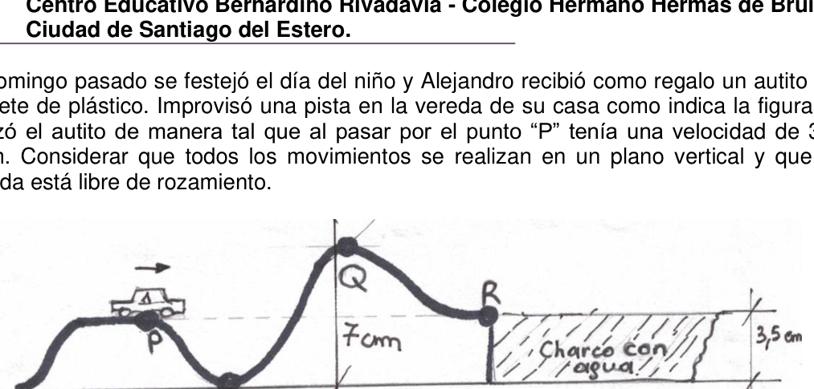
Topic: Conservation of Energy, Thermodynamics Metodi: Conservation of Energy, First Law of Thermodynamics Competenze: Physical Reasoning, Mathematical Modeling Objects: Cart Fonte: Testo (PDF) — p.116
PT15. Istituto di istruzione San Jorge - Big Ben School - Colegio Belén Centro didattico Bernardino Rivadavia - Scuola Fratello Hermas di Bruijn Città di Santiago del Estero.
Domenica scorsa si festeggiò la festa del bambino e Alejandro ricevette come regalo un autito di un giocattolo di plastica. Improvvisò un indizio sul vialetto della sua casa come indica la figura 1. Lanciò l’autito in modo tale che passando attraverso il punto P aveva una velocità di 3,6 km/h. Considerare che tutti i movimenti sono realizzati in un piano verticale e che la Il viale è libero da rughe.
Secondo questa situazione, risponde: a) Qual è il valore dell’energia potenziale dell’autito al punto P? b) Qual è il valore dell’energia cinetica dell’autito al punto B? c) Il veicolo riesce a superare il punto Q? - Giustifica. d) Se passa il punto Q, qual è la velocità dell’autito al punto R? e) Supponendo che l’autito riesca a attraversare i sfilate del sentiero e con una 15°C di temperatura cade dentro il pozzo d’acqua. Dopo pochi minuti il Il bambino mette la mano nel pozzo d’acqua e tira fuori il bastone. A che temperatura si trovava inizialmente l’acqua del pozzo se quando si tirava fuori l’autito, Alejandro ha notato che la temperatura dell’automobile è aumentata di 5°C?
Calore specifico dell’acqua: CeH2O = 1 cal/g°C Calore specifico del PVC: CePVC = 0,24 cal/g°C Calore latente di vaporizzazione dell’acqua: LV-H2O = 540 cal/g Densità dell’acqua: 1 g/cm3 1 cal = 4,18 J Massa Autito = 200 g Massa dell’acqua del pozzo = 60 g g= 10 m/s2 In e) considerare che l’autito e l’acqua del pozzo scambiano solo calore tra loro e non con le altre masse con cui sono in contatto.
34 - OAF 2019
Topic: Conservation of Energy, Thermodynamics Metodi: Conservation of Energy, First Law of Thermodynamics Competenze: Physical Reasoning, Mathematical Modeling Objects: Cart Fonte: Testo (PDF) — p.116
PT15. The school is located in the city of San Jorge. Educational Centre Bernardino Rivadavia - Brother Brothers School of Bruijn The city of Santiago del Estero.
Last Sunday , the day of the child was celebrated and Alexander received as a gift a little car from It’s a plastic toy. He improvised a clue in the alleyway of his house as shown in Figure 1. He threw the carriage so that when passing through the point P he had a speed of 3.6 km/h. Consider that all movements are made in a vertical plane and that the The alley is free of rust.
Depending on the situation , he answers: (a) What is the value of the potential energy of the car at the point P? (b) What is the value of the kinetic energy of the car at the point B? (c) Does the carriage pass the point Q? It justifies it. d) If the point Q passes, what will be the speed of the car at the point R? (e) Assuming that the driver is able to cross the roadway and with a temperature of 15°C falls into the water pool. After a few minutes the The child puts his hand in the water tank and pulls out the car. What temperature was the water from the pond initially at if when the carriage was removed, Alexander senses that the temperature of the car has increased by 5 degrees Celsius?
The specific heat of the water: CeH2O = 1cal/g°C The specific heat of PVC: CePVC = 0,24 cal/g°C The water vaporization latent heat: LV-H2O = 540 cal/g Density of water: 1 g/cm3 1 cal = 4,18 J The weight of the vehicle is 200 g. Water mass of the pond = 60 g g= 10 m/s2 In item e) consider that the car and the water from the pond only exchange heat between themselves and not with the rest of the masses they are in contact with.
The following points shall be added:
Topic: Conservation of Energy, Thermodynamics Metodi: Conservation of Energy, First Law of Thermodynamics Competenze: Physical Reasoning, Mathematical Modeling Objects: Cart Fonte: Testo (PDF) — p.116
Pasando el Rio Paraguay
PT16. EPES N° 54 Gobernador Juan José Silva Ciudad de Formosa.
Pasando el Río Paraguay! El ancho del Río Paraguay frente al puerto de la provincia de Formosa que conecta la ciudad capital de esta provincia con la ciudad de Alberdi en Paraguay es de 681 m aproximadamente. El cauce fluye hacia el sur con una velocidad media de 3 km/h. Sabiendo esto, un bote conocido por los de la zona como paseros se desplazan hacia el este con una velocidad de 4 km/h cib respecto al agua. a) Calcular la velocidad del bote en relación a la orilla. b) Calcule el tiempo necesario para cruzarlo. c) ¿Cuál es la desviación del vote hacia el Sur cuando llega al lado opuesto del río? d) Compare el resultado con el tiempo que tardará en remar 681 m corriente arriba.
Topic: Newtonian Mechanics Metodi: Vector Decomposition, Kinematic Equations Competenze: Physical Reasoning, Mathematical Modeling Objects: — Fonte: Testo (PDF) — p.116
Passando il Rio Paraguay
PT16. EPES N° 54 Guverno Juan José Silva Città di Formosa.
Attraverso il Rio Paraguay! L’ancho del Río Paraguay di fronte al porto della provincia di Formosa che collega la città capitale di questa provincia con la città di Alberdi in Paraguay è di 681 m
- Circa. La canale scorre verso sud a una velocità media di 3 km/h. Sapendo questo, una barca Conosciuti dai locali come passeri si spostano verso est a velocità di 4 km/h cibi rispetto all’acqua. a) Calcolare la velocità della barca in relazione al bordo. b) Calcolare il tempo necessario per attraversarlo. c) Qual è la deviazione del voto verso sud quando arriva sul lato opposto del fiume? d) Compare il risultato con il tempo necessario per rammare 681 m corrente
- Su.
Topic: Newtonian Mechanics Metodi: Vector Decomposition, Kinematic Equations Competenze: Physical Reasoning, Mathematical Modeling Objects: — Fonte: Testo (PDF) — p.116
Crossing the Paraguay River
PT16. EPES N° 54 Governor Juan José Silva The city of Formosa.
Crossing the Paraguay River! The width of the Paraguay River opposite the port of the province of Formosa connecting the capital city of this province with the city of Alberdi in Paraguay is 681 m about. The channel flows south at an average speed of 3 km/h. Knowing this, a boat known to the locals as the eastern-moving passerine at a rapid rate. of 4 km/h cubic with respect to water. (a) Calculate the speed of the boat in relation to the shore. (b) Calculate the time required to cross it. (c) What is the diversion of the vote to the South when it reaches the opposite side of the river? (d) Compare the result with the time it will take to row 681 m current Up there.
Topic: Newtonian Mechanics Metodi: Vector Decomposition, Kinematic Equations Competenze: Physical Reasoning, Mathematical Modeling Objects: — Fonte: Testo (PDF) — p.116
Circuitos electricos
PT17. EPES N° 54 Gobernador Juan José Silva Ciudad de Formosa.
Circuitos eléctricos!! a) Hallar el valor de la resistencia (R). b) Calcular los valores de tensión eléctrica en cada resistencia. c) Calcular el valor de la intensidad de corriente en cada resistencia. d) Calcular el valor de la resistencia equivalente.
Topic: Circuits Metodi: Kirchhoff’s Laws, Equivalent Circuit Reduction Competenze: Physical Reasoning, Mathematical Modeling Objects: Resistor Fonte: Testo (PDF) — p.116
Circuiti elettrici
PT17. EPES N° 54 Guvernatore Juan José Silva Città di Formosa.
Circuiti elettrici!! a) Determinare il valore della resistenza (R). b) Calcolare i valori di tensione elettrica in ogni resistenza. (c) Calcolare il valore dell’intensità di corrente in ogni resistenza. d) Calcolare il valore della resistenza equivalente.
Topic: Circuits Metodi: Kirchhoff’s Laws, Equivalent Circuit Reduction Competenze: Physical Reasoning, Mathematical Modeling Objects: Resistor Fonte: Testo (PDF) — p.116
The following table shows the number of units of the vehicle:
PT17. EPES N° 54 Governor Juan José Silva The city of Formosa.
Electrical circuits!! (a) Find the value of the resistance (R). (b) Calculate the electrical voltage values in every resistance. (c) Calculate the current intensity value In every resistance. (d) Calculate the value of the equivalent resistance.
Topic: Circuits Metodi: Kirchhoff’s Laws, Equivalent Circuit Reduction Competenze: Physical Reasoning, Mathematical Modeling Objects: Resistor Fonte: Testo (PDF) — p.116
Fotografia subacuatica
PT18. EPES N° 54 Gobernador Juan José Silva Ciudad de Formosa.
¡Fotografía subacuática! Adaptación del material Problemas de Óptica Geométrica e Instrumental. Unidad 13: Instrumentos fotográficos de Jaume Escofet. a) Determina el campo angular de un objetivo de f’ = 50 mm acoplado a una cámara full frame (35 mm). Se encierra la cámara anterior, de forma estanca, en una caja acristalada y transparente con el fin de poder realizar fotografías subacuáticas según se muestra en la figura. Si el grosor de la cara frontal al objetivo es despreciable, determina: b) El nuevo campo angular de la cámara.
¿A qué distancia mínima de la cámara debe ubicarse una tortuga de 30 centímetros de altura para salir de cuerpo completo en la fotografía?
OAF 2019- 35
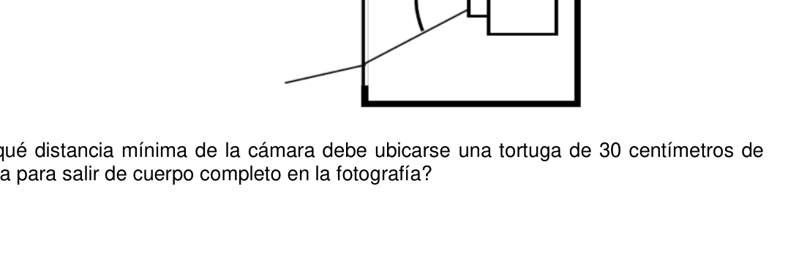
Topic: Geometric Optics Metodi: Snell’s Law, Thin Lens & Mirror Equation, Small-Angle Approximation Competenze: Physical Reasoning, Mathematical Modeling Objects: Lens Fonte: Testo (PDF) — p.116
Foto subacquea
PT18. EPES N° 54 Guverno Juan José Silva Città di Formosa.
Fotografia subacquea! Adaptazione del materiale Problemi di ottica geometrica e strumentale. Unità 13: Strumenti fotografici di Jaume Escofet. a) Determina il campo angolare di un obiettivo di f = 50 mm accoppiato a una camera full frame (35 mm). Si chiude la camera anteriore, in modo staccato, in una scatola cristallina e trasparente per poter scattare fotografie subacquee come mostrato nella figura. Se la spessura del viso frontale al L’obiettivo è sconsiderato, determina: b) Il nuovo campo angolare della camera.
A che distanza minima dalla camera si deve collocare una tartaruga di 30 centimetri di altezza? E’ la altura per uscire da un corpo completo in fotografia?
OAF 2019- 35
Topic: Geometric Optics Metodi: Snell’s Law, Thin Lens & Mirror Equation, Small-Angle Approximation Competenze: Physical Reasoning, Mathematical Modeling Objects: Lens Fonte: Testo (PDF) — p.116
The following is the list of the countries of the European Union:
PT18. EPES N° 54 Governor Juan José Silva The city of Formosa.
Underwater photography! Adaptation of the material Problems of Geometric and Instrumental Optics. Unit 13: Photographic instruments by Jaume Escofet. (a) Determine the angular field of a f = 50 mm lens coupled to a Full-frame camera (35 mm). The front chamber is locked, tightly, in A glass and transparent box for photographing. underwater as shown in Figure 1. If the thickness of the front face to the The objective is despicable, it determines: (b) The new angular field of the chamber.
What is the minimum distance from the chamber for a turtle of 30 centimetres? Height to get out of full body in photography?
The following information shall be provided:
Topic: Geometric Optics Metodi: Snell’s Law, Thin Lens & Mirror Equation, Small-Angle Approximation Competenze: Physical Reasoning, Mathematical Modeling Objects: Lens Fonte: Testo (PDF) — p.116
PT19. EPET N° 16 Dos de Mayo, Misiones.
Un cuerpo con carga eléctrica q1=2x10-4C, de masa m=0.01kg se encuentra suspendido de un hilo de longitud l=0,8m. Debido a la acción de una carga eléctrica q2=5x10-5C el cuerpo se desvía de la vertical 20°.
a) Dibuja un croquis de las posiciones del cuerpo y la carga b) Realiza el diagrama de cuerpo libre sobre la masa m c) Determina la intensidad de la fuerza horizontal que desplaza la masa de su vertical d) Calcula la tensión que soporta el hilo. e) ¿Cuál es la intensidad del campo eléctrico en el lugar donde se encuentra la carga q1? f) ¿A qué distancia se encuentra la carga q2?
Topic: Electrostatics, Newtonian Mechanics Metodi: Coulomb’s Law, Free-Body Diagram, Vector Decomposition Competenze: Physical Reasoning, Mathematical Modeling Objects: Point Charge, Pendulum, String Fonte: Testo (PDF) — p.116
PT19. La Commissione ha adottato una decisione che non prevede che la Commissione non possa adottare misure di cui al paragrafo 1. Due maggio, missioni.
Un corpo con carico elettrico q1=2x10-4C, di massa m=0.01kg è sospeso di una linea di lunghezza l=0,8 m. A causa dell’azione di una carica elettrica q2=5x10-5C il il corpo si allontana dal verticale 20°.
a) Disegna un schizzo delle posizioni del corpo e della carica b) Realizza il diagramma di corpo libero sulla massa m c) Determina l’intensità della forza orizzontale che spostano la massa del suo Verticale d) Calcola la tensione che il filo supporta. e) Qual è l’intensità del campo elettrico nel luogo in cui si trova la carica Q1? f) A che distanza si trova la carica q2?
Topic: Electrostatics, Newtonian Mechanics Metodi: Coulomb’s Law, Free-Body Diagram, Vector Decomposition Competenze: Physical Reasoning, Mathematical Modeling Objects: Point Charge, Pendulum, String Fonte: Testo (PDF) — p.116
PT19. The following information is provided: May 2nd, missions.
A body with electrical charge q1=2x10-4C, mass m=0.01kg is suspended a length of l=0,8 m. Because of the action of an electric charge q2=5x10-5C the body deviates from the 20° vertical.
(a) Draw a sketch of body positions and load (b) Perform the free-body diagram over mass m (c) Determines the intensity of the horizontal force displacing the mass of its vertical (d) Calculate the stresses the yarn bears. (e) What is the intensity of the electric field at the location of the charge q1? (f) What is the distance of the q2 load?
Topic: Electrostatics, Newtonian Mechanics Metodi: Coulomb’s Law, Free-Body Diagram, Vector Decomposition Competenze: Physical Reasoning, Mathematical Modeling Objects: Point Charge, Pendulum, String Fonte: Testo (PDF) — p.116
PT20. EPET N° 16 Dos de Mayo, Misiones.
El siguiente circuito eléctrico está conectado a una fuente de 32voltios (que consideraremos sin resistencia interna), con una resistencia total de desconocida y una potencia de 128 Watts
a) Determina el valor de la resistencia total b) Calcula la intensidad en cada rama c) ¿Cuál debe ser valor de la resistencia X para que la potencia sea de 128 Watts? d) ¿Qué cantidad de energía consume el circuito si permanece conectado durante una hora?
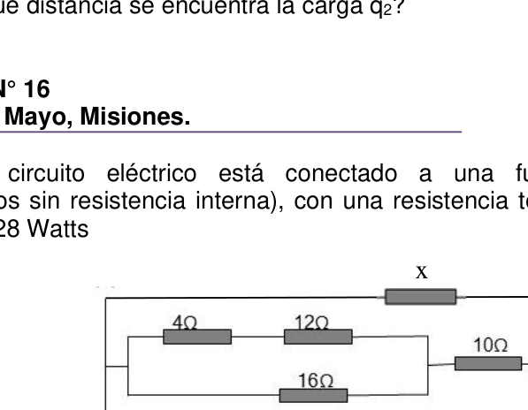
Topic: Circuits Metodi: Kirchhoff’s Laws, Equivalent Circuit Reduction Competenze: Physical Reasoning, Mathematical Modeling Objects: Resistor, Battery Fonte: Testo (PDF) — p.116
PT20. La Commissione ha adottato una decisione che non prevede che la Commissione non possa adottare misure di cui al paragrafo 1. Due maggio, missioni.
Il circuito elettrico seguente è collegato a una fonte di 32 volt (che La resistenza interna è stata considerata senza resistenza interna, con una resistenza totale di sconosciuta e una resistenza totale di un’unità di resistenza. Potenza di 128 Watts
a) Determina il valore della resistenza totale b) Calcola l’intensità in ogni ramo c) Qual è il valore della resistenza X per rendere la potenza 128 Watts? d) Quanta energia il circuito consuma se rimane connesso per un periodo di tempo
- Un’ora?
Topic: Circuits Metodi: Kirchhoff’s Laws, Equivalent Circuit Reduction Competenze: Physical Reasoning, Mathematical Modeling Objects: Resistor, Battery Fonte: Testo (PDF) — p.116
PT20. The following information is provided: May 2nd, missions.
The following electrical circuit is connected to a 32 volt source (which We will consider it without internal resistance), with a total resistance of unknown and a Power of 128 Watts
(a) Determines the value of the total resistance (b) Calculate the intensity in each branch (c) What must be the value of the resistance X for the power to be 128 Watts? (d) How much energy is consumed by the circuit if it remains connected for a period of time
- What?
Topic: Circuits Metodi: Kirchhoff’s Laws, Equivalent Circuit Reduction Competenze: Physical Reasoning, Mathematical Modeling Objects: Resistor, Battery Fonte: Testo (PDF) — p.116
PT21. EPET N° 16 Dos de Mayo, Misiones.
En una prensa hidráulica que tiene uno de sus cilindros de 2,5cm2 y el otro de 128cm2.
El émbolo del cilindro mayor sostiene un cuerpo de 2000Kg. Que debe levantarse 7cm
más arriba.
a) ¿Qué cantidad de energía hay que aportar al sistema para levantar el cuerpo?
b) ¿Qué potencia debe tener su sistema para levantar la carga en 20 seg?
c) Cuando la carga esté a la altura necesaria ¿Qué distancia se habrá desplazado
el émbolo menor?
d) Determina la fuerza que hay que aplicar al embolo menor para equilibrar la
fuerza ejercida por la carga.
e) Si sobre el embolo menor se ejerce una fuerza 2% mayor a la necesaria para
equilibrar el peso de la carga ¿Qué aceleración recibirá esta?
x
36 - OAF 2019
Topic: Fluid Mechanics Metodi: Hydrostatic Equilibrium, Conservation of Energy Competenze: Physical Reasoning, Mathematical Modeling Objects: Piston, Block Fonte: Testo (PDF) — p.116
PT21. La Commissione ha adottato una decisione che non prevede che la Commissione non possa adottare misure di cui al paragrafo 1. Due maggio, missioni.
In una stampa idraulica che ha uno dei suoi cilindri di 2,5 cm2 e l’altro di 128 cm2. Il cilindro più grande sostiene un corpo di 2000 kg. Che deve essere alzata di 7 cm
- Più in alto. a) Quanta energia deve essere fornita al sistema per sollevare il corpo? b) Qual è la potenza del sistema per sollevare il carico in 20 secondi? c) Quando la carica è a l’altezza necessaria, che distanza è stata spostata l’embolo minore? d) Determina la forza da applicare all’embolo minore per bilanciare la forza esercitata dalla carica. (e) Se l’embolo minore è esercitato con un’intensità superiore del 2% a quella necessaria per Che accelerazione riceverà? x
36 - OAF 2019
Topic: Fluid Mechanics Metodi: Hydrostatic Equilibrium, Conservation of Energy Competenze: Physical Reasoning, Mathematical Modeling Objects: Piston, Block Fonte: Testo (PDF) — p.116
PT21. The following information is provided: May 2nd, missions.
In a hydraulic press that has one of its cylinders of 2.5cm2 and the other of 128cm2. The bulk of the main cylinder holds a body of 2000 kg. That must rise 7cm higher up. (a) How much energy does the system need to provide to lift the body? (b) What power should your system have to lift the load in 20 seconds? (c) When the load is at the required height, what distance has been travelled? The smaller embolus? (d) Determines the force to be applied to the lower embolus to balance the force exerted by the load. (e) If a force 2% greater than that required for the lower embolus is applied What acceleration will this receive? x
The following is the list of the countries of the European Union:
Topic: Fluid Mechanics Metodi: Hydrostatic Equilibrium, Conservation of Energy Competenze: Physical Reasoning, Mathematical Modeling Objects: Piston, Block Fonte: Testo (PDF) — p.116
PT22. Instituto Técnico San José Clorinda, Formosa.
Un habitante del planeta Titán lanzó una flecha y obtuvo los datos que se indican en la Figura 1.
Siendo “x” la distancia horizontal e “y” la distancia vertical:
a) ¿Cuál es la velocidad horizontal de la flecha? b) ¿Cuál es la velocidad vertical inicial de la flecha? c) ¿Cuál es el valor de la aceleración de la gravedad en el planeta Titán?
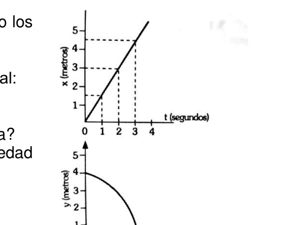
Topic: Newtonian Mechanics Metodi: Kinematic Equations, Vector Decomposition Competenze: Physical Reasoning, Mathematical Modeling Objects: Projectile Fonte: Testo (PDF) — p.116
PT22. Istituto Tecnico San José Clorina, Formosa.
Un abitante del pianeta Titano lanciò un’arcia e ottenne i suoi dati indicati in Figura 1.
Se x è la distanza orizzontale e y la distanza verticale:
a) Qual è la velocità orizzontale della freccia? b) Qual è la velocità verticale iniziale dell’arcia? c) Qual è il valore dell’accelerazione della gravità sul pianeta Titano?
Topic: Newtonian Mechanics Metodi: Kinematic Equations, Vector Decomposition Competenze: Physical Reasoning, Mathematical Modeling Objects: Projectile Fonte: Testo (PDF) — p.116
PT22. San Jose Technical Institute Clorinda, the Formosa.
A man from the planet Titan threw an arrow and got the data as shown in Figure 1.
If x is the horizontal distance and y is the vertical distance:
(a) What is the horizontal velocity of the arrow? (b) What is the initial vertical velocity of the arrow? (c) What is the value of the acceleration of gravity on the planet Titan?
Topic: Newtonian Mechanics Metodi: Kinematic Equations, Vector Decomposition Competenze: Physical Reasoning, Mathematical Modeling Objects: Projectile Fonte: Testo (PDF) — p.116
PT23. Instituto Técnico San José Clorinda, Formosa.
Un bloque de hielo de 400g de masa de halla a una temperatura de -30°C, a presión
normal. Siendo: Lf=80cal/g, Lv=540cal/g, Chielo=0,5cal/g°C y Cagua=1 cal/g°C. Despreciar el
intercambio de calor con el ambiente.
a) Determine la cantidad de calor para transformar totalmente ese bloque de hielo a
agua líquida a 0°C
b) Calcular la cantidad de calor para transformar el agua líquida de 0°C a vapor a
100°C
c) Determine la cantidad de calor total a suministrar para transformar el bloque de
hielo inicial a vapor a 100°C.
d) Construya un gráfico de temperatura vs cantidad de calor para ambos apartados.
e) Si el bloque inicial de hielo se pone en contacto con una masa de agua líquida,
de 900g a 50°C cual será la temperatura final de equilibrio. Considerar un nulo
intercambio de calor con el ambiente.
Topic: Thermodynamics Metodi: First Law of Thermodynamics Competenze: Physical Reasoning, Mathematical Modeling Objects: Calorimeter Fonte: Testo (PDF) — p.116
PT23. Istituto Tecnico San José Clorina, Formosa.
Un blocco di ghiaccio di 400 g di massa di cartilage a una temperatura di -30°C, a pressione
- Normalmente. Essendo: Lf=80cal/g, Lv=540cal/g, Chielo=0,5cal/g°C e Cagua=1 cal/g°C. Disprezziare il scambi di calore con l’ambiente. a) Determina la quantità di calore per trasformare completamente quel blocco di ghiaccio in acqua liquida a 0°C b) Calcolare la quantità di calore per trasformare l’acqua liquida da 0°C a vapore a 100°C c) Determina la quantità totale di calore da fornire per trasformare il blocco di I fretti di calcio di calcio di calcio di calcio di calcio di calcio di calcio di calcio di calcio di calcio di calcio di calcio di calcio di calcio di calcio di calcio di calcio di calcio di calcio di calcio di calcio di calcio di calcio di calcio di calcio di calcio di calcio di calcio di calcio di calcio di calcio di calcio di calcio di calcio di calcio di calcio di calcio di calcio di calcio di calcio di calcio di calcio di calcio di calcio di calcio di calcio di calcio di calcio di calcio di calcio di calcio di calcio di calcio di calcio di calcio di calcio di calcio di calcio di calcio di calcio di calcio di calcio di calcio di calcio di calcio di calcio di calcio di calcio di calcio di calcio di calcio di calcio di calcio di calcio di calcio di calcio di calcio di calcio di calcio di calcio di calcio di calcio di calcio di calcio di calcio di calcio di calcio di calcio di calcio di calcio di calcio di calcio di calcio di calcio di calcio di calcio di calcio di calcio di calcio di calcio di calcio di calcio di calcio di calcio di calcio di calcio di calcio di calcio di calcio di calcio di calcio di calcio di calcio di calcio di calcio di calcio di calcio di calcio di calcio di calcio di calcio di calcio di calcio di calcio di calcio di calcio di calcio di calcio di calcio di calcio di calcio di calcio di calcio di calcio di calcio di calcio di calcio di calcio di calcio di calcio di calcio di calcio di calcio di calcio di calcio di calcio di calcio di calcio di calcio di calcio di calcio di calcio di calcio di calcio di calcio di calcio di calcio di calcio di calcio di calcio di calcio di calcio di calcio di calcio di calcio di calcio di calcio di calcio di calcio di d) Costruire un grafico di temperatura vs quantità di calore per entrambi i paragrafi. e) Se l’inizio del blocco di ghiaccio viene messo in contatto con una massa di acqua liquida, 900 g a 50°C che sarà la temperatura di equilibrio finale. Considerare un nulla scambi di calore con l’ambiente.
Topic: Thermodynamics Metodi: First Law of Thermodynamics Competenze: Physical Reasoning, Mathematical Modeling Objects: Calorimeter Fonte: Testo (PDF) — p.116
PT23. San Jose Technical Institute Clorinda, the Formosa.
A block of 400 g of ice of a mass of -30°C at pressure It’s normal. The following are the values: Lf=80 cal/g, Lv=540 cal/g, Chielo=0,5 cal/g°C and Cagua=1 cal/g°C. Disdain the heat exchange with the environment. (a) Determine the amount of heat to fully transform that block of ice to Liquid water at 0°C (b) Calculate the amount of heat to transform liquid water from 0°C to steam to 100°C (c) Determine the total amount of heat to be supplied to transform the block of initial steam ice at 100°C. d) Construct a temperature vs. heat quantity chart for both sections. (e) If the initial block of ice is in contact with a liquid water mass, from 900g to 50°C which will be the final equilibrium temperature. Consider a null heat exchange with the environment.
Topic: Thermodynamics Metodi: First Law of Thermodynamics Competenze: Physical Reasoning, Mathematical Modeling Objects: Calorimeter Fonte: Testo (PDF) — p.116
PT24. Instituto Técnico San José Clorinda, Formosa.
Dos cargas puntiformes, Q1 y Q2 están fijadas en los puntos A y B que distan entre si 0,4m en el vacío. Siendo Q1=2μC, Q2=8 μC k0=9x109Nm2/C2 a) Determine la intensidad de la fuerza eléctrica resultante sobre una carga Q3=(- 3μC) colocada en el punto C a 0,1m de A, sobre la recta AB. b) Determina la intensidad y sentido del vector campo eléctrico en el punto C.
Topic: Electrostatics Metodi: Coulomb’s Law, Superposition Principle, Vector Decomposition Competenze: Physical Reasoning, Mathematical Modeling Objects: Point Charge Fonte: Testo (PDF) — p.116
PT24. Istituto Tecnico San José Clorina, Formosa.
Due carichi puntofoni, Q1 e Q2, sono fissati nei punti A e B che si allontanano tra loro. 0,4 metri nel vuoto. Se Q1=2μC, Q2=8 μC k0=9x109Nm2/C2 a) Determina l’intensità della forza elettrica risultante su un carico Q3=(- 3μC) posto al punto C a 0,1 m da A, sulla retta AB. b) Determina l’intensità e il senso del vettore del campo elettrico al punto C.
Topic: Electrostatics Metodi: Coulomb’s Law, Superposition Principle, Vector Decomposition Competenze: Physical Reasoning, Mathematical Modeling Objects: Point Charge Fonte: Testo (PDF) — p.116
PT24. San Jose Technical Institute Clorinda, the Formosa.
Two pointed loads, Q1 and Q2 are fixed at points A and B which are spaced apart. 0.4m in the vacuum. If Q1 = 2μC, Q2 = 8 μC k0 = 9x109Nm2/C2 (a) Determine the intensity of the resulting electrical force on a load Q3=(- 3μC) placed at the point C at 0,1m from A, above the AB straight. (b) Determines the intensity and direction of the electric field vector at point C.
Topic: Electrostatics Metodi: Coulomb’s Law, Superposition Principle, Vector Decomposition Competenze: Physical Reasoning, Mathematical Modeling Objects: Point Charge Fonte: Testo (PDF) — p.116
PT25. Colegio del Carmen y San José* - Escuela Secundaria N° 2 Clara Amstrong* Escuela Preuniversitaria ENET N° 1 Prof. Vicente Aguilera* Escuela Secundaria N° 3 Gustavo Levene* - Colegio Padre R. de la Quintana* Instituto Pía Didoménico* - EPET N° 7 Alsina Alcobert* Escuela Provincial de Minería* - Escuela PreUniversitaria Fray M. Esquiu* Escuela Municipal N° 1 Fray Mamerto Esquiu** *San Fernando del Valle - **Fray Mamerto Esquiu- Piedra Blanca, Catamarca.
En un día de verano catamarqueño, en una tienda de telas, un empleado tiene “un metro” (regla metálica para medir) graduado a 20°C. Suponga que el empleado está utilizando su “metro” con temperatura ambiente de casi 40°C. En dicho día:
OAF 2019- 37
a) ¿La longitud del “metro” del comerciante es mayor o menor a un metro?
b) Al vender una pieza de tela y medir su longitud con dicho “metro” , ¿el
comerciante comete un abuso o sufre una perdida? (La dilatación de la tela es
despreciable)
c) Exprese las dos temperaturas en K.
d) Calcule el valor de la longitud final de la regla metálica si está hecha de aluminio
(α= 23x10-6 °C-1, coeficiente de dilatación lineal del aluminio).
e) Calcule cuánto ganó o perdió en este día, si el metro de tela cuesta $450 y
vendió 100 m de tela.
Topic: Thermodynamics, Elasticity & Materials Metodi: Ideal Gas Law, Dimensional Analysis Competenze: Physical Reasoning, Mathematical Modeling Objects: — Fonte: Testo (PDF) — p.116
PT25. Colegio del Carmen y San José* - Scuola secondaria N° 2 Clara Amstrong* Scuola preuniversitaria ENET N° 1 Prof. Vicente Aguilera* Scuola secondaria N° 3 Gustavo Levene* - Scuola Padre R. di Quintana* Istituzione Pía Didomenico* - EPET N° 7 Alsina Alcobert* Scuola Provinciale di Mineria* - Scuola Preuniversitaria Fray M. Squaw* Scuola Comunale N° 1 Fray Mamerto Esquiu** San Fernando del Valle - Fraie Mamerto Esquiu - Pietra Bianca, Catamarca.
Un giorno di estate catamarcano, in un negozio di tessuti, un dipendente ha un metro. (regola di misurazione metallica) gradito a 20°C. Supponiamo che l’impiegato stia utilizzando il suo metro con temperatura ambiente di quasi 40°C. In quel giorno:
OAF 2019- 37 a) La lunghezza del metro del commerciante è maggiore o minore di un metro? b) vendendo un pezzo di tessuto e misurando la sua lunghezza con tale metro , il metro è il il commerciante commette un abuso o subisce una perdita? (La dilatazione del tessuto è sconsiderato) c) Esprimere le due temperature in K. d) Calcolare il valore della lunghezza finale della regola metallica se è fatta di alluminio (α= 23x10-6 °C-1, coefficiente di dilatazione lineare dell’alluminio). e) Calcola quanto hai vinto o perso in quel giorno, se il metro di tela costa $450 e ha venduto 100 metri di tessuto.
Topic: Thermodynamics, Elasticity & Materials Metodi: Ideal Gas Law, Dimensional Analysis Competenze: Physical Reasoning, Mathematical Modeling Objects: — Fonte: Testo (PDF) — p.116
PT25. School of Carmen and San José* - Secondary School N° 2 Clara Amstrong* The first is the first of a series of studies on the subject of the study. The Commission has decided to take the necessary measures to ensure that the Commission is able to take the necessary measures to ensure that the measures taken are implemented. Secondary School N° 3 Gustavo Levene* - Father R. The following table shows the results of the evaluation: The Commission has also adopted a proposal for a regulation on the protection of the environment. The Provincial Mining School* - Fray M. Pre-university School. The following information shall be provided: The school is located in the village of M.S.K. The Commission has also adopted a number of proposals for the establishment of a European Community-wide network of networks for the promotion of the use of electronic communications networks.
On a Catalan summer day, in a textile shop, an employee has a meter. (metallic measuring rule) graduated to 20°C. Suppose the employee is using its metre with a room temperature of almost 40°C. On that day:
The Commission shall adopt implementing acts in accordance with Article 21 of the Financial Regulation. (a) Is the length of the trader’s meter greater than or less than one meter? (b) When selling a piece of cloth and measuring its length with this metre , the Does the trader commit an abuse or suffer a loss? (The expansion of the fabric is I ‘m not a big fan of this . (c) Express the two temperatures in K. (d) Calculate the value of the final length of the metallic rule if it is made of aluminium The value of the product shall be determined by the methodology used in the manufacture of the product. e) Calculate how much you won or lost on this day, if the cloth meter costs $450 and He sold 100 meters of cloth.
Topic: Thermodynamics, Elasticity & Materials Metodi: Ideal Gas Law, Dimensional Analysis Competenze: Physical Reasoning, Mathematical Modeling Objects: — Fonte: Testo (PDF) — p.116
PT26. Colegio del Carmen y San José* - Escuela Secundaria N° 2 Clara Amstrong* Escuela Preuniversitaria ENET N° 1 Prof. Vicente Aguilera* Escuela Secundaria N° 3 Gustavo Levene* - Colegio Padre R. de la Quintana* Instituto Pía Didoménico* - EPET N° 7 Alsina Alcobert* Escuela Provincial de Minería* - Escuela PreUniversitaria Fray M. Esquiu* Escuela Municipal N° 1 Fray Mamerto Esquiu** *San Fernando del Valle - **Fray Mamerto Esquiu- Piedra Blanca, Catamarca.
Un cuerpo de 80 kg se desea levantar hasta una altura de 10m sobre un plano inclinado que forma un ángulo de 30° con la horizontal. Si la fuerza (paralela al plano inclinado) que se ejerce a través de una cuerda es de 600 N y el coeficiente de rozamiento cinético entre la superficie y la masa es de 0,2. Se pide: a) Dibujar el plano inclinado y todas las fuerzas que actúan sobre el cuerpo (diagrama de cuerpo libre). b) Calcular el desplazamiento del cuerpo hasta llegar a la parte superior del plano inclinado. c) Calcular el trabajo realizado por cada una de las fuerzas que actúan sobre el cuerpo. d) Calcular el trabajo neto (total) realizado.
Topic: Newtonian Mechanics, Conservation of Energy Metodi: Free-Body Diagram, Conservation of Energy, Vector Decomposition Competenze: Physical Reasoning, Mathematical Modeling Objects: Inclined Plane, Block, String Fonte: Testo (PDF) — p.116
PT26. Colegio del Carmen y San José* - Scuola secondaria N° 2 Clara Amstrong* Scuola preuniversitaria ENET N° 1 Prof. Vicente Aguilera* Scuola secondaria N° 3 Gustavo Levene* - Scuola Padre R. di Quintana* Istituzione Pía Didomenico* - EPET N° 7 Alsina Alcobert* Scuola Provinciale di Mineria* - Scuola Preuniversitaria Fray M. Squaw* Scuola Comunale N° 1 Fray Mamerto Esquiu** San Fernando del Valle - Fraie Mamerto Esquiu - Pietra Bianca, Catamarca.
Un corpo di 80 kg è desideroso di essere sollevato fino a 10 m di altezza su un piano inclinato. che forma un angolo di 30° con la orizzontale. Se la forza (parallelamente al piano inclinato) che il coefficiente di rottura cinetica è di 600 N. tra superficie e massa è di 0,2. Si chiede: a) Disegnare il piano inclinato e tutte le forze che agiscono sul corpo (diagrafo del corpo libero). b) Calcolare il spostamento del corpo fino alla parte superiore del piano inclinato. (c) Calcolare il lavoro svolto da ciascuna delle forze che agiscono sul corpo. d) Calcolare il lavoro netto (totalmente) svolto.
Topic: Newtonian Mechanics, Conservation of Energy Metodi: Free-Body Diagram, Conservation of Energy, Vector Decomposition Competenze: Physical Reasoning, Mathematical Modeling Objects: Inclined Plane, Block, String Fonte: Testo (PDF) — p.116
PT26. School of Carmen and San José* - Secondary School N° 2 Clara Amstrong* The first is the first of a series of studies on the subject of the study. The Commission has decided to take the necessary measures to ensure that the Commission is able to take the necessary measures to ensure that the measures taken are implemented. Secondary School N° 3 Gustavo Levene* - Father R. The following table shows the results of the evaluation: The Commission has also adopted a proposal for a regulation on the protection of the environment. The Provincial Mining School* - Fray M. Pre-university School. The following information shall be provided: The school is located in the village of M.S.K. The Commission has also adopted a number of proposals for the establishment of a European Community-wide network of networks for the promotion of the use of electronic communications networks.
A body of 80 kg is desired to lift up to a height of 10 m on an inclined plane. a diameter of 30° with horizontal axis. If the force (parallel to the inclined plane) that It is exercised through a rope is 600 N and the coefficient of kinetic friction The distance between the surface and mass is 0.2. It asks: (a) Draw the slope and all the forces acting on the body. (free body diagram) (b) Calculate the displacement of the body to the top of the plane. I’m not going to lie. (c) Calculate the work done by each of the forces acting on the body. (d) Calculate the net (total) work performed.
Topic: Newtonian Mechanics, Conservation of Energy Metodi: Free-Body Diagram, Conservation of Energy, Vector Decomposition Competenze: Physical Reasoning, Mathematical Modeling Objects: Inclined Plane, Block, String Fonte: Testo (PDF) — p.116
Nave con propulsion ionica
PT27. Colegio del Carmen y San José* - Escuela Secundaria N° 2 Clara Amstrong* Escuela Preuniversitaria ENET N° 1 Prof. Vicente Aguilera* Escuela Secundaria N° 3 Gustavo Levene* - Colegio Padre R. de la Quintana* Instituto Pía Didoménico* - EPET N° 7 Alsina Alcobert* Escuela Provincial de Minería* - Escuela PreUniversitaria Fray M. Esquiu* Escuela Municipal N° 1 Fray Mamerto Esquiu** *San Fernando del Valle - **Fray Mamerto Esquiu- Piedra Blanca, Catamarca.
Nave con propulsión iónica Una nave espacial emplea en su propulsión el Principio de acción y reacción de las fuerzas (F= - F´). Gases a muy alta velocidad son expulsados por la tobera de la nave con mucha fuerza, a su vez el aire impulsa la nave en dirección contraria con la misma fuerza. Si se utiliza un motor iónico, átomos neutros de gas Argón (aunque también podrían usarse átomos de Xenón, Cesio o de Mercurio) entran a una primera cámara donde son ionizados mediante un haz de microondas que arrancan un electrón a cada átomo. Los iones Ar+ son conducidos mediante un campo eléctrico débil a otra cámara, donde un intenso campo eléctrico los acelera hasta una alta velocidad y los expulsa al espacio exterior. Para crear este campo, se establece una diferencia de potencial entre dos rejillas, a través de las cuales pasan los iones. La nave debe permanecer eléctricamente neutra, por lo que un circuito capta los electrones producidos en la ionización y, mediante un cátodo hueco, los expulsa también al espacio, donde se recombinan con los iones Ar+ formando de nuevo gas neutro y emitiendo un bello resplandor. Los electrones son muchísimo más ligeros que los iones, por lo que su efecto de propulsión es irrelevante.(ver figura)
38 - OAF 2019
Datos
La nave inicia su viaje con 100 kg de gas Ar y su consumo diario es de C= 0,2 Kg/día,
donde C se define como:
𝐶= 𝑁𝑖𝑜𝑛𝑒𝑠 ∗ 𝑚𝑖𝑜𝑛
𝑡
La diferencia de potencial entre las dos rejillas es de ∆V= 1,5 KV. Masa media de un átomo de Argón: m = 6.633×10−26 kg Carga del electrón: e = 1,602×10−19 C
Calcular a) La autonomía de la nave con esa cantidad de gas Ar en años y en segundos. b) El número de iones Ar+ expulsados por segundos. c) La magnitud del campo eléctrico E creado entre las rejillas si la distancia entre ambas es de 1 m. d) El trabajo efectuado sobre cada ion por ∆V. e) La velocidad v de expulsión de cada ion (a la salida de la 2da rejilla).(usar Conservación de la energía). f) La fuerza F de empuje del motor iónico producida por la masa total de iones expulsados. g) La intensidad I de la corriente iónica expulsada. h) La potencia P empleada en la aceleración de los iones.
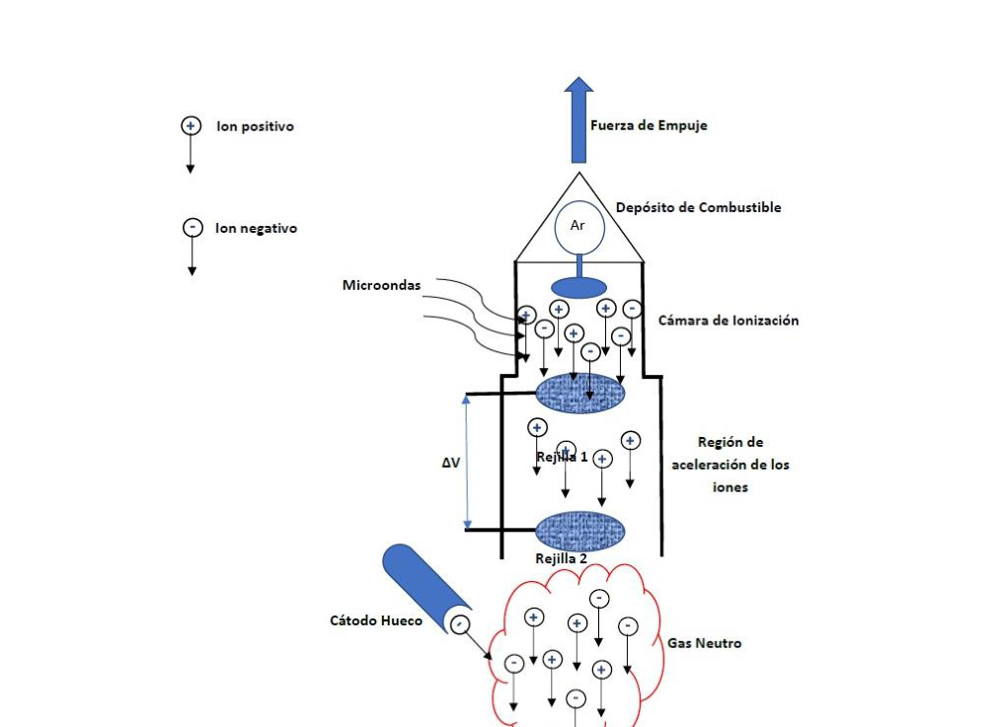
Topic: Electromagnetism, Conservation of Momentum Metodi: Conservation of Energy, Conservation of Momentum, Electric Potential Method Competenze: Physical Reasoning, Mathematical Modeling Objects: Particle Beam, Ball Fonte: Testo (PDF) — p.116
Nave a propulsione ionica
PT27. Colegio del Carmen y San José* - Scuola secondaria N° 2 Clara Amstrong* Scuola preuniversitaria ENET N° 1 Prof. Vicente Aguilera* Scuola secondaria N° 3 Gustavo Levene* - Scuola Padre R. di Quintana* Istituzione Pía Didomenico* - EPET N° 7 Alsina Alcobert* Scuola Provinciale di Mineria* - Scuola Preuniversitaria Fray M. Squaw* Scuola Comunale N° 1 Fray Mamerto Esquiu** San Fernando del Valle - Fraie Mamerto Esquiu - Pietra Bianca, Catamarca.
Nave a propulsione ionica Una nave spaziale impiega nel suo propulsione il principio di azione e reazione delle Forze (F= - F ́). Gasi a velocità molto elevata vengono espulsi dal cappio della nave Con molta forza, l’aria, invece, spinge la nave in direzione opposta alla stessa. forza. Se si utilizza un motore ionico, atomi neutri di gas argone (anche se anche Potrebbero essere utilizzati atomi di xenone, cesio o mercurio) entrano in una prima camera. dove vengono ionizzati da un raggio di microonde che scatenano un elettrone a ciascuna l’atomo. Gli ioni Ar+ sono condotti da un debole campo elettrico ad un’altra camera. dove un intenso campo elettrico li accelera ad una velocità elevata e li espelle al spazio esterno. Per creare questo campo, si stabilisce una differenza di potenziale tra due griglie, attraverso le quali passano gli ioni. La nave deve rimanere. Il circuito di un’elettricità neutrale, quindi un circuito cattura gli elettroni prodotti nella La loro ionizzazione e, con un catoda vuoto, li espelle anche nello spazio, dove si ricombinano con gli ioni Ar+ formando nuovamente gas neutro ed emettendo un bello
- Il respiro. Gli elettroni sono molto più leggeri degli ioni, quindi il loro effetto è La propulsione è irrilevante.
38 - OAF 2019
Datos La nave inizia il suo viaggio con 100 kg di gas Ar e il suo consumo giornaliero è di C= 0,2 Kg/giorno, dove C è definito come: C= Niones mion 𝑡
La differenza di potenziale tra le due griglie è di ∆V= 1,5 KV. Massa media di un atomo di argone: m = 6.633×10−26 kg Carga dell’elettrone: e = 1,602×10−19 C
Calcolare a) L’autonomia della nave con tale quantità di gas Ar in anni e secondi. b) Il numero di ioni Ar+ emessi per secondo. c) La magnitudine del campo elettrico E creato tra le griglie se la distanza tra Entrambi sono di 1 m. d) Il lavoro svolto su ogni ion per ∆V. e) velocità v di espulsione di ogni ion (all’uscita della 2a griglia). Conservazione dell’energia). f) La forza di spinta F del motore ionico prodotta dalla massa totale degli ioni espulsi. g) L’intensità I del corrente ionica emessa. h) Potenza P utilizzata per accelerare gli ioni.
Topic: Electromagnetism, Conservation of Momentum Metodi: Conservation of Energy, Conservation of Momentum, Electric Potential Method Competenze: Physical Reasoning, Mathematical Modeling Objects: Particle Beam, Ball Fonte: Testo (PDF) — p.116
Ship with ionic propulsion
PT27. School of Carmen and San José* - Secondary School N° 2 Clara Amstrong* The first is the first of a series of studies on the subject of the study. The Commission has decided to take the necessary measures to ensure that the Commission is able to take the necessary measures to ensure that the measures taken are implemented. Secondary School N° 3 Gustavo Levene* - Father R. The following table shows the results of the evaluation: The Commission has also adopted a proposal for a regulation on the protection of the environment. The Provincial Mining School* - Fray M. Pre-university School. The following information shall be provided: The school is located in the village of M.S.K. The Commission has also adopted a number of proposals for the establishment of a European Community-wide network of networks for the promotion of the use of electronic communications networks.
Ion-powered ship A spacecraft uses the principle of action and reaction of the The following shall be added: Gas at very high speed is ejected from the ship ‘s hull . With great force, the air pushes the ship in the opposite direction to the same.
- I’m going to force it. If an ionic motor is used, neutral argon gas atoms (although also Xenon, Cesium or Mercury atoms could be used. where they are ionized by a microwave beam that starts an electron at each The atom. The Ar+ ions are carried by a weak electric field to another chamber, where an intense electric field accelerates them to a high speed and drives them to the outer space. To create this field, a potential difference is established between Two grids, through which the ions pass. The ship must remain . The electron is electrically neutral, so a circuit captures the electrons produced in the The first is the ionization of the particles and, by means of a hollow cathode, the discharge into space, where they are They recombine with the Ar+ ions forming a new neutral gas and emitting a beautiful The glow. The electrons are much lighter than the ions, so their effect is The power consumption is irrelevant.
The Commission shall adopt delegated acts in accordance with Article 21 of this Regulation.
Data from the report The ship starts its journey with 100 kg of Ar gas and its daily consumption is C= 0,2 Kg/day, where C is defined as: C= Nions million 𝑡
The potential difference between the two grids is ∆V=1,5 KV. The average mass of an Argon atom: m = 6.633×10−26 kg Electron charge: e = 1,602×10−19 C
Calculate (a) The autonomy of the vessel with that amount of Ar gas in years and seconds. (b) The number of Ar+ ions ejected per second. (c) The magnitude of the electric field E created between the grids if the distance between Both are 1 m. (d) The work done on each ion by ∆V. (e) The velocity v of each ion’s ejection (at the exit of the 2nd grid). Energy conservation). (f) The ion engine thrust force F produced by the total mass of ions expelled. (g) The I intensity of the ionic current expelled. (h) The power P used in the acceleration of the ions.
Topic: Electromagnetism, Conservation of Momentum Metodi: Conservation of Energy, Conservation of Momentum, Electric Potential Method Competenze: Physical Reasoning, Mathematical Modeling Objects: Particle Beam, Ball Fonte: Testo (PDF) — p.116
PT28. Escuela Normal Juan B. Alberdi San Miguel de Tucumán.
Se tiene un cuerpo de 5 kg de masa que está en lo alto de una rampa de 10 m de longitud, inclinada 30º con respecto a la horizontal. Se deja caer un cuerpo sabiendo que el coeficiente de rozamiento entre el plano y el cuerpo es de 0,2. Calcular:
a) La velocidad del cuerpo al llegar a la mitad de la rampa, si parte con una velocidad inicial vO =1,5 m/seg. b) La velocidad del cuerpo al llegar a la base, si cambia el coeficiente de
OAF 2019- 39 rozamiento a 0,15. c) La distancia en el plano horizontal recorrida por el cuerpo hasta que se detiene, si el coeficiente de rozamiento es igual a 0,1. d) Si cuando el cuerpo se detiene, cae del borde de la mesa (caída libre), h= 4 m e impacta en un resorte que tiene un K= 10 N/m. Calculen cuanto se comprime el resorte.
Topic: Newtonian Mechanics, Oscillations & Waves Metodi: Conservation of Energy, Free-Body Diagram, Hooke’s Law Competenze: Physical Reasoning, Mathematical Modeling Objects: Inclined Plane, Spring, Block Fonte: Testo (PDF) — p.116
PT28. Scuola Normale Juan B. Alberdi San Michele di Tucumán.
Ha un corpo di 5 kg di massa che è al di sopra di una rampa di 10 m di altezza. longitudine, inclinata 30° rispetto all’orizzontale. Si lascia cadere un corpo sapendo che il coefficiente di ruggine tra il piano e il corpo è di 0,2. Calcolare:
a) velocità del corpo fino a metà della rampa, se parte con una velocità iniziale vO = 1,5 m/sec. b) velocità del corpo in arrivo alla base, se cambia il coefficiente di
OAF 2019- 39 Raggiunta di 0,15 c) La distanza in piano orizzontale percorsa dal corpo fino a quando si ferma, se il coefficiente di rottura è pari a 0,1. d) Se quando il corpo si ferma, cade dal bordo della tavola (caccia libera), h= 4 m e impatto su una sorgente che ha un K= 10 N/m. Calcolare quanto si comprime il Primavera.
Topic: Newtonian Mechanics, Oscillations & Waves Metodi: Conservation of Energy, Free-Body Diagram, Hooke’s Law Competenze: Physical Reasoning, Mathematical Modeling Objects: Inclined Plane, Spring, Block Fonte: Testo (PDF) — p.116
PT28. John B. Normal School Alberdi . St. Michael of Tucumán.
It has a body of 5 kg of mass that is on top of a 10 m ramp of length, inclined 30° with respect to the horizontal. You drop a body knowing that you ‘re dead . the coefficient of friction between the plane and the body is 0,2. Calculation:
(a) The body speed at the halfway point of the ramp, if it starts with a The speed of the vehicle shall be: (b) The body speed at the base, if the coefficient of changes.
The Commission shall adopt implementing acts in accordance with Article 21 of this Regulation. The following is the list of the following: (c) The distance in the horizontal plane travelled by the body until it stops, if the coefficient of friction is 0,1. (d) If, when the body stops, it falls from the edge of the table (free fall), h= 4 m e impacts a spring with a K= 10 N/m. Calculate how much the compress is spring.
Topic: Newtonian Mechanics, Oscillations & Waves Metodi: Conservation of Energy, Free-Body Diagram, Hooke’s Law Competenze: Physical Reasoning, Mathematical Modeling Objects: Inclined Plane, Spring, Block Fonte: Testo (PDF) — p.116
PT29. Escuela Normal Juan B. Alberdi San Miguel de Tucumán.
En la Antártida es muy importante la conservación del calor en las instalaciones de las dotaciones de personal, debido a que una mala aislación insumiría una mayor cantidad de combustible para calefaccionar. Por ello:
a) Calculen la cantidad de calor por unidad de tiempo que se pierde en una habitación, que se mantiene a una temperatura de 18 º C a través de una ventana de vidrio de 1,5 m de ancho por 1,1 m de alto y 3 mm de espesor, si la temperatura exterior es de -10 º C. b) ¿Cual será la perdida de calor si se duplica el espesor del vidrio? c) Si se pone cortinas y se reduce la perdida de calor a 60 cal/seg, que sección tendrían las ventanas, manteniendo las variables del punto a). d) El aumento de sección de la ventana (por dilatación) con las temperaturas del punto a).
Datos
Kv= 0,0025 cal / seg.cm.ºC
Landa vidrio= 5 . 10-6 (coef. De dilatación)
Topic: Thermodynamics Metodi: First Law of Thermodynamics Competenze: Physical Reasoning, Mathematical Modeling Objects: Container Fonte: Testo (PDF) — p.116
PT29. Scuola Normale Juan B. Alberdi San Michele di Tucumán.
In Antartide è molto importante conservare il calore nelle strutture delle La Commissione ha inoltre adottato una proposta di direttiva che prevede l’applicazione di misure di sicurezza per l’ambiente. di combustibile per il riscaldamento. Per questo:
a) Calcolare la quantità di calore per unità di tempo perso in una camera, che viene mantenuto a una temperatura di 18 o C attraverso un finestra di vetro di 1,5 m di larghezza per 1,1 m di altezza e 3 mm di spessore, se La temperatura esterna è di -10 o C. b) Qual è la perdita di calore se il vetro è doppio di spessore? c) Se si mettono le tende e si riduce la perdita di calore a 60 cal/sec, quale sezione avrebbero le finestre, mantenendo le variabili del punto a). d) L’aumento della sezione della finestra (per dilatazione) con le temperature del (a)
Datos Kv= 0,0025 cal / seg.cm.oC Lando di vetro = 5 . 10-6 (cfr. di dilatazione)
Topic: Thermodynamics Metodi: First Law of Thermodynamics Competenze: Physical Reasoning, Mathematical Modeling Objects: Container Fonte: Testo (PDF) — p.116
PT29. John B. Normal School Alberdi . St. Michael of Tucumán.
In Antarctica, heat conservation is very important in the The Commission’s proposal for a directive on the protection of workers from the risks of the use of the environment and the environment of heating fuel. Therefore:
(a) Calculate the amount of heat per unit of time lost in a room, which is kept at a temperature of 18 or C through a glass window of 1,5 m wide by 1,1 m high and 3 mm thick, if The outside temperature is -10 or C. (b) What will be the heat loss if the thickness of the glass is doubled? (c) If curtains are placed and heat loss is reduced to 60 cal/sec, what section would have the windows, keeping the variables from point a). (d) The increase in window section (by dilation) with temperature of the window. the following points (a) and (b):
Data from the report The following table shows the following: Glass canvas is equal to five . The Commission shall adopt implementing acts in accordance with Article 10 (6) of Regulation (EC) No 1069/2009. (of dilation)
Topic: Thermodynamics Metodi: First Law of Thermodynamics Competenze: Physical Reasoning, Mathematical Modeling Objects: Container Fonte: Testo (PDF) — p.116
PT30. Escuela Normal Juan B. Alberdi San Miguel de Tucumán.
En un experimento científico de un laboratorio, se quiere medir las fuerzas electrostática de Tres cargas eléctricas Q1= 6 mC , Q2= -4 mC , Q3= -2 mC . Ocupan por este orden, tres vértices consecutivos de un cuadrado de 1 m de lado. Hallar la fuerza ejercida por estas cargas sobre una cuarta carga q = - 2 uC situada en el cuarto vértice.
Topic: Electrostatics Metodi: Coulomb’s Law, Superposition Principle, Vector Decomposition Competenze: Physical Reasoning, Mathematical Modeling Objects: Point Charge Fonte: Testo (PDF) — p.116
PT30. Scuola Normale Juan B. Alberdi San Michele di Tucumán.
In un esperimento scientifico di laboratorio, si vuole misurare le forze elettrostatiche. di tre cariche elettriche Q1= 6 mC , Q2= -4 mC , Q3= -2 mC . Occupate questo ordine, tre vertici consecutivi di un quadrato di 1 m laterale. Trovare la forza esercitata da le cariche su una quarta carica q = - 2 uC situata sul quarto vertice.
Topic: Electrostatics Metodi: Coulomb’s Law, Superposition Principle, Vector Decomposition Competenze: Physical Reasoning, Mathematical Modeling Objects: Point Charge Fonte: Testo (PDF) — p.116
PT30. John B. Normal School Alberdi . St. Michael of Tucumán.
In a scientific experiment in a laboratory, you want to measure the electrostatic forces. of three electrical charges Q1= 6 mC , Q2= -4 mC , Q3= -2 mC . They’re in this order. three consecutive vertices of a square of 1 m on the side. Find the force exerted by These loads on a fourth load q = - 2 uC located at the fourth vertex.
Topic: Electrostatics Metodi: Coulomb’s Law, Superposition Principle, Vector Decomposition Competenze: Physical Reasoning, Mathematical Modeling Objects: Point Charge Fonte: Testo (PDF) — p.116
PT31. Escuela Técnica ORT N° 2 Ciudad Autónoma de Buenos Aires.
La Sra. Adriana hace el mejor locro de Belgrano, y a pesar de no querer revelar los
secretos de la preparación, nos facilitó los ingredientes de la receta para que podamos
comprender el proceso de cocción. En primer lugar se ponen a hervir 1kg de maíz
(Ce=0,5 Cal/grºC) y 500gr de porotos (Ce=0,2 Cal/grºC) en 3 litros de agua. La
temperatura inicial del sistema es 20ºC.
a) ¿Cuánta energía debe entregársele al sistema para que comience a hervir el
agua? (considerá que hierve a 100ºC).
Si la hornalla tiene una potencia de 2200 w y la olla un rendimiento del 75%.
b) ¿cuánto tiempo le tomará al sistema romper hervor?
Si en CNPT (condiciones normales de presión y temperatura) 1 m3 de gas natural
produce 9300 Kcal y su densidad es 0,78kg/m3 y la receta pide hervir el maíz y los
porotos durante 1 hora
c) ¿Qué cantidad de gas será usado para realizar este proceso?
40 - OAF 2019
Al cabo de este tiempo se apaga el fuego y se agregan el resto de los ingredientes:
1kg de zapallo (Ce=0,35 Cal/grºC), 200gr de panceta (Ce=0,18 Cal/grºC) y
400gr (Ce=0,4 Cal/gr*ºC) de carne sacados directo de la heladera a 8ºC,
d) ¿A qué temperatura termalizará el sistema? si se desprecia el flujo de calor con
el ambiente en esos pocos minutos
Por último se lleva todo a hervor por otra hora, se condimenta y se apaga el fuego
dejando enfriar lentamente hasta que se pueda consumir sin quemarnos (a 60ºC).
Considerando, ahora sí, el flujo de calor al ambiente 500 cal/seg
e) Desde que se apaga el fuego ¿Cuánto tiempo deberemos esperar para poder
comer? Observación: ser objetivos y despreciar los efectos del hambre
acumulados durante las largas horas de olfatear el delicioso locro.
Topic: Thermodynamics Metodi: First Law of Thermodynamics Competenze: Physical Reasoning, Mathematical Modeling Objects: Container, Gas Fonte: Testo (PDF) — p.116
PT31. Scuola tecnica ORT N° 2 Città autonoma di Buenos Aires.
La signora. Adriana fa il massimo di Belgrano, e nonostante non voglia rivelare i suoi. Le segretezza della preparazione, ci ha fornito gli ingredienti della ricetta in modo che potessimo comprendere il processo di cottura. Prima si mette a bollire 1 kg di mais (Ce=0,5 Cal/groC) e 500 gr di porotini (Ce=0,2 Cal/groC) in 3 litri d’acqua. La La temperatura iniziale del sistema è di 20°C. a) Quanta energia deve essere fornita al sistema per iniziare a far bollire il acqua? (considererà che si scaldano a 100 °C). Se il forno ha una potenza di 2200 w e la pentola un rendimento del 75%. b) Quanto tempo ci vorrà per rompere il sistema? Se in CNPT (condizioni normali di pressione e temperatura) 1 m3 di gas naturale La ricetta richiede di fermare il mais e i frutti.
- per 1 ora c) Quanta gas sarà utilizzata per eseguire questo processo?
40 - OAF 2019 Dopo questo tempo si spegne il fuoco e si aggiungono gli ingredienti: 1 kg di zucca (Ce=0,35 Cal/groC), 200 gr di pancetta (Ce=0,18 Cal/groC) e 400 gr (Ce=0,4 Cal/gr*oC) di carne estratta direttamente dal frigorifero a 8oC, D) A che temperatura il sistema termalizzerà? se si disprezza il flusso di calore con l’ambiente in quei pochi minuti. Alla fine, tutto viene rimandato per un’altra ora, si condimina e si spegne il fuoco. Lasciando raffreddare lentamente fino a quando non si può consumare senza bruciare (a 60oC). Considerando, ora sì, l’afflusso di calore nell’ambiente 500 cal/sec e) Da quando il fuoco si spegne, quanto tempo dobbiamo aspettare per poterlo fare?
- Come? Osservazione: essere obiettivi e disprezzare gli effetti della fame accumulate durante le lunghe ore di odorare il delizioso locro.
Topic: Thermodynamics Metodi: First Law of Thermodynamics Competenze: Physical Reasoning, Mathematical Modeling Objects: Container, Gas Fonte: Testo (PDF) — p.116
PT31. Technical School ORT N° 2 The Autonomous City of Buenos Aires.
Mrs. and Mrs. Adriana does Belgrano’s best work, and even though she doesn’t want to reveal the details. The secret of preparation, he provided us with the ingredients of the recipe so we could understand the cooking process. First they boil 1 kg of corn. (Ce=0.5 Cal/groC) and 500 gr of porous (Ce=0.2 Cal/groC) in 3 litres of water. La The initial temperature of the system is 20oC. (a) How much energy must be delivered to the system to start boiling the
- What? (consider it to be boiling at 100 °C). If the oven has a power of 2200 w and the pot a yield of 75%. (b) How long will it take for the system to break through? If in CNPT (normal pressure and temperature conditions) 1 m3 of natural gas It produces 9300 Kcal and its density is 0.78kg/m3 and the recipe calls for boiling the corn and the pores for 1 hour (c) How much gas will be used to carry out this process?
The Commission shall adopt delegated acts in accordance with Article 21 of this Regulation. After this time the fire is extinguished and the remaining ingredients are added: 1 kg of zapallo (Ce=0.35 Cal/groC), 200 gr of bacon (Ce=0.18 Cal/groC) and 400 grams (Ce=0,4 Cal/gr*oC) of meat taken directly from the freezer at 8oC, (d) At what temperature will the system heat up? If you despise the heat flow with The atmosphere in those few minutes. Finally, everything is boiled for another hour, seasoned and the fire is extinguished. Slowly cool until you can consume it without burning (at 60oC). Considering, now yes, the heat flow to the environment 500 cal/sec e) Since the fire is extinguished, how long will we have to wait to be able to eat? Observation: be objective and disregard the effects of hunger accumulated during the long hours of sniffing the delicious locust.
Topic: Thermodynamics Metodi: First Law of Thermodynamics Competenze: Physical Reasoning, Mathematical Modeling Objects: Container, Gas Fonte: Testo (PDF) — p.116
PT32. Escuela Técnica ORT N° 2 Ciudad Autónoma de Buenos Aires.
En una prueba de patinaje a un concursante se le ocurrió realizar acrobacias de alto riesgo en una pista como muestra el esquema. En el tramo BC no hay rozamiento y en AB el coeficiente de rozamiento dinámico es μ = 0,2 y el estático μ = 0,4. El empalme entre el suelo y la rampa es suave. El patinador Bruno cuya masa es de 70 kg inicia la prueba desde el reposo en A y comienza a patinar hacia la rampa aceleradamente. a) ¿Con que aceleración se movió en el tramo AB si su velocidad al abandonar la rampa en C es de 40km/h? b) Realice un esquema del patinador cuando está en el aire haciendo el salto apenas abandona la rampa. Incluya todas las fuerzas que actúan sobre él y su velocidad. Descomponga esta última magnitud vectorial en los ejes horizontal y vertical. Teniendo en cuenta el esquema anterior y sabiendo que los movimientos en cada eje dependen de las fuerzas y velocidades de cada uno independientemente: c) ¿Cuánto tiempo tarda en caer al suelo? d) ¿A qué distancia de la rampa lo hace y con qué velocidad? Para complicar las cosas Bruno cuelga un aro en llamas de 75 cm de radio. Al realizar el salto nuevamente Bruno deberá agacharse. Al hacerlo, su altura pasa a ser de 1,2 m. e) Calcular ahora la velocidad máxima y la mínima con que debe abandonar la rampa para pasar por el interior del aro y las fuerzas máxima y mínima que debió realizar en el tramo AB para poder llegar a esas velocidades en C. Figura 1. Esquema de la pista de patinaje
Topic: Newtonian Mechanics, Conservation of Energy Metodi: Free-Body Diagram, Kinematic Equations, Conservation of Energy Competenze: Physical Reasoning, Mathematical Modeling Objects: Inclined Plane, Projectile Fonte: Testo (PDF) — p.116
PT32. Scuola tecnica ORT N° 2 Città autonoma di Buenos Aires.
In un test di pattinaggio un concorrente ha pensato di fare acrobazie di alto livello. Rischio in pista come mostra lo schema. Sul tratto BC non c’è laccio e in AB il coefficiente di rottura dinamica è μ = 0,2 e lo static μ = 0,4. Il colpo . tra il pavimento e la rampa è morbida. Il pattinatore Bruno, che pesa 70 kg, inizia la Prova dal riposo in A e inizia a pattinare verso il ramp velocemente. a) Con quale accelerazione si è spostata nella fascia AB se la sua velocità al lasciare la La rampa in C è di 40 km/h? b) Realizzare uno schema del pattinatore quando è in aria facendo il salto appena esce dalla rampa. Include tutte le forze che agiscono su di lui e su di lui. velocità. Scomponete questa ultima magnitudine vettoriale sugli assi orizzontali e Verticale. Considerando il schema precedente e sapendo che i movimenti su ogni asse dipendono dalle forze e dalle velocità di ciascuno indipendentemente: c) Quanto tempo ci vuole per cadere a terra? d) A che distanza e a che velocità da ramp? Per complicare le cose Bruno appende un anello in fiamme di 75 centimetri di raggio. Nel svolgere il Salto di nuovo Bruno dovrà arrendersi. Così facendo, il suo altezza diventa di 1,2 metri. e) Calcolare ora la velocità massima e la velocità minima con cui deve lasciare il Rampa per passare all’interno del cerchio e le forze massime e minime che dovesse Per raggiungere quelle velocità in C. Figura 1. Schema della pista da pattinaggio
Topic: Newtonian Mechanics, Conservation of Energy Metodi: Free-Body Diagram, Kinematic Equations, Conservation of Energy Competenze: Physical Reasoning, Mathematical Modeling Objects: Inclined Plane, Projectile Fonte: Testo (PDF) — p.116
PT32. Technical School ORT N° 2 The Autonomous City of Buenos Aires.
In a skating test , a competitor came up with the idea of performing high-level stunts . risk on a lead as shown in the diagram. In the BC section there is no rubbing and in the AB the dynamic coefficient of friction is μ = 0,2 and the static μ = 0,4. The splicing . between the floor and the ramp is soft. The skater Bruno whose weight is 70 kg starts the race. Test from rest on A and start skating towards the ramp fast. (a) At what acceleration did it move in the AB section if its speed when leaving the The ramp on C is 40km/h? (b) Draw a sketch of the skater when he is in the air jumping barely leaves the ramp. Include all the forces acting on him and his speed. Break down this last vector size into horizontal axes and vertical. Taking into account the above scheme and knowing that the movements on each axis depending on each other’s forces and speeds independently: (c) How long does it take to fall to the ground? (d) How far from the ramp does it go and at what speed? To complicate matters, Bruno hangs a burning ring with a radius of 75 centimeters. In carrying out the I’ll jump again. Bruno will have to bend over. In doing so, its height becomes 1.2 m. (e) Now calculate the maximum and minimum speed at which you must leave the ramp to pass through the inside of the ring and the maximum and minimum forces it ought to So we’re going to do this in the AB segment so we can get to those speeds in C. Figure 1 is shown. Scheme of the skating rink
Topic: Newtonian Mechanics, Conservation of Energy Metodi: Free-Body Diagram, Kinematic Equations, Conservation of Energy Competenze: Physical Reasoning, Mathematical Modeling Objects: Inclined Plane, Projectile Fonte: Testo (PDF) — p.116
PT33. Escuela Técnica ORT N° 2 Ciudad Autónoma de Buenos Aires.
Los elementos de la tabla periódica llevan su nombre por la cantidad de protones que hay en el núcleo del átomo, por ejemplo, si tiene 7 protones será un núcleo de Nitrógeno en cambio sí sólo tiene 2 protones será de Helio. Además, en los núcleos puede variar la cantidad de neutrones, se dice que dos átomos son isotopos cuándo tienen la misma
OAF 2019- 41
cantidad de protones, pero distinta cantidad de neutrones. Por ejemplo, el Litio tiene 3
protones y tiene 2 isotopos estables, el Litio 7 y el Litio 6. El primero posee 4 neutrones y
el segundo solamente 3 neutrones. Otra característica importante de los átomos es que
son eléctricamente neutros, la cantidad de electrones y protones es igual. Sin embargo, si
pierden o ganan electrones se ionizan. Es decir que el átomo pasará a estar cargado y
esa carga dependerá del balance entre protones y electrones.
En este ejercicio nos vamos a centrar específicamente en el isótopo 60 del Hierro que
solamente se produce en el universo en una explosión de Supernova. En la tierra el
isotopo más común es el Hierro 56. Por lo tanto, si tomamos una muestra de
encontramos una cantidad significativa de Hierro 60, podremos saber si se produjo una
explosión de Supernova en determinado momento.
Existe una técnica para dividir los isotopos utilizando campos eléctricos y magnéticos. El
primer paso consiste en ionizar la muestra bombardeándola con electrones por lo que
ahora cada átomo tendrá un electrón de más y la carga neta de cada átomo será igual a
la de un electrón. Una vez que se tiene la muestra ionizada por medio de un campo
eléctrico se acelera los átomos generado un haz. Luego el haz entra en una región donde
hay presente un campo magnético. Producto del mismo el haz sufre una deflexión, es
decir se curva. Recordar que, la fuerza magnética no genera trabajo por lo cual el haz
solamente se curva manteniendo el módulo de la velocidad constante. (Ver gráfico)
a) Calcular la aceleración que se le impregna a los átomos de Hierro 56 y a los de
Hierro 60 cuando pasan por un campo eléctrico de 85.000 N/C ¿Ambos isotopos
tiene la misma aceleración?
b) Calcular la velocidad que tendrán los átomos una vez que salgan de la zona del
campo eléctrico si la misma es de 100 mm y entraron con una velocidad que
podemos aproximar como cero ¿Cómo es esa velocidad comparada a la
velocidad de la luz?
c) El campo magnético de 5 Tesla apunta en la dirección negativa de z como se
muestra en la figura. Calcular el radio curvatura de la trayectoria cada átomo.
¿Será el mismo radio para los átomos de Hierro 56 o de Hierro 60? ¿Servirá
para dividir los isotopos?
Datos
- m_electrón = 9,10 E-31 kg
- m_protón = 1,67 E-27 kg
- m_neutrón = 1,67 E-27 kg
- q_electrón = -1,60 E-19 C Figura 2. Esquema del dispositivo experimental
42 - OAF 2019
Topic: Magnetism, Modern-Quantum Physics Metodi: Lorentz Force Analysis, Conservation of Energy, Kinematic Equations Competenze: Physical Reasoning, Mathematical Modeling Objects: Particle Beam, Atom Fonte: Testo (PDF) — p.116
PT33. Scuola tecnica ORT N° 2 Città autonoma di Buenos Aires.
Gli elementi della tabella periodica sono chiamati per la quantità di protoni che ci sono. Nel nucleo di un atomo, per esempio, se ha 7 protoni sarà un nucleo di azoto in cambiamento se ha solo 2 protoni sarà di elio. Inoltre, nei nuclei può variare la La quantità di neutroni, si dice che due atomi sono isotopi quando hanno la stessa quantità.
OAF 2019- 41 Numero di protoni, ma numero di neutroni diverso. Per esempio, il litio ha 3 Protoni e ha due isotopi stabili, il litio 7 e il litio 6. Il primo ha 4 neutroni e Il secondo è solo di 3 neutroni. Un’altra caratteristica importante degli atomi è che Sono elettricamente neutri, la quantità di elettroni e protoni è uguale. Tuttavia, se gli elettroni si ionizzano. Significa che l’atomo sarà caricato e che la carica dipenderà dal equilibrio tra protoni ed elettroni. In questo esercizio ci concentreremo specificamente sull’isotopo 60 dell’Iron che Si verifica solo nell’universo in un’esplosione di Supernova. In terra il L’isotopo più comune è il ferro 56. Quindi, se prendiamo un campione di Abbiamo trovato una quantità significativa di ferro 60, possiamo sapere se è stato prodotto un
- l’esplosione di una supernova in un certo momento. Esiste una tecnica per dividere gli isotopi utilizzando campi elettrici e magnetici. El Il primo passo consiste nell’ionizzare il campione bombardandolo di elettroni. Ora ogni atomo avrà un elettrone in più e la carica netta di ogni atomo sarà uguale a la di un elettrone. Una volta che il campione è ionizzato da un campo L’accelerazione degli atomi generata da un raggio elettrico. Poi il fascio entra in una regione dove c’è un campo magnetico presente. Il prodotto stesso il fascio subisce una deflezione, è dire si curva. Ricordate che la forza magnetica non genera lavoro per cui fate si curva mantenendo il modulo di velocità costante. (Vedere grafico) a) Calcolare l’accelerazione che si impregna degli atomi di ferro 56 e di ferro Ferro 60 quando attraversano un campo elettrico di 85.000 N/C. Entrambi gli isotopi ha la stessa accelerazione? b) Calcolare la velocità che gli atomi avranno una volta che usciranno dalla zona del campo elettrico se è di 100 mm e sono entrati a una velocità che Possiamo avvicinarci come zero, come è quella velocità rispetto alla velocità di velocità della luce? c) Il campo magnetico di 5 Tesla punta nella direzione negativa di z come se mostra nella figura. Calcolare il raggio di curvatura del percorso di ogni atomo. Sarà lo stesso radio per gli atomi di ferro 56 o di ferro 60? Servirà? per dividere gli isotopi?
Datos
- m_elettrone = 9,10 E-31 kg
- m_protone = 1,67 E-27 kg
- m_neutron = 1,67 E-27 kg
- q_elettrone = -1,60 E-19 C Figura 2 Schema del dispositivo sperimentale
42 - OAF 2019
Topic: Magnetism, Modern-Quantum Physics Metodi: Lorentz Force Analysis, Conservation of Energy, Kinematic Equations Competenze: Physical Reasoning, Mathematical Modeling Objects: Particle Beam, Atom Fonte: Testo (PDF) — p.116
PT33. The following is the list of the technical schools: The Autonomous City of Buenos Aires.
The elements in the periodic table are named for the number of protons that are present. In the nucleus of an atom, for example, if you have 7 protons, it will be a nitrogen nucleus in Change if it only has 2 protons it will be helium. In addition, in the cores the variation may be number of neutrons, two atoms are said to be isotopes when they have the same number.
The Commission shall adopt implementing acts in accordance with Article 21 of this Regulation. number of protons, but different number of neutrons. For example, lithium has 3 It has two stable isotopes, lithium 7 and lithium 6. The first one has 4 neutrons and The second one is only 3 neutrons. Another important feature of atoms is that They’re electrically neutral, the number of electrons and protons are the same. However, if electrons are ionized. That means the atom will be charged and That charge will depend on the balance between protons and electrons. In this exercise we will focus specifically on Iron isotope 60 which is the iron isotope that is the most abundant element in the iron. It only occurs in the universe in a supernova explosion. On earth the The most common isotope is Iron 56. So if we take a sample of We find a significant amount of Iron 60, we can tell if there was one. Supernova explosion at a certain time. There is a technique for dividing isotopes using electric and magnetic fields. El The first step is to ionize the sample by bombarding it with electrons so that Now each atom will have one more electron and the net charge of each atom will be equal to The electron. Once you have the sample ionized through a field Electrical accelerates the atoms generated by a beam. Then the beam enters a region where There’s a magnetic field. The result of the same beam is a deflection, it is I mean, it bends. Remember, magnetic force does not generate labor so you do. It only curves while keeping the speed module constant. (See chart) (a) Calculate the acceleration that is impregnated on the atoms of Iron 56 and iron 56. Iron 60 when they pass through an 85,000 N/C electric field. Both isotopes. Does it have the same acceleration? (b) Calculate the velocity atoms will have once they leave the zone of the electric field if it is 100 mm and entered at a speed that We can approach as close to zero. How is that speed compared to the speed of light? (c) The magnetic field of 5 Tesla points in the negative direction of z as it is It’s shown in the figure. Calculate the radius of curvature of each atom’s path. Will it be the same radius for the iron 56 or iron 60 atoms? Will it help? to split the isotopes?
Data from the report
- The value of the product is the sum of the values of the product weight.
- The value of the product is calculated as the sum of the values of the product weight.
- The total weight of the product is calculated as the weight of the product.
- The value of the product is the sum of the values of the product weighted by the product weighted by the product weighted by the product weighted by the product weighted by the product weighted by the product weighted by the product weighted by the product weighted by the product weighted by the product weighted by the product weighted by the product weighted by the product weighted by the product weighted by the product weighted by the product weighted by the product weighted by the product weighted by the product weighted by the product weighted by the product weighted by the weight of the product weighted by the product weighted by the weight of the product weighted by the product weighted by the weight of the product weighted by the weighted weight of the product. Figure two. Schematic of the experimental device
The following is the list of the countries of the European Union:
Topic: Magnetism, Modern-Quantum Physics Metodi: Lorentz Force Analysis, Conservation of Energy, Kinematic Equations Competenze: Physical Reasoning, Mathematical Modeling Objects: Particle Beam, Atom Fonte: Testo (PDF) — p.116
PT34. Instituto Eduardo L. Holmberg Quilmes, Buenos Aires.
En un prestigioso laboratorio científico necesitaban una mesa especial para realizar experimentos. La tabla de la mesa debía medir 1,0 m de largo y debía tener patas de 70,0 cm de altura. La mesa debía estar hecha totalmente de aluminio y por supuesto que debía ser perfectamente horizontal. Para fabricar esta mesa contrataron a la mejor empresa del país. El empleado encargado de construirla se llamaba Jaime, un joven muy voluntarioso pero algo distraído, a tal punto que las dos patas de un extremo de la mesa resultaron de acero en vez de aluminio.
Cuando Jaime llevó la mesa al laboratorio, todo se veía bien. Entonces que quiso demostrar que su creación era perfecta y apoyó en un extremo una esfera muy frágil de cristal que era del jefe del laboratorio. Lo que no tuvo en cuenta es que él midió las partes de la mesa cuando tenían una temperatura de 62 ºC, pero en el laboratorio mantenían una temperatura de 8 ºC, por lo que las patas ya no eran de igual longitud. Determinar a) la diferencia de longitud de las patas de esta mesa en el laboratorio. b) el ángulo de inclinación de la tabla de la mesa, sabiendo que las patas están a 20 cm de los bordes de la tabla. c) la rapidez que adquiere la esfera de cristal luego de recorrer toda la longitud de la mesa. d) el tiempo que tardó la esfera desde que comenzó a rodar hasta que se estrelló en el piso (considerar 70 cm de altura para la caída).
Cuando el jefe del laboratorio vio lo ocurrido comenzó a buscar a Jaime pero él ya había huido corriendo hacia la terraza del edificio. Allí encontró una pelota de fútbol de 450 g en el piso y la pateó para descargar su bronca. La pelota salió con un ángulo de 30º sobre la horizontal y con una velocidad de 22 m/s. La terraza está a 24 m sobre el suelo. Al caer le pegó al auto del jefe del laboratorio. Averiguar e) la distancia horizontal que recorrió la pelota hasta llegar al suelo. f) la pelota golpeo el parabrisas del auto. Si el golpe supera los 200 J de energía, el parabrisas se rompe. Determinar si se rompió.
Datos Aluminio = 2,54 × 10-5 1 °𝐶 Acero = 1,18 × 10-5 1 °𝐶 g = 9,8 m/s2
Topic: Thermodynamics, Newtonian Mechanics Metodi: First Law of Thermodynamics, Kinematic Equations, Conservation of Energy Competenze: Physical Reasoning, Mathematical Modeling Objects: Sphere, Projectile, Ball Fonte: Testo (PDF) — p.116
PT34. Istituto Eduardo L. Holmberg Quilmes, Buenos Aires.
In un prestigioso laboratorio scientifico, avevano bisogno di un tavolo speciale per realizzare esperimenti. La tavola della tavola doveva essere lunga 10 metri e avere le zampe di Alti di 70 cm. Il tavolo doveva essere completamente fatto . di alluminio e, naturalmente, doveva essere perfettamente
- L’orizzontale. Per fare questo tavolo hanno assunto il migliore La società del paese. L’impiegato che lo ha costruito Si chiamava Jaime, un giovane molto volontario, ma qualcosa distratto, al punto che le due gambe di un’estremità della La tavola è stata fatta di acciaio invece di alluminio.
Quando Jaime portò il tavolo al laboratorio, tutto sembrava bene. Allora che voleva? dimostrare che la sua creazione era perfetta e sosteneva in un estremo una sfera molto fragile di Il cristallo che era del capo del laboratorio. Quello che non ha preso in considerazione è che ha misurato le parti. La temperatura era di 62 oC, ma in laboratorio si tenevano una temperatura di 8 oC, e le gambe non erano più di uguale lunghezza. Determinare a) la differenza di lunghezza delle zampe di questo tavolo in laboratorio. b) l’angolo di inclinamento della tavola del tavolo, sapendo che le gambe sono a 20 cm dai bordi della tavola. (c) la velocità che la sfera di cristallo acquista dopo aver percorso l’intera lunghezza di
- Il tavolo. d) il tempo impiegato dalla spirazione fino al crollo sul pavimento (considerare un’altezza di 70 cm per cadere).
Quando il capo del laboratorio vide quello che era successo , iniziò a cercare Jaime , ma lui era già lì . Ho corso verso la terrazza del palazzo. Lì ha trovato una palla da calcio di 450 g in Il pavimento e la ha calciata per scaricare il suo bronco. La palla è uscita con un angolo di 30° sopra la a velocità di 22 m/s. La terrazza è a 24 metri dal suolo. - Quando le cadono . Ha colpito la macchina del capo del laboratorio. Scopri. e) la distanza orizzontale tra la palla e il suolo. f) la palla colpisce il parabrezza della macchina. Se il colpo supera i 200 J di energia, il parabrezza si rompe. Determinare se si è rotta.
Datos Aluminio = 2,54 × 10-5 1 °C Acciaio = 1,18 × 10-5 1 °𝐶 g = 9,8 m/s2
Topic: Thermodynamics, Newtonian Mechanics Metodi: First Law of Thermodynamics, Kinematic Equations, Conservation of Energy Competenze: Physical Reasoning, Mathematical Modeling Objects: Sphere, Projectile, Ball Fonte: Testo (PDF) — p.116
PT34. The Institute Eduardo L. Holmberg Quilmes, Buenos Aires is where I am.
In a prestigious scientific laboratory they needed a special table to perform experiments. The table table must have been about six feet long and had legs of about five feet. He’s about two inches tall. The table must have been fully made . It was made of aluminum and of course it had to be perfectly fine. horizontal. To make this table they hired the best . The country’s company. The employee who built it . His name was Jaime, a very volunteer young man but something. distracted, to such an extent that the two legs of one end of the table were made of steel instead of aluminum.
When Jaime brought the table to the lab, everything looked fine. So what did he want ? To prove that his creation was perfect and supported at one end a very fragile sphere of glass that was from the head of the lab. What he didn ‘t take into account is that he measured the parts . They were on the table when they had a temperature of 62 degrees Celsius, but in the lab they kept it. The temperature was 8°C, so the legs were no longer the same length. Determine (a) the difference in the length of the legs of this table in the laboratory. (b) the angle of inclination of the table table, knowing that the legs are at 20 cm from the edges of the board. (c) the speed at which the glass sphere gains after travelling the entire length of the The table. (d) the time it took the sphere from the start of rotation until it crashed on the floor (consider 70 cm height for falling).
When the head of the lab saw what happened he started looking for Jaime but he was already there I ran off to the building’s terrace. There he found a 450-g football in the He kicked her to unload her bronchi. The ball came out at a 30 degree angle over the horizontal and at a speed of 22 m/s. The terrace is 24 meters above the ground. When he falls He hit the head of the lab’s car. Find out . (e) the horizontal distance the ball has travelled to the ground. (f) the ball hits the windscreen of the car. If the impact exceeds 200 J of energy, The windshield is breaking. Determine if it broke.
Data from the report The value of the product shall be the sum of the values of the products concerned. 1 The following table shows the total number of units of the vehicle: 1 °𝐶 g = 9,8 m/s2
Topic: Thermodynamics, Newtonian Mechanics Metodi: First Law of Thermodynamics, Kinematic Equations, Conservation of Energy Competenze: Physical Reasoning, Mathematical Modeling Objects: Sphere, Projectile, Ball Fonte: Testo (PDF) — p.116
PT35. Instituto Eduardo L. Holmberg Quilmes, Buenos Aires.
Jaime logró escapar de aquel laboratorio. Se subió a su auto y comenzó a manejar. Los neumáticos del auto fueron inflados con aire a 25 °C y con una presión manométrica de 2,34 × 105 Pa. Las medidas del neumático se muestras en el diagrama.
a) Averiguar el volumen interior del neumático. b) Calcular la masa de aire dentro del neumático. c) Luego de un largo tiempo de estar viajando, las gomas se calentaron hasta 56 °C. Considerando que no cambia el volumen, ¿cuál es la nueva presión manométrica de cada goma?
OAF 2019- 43 d) Jaime seguía manejando cuando uno de los neumáticos se pinchó. Considerando que el volumen de la goma disminuyó 12% y que la presión manométrica disminuyó a la mitad de lo que tenía en el momento de la pinchadura, ¿qué masa de aire quedó dentro del neumático?
Cuando Jaime detectó la goma pinchada estaba viajando a 120 km/h en una ruta recta y horizontal. La masa del auto es 1340 kg (incluido él). Sabiendo que si frenaba de golpe podría perder la estabilidad del auto, desaceleró muy suavemente hasta detenerse durante un minuto y medio. e) Determinar la potencia desarrollada por los frenos del auto. f) Luego de cambiar el neumático pinchado, volvió a manejar por la ruta a 150 km/h. En la siguiente curva de la ruta decidió no bajar la velocidad pensando que podría doblar si problemas. En esa zona, el coeficiente de fricción estática entre las gomas y el piso es de 0,88 y el radio de la curva es 80 m y no tenía peralte. ¿Logró doblar? ¿Cuál es la rapidez máxima a la que se puede tomar esa curva de forma segura? Expresar el resultado en km/h. g) Suponiendo que se usa un margen de seguridad del 20% aproximadamente, ¿cuál sería un cartel adecuado para la velocidad máxima en esa curva?
Datos Maire = 29 g/mol P.A.N. = 101325 Pa
Topic: Kinetic Theory, Newtonian Mechanics Metodi: Ideal Gas Law, Kinematic Equations, Conservation of Energy Competenze: Physical Reasoning, Mathematical Modeling Objects: Container, Gas Fonte: Testo (PDF) — p.116
PT35. Istituto Eduardo L. Holmberg Quilmes, Buenos Aires.
Jaime è riuscito a scappare da quel laboratorio. È salito a la sua auto e ha iniziato a guidare. I pneumatici del auto sono state gonfiate con aria a 25 °C e con una pressione di 2,34 × 105 Pa. Le misure del pneumatico è mostrato nel diagramma.
a) Scoprire il volume interno della gomma. b) Calcolare la massa de aria all’interno di cui al
- Una gomma. c) Dopo un lungo periodo di viaggio, le gomme sono state riscaldate fino a 56 °C. Considerando che non cambia il volume, Qual è la nuova pressione manometrica di ogni gomma?
OAF 2019- 43 d) Jaime era ancora a guidare quando una delle gomme si è impiccata. Considerando che il volume della gomma è diminuito del 12% e che la pressione è diminuita di La manometria è diminuita di metà di quello che aveva al momento della
- Picchatura, che massa d’aria è rimasta dentro la gomma?
Quando Jaime ha rilevato la gomma stampata, stava viaggiando a 120 km/h in un percorso retto e…
- L’orizzontale. Il peso della macchina è di 1340 kg (inclusi lui). Sapendo che se si frenasse di colpo Potrebbe perdere la stabilità della macchina, ha rallentato molto lentamente fino a fermarsi. per un minuto e mezzo. e) Determinare la potenza sviluppata dai freni dell’auto. f) Dopo aver cambiato la gomma pinzata, ha ripreso a guidare sulla strada a 150 km/h. Alla curva successiva della strada ha deciso di non abbassare la velocità pensando che Potrebbe raddoppiare se dovesse esserci un problema. In quella zona, il coefficiente di attrito statico tra Le gomme e il pavimento sono 0,88 e il raggio della curva è di 80 m e non aveva perlate. Ha fatto il doppio? Qual è la velocità massima a cui si può prendere quella curva?
- Sicuramente? Esprimere il risultato in km/h. g) Supponendo che si utilizzi un margine di sicurezza di circa 20%, quale sarebbe un cartello adatto alla velocità massima in quella curva?
Datos Maire = 29 g/mol P.A.N. = 101325 Pa
Topic: Kinetic Theory, Newtonian Mechanics Metodi: Ideal Gas Law, Kinematic Equations, Conservation of Energy Competenze: Physical Reasoning, Mathematical Modeling Objects: Container, Gas Fonte: Testo (PDF) — p.116
PT35. The Institute Eduardo L. Holmberg Quilmes, Buenos Aires is where I am.
Jaime managed to escape from that lab. He went up to He got his car and started driving. The tires of the The air was inflated to 25 °C and pressurized. a manometric value of 2,34 × 105 Pa. The measures of the tyre is shown in the diagram.
(a) Find the inner volume of the tyre. (b) Calculate la Mass de Air . Inside . of the
- The tire. (c) After a long time of traveling, The rubber was heated to 56 °C. Considering it doesn’t change the volume, What is the new pressure of each rubber?
The Commission shall adopt implementing acts in accordance with Article 21 of this Regulation. d) Jaime was still driving when one of the tires was pinched. Given that the volume of the rubber decreased by 12% and that the pressure The manometrical pressure dropped to half what it had at the time of the pinch, what air mass was left inside the tire?
When Jaime detected the pinched rubber he was traveling at 120 km/h on a straight route and horizontal. The car’s mass is 1340 kg (including it). Knowing that if it suddenly stopped could lose the stability of the car, slowed down very gently until it stopped. For a minute and a half. (e) Determine the power developed by the brakes of the car. f) After changing the tyre, he drove back down the road at 150 km/h. At the next turn of the route he decided not to slow down thinking that I could bend it if you have any problems. In that area, the static friction coefficient between The gum and the floor is 0.88 and the radius of the curve is 80 m and it had no pearls. Did you manage to bend? What’s the maximum speed you can take that curve at?
- You sure? Express the result in km/h. (g) Assuming a margin of safety of approximately 20% is used, What would be a proper sign for the top speed on that curve?
Data from the report Maire = 29 g/mol P.A.N. = 101325 Pa
Topic: Kinetic Theory, Newtonian Mechanics Metodi: Ideal Gas Law, Kinematic Equations, Conservation of Energy Competenze: Physical Reasoning, Mathematical Modeling Objects: Container, Gas Fonte: Testo (PDF) — p.116
PT36. Instituto Eduardo L. Holmberg Quilmes, Buenos Aires.
En el hospital donde estaba internado, Jaime pensaba en la curva anterior y dedujo que podría haber doblado sin problemas si su auto hubiera sido 10% más pesado. Entonces recordó que podría generar una fuerza magnética vertical hacia abajo sobre su auto si el auto se cargaba eléctricamente y se movía rápidamente en dirección perpendicular al campo magnético terrestre. Jaime dedujo (de alguna forma) que la carga en el auto era de 500 µC y averiguó que el valor del campo terrestre en ese lugar era de 5,5 × 10-5 T. a) Si el campo magnético terrestre tiene dirección hacia el norte de la Tierra y la fuerza magnética es vertical hacia abajo, ¿en qué dirección debería viajar Jaime si la carga en su auto es negativa? b) ¿A qué velocidad debería viajar Jaime en esas condiciones para lograr una fuerza igual al 10% del peso del auto? ¿Es posible? Justificar. c) ¿Es cierto que si se aumenta el peso se puede doblar más rápido, como creía Jaime? Explicar.
Cuando Jaime salió de la internación, pudo recuperar la batería de su auto y algunas lamparitas (el resto ya no servía). Entonces pensó en estudiar circuitos eléctricos. Para eso conectó cinco lámparas con la batería del auto tal como se ve en el siguiente diagrama.
Las lámparas de un auto como el de Jaime no son de led, son resistencias que emiten luz y todas tenían indicados sus datos. R1, R2 y R3 decían: 12 V – 55 W. Mientras que las
44 - OAF 2019 otras dos decían: 12 V – 15 W. Estas indicaciones se refieren al funcionamiento normal que tendrían en el auto, pero Jaime las conectó de otra manera. d) Calcular la resistencia de cada lámpara. e) Para el circuito mostrado, calcular la resistencia total equivalente. f) Determinar la intensidad de corriente y la diferencia de potencial de cada lámpara. g) Establecer cuál es la lámpara que brilla más y justificar la respuesta. h) Considerando solo la lámpara R2 y sabiendo que el filamento esta hecho de wolframio, con un diámetro de 1 × 10-4 m, determinar la longitud de ese filamento.
Datos ρW = 5,65 × 10-8 Ω m
Como Jaime sabía que aún lo buscaba el jefe de un prestigioso laboratorio científico y el personal del hospital de donde se escapó, decidió esconderse por un año antes de volver a buscar trabajo.
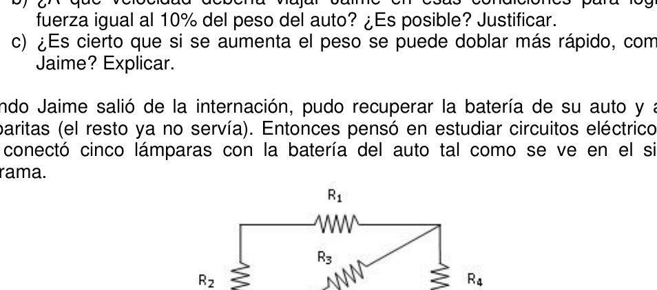
Topic: Magnetism, Circuits Metodi: Lorentz Force Analysis, Kirchhoff’s Laws, Equivalent Circuit Reduction Competenze: Physical Reasoning, Mathematical Modeling Objects: Resistor, Battery, Wire Fonte: Testo (PDF) — p.116
PT36. Istituto Eduardo L. Holmberg Quilmes, Buenos Aires.
All’ospedale dove era ricoverato, Jaime pensava alla curva precedente e deduceva che avrebbe potuto piegarsi senza problemi se la sua auto fosse stata il 10% più pesante. Allora… Ricorda che potrebbe generare una forza magnetica verticale verso il basso sulla sua auto se il La macchina si caricava elettricamente e si muoveva rapidamente in direzione perpendicolare alla campo magnetico terrestre. Jaime ha dedotto (in qualche modo) che il carico in macchina era di 500 μC e ha scoperto che il valore del campo terrestre in quel luogo era 5,5 × 10-5 T. a) Se il campo magnetico terrestre è orientato verso il nord della Terra e la Terra La forza magnetica è verticale verso il basso, in che direzione dovrebbe viaggiare Jaime se la carica della sua auto è negativa? b) A che velocità dovrebbe viaggiare Jaime in queste condizioni per ottenere un’esistenza di forza pari al 10% del peso della macchina? - È possibile? Giustificare. (c) È vero che aumentando il peso si può raddoppiare più velocemente, come credevo?
- Jaime? Spiegami.
Quando Jaime uscì dall’internato, riuscì a recuperare la batteria della sua auto e alcune. lamparita (il resto non serviva più). Così pensò di studiare i circuiti elettrici. Per che ha collegato cinque lampade alla batteria della macchina come si vede nel seguente
- Diagramma.
Le lampade di un’auto come quella di Jaime non sono di LED, sono resistenze che emettono luce. e tutte avevano i loro dati indicati. R1, R2 e R3 dicevano: 12 V 55 W. Mentre le
44 - OAF 2019 Altri due dicevano: 12 V 15 W. Queste indicazioni riguardano il normale funzionamento che avrebbero avuto in macchina, ma Jaime li ha collegati in un altro modo. d) Calcolare la resistenza di ciascuna lampada. e) Per il circuito mostrato, calcolare la resistenza totale equivalente. f) Determinare l’intensità di corrente e la differenza di potenziale di ciascuna
- La lampada. g) stabilire quale lampada risplende di più e giustificare la risposta. h) Considerando solo la lampada R2 e sapendo che il filamento è fatto di di 1 × 10-4 m, determinare la lunghezza di tale Filamento.
Datos ρW = 5,65 × 10-8 Ω m
Come Jaime sapeva che lo cercava ancora il capo di un prestigioso laboratorio scientifico e il personale dell’ospedale da cui è scappato, ha deciso di nascondersi per un anno prima di tornare.
- Cercare lavoro.
Topic: Magnetism, Circuits Metodi: Lorentz Force Analysis, Kirchhoff’s Laws, Equivalent Circuit Reduction Competenze: Physical Reasoning, Mathematical Modeling Objects: Resistor, Battery, Wire Fonte: Testo (PDF) — p.116
PT36. The Institute Eduardo L. Holmberg Quilmes, Buenos Aires is where I am.
At the hospital where he was admitted, Jaime was thinking about the curve ahead and he figured that He could have folded without problems if his car had been 10% heavier. Then … He remembered that he could generate a magnetic force up and down on his car if he The car was electrically charged and moved rapidly in a direction perpendicular to the the Earth’s magnetic field. Jaime deduced (somehow) that the load on the car was 500 μC and found that the value of the ground field at that location was 5,5 × 10-5 T. (a) If the Earth’s magnetic field is directed north of the Earth and the Earth’s magnetic field is directed north of the Earth, Magnetic force is vertical down, which way should Jaime travel? If the load on your car is negative? (b) How fast should Jaime travel in such conditions to achieve a force equal to 10% of the car’s weight? Is that possible? Justify it. (c) Is it true that if you gain weight you can bend faster, as you thought?
- Jaime? - I know. - Explain that.
When Jaime got out of the boarding school, he was able to recover his car battery and some. lamparitas (the rest was no longer useful). So he thought of studying electrical circuits. For That connected five lamps to the car battery as you see in the next one. The diagram.
The lamps in a car like Jaime’s are not LED, they’re light-emitting resistances. And they all had their data listed. R1, R2 and R3 said: 12 V 55 W. While the
The Commission shall adopt delegated acts in accordance with Article 21 of this Regulation. Two others said, 12 V 15 W. These indications relate to normal operation They’d have them in the car, but Jaime connected them in a different way. (d) Calculate the resistance of each lamp. (e) For the circuit shown, calculate the equivalent total resistance. (f) Determine the current intensity and potential difference of each The lamp. (g) Determine which lamp is the brightest and justify the answer. (h) Considering only the R2 lamp and knowing that the filament is made of The length of the length of the length of the length of the length of the length of the length of the length of the length of the length of the length of the length of the length of the length of the length of the length of the length of the length of the length of the length of the length of the length of the length of the length of the length of the length of the length of the length of the length of the length of the length of the length of the length of the length of the length of the length of the length of the length of the length of the length of the length of the length of the length of the length of the length of the length of the length of the length of the length of the length of the length of the length of the length of the length of the length of the length of the length of the length of the length of the length of the length of the length of the length of the length of the length of the length of the length of the length of the length of the length of the length of the length of the length of the length of the length of the length of the length of the length of the length of the length of the length of the length of the length of the length of the length of the length of the length of the length of the length of the length of the length of the length of the length of the length of the length of the length of the length of the length of the length of the length of the length of the length of the length of the length of the length of the length of the length of the length of the length of the length of the length of the length of the length of the length of the length of the length of the length of the length of the length of the length of the length of the length of the length of the length of the length of the length of the length of the length of the length of the length of the length of the length of the length of the length of the length of the length of the length of the length of the length of the length of the length of the filament.
Data from the report ρW = 5,65 × 10-8 Ω m
As Jaime knew he was still being sought by the head of a prestigious scientific laboratory and the Staff at the hospital where he escaped, decided to hide for a year before returning. I’m looking for work.
Topic: Magnetism, Circuits Metodi: Lorentz Force Analysis, Kirchhoff’s Laws, Equivalent Circuit Reduction Competenze: Physical Reasoning, Mathematical Modeling Objects: Resistor, Battery, Wire Fonte: Testo (PDF) — p.116
Una carrera de bicicletas en ruta
PT37. Colegio Nacional Arturo U. Illia - Instituto Albert Einstein Mar del Plata, Buenos Aires.
Una carrera de bicicletas en ruta
La primera prueba ciclista de la historia de la que se tiene un registro documental se remonta a 1868. Los 7 ciclistas que tomaron parte en la prueba, celebrada en un circuito de poco más de 1 kilómetro en las afueras de París, llevaban bicicletas de madera con ruedas de hierro y piñón fijo. Nada que ver con las ligerísimas máquinas de carbono con un grupo de piñones de 11 velocidades y cambio electrónico de la actualidad. En esta prueba de ruta participa un ciclista, de 70 kg de masa, larga una carrera en ruta con una bicicleta rodado 27,5´´ de 7 kg, con cambio manual, con dos platos de 40 y 52 dientes y cuatro piñones de 15, 18, 21 y 24 dientes. El ciclista acelera durante 15 segundos a razón de 2 𝑚/𝑠2, desde la salida de la competencia. Mantiene luego su rapidez constante. Cuando recorre 28 𝑚 ingresa a una curva sin peralte de un cuarto de circunferencia, siendo el radio de la curva de 200 𝑚. El ciclista se mantiene siempre por el centro de la ruta. a) Calcule la velocidad que adquiere un instante antes de ingresar a la curva. b) ¿Cuántos tiempo le demanda salir de la curva? c) Con qué relación plato/piñon se obtendría la máxima velocidad para un pedaleo dado. d) Con la relación anterior ¿cuántos metros recorrerá el ciclista por cada pedaleada? e) Determine el valor de la aceleración total un instante después de ingresar a la curva. f) ¿Qué ángulo describe entre el instante que ingresa a la curva y el instante que comienza a ir con rapidez constante? g) Encuentre la fuerza que hace el pavimento contra la bicicleta mientras está efectuando el giro en la curva a rapidez constante. h) Halle el ángulo que deben mantener con la vertical la bicicleta y el ciclista para poder doblar sin problemas al mantener la rapidez constante en la curva
OAF 2019- 45
Topic: Newtonian Mechanics, Rotational Dynamics Metodi: Kinematic Equations, Free-Body Diagram, Vector Decomposition Competenze: Physical Reasoning, Mathematical Modeling Objects: Wheel, Gear Fonte: Testo (PDF) — p.116
Una gara di biciclette in strada
PT37. Il collegio nazionale Arturo U. Illia - Istituto Albert Einstein Mar del Plata, Buenos Aires.
Una gara di biciclette in strada
La prima prova ciclista nella storia di cui si abbia un record documentario è stata risale al 1868. I 7 ciclisti che hanno partecipato alla prova, tenutasi in un circuito A poco più di un chilometro fuori Parigi, portavano biciclette in legno con ruote di ferro e un pignone fisso. Non c’entra niente con le macchine a carbonio leggere un gruppo di piccioni a 11 velocità e cambio elettronico di oggi. In questa prova di strada partecipa un ciclista, di 70 kg di massa, lungo una gara in strada con una bicicletta a rotelle 27,5’ di 7 kg, con cambio manuale, con due piatti di 40 e 52 Denti e quattro piñoni di 15, 18, 21 e 24 denti. Il ciclista accelera per 15 secondi a un tasso di 2 m/s2, dopo la partenza della gara. Poi tieni il tuo. velocità costante. Quando percorre 28 m entra in una curva senza perle di un quarto di la circonferenza, il radio della curva di 200 m. Il ciclista si ferma sempre per il centro del percorso. a) Calcolare la velocità che acquista un istante prima di entrare nella curva. b) Quanto tempo ci vuole per uscire dalla curva? c) Con quale rapporto piatto/piano si otterrebbe la massima velocità per un pedalaggio dato. d) Con il rapporto precedente, quanti metri percorrerebbe il ciclista per ciascun
- A pedalare? e) Determina il valore dell’accelerazione totale istantaneamente dopo aver inserito l’accelerazione totale.
- Corvo. f) Qual è l’angolo che descrive tra l’istante che entra nella curva e l’istante che Comincia a andare a velocità costante? g) Trova la forza che il pavimento fa contro la bicicletta mentre è in piedi effettuando il giro in curva a velocità costante. h) Trova l’angolo che la bicicletta e il ciclista devono mantenere verticale per essere in grado di piegare senza problemi mantenendo la velocità costante nella curva
OAF 2019- 45
Topic: Newtonian Mechanics, Rotational Dynamics Metodi: Kinematic Equations, Free-Body Diagram, Vector Decomposition Competenze: Physical Reasoning, Mathematical Modeling Objects: Wheel, Gear Fonte: Testo (PDF) — p.116
A road bicycle race
PT37. The National Art School U. The first is the study of the human brain. The city of Mar del Plata, Buenos Aires.
A road bike race .
The first cycling test in history to have a documentary record was It dates back to 1868. The 7 cyclists who took part in the race, held at a circuit They were just over a mile outside of Paris, carrying wooden bicycles with iron wheels and fixed pin. Nothing to do with the very lightweight carbon machines with A group of 11-speed pinos and electronic switches today. In this road test a cyclist, 70 kg in weight, a long race on the road takes part. with a 27,5’ 7 kg wheel-mounted bicycle, with manual change, with two plates of 40 and 52 teeth and four pineapples of 15, 18, 21 and 24 teeth. The rider speeds for 15 minutes. seconds at a rate of 2 m/s2, from the start of the competition. Then keep your constant speed. When you go 28 m , you enter a pearl-free curve of a quarter of an inch . circumference, the radius of the curve being 200 m. The cyclist always stands for the The center of the route. (a) Calculate the speed it takes an instant before entering the curve. (b) How long does it take you to get out of the curve? (c) What plate-to-pin ratio would give the maximum speed for a pedal? I’m not sure. (d) In the above ratio, how many metres will the rider travel for each Pedalled? (e) Determine the value of the total acceleration instantly after entering the Turn it up. (f) What angle does it describe between the instant entering the curve and the instant that starts going at a steady pace? g) Find the force that the pavement makes against the bicycle while it is in it. The speed of the rotation of the curve is constant. (h) Find the angle that the bicycle and rider must maintain with the vertical to be able to bend smoothly by maintaining constant speed in the curve
The following is the list of the countries of the European Union:
Topic: Newtonian Mechanics, Rotational Dynamics Metodi: Kinematic Equations, Free-Body Diagram, Vector Decomposition Competenze: Physical Reasoning, Mathematical Modeling Objects: Wheel, Gear Fonte: Testo (PDF) — p.116
Puente de Wheatstone
PT38. Colegio Nacional Arturo U. Illia - Instituto Albert Einstein Mar del Plata, Buenos Aires.
Puente de Wheatstone - Detección de temperatura por resistencia (RTD)
El puente de Wheatstone es un instrumento de gran precisión que puede operar en
corriente continua o alterna y permite la medida tanto de resistencias óhmicas como de
sus equivalentes en circuitos de corriente alterna en los que existen otros elementos
como bobinas o condensadores (impedancias).
Las resistencias 𝑅1, 𝑅2 y 𝑅3 son resistencias de
precisión aisladas de la 𝑅𝑥 que es la resistencia bajo
medición y V es un voltímetro de gran sensibilidad. Por
lo general, la configuración con la que se representa
este circuito es la mostrada en la Figura, y la condición
de equilibrio del puente se da cuando la diferencia de
potencial 𝑉𝐴𝐵 es igual a cero. La resistencia bajo
medición será en este caso un RTD. El RTD es un
sensor que se utiliza para medir la temperatura,
normalmente están compuestos por un alambre fino el
cual varía su resistencia en función de la temperatura,
al aumentar ésta el sensor incrementa su resistencia.
Como su respuesta es lineal podemos saber el nivel de
calor utilizando una tabla que nos ilustra los valores
resistivos que se generan por cada grado centígrado o
Fahrenheit. Suponga que el RTD analizado es de
platino con una exactitud estándar de ± 0,12 𝛺. La
tabla de la figura representa los valores obtenidos en
una prueba de laboratorio de la resistencia en función
de la temperatura.
En el circuito se emplea 𝑅2 = 𝑅3 = 20 Ω y 𝑅1 = 100 Ω y la batería de 9 V. Inicialmente el
circuito se encuentra en equilibrio.
a) Grafique de acuerdo con la tabla la resistencia del RTD en función de la temperatura b) Calcule el valor de la resistencia RTD para una temperatura de 0 °𝐶. c) Escriba la ecuación de la resistencia en función de la temperatura. d) Calcule la temperatura del sistema cuando la resistencia es de 124,4 Ω. e) ¿Cuál será la lectura del voltímetro para la condición anterior? f) Si la batería utilizada tuviera una resistencia interna de 1 Ω ¿cuál sería la lectura del voltímetro? g) ¿Cuánta energía se transforma en calor en el interior de la batería cada 10 𝑠?
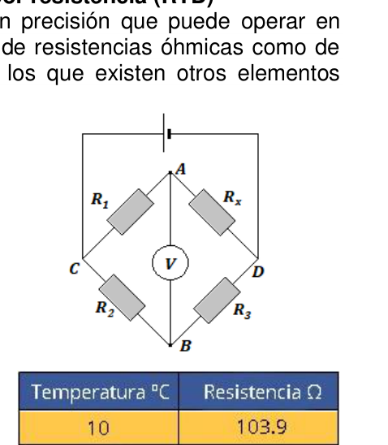
Topic: Circuits Metodi: Kirchhoff’s Laws, Graph Linearization, Equivalent Circuit Reduction Competenze: Physical Reasoning, Mathematical Modeling Objects: Resistor, Battery, Galvanometer Fonte: Testo (PDF) — p.116
Ponte di Wheatstone
PT38. Il collegio nazionale Arturo U. Illia - Istituto Albert Einstein Mar del Plata, Buenos Aires.
Ponte Wheatstone - Temperatura di rilevazione per resistenza (RTD) Il ponte di Wheatstone è un strumento di grande precisione che può operare in La corrente continua o alternativa permette di misurare sia le resistenze ommiche che quelle di i loro equivalenti in circuiti a corrente alternata in cui esistono altri elementi come bobine o condensatori (impedenza). Le resistenze R1, R2 e R3 sono resistenze di Precisione isolata della Rx che è la resistenza bassa V è un voltímetro di grande sensibilità. Per in genere, la configurazione con cui si rappresenta Questo circuito è quello mostrato nella Figura, e la condizione di equilibrio del ponte si dà quando la differenza di Potenzialmente VAB è pari a zero. Resistenza bassa La misurazione sarà in questo caso un RTD. L’RTD è un sensore che viene utilizzato per misurare la temperatura, sono normalmente composti da un filo fino al che varia la resistenza a seconda della temperatura, aumentando questa, il sensore aumenta la resistenza. Poiché la risposta è lineare possiamo sapere il livello di calore utilizzando una tabella che ci illustra i valori resistenti generati per ogni grado centigrado o Fahrenheit. Supponiamo che l’RTI analizzato sia di Platino con una precisione standard di ± 0,12 Ω. La Il tabello della figura rappresenta i valori ottenuti in una prova di resistenza in funzione della temperatura. Nel circuito si utilizza R2 = R3 = 20 Ω e R1 = 100 Ω e la batteria di 9 V. Inizialmente il Il circuito è in equilibrio.
a) Graficare in base al tabello la resistenza della RTE in base alla Temperatura b) Calcolare il valore della resistenza RTD per una temperatura di 0 °C. c) Scrivi l’equazione della resistenza in funzione della temperatura. d) Calcolare la temperatura del sistema quando la resistenza è di 124,4 Ω. e) Qual è la lettura del voltometro per la condizione precedente? f) Se la batteria utilizzata avesse una resistenza interna di 1 Ω, quale sarebbe la lettura Il voltímetro? g) Quanta energia viene trasformata in calore all’interno della batteria ogni 10 secondi?
Topic: Circuits Metodi: Kirchhoff’s Laws, Graph Linearization, Equivalent Circuit Reduction Competenze: Physical Reasoning, Mathematical Modeling Objects: Resistor, Battery, Galvanometer Fonte: Testo (PDF) — p.116
The Commission shall adopt implementing acts in accordance with Article 21 of Regulation (EC) No 1272/2009.
PT38. The National Art School U. The first is the study of the human brain. The city of Mar del Plata, Buenos Aires.
Wheatstone Bridge - Resistance temperature detection (RTD) Wheatstone Bridge is a highly precise instrument that can operate in The current is continuous or alternating and allows the measurement of both optical and optical resistance. their equivalents in alternating current circuits in which other elements exist as coils or capacitors (impedances). The resistors R1, R2 and R3 are resistors of The Rx is the lowest resistance. V is a highly sensitive voltmeter. By the configuration in which it is represented This circuit is the one shown in Figure, and the condition The bridge balance is given when the difference of VAB potential is equal to zero. Low resistance The measurement will be in this case a RTD. RTD is a sensor used to measure temperature, They are usually made of a fine wire. which varies in strength depending on temperature, When the sensor increases this, it increases its resistance. Since its answer is linear we can know the level of heat using a table that illustrates the values Resistants generated by each degree Celsius or Fahrenheit. Suppose the RTD analysed is from Platinum with a standard accuracy of ± 0,12 Ω. La The table in the figure represents the values obtained in a laboratory test of resistance to function The temperature. In the circuit R2 = R3 = 20 Ω and R1 = 100 Ω and the 9 V battery are used. Initially the The circuit is in equilibrium.
(a) Graph the resistance of the RTD according to the table. The temperature (b) Calculate the RTD resistance value for a temperature of 0 °C. (c) Write the resistance equation based on temperature. (d) Calculate the system temperature when the resistance is 124,4 Ω. (e) What will be the read of the voltmeter for the above condition? (f) If the battery used had an internal resistance of 1 Ω, what would be the reading The voltmeter? (g) How much energy is converted into heat inside the battery every 10 seconds?
Topic: Circuits Metodi: Kirchhoff’s Laws, Graph Linearization, Equivalent Circuit Reduction Competenze: Physical Reasoning, Mathematical Modeling Objects: Resistor, Battery, Galvanometer Fonte: Testo (PDF) — p.116
Cocinando papas fritas
PT39. Colegio Nacional Arturo U. Illia - Instituto Albert Einstein Mar del Plata, Buenos Aires.
Cocinando papas fritas Una empresa produce papas fritas artesanales en un horno continuo. La fábrica recibe las papas, las lava pela y corta. Las papas cortadas y limpias entran en un horno tubular donde se cocinan en un ambiente con aceite vegetal. El horno es de forma cilíndrica, de 4 m de longitud y 1 m de diámetro., por el que circula aire con microgotas de aceite a 200 ºC. Una cinta transportadora lleva las papas crudas desde una temperatura inicial de 20 ºC hasta 150ºC cuando salen del horno. La cinta transporta lleva 5 kg de papas por minuto, el calor específico de las papas es de 3400 J/kg ºC. a) calcule la energía necesaria que se debe entregar a las papas en una hora de funcionamiento del horno.
46 - OAF 2019
b) Calcule la potencia que suministra el horno a las papas.
Parte del calor que suministra el calefactor del sistema se pierde a través de las paredes
del horno y a través de los extremos. El horno tubular debe revestirse con una capa de
fibra de vidrio (conductividad térmica 0.048W/m.K) para aislarlo del exterior que se
encuentra a Te=20°C. La pérdida de calor por las caras no aisladas del cilindro es 5
W/m2.
c) Calcule la superficie lateral del horno cilíndrico, y el espesor de la capa de fibra
de vidrio necesaria para que la pérdida total de calor del túnel al exterior sea
inferior a 2000 W.
Considerando que todo el sistema debe mantenerse a 200ºC todo el tiempo y además
cocinar las papas.
d) Calcule la potencia del elemento calefactor.
Si se define la eficiencia del dispositivo, como la potencia útil, para cocinar las papas,
sobre la potencia total entregada al horno.
e) Calcule la eficiencia del sistema.
f) El horno quema carbón, que produce 7000 kcal/kg. Calcule la cantidad de
carbón que debe suministrarse para mantener el sistema funcionando un turno
de 8 horas.
g) Explique los procesos de transferencia de calor que ocurren en el horno,
considerando que los quemadores se encuentran debajo de la cinta
transportadora.
Topic: Thermodynamics Metodi: First Law of Thermodynamics, Dimensional Analysis Competenze: Physical Reasoning, Mathematical Modeling Objects: Tube, Heat Engine Fonte: Testo (PDF) — p.116
Cucinando patate fritte
PT39. Il collegio nazionale Arturo U. Illia - Istituto Albert Einstein Mar del Plata, Buenos Aires.
- Cucinando patate fritte . Una azienda produce patate fritte artigianali in un forno continuo. La fabbrica riceve le patate, la lava, la pelle e il taglio. Le patate tagliate e pulite entrano in un forno tubulare dove si cucinano in un ambiente con olio vegetale. Il forno è di forma cilindrica, di 4 m di lunghezza e 1 m di diametro, per il quale si circula aria con microgottine di olio a 200 oC. Un nastro trasportatore porta le patate grezze da una temperatura iniziale di 20 oC a 150 oC quando vengono forniti. La cinta trasporta 5 kg di patate al minuto, il calore specifico delle patate è di 3400 J/kg ºC. a) calcolare l’energia necessaria da consegnare alle patate in un’ora di funzionamento del forno.
46 - OAF 2019 b) Calcolare la potenza fornita dal forno alle patate. Parte del calore che viene fornito dal riscaldatore del sistema viene perso attraverso i muri. dal forno e attraverso le estremità. Il forno tubulare deve essere rivestito con una strata di fibra di vetro (conduttività termico 0.048W/m.K) per isolarlo dall’esterno che si trova Te=20°C. Il calore perduto dalle facce non isolate del cilindro è di 5 W/m2. (c) Calcolare la superficie laterale del forno cilindrico e lo spessore della fibra di vetro necessario per ottenere la perdita totale di calore dal tunnel all’esterno inferiore a 2000 W. Considerando che l’intero sistema deve essere mantenuto a 200°C in tutto il tempo e inoltre cucinare le patate. d) Calcolare la potenza del caldaio. Se si definisce l’efficienza del dispositivo, come la potenza utile, per cucinare le patate, sulla potenza totale fornita al forno. e) Calcolare l’efficienza del sistema. f) Il forno brucia carbone, che produce 7000 kcal/kg. Calcola la quantità di carbone che deve essere fornito per mantenere il sistema in funzione a turno
- Di otto ore. g) Esprimi i processi di trasferimento di calore che si verificano in forno, Considerando che i bruciatori sono sotto la cinta trasportatore.
Topic: Thermodynamics Metodi: First Law of Thermodynamics, Dimensional Analysis Competenze: Physical Reasoning, Mathematical Modeling Objects: Tube, Heat Engine Fonte: Testo (PDF) — p.116
Cooking French fries
PT39. The National Art School U. The first is the study of the human brain. The city of Mar del Plata, Buenos Aires.
Cooking fries . A company produces artisanal chips in a continuous oven. The factory receives The potatoes, the lava, the skin and the cut. The potatoes are cut and cleaned and put into a tubular oven . where they are cooked in an environment with vegetable oil. The furnace is cylindrical, 4 m long and 1 m in diameter, through which it circulates. Air with oil microdots at 200 oC. A conveyor belt carries the raw potatoes . from an initial temperature of 20 oC to 150 oC when they are removed from the oven. The conveyor belt carries 5 kg of potatoes per minute, the specific heat of the potatoes is about 3400 J/kg ºC. (a) calculate the energy required to be delivered to the potatoes within one hour of operation of the furnace.
The Commission shall adopt delegated acts in accordance with Article 21 of this Regulation. (b) Calculate the power the oven supplies the potatoes. Some of the heat from the system heater is lost through the walls. From the oven and through the ends. The tubular furnace shall be coated with a layer of glass fibre (thermal conductivity 0.048W/m.K) to insulate it from the outside Find Te=20°C. The heat loss from the uninsulated sides of the cylinder is 5. W/m2. (c) Calculate the lateral surface of the cylindrical furnace and the thickness of the fibre layer The glass needed to make the total heat loss from the tunnel outward is less than 2000 W. Whereas the whole system must be kept at 200°C at all times and furthermore Cook the potatoes. (d) Calculate the heating element power. If the efficiency of the device is defined, as the useful power, to cook the potatoes, the total power delivered to the furnace. (e) Calculate the efficiency of the system. (f) The furnace burns coal, which produces 7000 kcal/kg. Calculate the amount of coal that must be supplied to keep the system running on a shift eight hours. (g) Explain the heat transfer processes that occur in the furnace, Considering that the burners are under the tape The carrier.
Topic: Thermodynamics Metodi: First Law of Thermodynamics, Dimensional Analysis Competenze: Physical Reasoning, Mathematical Modeling Objects: Tube, Heat Engine Fonte: Testo (PDF) — p.116
Un problema astronomico
PT40. Instituto Tecnológico del Comahue - San Agustín International School Ciudad de Neuquén.
Un problema astronómico Usted ha sido seleccionado para participar de un proyecto de investigación de tecnología espacial del INVAP. Para clasificar deberá analizar y resolver las consignas que se detallan a continuación: En la siguiente figura, que no está a escala, muestra al Sol en el plano de la órbita Tierra- Luna aunque normalmente esto no suceda.
El trabajo consistirá en calcular la magnitud y dirección de la fuerza gravitacional que actúa sobre la Luna respecto a la Tierra y al Sol, suponiendo una determinada estación del año.
- Esquematice las distancias, en cada una de las situaciones de la figura, entre: a) La Tierra y la Luna b) La Luna y el Sol c) El Sol y la Tierra
Tenga en cuenta los datos proporcionados y la fórmula de gravitación universal.
OAF 2019- 47 2) Utilizando los esquemas realizados y para cada situación de la figura, calcule: a) La fuerza gravitacional entre la Tierra y la Luna b) La fuerza gravitacional entre la Luna y el Sol.
Datos • Constante de gravitación universal: G = 6,672 𝑥 10−11(𝑁𝑚2) 𝐾𝑔2
• Distancia entre la Tierra y la Luna= 384400km • Distancia entre la Tierra y el Sol= 149597888Km • Masa de la Tierra= 5,97x1024 Kg • Masa del Sol= 1,99x1030 Kg • Masa de la Luna= 7,35x1022 Kg
Se decide lanzar un satélite para que se mueva en órbita circular alrededor de la Tierra con el objetivo de mejorar la comunicación global.
Teniendo en cuenta los siguientes datos: Masa del satélite = mS, Velocidad del satélite constante = v, Masa de la Tierra = MT, altitud h sobre la superficie del planeta, Radio de la Tierra = Rt 3) Determinar la velocidad del satélite en función de G, h, Rt y MT. 4) Determine el período de revolución del satélite TP (el tiempo para una revolución alrededor de la Tierra)
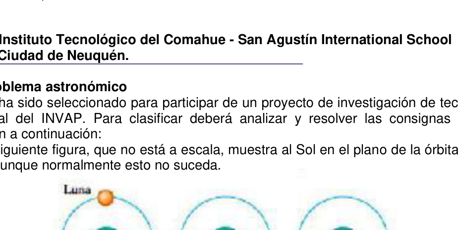
Topic: Gravitation, Astrophysics Metodi: Newton’s Law of Gravitation, Superposition Principle, Kepler’s Laws Competenze: Physical Reasoning, Mathematical Modeling Objects: Planet, Star, Satellite Fonte: Testo (PDF) — p.116
Un problema astronomico
PT40. Istituto Tecnologico del Comahue - San Agustín International School Città di Neuquén.
Un problema astronomico. Sei stato selezionato per partecipare a un progetto di ricerca tecnologica.
- Il programma di ricerca. Per la classificazione è necessario analizzare e risolvere le consigli che vengono sono dettagliati di seguito: Nella figura seguente, che non è a scala, mostra il Sole sul piano dell’orbita terrestre. Luna, anche se non succede normalmente.
Il lavoro sarà quello di calcolare la magnitudine e la direzione della forza gravitazionale che agisce sulla Luna rispetto alla Terra e al Sole, supponendo una certa stagione. dell’anno.
- Schematizzare le distanze, in ciascuna delle situazioni della figura, tra: a) La Terra e la Luna b) La luna e il sole (c) Il sole e la terra
Tenete conto dei dati forniti e della formula di gravitazione universale.
OAF 2019- 47 2) Sfruttando gli schemi realizzati e per ogni situazione della figura, calcolare: a) La forza gravitazionale tra la Terra e la Luna b) La forza gravitazionale tra la Luna e il Sole.
Datos • Costante di gravità universale: G = 6.672 x 10−11(𝑁𝑚2) 𝐾𝑔2
• Distanza tra la Terra e la Luna = 384400km • Distanza tra la Terra e il Sole= 149597888Km • Massa della Terra = 5,97x1024 Kg • Massa del Sole = 1,99x1030 Kg • Massa della Luna = 7.35x1022 Kg
Si decide di lanciare un satellite per farlo muoversi in orbita circolare attorno alla Terra. con l’obiettivo di migliorare la comunicazione globale.
Considerando i seguenti dati: Massaggio del satellite = mS, velocità del satellite costante = v, Massaggio della Terra = MT, altitudine h sulla superficie del pianeta, Radio Terra = Rt 3) Determinare la velocità del satellite in base a G, h, Rt e MT. 4) Determina il periodo di rivoluzione del satellite TP (il tempo per una rivoluzione intorno alla Terra)
Topic: Gravitation, Astrophysics Metodi: Newton’s Law of Gravitation, Superposition Principle, Kepler’s Laws Competenze: Physical Reasoning, Mathematical Modeling Objects: Planet, Star, Satellite Fonte: Testo (PDF) — p.116
The first is the “Missing of the Earth”.
PT40. The technical institute of Comahue - San Agustín International School The city of Neuquén.
It ‘s an astronomical problem . You have been selected to participate in a technology research project. Space from INVAP. To classify, it must analyse and solve the following They are detailed below: In the following figure, which is not on scale, it shows the Sun in the plane of Earth orbit. Moon, although this usually doesn’t happen.
The work will consist of calculating the magnitude and direction of the gravitational force that It acts on the moon relative to the earth and the sun, assuming a certain season. of the year.
- Schematic the distances in each of the situations in the figure between: (a) The Earth and the Moon (b) The Moon and the Sun (c) The Sun and the Earth
Consider the data provided and the universal gravity formula.
The Commission shall adopt implementing acts in accordance with Article 21 of this Regulation. 2) Using the schemes made and for each situation in the figure, calculate: (a) The gravitational force between the Earth and the Moon (b) The gravitational force between the Moon and the Sun.
Data from the report • Universal gravity constant: G = 6.672 x 10−11(𝑁𝑚2) 𝐾𝑔2
• Distance between Earth and the Moon = 384400km • Distance between Earth and the Sun = 149597888Km • Earth’s mass is 5.97 x 1024 Kg • The mass of the sun = 1.99x1030 Kg • The mass of the moon = 7.35x1022 Kg
It is decided to launch a satellite to move in circular orbit around the Earth . The Commission will also be able to provide a detailed report on the implementation of the programme.
Taking into account the following data: The mass of the satellite = mS, the speed of the satellite constant = v, the mass of the Earth = MT, altitude h above the planet’s surface, Earth’s radius = Rt 3) Determine the speed of the satellite based on G, h, Rt and MT. 4) Determine the revolution period of the TP satellite (the time for a revolution around the Earth)
Topic: Gravitation, Astrophysics Metodi: Newton’s Law of Gravitation, Superposition Principle, Kepler’s Laws Competenze: Physical Reasoning, Mathematical Modeling Objects: Planet, Star, Satellite Fonte: Testo (PDF) — p.116
Calorimetria Basica
PT41. Instituto Tecnológico del Comahue - San Agustín International School Ciudad de Neuquén.
Calorimetría Básica Dentro de un recipiente de equivalente en agua π que contiene una masa M de agua en estado líquido a una temperatura 0se añade una masa m de hielo a una temperatura de 0°c. Deducir una expresión en función de los datos que permita encontrar el estado final de la mezcla: a) Temperatura de equilibrio b) Estado de agregación c) Proporciones de la mezcla d) Indicar el campo de validez de la/s expresión/es hallada/s. e) ¿Cómo se modificaría el problema si la temperatura es menor a 0°C?
Topic: Thermodynamics Metodi: First Law of Thermodynamics Competenze: Physical Reasoning, Mathematical Modeling Objects: Calorimeter Fonte: Testo (PDF) — p.116
Calorimetria di base
PT41. Istituto Tecnologico del Comahue - San Agustín International School Città di Neuquén.
Calorimetria di base All’interno di un contenitore di acqua equivalente π contenente una massa M di acqua in stato liquido a temperatura 0 si aggiunge una massa di m di ghiaccio a temperatura di 0°c. Deduire un’espressione in base ai dati che permette di trovare lo stato finale della miscela: a) Temperatura di equilibrio b) Stato di aggregazione (c) Proporzioni della miscela d) Indicare il campo di validità dell’espressione trovata. e) Come si modificherebbe il problema se la temperatura fosse inferiore a 0°C?
Topic: Thermodynamics Metodi: First Law of Thermodynamics Competenze: Physical Reasoning, Mathematical Modeling Objects: Calorimeter Fonte: Testo (PDF) — p.116
The following table shows the results of the calculation of the total weight of the product:
PT41. The technical institute of Comahue - San Agustín International School The city of Neuquén.
Basic calorimetry Inside a container of water equivalent π containing an M mass of water in liquid state at a temperature of 0 m is added to a mass of ice at a temperature of 0°c. To deduce an expression based on the data to find the final state of the mix: (a) Balance temperature (b) State of aggregation (c) Proportions of the mixture (d) Indicate the field of validity of the expression (s) found. (e) How would the problem be modified if the temperature is less than 0°C?
Topic: Thermodynamics Metodi: First Law of Thermodynamics Competenze: Physical Reasoning, Mathematical Modeling Objects: Calorimeter Fonte: Testo (PDF) — p.116
PT42. Instituto Tecnológico del Comahue - San Agustín International School Ciudad de Neuquén.
En un circuito de agua se encuentra un tanque circular de agua que recibe agua continuamente y libera agua por un orificio continuamente en el fondo del mismo.
a) Desarrolla la ecuación de la velocidad de salida del agua, considerando que sale con la misma presión que entra. b) Suponiendo que la válvula de salida tiene una resistencia al flujo R que se mide en seg/m2, demuestra que el caudal de salida QO es h/R. c) En la cañería de salida se conecta una turbina que genera electricidad, dicha turbina alimenta 57 casas que poseen: 3 lámparas LED de
48 - OAF 2019 10W cada una, un refrigerado de ¾ de Hp, un televisor de 50W y caloventor de 360W. Si la sección de la cañería es de 15 cm, ¿cuál será la altura de agua que se debe mantener en el tanque para poder alimentar las casas? (Presión atmosférica 101300 Pascales) d) Si el cable general que alimenta las casas tiene 4 km, es de cobre y tiene una sección de 36 mm2, ¿Cuál es el valor de Energía que pierde por Efecto Joule por cada segundo? (suponemos que la tensión eléctrica que utilizan las casas es de 220V)
Constantes g = 10 m/s2 (cobre) = 0.071 Ωm 1 Hp = 746 W
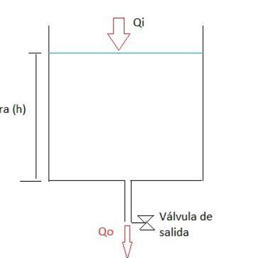
Topic: Fluid Mechanics, Circuits Metodi: Bernoulli’s Equation, Continuity Equation, Kirchhoff’s Laws Competenze: Physical Reasoning, Mathematical Modeling Objects: Container, Tube, Wire Fonte: Testo (PDF) — p.116
PT42. Istituto Tecnologico del Comahue - San Agustín International School Città di Neuquén.
In un circuito d’acqua si trova un serbatoio circolare di acqua che riceve acqua continuamente e rilascia acqua. per un orizzonte continuamente nel fondo.
a) Sviluppa l’equazione della velocità di l’acqua, considerando che si esce con la la stessa pressione che entra. b) Supponendo che la valvola di uscita abbia un resistenza al flusso R misurata in seg/m2, dimostra che il flusso di uscita QO è h/R. c) Nel tubo di uscita si collega una turbina che genera elettricità, la turbina alimenta 57 case che possiedono: 3 lampade LED di
48 - OAF 2019 10W ciascuno, un frigorifero di 3⁄4 Hp, un televisore di 50W e un calorifero di 360W. Se la sezione del canale è di 15 cm, quale sarà l’altezza dell’acqua che deve essere mantenuto nel serbatoio per poter alimentare le case? (Pressione) 101300 Pasquale) d) Se il cavo generale che alimenta le case ha 4 km, è di rame e ha una Sezione 36 mm2, Qual è il valore di energia che si perde per effetto Joule per ogni secondo? (si supponga che la tensione elettrica utilizzata dalle case sia di 220V)
Costanti g = 10 m/s2 (copro) = 0,071 Ωm 1 Hp = 746 W
Topic: Fluid Mechanics, Circuits Metodi: Bernoulli’s Equation, Continuity Equation, Kirchhoff’s Laws Competenze: Physical Reasoning, Mathematical Modeling Objects: Container, Tube, Wire Fonte: Testo (PDF) — p.116
PT42. The technical institute of Comahue - San Agustín International School The city of Neuquén.
In a water circuit there is a circular tank. Water that receives water continuously and releases water through a continuous hole at the bottom of it.
(a) Develops the equation of the velocity of The water outlet, considering that it goes out with the the same pressure that comes in. (b) Assuming that the output valve has a R-flow resistance measured in seg/m2, shows that the output flow QO is h/R. (c) A turbine is connected to the output pipe. The power generated by the turbine is powered by electricity. 57 homes own: 3 LED lamps from
The Commission shall adopt delegated acts in accordance with Article 21 of this Regulation. 10W each, a 3⁄4 Hp refrigerator, a 50W TV and a heater 360W. If the section of the pipeline is 15 cm, what will be the water height that you Should it be kept in the tank so that we can feed the houses? (Pressure) The atmospheric pressure is 101300 Pascal) (d) If the general cable feeding the houses is 4 km long, it is copper and has a Section 36 mm2, What is the value of Energy Lost per Joule Effect per every second? (We assume that the electrical voltage used by the houses is of 220V)
Constantly g = 10 m/s2 The value of the underlying assets shall be calculated as follows: 1 Hp = 746 W
Topic: Fluid Mechanics, Circuits Metodi: Bernoulli’s Equation, Continuity Equation, Kirchhoff’s Laws Competenze: Physical Reasoning, Mathematical Modeling Objects: Container, Tube, Wire Fonte: Testo (PDF) — p.116
PT43. Escuela Industrial Superior Ciudad de Santa Fe.
En la figura se representa la trayectoria de un cuerpo que se libera de la posición A en contacto con un resorte que se encuentra comprimido 10 [cm] de su longitud de reposo. Cuando este cuerpo pasa por el punto D, se libera otro cuerpo desde el punto E en dirección contraria, a la del primero, partiendo desde el reposo con una aceleración de 13 [m/s2 ]. a) ¿En qué punto, medido desde el punto E, se va a producir el choque de los dos cuerpos? b) ¿Cuánto tiempo transcurrió desde la liberación del cuerpo de a posición E, hasta el choque? c) Después del impacto el cuerpo de masa 300 [g] recorre a misma trayectoria , en sentido inverso, y llega a una atura de 4 [m] sobre la rampa. ¿ Cuál sera la velocidad inicial de salida despues del choque del cuerpo de 55 [g] inmediatamente después del impacto?
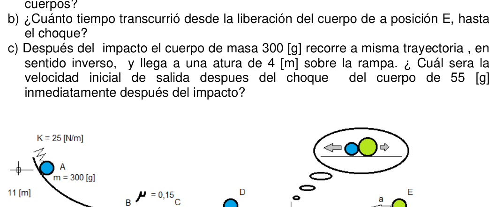
Topic: Conservation of Energy, Conservation of Momentum Metodi: Conservation of Energy, Conservation of Momentum, Kinematic Equations Competenze: Physical Reasoning, Mathematical Modeling Objects: Spring, Block, Inclined Plane Fonte: Testo (PDF) — p.116
PT43. Scuola superiore industriale Città di Santa Fe.
La figura mostra il percorso di un corpo che si libera dalla posizione A in il contatto con una sorgente compressa 10 [cm] della sua lunghezza di riposo. Quando questo corpo passa attraverso il punto D, viene rilasciato un altro corpo dal punto E in direzione contraria a quella del primo, partendo dal riposo con un’accelerazione di 13 [m/s2 ]. a) A che punto, misurato dal punto E, si produrrà il colpo dei due? Corpi? b) Quanto tempo è passato dalla liberazione del corpo da posizione E, fino a lo scontro? c) Dopo l’impatto il corpo di massa 300 [g] percorre la stessa tragittoria , in In senso inverso, e arriva ad un’ostacolo di 4 [m] sopra la rampa. Qual è la data ? velocità iniziale di uscita dopo l’impatto del corpo di 55 [g] immediatamente dopo l’impatto?
Topic: Conservation of Energy, Conservation of Momentum Metodi: Conservation of Energy, Conservation of Momentum, Kinematic Equations Competenze: Physical Reasoning, Mathematical Modeling Objects: Spring, Block, Inclined Plane Fonte: Testo (PDF) — p.116
PT43. Higher Industrial School City of Santa Fe.
The figure shows the path of a body that is released from position A at contact with a spring compressed 10 [cm] of its rest length. When this body passes through point D, another body is released from point E in The first is to be driven in the opposite direction from the first, starting from the rest with a speed of 13 [m/s2 ]. (a) At what point, measured from point E, will the two collided? bodies? (b) How long has it been since the body was released from position E, up to The crash? (c) After impact the mass body 300 [g] travels the same path , in reverse direction, and reaches a four-meter stop over the ramp. What will be the date ? Initial exit speed after impact of the body of 55 [g] Immediately after the impact?
Topic: Conservation of Energy, Conservation of Momentum Metodi: Conservation of Energy, Conservation of Momentum, Kinematic Equations Competenze: Physical Reasoning, Mathematical Modeling Objects: Spring, Block, Inclined Plane Fonte: Testo (PDF) — p.116
PT44. Escuela Industrial Superior Ciudad de Santa Fe.
Un corcho tiene un volumen de 3 x 10-5 [m3] y una densidad de 120 [kg/m3]. a) Trace un diagrama de fuerzas y calcule que fracción de volumen del corcho se sumerge en agua mientras flota. b) El corcho se ata con una cuerda ideal a una pieza de Aluminio (ϕ=2700 [kg/m3]) con una masa suficiente para que el corcho se sumerja por completo sin hundirse. Calcule la masa de aluminio requerida. c) Calcule la masa de aluminio que debe atarse al corcho para que al sumergirse en el líquido descienda con una aceleración igual a g/2. Desprecie toda fuerza de rozamiento entre el líquido y los objetos.
OAF 2019- 49
Topic: Fluid Mechanics Metodi: Hydrostatic Equilibrium, Free-Body Diagram, Newton’s Law of Gravitation Competenze: Physical Reasoning, Mathematical Modeling Objects: Block, Container Fonte: Testo (PDF) — p.116
PT44. Scuola superiore industriale Città di Santa Fe.
Un cork ha un volume di 3 x 10-5 [m3] e una densità di 120 [kg/m3]. a) Tracciare un diagramma delle forze e calcolare quale frazione di volume del cork si si immerge in acqua mentre galleggia. b) Il cork è attaccato con una corda ideale ad una pezzo di alluminio (φ=2700 [kg/m3]) con una massa sufficiente a far immergere completamente il cork senza affondare. Calcola la massa di alluminio richiesta. c) Calcolare la massa di alluminio da attaccare alla cork per consentire alla immersione in il liquido scende con un’accelerazione pari a g/2. Sprezzare ogni forza di un’acciaio tra il liquido e gli oggetti.
OAF 2019- 49
Topic: Fluid Mechanics Metodi: Hydrostatic Equilibrium, Free-Body Diagram, Newton’s Law of Gravitation Competenze: Physical Reasoning, Mathematical Modeling Objects: Block, Container Fonte: Testo (PDF) — p.116
PT44. Higher Industrial School City of Santa Fe.
A cork has a volume of 3 x 10-5 [m3] and a density of 120 [kg/m3]. (a) Draw a force diagram and calculate which fraction of the cork volume is It sinks in water while floating. (b) The cork is attached with an ideal rope to an Aluminium part (φ=2700 [kg/m3]) with enough mass to completely submerge the cork without to sink. Calculate the required aluminium mass. (c) Calculate the aluminium mass to be attached to the cork so that when immersed in the liquid descends at an acceleration equal to g/2. He despises all the strength of friction between the liquid and the objects.
The following information shall be provided:
Topic: Fluid Mechanics Metodi: Hydrostatic Equilibrium, Free-Body Diagram, Newton’s Law of Gravitation Competenze: Physical Reasoning, Mathematical Modeling Objects: Block, Container Fonte: Testo (PDF) — p.116
PT45. Escuela Industrial Superior Ciudad de Santa Fe.
Un calorímetro de aluminio, con una masa de 100 g, contiene 250 g de agua. El
calorímetro y el agua están en equilibrio térmico a 10.0°C. Dos bloques metálicos se
colocan en el agua. Uno es un trozo de cobre de 50.0 g a 80.0°C. El otro tiene una masa
de 70.0 g y originalmente está a una temperatura de 100°C. Todo el sistema se estabiliza
a una temperatura final de 20.0°C.
a) Determine el calor específico de la muestra desconocida.
b) Con los datos de la tabla, ¿puede hacer una identificación positiva del material
desconocido? ¿Puede identificar un material posible? Explique sus respuestas.
Tabla
Topic: Thermodynamics Metodi: First Law of Thermodynamics Competenze: Physical Reasoning Objects: Calorimeter, Block Fonte: Testo (PDF) — p.116
PT45. Scuola superiore industriale Città di Santa Fe.
Un calometro di alluminio, con una massa di 100 g, contiene 250 g di acqua. El Calorimetro e acqua sono in equilibrio termico a 10.0°C. Due blocchi metallici si mettono in acqua. Uno è un pezzo di rame di 50,0 g a 80.0°C. L’altro ha una massa. di 70,0 g e originariamente a una temperatura di 100°C. L’intero sistema si stabilizza a una temperatura finale di 20.0°C. a) Determina la temperatura specifica del campione sconosciuto. b) Con i dati del tabella, può identificare positivamente il materiale sconosciuto? Riesce a identificare un possibile materiale? Spiega le sue risposte.
Tabella
Topic: Thermodynamics Metodi: First Law of Thermodynamics Competenze: Physical Reasoning Objects: Calorimeter, Block Fonte: Testo (PDF) — p.116
PT45. Higher Industrial School City of Santa Fe.
An aluminium calorimeter, with a mass of 100 g, contains 250 g of water. El The heat meter and water are in thermal equilibrium at 10.0°C. Two metal blocks are Put it in the water. One is a piece of copper 50.0 g to 80.0°C. The other one has a mass. of 70,0 g and originally at a temperature of 100°C. The whole system stabilizes. a final temperature of 20.0°C. (a) Determine the specific heat of the unknown sample. (b) With the data in the table, can you make a positive identification of the material Unknown? Can you identify any possible material? Explain your answers.
Table
Topic: Thermodynamics Metodi: First Law of Thermodynamics Competenze: Physical Reasoning Objects: Calorimeter, Block Fonte: Testo (PDF) — p.116
PT46. Instituto Salesiano San Luis Gonzaga N°1713 Escuela Politécnica N° 701 Francisco E. Gilardoni Esquel, Chubut.
Un motociclista quiere intentar saltar un río. La rampa de despegue está inclina 53° con respecto a la horizontal, el río tiene 40 m de ancho y la costa más lejana está 15 m por debajo de la parte superior de la rampa. Si se desprecia el rozamiento con el aire a) ¿Qué velocidad se necesita en la parte superior de la rampa para alcanzar apenas el borde de la costa más lejana? b) Si su velocidad es sólo la mitad del valor obtenido en a), ¿Dónde cayó?
Considerar g=10m/s2
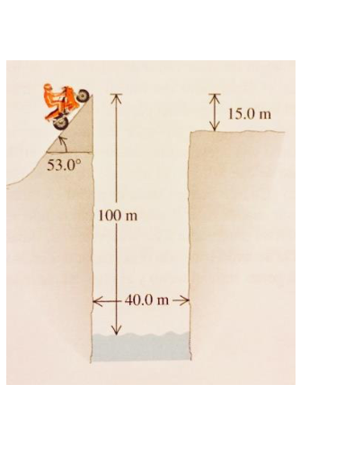
Topic: Newtonian Mechanics Metodi: Kinematic Equations, Vector Decomposition Competenze: Physical Reasoning, Mathematical Modeling Objects: Projectile, Inclined Plane Fonte: Testo (PDF) — p.116
PT46. Instituto Salesiano San Luis Gonzaga N°1713 Scuola Politetnica N° 701 Francisco E. Gilardoni Che cosa, Chubut.
Un motociclista vuole provare a saltare un fiume. La rampa di decollo è inclinato 53° rispetto al orizzonte, il fiume È largo 40 metri e la costa più lontana è di 15 metri per sotto la parte superiore del ramp. Se si disprezza il Raggiustare con l’aria a) Che velocità è necessaria nella parte superiore della Rampata per raggiungere appena il bordo della costa più lontano? b) Se la sua velocità è solo la metà del valore ottenuto in a) Dove è caduto?
Considerare g=10m/s2
Topic: Newtonian Mechanics Metodi: Kinematic Equations, Vector Decomposition Competenze: Physical Reasoning, Mathematical Modeling Objects: Projectile, Inclined Plane Fonte: Testo (PDF) — p.116
PT46. The Commission has decided to extend the period of validity of the agreement. The following is a list of the main activities of the European Commission: Gilardoni . That one, Chubut.
A motorcyclist wants to try and jump a river. The ramp of take-off is inclined 53° with respect to the horizontal, the river It ‘s 40 meters wide and the furthest shore is 15 meters by below the top of the ramp. If you despise the Air-cooled rubbing (a) What speed is needed at the top of the ramp to reach the shore barely . further away? (b) If its speed is only half the value obtained in A) Where did it fall?
Consider g = 10m/s2
Topic: Newtonian Mechanics Metodi: Kinematic Equations, Vector Decomposition Competenze: Physical Reasoning, Mathematical Modeling Objects: Projectile, Inclined Plane Fonte: Testo (PDF) — p.116
PT47. Instituto Salesiano San Luis Gonzaga N°1713 Escuela Politécnica N° 701 Francisco E. Gilardoni Esquel, Chubut.
Una caja de 500g de masa, se encuentra sobre un plano inclinado. Partiendo del reposo, resbala 3m sobre un plano, inclinado a 45° sobre la horizontal, hasta que choca con un resorte, cuyo extremo está fijo al final del plano. La constante del resorte es k=400N/m. La superficie del plano inclinado tiene un coeficiente de rozamiento =0,2. a) ¿Cuál es el valor de la velocidad de la caja al tocar el resorte?
50 - OAF 2019 b) Suponiendo que en la parte del plano inclinado donde se encuentra el resorte no hay rozamiento, ¿cuánto se comprime el resorte? c) ¿Cuál es la altura máxima que alcanza la caja al desprenderse del resorte?
Considerar g=10m/s2
Topic: Conservation of Energy Metodi: Conservation of Energy, Hooke’s Law, Free-Body Diagram Competenze: Physical Reasoning, Mathematical Modeling Objects: Spring, Block, Inclined Plane Fonte: Testo (PDF) — p.116
PT47. Instituto Salesiano San Luis Gonzaga N°1713 Scuola Politetnica N° 701 Francisco E. Gilardoni Che cosa, Chubut.
Una scatola di 500 g di massa, si trova su un piano inclinato. Partendo dal riposo, scivola 3m su un piano, inclinato a 45° sul orizzonte, fino a colpire con un la cui estremità è fissa alla fine dello schema. La costante di uscita è k=400N/m. La superficie del piano inclinato ha un coefficiente di ruggine =0,2. a) Qual è il valore della velocità della scatola quando tocca la primavera?
50 - OAF 2019 b) Supponendo che nella parte inclinata del piano dove si trova la sorgente non c’è un taglio, quanto si comprime la primavera? c) Qual è la massima altezza raggiunta dalla scatola quando si esce dalla primavera?
Considerare g=10m/s2
Topic: Conservation of Energy Metodi: Conservation of Energy, Hooke’s Law, Free-Body Diagram Competenze: Physical Reasoning, Mathematical Modeling Objects: Spring, Block, Inclined Plane Fonte: Testo (PDF) — p.116
PT47. The Commission has decided to extend the period of validity of the agreement. The following is a list of the main activities of the European Commission: Gilardoni . That one, Chubut.
A 500g box, it’s on an inclined plane. Starting from the rest, slide 3m over a plane, tilted to 45° over the horizontal, until it collides with a spring, the end of which is fixed at the end of the plane. The spring constant is k=400N/m. The slope of the plane has a coefficient of friction =0,2. (a) What is the value of the box speed when touching the spring?
The Commission shall adopt delegated acts in accordance with Article 21 of this Regulation. (b) Assuming that on the slope of the plane where the spring is located no There’s a rash, how much is the spring compressed? (c) What is the maximum height the box reaches when it leaves the spring?
Consider g = 10m/s2
Topic: Conservation of Energy Metodi: Conservation of Energy, Hooke’s Law, Free-Body Diagram Competenze: Physical Reasoning, Mathematical Modeling Objects: Spring, Block, Inclined Plane Fonte: Testo (PDF) — p.116
PT48. Instituto Salesiano San Luis Gonzaga N°1713 Escuela Politécnica N° 701 Francisco E. Gilardoni Esquel, Chubut.
Se lanza un electrón con velocidad inicial de 2x107 ms-1 en la dirección de un eje
equidistante de las placas de un tubo de rayos catódicos (ver figura). La diferencia de
potencial entre las placas es de 800 V.
a) ¿Qué distancia perpendicular al eje ha recorrido el electrón cuando pasa por los
extremos de las placas?
b) ¿Qué ángulo forma con el eje su velocidad cuando abandona las placas?
c) ¿A qué distancia por debajo del eje choca con la pantalla fluorescente S?
Carga del electrón e = 1,6021 x 10 -19 C Masa del electrón me = 9,1091 x 10-31 kg Considerar g=10m/s2
Topic: Electromagnetism, Newtonian Mechanics Metodi: Kinematic Equations, Lorentz Force Analysis, Vector Decomposition Competenze: Physical Reasoning, Mathematical Modeling Objects: Electron, Capacitor Fonte: Testo (PDF) — p.116
PT48. Instituto Salesiano San Luis Gonzaga N°1713 Scuola Politetnica N° 701 Francisco E. Gilardoni Che cosa, Chubut.
Un elettrone con velocità iniziale di 2x107 ms-1 viene lanciato nella direzione di un asse. equidistante dalle placche di un tubo a raggi catodici (vedi figura). La differenza di Potenza tra le plache è di 800 V. a) Che distanza perpendicolare all’asse l’elettrone ha percorso quando passa attraverso i le estremità delle targhe? b) Qual è l’angolo che il suo velocità con l’asse forma quando lascia le lastre? c) A che distanza sotto l’asse si colpisce con lo schermo fluorescente S?
Carga dell’elettrone e = 1,6021 x 10 -19 C Massa dell’elettrone me = 9.1091 x 10-31 kg Considerare g=10m/s2
Topic: Electromagnetism, Newtonian Mechanics Metodi: Kinematic Equations, Lorentz Force Analysis, Vector Decomposition Competenze: Physical Reasoning, Mathematical Modeling Objects: Electron, Capacitor Fonte: Testo (PDF) — p.116
PT48. The Commission has decided to extend the period of validity of the agreement. The following is a list of the main activities of the European Commission: Gilardoni . That one, Chubut.
An electron with an initial velocity of 2x107 ms-1 is thrown in the direction of an axis. Equidistant from the plates of a cathode ray tube (see figure). The difference between The potential between the plates is 800 V. (a) What distance perpendicular to the axis has the electron traveled when it passes through the The ends of the plates? (b) What angle does the axis form when it leaves the plates? (c) How far below the axis does it collide with the fluorescent display S?
The electron charge e = 1,6021 x 10 -19 C Electron mass me = 9,1091 x 10-31 kg Consider g = 10m/s2
Topic: Electromagnetism, Newtonian Mechanics Metodi: Kinematic Equations, Lorentz Force Analysis, Vector Decomposition Competenze: Physical Reasoning, Mathematical Modeling Objects: Electron, Capacitor Fonte: Testo (PDF) — p.116
Objeto en un angulo
PT49. Escuela Provincial de Educación Técnica Nº 24 Comandante Andresito, Misiones.
Objeto en un ángulo. Se coloca un lápiz de 16cm de largo
a un ángulo de 45º, con su centro 15cm arriba del eje
óptico y a 45cm de una lente con una distancia focal de
20cm, como se muestra en la figura, (Adviértase que la
figura no está dibujada a escala). Suponga que el diámetro
de la lente es suficientemente grande para que la
aproximación paraxial sea válida.
a) ¿Dónde está la imagen del lápiz? Indique la
ubicación de las imágenes de los puntos A, B y C
OAF 2019- 51 del objeto a partir de la lente y del eje principal. b) ¿Cuál es la longitud de la imagen (esto es, la distancia entre las imágenes de los puntos A y B)? c) Muestre en un dibujo la orientación de la imagen. Indique si la misma es real o virtual.
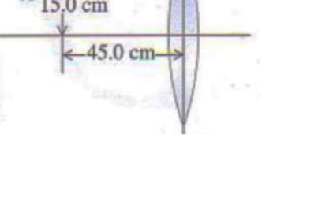
Topic: Geometric Optics Metodi: Thin Lens & Mirror Equation, Ray Tracing Competenze: Physical Reasoning, Mathematical Modeling Objects: Lens, Rod Fonte: Testo (PDF) — p.116
Oggetto in angolo
PT49. Provincial School of Technical Education n. 24 Comandante Andresito, Missioni.
Oggetto in angolo. Si mette un penna lungo 16 cm a un angolo di 45°, con il suo centro 15 cm sopra l’asse 45 cm da una lente con una distanza focale di 20 cm, come mostrato nella figura, (Ricorda che la la figura non è disegnata a scala). Supponiamo che il diametro La lente è abbastanza grande da permettere alla l’approccio paraxiale è valido. a) Dov’è l’immagine della penna? Indicare la localizzazione delle immagini dei punti A, B e C
OAF 2019- 51 dell’oggetto a partire dalla lente e dall’asse principale. b) Qual è la lunghezza dell’immagine (cioè la distanza tra le immagini di punti A e B)? c) Mostra in un disegno l’orientamento dell’immagine. Indicare se la stessa è reale o virtuale.
Topic: Geometric Optics Metodi: Thin Lens & Mirror Equation, Ray Tracing Competenze: Physical Reasoning, Mathematical Modeling Objects: Lens, Rod Fonte: Testo (PDF) — p.116
The value of the input data shall be the sum of the values of the input data.
PT49. Provincial School of Technical Education No 24 Commander Andresito, missions.
Object at an angle. A 16cm long pencil is placed. at an angle of 45°, with its centre 15cm above the axis Optical and 45cm from a lens with a focal length of 20 cm, as shown in the figure, (Note that the Figure is not drawn at scale). Suppose the diameter The lens is large enough to allow the the paraxial approximation is valid. (a) Where is the pencil image? Please indicate location of the images at points A, B and C
The Commission shall adopt implementing acts in accordance with Article 21 of this Regulation. the object from the lens and main axis. b) What is the length of the image (i.e. the distance between the images of the points A and B)? (c) Show the orientation of the image in a drawing. Please indicate whether the same is real or virtual.
Topic: Geometric Optics Metodi: Thin Lens & Mirror Equation, Ray Tracing Competenze: Physical Reasoning, Mathematical Modeling Objects: Lens, Rod Fonte: Testo (PDF) — p.116
PT50. Escuela Provincial de Educación Técnica Nº 24 Comandante Andresito, Misiones.
Un bloque metálico cúbico de 0,2m de lado y densidad 3400kg/m3 se encuentra dentro de un tanque lleno de agua completamente sumergido, una cuerda sujeta a la tapa sostiene a dicho bloque. a) Realice el diagrama de cuerpo libre y determine la tensión de la cuerda. b) En un determinado instante se rompe la cuerda; halle el valor de la aceleración con la cual desciende. c) Suponga que el tanque está lleno de mercurio y el bloque flota en equilibrio con su cara superior horizontal. Determine la altura sobre el mercurio a la que se encuentra la cara superior del bloque metálico.
Densidad del mercurio 𝛿= 13600𝑘𝑔/𝑚3 Considere 𝑔= 10𝑚/𝑠2
Topic: Fluid Mechanics Metodi: Hydrostatic Equilibrium, Free-Body Diagram Competenze: Physical Reasoning, Mathematical Modeling Objects: Block, Container, String Fonte: Testo (PDF) — p.116
PT50. Provincial School of Technical Education n. 24 Comandante Andresito, Missioni.
Un blocco metallico cubo di 0,2 m di lato e densità 3400 kg/m3 si trova all’interno di un serbatoio pieno di acqua completamente immerso, una corda attaccata alla copertura sostiene a quel blocco. a) Realizzare il diagramma di corpo libero e determinare la tensione della corda. b) In un certo istante si rompe la corda; trova il valore dell’accelerazione con cui scende. c) Supponiamo che il serbatoio sia pieno di mercurio e che il blocco galleggi in equilibrio con il suo viso superiore orizzontale. Determina l’altezza sul mercurio a cui si è trova la faccia superiore del blocco metallico.
Densità del mercurio δ= 13600kg/m3 Considera g= 10m/s2
Topic: Fluid Mechanics Metodi: Hydrostatic Equilibrium, Free-Body Diagram Competenze: Physical Reasoning, Mathematical Modeling Objects: Block, Container, String Fonte: Testo (PDF) — p.116
PT50. Provincial School of Technical Education No 24 Commander Andresito, missions.
A 0.2m cubic metal block on the side and density of 3400kg/m3 is located within A tank full of water completely submerged, a rope attached to the lid holds to that block. (a) Draw the free-body diagram and determine the tension of the rope. (b) At a given moment the rope is broken; find the value of the acceleration which he descends with. (c) Suppose the tank is filled with mercury and the block floats in balance with his upper face is horizontal. Determine the height above the mercury at which it is Find the top of the metal block.
The concentration of mercury δ = 13600kg/m3 Consider g = 10m/s2
Topic: Fluid Mechanics Metodi: Hydrostatic Equilibrium, Free-Body Diagram Competenze: Physical Reasoning, Mathematical Modeling Objects: Block, Container, String Fonte: Testo (PDF) — p.116
PT51. Escuela Provincial de Educación Técnica Nº 24 Comandante Andresito, Misiones.
Un objeto de 12kg de masa se ata al extremo de una cuerda fina de 0,75m de longitud y se desliza por una rampa de 37º con la que tiene un coeficiente de rozamiento μ = 0,25. En un instante determinado el objeto pasa por el punto más bajo A y la tensión de la cuerda es de 1100N. Figura a) Determine la velocidad del objeto en dicho instante
Cuando el objeto asciende, al pasar por B determinar: b) El módulo de la velocidad. c) La tensión de la cuerda
Considere 𝑔= 10𝑚/𝑠2
Topic: Newtonian Mechanics Metodi: Free-Body Diagram, Conservation of Energy, Torque & Angular Momentum Analysis Competenze: Physical Reasoning, Mathematical Modeling Objects: Pendulum, String Fonte: Testo (PDF) — p.116
PT51. Provincial School of Technical Education n. 24 Comandante Andresito, Missioni.
Un oggetto di 12 kg di massa si attacca all’estremità di una corda fino a 0,75 m di lunghezza e scivola da un rampo di 37° con un coefficiente di rottura μ = 0,25. En un In un istante determinato l’ oggetto passa attraverso il punto più basso A e La tensione della corda è di 1100N. Figura a) Determina la velocità dell’oggetto in quel momento
Quando l’oggetto si alza, passando per B determinare: b) Il modulo di velocità. c) La tensione della corda
Considera g= 10m/s2
Topic: Newtonian Mechanics Metodi: Free-Body Diagram, Conservation of Energy, Torque & Angular Momentum Analysis Competenze: Physical Reasoning, Mathematical Modeling Objects: Pendulum, String Fonte: Testo (PDF) — p.116
PT51. Provincial School of Technical Education No 24 Commander Andresito, missions.
A 12kg object is tied to the end of a rope . 0.75m long and slides down a 37° ramp with a coefficient of friction μ = 0,25. En un At a given moment the object passes through the lowest point A and The tension of the rope is 1100N. Figure (a) Determine the speed of the object at that instant
When the object is lifted, by passing through B determine: (b) The speed module. (c) String tension
Consider g = 10m/s2
Topic: Newtonian Mechanics Metodi: Free-Body Diagram, Conservation of Energy, Torque & Angular Momentum Analysis Competenze: Physical Reasoning, Mathematical Modeling Objects: Pendulum, String Fonte: Testo (PDF) — p.116
PT52. Escuela de Educación Técnica N° 1 Coronel Manuel Álvarez Prado San Pedro, Jujuy.
Una masa de 200 g está
conectada a un resorte ligero
cuya constante de elasticidad es
5,00
N/m
y
puede
oscilar
libremente
sobre
una
pista
horizontal sin fricción. Si la masa
se desplaza 5,00 cm desde el
equilibrio y se suelta a partir del
reposo como se muestra en la
figura, encuentre:
a) El
período
de
su
movimiento
52 - OAF 2019
b) La velocidad máxima,
c) La aceleración máxima y
d) El desplazamiento, la velocidad y la aceleración como funciones del tiempo.
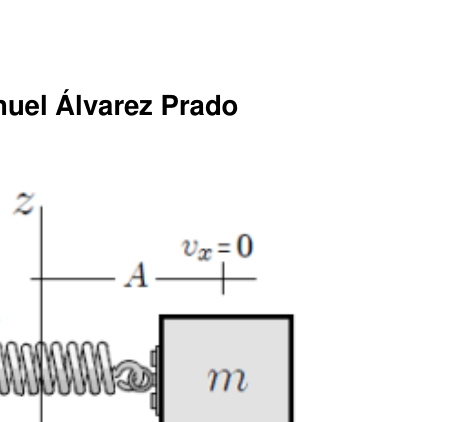
Topic: Oscillations & Waves Metodi: Simple Harmonic Motion Analysis Competenze: Physical Reasoning, Mathematical Modeling Objects: Spring, Block Fonte: Testo (PDF) — p.116
PT52. Scuola di istruzione tecnica N° 1 Colonnello Manuel Álvarez Prado San Pietro, Jujuy.
Una massa di 200 g è collegata ad una sorgente leggera la cui costante di elasticità è 5,00 N/m y
- Potrebbe? oscillazione liberamente su Una . C’ è un segnale orizzontale senza attrito. Se la massa si spostano 5,00 cm dal equilibrio e si libera dal riposo come mostrato in figura, trova: a) El periodo de su movimento
52 - OAF 2019 b) velocità massima, (c) L’accelerazione massima e d) spostamento, velocità e accelerazione come funzioni del tempo.
Topic: Oscillations & Waves Metodi: Simple Harmonic Motion Analysis Competenze: Physical Reasoning, Mathematical Modeling Objects: Spring, Block Fonte: Testo (PDF) — p.116
PT52. School of Technical Education N° 1 Colonel Manuel Álvarez Prado St. Peter, Jujuy.
A 200 g mass is connected to a light spring. whose elasticity constant is 5,00 N/m y You can . oscillating Free . on One . The lead . horizontal without friction. If the mass It moves 5,00 cm from the The balance and release from the Rest as shown in the Figure, find: a) El period de su Movement
The Commission shall adopt delegated acts in accordance with Article 21 of this Regulation. (b) The maximum speed, (c) Maximum acceleration and (d) Displacement, speed and acceleration as a function of time.
Topic: Oscillations & Waves Metodi: Simple Harmonic Motion Analysis Competenze: Physical Reasoning, Mathematical Modeling Objects: Spring, Block Fonte: Testo (PDF) — p.116
PT53. Escuela de Educación Técnica N° 1 Coronel Manuel Álvarez Prado San Pedro, Jujuy.
Una gimnasta de masa mG = 50.0 kg se cuelga del extremo inferior de una cuerda colgante. El extremo superior está fijo al techo de un gimnasio. Suponiendo que la masa de la cuerda se considera despreciable, se pide: a) Realizar el diagrama de cuerpo libre para la gimnasta y para la cuerda b) ¿Cuánto pesa la gimnasta? c) ¿Qué fuerza (magnitud y dirección) ejerce la cuerda sobre la gimnasta? d) ¿Qué tensión hay en la parte superior de la cuerda?
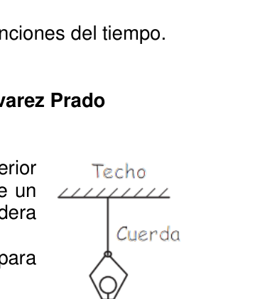
Topic: Newtonian Mechanics Metodi: Free-Body Diagram Competenze: Physical Reasoning Objects: String Fonte: Testo (PDF) — p.116
PT53. Scuola di istruzione tecnica N° 1 Colonnello Manuel Álvarez Prado San Pietro, Jujuy.
Un ginnasta di massa mG = 50,0 kg si appende dall’estremità inferiore di una corda appesa. L’estremità superiore è fissata al tetto di un
- La palestra. Supponiamo che la massa della corda sia considerata disprezioso, si chiede: a) realizzare il diagramma del corpo libero per la ginnasta e per La corda b) Quanto pesa la ginnasta? (c) Che forza (magnità e direzione) esercita la corda sulla corda?
- Un ginnasta? d) Qual è la tensione nella parte superiore della corda?
Topic: Newtonian Mechanics Metodi: Free-Body Diagram Competenze: Physical Reasoning Objects: String Fonte: Testo (PDF) — p.116
PT53. School of Technical Education N° 1 Colonel Manuel Álvarez Prado St. Peter, Jujuy.
A gymnast of mG = 50.0 kg weight hangs from the lower end. of a hanging rope. The upper end is fixed to the ceiling of a The gym. Assuming the mass of the rope is considered The Commission has already taken the necessary steps to ensure that the Commission is able to take all necessary measures to ensure that the Commission is able to take all necessary measures to ensure that the Commission is able to take appropriate measures. (a) To draw up the body diagram for the gymnast and for the The rope . (b) How much does the gymnast weigh? (c) What force (magnitude and direction) does the rope exert on the rope?
- A gymnast? (d) What is the tension on the top of the rope?
Topic: Newtonian Mechanics Metodi: Free-Body Diagram Competenze: Physical Reasoning Objects: String Fonte: Testo (PDF) — p.116
PT54. Escuela de Educación Técnica N° 1 Coronel Manuel Álvarez Prado San Pedro, Jujuy.
Un circuito está formado por 4 partes en serie. La primera comprende dos conductores en paralelo cuyas resistencias son de 2 y 6 Ω; la segunda un conductor de 4 Ω; la tercera comprende 5 lámparas en paralelo cada una de las cuales presenta una resistencia de 150 Ω y la cuarta se reduce a un hilo cuya resistencia es de 8,5 Ω. Si la intensidad de corriente en cada lámpara es 1 A. Se pide: a) Representar gráficamente el circuito. b) ¿Calcular la resistencia equivalente? c) ¿Cuál es el valor de la corriente principal? d) ¿Cuál es el voltaje aplicado al circuito?
Topic: Circuits Metodi: Equivalent Circuit Reduction, Kirchhoff’s Laws Competenze: Physical Reasoning, Mathematical Modeling Objects: Resistor Fonte: Testo (PDF) — p.116
PT54. Scuola di istruzione tecnica N° 1 Colonnello Manuel Álvarez Prado San Pietro, Jujuy.
Un circuito è formato da quattro parti in serie. La prima comprende due conducenti in parallelo, le cui resistenze sono di 2 e 6 Ω; la seconda un conduttore di 4 Ω; la terza comprende 5 lampadine parallele, ciascuna delle quali presenta una resistenza di 150 Ω e la quarta si riduce a un filo la cui resistenza è di 8,5 Ω. Se l’intensità di corrente in ogni lampada è 1 A. Si chiede: a) Rappresentare graficamente il circuito. b) Calcolare la resistenza equivalente? c) Qual è il valore del corrente principale? d) Qual è la voltazione applicata al circuito?
Topic: Circuits Metodi: Equivalent Circuit Reduction, Kirchhoff’s Laws Competenze: Physical Reasoning, Mathematical Modeling Objects: Resistor Fonte: Testo (PDF) — p.116
PT54. School of Technical Education N° 1 Colonel Manuel Álvarez Prado St. Peter, Jujuy.
A circuit is made up of four parts in series. The first comprises two drivers in parallel whose resistance is 2 and 6 Ω; the second a conductor of 4 Ω; the third It comprises 5 parallel lamps each of which has a resistance of 150 Ω and the fourth is reduced to a thread whose resistance is 8,5 Ω. If the intensity of Current in each lamp is 1 A. It asks: (a) Graphically represent the circuit. (b) Calculate the equivalent resistance? (c) What is the value of the mainstream? (d) What is the voltage applied to the circuit?
Topic: Circuits Metodi: Equivalent Circuit Reduction, Kirchhoff’s Laws Competenze: Physical Reasoning, Mathematical Modeling Objects: Resistor Fonte: Testo (PDF) — p.116
PT55. Escuela de Agricultura General Alvear Mendoza.
Un cubo de aluminio de 2.00 cm de lado está sujeto de un cordón. El cubo se calienta
con un mechero de 20 °C a 60 °C. El aire que rodea al cubo está a presión atmosférica
(1.01 x 105 Pa).
a) El aumento de volumen del cubo.
b) El trabajo mecánico efectuado por el cubo para expandirse contra la presión del
aire circundante.
c) La cantidad de calor agregada al cubo.
d) El cambio de energía interna del cubo.
e) Con base en sus resultados, explique si hay una diferencia sustancial entre los
calores específicos Cp.(a presión constante) y Cv(a volumen constante) del
aluminio en estas condiciones.
Topic: Thermodynamics Metodi: First Law of Thermodynamics, Ideal Gas Law Competenze: Physical Reasoning, Mathematical Modeling Objects: Gas Fonte: Testo (PDF) — p.116
PT55. La scuola di agricoltura Il generale Alvear Mendoza.
Un cubo di alluminio di 2 cm laterale è soggetto a un cordone. Il cubo si riscalda con un lampo di 20 °C a 60 °C. L’aria che circonda il cubo è a pressione atmosferica (1.01 x 105 Pa). a) L’aumento del volume del cubo. b) Il lavoro meccanico effettuato dal cubo per espandersi contro la pressione del aria circostante. c) La quantità di calore aggiunta al cubo. d) Scaldazione dell’energia interna del cubo. (e) Sulla base dei risultati, spiegare se vi sia una differenza sostanziale tra i risultati Calori specifici Cp. alluminio in queste condizioni.
Topic: Thermodynamics Metodi: First Law of Thermodynamics, Ideal Gas Law Competenze: Physical Reasoning, Mathematical Modeling Objects: Gas Fonte: Testo (PDF) — p.116
PT55. School of Agriculture General Alvear Mendoza is here.
A 2.00 cm aluminium cube on the side is subject to a cord. The cube is warming up. with a viscosity of 20 °C to 60 °C. The air around the cube is at atmospheric pressure . (1.01 x 105 Pa). (a) Increased volume of the cube. (b) The mechanical work done by the cube to expand against the pressure of the surrounding air. (c) The amount of heat added to the cube. (d) The change in internal energy of the cube. (e) On the basis of your results, explain whether there is a substantial difference between the two. specific heat Cp.(at constant pressure) and Cv(at constant volume) of the aluminum under these conditions.
Topic: Thermodynamics Metodi: First Law of Thermodynamics, Ideal Gas Law Competenze: Physical Reasoning, Mathematical Modeling Objects: Gas Fonte: Testo (PDF) — p.116
PT56. Escuela de Agricultura General Alvear Mendoza.
Suponga que, como se indica en la situación 1, se cuelga una masa M de un resorte de longitud natural L0 y constante elástica k en un plano vertical, estando el otro extremo sujeto a un soporte fijo al techo.
OAF 2019- 53 a) Calcular la distancia de equilibrio del sistema medida respecto del b) Calcular el período de pequeñas oscilaciones del sistema.
Ahora suponga que al mismo resorte se lo corta por la mitad y se arregla el sistema de la situación 2, colgando una masa M’. Los dos segmentos de resorte se cuelgan simétricos respecto al centro de masa de M’.
c) Repetir las partes (a) y (b) para este nuevo sistema. d) Suponga que se desea que ambos sistemas (1 y 2) tengan el mismo período. ¿Qué masa M’ se debería colgar en la situación 2 para que esto suceda? Expresar el resultado en función de M.
Topic: Oscillations & Waves Metodi: Simple Harmonic Motion Analysis, Hooke’s Law Competenze: Physical Reasoning, Mathematical Modeling Objects: Spring Fonte: Testo (PDF) — p.116
PT56. La scuola di agricoltura Il generale Alvear Mendoza.
Supponiamo che, come indicato nella situazione 1, si appenda una massa M di una resorte di L0 e costante elastica k in un piano verticale, l’altra estremità soggetta a un supporto fisso al tetto.
OAF 2019- 53 a) Calcolare la distanza di equilibrio del sistema di misurazione rispetto al b) Calcolare il periodo di piccole oscillazioni del sistema.
Ora supponi che lo faccia lo stesso. Taglia in metà e si aggiusta il sistema di situazione 2, appendendo una massa M’. I Due segmenti di primavera si appendono. simmetrici rispetto al centro di massa di M’.
c) Ripetere le parti (a) e (b) per questo nuovo sistema. d) Supponiamo che sia desiderato che entrambi i sistemi (1 e 2) abbiano lo stesso periodo. Che massa M’ dovrebbe essere appesa alla situazione 2 per far accadere questo? Esprimere il risultato in funzione di M.
Topic: Oscillations & Waves Metodi: Simple Harmonic Motion Analysis, Hooke’s Law Competenze: Physical Reasoning, Mathematical Modeling Objects: Spring Fonte: Testo (PDF) — p.116
PT56. School of Agriculture General Alvear Mendoza is here.
Suppose, as indicated in situation 1, that a mass M of a spring of Natural length L0 and elastic constant k on a vertical plane, the other end being attached to a fixed support to the ceiling.
The Commission shall adopt implementing acts in accordance with Article 21 of this Regulation. (a) Calculate the equilibrium distance of the system of measurement with respect to (b) Calculate the period of small oscillations of the system.
Now suppose the same spring is the same spring. Cut it in half and fix the system. situation 2, hanging a mass M’. The Two spring segments hanging . symmetrical with respect to the centre of mass of M’.
(c) Repeat Parts (a) and (b) for this new system. (d) Suppose that both systems (1 and 2) are intended to have the same period. What mass M’ should be hung in situation 2 for this to happen? Express the result in terms of M.
Topic: Oscillations & Waves Metodi: Simple Harmonic Motion Analysis, Hooke’s Law Competenze: Physical Reasoning, Mathematical Modeling Objects: Spring Fonte: Testo (PDF) — p.116
PT57. Escuela de Agricultura General Alvear Mendoza.
Dos hilos metálicos largos y paralelos, por los que circulan corrientes de 3A y 4A, pasan por los vértices B y D de un cuadrado de 2m de lado, situado en un plano perpendicular a los hilos, tal y como se ilustra en la figura. El sentido de las corrientes se indica por los símbolos × = entra en el papel, • = sale del papel. Determinar: a) El vector campo magnético resultante en el vértice A. b) ¿Existe algún punto, dentro del cuadrado, en el que se anule el campo magnético? En caso negativo, ¿cómo se debería modificar el problema para que existiese dicho punto y dónde se encontraría? c) La fuerza por unidad de longitud que cada hilo ejerce sobre el otro hilo. d) Si desde el vértice A se lanza un electrón con una energía cinética de 1 eV en la dirección del eje y positivo, ¿cuál será la aceleración adquirida por el electrón? Dibuje un esquema representando los vectores campo magnético, velocidad y fuerza que actúa sobre el electrón. Datos: µ0 = 4π × 10-7 N·m2·A-2; me = 9,1 × 10-31 Kg; mp = 1,7 × 10-27 Kg; e = 1,6 × 10-19 C
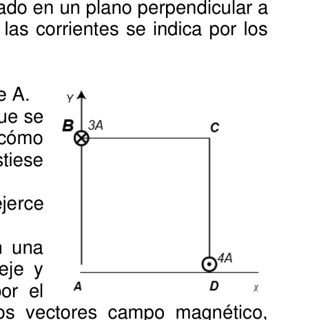
Topic: Magnetism Metodi: Biot-Savart Law, Ampère’s Law, Lorentz Force Analysis Competenze: Physical Reasoning, Mathematical Modeling Objects: Wire, Electron Fonte: Testo (PDF) — p.116
PT57. La scuola di agricoltura Il generale Alvear Mendoza.
Due fili metallici lunghi e paralleli, attraverso i quali circolano correnti di 3A e 4A, passano. per i vertici B e D di un quadrato di 2 m laterale, situato in un piano perpendicolare a i fili, come illustrato nella figura. Il senso delle correnti è indicato dai i simboli × = entra sul foglio, • = esce dal foglio. Determinare: a) Il vettore del campo magnetico risultante dal vertice A. b) C’è un punto nel quadrato in cui si annulla il campo magnetico? In caso negativo, come? Il problema dovrebbe essere modificato per esistere dove si trova? c) La forza per unità di lunghezza esercitata da ogni filo sull’altro filo. d) Se da vertice A viene lanciato un elettrone con una energia cinetica di 1 eV nella direzione dell’asse e In questo caso, la Commissione ha deciso di proporre un’accelerazione del
- Un elettrone? Disegni un schema che rappresenta i vettori del campo magnetico, velocità e forza che agiscono sull’elettrone. Dati: μ0 = 4π × 10-7 N·m2·A-2; me = 9,1 × 10-31 Kg; mp = 1,7 × 10-27 Kg; e = 1,6 × 10-19 C
Topic: Magnetism Metodi: Biot-Savart Law, Ampère’s Law, Lorentz Force Analysis Competenze: Physical Reasoning, Mathematical Modeling Objects: Wire, Electron Fonte: Testo (PDF) — p.116
PT57. School of Agriculture General Alvear Mendoza is here.
Two long, parallel metal wires, through which 3A and 4A currents circulate, pass through. by the vertices B and D of a 2 m square side, situated in a plane perpendicular to the threads, as shown in the figure. The direction of the currents is indicated by the The symbols × = enters the paper, • = leaves the paper. Determine: (a) The magnetic field vector resulting from vertex A. (b) Is there any point within the square where it is Cancel the magnetic field? If not, how? The problem should be modified to exist That point and where would it be? (c) The force per unit length exerted by each strand over the other thread. (d) If an electron is thrown from vertex A with a kinetic energy of 1 eV in the direction of the axis and The Commission will also consider the possible possible use of the new technology to improve the efficiency of the What is the electron? Draw a diagram representing the magnetic field vectors, speed and force acting on the electron. The data are: μ0 = 4π × 10-7 N·m2·A-2; me = 9,1 × 10-31 Kg; mp = 1,7 × 10-27 Kg; e = 1,6 × 10-19 C
Topic: Magnetism Metodi: Biot-Savart Law, Ampère’s Law, Lorentz Force Analysis Competenze: Physical Reasoning, Mathematical Modeling Objects: Wire, Electron Fonte: Testo (PDF) — p.116
Rapido, ca se enfria el te!
PT58. Escuela Superior de Comercio Carlos Pellegrini Ciudad Autónoma de Buenos Aires.
¡Rápido, ca se enfría el té! Facu se prepara un té llenando un vaso cilíndrico de telgopor con agua a 90°C, muy cerca de su punto de ebullición. El vaso tiene diámetro 6 cm en la base y 9 cm de altura, y queda destapado, con lo cual el líquido es libre de evaporarse. a) Despreciando el saquito, hallar la masa de agua con la que está hecho el té. b) ¿Cuánto calor debe perder el té para que llegue a una temperatura de 60°C? c) Suponiendo que el sistema pierde calor únicamente por evaporación, ¿cuánto té se evaporaría en ese proceso?
La ley de Newton del enfriamiento afirma que la velocidad P a la que se enfría un objeto a temperatura T expuesto al ambiente es proporcional a la diferencia entre la temperatura T y la del ambiente Ta: 𝑃= −𝑘 (𝑇−𝑇𝑎)
54 - OAF 2019 donde P = Q/ΔT es la cantidad de calor intercambiada por unidad de tiempo, también llamada potencia térmica o corriente térmica y k es una constante de proporcionalidad.
Pasado un minuto de su preparación, Carla observa que la temperatura del té es de 80°C. d) Estimar el valor de k para el vaso de té, expresando la respuesta en W/°C o en (cal/min)/°C. e) ¿Cuánto tardará el té en enfriarse de 80°C a 70°C? ¿Y de 70°C a 60°C?
Para conservar el té caliente por más tiempo, la idea más simple consiste en taparlo, con lo cual ya no se pierde más calor por evaporación. Entonces cobran importancia dos mecanismos de transferencia de calor. El primero de ellos es la conducción, que consiste en el flujo de calor a lo largo de un material en el cual hay un gradiente de temperatura. La ley de Fourier para la conducción térmica establece que la potencia térmica transferida a lo largo de una pared delgada plana de área A viene dada por: 𝑃= −𝑘 𝐴 ∆𝑇 ∆𝑥 donde ∆𝑥 es el espesor de la pared y ∆𝑇 la diferencia de temperatura entre sus caras. La cantidad ∆𝑇/∆𝑥 es lo que se llama el gradiente de temperatura y 𝑘 es una constante de proporcionalidad llamada conductividad térmica. f) A los 90°C, estime: ¿con qué potencia térmica se enfría el vaso de té por conducción? g) Estimar el tiempo que tardará en enfriarse a 80°C. Repetir el cálculo, si el vaso fuera de vidrio.
El otro mecanismo de transferencia de calor es la radiación, producida por todo cuerpo cuya temperatura esté por encima del cero absoluto. La ley de Stefan-Boltzmann afirma que la potencia irradiada está dada por |𝑃| = 𝜖 𝜎 𝐴𝑇4 donde 0 ≤ 𝜖 ≤1 es un coeficiente llamado la emisividad del cuerpo, T es la temperatura absoluta y 𝜎 es la llamada constante de Stefan-Boltzmann. La emisividad de un cuerpo mide su “eficiencia” para irradiar y también para absorber radiación de otros cuerpos; vale 1 para un cuerpo negro ideal —capaz de absorber toda la radiación que incide sobre él— y 0 para un espejo ideal —que la refleja toda—. Para estudiar la radiación hay que tener en cuenta que el cuerpo no está en el vacío, sino en un ambiente, recibiendo la radiación de todos los cuerpos circundantes. h) Calcular la potencia de la radiación que recibe el vaso por parte de su entorno. Para esto pensar primero: ¿en qué situación la potencia recibida debe ser igual a la potencia emitida? i) Hallar la potencia neta intercambiada por radiación a los 90°C. ¿Cómo se compara con la potencia de conducción?
Datos
- Temperatura ambiente: 20°C
- Calor latente de vaporización del agua:540 cal/g
- 1 cal = 4,18 J
- Conductividad del telgopor: 0,033 W/(m °C)
- Espesor del vaso de telgopor: 3 mm
- Conductividad del vidrio: 1,4 W/(m °C)
- Emisividad del telgopor: 0,60
- 𝜎 = 5,67 × 10−8 W/(m² K⁴)
OAF 2019- 55
Topic: Thermodynamics Metodi: First Law of Thermodynamics, Order-of-Magnitude Estimation, Differential Equations Competenze: Physical Reasoning, Mathematical Modeling Objects: Container Fonte: Testo (PDF) — p.116
Rapido, il tè si raffredda!
PT58. Scuola superiore di commercio Carlos Pellegrini Città autonoma di Buenos Aires.
Sbrigati, il tè si raffredda! Facu si prepara un tè riempendo un bicchiere cilindrico di telgopor con acqua a 90°C, molto vicino al suo punto di ebollizione. Il vaso ha un diametro di 6 cm alla base e 9 cm di altezza. e viene scovato, che permette al liquido di evaporare. a) Sconoscendo il sacchetto, trovare la massa d’acqua con cui è fatto il tè. b) Quanto calore deve perdere il tè per raggiungere una temperatura di 60°C? c) Supponendo che il sistema perda calore solo per evaporazione, quanto tè evaporerebbe in quel processo?
La legge di Newton sul raffreddamento afferma che la velocità P a cui si raffredda un L’obiettivo è quello di ottenere una temperatura T in proporzione alla differenza tra l’ambiente e l’ambiente. Temperatura T e temperatura ambiente Ta: 𝑃= −𝑘 (𝑇−𝑇𝑎)
54 - OAF 2019 dove P = Q/ΔT è la quantità di calore scambiata per unità di tempo, anche la potenza termico o corrente termica e k è una costante di proporzionalità.
Dopo un minuto di preparazione, Carla osserva che la temperatura del tè è di 80°C. d) Estimare il valore di k per il bicchiere di tè, espresso in W/°C o in (cal/min)/°C. e) Quanto tempo ci vorrà per raffreddare il tè da 80°C a 70°C? ¿Y de 70°C a 60°C?
Per mantenere il tè caldo più a lungo, l’idea più semplice è coprirlo, con che non perde più calore per evaporazione. Allora, si tratta di due. meccanismi di trasferimento di calore. Il primo di questi è la guida, che Il calore che si fa attraverso un materiale è un gradiente di temperatura. La legge di Fourier sulla conduzione termica stabilisce che la potenza la temperatura trasferita lungo un sottile muro piano di area A è data da: 𝑃= −𝑘 𝐴 ∆𝑇 ∆𝑥 dove ∆x è lo spessore del muro e ∆T la differenza di temperatura tra i loro volti. La Quantità ∆T/∆x è ciò che è chiamato gradiente di temperatura e k è una costante di proporzionalità chiamata conducibilità termica. f) A 90°C, stima: a che potenza termico si raffredda il bicchiere di tè per
- La guida? g) Estimare il tempo necessario per raffreddarsi a 80°C. Ripetere il calcolo, se il bicchiere fuori dal vetro.
L’altro meccanismo di trasferimento del calore è la radiazione, prodotta da tutto il corpo. la cui temperatura è superiore a zero assoluto. La legge di Stefan-Boltzmann afferma che la potenza irradiata è data da |𝑃| = 𝜖 𝜎 𝐴𝑇4 dove 0 ≤ ε ≤1 è un coefficiente chiamato emissività del corpo, T è la temperatura assoluta e σ è la costante chiamata di Stefan-Boltzmann. L’emissività di un corpo misura la sua efficienza per irradiare e anche per assorbire radiazioni da altri corpi; vale 1 per un corpo nero ideale, capace di assorbire tutto il raggio che lo colpisce. e 0 per uno specchio ideale che lo riflette intero. Per studiare la radiazione bisogna tenere presente che il corpo non è nel vuoto, ma in un ambiente, ricevendo la radiazione da tutti i corpi circostanti. h) Calcolare la potenza di radiazione che il vaso riceve dall’ambiente. Per questo, pensate prima: in che situazione la potenza ricevuta deve essere uguale a la potenza emessa? i) Trovare la potenza netta scambiata per radiazioni a 90°C. Come si fa?
- rispetto alla potenza di guida?
Datos
- Temperatura ambiente: 20°C
- Calore latente di vaporizzazione dell’acqua:540 cal/g
- 1 cal = 4,18 J
- Conducibilità del telgoporo: 0,033 W/(m ° C)
- Spessore del bicchiere di telgopor: 3 mm
- Conducibilità del vetro: 1,4 W/(m °C)
- Emissività del telgopore: 0,60
- 𝜎 = 5,67 × 10−8 W/(m² K⁴)
OAF 2019- 55
Topic: Thermodynamics Metodi: First Law of Thermodynamics, Order-of-Magnitude Estimation, Differential Equations Competenze: Physical Reasoning, Mathematical Modeling Objects: Container Fonte: Testo (PDF) — p.116
** Quick, the tea is cooling! **
PT58. The Carlos Pellegrini School of Commerce The Autonomous City of Buenos Aires.
Quick, the tea is getting cold! A tea is made by filling a cylindrical telgopor glass with 90°C water, very near its boiling point. The glass has a diameter of 6 cm at the base and a height of 9 cm. and is uncovered, which allows the liquid to evaporate. (a) By disregarding the sachet, find the water mass from which the tea is made. (b) How much heat must the tea lose to reach a temperature of 60°C? (c) Assuming that the system loses heat only by evaporation, how much tea is would evaporate in the process?
Newton ‘s law of cooling states that the speed P at which a The temperature of the object T exposed to the environment is proportional to the difference between the Temperature T and ambient temperature Ta: 𝑃= −𝑘 (𝑇−𝑇𝑎)
The Commission shall adopt delegated acts in accordance with Article 21 of this Regulation. where P = Q/ΔT is the amount of heat exchanged per unit time, also is called thermal power or thermal current and k is a proportionality constant.
After a minute of preparation, Carla observes that the tea temperature is of 80°C. (d) Estimate the value of k for the tea cup, expressing the answer in W/°C or in The following table shows the results of the calculation of the total number of days of the year. (e) How long will it take for the tea to cool from 80°C to 70°C? ¿Y de 70°C a 60°C?
To keep the tea warm for longer, the simplest idea is to cover it up, with Which is no longer heat lost by evaporation. Then two are important . the heat transfer mechanisms. The first of these is driving, which It consists of the flow of heat along a material in which there is a gradient of The temperature. Fourier’s law for thermal conduction states that the power The heat transferred along a thin flat wall of area A is given by: 𝑃= −𝑘 𝐴 ∆𝑇 ∆𝑥 where ∆x is the thickness of the wall and ∆T the temperature difference between their faces. La quantity ∆T/∆x is called the temperature gradient and k is a constant of Proportion called thermal conductivity. (f) At 90°C, estimate the thermal power of the tea glass to be cooled by
- What about driving? (g) Estimate the time it will take to cool to 80°C. Repeat the calculation, if the glass out of glass.
The other heat transfer mechanism is radiation, produced by the whole body. The temperature of the water is above absolute zero. Stefan-Boltzmann’s law states that The radiated power is given by |𝑃| = 𝜖 𝜎 𝐴𝑇4 where 0 ≤ ε ≤1 is a coefficient called the emissivity of the body, T is the temperature absolute and σ is the Stefan-Boltzmann constant. The emissivity of a body It measures its efficiency for irradiation and also for absorbing radiation from other bodies; it is 1 for an ideal black body capable of absorbing all the radiation that affects it And 0 for an ideal mirror that reflects it all. To study radiation, we must bear in mind that the body is not in the void, but in the In an environment, receiving radiation from all the surrounding bodies. (h) Calculate the radiation intensity of the glass from its surroundings. For this, think first: in what situation the power received must be equal to the power emitted? (i) Find the net power exchanged by radiation at 90°C. How did you know? Compared to driving power?
Data from the report
- Room temperature: 20°C
- Latent heat of water vaporization:540 cal/g
- 1 cal = 4.18 J
- Conduct of the telgopore: 0,033 W/(m ° C)
- Thickness of the telgopor glass: 3 mm
- Conduct of glass: 1,4 W/(m °C)
- Emission from telgopore: 0.60
- 𝜎 = 5,67 × 10−8 W/(m² K⁴)
The following information shall be provided:
Topic: Thermodynamics Metodi: First Law of Thermodynamics, Order-of-Magnitude Estimation, Differential Equations Competenze: Physical Reasoning, Mathematical Modeling Objects: Container Fonte: Testo (PDF) — p.116
El menester de buceo
PT59. Escuela Superior de Comercio Carlos Pellegrini Ciudad Autónoma de Buenos Aires.
El mester de buceo El buceo es una actividad muy popular para descubrir y entablar contacto directo con la maravillosa vida marina subacuática. No obstante, también puede tener fines de investigación, búsqueda, rescate, mantenimiento y deportivos. En todos los casos, requiere una planificación cuidadosa y un equipamiento apropiado.
Si bien es posible realizar inmersiones “aguantando” la respiración (buceo en apnea), lo más común para buceo recreativo y profesional es llevar tanques cargados con aire comprimido, a 200 atm. La capacidad típica de un tanque es de 11 l. La inmersión se termina y comienza el ascenso a la superficie cuando sólo queda 1 kg de aire en el tanque. a) Calcular la masa de aire inicial en el tanque. El equipo de buceo no permite medir directamente la masa de aire en el tanque, pero incluye un manómetro (que mide su presión). b) ¿Cuánto debe indicar el manómetro para que haya que volver a la superficie?
Como afirma el teorema fundamental de la hidrostática, la presión en el interior de un fluido (también llamada presión ambiental) aumenta con la profundidad. Los tanques de gas que lleva el buceador están conectados a un dispositivo llamado regulador, que posee una manguera por la que entrega el aire a los pulmones a presión ambiental. En una inmersión, es útil poder monitorear la presión ambiental. A falta de un barómetro, en el apuro usted decide llevarse un globo esférico que fue inflado a 3 litros en la superficie (en CNPT). c) Si la densidad del agua de mar fuera la misma que la del agua pura, ¿cuál sería la presión a 10 m de profundidad? ¿Qué ocurriría con el volumen del globo? d) A 10 m de profundidad, se mide que el diámetro del globo es de 14,2 cm. Deduzca la densidad del agua de mar. e) Si ve que el radio del globo es de 6 cm, ¿a qué profundidad se encuentra?
Debido a que su densidad es muy semejante a la del agua, el cuerpo humano no se hunde con facilidad; para sumergirse y mantenerse en profundidad sería necesario un esfuerzo físico que resultaría agotador. Por ello, la persona que bucea se coloca un cinturón con una cierta cantidad de lastres de plomo de 1 kg. f) Si se precisa que la fuerza resultante sobre usted sea nula al final de la inmersión: ¿qué cantidad de lastres se debe colocar? g) ¿Cómo es, entonces, la resultante sobre usted al comienzo de la inmersión?
Uno de los riesgos más significativos del buceo es el síndrome de descompresión. Parte del aire respirado pasa al torrente sanguíneo y queda disuelto en los tejidos del cuerpo. De acuerdo con la ley de Henry, la solubilidad (es decir, la máxima cantidad de gas que puede estar disuelto) aumenta con la presión del gas en equilibrio con la fase líquida (en este caso, el aire que se inhala): 𝑐 𝑝= 𝐻= 𝑐𝑜𝑛𝑠𝑡𝑎𝑛𝑡𝑒. Como el regulador provee todo el aire que necesita el cuerpo, al cabo de una inmersión los tejidos están saturados, es decir que llevan disuelto el máximo de gas.
Sin embargo, si la presión ambiente (y por lo tanto la solubilidad) disminuye rápidamente, parte de ese gas puede no permanecer disuelto y entonces formar burbujas que podrían ocasionar daños muy graves en los tejidos. Por ello, durante el ascenso se debe eliminar el exceso de gas en los tejidos antes que se formen burbujas. Este proceso lleva tiempo y se llama descompresión. El estudio de cómo llevarla a cabo sin síntomas fisiológicos es todo un tema de investigación teórica y experimental.
56 - OAF 2019
Un ejemplo muy cotidiano de descompresión se ve en las burbujas formadas cuando se
abre una botella de gaseosa cerrada. Allí, la presión de dióxido de carbono es de unas 3
atmósferas.
h) Calcular la cantidad de CO2 que debería escapar del líquido cuando se abre una
botella de 2 litros en un ambiente donde la presión parcial de CO2 es de
0,3 mmHg. (En realidad, no todo el CO2 escapa de inmediato; para que se
alcance el equilibrio, hay que esperar o agitar; hasta entonces se dice que la
solución está sobresaturada).
i) Calcular la cantidad de aire que debería pasar de estar disuelta en los tejidos a
fase gaseosa en una persona promedio que ha hecho una inmersión a 30 m de
profundidad. Por simplicidad, suponga que todo el gas disuelto es N2. ¿Qué
volumen tiene esta cantidad de gas en CNPT?
Datos
- CNPT: 1 atm = 101 325 Pa y 20°C
- Masa molar del aire: 28,8 g/mol
- Cte. de los gases R = 0,08206 l atm/(mol K)
- Volumen de una esfera: 4/3 πR³
- Densidad del agua pura: 1000 kg/m³
- Densidad del plomo: 11 340 kg/m³
- HCO2 = 0,034 mol/(L atm)
- HN2 = 6,1×10-4 mol/(L atm)
Topic: Fluid Mechanics, Thermodynamics Metodi: Hydrostatic Equilibrium, Ideal Gas Law, Bernoulli’s Equation Competenze: Physical Reasoning, Mathematical Modeling Objects: Bubble, Gas, Container Fonte: Testo (PDF) — p.116
Il direttore del buceo
PT59. Scuola superiore di commercio Carlos Pellegrini Città autonoma di Buenos Aires.
Il maestro del diving Il buceo è un’attività molto popolare per scoprire e entrare in contatto diretto con il meravigliosa vita marina subacquea. Tuttavia, può anche avere finalità di ricerca, ricerca, salvataggio, manutenzione e sport. In ogni caso, richiede una pianificazione attenta e un’equipaggiamento appropriato.
Mentre è possibile fare immersioni sosteniendo la respirazione (scubazione in apnea), il più comune per il diving ricreativo e professionale è portare i serbatoi carichi di aria compressa, a 200 atm. La capacità tipica di un serbatoio è di 11 litri. La immersione si finisce e inizia l’ascensione alla superficie quando rimane solo 1 kg di aria nel
- Un carro. a) Calcolare la massa iniziale dell’aria nel serbatoio. L’equipaggiamento di immersione non consente di misurare direttamente la massa d’aria nel serbatoio, ma include un manometro (che misura la pressione). b) Quanto deve indicare il manometro per tornare in superficie?
Come afferma il teorema fondamentale dell’idrostatica, la pressione all’interno di un Il fluido (chiamato anche pressione ambientale) aumenta con la profondità. I carri armati di Il gas che porta il buceatore è collegato a un dispositivo chiamato regolatore, che ha un tubo per la consegna dell’aria ai polmoni a pressione ambientale. En una immersione, è utile poter monitorare la pressione ambientale. In mancanza di un barometro, La fretta si decide di portare un pallone sfero che è stato gonfiato a 3 litri sulla superficie (in CNPT). (c) Se la densità dell’acqua di mare fosse la stessa di quella dell’acqua pura, quale sarebbe? la pressione a 10 metri di profondità? Che cosa succederebbe al volume del globo? d) A 10 m di profondità, si misura che il diametro del pallone sia di 14,2 cm. Deduce la densità dell’acqua di mare. e) Se vede che il raggio del globolo è di 6 cm, a che profondità si trova?
Poiché la densità è molto simile a quella dell’acqua, il corpo umano non si sente. La navigazione è facile; per immergersi e rimanere in profondità sarebbe necessario un’ottica di immersione. sforzo fisico che sarebbe estenuante. Per questo, la persona che si immerge si pone un cintura con una certa quantità di lastre di piombo di 1 kg. f) Se è necessario che la forza che si esercita su di voi sia nula alla fine della Immersione: quanta lastra deve essere posta? g) Come si presenta, allora, la risultante su di te all’inizio dell’immersione?
Uno dei rischi più significativi del buceo è la sindrome della decompressione. Parte dell’ aria respirata passa nel sangue e viene dissoluta nei tessuti del corpo. corpo. Secondo la legge di Henry, la solubilità (cioè la massima quantità di ) è la solubilità di gas che può essere dissolto) aumenta con la pressione del gas in equilibrio con la fase liquido (in questo caso, l’aria che viene inalata): 𝑐 P=H= costante. Come il regolatore Fornisce tutto l’aria che il corpo ha bisogno, dopo un immersione i tessuti sono saturi, cioè che portano il massimo di gas disciolto.
Tuttavia, se la pressione ambientale (e quindi la solubilità) diminuisce rapidamente, parte di quel gas può non rimanere dissolto e quindi formare bolle che potrebbero causare danni molto gravi ai tessuti. Per questo, durante l’ascensione deve essere eliminato l’eccesso di gas nei tessuti prima che si formino le bolle. Questo processo richiede tempo e si chiama decompressione. Lo studio di come farlo senza sintomi fisiologici è Un argomento di ricerca teorica e sperimentale.
56 - OAF 2019 Un esempio molto comune di decompressione si vede nelle bolle formate quando si apre una bottiglia di gassi chiusa. La pressione di anidride carbonica è di circa 3 atmosfere. h) Calcolare la quantità di CO2 che dovrebbe uscire dal liquido quando si apre una bottolo da 2 litri in un ambiente in cui la pressione parziale di CO2 è di 0,3 mmHg. (Non tutti i CO2 vengono effettivamente rilasciati immediatamente; La situazione è molto difficile da capire. La soluzione è sovrasatura). i) Calcolare la quantità di aria che dovrebbe passare dal dissoluzione nei tessuti a fase gassosa in una persona media che ha fatto un immersione a 30 m di distanza profondità. Per semplicità, supponiamo che tutto il gas dissoluto sia N2. Cosa? Il volume ha questa quantità di gas nel CNPT?
Datos
- CNPT: 1 atm = 101 325 Pa e 20° C
- Massa molare dell’aria: 28,8 g/mol
- Cte. di gas R = 0,08206 l atm/(mol K)
- Volume di una sfera: 4/3 πR3
- Densità dell’acqua pura: 1000 kg/m3
- Densità del piombo: 11 340 kg/m3
- HCO2 = 0,034 mol/L atm)
- HN2 = 6,1×10-4 mol/(L atm)
Topic: Fluid Mechanics, Thermodynamics Metodi: Hydrostatic Equilibrium, Ideal Gas Law, Bernoulli’s Equation Competenze: Physical Reasoning, Mathematical Modeling Objects: Bubble, Gas, Container Fonte: Testo (PDF) — p.116
The diver’s manager
PT59. The Carlos Pellegrini School of Commerce The Autonomous City of Buenos Aires.
The master diver . Diving is a very popular activity for discovering and making direct contact with the sea. wonderful underwater marine life. However, it may also have purposes of research, search, rescue, maintenance and sports. In all cases, It requires careful planning and appropriate equipment.
While it is possible to do dives by holding your breath (apnea diving), you can also do dives by taking your breath. Most common for recreational and professional diving is to carry air-laden tanks. The tablets are at 200 atm. The typical capacity of a tank is 11 litres. The immersion is The surface is completed and started when only 1 kg of air remains in the air. tank. (a) Calculate the initial air mass in the tank. The diving equipment does not allow the air mass in the tank to be directly measured, but includes a manometer (which measures its pressure). (b) How much should the manometer indicate for it to return to the surface?
As the fundamental theorem of hydrostatics states, the pressure inside a fluid (also called ambient pressure) increases with depth. The tanks of The gas that drives the diver is connected to a device called a regulator, which It has a hose through which it delivers air to the lungs under ambient pressure. En If you’re going to dive, it’s helpful to be able to monitor the environmental pressure. If a barometer is missing, In a hurry you decide to take a spherical balloon that was inflated to 3 liters on the surface. (in CNPT). (c) If the density of seawater were the same as that of pure water, what would it be? pressure at 10 meters deep? What would happen to the volume of the balloon? (d) At 10 m depth, the diameter of the balloon is measured at 14.2 cm. Subtract the density of seawater. (e) If you see that the radius of the balloon is 6 cm, how deep is it?
Because its density is very similar to that of water, the human body is not It is easy to sink; to sink and stay deep would require a physical exertion that would be exhausting. So the person who dives is placed a belt with a certain amount of 1 kg lead bars. (f) If it is necessary that the resulting force on you is zero at the end of the Immersion: how many ballasts should be placed? (g) What, then, is the result about you at the beginning of the immersion?
One of the most significant risks of diving is decompression syndrome. Some of the air you breathe passes into your bloodstream and is dissolved in the tissues of your body. body. According to Henry’s law, solubility (i.e. maximum amount of ) is the The pressure of the gas in the phase balance increases with the gas pressure in the phase balance. liquid (in this case, the air being inhaled): 𝑐 p=H=constant. As the regulator It provides all the air the body needs, after a dive the tissues are saturated, that is, they have the maximum dissolved gas.
However, if ambient pressure (and therefore solubility) decreases rapidly, Some of that gas may not stay dissolved and then form bubbles that could cause very serious tissue damage. Therefore, during the promotion it must be removed excess gas in the tissues before bubbles form. This process takes time and It’s called decompression. The study of how to perform it without physiological symptoms is It’s a whole topic of theoretical and experimental research.
The Commission shall adopt delegated acts in accordance with Article 21 of this Regulation. A very common example of decompression is seen in bubbles formed when Open a closed bottle of soda. There, the pressure of carbon dioxide is about 3. atmospheres. (h) Calculate the amount of CO2 that should escape from the liquid when a 2 litre bottle in an environment where the partial CO2 pressure is of 0,3 mmHg. (Not all CO2 actually escapes immediately; so it is The Commission has already made a number of proposals for the solution is over-saturated). (i) Calculate the amount of air that should be dissolved in the tissues to The gas phase in an average person who has taken a dive at 30 m from the water depth. For simplicity’s sake, suppose all the dissolved gas is N2. What? Does the volume have this amount of gas in CNPT?
Data from the report
- CNPT: 1 atm = 101 325 Pa and 20° C
- Molar mass of air: 28,8 g/mol
- I’m not. The following is the list of gases:
- Volume of a sphere: 4/3 πR3
- Density of pure water: 1000 kg/m3
- Lead density: 11 340 kg/m3
- HCO2 = 0,034 mol/ (L atm)
- HN2 = 6,1×10-4 mol/(L atm)
Topic: Fluid Mechanics, Thermodynamics Metodi: Hydrostatic Equilibrium, Ideal Gas Law, Bernoulli’s Equation Competenze: Physical Reasoning, Mathematical Modeling Objects: Bubble, Gas, Container Fonte: Testo (PDF) — p.116
Kepler y el sistema planetario
PT60. Escuela Superior de Comercio Carlos Pellegrini Ciudad Autónoma de Buenos Aires.
Kepler y el sistema planetario El heliocentrismo, de la mano de la publicación del trabajo de Copérnico De reuolutionibus orbium coelestium (1543), fue el primer modelo del universo en el cual se consideraba que alrededor del Sol giraban los objetos celestes, siendo la Tierra uno de ellos. Este modelo tenía la ventaja de que resolvía ciertos problemas de la mecánica celestial (por ejemplo, la retrogradación de Marte) de manera mucho más sencilla que la perspectiva geocéntrica, sostenida por casi dos milenios, desde los pensadores de la Grecia clásica.
Sin embargo, no fue hasta el siglo siguiente que Kepler, en su Astronomia noua (1609), quebró la llamada “maldición de Platón”: hasta ese momento, se había dado por sentado que, por el orden que debía regir el universo, las órbitas de los cuerpos celestes no podían ser otra cosa que círculos perfectos. En efecto, tras años de estudiar las mediciones astronómicas efectuadas por su director Brahe, Kepler enunció sus leyes del movimiento planetario. La primera ley afirma: Los planetas realizan órbitas elípticas, con el Sol en uno de sus focos.
Para entender esto, debemos estudiar a qué se llama elipse: por definición, es el lugar geométrico de los puntos tales que la suma de sus distancias a dos puntos fijos, llamados focos, es constante.
OAF 2019- 57
𝑑1 + 𝑑2 𝑑1 ′ + 𝑑2 ′ = 𝑐𝑜𝑛𝑠𝑡𝑎𝑛𝑡𝑒
(1)
Operativamente, se puede fijar un hilo en dos puntos elegidos de antemano (los focos) con dos dedos y tensar el hilo con una lapicera. La figura que traza la lapicera es una elipse. Una elipse también se puede definir en términos de la máxima y la mínima distancia al centro, llamadas semieje mayor a y semieje menor b, respectivamente. Su forma está caracterizada por un parámetro llamado excentricidad, igual al cociente entre la distancia del centro a los focos y a. a) Una circunferencia es un caso particular de una elipse. En ese caso, decir qué relación hay entre los semiejes, qué relación hay entre las posiciones de los focos y qué nombre recibe la constante 𝑑1 + 𝑑2 de la ecuación (1). ¿Cuánto vale su excentricidad? b) Sabiendo que cualquier elipse es simétrica con respecto a los ejes mayor y menor, encontrar una relación general entre la constante 𝑑1 + 𝑑2 y los semiejes a y b.
La primera ley de Kepler implica que la distancia de la Tierra al Sol no necesariamente es siempre la misma. En efecto, la distancia varía entre un mínimo de 147,1×106 km (perihelio) y un máximo de 152,1×106 km (afelio). c) ¿Cuánto vale el semieje mayor de la órbita terrestre? d) ¿Qué distancia hay entre el Sol y el centro de la órbita? Calcular la excentricidad de ésta. e) ¿Cuánto vale el semieje menor?
La segunda ley de Kepler establece que el vector que va del Sol al planeta barre áreas iguales en tiempos iguales:
∆𝐴 ∆𝑡= 𝐾
Una consecuencia inmediata es que el planeta no se mueve necesariamente con la misma rapidez en distintos puntos de la órbita. f) Sabiendo que el área de una elipse completa es 𝜋 𝑎𝑏, hallar el valor de K para la órbita terrestre. g) Estimar: ¿qué velocidades orbitales (en km/s) tiene la Tierra en el perihelio y en el afelio?
La tercera ley relaciona las órbitas de distintos planetas del mismo sistema solar con su período de revolución T: 𝑎3 𝑇2 = 𝑐𝑜𝑛𝑠𝑡𝑎𝑛𝑡𝑒 h) Estimar el radio de la órbita de Mercurio sabiendo que su año dura 88 días y la duración del año en Neptuno sabiendo que el semieje mayor de su órbita mide 4,5×109 km.
58 - OAF 2019
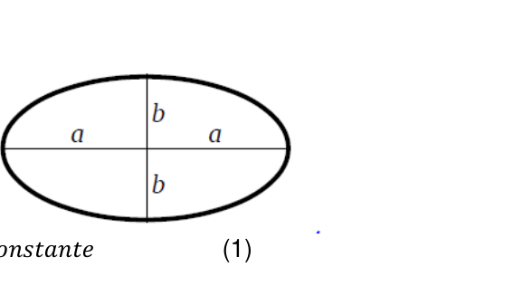
Topic: Gravitation Metodi: Kepler’s Laws, Conservation Laws Competenze: Physical Reasoning, Mathematical Modeling Objects: Planet, Star Fonte: Testo (PDF) — p.116
Kepler e il sistema planetario
PT60. Scuola superiore di commercio Carlos Pellegrini Città autonoma di Buenos Aires.
Kepler e il sistema planetario L’eliocentrismo, dalla mano della pubblicazione Il lavoro di Copernico De reuolutionibus Orbium coelestium (1543), fu il primo modello dell’universo in cui si riteneva che intorno al sole, gli oggetti celesti girano. E la Terra è una di queste. Questo modello aveva Il vantaggio è che risolve alcuni problemi di la Meccanica Celeste (per ejemplo, la la ritrazione di Marte) in modo molto più semplice che la Perspective geocentrica, sostenuta per quasi due millenni, dai pensatori della Grecia classica.
Tuttavia, non fu fino al secolo successivo che Kepler, nella sua Astronomia noua (1609), La maledizione di Platone è stata infranta. che, per l’ordine che doveva governare l’universo, le orbite dei corpi celesti non erano Potrebbero essere qualcosa di più che cerchi perfetti. Infatti, dopo anni di studio, Le misure astronomiche effettuate dal suo direttore Brahe, Kepler ha dichiarato le sue leggi del movimento planetario. La prima legge afferma: i pianeti fanno orbite elliptiche, con il sole in uno dei suoi foci.
Per capire questo, dobbiamo studiare cosa si chiama ellipse: per definizione, è il luogo. geometrica dei punti, come la somma delle loro distanze a due punti fissi, chiamati foco, è costante.
OAF 2019- 57
𝑑1 + 𝑑2 𝑑1 ′ + 𝑑2 ′ = costante
(1)
Operativamente, un filo può essere fissato in due punti scelti in anticipo (foci) con due dita e stringere il filo con una penna. La figura che traccia la lapisetta è una l’ellisse. Un’ellipse può anche essere definita in termini di distanza massima e minima al centro, chiamate semiezza maggiore a e semiezza minore b, rispettivamente. La sua forma è caratterizzata da un parametro chiamato eccentricità, pari al coefficiente tra la distanza dal centro ai foci e a. a) Una circonferenza è un caso particolare di un’ellipse. In quel caso, dire che Il rapporto tra le semie, il rapporto tra le posizioni dei foci. e quale nome ha la costante d1 + d2 dell’equazione (1). Quanto vale il suo? eccentricità? b) Sapendo che ogni elipso è simmetrica rispetto agli assi maggiori e minore, trovare un rapporto generale tra la costante d1 + d2 e le semie a y b.
La prima legge di Kepler implica che la distanza dalla Terra al Sole non è necessariamente sempre la stessa. La distanza varia infatti tra un minimo di 147,1×106 km (perihelio) e un massimo di 152,1× 106 km (afelio). c) Quanto vale la semiezza maggiore dell’orbita terrestre? d) Qual è la distanza tra il Sole e il centro dell’orbita? Calcolare l’escentricità di questa. e) Quanto vale il semicilogramma minore?
La seconda legge di Kepler stabilisce che il vettore che va dal Sole al pianeta spazza le aree. uguali in uguali tempi:
∆𝐴 ∆𝑡= 𝐾
Una conseguenza immediata è che il pianeta non si muove necessariamente con la la stessa velocità in diversi punti dell’orbita. f) Sapendo che l’area di un’ellipse completa è π ab, trovare il valore di K per la Orbita terrestre. g) Estimare: quali velocità orbitali (in km/s) ha la Terra nel perihelio e in l’affelio?
La terza legge collega le orbite di diversi pianeti dello stesso sistema solare con le loro orbite. periodo di rivoluzione T: 𝑎3 T2 = costante h) Estimare il raggio di orbita di Mercurio sapendo che il suo anno dura 88 giorni e che il suo La durata dell’anno su Nettuno sapendo che il semestre maggiore della sua orbita misura 4,5×109 km.
58 - OAF 2019
Topic: Gravitation Metodi: Kepler’s Laws, Conservation Laws Competenze: Physical Reasoning, Mathematical Modeling Objects: Planet, Star Fonte: Testo (PDF) — p.116
Kepler and the planetary system
PT60. The Carlos Pellegrini School of Commerce The Autonomous City of Buenos Aires.
Kepler and the planetary system . The heliocentrism of the publication. The Commission has also adopted a proposal for a directive on the protection of workers’ rights. Orbium coelestium (1543), was the first model The universe in which it was thought that The objects of the sky were rotating around the sun. And the Earth is one of them. This model had The advantage of solving certain problems of la Mechanics The sky is the sky. (for For example, la The Earth’s orbit is retrograde from Mars. It ‘s simple . That la The perspective geocentric, It has been held for almost two millennia, since the thinkers of classical Greece.
However, it was not until the following century that Kepler, in his Astronomia noua (1609), The so-called “curse of Plato” broke: until then, it had been taken for granted. That, by the order that the universe should govern, the orbits of the celestial bodies were not They could be anything but perfect circles. In fact, after years of studying the Astronomical measurements made by its director Brahe, Kepler stated his laws of the universe. planetary movement. The first law states: Planets orbit elliptically. with the sun in one of its foci.
To understand this, we have to study what is called an ellipse: by definition, it’s the place. geometrical points such as the sum of their distances to two fixed points, called The focus is constant.
The Commission shall adopt implementing acts in accordance with Article 21 of this Regulation.
𝑑1 + 𝑑2 𝑑1 ′ + 𝑑2 The value of the underlying asset shall be the sum of the underlying asset’s assets.
(1)
Operatively, a thread can be fixed at two points chosen in advance (the focuses). With two fingers and tightening the thread with a pencil. The figure that the pencil is drawing is a The ellipse. An ellipse can also be defined in terms of the maximum and minimum distance to the centre, called major semicircle a and minor semicircle b, respectively. His form is characterized by a parameter called eccentricity, equal to the ratio between the distance From the center to the focus and a. (a) A circumference is a particular case of an ellipse. In that case, say what? What is the relationship between the semicircles, what is the relationship between the positions of the focuses? and what is the name given to the constant d1 + d2 of the equation (1). How much is his worth? What, eccentricity? (b) Knowing that any ellipse is symmetrical with respect to the major axes and Minor, find a general relationship between the constant d1 + d2 and the semioids a y b.
Kepler’s first law implies that the distance from the Earth to the Sun is not necessarily Always the same. The distance varies between a minimum of 147,1×106 km (perihelium) and a maximum of 152,1× 106 km (aphylum). (c) What is the value of the Earth’s largest half-orbit? (d) What is the distance between the Sun and the center of its orbit? Calculate the eccentricity of this one. (e) How much is the minor semicircle?
Kepler ‘s second law states that the vector that travels from the Sun to the planet barries areas . equal at equal times:
∆𝐴 ∆𝑡= 𝐾
An immediate consequence is that the planet does not necessarily move with the Earth. the same speed at different points in the orbit. (f) Knowing that the area of a complete ellipse is π ab, find the value of K for the Earth orbit. (g) Estimate: what orbital velocities (in km/s) the Earth has in perihelion and in the appendix?
The third law relates the orbits of different planets in the same solar system to their own. The period of revolution T: 𝑎3 T2 = constant (h) Estimate the radius of Mercury’s orbit knowing that its year lasts 88 days and the The length of the year on Neptune knowing that the greatest half-life of its orbit is measured 4,5×109 km.
The following points shall be added:
Topic: Gravitation Metodi: Kepler’s Laws, Conservation Laws Competenze: Physical Reasoning, Mathematical Modeling Objects: Planet, Star Fonte: Testo (PDF) — p.116
El analema
PT61. Escuela ORT - Sede Almagro Ciudad Autónoma de Buenos Aires.
El analema Un analema es un dibujo que se forma en el cielo si se decide sacarle una fotografía al sol todos los días a la misma hora desde un mismo lugar durante un año. La figura ilustra esta curva en el patio de una escuela. Juli, estudiante de dicha escuela, decidió representar esto de otra manera: puso un espejo en una columna en el patio de su colegio apuntando perfectamente al norte y con su normal paralela al piso. Luego, inclinó el espejo 25º al oeste. A las 13hs ella observaría la imagen del sol sobre una pared a un metro de la columna, pared orientada de norte a sur dando su superficie al este, y pintaría sobre ese reflejo el contorno de la forma del sol. Esto lo repetiría una vez por semana todo el año. Antes de eso, Juli debía saber las dimensiones que tenía que tener la pared. ¿Entraría toda la analema en su pared? Para contestar esto, chequeó las fechas donde el dibujo alcanzaría sus extremos laterales y verticales con un software astronómico. Registró los siguientes valores: 21/12: 78,5º máxima altitud 21/6: 32º mínima altitud 1/2: 5,5º máxima amplitud en azimut hacia el este 21/11: 20º máxima amplitud en azimut hacia el oeste
a) Calcular el ancho máximo que tendrá la imagen sobre la pared.
b) Para hacer las cuentas un poco más fáciles, Juli considera que la imagen
alcanza su altitud máxima y mínima sobre azimut 0º. Usando la consideración de
Juli, calcular la altura de la imagen sobre la pared.
c) Joaquín intentará hacer lo mismo en su colegio, pero él quiere hacer que la
imagen le quede en la pared interna del gimnasio donde hace Educación Física.
Para eso hará lo mismo que Juli pero la luz deberá pasar por una ventana que
no puede mantener abierta todo el año, sobre todo en invierno. Decide entonces
hacer el cálculo de corrección que implica que la luz pase por un medio con
índice de refracción 1,33 y tener la ventana cerrada siempre. El vidrio tiene 5cm
de espesor y está a 25cm del espejo. Considerando que toda la luz del dibujo
pasa por la ventana (es una ventana lo suficientemente grande), calcular las
nuevas dimensiones que tendrá la imagen de la analema sobre de la pared
interna del gimnasio.
Topic: Geometric Optics Metodi: Snell’s Law, Ray Tracing Competenze: Physical Reasoning, Mathematical Modeling Objects: Mirror Fonte: Testo (PDF) — p.116
L’analema
PT61. Scuola ORT - Sede Almagro Città autonoma di Buenos Aires.
L’analema Un analema è un disegno che si forma nel cielo se si Decide di scattare una foto al sole ogni giorno alla stessa. Ora da un unico posto per un anno. La figura illustra questa curva nel cortile di una scuola. Juli, studente di quella scuola, ha deciso di rappresentare questo di In un altro modo: ha messo uno specchio su una colonna nel cortile di La sua scuola puntando perfettamente verso nord e con il suo normale parallelo al pavimento. Poi ha inclinato il specchio 25° verso ovest. A le Le 13 ore osserverebbe l’immagine del sole su un muro a un metro della colonna, muro orientato da nord a sud dando la sua superficie verso est, e dipingere su quel riflesso il contorno della forma del sole. Lo ripeterei una volta alla settimana.
- l’anno intero. Prima di questo, Juli doveva sapere quali dimensioni aveva. che avere il muro. - Potrebbe entrare tutto l’analema nel suo muro? Per rispondere, ha controllato le date in cui il disegno raggiungerebbe le sue estremità laterali e verticali con un software astronomico. Ha registrato i seguenti valori: 21/12: 78,5° di altitudine massima 21/6: 32° di altitudine minima 1/2: 5,5° di massima larghezza in azimutto verso est 21/11: 20° massima larghezza in azimut verso ovest
a) Calcolare la larghezza massima dell’immagine sul muro. b) Per rendere le conti un po’ più facili, Juli ritiene che l’immagine raggiunge la sua altitudine massima e minima su azimut 0o. Usando la considerazione di Juli, calcola la altezza dell’immagine sul muro. (c) Joaquin cercherà di fare lo stesso a scuola, ma lui vuole farla La sua immagine rimane sul muro interno della palestra dove fa l’educazione fisica. Per questo farà lo stesso che Juli , ma la luce dovrà passare attraverso una finestra che non può essere aperta tutto l’anno, soprattutto in inverno. Decidi allora. Per fare il calcolo di correzione che implica che la luce passa attraverso un mezzo con 1,33 e avere la finestra chiusa sempre. Il vetro è di 5 cm spessa e a 25 cm dal specchio. Considerando che tutta la luce del disegno passa attraverso la finestra (è una finestra abbastanza grande), calcola le nuove dimensioni che avranno l’immagine dell’analema sul muro interno della palestra.
Topic: Geometric Optics Metodi: Snell’s Law, Ray Tracing Competenze: Physical Reasoning, Mathematical Modeling Objects: Mirror Fonte: Testo (PDF) — p.116
The following table shows the results of the analysis:
PT61. School ORT - Headquarters Almagro The Autonomous City of Buenos Aires.
The analemma . An analemma is a drawing that forms in the sky if you She decides to take a picture of him in the sun every day at the same time. hour from one place for a year. The figure illustrates This curve in a school yard. Juli, a student at that school, decided to represent this from Another way: he put a mirror on a column in the yard of Your school is perfectly north-pointed and normal . parallel to the floor. Then he tilted the mirror 25 degrees west. The At 13h she would observe the image of the sun on a wall to a The column meter, north-south oriented wall giving its surface to the east, and I would paint on that reflection the contour The shape of the sun. I ‘d repeat this once a week . All year long. Before that, Juli had to know the dimensions she had. I’m not a wall. Would you put the whole anecdote on his wall? To answer this, he checked the dates where the drawing was made. It would reach its lateral and vertical ends with a astronomical software. He recorded the following values: 21/12: 78.5o maximum altitude 21/6: 32° minimum altitude 1/2: 5.5° maximum width in azimuth to the east 21/11: 20th maximum width in azimuth to the west
(a) Calculate the maximum width of the image on the wall. (b) To make the calculations a little easier, Juli considers that the image It reaches its maximum and minimum altitude above azimut 0o. Using the consideration of Juli, calculate the height of the image on the wall. (c) Joaquin will try to do the same thing at his school, but he wants to make her The image will be on the inside wall of the gym where he does physical education. For that he will do the same as Juli but the light will have to pass through a window that It can’t keep open all year, especially in the winter. You decide then . to make the correction calculation that involves light passing through a medium with 1.33 refractive index and always have the window closed. The glass is 5cm. It’s thick and it’s 25cm from the mirror. Considering that all the light in the drawing It goes through the window (it’s a window big enough), calculate the New dimensions will have the image of the analemma on the wall inside the gym.
Topic: Geometric Optics Metodi: Snell’s Law, Ray Tracing Competenze: Physical Reasoning, Mathematical Modeling Objects: Mirror Fonte: Testo (PDF) — p.116
El historico experimento de Millikan
PT62. Escuela ORT - Sede Almagro Ciudad Autónoma de Buenos Aires.
El histórico experimento de Millikan En 1911 Harvey Fletcher y Robert Millikan llevan adelante un ingenioso experimento para determinar la unidad de carga atómica, lo que hoy llamamos carga de un electrón. El experimento consistía en lo siguiente. Se esparcían con un rociador unas gotas de un aceite de densidad conocida. Las gotas que tuvieran velocidad vertical pasarían por un pequeño orificio que las filtraría, como se muestra en la figura. Del otro lado las esperaría una habitación de altura
OAF 2019- 59
d donde la pared superior e inferior, paralelas, podían cargarse con cierto potencial V
para generar un campo eléctrico que ionice a las gotas de aceite. Si el campo era lo
suficientemente intenso, podría vencer tanto a la fuerza de fricción como al peso,
elevando a las gotas.
Luego de prender y apagar el campo hasta dejar caer las gotas que no se ionicen, con un
ocular óptico se mide la cinemática de la o las gotas de interés. Lo que lograrían
demostrar es que todas las cargas obtenidas para una enorme cantidad de gotas
ensayadas son un múltiplo de una cantidad e, dando un valor con un error menor al 1%
adquiriendo un gran prestigio, aunque no estuvo libre de críticas y polémicas varias.
El viejo Manuel encuentra, fascinado, uno de los cuadernos utilizados en la realización de
dicho experimento en un museo en Francia. Recuerda aún su juventud cuando le dieron
el premio Nobel a Millikan y no puede ocultar su entusiasmo. Empieza a tomar nota de lo
que allí se registra para luego en su casa reproducir las cuentas.
a) Según registros del cuaderno de laboratorio de Fletcher, se observó una gota caer con velocidad crítica constante de 2cm/s con el campo apagado. Determinar el radio de la gota observada, considerándola esférica. b) En el mismo cuaderno hay varios valores de carga diferentes para gotas de ese mismo radio. Uno de esos valores fue de 6.10-6C. Lo que se ve un poco borroneado es el valor de la tensión utilizada. ¿De cuánto habrá sido para obtener ese valor, si la separación entre las placas indica que es de 50cm? c) La razón por la cual estaba borroneado es porque lo consideraron un método poco preciso. Lo aclara más abajo en el cuaderno. Al parecer, resulta mejor pasarse con el campo hasta alcanzar una velocidad crítica hacia arriba. Calcular dicha velocidad si para alcanzar ese régimen se necesitó multiplicar por 10 la tensión anterior.
Datos Densidad del aceite = 0,919g/cm3
densidad del aire = 0,00129g/cm3
viscosidad del aire = 1,8 .10-5Ns/m2 (a 20ºC)
g = 9,81 m/s2.
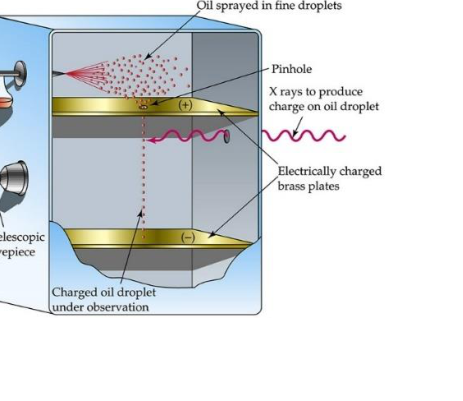
Topic: Electrostatics, Fluid Mechanics Metodi: Free-Body Diagram, Hydrostatic Equilibrium, Coulomb’s Law Competenze: Physical Reasoning, Mathematical Modeling Objects: Droplet, Capacitor Fonte: Testo (PDF) — p.116
Il storico esperimento di Millikan
PT62. Scuola ORT - Sede Almagro Città autonoma di Buenos Aires.
L’ storico esperimento di Millikan Nel 1911 Harvey Fletcher e Robert Millikan conducevano Facciamo un esperimento ingegnoso per determinare l’unità di carica atomica, che oggi chiamiamo carica di un elettrone. L’esperimento consisteva nel
- E’ il prossimo. Si spaziano con un spruzzatore , qualche goccia . di un olio di densità nota. Le gocce che Se avessero una velocità verticale passerebbero per un piccolo un orizzonte che li filtrerebbe, come si vede nella figura. Dall’altra parte vi aspetterebbe una stanza alta .
OAF 2019- 59 d dove il muro superiore e inferiore, paralleli, potevano essere caricati con un certo potenziale V per generare un campo elettrico che ionizza le gocce di olio. Se il campo fosse il abbastanza intenso, potrebbe superare sia la forza di attrito che il peso, alzando le gocce. Dopo aver acceso e spento il campo fino a far cadere le gocce non ionizzanti, con un L’oculare ottico misura la kinematica di un’ozione di interesse. Cosa avrebbero fatto ? dimostrare è che tutti i carichi ottenuti per un enorme quantità di gocce I test sono un multiple di un numero e, dando un valore con un errore inferiore all’1% acquisendo un grande prestigio, anche se non è stato libero da varie critiche e polemiche. Il vecchio Manuel trova, affascinato, uno dei manuali utilizzati per realizzare l’esperimento in un museo in Francia. Ricorda ancora la sua giovinezza quando gli furono date . Il premio Nobel a Millikan e non può nascondere il suo entusiasmo. Comincia a prendere nota di cosa . che lì si registra per poi nella sua casa riprodurre i conti.
a) Secondo i registri del libretto di Fletcher, si è osservato un goccio. cadere a velocità critica costante di 2 cm/s con il campo spento. Determinare il raggio della goccia osservata, considerandola sferica. b) Nella stessa libreria ci sono diversi valori di carico diversi per le gocce di tale libreria.
- La stessa radio. Uno di questi valori era di 6.10-6C. - Cosa si vede un po ’ il valore della tensione utilizzata. Quanto tempo ci sarebbe stato per? per ottenere quel valore, se la distanza tra le placche indica che è di 50 cm? c) Il motivo per cui era insolito è che lo consideravano un metodo. poco preciso. Lo chiarisci più in basso nel libretto. Sembra che sia meglio. passare con il campo fino a raggiungere una velocità critica verso l’alto. Calcolare La velocità di raggiungimento di tale regime è stata moltiplicata per 10 tensione precedente.
Datos Densità dell’olio = 0,919g/cm3
densità dell’aria = 0,00129g/cm3 viscosità dell’aria = 1,8 .10-5Ns/m2 (a 20oC) g = 9,81 m/s2.
Topic: Electrostatics, Fluid Mechanics Metodi: Free-Body Diagram, Hydrostatic Equilibrium, Coulomb’s Law Competenze: Physical Reasoning, Mathematical Modeling Objects: Droplet, Capacitor Fonte: Testo (PDF) — p.116
The historic Millikan experiment
PT62. School ORT - Headquarters Almagro The Autonomous City of Buenos Aires.
Millikan’s historic experiment In 1911 Harvey Fletcher and Robert Millikan led the Let ‘s do a clever experiment to determine The atomic charge unit, what we call today. charge of an electron. The experiment consisted of Next up. They sprayed a few drops with a sprayer . of a known density oil. The drops that If they had vertical speed they would go through a small one. The resulting hole would filter them, as shown in the figure. On the other side , a high-rise room would be waiting for you .
The Commission shall adopt implementing acts in accordance with Article 21 of this Regulation. d where the upper and lower parallel walls could be loaded with a certain potential V to generate an electric field that ionizes the oil droplets. If the field was the one Intense enough, it could overcome both the friction force and the weight. Raising the drops. After turning the field on and off until the droplets drop that don’t ionize, with a The kinematics of the interest drops is measured. What they ‘d accomplish . To prove is that all the loads obtained for a huge amount of drops Tests are multiples of a quantity e, giving a value with an error less than 1%. He was a highly respected figure, although he was not free from criticism and controversy. The old manual finds, fascinated, one of the notebooks used in the making of I’ve been doing this experiment at a museum in France. He still remembers his youth when he was given it . Millikan has won the Nobel Prize and he can’t hide his enthusiasm. He starts to take note of it . He’s registered there for later at his house to play the accounts.
(a) According to records from Fletcher’s lab notebook, a drop was observed. falling at a constant critical speed of 2cm/s with the field off. Determine the radius of the observed droplet, considering it spherical. (b) In the same notebook there are several different load values for drops of that notebook. The same radio. One of those values was 6.10-6C. What you see a little bit The value of the voltage used is the borne value. How long has it been for? To get that value, if the separation between the plates indicates it’s 50cm? c) The reason it was blurred is because they considered it a method It’s not very accurate. Clear it down in the notebook. It seems to be better. to move the field upwards until it reaches a critical speed. Calculate This is the same speed if the speed of the previous stress.
Data from the report The oil density is 0,919 g/cm3
The following conditions shall apply: The air viscosity is equal to 1,8 .10-5Ns/m2 (at 20oC). g = 9,81 m/s2.
Topic: Electrostatics, Fluid Mechanics Metodi: Free-Body Diagram, Hydrostatic Equilibrium, Coulomb’s Law Competenze: Physical Reasoning, Mathematical Modeling Objects: Droplet, Capacitor Fonte: Testo (PDF) — p.116
Satelites en orbita
PT63. Escuela ORT - Sede Almagro Ciudad Autónoma de Buenos Aires.
Satélites en órbita Salomón es cocinero, artista plástico, bailarín de hip-hop e ingeniero. Trabaja en una empresa de satélites y está participando en el planeamiento de los próximos dos que desean lanzar, muy asociados a estudios sobre la luna, nuestro satélite natural.
a) Sabiendo que la luna da una vuelta alrededor de la Tierra en 27 días, calcular la distancia a la que está la luna del centro de la Tierra. b) El primer satélite será colocado a una distancia 10 veces menor a la distancia de acá a la luna, y tendrá una órbita coplanar con ésta. ¿Cuánto tardará en cumplir una vuelta alrededor de la Tierra? ¿Qué velocidad tangencial debe alcanzar? c) El segundo necesita estar alineado a la luna y al primer satélite, de manera tal de tener la misma posición angular cada vez que coinciden las de los otros dos satélites. Calcular al menos una frecuencia a la que debe girar este último satélite y la órbita en la que debe girar para cumplir su cometido.
Datos G = 6,67. 10-11Nm2/kg2
Masa de la Tierra = 5,97. 1024kg. Tener en cuenta que, pese a estudiar nuestro satélite y a bailar hip-hop, a Salomón no le sale el ‘paso de la Luna’.
60 - OAF 2019
Topic: Gravitation Metodi: Newton’s Law of Gravitation, Kepler’s Laws Competenze: Physical Reasoning, Mathematical Modeling Objects: Satellite, Planet Fonte: Testo (PDF) — p.116
Satelliti in orbita
PT63. Scuola ORT - Sede Almagro Città autonoma di Buenos Aires.
Sateliti in orbita Solomon è un cuoco, artista plastico, ballerino di hip-hop e ingegnere. Lavora in una l’azienda di satelliti e sta partecipando alla pianificazione dei prossimi due che Vogliono lanciare, molto associati agli studi sulla luna, il nostro satellite naturale.
a) Sapendo che la luna gira intorno alla Terra in 27 giorni, calcolare il La distanza che la luna ha dal centro della Terra. b) Il primo satellite sarà posto a una distanza 10 volte inferiore a qui alla luna, e avrà un’orbita che coprenderà con questa. Quanto tempo ci vorrà per rispettare un giro attorno alla Terra? Che velocità tangenziale deve raggiungere? c) Il secondo deve essere allineato alla luna e al primo satellite in modo tale di avere la stessa posizione angolare ogni volta che coincidono quelle degli altri due satelliti. Calcolare almeno una frequenza a cui deve girare l’ultimo Il satellite e l’orbita in cui deve orbitare per svolgere il suo compito.
Datos G = 6,67. 10-11Nm2/kg2
La massa della Terra è 5,97. 1024kg. Tenere presente che, nonostante studi il nostro satellite e ballare hip-hop, Solomon non ha E’ il passaggio della luna.
60 - OAF 2019
Topic: Gravitation Metodi: Newton’s Law of Gravitation, Kepler’s Laws Competenze: Physical Reasoning, Mathematical Modeling Objects: Satellite, Planet Fonte: Testo (PDF) — p.116
The following shall be added to the list of satellites:
PT63. School ORT - Headquarters Almagro The Autonomous City of Buenos Aires.
Satellites in orbit Solomon is a cook, a plastic artist, a hip-hop dancer and an engineer. He works at a satellite company and is involved in planning the next two that They want to launch, very closely associated with studies on the moon, our natural satellite.
(a) Knowing that the moon orbits the Earth in 27 days, calculate the The distance the moon is from the center of the Earth. (b) The first satellite shall be placed at a distance 10 times less than Here to the moon, and it will have a orbit that will coincide with this one. How long will it take to fulfill A spin around the Earth? What tangential velocity should it reach? (c) The second one needs to be aligned with the moon and the first satellite in such a way that of having the same angular position each time the other two match. Satellites are on the ground. Calculate at least one frequency at which the latter must rotate satellite and the orbit in which it must orbit to perform its task.
Data from the report G = 6,67. 10-11Nm2/kg2
The mass of the Earth is 5.97. 1024kg. Keep in mind that despite studying our satellite and dancing hip-hop, Solomon didn’t. The moon passes.
The following points shall be added:
Topic: Gravitation Metodi: Newton’s Law of Gravitation, Kepler’s Laws Competenze: Physical Reasoning, Mathematical Modeling Objects: Satellite, Planet Fonte: Testo (PDF) — p.116
PT64. IPETAyM N° 65 Juan Antonio de Mena Vicuña Mackenna, Córdoba.
Tres alumnos, Carlos, Juan y Damián, se encontraban una tarde, en el laboratorio de
ciencias naturales de la escuela, practicando para un examen de química. Durante el
estudio, dos alumnos dicen que si mezclan los reactivos líquidos A y B, no se forma una
nueva sustancia C. Pero Juan dice lo contrario que de la mezcla de A y B, se forma una
nueva sustancia C, distinta A y B. Para demostrarlo, Juan propone realizar el experimento
y luego medir algunas propiedades de la nueva sustancia C, para corroborarlo.
Juan midió 15 ml de la sustancia C formada durante el experimento y utilizando la
balanza analítica obtuvo una masa de 14,3 gr.
Carlos, les propone a los demás que también se podría ensayar la sustancia C, arrojando
un cuerpo de masa conocida y medir el líquido desplazado. Para ello utilizo una probeta
para medir el cambio de nivel que fue de 2 cm3, cuando se le arrojo una pelota de goma
de 5 gr.
Por último, Damián, propone su idea para identificar a esta “extraña” sustancia C,
utilizando un calorímetro y así poder medir el calor especifico de C. En el calorímetro
puso 165 gr de la sustancia C que se encontraba a 23,4°C, por otro lado calentó en un
baño de agua un trozo de aluminio de 17 gr hasta 100°C, finalmente arrojo le trozo de
aluminio dentro del calorímetro y midió la temperatura de equilibrio del sistema resultando
26°C, sabiendo que el Ce (Al) = 0,251 Cal/gr. °C.
a) Indique la densidad (ρ) de la sustancia C.
b) Calcular el empuje (E) recibido por la pelota de goma cuando esta fue sumergida
en la sustancia C.
c) Suponga que Carlos mide el empuje con los líquidos A y B, utilizando la misma
pelota de goma. Si la sustancia C es una nueva sustancia. ¿Los empujes
medidos serán idénticos o diferentes para cada sustancia? ¿Es acertada la idea
de Carlos de medir los empujes y compararlos? ¿Por qué?
d) ¿Cómo es la conducción del calor dentro del calorímetro, desde la sustancia C al
aluminio o viceversa? ¿Por qué?
e) Calcular el calor específico (Ce) de la sustancia C.
Topic: Thermodynamics, Fluid Mechanics Metodi: First Law of Thermodynamics, Hydrostatic Equilibrium Competenze: Physical Reasoning, Mathematical Modeling Objects: Calorimeter, Ball Fonte: Testo (PDF) — p.116
PT64. IMPETIMENTO N° 65 Giovanni Antonio di Mena Vicina Mackenna, Cordoba.
Tre studenti, Carlos, Juan e Damián, si trovavano un pomeriggio nel laboratorio di scienze naturali della scuola, praticando per un esame di chimica. Durante il Due studenti dicono che se mescolano i reagenti liquidi A e B, non si forma una nuova sostanza C. Ma Giovanni dice il contrario che dal misto di A e B, si forma una nuova sostanza C, diversa da A e B. Per dimostrarlo, Juan propone di fare l’esperimento. E poi misurare alcune proprietà della nuova sostanza C, per corroborarla. Juan ha misurato 15 ml di sostanza C formata durante l’ esperimento e utilizzando il Sbalzo analitico ottenuto una massa di 14,3 gr. Carlos, propone agli altri che si possa anche provare la sostanza C, gettando un corpo di massa conosciuto e misurare il liquido spostato. Per questo uso una prova. per misurare il cambiamento di livello che è stato di 2 cm3, quando è stato lanciato una palla di gomma de 5 gr. Infine, Damián propone la sua idea per identificare questa strana sostanza C, utilizzando un caloriometro per poter misurare il calore specifico di C. Il calometro ha messo 165 gr di sostanza C che si trovava a 23,4°C, invece ha riscaldato in un Bagno d’acqua un pezzo di alluminio di 17 gr fino a 100°C, infine lancio il pezzo di alluminio all’interno del caloriometro e misurò la temperatura di equilibrio del sistema risultante 26°C, sapendo che il Ce (Al) = 0,251 Cal/gr. °C. a) Indicare la densità (ρ) della sostanza C. b) Calcolare la spinta (E) ricevuta dalla palla di gomma quando è stata immersa in sostanza C. c) Supponiamo che Carlos misura la spinta con i liquidi A e B, usando la stessa una palla di gomma. Se la sostanza C è una sostanza nuova. - Li spingi? le misure saranno identiche o diverse per ogni sostanza? È la giusta idea? di Carlos di misurare le spinte e di confrontarle? - Perché? (d) Come è la conduzione del calore all’interno del caloriometro, dalla sostanza C alla sostanza alluminio o viceversa? - Perché? e) Calcolare il calore specifico (Ce) della sostanza C.
Topic: Thermodynamics, Fluid Mechanics Metodi: First Law of Thermodynamics, Hydrostatic Equilibrium Competenze: Physical Reasoning, Mathematical Modeling Objects: Calorimeter, Ball Fonte: Testo (PDF) — p.116
PT64. The Commission has also adopted a number of proposals for a new directive on the protection of workers’ rights. Vicina Mackenna, from Cordoba.
Three students, Carlos, Juan and Damián, were in the lab one afternoon. school natural sciences, practicing for a chemistry exam. During the Two students say that if you mix liquid reagents A and B, you don’t form a new substance C. But John says the opposite. From the blending of A and B, it forms a. new substance C, other than A and B. To prove it, Juan proposes to conduct the experiment. And then we measure some of the properties of the new substance C, to corroborate it. Juan measured 15 ml of substance C formed during the experiment and using the analytical balance obtained a mass of 14.3 grams. Carlos, you propose to the others that you could also test substance C, throwing A known mass body and measuring the displaced liquid. I use a proof for that. To measure the change in level that was 2 cm3 when a rubber ball was thrown at it. de 5 gr. Finally, Damian proposes his idea to identify this strange substance C, using a thermometer and thus being able to measure the specific heat of C. In the thermometer Heated 165 g of the substance C to 23,4°C, heated in a water bath a piece of aluminium of 17 gr to 100°C, finally cast the piece of Aluminum inside the thermometer and measured the system equilibrium temperature resulting in 26°C, knowing that the Ce (Al) = 0,251 Cal/gr. °C. (a) Indicate the density (ρ) of substance C. (b) Calculate the thrust (E) received by the rubber ball when it was submerged in substance C. (c) Suppose that Carlos measures the thrust with liquids A and B, using the same It’s a rubber ball. If substance C is a new substance. You push them. Are the measurements identical or different for each substance? Is the idea right? of Carlos measuring the thrust and comparing it? - Why? - I don’t know. (d) What is the heat conduction within the calorimeter, from substance C to aluminum or vice versa? - Why? - I don’t know. (e) Calculate the specific heat (Ce) of substance C.
Topic: Thermodynamics, Fluid Mechanics Metodi: First Law of Thermodynamics, Hydrostatic Equilibrium Competenze: Physical Reasoning, Mathematical Modeling Objects: Calorimeter, Ball Fonte: Testo (PDF) — p.116
PT65. IPETAyM N° 65 Juan Antonio de Mena Vicuña Mackenna, Córdoba.
Los mismos chicos del problema anterior se encuentran en el taller de la escuela, intentando mover una caja de madera (la caja vacía tiene una masa de 20 Kg) que contiene seis recipientes de dióxido de carbono (gaseoso) de 15 Kg cada uno. La caja resbala por un piso de cemento, los alumnos buscaron el coeficiente de rozamiento (µ) entre madera y cemento en un libro de física de la biblioteca y encontraron que era de 0,78. Ellos ataron una cuerda a la caja para que sea más fácil de moverla por el taller, pero de nuevo se preguntan: ¿Cuándo tendrán que hacer menos trabajo para correr la caja una distancia de 10 m? Sabiendo que ellos tiraron de la cuerda con una fuerza de 140N, dos alumnos tiraron de la cuerda con un ángulo α = 0° y el otro con un ángulo α = 30°. a) Realice los diagramas de cuerpo libre para la caja, en ambas situaciones. b) Encuentre los valores del peso, normal y fuerza de rozamiento para la caja cuando contiene los seis recipientes. c) ¿Cuándo se realiza menos trabajo mecánico, con un ángulo de 0° o de 30°? Realice las cuentas. Teniendo en cuenta que el peso molecular del dióxido de carbono (CO2) es 44 gr/mol, la temperatura del taller es de 31°C y la presión atmosférica de ese día es 1 atm. Para simplificar el problema tomaremos el comportamiento del dióxido de carbono como un gas inerte.
OAF 2019- 61 d) Calcule el volumen de uno de los recipientes (garrafa) que contiene dióxido de carbono. Datos g = 9,8 m/s2 R = 0,082 atm.L/K.mol
Topic: Newtonian Mechanics, Kinetic Theory Metodi: Free-Body Diagram, Ideal Gas Law, Vector Decomposition Competenze: Physical Reasoning, Mathematical Modeling Objects: Block, String, Gas Fonte: Testo (PDF) — p.116
PT65. IMPETIMENTO N° 65 Giovanni Antonio di Mena Vicina Mackenna, Cordoba.
Gli stessi ragazzi del problema precedente sono nel laboratorio della scuola. tentando di spostare una scatola di legno (la scatola vuota ha una massa di 20 Kg) che contiene sei recipienti di anidride carbonica (gasosa) di 15 Kg ciascuno. La scatola scivola per un pavimento di cemento, gli studenti hanno cercato il coefficiente di Rottura (μ) tra legno e cemento in un libro di fisica della biblioteca e trovati che era di 0,78. Hanno legato una corda alla scatola per rendere più facile spostarla. il laboratorio, ma di nuovo si chiedono: quando dovranno fare meno lavoro per Correre la scatola a una distanza di 10 metri? Sapendo che hanno tirato la corda con una forza di 140N, due studenti hanno tirato la corda con un angolo α = 0° e l’altro con un L’angolo α = 30°. a) Realizzare i diagrammi di corpo libero per la scatola, in entrambe le situazioni. b) Trova i valori di peso, normale e forza di rottura per la scatola quando contiene i sei contenitori. c) Quando si effettua meno lavoro meccanico, con un angolo di 0° o di 30°? Fa i conti. Considerando che il peso molecolare del diossido di carbonio (CO2) è di 44 gr/mol, la La temperatura del laboratorio è 31°C e la pressione atmosferica di quel giorno è di 1 atm. Per Per semplificare il problema, prendiamo il comportamento del CO2 come un esempio. gas inerte.
OAF 2019- 61 d) Calcolare il volume di uno dei contenitori (bottiglia) contenente diossido di carbonio. Datos g = 9,8 m/s2 R = 0,082 atm.L/K.mol
Topic: Newtonian Mechanics, Kinetic Theory Metodi: Free-Body Diagram, Ideal Gas Law, Vector Decomposition Competenze: Physical Reasoning, Mathematical Modeling Objects: Block, String, Gas Fonte: Testo (PDF) — p.116
PT65. The Commission has also adopted a number of proposals for a new directive on the protection of workers’ rights. Vicina Mackenna, from Cordoba.
The same guys from the problem above are in the school workshop, Trying to move a wooden box (the empty box has a mass of 20 kg) that contains six containers of carbon dioxide (gas) of 15 kg each. The box slips through a concrete floor, students searched for the coefficient of The first time I saw a book of physics in the library, I found it. That was 0.78. They tied a rope to the box so it was easier to move it around. The workshop, but again they wonder, when will they have to do less work for Run the box a distance of 10 meters? Knowing they pulled the rope with a force of 140N, two students pulled the rope with an angle α = 0° and the other with a The value of the underlying asset shall be the sum of the following: (a) Make the free-body diagrams for the box, in both situations. (b) Find the weight, normal and force of friction values for the box. when it contains all six containers. (c) When is the least mechanical work done, at an angle of 0° or 30°? Make the numbers. Whereas the molecular weight of carbon dioxide (CO2) is 44 g/mol, the The temperature of the workshop is 31°C and the atmospheric pressure of that day is 1 atm. For To simplify the problem we will take the behavior of carbon dioxide as a Inert gas.
The Commission shall adopt implementing acts in accordance with Article 21 of this Regulation. (d) Calculate the volume of one of the containers (bottle) containing CO2 carbon. Data from the report g = 9,8 m/s2 The following is the list of the following:
Topic: Newtonian Mechanics, Kinetic Theory Metodi: Free-Body Diagram, Ideal Gas Law, Vector Decomposition Competenze: Physical Reasoning, Mathematical Modeling Objects: Block, String, Gas Fonte: Testo (PDF) — p.116
PT66. IPETAyM N° 65 Juan Antonio de Mena Vicuña Mackenna, Córdoba.
Se puede medir una resistencia eléctrica desconocida con un amperímetro y un voltímetro, luego utilizando la ley de Ohm, se obtiene el valor buscado. Pero también existe un método muy original y preciso, mediante el cual, midiendo longitudes, se mide una resistencia eléctrica desconocida. Este artefacto es conocido con el nombre de puente de hilo o puente de Wheatstone, el cual consta de un galvanómetro sensible, un a resistencia conocida y un hilo metálico de sección constante, extendido sobre una regla graduada de un metro (ver figura).
Entonces un alumno quiere saber cuánto mide la resistencia x, (Rx), para luego usarla en un circuito que desea armar para su clase de taller. Se conocen los valores de las demás resistencias que integran el puente de Wheatstone de la figura y son: Ra =3Ω, Rb =4,1Ω y Rs =2,6Ω. Una vez que se averigua el valor de Rx, se arma el siguiente circuito eléctrico (ver figura), que le fue requerido por el maestro de taller.
La batería tiene un voltaje de 12 V, R1 = Rx, R2=5Ω, R3=3,7Ω y R4=7,2Ω, Entonces una vez que el alumno arme el circuito de la figura, utilizando la resistencia que midió anteriormente debe proceder a medir y calcular los siguientes parámetros: a) Encuentre el valor de la resistencia Rx. b) Calcule la resistencia equivalente del circuito eléctrico. c) Calcule la intensidad de corriente (I) que atraviesa el circuito eléctrico. d) Encuentra la diferencia de potencial en los extremos de cada resistencia y el valor de la intensidad de corriente que atraviesa a cada una.
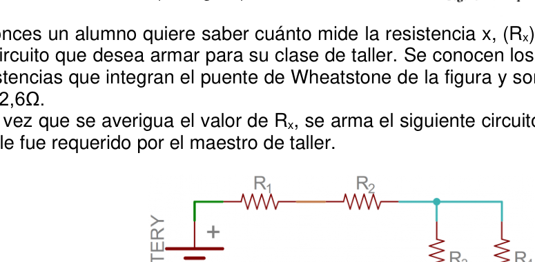
Topic: Circuits Metodi: Equivalent Circuit Reduction, Kirchhoff’s Laws Competenze: Physical Reasoning, Mathematical Modeling Objects: Resistor, Galvanometer, Battery Fonte: Testo (PDF) — p.116
PT66. IMPETIMENTO N° 65 Giovanni Antonio di Mena Vicina Mackenna, Cordoba.
Si può misurare una resistenza elettrica sconosciuta con un ampere e un voltometro, poi usando La legge di Ohm, si ottiene il valore ricercato. Ma… c’è anche un metodo molto originale e preciso, che, misurando le lunghezze, misura una resistenza elettrica sconosciuta. Questo artefatto è nota come ponte di filo o ponte di Wheatstone, che comprende un galvanometro sensibile, una resistenza nota e un filo metallico. di sezione costante, estesa su una regola La formazione professionale è stata completata con un metro di altezza (vedi figura).
Quindi uno studente vuole sapere quanto è grande la resistenza x, (Rx), per poi usarla in un circuito che vorrebbe mettere insieme per la sua classe di studio. Si conoscono i valori degli altri. resistenze che integrano il ponte di Wheatstone della figura e sono: Ra =3Ω, Rb =4,1Ω e Rs =2,6Ω. Una volta che il valore di Rx è stato scoperto, viene armato il seguente circuito elettrico (vedi figura), che è stato richiesto dal maestro del laboratorio.
La batteria ha una volta di 12 V, R1 = Rx, R2 = 5Ω, R3 = 3,7Ω e R4 = 7,2Ω, quindi una Poiché il bambino ha messo in campo il circuito della figura, usando la resistenza che ha misurato. deve precedentemente procedere alla misurazione e calcolo dei seguenti parametri: a) Trova il valore della resistenza Rx. b) Calcolare la resistenza equivalente del circuito elettrico. c) Calcolare l’intensità di corrente (I) che attraversa il circuito elettrico. d) Trova la differenza di potenziale nelle estremità di ciascuna resistenza e il valore dell’intensità di corrente che attraversa ciascuna.
Topic: Circuits Metodi: Equivalent Circuit Reduction, Kirchhoff’s Laws Competenze: Physical Reasoning, Mathematical Modeling Objects: Resistor, Galvanometer, Battery Fonte: Testo (PDF) — p.116
PT66. The Commission has also adopted a number of proposals for a new directive on the protection of workers’ rights. Vicina Mackenna, from Cordoba.
An unknown electrical resistance can be measured. with an amp and a voltmeter, then using Ohm’s law, you get the value you want. But … There is also a very original and precise method. The measurement of the lengths of the lengths is a unknown electrical resistance. This artifact is known as thread bridge or bridge Wheatstone, which consists of a galvanometer Sensitive, a known resistance and a metal thread. of a constant section, extended over a rule Graduated from one metre (see figure).
So a student wants to know how much resistance x, (Rx) is, and then use it in A circuit you want to assemble for your workshop class. You know the values of others. resistors that make up the Wheatstone bridge of the figure and are: Ra =3Ω, Rb =4,1Ω and Rs =2,6Ω. Once the value of Rx is established, the following electrical circuit is set up (see figure), It was requested by the workshop master.
The battery has a voltage of 12 V, R1 = Rx, R2 = 5Ω, R3 = 3,7Ω and R4 = 7,2Ω, so a The student then arrows the circuit of the figure, using the resistance he measured. The following parameters shall be measured and calculated: (a) Find the value of resistance Rx. (b) Calculate the equivalent resistance of the electrical circuit. (c) Calculate the current intensity (I) passing through the electrical circuit. (d) Find the potential difference at the ends of each resistance and the the value of the current intensity passing through each.
Topic: Circuits Metodi: Equivalent Circuit Reduction, Kirchhoff’s Laws Competenze: Physical Reasoning, Mathematical Modeling Objects: Resistor, Galvanometer, Battery Fonte: Testo (PDF) — p.116
PT67. Colegio N° 4-016 Ing. Antonio Marcelo Arboit Junín, Mendoza.
Se tiene una masa m= 2 kg sujeta a una barra (de masa despreciable) fijada al techo (en el extremo opuesto a la masa de 2kg) mediante una bisagra y de longitud desconocida como muestra la figura. Esta masa golpea con un resorte (este resorte flexionara) provocando que el resorte se comprima
62 - OAF 2019 12 cm. Considere que la constante elástica del resorte es de 2000 N/m. i. Determine la energía cinética que se transformó en energía elástica. a) Determine la longitud de la barra si luego de golpear con el resorte la masa se vuelve (es decir cambia de dirección de movimiento) hasta alcanzar una altura máxima respecto a la horizontal de 0,5 metros. b) Determine la velocidad de retorno al momento que invierte su movimiento la masa de 2 kg luego que golpea el resorte. c) Considere ahora que la masa luego de golpear el resorte se queda inmóvil y que el resorte se comprimió 13 cm. Determine la energía cinética perdida.
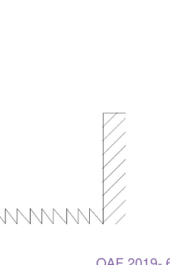
Topic: Conservation of Energy Metodi: Conservation of Energy, Hooke’s Law, Impulse-Momentum Theorem Competenze: Physical Reasoning, Mathematical Modeling Objects: Spring, Rod, Pendulum Fonte: Testo (PDF) — p.116
PT67. La scuola N° 4-016 Ing. Antonio Marcelo Arboit Junín, Mendoza.
Si ha una massa m= 2 kg su una barra (di massa scarsa) fissata al tetto (all’estremità) 2 kg) con un bisaglio e di lunghezza sconosciuta come mostra la figura. Questa massa colpisce con una primavera (questa primavera) flexionara) causando la compressione della primavera
62 - OAF 2019 12 cm. Considera che la costante elastica della sorgente è di 2000 N/m. i. Determina l’energia cinetica trasformata in energia elastica. a) Determina la lunghezza della barra se dopo aver colpito con la spronta la massa è Ritorna (cioè cambia direzione di movimento) fino a raggiungere un’altezza massimo rispetto al orizzonte di 0,5 metri. b) Determina la velocità di ritorno al momento in cui si inverte il movimento massa di 2 kg dopo aver colpito la primavera. c) Considera ora che la massa dopo aver colpito la primavera rimane immobile e che la primavera si è compresa di 13 cm. Determina l’energia cinetica persa.
Topic: Conservation of Energy Metodi: Conservation of Energy, Hooke’s Law, Impulse-Momentum Theorem Competenze: Physical Reasoning, Mathematical Modeling Objects: Spring, Rod, Pendulum Fonte: Testo (PDF) — p.116
PT67. School N° 4-016 Ing. The Commission is not prepared to accept any further amendments. Junín, Mendoza, you know what?
The mass m= 2 kg is attached to a bar (of scornful mass) fixed to the ceiling (at the end 2 kg) by means of a hinge and of unknown length as shown in the figure. This mass hits with a spring (this spring) The spring is compressed.
The Commission shall adopt delegated acts in accordance with Article 21 of this Regulation. 12 cm. Consider that the spring elastic constant is 2000 N/m. i. Determine the kinetic energy that has been transformed into elastic energy. (a) Determine the length of the bar if after hitting the spring the mass is It turns (i.e. changes direction of motion) until it reaches a height maximum with respect to the horizontal of 0,5 metres. (b) Determine the rate of return at the moment when your movement reverses the 2 kg mass after it hits the spring. (c) Consider now that the mass after hitting the spring is left motionless and that The spring was compressed 13 cm. Determine the lost kinetic energy.
Topic: Conservation of Energy Metodi: Conservation of Energy, Hooke’s Law, Impulse-Momentum Theorem Competenze: Physical Reasoning, Mathematical Modeling Objects: Spring, Rod, Pendulum Fonte: Testo (PDF) — p.116
PT68. Colegio N° 4-016 Ing. Antonio Marcelo Arboit Junín, Mendoza.
Un electrón que viaja a una velocidad de v=70x 104 m/s e
ingresa a una región donde actúa un campo magnético de
2 metros de ancho. Considere que el campo magnético es
350 x10-9 T y que tiene la dirección que muestra en la figura.
Calcular a) El radio del movimiento circular que adquiere el electrón al ingresar a la zona de campo magnético. b) Determina la distancia horizontal que se separa de su trayectoria horizontal original, dos segundos después que haya salido de la región magnética.
La masa de un electrón es de 9,1 × 10-31 kg y la carga del electrón es −1,6 × 10−19 C.
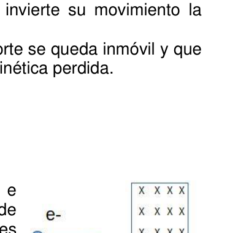
Topic: Magnetism Metodi: Lorentz Force Analysis, Kinematic Equations Competenze: Physical Reasoning, Mathematical Modeling Objects: Electron Fonte: Testo (PDF) — p.116
PT68. La scuola N° 4-016 Ing. Antonio Marcelo Arboit Junín, Mendoza.
Un elettrone che viaggia a velocità di v=70x 104 m/s e entra in una regione in cui un campo magnetico di 2 metri di larghezza. Considera che il campo magnetico è 350 x 10-9 T e che ha l’indirizzo che mostra nella figura.
Calcolare a) Il raggio di movimento circolare che l’elettrone acquista quando entra nella zona di campo magnetico. b) Determina la distanza orizzontale che separa il suo Traccia orizzontale originale, due secondi dopo che è uscito dalla regione magnetica.
La massa di un elettrone è di 9,1 × 10-31 kg e la carica dell’elettrone è di −1,6 × 10−19 C.
Topic: Magnetism Metodi: Lorentz Force Analysis, Kinematic Equations Competenze: Physical Reasoning, Mathematical Modeling Objects: Electron Fonte: Testo (PDF) — p.116
PT68. School N° 4-016 Ing. The Commission is not prepared to accept any further amendments. Junín, Mendoza, you know what?
An electron traveling at a speed of v=70x104 m/s and enters a region where a magnetic field of Two meters wide. Consider that the magnetic field is 350 x 10-9 T and that has the direction shown in the figure.
Calculate (a) The radius of circular motion acquired by the electron entering the magnetic field zone. (b) Determine the horizontal distance from its Original horizontal path, two seconds later. It’s out of the magnetic field.
The mass of an electron is 9,1 × 10-31 kg and the electron charge is −1,6 × 10−19 C.
Topic: Magnetism Metodi: Lorentz Force Analysis, Kinematic Equations Competenze: Physical Reasoning, Mathematical Modeling Objects: Electron Fonte: Testo (PDF) — p.116
PT69. Colegio N° 4-016 Ing. Antonio Marcelo Arboit Junín, Mendoza.
Es común en la actualidad tener dispositivos que funcionan cuando se conectan al puerto USB de la computadora. Suponga que usted tiene un dispositivo con el fin de mantener la temperatura de un mate (con el objetivo de que no tome un mate frío) a una temperatura de 75° C que para usted es la óptima. La configuración del circuito que se observa en la imagen inferior nos muestra una fuente V, una resistencia Rc del puerto y una Rm que es la resistencia del mate.
Determine a) La expresión de la potencia consumida por la resistencia del mate (Rm) en función de las resistencias y en la tensión. b) Suponga que el puerto usb tiene una fuente de 1.5 V, y la resistencia del puerto y del mate es de 100 Ohm (cada una). Calcule la potencia absorbida por la resistencia del mate. c) Considere que tiene un mate que contiene 50 ml de agua y 15 g de yerba (y que despreciaremos cualquier pérdida de calor). Calcular el tiempo que tiene que estar conectado el dispositivo si el mate se enfrío a 60°C y usted quiere alcanzar la temperatura óptima.
Calor específico del agua: 1 cal/g°C Calor específico de la yerba: 0,27 cal/g°C Densidad del agua: 1 g/cm3
OAF 2019- 63
Topic: Circuits, Thermodynamics Metodi: Equivalent Circuit Reduction, First Law of Thermodynamics Competenze: Physical Reasoning, Mathematical Modeling Objects: Resistor, Battery Fonte: Testo (PDF) — p.116
PT69. La scuola N° 4-016 Ing. Antonio Marcelo Arboit Junín, Mendoza.
Oggi è comune avere dispositivi che funzionano quando si collegano al porto USB della computer. Supponiamo che tu abbia un dispositivo. In questo caso, il calore di un mate (con il L’ obiettivo è che non si prenda un mate freddo a una temperatura di 75° C che per te è l’ottimale. La configurazione del circuito osservata in L’immagine di sotto ci mostra una fonte V, una resistenza Rc del porto e un Rm che è la resistenza del mate.
Determina a) Espressione della potenza consumata dalla resistenza del mate (Rm) in funzione delle resistenze e della tensione. b) Supponiamo che il porto USB abbia una fonte di 1.5 V, e la resistenza del porto e Il mate è di 100 Ohm (ogni una). Calcolare la potenza assorbita da resistenza del mate. c) Considera che ha un mate contenente 50 ml di acqua e 15 g di erba (e che
- Non si può fare nulla. Calcolare il tempo che ha da fare essere collegato il dispositivo se il mate si raffredda a 60°C e si vuole raggiungere la temperatura ottimale.
Calore specifico dell’acqua: 1 cal/g°C Calore specifico dell’erba: 0,27 cal/g°C Densità dell’acqua: 1 g/cm3
OAF 2019- 63
Topic: Circuits, Thermodynamics Metodi: Equivalent Circuit Reduction, First Law of Thermodynamics Competenze: Physical Reasoning, Mathematical Modeling Objects: Resistor, Battery Fonte: Testo (PDF) — p.116
PT69. School N° 4-016 Ing. The Commission is not prepared to accept any further amendments. Junín, Mendoza, you know what?
It is common today to have devices that They work when they connect to the USB port of the computer. Suppose you have a device In order to maintain the temperature of a matte (with the The goal is not to take a cold mate at a temperature. of MSK0/> C which for you is optimal. The circuit configuration observed in the The image below shows us a V source, a port resistance Rc and a Rm which is the mate’s resistance.
Determine (a) The expression of the power consumed by the mate’s resistance (Rm) in The function of resistance and voltage. (b) Suppose the USB port has a 1.5 V source, and the port resistance and The matte is 100 ohms (each). Calculate the power absorbed by the resistance of the mate. (c) Consider that you have a mate containing 50 ml of water and 15 g of weed (and that you are not a weed). We will despise any heat loss. Calculate the time it takes be connected if the mat is cooled to 60°C and you want to reach the optimum temperature.
The water specific heat: 1 cal/g°C The specific heat of the grass: 0,27 cal/g°C Density of water: 1 g/cm3
The following information is provided:
Topic: Circuits, Thermodynamics Metodi: Equivalent Circuit Reduction, First Law of Thermodynamics Competenze: Physical Reasoning, Mathematical Modeling Objects: Resistor, Battery Fonte: Testo (PDF) — p.116
Un bit duro de borrar
PT70. Instituto Politécnico Superior General San Martín Rosario, Santa Fe.
Un bit duro de borrar
Es el año 1949. La compañía “Instrumental Bastante Malo SRL” ha estado desarrollando
un computador muy sofisitcado. A través de conmutadores mecánicos han podido
construir compuertas lógicas que permitirían realizar miles de sumas en cuestión de
minutos, pero aún no han resuelto el problema de la memoria. Básicamente, necesitan
codificar información en un sistema binario, guardarla, leerla y borrarla con un gasto de
energía muy bajo. Para resolver este problema, te contratan a tí.
Luego de pensar en diferentes sistemas para implementar, se te ocurre el sistema
esquematizado en la Figura 1. Este consiste en dos depósitos idénticos con fondo
semiesférico de radio , unidos por un borde. Dentro de los depósitos hay una bolita de
radio despreciable que se puede mover de un depósito a otro por acción de las agujas
y . Cuando la bolita está en el depósito de la izquierda, que llamaremos el estado
, se
dice que se tiene un bit de valor 0, mientras que el bit toma el valor 1 en el depósito de la
derecha, o estado
. Aún no has pensado en la forma de leer esta porción de la
memoria, pero se te ocurre que para borrar la información del bit basta con accionar la
aguja para dejar el bit en 0.
Figura 1: Sistema de un bit ideado por tí.
Para poner tu dispositivo a prueba, tiras una bolita en el depósito , y te das cuenta que este bit será muy difícil de borrar porque la superficie de los depósitos es muy lisa y la bolita oscila en el interior del depósito alrededor de una posición de equilibrio. Supón que la bolita está en el estado pero en el instante en que la observas se encuentra formando un ángulo con la vertical. Quieres saber con qué período oscila para encontrar una solución al problema del borrado. Para ello, debes hacer el siguiente razonamiento:
-
Realizar un Diagrama de Cuerpo Libre de la bolita en el punto que se muestra en la Figura 1. Plantear la resultante de fuerzas sobre la bolita en la dirección radial y en la dirección tangencial.
-
Si el ángulo es lo suficientemente pequeño, se puede hacer la aproximación , y la longitud de arco de circunferencia que está recorriendo la bolita es aproximadamente un segmento de longitud . Probar que en ese caso, la aceleración tangencial de la bolita se puede escribir como
-
A partir de la ecuación anterior, determina el período de oscilación de la bolita para ángulos pequeños, sabiendo que el radio de los depósitos es de 5 cm. Otro problema que tienes es que debes buscar la mejor manera de llevar la bolita de un depósito al otro. Si tu bolita está en el estado , al fondo del depósito y originalmente en reposo, a) ¿Con qué velocidad mínima debe salir la bolita para que suba justo hasta la barrera marcada por el punto ? b) En dicho punto queda inestable, por lo que la mínima perturbación hará que la bolita vuelva a caer hacia alguno de los dos depósitos ¿Con qué velocidad
64 - OAF 2019 llegará al fondo? ¿Seguirá siendo válido el resultado al que se arribó en el ítem 3? ¿Por qué? Luego de muchas horas dándole vueltas al asunto, decides que lo mejor es hacer dos depósitos con paredes más rugosas, de manera que apenas la bolita llegue al fondo del depósito al pasar de un estado a otro a través de la barrera , se detenga. a) Supón que la bolita está en el estado y, para borrar el bit, hay que pasarla al estado . ¿Cuál es la mínima velocidad con la que deberá partir la bolita desde el punto más bajo de para atravesar la barrera y llegar al estado con velocidad nula? b) Si la masa de la bolita es de 5 g y el golpe que le da la aguja para adquirir dicha velocidad dura 70 ms, ¿cuál será la magnitud de la fuerza media que le realizará esta última? c) Teniendo en cuenta lo que calculaste anteriormente ¿Cuánta energía, como mínimo, se disipa en el proceso de borrado del bit?
Constantes g=9.8 m/s2
Comentarios finales Este problema está inspirado en un postulado de la física aplicada a la computación llamado el “Principio de Landauer”. Formulado por Rolf Landauer en 1961, postula que al borrar un bit de información siempre se disipará energía (o aumentará la entropía del sistema). Esto quiere decir que, a diferencia de otras operaciones lógicas, el borrado de un bit siempre es un proceso irreversible. Además, existe una cota inferior para la energía disipada en dicha operación, que se puede calcular como , en donde es la constante de Boltzmann y es la temperatura a la que opera la máquina. Este principio es en realidad una ley, dado que ha sido demostrado tanto para bits clásicos como para bits que operan en régimen cuántico, más conocidos como qubits.
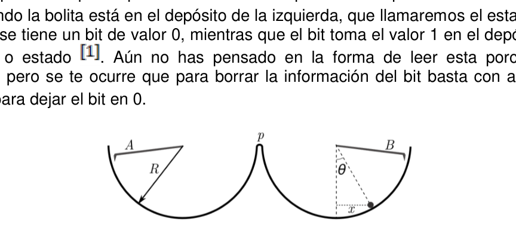
Topic: Oscillations & Waves, Conservation of Energy Metodi: Simple Harmonic Motion Analysis, Conservation of Energy, Small-Angle Approximation Competenze: Physical Reasoning, Mathematical Modeling Objects: Ball Fonte: Testo (PDF) — p.116
Un bit duro da cancellare
PT70. Istituto Politetnico Superiore Generale San Martín Rosario, Santa Fe.
Un po ’ dura da cancellare E’ il 1949. La società Instrumental Bastante Malo SRL sta sviluppando Un computer molto sofisticato. Attraverso i commutatori meccanici hanno potuto costruire porte logiche che consentiranno di realizzare migliaia di somme in questione Minuti, ma non hanno ancora risolto il problema della memoria. Fondamentalmente, hanno bisogno di codificare informazioni in un sistema binario, salvare, leggere e cancellare con un costo di energia molto bassa. Per risolvere questo problema, ti assumono. Dopo aver pensato a diversi sistemi da implementare, ti viene in mente il sistema. Schematizzato in Figura 1. Consiste in due depositi identici di fondo semisferici radio, uniti da un bordo. All’interno dei depositi c’è una bolletta di radio disprezioso che può essere spostato da un deposito all’altro per azione delle aghi y . Quando la pallina è nel deposito a sinistra, chiameremo stato. , se dice che si ha un bit di valore 0, mentre il bit prende il valore 1 nel deposito di destra, o stato . Non hai ancora pensato a come leggere questa porzione della memoria, ma si capisce che per cancellare le informazioni del bit basta agire la Aglio per lasciare il bit a 0.
Figura 1: Sistema a un bit ideato da te.
Per mettere a prova il tuo dispositivo, fai un’iscrizione al deposito. , e ti rendi conto che Questo bit sarà molto difficile da cancellare perché la superficie dei depositi è molto liscia e la la pallina oscilla all’interno del deposito attorno a una posizione di equilibrio. Supponi che La bolletta è in stato. Ma l’ istante in cui la osservi si trova formando un angolo con la verticale. Vuoi sapere con quale periodo oscilla per trovare una soluzione al problema della cancellazione. Per questo, devi fare il seguente: ragionamento:
-
Fare un diagramma del corpo libero della pallina al punto che viene visualizzato in La figura 1 Sosteniamo la forza risultante sulla palla nella direzione radial e nella direzione tangenziale.
-
Se l’angolo è abbastanza piccolo, si può fare l’approssimamento , e la lunghezza di arco di circonferenza che la palla sta percorrendo è circa un segmento di lunghezza . Provare che in questo caso, la Accelerazione tangenziale della pallina può essere scritta come
-
Dalla precedente equazione, determina il periodo di oscillazione della pallina per angoli piccoli, sapendo che il raggio dei depositi è di 5 cm. Un altro problema che hai è che devi trovare il modo migliore per portare il biglietto di un deposito all’altro. Se il tuo biglietto è stato rilasciato , al fondo del deposito e originariamente in riposo, a) A che velocità minima deve uscire la pallina per salire fino a la Barriera segnata dal punto ? b) Si trova instabile a tale punto che la minima perturbazione farà sì che la La pallina cade di nuovo verso uno dei due depositi a che velocità?
64 - OAF 2019
- Arriverà al fondo? Il risultato ottenuto nell’articolo resterà valido? 3? - Perché? Dopo molte ore di riflessione, decidi che è meglio fare due. Con i depositi più rugosi, la pallina arriva appena al fondo del deposito al passare da uno stato all’altro attraverso la barriera, si ferma. a) Supponiamo che la bolletta sia in stato E, per cancellare il bit, bisogna passare al stato . Qual è la velocità minima con cui la pallina deve partire da il punto più basso di Per attraversare la barriera e raggiungere lo stato. con velocità zero? b) Se la massa della pallina è di 5 g e il colpo che la ago le dà per acquisire La velocità di questo tipo dura 70 ms, qual è la grandezza della forza media che lo spinge?
- l’ultima? c) Considerando quanto hai calcolato in precedenza, quanta energia, come minimo, si dissipa nel processo di cancellazione del bit?
Costanti g=9.8 m/s2
Commenti conclusivi Questo problema è ispirato a un postulato della fisica applicata al computer. chiamato il Principio di Landauer. Formulato da Rolf Landauer nel 1961, postula che il cancellare un bit di informazione si dissiperà sempre energia (o aumenterà l’entropia del sistema). Ciò significa che, a differenza di altre operazioni logiche, la cancellazione di un bit è sempre un processo irreversibile. Inoltre, esiste un quota inferiore per l’energia. La differenza tra i prezzi di mercato e i prezzi di mercato è la differenza tra i prezzi di mercato di mercato di mercato e quelli di mercato di mercato. , dove è la La temperatura è la costante di Boltzmann e la temperatura alla quale la macchina opera. Questo principio È in realtà una legge, dato che è stata dimostrata sia per i bit classici che per i bit. bit che operano in regime quantistico, meglio conosciuti come qubits.
Topic: Oscillations & Waves, Conservation of Energy Metodi: Simple Harmonic Motion Analysis, Conservation of Energy, Small-Angle Approximation Competenze: Physical Reasoning, Mathematical Modeling Objects: Ball Fonte: Testo (PDF) — p.116
A bit hard to delete
PT70. The French authorities have already confirmed that the Commission is not interested in the use of the information provided by the Commission. Rosario, Santa Fe.
A hard bit to erase . It’s the year 1949. The company Instrumental Bastante Malo SRL has been developing A very sophisticated computer. Through mechanical switches they have been able to To build logical gates that would allow for thousands of sums in question. minutes, but they haven’t solved the memory problem yet. Basically, they need it. encode information into a binary system, save it, read it and delete it at a cost of Very low energy. To solve this problem, they hire you. After thinking about different systems to implement, you come up with the system. The data is given in Figure 1. This consists of two identical deposits with a bottom radial semispheric, bound by a border. Inside the storage container is a ball of A despicable radio that can be moved from one reservoir to another by the action of needles. y . When the ball is in the left deposit, we’ll call it the state. , se It says you have a bit of value 0, while the bit takes the value 1 in the deposit of the Right, or state . You haven ‘t thought about how to read this portion of the book yet . memory, but you think that to delete the information from the bit you just need to activate the Needle to leave the bit at 0.
Figure 1: One bit system you designed.
To test your device, you throw a ball in the tank. , and you realize that This bit will be very difficult to erase because the surface of the deposits is very smooth and the ball oscillates inside the tank around a position of equilibrium. Suppose that The ticket is in the state. But the moment you look at it , it ‘s there . forming an angle with the vertical. You want to know what period it ranges for ? Find a solution to the erasure problem. For that, you must do the following reasoning:
-
Make a Free Body Diagram of the ball at the point shown in The following is the figure: Expose the resulting forces on the ball in the radial direction. And in the tangential direction.
-
If the angle is small enough, you can make the approximation. , and the length of the arc of circumference that the ball is traveling is approximately one segment of length . Proving that in that case, the The tangential acceleration of the ball can be written as
-
From the above equation, determine the period of oscillation of the ball for small angles, knowing that the radius of the deposits is 5 cm. Another problem you have is you have to find the best way to get a ticket. deposit to the other. If your ticket is in the state , the bottom of the deposit and originally in Rest, (a) What minimum speed must the ball go out to go straight up to the barrier marked by the point ? (b) At this point it becomes unstable, so that the slightest disturbance will cause the ball falls back towards one of the two deposits at what speed?
The Commission shall adopt delegated acts in accordance with Article 21 of this Regulation. Will it go to the bottom? Will the result reached in the item still be valid? 3? - Why? - I don’t know. After many hours of going over the matter, you decide it’s best to do two. deposits with more rugged walls, so that the ball barely reaches the bottom of the Deposit as you move from one state to another through the barrier, stop. (a) Suppose the ticket is in the state. And, to delete the bit, you have to pass it to the State of the Union . What is the minimum speed at which the ball must leave from The lowest point of To cross the barrier and get to the state. with Zero speed? (b) If the mass of the ball is 5 g and the stroke of the needle gives it to acquire The speed of this velocity is 70 ms. What is the magnitude of the mean force that you are going to get? Will you do the latter? (c) Taking into account what you have calculated above, how much energy, such as Minimum, dissipates in the bit erasure process?
Constantly g=9.8 m/s2
The Commission has also adopted a number of proposals. This problem is inspired by a postulate of applied physics to computing. It’s called the Landauer Principle. Formulated by Rolf Landauer in 1961, it posits that the Deleting a bit of information will always dissipate energy (or increase the entropy of the The Commission has already adopted a proposal for a regulation. This means that, unlike other logical operations, the deletion of A bit is always an irreversible process. In addition, there is a lower energy quota The value of the difference between the two values is the sum of the values of the values of the values of the values of the values of the values of the values of the values of the values of the values of the values of the values of the values of the values of the values of the values of the values of the values of the values of the values of the values of the values of the values of the values of the values of the values of the values of the values of the values of the values of the values of the values of the values of the values of the values of the values of the values of the values of the values of the values of the values of the values of the values of the values of the values of the values of the values of the values of the values of the values of the values of the values of the values of the values of the values of the values of the values of the values of the values of the values of the values of the values of the values of the values of the values of the values of the values of the values of the values of the values of the values of the values of the values of the values of the values of the values of the values of the values of the values of the values of the values of the values of the values of the values of the values of the values of the values of the values of the values of the values of the values of the values of the values of the values of the values of the values of the values of the values of the values of the values of the values of the values of the values of the values of the values of the values of the values of the values of the values of the values of the values of the values of the values of the values of the values of the values of the values of the values of the values of the values of the values of the values of the values of the values of the values of the values of the values of the values of the values of the values of the values of the values of the values of the values of the values of the values of the values of the values of the values of the values of the values of the first of the values of the values of the values of the first of the values of the first of the first of the first of the values of the first of the first of the first of the values of the first of the first of the first of the first of the first of the first of the first of the first of the first of the first of the values of , where is the Boltzmann constant and is the temperature at which the machine operates. This principle . It’s actually a law, since it’s been proven for both classic bits and for bits that operate at quantum regime, more commonly known as qubits.
Topic: Oscillations & Waves, Conservation of Energy Metodi: Simple Harmonic Motion Analysis, Conservation of Energy, Small-Angle Approximation Competenze: Physical Reasoning, Mathematical Modeling Objects: Ball Fonte: Testo (PDF) — p.116
Apolo 11, sobre calor, metal y burbujas…
PT71. Instituto Politécnico Superior General San Martín Rosario, Santa Fe.
Apolo 11, sobre calor, metal y burbujas… El ingeniero argentino Armando Maubré, dedicó parte de los años 60 al trabajo en una metalúrgica estadounidense que trabajaba en piezas para el programa Apolo. Una de las problemáticas que se enfrenta para enviar un cohete al espacio, y que regrese, es la propiedad de los metales utilizados. Debido a las condiciones extremas a la que se van a enfrentar, un riesgo que aparece (de los muchos existentes) es la formación de burbujas dentro de la estructura de los metales. Por ese motivo se hacen radiografías donde se comprueba que, de haber burbujas, su diámetro es menor a 0,18 mm. A pesar de esto, se decide hacer algunos test sobre el material para observar su comportamiento. En una primera aproximación, se observa que las moléculas que componen el aire no pueden escaparse del metal (no difunde a través del mismo), y que para los tamaños involucrados, el metal puede ceder sin esfuerzo para que la burbuja se expanda/contraiga. I. Dado que la nave va al espacio, primero realizan un test a baja presión y temperatura ambiente. Gracias a las tensiones del metal, calculan que la presión dentro de la burbuja baja hasta solo 3,5 hPa. ¿Qué volumen alcanzó la burbuja? II. También se espera un aumento de la temperatura durante la reentrada, por lo que se realiza una prueba sólo aumentando la temperatura. Como se estima que la máxima temperatura que va a soportar el metal es 427 °C, ¿a qué presión y qué volumen está el aire de la burbuja?
OAF 2019- 65 III. Como en el espacio la temperatura del metal será 150 K, considerando la mínima presión estimada, ¿qué volumen tendrá el aire?
Terminadas las pruebas de material, se decide su uso para la nave con plena confianza de que de haber burbujas de aire en el metal, no van a afectar estructuralmente.
Durante la entrada, la nave (con una masa de 5560 kg incluyendo a la tripulación) parte del reposo desde una órbita a 120 km de altura y desciende en caída libre hasta las 7,3 km (24 000 pies) donde se despliegan los paracaídas. IV. Si al momento de desplegarse los paracaídas la velocidad es de 180 m/s, ¿cuánta energía se disipó debido al roce? V. Gracias al escudo térmico (y otras pérdidas), sólo 2% de esa energía se transfiere a los 561 kg de acero que conforman al módulo. ¿Qué temperatura va a alcanzar durante la caída?
Tomando en cuenta estos datos, se decide calcular la presión y el radio de la burbuja de aire cuando se calienta rápidamente hasta la temperatura del apartado anterior. VI. Tomando en cuenta que la presión en el espacio es 3,5 hPa y la temperatura 150 K, ¿cuál será la presión y el radio cuando se encuentra a la máxima temperatura? VII. Observando el gráfico a la derecha, determine si existe algún riesgo estructural para el material.
Datos pamb=1,013 x 105 Pa RTierra=6 371 000 m cacero=450 J/(kg.K) Tamb=20 °C MTierra=5,97 x 1024 kg γaire=1,4 G=6,67 x 10-11 N.m2/kg2
(*) Este ejercicio está realizado en base a personas y problemáticas reales pero muy adaptado en los detalles, para un mejor desarrollo del ejercicio, por lo que los datos numéricos no se condicen con la realidad, al igual que mucha física fue despreciada.
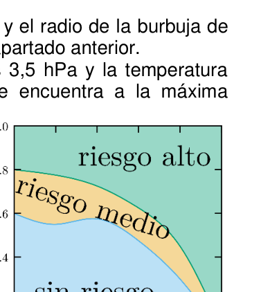
Topic: Thermodynamics, Gravitation Metodi: Ideal Gas Law, Conservation of Energy, First Law of Thermodynamics Competenze: Physical Reasoning, Mathematical Modeling Objects: Bubble, Gas Fonte: Testo (PDF) — p.116
Apollo 11, su calore, metallo e bolle…
PT71. Istituto Politetnico Superiore Generale San Martín Rosario, Santa Fe.
Apollo 11, su calore, metallo e bolle… L’ingegnere argentino Armando Maubré, dedicò parte degli anni ‘60 al lavoro in una un metalurgico americano che lavorava su pezzi per il programma Apollo. Una delle Le problematiche che si affrontano per inviare un razzo nello spazio, e che ritorna, è la proprietà dei metalli utilizzati. A causa delle condizioni estreme che si stanno affrontando Un rischio che si presenta (delle molte esistenti) è la formazione di bolle. all’interno della struttura dei metalli. Per questo motivo si fanno le radiografie dove si verifica che, se ci sono bolle, il loro diametro è inferiore a 0,18 mm. Nonostante tutto, deciderà di fare dei test sul materiale per osservare il suo comportamento. In una . La prima approssimazione, si osserva che le molecole che compongono l’aria non possono sfuggire al metallo (non diffonde attraverso di esso), e che per le dimensioni coinvolti, il metallo può cedere senza sforzo per farsi la bolla. espandere/contrarre. I. Poiché la nave va nello spazio, prima si fa un test a bassa pressione e poi si fa un test. temperatura ambiente. Grazie alle tensioni del metallo, calcolano che la pressione all’interno della bolla, fino a soli 3,5 hPa. A che volume è arrivata la bolla? II. Si prevede inoltre un aumento della temperatura durante il reinserimento, per cui che si fa una prova solo aumentando la temperatura. Come si stima La temperatura massima che il metallo supporterà è 427 °C, a che pressione e Qual è il volume dell’aria della bolla?
OAF 2019- 65 III. Come nello spazio la temperatura del metallo sarà di 150 K, considerando la temperatura di minima pressione stimata, che volume avrà l’aria?
Dopo aver completato i test di materiale, si decide di utilizzarlo per la nave con piena fiducia. che se ci sono bolle d’aria nel metallo, non influenzeranno strutturalmente.
Durante l’ingresso, la nave (con una massa di 5560 kg inclusa l’equipaggio) parte di riposo da un’orbita ad un’altezza di 120 km e scende in caduta libera fino alle 7,3 24 000 piedi) dove si dispongono i paracaduti. IV. Se al momento del dispiegamento dei paracaduti la velocità è di 180 m/s, Quanta energia è stata dissipata dal frattura? V. Grazie al scudo termico (e ad altre perdite), solo il 2% di tale energia è trasferisce i 561 kg di acciaio che costituiscono il modulo. Che temperatura ha? Per raggiungere durante il caduta?
Considerando questi dati, si decide di calcolare la pressione e il raggio della bolla di aria quando si riscalda rapidamente alla temperatura di cui al paragrafo precedente. VI. Considerando che la pressione nello spazio è di 3,5 hPa e la temperatura 150 K, che pressione e radio saranno quando si raggiungerà il massimo? Temperatura? VII. Il numero di persone Guardando il grafico a destra, determinare se vi è un rischio strutturale per il materiale.
Datos PANB = 1.013 x 105 Pa RTerra=6 371 000 m La produzione di prodotti di origine animale è limitata a circa 300 kg. Tamb=20 °C Mterra=5,97 x 1024 kg La temperatura del gas è di 1,4% G=6,67 x 10-11 N.m2/kg2
(*) Questo esercizio è realizzato sulla base di persone e problemi reali ma molto La Commissione ha adottato una decisione che prevede che il bilancio di bilancio sia adeguato ai dettagli, per migliorare lo sviluppo dell’esercizio, e che i dati siano adeguati Le statistiche numeriche non sono compatibili con la realtà, così come la fisica è stata disprezzata.
Topic: Thermodynamics, Gravitation Metodi: Ideal Gas Law, Conservation of Energy, First Law of Thermodynamics Competenze: Physical Reasoning, Mathematical Modeling Objects: Bubble, Gas Fonte: Testo (PDF) — p.116
Apollo 11, on heat, metal and bubbles…
PT71. The French authorities have already confirmed that the Commission is not interested in the use of the information provided by the Commission. Rosario, Santa Fe.
Apollo 11, about heat, metal and bubbles… The Argentine engineer Armando Maubré, devoted part of the 1960s to work in a An American metallurgist who worked on parts for the Apollo program. One of the The problem you face is sending a rocket into space, and it comes back, it’s the ownership of the metals used. Due to the extreme conditions they are going to In the case of the newly developed countries, the risk of developing bubbles is high. within the structure of the metals. That is why X-rays are taken wherever they are. verify that, if there are bubbles, their diameter is less than 0,18 mm. Despite this, So we decided to do some tests on the material to observe its behavior. In one The first approach, it is observed that the molecules that make up air cannot It is not spread through the metal, and it is for the size When the metal is involved, it can yield without effort to the bubble. expanding/shrinking. I. Since the spacecraft is going into space, they first run a low-pressure test and then… the ambient temperature. Thanks to the stresses of the metal, they calculate that the pressure inside the bubble down to just 3.5 hPa. What volume did the bubble reach? II. A temperature increase is also expected during re-entry, so The test is only done by increasing the temperature. As estimated The maximum temperature the metal will withstand is 427 °C, at what pressure and What volume is the air in the bubble?
The Commission shall adopt implementing acts in accordance with Article 21 of this Regulation. The Commission shall adopt the following: As in space the temperature of the metal will be 150 K, considering the minimum estimated pressure, what volume will the air have?
After the material tests are completed, the ship’s use is decided with full confidence. That if there are air bubbles in the metal, they won’t affect structurally.
During entry, the ship (with a mass of 5560 kg including crew) leaves It rests from an orbit at 120 km altitude and descends in free fall until 7.3 o’clock. km (24 000 ft) where parachutes are deployed. IV. If the parachute is deployed at 180 m/s, How much energy was dissipated due to the rubbing? V. Thanks to the heat shield (and other losses), only 2% of that energy is used. transferring the 561 kg of steel that make up the module. What temperature is it? to reach during the fall?
Taking these data into account, it is decided to calculate the pressure and radius of the bubble of air when rapidly heated to the temperature of the previous paragraph. VI. Considering that the pressure in space is 3.5 hPa and the temperature 150 K, what will be the pressure and radius when it’s at maximum? The temperature? The Commission shall adopt implementing acts. Looking at the graph on the right, determine if there is any structural risk to the material.
Data from the report The value of the product is the sum of the values of the product concerned. The total area of the project is approximately 6 371 000 m2 The following table shows the results of the calculations: The Commission shall adopt implementing acts in accordance with Article 21 of this Regulation. The total weight of the land is 5.97 x 1024 kg. The air is 1.4. G=6,67 x 10-11 N.m2/kg2
(*) This exercise is based on real people and problems but very The data are adapted to the specifics, for the best development of the year, so that data Numerical facts are not in keeping with reality, just as much physics was despised.
Topic: Thermodynamics, Gravitation Metodi: Ideal Gas Law, Conservation of Energy, First Law of Thermodynamics Competenze: Physical Reasoning, Mathematical Modeling Objects: Bubble, Gas Fonte: Testo (PDF) — p.116
Creo que se como funciona un acelerador de protones
PT72. Instituto Politécnico Superior General San Martín Rosario, Santa Fe.
Creo que sé cómo funciona un acelerador de protones CERN es la sigla provisional utilizada en 1952 para el Consejo Europeo para la Investigación Nuclear (Conseil Européen pour la Recherche Nucléaire). Actualmente es la sigla utilizada para darle nombre a la Organización Europea para la Investigación Nuclear conformado por 22 estados miembros. Esta organización opera un laboratorio, también llamado CERN, que está situado de forma subterránea en la frontera entre Suiza y Francia a 100 metros de profundidad y se lo reconoce como el laboratorio de física de partículas más grande del mundo. El complejo acelerador en el CERN es una sucesión de máquinas que aceleran las partículas a energías cada vez más altas. Cada máquina aumenta la energía de un haz de partículas, antes de inyectar el haz en la siguiente máquina de la secuencia. El CERN usa como fuente de protones una simple botella de gas hidrógeno. Se utiliza un campo eléctrico para despojar a los átomos de hidrógeno de sus electrones para producir protones. Linac 2, un acelerador lineal, el primero de la cadena, acelera los protones para luego ser inyectados en el Proton Synchrotron Booster (PSB), seguido por el Proton Synchrotron (PS) y el Super Sincrotrón de Super Protones (SPS), aceleradores
66 - OAF 2019 sincrotrónicos (Un “sincrotrón” es un acelerador de partículas en forma de toroide. La gran diferencia con otros aceleradores de partículas es que éstas se mantienen en órbitas cerradas). Finalmente el haz llega al Gran Colisionador de Hadrones (LHC), el último elemento de esta cadena, un acelerador sincrotrónico con energías récord. En la Figura 1 se puede observar la disposición del SPS. Cada haz de partículas está conformado por 1,26x104 protones. El haz de partículas que sale del PS y llega al SPS lo hace con una energía total de traslación de 25 GeV y con un 5% más de masa por protón debido a la gran velocidad que adquieren las partículas. A lo largo del SPS existen distintas cavidades en donde campos eléctricos aceleran los protones cada vez que las atraviesan. Se pueden modelizar como cuatro estaciones (1, 2, 3 y 4). Cada una de ellas cuenta con un dispositivo que puede modelizarse como un capacitor de placas paralelas transparente (las partículas pueden atravesar las placas) de 1.3m de distancia entre las mismas. Cada capacitor es conectado un circuito como el de la figura 2. Luego de abandonar este acelerador sincrotrónico, el haz completo tiene una energía de traslación de 450 GeV. Fig. 1: Esquema del acelerador SPS.
Fig. 2: Circuito de DC.
a) ¿Cuál es la energía cinética media en Joule, de cada protón del haz incidente?
b) Calcule la resistencia equivalente del circuito de alimentación de los capacitores,
en función de “R”.
c) Se ha medido IBA=16,14A, IAD=10,43A e IBC=1A y la f.e.m. brinda una potencia de
100KW. Es necesario que Iε ≤ 14,14A para no quemar la fuente y que ICA ≥ 8,43A
para cargar adecuadamente los capacitores. Si VCA es la tensión utilizada para
cargar cada capacitor. ¿Cuál es la magnitud del campo eléctrico generado en un
capacitor totalmente cargado?
d) Determine el número de vueltas necesarias que debe realizar el haz en el PSP,
para cumplir con las condiciones de energía inicial y final.
Ya en el LHC, el haz de protones llega a una energía máxima de traslación récord de 6,5
TeV, adquiriendo sorprendentemente cada protón, un 10% más de masa que la de
reposo. Los mismos viajan a través de un tubo circular de 1,2m de diámetro interior en
forma de toroide circular de 2,7 km de radio. Para lograr mantener las partículas en esta
órbita circular, se encuentran grandes electroimanes colocados a lo largo de todo el
acelerador. Están construidos a partir de bobinas de cable eléctrico especial que funciona
en un estado superconductor, conduciendo electricidad eficientemente sin resistencia o
pérdida de energía. Esto requiere enfriar los imanes a -271,3°C, una temperatura más fría
que el espacio exterior.
a) Calcule la velocidad media que pueden adquirir los protones del haz de máxima
energía. ¿Puede haber protones con velocidad mayor a esta velocidad media?
¿Qué tanto mayor?
b) Determine dirección, sentido y módulo del campo magnético necesario para
mantener las partículas de mayor energía en órbita.
c) Cada electroimán puede modelizarse como un solenoide de radio igual al del
tubo del acelerador. Cada bobina tiene “n” vueltas de cable eléctrico especial
con una resistencia de 10Ω a 20°C, conectado a una resistencia de “n Ω”. Si la
OAF 2019- 67 inducción magnética longitudinal cambia de 125 mWb/m² en un sentido a 5 mWb/m² en sentido contrario, ¿Qué cantidad de carga fluye por el circuito?
En el capítulo cinco de la tercer temporada de “Los Simpsons”: “Homero va a la
Universidad”, Homero asiste a una clase de física en donde el profesor comienza a
explicar el proceso de funcionamiento de un acelerador de protones, el protagonista lo
interrumpe bajo la frase “Disculpe profesor cerebro, yo llevo diez años trabajando en una
planta nuclear, yo creo que sé cómo funciona un acelerador de protones”, “Bien, venga a
mostrarnos” le responde el docente. Acto seguido la Universidad se ve envuelta en
contaminación radioactiva.
d) Se comenta que en el año 2016, Homero contempló el majestuoso LHC y
propuso controlar los protones bajo un campo magnético con igual sentido y
dirección que el necesario (ítem 6) pero con un módulo reducido a la mitad.
Sabiendo que las partículas viajan sobre el eje geométrico del tubo ¿En cuánto
tiempo hubieran colapsado los protones contra el mismo? ¡Por suerte no ocurrió!
Algunos datos
Protón: Masa en reposo: mprotón=1,67x10-27 kg ; carga eléctrica: qprotón=1,6 x10-19 C
Unidades: 1eV = 1.6x10-19 J ; 1 Wb (Weber) = 1 T m2
Constantes: g=9.8 m/s2
Nota: La variación de g debido a la profundidad de 100m es despreciable.
Comentarios Finales
El problema está basado en datos reales del CERN. Las propuestas de modelización
cumplen el papel de adecuación a los contenidos de este exámen.
Dentro del CERN se impulsan partículas a altas velocidades, cercanas a la velocidad de
la luz, que luego se estrellan contra un objetivo o contra otras partículas que circulan en
la dirección opuesta. Al estudiar estas colisiones, los físicos pueden sondear el mundo de
lo infinitamente pequeño. Cuando las partículas son lo suficientemente enérgicas, ocurre
un fenómeno que desafía la imaginación: la energía de la colisión se transforma en
materia en forma de nuevas partículas, la más masiva de las cuales existió en el Universo
temprano. Este fenómeno es descrito por la famosa ecuación de Einstein E = mc², según
la cual la materia es una forma concentrada de energía, y las dos son intercambiables.
Las partículas son tan pequeñas que la tarea de hacerlas colisionar es similar a disparar
dos agujas a 10 kilómetros de distancia con tal precisión que se encuentran a medio
camino.
Topic: Special Relativity, Electromagnetism Metodi: Relativistic Energy-Momentum, Lorentz Force Analysis, Faraday’s Law of Induction Competenze: Physical Reasoning, Mathematical Modeling Objects: Particle Beam, Capacitor, Solenoid Fonte: Testo (PDF) — p.116
Credo di sapere come funziona un acceleratore di protoni
PT72. Istituto Politetnico Superiore Generale San Martín Rosario, Santa Fe.
Credo di sapere come funziona un acceleratore di protoni. CERN è l’abbreviazione provvisoria usata nel 1952 per il Consiglio europeo per la ricerca e la tecnologia. Nuclear Research (Conseil europeo per la ricerca nucleare). Attualmente è la sigla usata per dare il nome all’Organizzazione europea per la ricerca nucleare La Commissione ha adottato una decisione che prevede che il Consiglio di sicurezza europeo, Questa organizzazione opera un laboratorio, anche. Il CERN, che si trova in una struttura sotterranea, sul confine tra la Svizzera e il Francia a 100 metri di profondità ed è riconosciuto come il laboratorio di fisica di le particelle più grandi del mondo. Il complesso acceleratore al CERN è una successione. di macchine che accelerano le particelle ad energie sempre più alte. Ogni macchina aumenta l’energia di un raggio di particelle, prima di iniettare il raggio nel prossimo. macchina della sequenza. Il CERN usa come fonte di protoni una semplice bottiglia di gas idrogeno. Si utilizza un Un campo elettrico per strappare gli atomi di idrogeno dai loro elettroni per produrre I protoni. Linac 2, un acceleratore lineare, il primo della catena, accelera i protoni per Poi vengono injectati nel Proton Synchrotron Booster (PSB), seguiti dal Proton Synchrotron (PS) e Super Synchrotron Super Proton (SPS), acceleratori
66 - OAF 2019 Sincrotronici (Un sincrotrone è un acceleratore di particelle a forma di toroide. La La differenza principale con gli acceleratori di particelle è che questi si mantengono in Orbitte chiuse). Finalmente il raggio raggiunge il Large Hadron Collider (LHC), il L’ultimo elemento di questa catena, un acceleratore sincrotrone con energie record. La struttura del SPS è rivista in figura 1. Ogni fascia di particelle è costituito da 1,26x104 protoni. Il fascio di particelle che esce dal PS e arriva al SPS lo Fa con un’energia di traslazione totale di 25 GeV e un 5% in più di massa per protone a causa della grande velocità che le particelle acquisiscono. L’esistenza di tali sistemi è stata Le cavità in cui i campi elettrici accelerano i protoni ogni volta che le
- Passano attraverso. Si possono modellare come quattro stazioni (1, 2, 3 e 4). Ognuno di loro. ha un dispositivo che può essere modellato come un capacitore di schede parallele La distanza tra le piastrelle è di 1,3 m.
- Sono stati loro. Ogni capacitore è collegato a un circuito come quello di Figura 2. Dopo Se si abbandona questo acceleratore sincrotrone, il fascio completo ha un’energia di traslazione. di 450 GeV. Fig. 1: schema dell’acceleratore SPS.
Fig. 2: Circuito DC.
a) Qual è l’energia cinetica media in Joule di ogni protone del fascio incidente? b) Calcolare la resistenza equivalente del circuito di alimentazione dei capacitori, in funzione di R. c) IBA=16,14A, IAD=10,43A e IBC=1A e f.e.m. sono state misurate. - che fornisce una potenza di 100KW. È necessario che Iε ≤ 14,14A per non bruciare la fonte e che ICA ≥ 8,43A per caricare correttamente i capacitori. Se VCA è la tensione utilizzata per caricare ogni capacitore. Qual è la magnitudine del campo elettrico generato in un Capacitore completamente carico? (d) Determina il numero di giri necessari da compiere nel PSP, per soddisfare le condizioni di energia iniziale e finale. Già nel LHC, il fascio di protoni raggiunge un massimo trasloco record di 6,5 TeV, acquisendo sorprendentemente ogni protone, un 10% in più di massa di quello di Riposo. Questi viaggiano attraverso un tubo circolare di 1,2 metri di diametro interno. forma di toroide circolare di 2,7 km di radio. Per mantenere le particelle in questo L’orbita circolare è composta da grandi elettromani che si trovano lungo tutto il pianeta.
- Accelerazione. Sono costruite a partire da bobine di cavo elettrico speciale che funziona. in uno stato superconduttore, conducendo l’elettricità in modo efficiente senza resistenza o perdita di energia. Questo richiede di raffreddare i magneti a -271,3°C, una temperatura più fredda che lo spazio esterno. a) Calcolare la velocità media che i protoni del fascio massimo possono acquisire energia. Potrebbero esserci protoni a velocità superiore a questa velocità media? Quanto più grande? b) Determina la direzione, il senso e il modulo del campo magnetico necessario per mantenere in orbita le particelle più energetiche. c) Ogni elettromagnetico può essere modellato come un solenoide radioico uguale a quello di
- Il tubo dell’acceleratore. Ogni bobina ha n giri di cavo elettrico speciale con una resistenza di 10Ω a 20°C, collegata a una resistenza di n Ω. Si la
OAF 2019- 67 L’indurrezione magnetica longitudinale cambia da 125 mWb/m2 in direzione a 5 mWb/m2 in senso contrario, quanta carica scorre nel circuito?
Nel capitolo cinque della terza stagione dei Simpson: Università, Homer partecipa a un corso di fisica in cui il professore inizia a Il protagonista è il Interrompe sotto la frase “Scusate, professore, cervello, ho lavorato su una macchina per dieci anni”. La centrale nucleare, credo di sapere come funziona un acceleratore di protoni. Il professore risponde: “Spettaci”. L’Azione seguita l’Università si vede coinvolta in la contaminazione radioattiva. d) Si osserva che nel 2016, Homer contemplava il maestoso LHC e Propose di controllare i protoni sotto un campo magnetico con lo stesso senso e La direzione è necessaria (c’è 6) ma con un modulo ridotto a metà. Sapendo che le particelle viaggiano sull’asse geometrico del tubo, quanto tempo? Se il tempo fosse passato i protoni avrebbero collassato contro di lui? Per fortuna non è successo!
Alcuni dati Protone: Massa a riposo: mprotone=1,67x10-27 kg; carica elettrica: qprotone=1,6x10-19 C Unità: 1eV = 1.6x10-19 J; 1 Wb (Weber) = 1 T m2 Costanti: g=9,8 m/s2 Nota: la variazione di g a causa della profondità di 100 m è sconsiderata.
Commenti finali Il problema si basa su dati reali del CERN. Proposte di modellazione il ruolo di adeguamento ai contenuti di questo esame. All’interno del CERN si spingono particelle ad alta velocità, vicine alla velocità di la luce, che poi si schianta contro un obiettivo o contro altre particelle che circolano in
- La direzione opposta. Studiando queste collisioni, i fisici possono sondare il mondo di l’infinitamente piccolo. Quando le particelle sono abbastanza energetiche, accade. Un fenomeno che sfida l’immaginazione: l’energia della collisione si trasforma in materia sotto forma di nuove particelle, la più massiccia che esistesse nell’Universo.
- E’ presto. Questo fenomeno è descritto dalla famosa equazione di Einstein E = mc2, secondo La materia è una forma concentrata di energia, e le due sono intercambiabili. Le particelle sono così piccole che il compito di farle collidere è simile a sparare. Due aghi a 10 chilometri di distanza con una precisione tale da trovarsi a metà.
- La strada.
Topic: Special Relativity, Electromagnetism Metodi: Relativistic Energy-Momentum, Lorentz Force Analysis, Faraday’s Law of Induction Competenze: Physical Reasoning, Mathematical Modeling Objects: Particle Beam, Capacitor, Solenoid Fonte: Testo (PDF) — p.116
I think I know how a proton accelerator works.
PT72. The French authorities have already confirmed that the Commission is not interested in the use of the information provided by the Commission. Rosario, Santa Fe.
I think I know how a proton accelerator works . CERN is the provisional acronym used in 1952 for the European Council for the Nuclear research (European Council for Nuclear Research). It is currently the acronym used to give the European Organization for Nuclear Research its name It is composed of 22 Member States. This organization operates a laboratory, too. It’s called CERN, which is located underground on the border between Switzerland and France at 100 meters deep and is recognized as the laboratory of physics of the world. The largest particles in the world. The accelerator complex at CERN is a succession. of machines that accelerate particles to increasingly higher energies. Every machine . It increases the energy of one particle beam before injecting the beam into the next one. The sequencing machine. CERN uses a simple bottle of hydrogen gas as a proton source. A The electric field to strip the hydrogen atoms of their electrons to produce Protons are the same. Linac 2, a linear accelerator, the first in the chain, accelerates the protons to The next step is to inject the Proton Synchrotron Booster (PSB), followed by the Proton Synchrotron (PS) and the Super Proton Synchrotron (SPS), accelerators
The Commission shall adopt delegated acts in accordance with Article 66 of the Financial Regulation. Synchrotronics (A synchrotron is a particle accelerator in the shape of a toroid. La The big difference from other particle accelerators is that they stay in the closed orbits). Finally the beam reaches the Large Hadron Collider (LHC), the The last element of this chain, a synchrotron accelerator with record energies. The SPS layout can be seen in Figure 1. Every beam of particles is It’s made up of 1.26×104 protons. The particle beam that leaves the PS and reaches the SPS is It does so with a total translation energy of 25 GeV and a 5% mass increase per proton. Because of the high speed at which particles acquire. Throughout the SPS there are different cavities where electric fields accelerate protons every time they do They’re going through. They can be modeled as four stations (1, 2, 3 and 4). Each one of them . It has a device that can be modeled as a parallel plate capacitor. The translucent (particles can pass through the plates) distance of 1.3m between the plates. They’re all the same. Each capacitor is connected to a circuit like the one in Figure 2. After If you leave this synchrotron accelerator, the full beam has a translation energy. of 450 GeV. Fig. The SPS accelerator shall be designed to be capable of operating at a speed of at least 50 km/h.
Fig. Two, DC circuit.
(a) What is the average kinetic energy in Joule of each proton of the incident beam? (b) Calculate the equivalent resistance of the capacitor power circuit, according to R. (c) IBA=16,14A, IAD=10,43A and IBC=1A and f.e.m. have been measured. It provides a power of 100KW. It is necessary that Iε ≤ 14.14A not to burn the source and that ICA ≥ 8.43A to properly charge the capacitors. If VCA is the voltage used for charge each capacitor. What is the magnitude of the electric field generated in a Fully charged capacitor? (d) Determine the number of necessary turns to be carried out by the beam on the PSP, to meet the initial and final energy conditions. Already at the LHC, the proton beam reaches a record maximum translating energy of 6.5 TeV, surprisingly acquiring every proton, 10% more mass than that of I’m going to rest. They travel through a circular tube of 1.2m in diameter in the a circular toroid shape with a radius of 2,7 km. To keep the particles in this one . In the circular orbit, large electromagnets are placed along the entire The accelerator. They ‘re built from special electrical cable coils that work . in a superconducting state, conducting electricity efficiently without resistance or energy loss. This requires cooling the magnets to -271,3°C, a cooler temperature than outer space. (a) Calculate the average speed that maximum beam protons can acquire. energy. Can there be protons with a speed greater than this average speed? How much older? (b) Determine the direction, direction and module of the magnetic field required for Keeping the most energetic particles in orbit. (c) Each electromagnet can be modelled as a radio solenoid equal to that of the electromagnet. The accelerator tube. Each coil has special electrical cable spins with a resistance of 10Ω to 20°C, connected to a resistance of n Ω. Si la
The Commission shall adopt implementing acts in accordance with Article 21 of this Regulation. longitudinal magnetic induction changes from 125 mWb/m2 in a direction to 5 mWb/m2 in reverse direction, how much charge flows through the circuit?
In the fifth episode of the third season of The Simpsons, Homer goes to the University, Homer attends a physics class where the professor starts at The main character is the protagonist. I’m sorry, Professor Brain, I’ve been working on one for ten years. nuclear plant, I think I know how a proton accelerator works, okay, come on. The teacher says, “Show us”. Act followed the University is involved in radioactive contamination. d) It is noted that in 2016, Homer contemplated the majestic LHC and He proposed controlling the protons under a magnetic field with equal direction and The aim of the project is to improve the quality of the work carried out by the Community. Knowing that the particles travel over the geometrical axis of the tube, how long? If the protons had collapsed against it? Fortunately it didn’t happen!
Some data Proton: Resting mass: mproton = 1.67x10-27 kg; electric charge: qproton = 1.6x10-19 C Units: 1eV = 1.6x10-19 J; 1 Wb (Weber) = 1 T m2 The following is the list of the following: Note: The variation in g due to the depth of 100m is despicable.
Final comments The problem is based on actual data from CERN. Modelling proposals They fulfil the role of suitability for the contents of this examination. Inside CERN particles are being pushed at high speeds, close to the speed of The light, which then crashes into a target or other particles circulating in the the opposite direction. By studying these collisions, physicists can probe the world of The infinitely small. When the particles are energetic enough, it happens. A phenomenon that challenges the imagination: the energy of collision is transformed into matter in the form of new particles, the most massive of which existed in the universe. early. This phenomenon is described by Einstein’s famous equation E = mc2, according to which is that matter is a concentrated form of energy, and the two are interchangeable. The particles are so small that the task of making them collide is similar to firing . Two needles 10 kilometers apart with such precision that they are half way across. I’m on my way.
Topic: Special Relativity, Electromagnetism Metodi: Relativistic Energy-Momentum, Lorentz Force Analysis, Faraday’s Law of Induction Competenze: Physical Reasoning, Mathematical Modeling Objects: Particle Beam, Capacitor, Solenoid Fonte: Testo (PDF) — p.116
PT73. Colegio Inmaculada Concepción Frías, Santiago del Estero.
Un cuerpo es atado a un árbol sobre una colina, sin fricción. La colina forma con la horizontal un ángulo de 370 con la horizontal. Si el cuerpo pesa 77 N: a) Realice un diagrama de cuerpo libre que represente la situación b) Determine la fuerza ejercida por la cuerda c) Determine la magnitud de la fuerza normal ejercida por la colina sobre el cuerpo d) Si la soga se corta y el cuerpo se desliza hacia abajo por el plano inclinado sin fricción ¿Qué velocidad adquiere el cuerpo luego de deslizarse 5m?
Topic: Newtonian Mechanics Metodi: Free-Body Diagram, Conservation of Energy, Vector Decomposition Competenze: Physical Reasoning, Mathematical Modeling Objects: Block, String, Inclined Plane Fonte: Testo (PDF) — p.116
PT73. La Concepzione Immaculata Frie, Santiago del Estero.
Un corpo è legato ad un albero su una collina, senza attrito. La collina si forma con la orizzontale un angolo di 370 con l’orizzontale. Se il corpo pesa 77 N: a) Realizzare un diagramma di corpo libero che rappresenti la situazione b) Determina la forza esercitata dalla corda c) Determina la magnitudine della forza normale esercitata dal collino sul corpo d) Se la corda viene tagliata e il corpo scivola verso il basso per il piano inclinato senza Che velocità acquista il corpo dopo aver scivolato 5 metri?
Topic: Newtonian Mechanics Metodi: Free-Body Diagram, Conservation of Energy, Vector Decomposition Competenze: Physical Reasoning, Mathematical Modeling Objects: Block, String, Inclined Plane Fonte: Testo (PDF) — p.116
PT73. Immaculate Conception College It’s cold, Santiago del Estero.
A body is tied to a tree on a hill, without friction. The hill forms with the horizontal an angle of 370 with the horizontal. If the body weighs 77 N: (a) Draw a free-body diagram that represents the situation (b) Determine the force exerted by the rope (c) Determine the magnitude of the normal force exerted by the hill on the body. (d) If the rope is cut and the body slides downward on the sloping plane without friction What speed does the body gain after sliding 5m?
Topic: Newtonian Mechanics Metodi: Free-Body Diagram, Conservation of Energy, Vector Decomposition Competenze: Physical Reasoning, Mathematical Modeling Objects: Block, String, Inclined Plane Fonte: Testo (PDF) — p.116
PT74. Colegio Inmaculada Concepción Frías, Santiago del Estero.
Un conductor de cobre de 0,321 mm de radio posee una diferencia de potencial de 10v que se mantiene a través de una longitud de 1m. a) Calcular la resistencia del alambre de cobre
68 - OAF 2019 b) Calcular la corriente en el alambre c) Determinar la velocidad de deriva de los electrones d) Calcule el número de los electrones que pasa en 2 s e) Si el alambre se funde y vuelve a formarse de nuevo con el doble de la longitud original, encuentre la nueva resistencia como múltiplo de la anterior
Datos ʆ cu : 8,92 g/cm3
ϱ cu : 1,7.10-8 Ω. m A CU : 63,546 g NºA: 6,02.1023 partículas
Topic: Circuits Metodi: Kirchhoff’s Laws, Dimensional Analysis Competenze: Physical Reasoning, Mathematical Modeling Objects: Wire Fonte: Testo (PDF) — p.116
PT74. La Concepzione Immaculata Frie, Santiago del Estero.
Un conduttore di rame di 0,321 mm di radio ha una differenza di potenziale di 10v che si mantiene per un lungo di 1 m. a) Calcolare la resistenza del filo di rame
68 - OAF 2019 b) Calcolare la corrente nel filo c) Determinare la velocità di deriva degli elettroni d) Calcolare il numero di elettroni che passa in 2 s e) Se il filo si fonde e si riforma a doppio della lunghezza originale, troverete la nuova resistenza come moltiplicazione della precedente
Datos ʆ cu : 8,92 g/cm3
ϱ cu : 1,7.10-8 Ω. m A CU : 63,546 g N.A.: 6,02.1023 particelle
Topic: Circuits Metodi: Kirchhoff’s Laws, Dimensional Analysis Competenze: Physical Reasoning, Mathematical Modeling Objects: Wire Fonte: Testo (PDF) — p.116
PT74. Immaculate Conception College It’s cold, Santiago del Estero.
A copper conductor of 0,321 mm radius has a potential difference of 10v which is held up through a length of 1 m. (a) Calculate the copper wire strength
The Commission shall adopt delegated acts in accordance with Article 21 of this Regulation. (b) Calculate the current in the wire (c) Determine the drift velocity of the electrons (d) Calculate the number of electrons passing in 2 s (e) If the wire is melted and re-formed with twice the length original, find the new resistance as a multiple of the previous one.
Data from the report ʆ cu : 8,92 g/cm3
ϱ cu : 1,7.10-8 Ω. m A CU : 63,546 g The following is the list of the substances used in the preparation:
Topic: Circuits Metodi: Kirchhoff’s Laws, Dimensional Analysis Competenze: Physical Reasoning, Mathematical Modeling Objects: Wire Fonte: Testo (PDF) — p.116
PT75. Colegio Inmaculada Concepción Frías, Santiago del Estero.
A un robusto globo con volumen de 0,500 m3 se le ata un bloque de hierro que pesa 2,5.102 kg y se le lanza en un lago de agua dulce. El globo esta hecho de un material ligero de masa y elasticidad despreciables (aunque puede ser comprimido).El aire en el globo esta inicialmente a la presión atmosférica. El sistema no puede hundirse y no se dispone de más pesos, así es que un buzo decide arrastrarlo a una profundidad suficiente para que el globo permanezca sumergido. a) ¿Cuál es el volumen del hierro? b) ¿Cuál es la masa del globo? c) Encuentre el volumen del globo en el punto donde el sistema permanecerá sumergido, en equilibrio d) ¿Cuál es la presión del globo en ese punto? e) Suponiendo que la temperatura es constante ¿a qué profundidad mínima debe ser arrastrado el globo?
P atm : 1,01.105 Pa ʆ Fe : 7,86.103 kg/m3 ʆ aire :1,29 kg/m3 ʆ agua :1.103 kg/m3 g : 9,8 m/s2
Topic: Fluid Mechanics Metodi: Hydrostatic Equilibrium, Ideal Gas Law Competenze: Physical Reasoning, Mathematical Modeling Objects: Block, Gas Fonte: Testo (PDF) — p.116
PT75. La Concepzione Immaculata Frie, Santiago del Estero.
Un robusto globo di un volume di 0,500 m3 è attaccato da un blocco di ferro che pesa. 2,5.102 kg e viene lanciato in un lago d’acqua dolce. Il globo è fatto di un materiale. L’aria in aria è molto leggera, ma può essere compressa. Il globo è inizialmente a pressione atmosferica. Il sistema non può andare e non si può andare ha più peso, quindi un buio decide di arrestarlo a sufficiente profondità. per mantenere il globo immerso. a) Qual è il volume del ferro? b) Qual è la massa del globo? c) Trova il volume del globolo al punto in cui il sistema rimarrà. Sottomed, in equilibrio. d) Qual è la pressione del globulo a quel punto? e) Supponendo che la temperatura sia costante, a che profondità minima deve essere trascinato il globo?
P atm: 1,01.105 Pa ʆ Fe : 7,86.103 kg/m3 aria :1,29 kg/m3 acqua: 1033 kg/m3 g : 9,8 m/s2
Topic: Fluid Mechanics Metodi: Hydrostatic Equilibrium, Ideal Gas Law Competenze: Physical Reasoning, Mathematical Modeling Objects: Block, Gas Fonte: Testo (PDF) — p.116
PT75. Immaculate Conception College It’s cold, Santiago del Estero.
A robust balloon with a volume of 0.500 m3 is bound to a heavy block of iron. 2,5,102 kg and thrown into a freshwater lake. The balloon is made of a material. Lightweight mass and despicable elasticity (although it can be compressed). The balloon is initially at atmospheric pressure. The system can ‘t sink and it can ‘t be . It’s heavier, so a diver decides to drag it down to a depth of enough. So the balloon stays submerged. (a) What is the volume of iron? (b) What is the mass of the balloon? (c) Find the volume of the balloon at the point where the system will remain Submerged, in balance (d) What is the pressure of the balloon at that point? (e) Assuming the temperature is constant, what minimum depth should it be? be dragged down the globe?
The total amount of the aid is EUR 1.01.105 ʆ Fe : 7,86.103 kg/m3 The following conditions shall apply: water: 1033 kg/m3 g : 9,8 m/s2
Topic: Fluid Mechanics Metodi: Hydrostatic Equilibrium, Ideal Gas Law Competenze: Physical Reasoning, Mathematical Modeling Objects: Block, Gas Fonte: Testo (PDF) — p.116
Acelerando mientras se pueda
PT76. Instituto Primo Capraro - Colegio San Patricio San Carlos de Bariloche, Río Negro.
Acelerando mientras se pueda En una carrera de automóviles el vehículo que se ubicaba en la primera posición de la largada, parte del reposo y recorre los primeros 175 m con aceleración constante hasta alcanzar los 126 km/h: a) Determinar la velocidad alcanzada en m/s. b) Calcular el tiempo empleado en recorrer esa distancia. c) Calcular la aceleración del auto en este primer tramo. La masa total del automóvil, incluido su piloto, es de 1200 kg y suponemos que en este primer tramo actúa una fuerza de rozamiento con el aire constante de 800 N (en realidad la fuerza de rozamiento con el aire depende de la velocidad del vehículo, cosa que no tendremos en cuenta en este caso) d) Dibujar el diagrama de cuerpo libre del automóvil recorriendo este primer tramo. e) Determinar la fuerza de avance que le proporciona el piso para acelerar. f) Calcular el coeficiente de rozamiento mínimo entre el auto y el piso que le permite acelerar de esa manera. A continuación el automóvil mantiene su velocidad constante durante 8 s más.
OAF 2019- 69 g) Determinar la fuerza de avance para esta situación. h) Representar los gráficos cartesianos de la velocidad y posición en función del tiempo para el total del recorrido analizado.
Topic: Newtonian Mechanics Metodi: Kinematic Equations, Free-Body Diagram Competenze: Physical Reasoning, Mathematical Modeling Objects: Cart Fonte: Testo (PDF) — p.116
Accelerazione finché è possibile
PT76. Istituto Primo Capraro - Colegio San Patricio San Carlo di Bariloche, Rio Negro.
Accelerando finché si può. In una gara di auto il veicolo che si trovava in prima posizione della gara lungo, parte del riposo e percorre i primi 175 m con costante accelerazione fino a raggiungere i 126 km/h: a) Determinare la velocità raggiunta in m/s. b) Calcolare il tempo impiegato per percorrere tale distanza. c) Calcolare l’accelerazione della vettura in questo primo tratto. La massa totale dell’auto, compreso il pilota, è di 1200 kg e supponiamo che in questo Il primo tratto agisce con una forza di ruggine con l’aria costante di 800 N (in realtà La forza di rottura con l’aria dipende dalla velocità del veicolo, cosa che non (Il Parlamento europeo ha adottato una decisione che prevede che il Consiglio non si impegni a tale scopo. d) Disegnare il diagramma del corpo libero dell’automobile attraverso il primo tratto. e) Determinare la forza di avanzamento fornita dal pavimento per accelerare. f) Calcolare il coefficiente di rottura minimo tra la macchina e il pavimento che la Per questo, la velocità è aumentata. Poi la macchina mantiene la sua velocità costante per 8 secondi in più.
OAF 2019- 69 g) Determinare la forza di avanzamento per questa situazione. h) Presentare i grafici cartesiani della velocità e della posizione in funzione del tempo per il percorso totale analizzato.
Topic: Newtonian Mechanics Metodi: Kinematic Equations, Free-Body Diagram Competenze: Physical Reasoning, Mathematical Modeling Objects: Cart Fonte: Testo (PDF) — p.116
Accelerating while you can
PT76. The first is the Capraro Institute - St. Patrick’s College. St. Charles of Bariloche, Rio Negro.
Accelerating as long as you can . In a race the vehicle in the first position of the long, part of the rest and travels the first 175 m with constant acceleration up to to reach 126 km/h: (a) Determine the speed achieved in m/s. (b) Calculate the time taken to travel that distance. (c) Calculate the acceleration of the car in this first leg. The total mass of the car, including its driver, is 1200 kg and we assume that in this The first section acts a friction force with constant air of 800 N (actually The force of friction with the air depends on the speed of the vehicle, which is not (We will take into account in this case) (d) Draw the free body diagram of the car by going through this first section. (e) Determine the forward force provided by the floor to accelerate. (f) Calculate the minimum friction coefficient between the car and the floor that it is It allows you to accelerate that way. The car then maintains its steady speed for 8 seconds longer.
The Commission shall adopt delegated acts in accordance with Article 21 of this Regulation. (g) Determine the strength of the advance for this situation. (h) To represent the Cartesian graphs of speed and position in terms of time for the total route analysed.
Topic: Newtonian Mechanics Metodi: Kinematic Equations, Free-Body Diagram Competenze: Physical Reasoning, Mathematical Modeling Objects: Cart Fonte: Testo (PDF) — p.116
Temperatura versus calor
PT77. Instituto Primo Capraro - Colegio San Patricio San Carlos de Bariloche, Río Negro.
Temperatura versus calor Una sustancia desconocida se presenta en estado líquido cuando la temperatura ambiente es de 20ºC y la presión atmosférica es normal. Luego de exhaustivos análisis sobre 1 gramo de la sustancia, variando su temperatura y midiendo el calor entregado o cedido para producir en la sustancia un cambio de estado, se llega a construir el gráfico de la figura.
a) A partir de dicho gráfico se quiere saber qué cantidad de calor aproximada será necesario entregarle a 500 g de la sustancia para elevar su temperatura desde el punto de fusión al punto de ebullición, ambos en estado líquido. Expresar el resultado en el SI y en calorías. b) Determinar aproximadamente el calor latente de fusión y de vaporización de la sustancia en unidades del SI y en calorías. c) Determinar aproximadamente el calor específico de la sustancia en estado sólido y en estado líquido. d) ¿Puede ser agua nuestra sustancia desconocida? Para elevar la temperatura de 500 g de la sustancia como indicamos en el punto a) se utilizó un recipiente adiabático con una resistencia eléctrica en su interior de 20 Ω, conectada a una fuente de 200V. e) Calcular la intensidad de corriente eléctrica que pasa por la resistencia. f) Calcular el tiempo necesario en que deberá permanecer conectada la resistencia eléctrica para que los 500g de la sustancia modifiquen su temperatura en estado líquido de 0ºC a 100ºC.
Datos 1 cal = 4,186 J
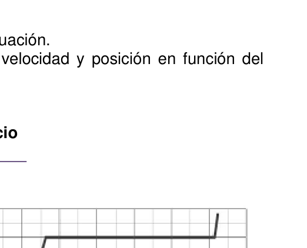
Topic: Thermodynamics, Circuits Metodi: First Law of Thermodynamics, Graph Linearization, Equivalent Circuit Reduction Competenze: Physical Reasoning, Mathematical Modeling Objects: Resistor, Calorimeter Fonte: Testo (PDF) — p.116
Temperatura versus calore
PT77. Istituto Primo Capraro - Colegio San Patricio San Carlo di Bariloche, Rio Negro.
Temperatura contro calore Una sostanza sconosciuta si presenta in stato liquido quando la temperatura L’ambiente è di 20°C e la pressione. atmosferica es
- Normalmente. Poi de I risultati della ricerca sono stati rilevati in modo dettagliato. La sostanza, variando la sua temperatura e misurando il calore consegnato o ceduto per produrre in sostanza un cambiamento di stato, si arriva a costruire il grafico di
- Figura.
a) Si vuole partire da tale grafico
- Sapere Cosa ? quantità de Calore approssimativo
- Sarà necessaria dare 500 g della sostanza per elevare la temperatura dal punto di Fusione al punto di ebollizione, entrambi in stato liquido. Esprimere il risultato in l’SI e le calorie. b) Determinare approssimativamente il calore latente di fusione e di vaporizzazione della sostanza in unità SI e calorie. c) Determinare approssimativamente la temperatura specifica della sostanza in stato solido e in stato liquido. d) L’acqua può essere la nostra sostanza sconosciuta? Per aumentare la temperatura della sostanza di 500 g come indicato al punto a) è stato utilizzato un recipiente adiabatico con resistenza elettrica all’interno di 20 Ω, collegato a una fonte di 200 V. e) Calcolare l’intensità di corrente elettrica che passa attraverso la resistenza. f) Calcolare il tempo necessario per il mantenimento della resistenza connessa elettrica per modificare la temperatura in stato di 500 g della sostanza. liquido da 0oC a 100oC.
Datos 1 cal = 4.186 J
Topic: Thermodynamics, Circuits Metodi: First Law of Thermodynamics, Graph Linearization, Equivalent Circuit Reduction Competenze: Physical Reasoning, Mathematical Modeling Objects: Resistor, Calorimeter Fonte: Testo (PDF) — p.116
The following table shows the temperature and temperature of the product:
PT77. The first is the Capraro Institute - St. Patrick’s College. St. Charles of Bariloche, Rio Negro.
Temperature versus heat An unknown substance is present in liquid state when the temperature The temperature is 20 degrees and the pressure is 20 degrees. atmospheric . es It’s normal. Then . de Extensive analysis on 1 gram of the The substance varies in temperature and measuring the heat delivered or delivered to The substance is altered by a change in the state, you get to build the graph of the It’s a figure.
(a) From this graph, you want to Knowing What quantity de Heat . approximate It will be necessary Give 500 g of the substance to raise its temperature from the point of Fusion to boiling point, both in liquid state. Express the result in the SI and calories. (b) Determine approximately the latent heat of fusion and vaporization of the substance in SI units and calories. (c) To determine approximately the specific heat of the solid state of the substance and in liquid state. (d) Can water be our unknown substance? To raise the temperature of the substance by 500 g as indicated in point (a) an adiabatic vessel with an electrical resistance inside was used. 20 Ω, connected to a 200V source. (e) Calculate the intensity of electric current passing through the resistance. (f) Calculate the time required for the resistance to remain connected. electrical so that 500 g of the substance modify its temperature in the state liquid from 0oC to 100oC.
Data from the report 1 cal = 4,186 J
Topic: Thermodynamics, Circuits Metodi: First Law of Thermodynamics, Graph Linearization, Equivalent Circuit Reduction Competenze: Physical Reasoning, Mathematical Modeling Objects: Resistor, Calorimeter Fonte: Testo (PDF) — p.116
Tiro con arco
PT78. Instituto Primo Capraro - Colegio San Patricio San Carlos de Bariloche, Río Negro.
Tiro con arco Cuando se dispara una flecha con un arco, podemos imaginarnos la cuerda elástica de ese arco como dos resortes de igual elasticidad y con la mitad de la longitud de la cuerda, unidos por uno de sus extremos y el otro extremo fijo a la estructura rígida del arco. Al tensar la cuerda (en nuestro caso estirar los resortes) desplazando la flecha hacia la izquierda una determinada distancia, los resortes se alargan y ejercen una fuerza en conjunto sobre la flecha que le permitirá acelerarse una vez que se la suelte. En la imagen se puede apreciar el mecanismo de nuestra simplificación.
70 - OAF 2019
Nuestro arco en cuestión tiene una cuerda (formada por la longitud de los dos resortes) de 80 cm y al realizar el estiramiento máximo para disparar la flecha, esta última se desplaza desde la posición inicial (con los resortes verticales y en su longitud natural) hacia la izquierda una distancia d = 30 cm. a) Determinar el alargamiento de cada uno de los resortes La constante elástica de los resortes es 2000 N / m b) Calcular la fuerza que realiza cada resorte y la fuerza neta que actúa sobre la flecha en el instante en que se la suelta. c) Repetir los cálculos realizados en los puntos a) y b) cuando la distancia d es de 20 cm y de 10 cm. d) Representar gráficamente la fuerza neta en función de la distancia d, suponiendo que entre los puntos encontrados la variación es lineal. e) Con la ayuda del gráfico, calcular el trabajo realizado por la fuerza neta de los resortes sobre la flecha. f) Determinar la velocidad con que la flecha de 0.1 kg de masa, saldría disparada del dispositivo en cuestión.
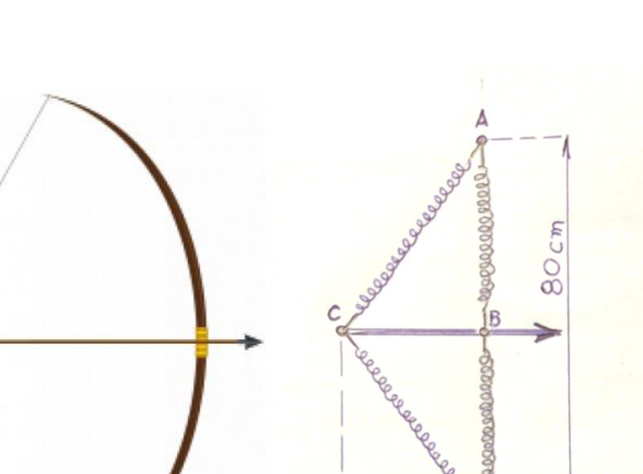
Topic: Conservation of Energy Metodi: Hooke’s Law, Conservation of Energy, Vector Decomposition Competenze: Physical Reasoning, Mathematical Modeling Objects: Spring, Projectile Fonte: Testo (PDF) — p.116
Arco a fuoco
PT78. Istituto Primo Capraro - Colegio San Patricio San Carlo di Bariloche, Rio Negro.
Arco a fuoco Quando si spara una freccia con un arco, possiamo immaginare la corda elastica di che l’arco come due sorgenti di uguale elasticità e con la metà della lunghezza della corda, uniti da una estremità e l’altra fissa alla struttura rigida dell’arco. Al Tendere la corda (nel nostro caso estendere le sorgenti) spostando l’arcia verso la a una certa distanza, le sorgenti si allungano e esercitano una forza in Un’artiglietta che permetterà di accelerare una volta che la si è sollevata. En la La nostra semplificazione è un meccanismo che si può vedere.
70 - OAF 2019
Il nostro arco in questione ha una corda (formata dalla lunghezza delle due sorgenti) La massima estensione per il lancio dell’arcia è di 80 cm. spostato dalla posizione iniziale (con le sorgenti verticali e nella loro lunghezza naturale) a sinistra una distanza d = 30 cm. a) Determinare l’allungamento di ciascuna delle sorgenti La costante elastica delle sorgenti è di 2000 N / m b) Calcolare la forza di ogni resorso e la forza netta che agisce sulla Arrow il momento in cui si lascia andare. (c) Ripetere i calcoli di cui a) e (b) quando la distanza d è di 20 cm y de 10 cm. d) Rappresentare graficamente la forza netta in funzione della distanza d, supponendo che tra i punti trovati la variazione è lineare. e) Con l’aiuto del grafico, calcolare il lavoro effettuato dalla forza netta dei Scursioni sulla freccia. f) Determinare la velocità con cui l’arcia di 0,1 kg di massa sarebbe stata lanciata il dispositivo in questione.
Topic: Conservation of Energy Metodi: Hooke’s Law, Conservation of Energy, Vector Decomposition Competenze: Physical Reasoning, Mathematical Modeling Objects: Spring, Projectile Fonte: Testo (PDF) — p.116
The following is the list of the main types of firearms used:
PT78. The first is the Capraro Institute - St. Patrick’s College. St. Charles of Bariloche, Rio Negro.
Archery . When you shoot an arrow with a bow, you can imagine the elastic rope of that bow as two springs of equal elasticity and with half the length of the rope, attached by one end and the other end fixed to the rigid structure of the bow. Al Tensing the rope (in our case stretching the springs) by moving the arrow towards the Left a certain distance, the springs stretch and exert a force on Set on the arrow that will allow it to accelerate once it’s released. En la The first is that the Commission is not in a position to make any progress on the matter.
The Commission shall adopt delegated acts in accordance with Article 21 of this Regulation.
Our arc in question has a rope (formed by the length of the two springs) The arrow is then pulled up to a maximum of 80 cm and when the maximum stretch is made to shoot the arrow, the arrow is pulled up to a maximum of 80 cm. displaces from the starting position (with vertical springs and in their natural length) To the left a distance d = 30 cm. (a) Determine the length of each spring The spring ‘s elastic constant is 2000 N / m . (b) Calculate the force exerted by each spring and the net force acting on the spring. arrow the moment it’s released. (c) Repeat the calculations in points (a) and (b) when the distance d is from 20 cm y de 10 cm. (d) Graphically represent the net force in relation to distance d, assuming The difference between the points found is linear. (e) Using the graph, calculate the work done by the net force of the springs on the arrow. (f) Determine the rate at which the 0.1 kg mass arrow would be fired. the device concerned.
Topic: Conservation of Energy Metodi: Hooke’s Law, Conservation of Energy, Vector Decomposition Competenze: Physical Reasoning, Mathematical Modeling Objects: Spring, Projectile Fonte: Testo (PDF) — p.116
PT79. Instituto Técnico Renault Ciudad de Córdoba.
Un satélite artificial, orbita la tierra con un período orbital de 90 min describiendo una órbita circular LEO (Low Earth Orbit).
Encontrar
a) Desarrollar la expresión matemática para obtener el radio de la órbita y la altura
de órbita en función del período orbital.
b) Encontrar el valor de la altura de la órbita.
c) Velocidad lineal (en m/s, Km/h y Km/s) y velocidad angula.
d) Campo gravitatorio.
OAF 2019- 71
Topic: Gravitation Metodi: Newton’s Law of Gravitation, Kepler’s Laws Competenze: Physical Reasoning, Mathematical Modeling Objects: Satellite, Planet Fonte: Testo (PDF) — p.116
PT79. Renault Technical Institute Città di Córdoba.
Un satellite artificiale, orbita la Terra con un periodo orbitale di 90 minuti descrivendo una Orbita circolare LEO (Low Earth Orbit).
Trovare a) Sviluppare l’espressione matematica per ottenere il raggio di orbita e l’altezza di orbita in funzione del periodo orbitale. b) Trovare il valore dell’altezza dell’orbita. (c) velocità lineare (in m/s, Km/h e Km/s) e velocità angolare. d) Campo di gravità.
OAF 2019- 71
Topic: Gravitation Metodi: Newton’s Law of Gravitation, Kepler’s Laws Competenze: Physical Reasoning, Mathematical Modeling Objects: Satellite, Planet Fonte: Testo (PDF) — p.116
PT79. The Renault Technical Institute The city of Cordoba.
An artificial satellite, orbiting the Earth with an orbital period of 90 minutes describing a The orbit is circular LEO (Low Earth Orbit).
Find them . (a) Develop mathematical expression to obtain the radius of the orbit and the altitude. of orbit depending on the orbital period. (b) Find the value of the orbit height. (c) Linear speed (in m/s, Km/h and Km/s) and angular speed. (d) Gravitational field.
The following information is provided:
Topic: Gravitation Metodi: Newton’s Law of Gravitation, Kepler’s Laws Competenze: Physical Reasoning, Mathematical Modeling Objects: Satellite, Planet Fonte: Testo (PDF) — p.116
PT80. Instituto Técnico Renault Ciudad de Córdoba.
Se golpea una esfera de acero (FeC), con un bate de béisbol de Aluminio, la cual asciende hasta una altura de 20 m. Sabiendo que el radio es de 20mm y que el coeficiente de restitución es de 0,8.
Calcular a) Impulso inicial que recibe la esfera de acero. b) Vector velocidad y rapidez de la esfera antes de tocar el piso. c) Altura obtenida después del tercer rebote. d) Energía disipada en los tres primeros rebotes.
Topic: Conservation of Momentum, Newtonian Mechanics Metodi: Impulse-Momentum Theorem, Kinematic Equations, Conservation of Energy Competenze: Physical Reasoning, Mathematical Modeling Objects: Ball, Sphere Fonte: Testo (PDF) — p.116
PT80. Renault Technical Institute Città di Córdoba.
Si colpisce una sfera di acciaio (FeC), con un battello da baseball di alluminio, che si alza fino a 20 m di altezza. Sapendo che il radio è di 20mm e che il il coefficiente di restituzione è di 0,8.
Calcolare a) Impulso iniziale della sfera di acciaio. b) Vettore velocità e velocità della sfera prima di toccare il pavimento. c) Altezza ottenuta dopo il terzo rimbalzo. d) Energia dissipata nei primi tre rimbalzi.
Topic: Conservation of Momentum, Newtonian Mechanics Metodi: Impulse-Momentum Theorem, Kinematic Equations, Conservation of Energy Competenze: Physical Reasoning, Mathematical Modeling Objects: Ball, Sphere Fonte: Testo (PDF) — p.116
PT80. The Renault Technical Institute The city of Cordoba.
A ball of steel (FeC) is hit with an Aluminum baseball bat, which rises to a height of 20 m. Knowing that the radius is 20mm and that the The refund coefficient is 0,8.
Calculate (a) Initial impulse received by the steel sphere. (b) Vector velocity and velocity of the sphere before touching the floor. (c) Height obtained after the third rebound. (d) Energy dissipated in the first three bouts.
Topic: Conservation of Momentum, Newtonian Mechanics Metodi: Impulse-Momentum Theorem, Kinematic Equations, Conservation of Energy Competenze: Physical Reasoning, Mathematical Modeling Objects: Ball, Sphere Fonte: Testo (PDF) — p.116
PT81. Instituto Técnico Renault Ciudad de Córdoba.
Se deja caer libremente un cuerpo de 1 Kg, por una pista, la cual cuenta con una parte de la pista con fricción, con un coeficiente de rozamiento de 0.8 y un rizo de radio 3m, como muestra la figura.
Calcular a) Rapidez en los puntos A, B y C. b) Altura mínima del punto de partida, para que el cuerpo desarrolle el rizo sin perder contacto con la pista.
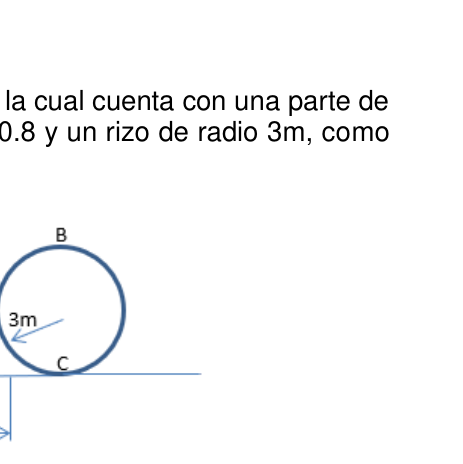
Topic: Conservation of Energy, Newtonian Mechanics Metodi: Conservation of Energy, Free-Body Diagram Competenze: Physical Reasoning, Mathematical Modeling Objects: Block Fonte: Testo (PDF) — p.116
PT81. Renault Technical Institute Città di Córdoba.
Si lascia cadere liberamente un corpo di 1 Kg, per un pistone, che ha una parte di la pista con frizione, con un coefficiente di rottura di 0,8 e un raggio di radio di 3 m, come mostra la figura.
Calcolare a) Rapidità nei punti A, B e C. b) Altezza minima del punto di partenza, per consentire al corpo di sviluppare il riso senza perdere contatto con il tracciato.
Topic: Conservation of Energy, Newtonian Mechanics Metodi: Conservation of Energy, Free-Body Diagram Competenze: Physical Reasoning, Mathematical Modeling Objects: Block Fonte: Testo (PDF) — p.116
PT81. The Renault Technical Institute The city of Cordoba.
A body of 1 kg is dropped freely by a track, which has a part of it. the friction track, with a friction coefficient of 0,8 and a radius of 3m, as It shows the figure.
Calculate (a) Speed in points A, B and C. (b) Minimum height of the starting point for the body to develop the ridge without Lose contact with the lead.
Topic: Conservation of Energy, Newtonian Mechanics Metodi: Conservation of Energy, Free-Body Diagram Competenze: Physical Reasoning, Mathematical Modeling Objects: Block Fonte: Testo (PDF) — p.116
PT82. IPET N° 89 Paula Albarracín Devoto, Córdoba.
Obtener el campo eléctrico y el potencial eléctrico en el centro de un pentágono de 1 metro de lado que posee en cuatro de sus vértices, tal como se señala en la figura, una carga de 6 μC. Dibujar en la figura la dirección y el sentido del campo.
Datos k = 9x109 N.m2/C2
Topic: Electrostatics Metodi: Coulomb’s Law, Electric Potential Method, Superposition Principle Competenze: Physical Reasoning, Mathematical Modeling Objects: Point Charge Fonte: Testo (PDF) — p.116
PT82. I.P.T. N° 89 Paula Albarracín Devote, Cordoba.
Ottenere il campo elettrico e il potenziale elettrico al centro di un pentagono di 1 metro di lato che possiede su quattro di loro di vertici, come indicato nella figura, un carico di 6 μC. Disegnare nella figura la direzione e il senso del campo.
Datos k = 9x109 N.m2/C2
Topic: Electrostatics Metodi: Coulomb’s Law, Electric Potential Method, Superposition Principle Competenze: Physical Reasoning, Mathematical Modeling Objects: Point Charge Fonte: Testo (PDF) — p.116
PT82. The Commission has also adopted a number of proposals for the establishment of a European Parliament and Council meeting on the subject. I’m a devoted man, Cordoba.
Get the electric field and electric potential at the center of the A five-foot-tall side penthouse he owns on four of his . Vertices, as shown in Figure, a load of 6 μC. Draw the direction and direction of the field in the figure.
Data from the report k = 9x109 N.m2/C2
Topic: Electrostatics Metodi: Coulomb’s Law, Electric Potential Method, Superposition Principle Competenze: Physical Reasoning, Mathematical Modeling Objects: Point Charge Fonte: Testo (PDF) — p.116
PT83. IPET N° 89 Paula Albarracín Devoto, Córdoba.
Se suelta una bolita desde el punto A, Tal como se señala en la figura 1a, que tras llegar a B, sale horizontalmente recorriendo una distancia de 40 cm, igual a la altura del escalón, hasta que toca el suelo.
72 - OAF 2019
a) Obtener la altura h de la figura 1ª desde la que se ha soltado la bola. b) Si h hubiera sido 3 veces más grande, ¿Qué distancia horizontal hubiera recorrido desde que abandona la rampa en B hasta que toca el suelo? c) ¿Qué relación matemática relaciona la altura h con la distancia horizontal recorrida x? (ver Figura 1b) Aplicarla para obtener la altura desde la que habría que soltar la bola para que alcanzara una distancia x = 0,8 metros Considérese g=10m/s2
Topic: Newtonian Mechanics Metodi: Kinematic Equations, Conservation of Energy Competenze: Physical Reasoning, Mathematical Modeling Objects: Ball, Projectile Fonte: Testo (PDF) — p.116
PT83. I.P.T. N° 89 Paula Albarracín Devote, Cordoba.
Una bolletta viene rilasciata dal punto A, come indicato nella figura 1a, che dopo essere arrivata a B, esce orizzontalmente percorrendo una distanza di 40 cm, pari all’altezza del Scalone, fino a quando tocca il pavimento.
72 - OAF 2019
a) Ottenere l’altezza h della figura 1a dalla quale è stata scartata la palla. b) Se h fosse stato 3 volte più grande, quale distanza orizzontale sarebbe Da quando si lascia la pista in B fino a quando tocca il terreno? c) Quale rapporto matematico tra l’altezza h e la distanza orizzontale percorso x? (vedi Figura 1b) Applicarla per ottenere l’altezza da cui sarebbe che rilasciare la palla per raggiungere una distanza di x = 0,8 metri. g=10m/s2
Topic: Newtonian Mechanics Metodi: Kinematic Equations, Conservation of Energy Competenze: Physical Reasoning, Mathematical Modeling Objects: Ball, Projectile Fonte: Testo (PDF) — p.116
PT83. The Commission has also adopted a number of proposals for the establishment of a European Parliament and Council meeting on the subject. I’m a devoted man, Cordoba.
A ballot is released from point A, as shown in Figure 1a, which after arrival a B, it is released horizontally over a distance of 40 cm, equal to the height of the Step up, until it hits the ground.
The Commission shall adopt delegated acts in accordance with Article 21 of this Regulation.
(a) Get the height h of Figure 1a from which the ball has been released. (b) If h had been 3 times larger, what horizontal distance would it have been? Run from the exit of the ramp on B to the ground? (c) What mathematical relation does height h have to horizontal distance? The x-travel? (see Figure 1b) Apply it to obtain the height from which it would have been Let the ball go so that it reaches a distance x = 0.8 meters Consider g=10m/s2
Topic: Newtonian Mechanics Metodi: Kinematic Equations, Conservation of Energy Competenze: Physical Reasoning, Mathematical Modeling Objects: Ball, Projectile Fonte: Testo (PDF) — p.116
PT84. IPET N° 89 Paula Albarracín Devoto, Córdoba.
Un bloque de masa M=980 g está en reposo sobre una superficie horizontal, unido a un
resorte de masa despreciable que
por el otro extremo esta rígidamente
unido a la pared. Una masa de
plastilina de 20 g se lanza con una
velocidad horizontal de 20 m/s
chocando y quedando unida al
bloque. El resorte se comprime 4 cm
y comienza a realizar un movimiento
oscilatorio.
Supuesto que no hay rozamiento
hallar
a) La constante elástica del resorte
b) El periodo de oscilación del resorte
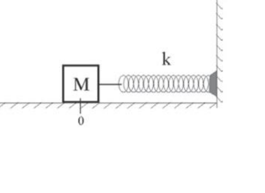
Topic: Conservation of Momentum, Oscillations & Waves Metodi: Conservation of Momentum, Simple Harmonic Motion Analysis, Hooke’s Law Competenze: Physical Reasoning, Mathematical Modeling Objects: Spring, Block Fonte: Testo (PDF) — p.116
PT84. I.P.T. N° 89 Paula Albarracín Devote, Cordoba.
Un blocco di massa M=980 g è a riposo su una superficie orizzontale, unito a un scarsa massa che L’altra parte è rigida. attaccato al muro. Una massa di 20 g di plastilina viene lanciato con una velocità orizzontale di 20 m/s colpendo e restando unito al blocco. La primavera si comprime a 4 cm e inizia a fare un movimento. oscillatorio. Suppongo che non ci sia un’arruzione. Trovare a) La costante elastica della primavera b) Il periodo di oscillazione della primavera
Topic: Conservation of Momentum, Oscillations & Waves Metodi: Conservation of Momentum, Simple Harmonic Motion Analysis, Hooke’s Law Competenze: Physical Reasoning, Mathematical Modeling Objects: Spring, Block Fonte: Testo (PDF) — p.116
PT84. The Commission has also adopted a number of proposals for the establishment of a European Parliament and Council meeting on the subject. I’m a devoted man, Cordoba.
A block of mass M=980 g is resting on a horizontal surface, attached to a The spring of despicable mass that On the other end it ‘s rigid . attached to the wall. A mass of 20 g plasticine is thrown with a horizontal speed of 20 m/s Shocking and sticking to the Block. The spring is compressed 4 cm And he starts making a move. The oscillatory. I assume there ‘s no roughing . Find out (a) The elastic constant of the spring (b) The period of spring oscillation
Topic: Conservation of Momentum, Oscillations & Waves Metodi: Conservation of Momentum, Simple Harmonic Motion Analysis, Hooke’s Law Competenze: Physical Reasoning, Mathematical Modeling Objects: Spring, Block Fonte: Testo (PDF) — p.116
Gane el premio
PT85. EES N° 75 Julio Cortázar* - UEGP N° 16 José Manuel Estrada* EES N° 149** *Resistencia - **Puerto Vilelas, Chaco.
Gane el premio En una feria, se gana una jirafa de peluche lanzando una moneda a un platito, el cual está en una repisa 1,5m más arriba en que la moneda abandona la mano. Si se lanza la moneda a 6,4m/s, 60º sobre la horizontal, caerá en el platito. a) Ubiquen un sistema de referencia para el fenómeno descripto. b) Hallar las componentes de la velocidad. c) Calcular el tiempo que tarda en tocar el platito. d) Calcular la distancia horizontal recorrida (alcance).
OAF 2019- 73
Topic: Newtonian Mechanics Metodi: Kinematic Equations, Vector Decomposition Competenze: Physical Reasoning Objects: Projectile Fonte: Testo (PDF) — p.116
Vincere il premio
PT85. CES N° 75 Giulio Cortázar* - UEGP N° 16 José Manuel Estrada* I dati relativi ai prodotti di cui all’allegato I sono stati riportati in appendice 6. La resistenza è di:
Guadagnate il premio In una fiera, si vince una giraffa di peluche lanciando una moneta su un piatto, che è su un’armatura di 1,5 metri più in alto che la moneta
- Lascia la mano. Se lanciate la moneta a 6,4 m/s, 60° sul orizzonte, cadrà nel
- Oh, è tutto buono. a) Disporre di un sistema di riferimento per il fenomeno descritto. b) Indicare i componenti della velocità. c) Calcolare il tempo necessario per suonare il piatto. d) Calcolare la distanza orizzontale percorsa (alcance).
OAF 2019- 73
Topic: Newtonian Mechanics Metodi: Kinematic Equations, Vector Decomposition Competenze: Physical Reasoning Objects: Projectile Fonte: Testo (PDF) — p.116
Win the prize
PT85. The Commission has also adopted a proposal for a Council Regulation (EEC) on the approximation of the laws of the Member States relating to the marketing of certain goods and services. The following information shall be provided: The Commission has not yet decided whether the measures to be taken should be considered compatible with the internal market.
Win the prize . At a fair, you win a teddy bear giraffe. Throwing a coin at a plate, which is On a raft 1.5m higher than the coin
- Let go of the hand. If you throw the coin at 6.4m/s, 60° above the horizontal, will fall in the It’s a little bit. (a) establish a reference system for the phenomenon described. (b) Find the components of the speed. (c) Calculate the time it takes to play the instrument. (d) Calculate the horizontal distance travelled (reach).
The following is the list of the countries of the European Union:
Topic: Newtonian Mechanics Metodi: Kinematic Equations, Vector Decomposition Competenze: Physical Reasoning Objects: Projectile Fonte: Testo (PDF) — p.116
Cuatro cargas
PT86. EES N° 75 Julio Cortázar* - UEGP N° 16 José Manuel Estrada* EES N° 149** *Resistencia - **Puerto Vilelas, Chaco.
Cuatro cargas Cuatro cargas puntuales se encuentran ubicadas en los vértices de un cuadrado, tomando como valor de q = 1x10-7 C y a=0.05m como muestra la figura:
a) Calcular la F12. b) Calcular la F32. c) Calcular la F42 (d=0.07m). d) Calcular la fuerza resultante sobre q2. e) Calcular el ángulo de la fuerza resultante.
Topic: Electrostatics Metodi: Coulomb’s Law, Vector Decomposition, Superposition Principle Competenze: Physical Reasoning, Mathematical Modeling Objects: Point Charge Fonte: Testo (PDF) — p.116
Quattro cariche
PT86. CES N° 75 Giulio Cortázar* - UEGP N° 16 José Manuel Estrada* I dati relativi ai prodotti di cui all’allegato I sono stati riportati in appendice 6. La resistenza è di:
Quattro cariche Quattro carichi puntati sono situati in i vertici di un quadrato, prendendo q = 1x10-7 C e a=0.05m come mostra la figura:
a) Calcolare la F12. b) Calcolare la F32. c) Calcolare la F42 (d=0.07m). d) Calcolare la forza risultante su q2. e) Calcolare l’angolo della forza risultante.
Topic: Electrostatics Metodi: Coulomb’s Law, Vector Decomposition, Superposition Principle Competenze: Physical Reasoning, Mathematical Modeling Objects: Point Charge Fonte: Testo (PDF) — p.116
The following conditions shall apply:
PT86. The Commission has also adopted a proposal for a Council Regulation (EEC) on the approximation of the laws of the Member States relating to the marketing of certain goods and services. The following information shall be provided: The Commission has not yet decided whether the measures to be taken should be considered compatible with the internal market.
Four charges . Four spot loads are located in the vertices of a square, taking as its value q = 1x10-7 C and a=0.05m as shown in Figure:
(a) Calculate the F12. (b) Calculate the F32. (c) Calculate the F42 (d=0.07m). (d) Calculate the resulting force on q2. (e) Calculate the angle of the resulting force.
Topic: Electrostatics Metodi: Coulomb’s Law, Vector Decomposition, Superposition Principle Competenze: Physical Reasoning, Mathematical Modeling Objects: Point Charge Fonte: Testo (PDF) — p.116
Tanque de nitrogeno
PT87. EES N° 75 Julio Cortázar* - UEGP N° 16 José Manuel Estrada* EES N° 149** *Resistencia - **Puerto Vilelas, Chaco.
Tanque de nitrógeno Un tanque cilíndrico grande contiene 0,75m3 de nitrógeno gaseoso a 300 K y 1,50x105 Pa. El tanque tiene un pistón ajustado que permite cambiar el volumen. Luego de un tiempo el volumen se reduce a 0,48 m3 y la temperatura aumenta a 430 K (R=8,31 𝐽 𝑀𝑜𝑙.𝐾). a) Calcular el número de moles del gas. b) Calcular la presión final del sistema.
Topic: Thermodynamics Metodi: Ideal Gas Law Competenze: Physical Reasoning Objects: Gas, Piston, Container Fonte: Testo (PDF) — p.116
Tanca di nitrogeno
PT87. CES N° 75 Giulio Cortázar* - UEGP N° 16 José Manuel Estrada* I dati relativi ai prodotti di cui all’allegato I sono stati riportati in appendice 6. La resistenza è di:
Tangiere di nitrogeno Un grande serbatoio cilindrico contiene 0,75 m3 di nitrogeno gassoso a 300 K e 1,50x105 Pa. Il serbatoio ha un pistone fisso che permette di cambiare il volume. Dopo un’altra Il volume si riduce a 0,48 m3 e la temperatura aumenta a 430 K (R=8,31 𝐽 Mol.K. a) Calcolare il numero di molli di gas. b) Calcolare la pressione finale del sistema.
Topic: Thermodynamics Metodi: Ideal Gas Law Competenze: Physical Reasoning Objects: Gas, Piston, Container Fonte: Testo (PDF) — p.116
The following is the list of the nitrogen tank types:
PT87. The Commission has also adopted a proposal for a Council Regulation (EEC) on the approximation of the laws of the Member States relating to the marketing of certain goods and services. The following information shall be provided: The Commission has not yet decided whether the measures to be taken should be considered compatible with the internal market.
Nitrogen tank . A large cylindrical tank contains 0.75m3 of gas-tight nitrogen at 300 K and 1.50x105 Pa. The tank has a tight piston that allows volume change. After a . The volume is reduced to 0,48 m3 and the temperature rises to 430 K (R=8,31 𝐽 Mol.K. (a) Calculate the number of moles of gas. (b) Calculate the final system pressure.
Topic: Thermodynamics Metodi: Ideal Gas Law Competenze: Physical Reasoning Objects: Gas, Piston, Container Fonte: Testo (PDF) — p.116
PT88. Escuela Superior de Comercio Prudencio Cornejo Bahía Blanca, Buenos Aires.
Una pelota P se encuentra pegada a la periferia de una noria de radio R. la noria comienza a girar cuando P está justamente en el punto más alto de la misma. La noria gira en sentido horario y con aceleración angular constante α. En el instante en que la noria ha dado una vuelta completa, la pelota P se despega de la noria. Durante todo el vuelo de P un fuerte viento ha empujado a la pelota dándole una aceleración horizontal constante av=g/2 hacia la derecha como indica la figura. La pelota P alcanza el suelo en el punto Q a una distancia H=5R del pie de la noria. Calcula la aceleración angular α de la noria. Expresar el resultado en función de R y g.
Topic: Newtonian Mechanics Metodi: Kinematic Equations, Vector Decomposition Competenze: Physical Reasoning, Mathematical Modeling Objects: Wheel, Ball, Projectile Fonte: Testo (PDF) — p.116
PT88. Scuola superiore di commercio Prudencio Cornejo Bahía Blanca, Buenos Aires.
Una palla P è attaccata alla periferia di una noria radio R. La noria Comincia a girare Quando P
- È così . Proprio al punto più alto della
- Sì, è lei stessa. La noria gira in senso orario e con accelerazione angolare costante α. En el L’ istante in cui la Noria ha dato un Un giro completo, la palla P si spalanca. della noria. Per tutto il volo di P un forte vento ha spinto la palla dando un’accelerazione orizzontale costante av=g/2 verso destra come indicato nella figura. La la palla P raggiunge il suolo al punto Q a una distanza H=5R dal piede della noria. Calcola l’accelerazione angolare α della noria. Esprimere il risultato in funzione di R e g.
Topic: Newtonian Mechanics Metodi: Kinematic Equations, Vector Decomposition Competenze: Physical Reasoning, Mathematical Modeling Objects: Wheel, Ball, Projectile Fonte: Testo (PDF) — p.116
PT88. Prudencio Cornejo High School of Commerce White Bay, from Buenos Aires.
A P ball is stuck to the periphery of an R-radio node. The Noria It starts . a Turn around When P It ‘s there . Right at the highest point of the I’m not. The noria is timed and with a constant angular acceleration α. En el The moment the noria gave a Full spin, the P ball is off. The northern part. Throughout P ‘s flight a strong wind has pushed the ball giving it a constant horizontal acceleration av=g/2 to the right as shown in the figure. La ball P reaches the ground at point Q at a distance H=5R from the foot of the noria. Calculate the angular acceleration α of the noria. Express the result in terms of R and g.
Topic: Newtonian Mechanics Metodi: Kinematic Equations, Vector Decomposition Competenze: Physical Reasoning, Mathematical Modeling Objects: Wheel, Ball, Projectile Fonte: Testo (PDF) — p.116
PT89. Escuela Superior de Comercio Prudencio Cornejo Bahía Blanca, Buenos Aires.
El depósito de la figura, que contiene agua y está abierto a la atmósfera, tiene un desagüe cilíndrico en el fondo, de 6 cm de diámetro interno en el que existe el vacío. Dicho desagüe está obturado por un tapón de corcho de 10 cm de altura y 0,3 g/cm3 de densidad, que ajusta perfectamente y que está unido mediante un hilo fino y resistente a un bloque de forma cúbica de 40 cm de lado, también de corcho de la misma densidad, que flota en el
74 - OAF 2019 agua. La parte superior del tapón está a 40 cm de profundidad. ¡Cuánto tiene que estar sumergido el bloque, como mínimo, para que el tapón se desprenda?
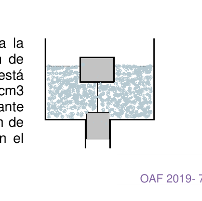
Topic: Fluid Mechanics Metodi: Hydrostatic Equilibrium, Free-Body Diagram Competenze: Physical Reasoning, Mathematical Modeling Objects: Block, String, Container Fonte: Testo (PDF) — p.116
PT89. Scuola superiore di commercio Prudencio Cornejo Bahía Blanca, Buenos Aires.
Il deposito della figura, che contiene acqua ed è aperto alla atmosfera, ha una scarica cilindrica al fondo, di 6 cm di diametro interno in cui esiste il vuoto. Questo è il disuoto. chiuso da un tappo di cork di 10 cm di altezza e 0,3 g/cm3 di densità, che si adatta perfettamente e che è unito da un filo sottile e resistente a un blocco cubo di 40 cm di diametro lato, anche di cork della stessa densità, che galleggia in
74 - OAF 2019 acqua. La parte superiore del tappo è a 40 cm di profondità. Quanto deve essere?
- Se non lo so, non lo so.
Topic: Fluid Mechanics Metodi: Hydrostatic Equilibrium, Free-Body Diagram Competenze: Physical Reasoning, Mathematical Modeling Objects: Block, String, Container Fonte: Testo (PDF) — p.116
PT89. Prudencio Cornejo High School of Commerce White Bay, from Buenos Aires.
The tank of the figure, which contains water and is open to the atmosphere, has a cylindrical drainage at the bottom, 6 cm of internal diameter in which the vacuum exists. That ‘s the drain . closed by a 10 cm high cork cap and 0,3 g/cm3 The density of the material is very high, it fits perfectly and is connected by a fine thread resistant to a 40 cm cubic block of side, also cork of the same density, floating in the
The Commission shall adopt delegated acts in accordance with Article 21 of this Regulation.
- What? The top of the cap is 40 cm deep. How long does it have to be? Soak the block in at least so the plug can come off?
Topic: Fluid Mechanics Metodi: Hydrostatic Equilibrium, Free-Body Diagram Competenze: Physical Reasoning, Mathematical Modeling Objects: Block, String, Container Fonte: Testo (PDF) — p.116
PT90. Escuela Superior de Comercio Prudencio Cornejo Bahía Blanca, Buenos Aires.
Se tiene una esfera de plomo de 750 g suspendida de un hilo. Se dispara contra ella un proyectil de acero de 15 g, cuya velocidad en el momento del impacto es de 300 m/s. el proyectil que llega horizontalmente se incrusta en la esfera de plomo. Calcular la elevación del desplazamiento que experimenta la esfera y el calentamiento producido, suponiendo que toda la energía desprendida en el choque se transforma en calor. Se admite que las temperaturas del proyectil y de la esfera sean idénticas en el momento del choque.
Datos Calor específico del plomo:0,03 Cal/g.ºC Calor específico del acero:0,12 Cal/g.ºC
Topic: Conservation of Momentum, Conservation of Energy Metodi: Conservation of Momentum, Conservation of Energy Competenze: Physical Reasoning Objects: Sphere, Projectile, Pendulum Fonte: Testo (PDF) — p.116
PT90. Scuola superiore di commercio Prudencio Cornejo Bahía Blanca, Buenos Aires.
Si ha una sfera di piombo di 750 g appesa a un filo. Si spara contro di noi . lei un proiettile di acciaio di 15 g, il cui velocità al momento dell’impatto è di 300 m/s. el proiettore che Arrivo si inserisce orizzontalmente nella sfera di
- Piombo. Calcolare la
- Elevamento di cui al spostamento sperimentato dalla sfera e il riscaldamento prodotto, supponendo che tutta l’energia scaricata nel lo shock si trasforma in calore. Si ammette che le temperature del proiettile e della sfera siano identiche al momento.
- lo scontro.
Datos Calore specifico del piombo:0,03 Cal/g.oC Calore specifico dell’acciaio:0,12 Cal/g.oC
Topic: Conservation of Momentum, Conservation of Energy Metodi: Conservation of Momentum, Conservation of Energy Competenze: Physical Reasoning Objects: Sphere, Projectile, Pendulum Fonte: Testo (PDF) — p.116
PT90. Prudencio Cornejo High School of Commerce White Bay, from Buenos Aires.
You have a lead ball of 750 g. suspended from a thread. He shoots at me . She’s a 15g steel projectile, whose Speed at impact time is 300 m/s. el The projectile . That It ‘s coming . It is embedded horizontally in the sphere of lead. Calculate la elevation of the The movement of the sphere and the warming produced, assuming That all the energy released in the shock turns to heat. The projectile and the sphere temperatures are assumed to be identical at the time The shock.
Data from the report The specific heat of lead:0,03 Cal/g.oC The specific heat of the steel:0,12 Cal/g.oC
Topic: Conservation of Momentum, Conservation of Energy Metodi: Conservation of Momentum, Conservation of Energy Competenze: Physical Reasoning Objects: Sphere, Projectile, Pendulum Fonte: Testo (PDF) — p.116
PT91. Instituto Padre Claret Ciudad de Córdoba.
Se le aplica una fuerza de 320 N a un resorte, lo que provoca en él un estiramiento de 10 cm. ¿Qué cantidad de energía potencial elástica almacena este mismo resorte cuando pende de él una masa de 45 kg?
Topic: Oscillations & Waves Metodi: Hooke’s Law, Energy Conservation Method Competenze: Physical Reasoning Objects: Spring Fonte: Testo (PDF) — p.116
PT91. - Il padre Claret Institute . Città di Córdoba.
Si applica una forza di 320 N ad una resorte, provocando in essa un allungamento di 10 cm. Quanta energia potenziale elastica stocca questa stessa primavera quando
- Un peso di 45 kg?
Topic: Oscillations & Waves Metodi: Hooke’s Law, Energy Conservation Method Competenze: Physical Reasoning Objects: Spring Fonte: Testo (PDF) — p.116
PT91. Father Claret Institute The city of Cordoba.
A force of 320 N is applied to a spring, causing a ten-strength stretch. cm. How much potential energy elasticity stores this same spring when hanging a 45-pound weight from him?
Topic: Oscillations & Waves Metodi: Hooke’s Law, Energy Conservation Method Competenze: Physical Reasoning Objects: Spring Fonte: Testo (PDF) — p.116
PT92. Instituto Padre Claret Ciudad de Córdoba.
Se arman dos circuitos como se muestran a continuación
Circuito A
Circuito B Tanto el circuito A como el circuito B fueron armados con lámparas de 3,5 Ω de resistencia y está fabricadas para funcionar con 6 V, soportando como máximo 8 V. De acuerdo a esto responde a) ¿Cuál es el valor de la resistencia equivalente de cada circuito? b) ¿Qué cantidad de hielo logrará fundir en una hora, por el efecto Joule, cada circuito? c) ¿Cuál de los dos circuitos funcionará mejor si una de sus lámparas se quema? Fundamenta Datos a considerar
- Calor de fusión del hielo 𝐻𝑓= 80 𝐶𝑎𝑙 𝑔
- Equivalente mecánico del calor 1 𝐶𝑎𝑙 ≡4,186 𝐽
OAF 2019- 75
Topic: Circuits, Thermodynamics Metodi: Equivalent Circuit Reduction, Kirchhoff’s Laws Competenze: Physical Reasoning Objects: Resistor, Battery Fonte: Testo (PDF) — p.116
PT92. - Il padre Claret Institute . Città di Córdoba.
Si mettono in funzione due circuiti come mostrato di seguito.
Circuito A
Circuito B Sia il circuito A che il circuito B erano armati con lampade di 3,5 Ω di resistenza e è costruita per funzionare con 6 V, supportando al massimo 8 V. De Secondo questo risponde a) Qual è il valore della resistenza equivalente di ciascun circuito? b) Quanta quantità di ghiaccio si può fondere in un’ora, per effetto Joule, ogni circuito? c) Quale dei due circuiti funzionerà meglio se una delle lampade viene accesa? Fondamenta Dati da considerare
- Calore di fusione del ghiaccio Hf= 80 Cal 𝑔
- Meccanica di calore equivalente 1 Cal 4,186 J
OAF 2019- 75
Topic: Circuits, Thermodynamics Metodi: Equivalent Circuit Reduction, Kirchhoff’s Laws Competenze: Physical Reasoning Objects: Resistor, Battery Fonte: Testo (PDF) — p.116
PT92. Father Claret Institute The city of Cordoba.
Two circuits are arranged as shown below
Circuit A
Circuit B Both circuit A and circuit B were armed with 3.5 Ω lamps of The vehicle is designed to operate at 6 V and to support a maximum of 8 V. De According to this he answers . (a) What is the value of the equivalent resistance of each circuit? (b) How much ice will be melted in one hour, by the Joule effect, each The circuit? (c) Which of the two circuits will work best if one of its lamps is burned? Fundamentals Data to be considered
- Heat of melting ice Hf= 80 Cal 𝑔
- Mechanical heat equivalent 1 Cal 4,186 J
The following information is provided:
Topic: Circuits, Thermodynamics Metodi: Equivalent Circuit Reduction, Kirchhoff’s Laws Competenze: Physical Reasoning Objects: Resistor, Battery Fonte: Testo (PDF) — p.116
PT93. Instituto Padre Claret Ciudad de Córdoba.
Considere un iceberg de 350 000 kg y encuentre a) Peso del iceberg b) Empuje que el iceberg experimenta c) Valor del volumen del iceberg que permanece sumergido y el correspondiente a la parte que emerge del agua
Datos a considerar
- Densidad del hielo 917 𝑘𝑔 𝑚3.
- Densidad del agua de mar 1030 𝑘𝑔 𝑚3
Topic: Fluid Mechanics Metodi: Hydrostatic Equilibrium Competenze: Physical Reasoning Objects: — Fonte: Testo (PDF) — p.116
PT93. - Il padre Claret Institute . Città di Córdoba.
Considerate un iceberg di 350.000 kg e trovate a) Peso dell’iceberg b) Spingere l’iceberg a sperimentare (c) Valore del volume dell’iceberg rimasta immerso e il corrispondente a la parte che emerge dall’acqua
Dati da considerare
- Densità del ghiaccio 917 𝑘𝑔 𝑚3.
- Densità dell’acqua di mare 1030 𝑘𝑔 𝑚3
Topic: Fluid Mechanics Metodi: Hydrostatic Equilibrium Competenze: Physical Reasoning Objects: — Fonte: Testo (PDF) — p.116
PT93. Father Claret Institute The city of Cordoba.
Consider an iceberg weighing 350,000 kg and find (a) Weight of the iceberg (b) Push the iceberg to experience (c) The value of the volume of the iceberg remaining submerged and the corresponding value to The part that emerges from the water.
Data to be considered
- Density of ice 917 𝑘𝑔 𝑚3.
- Sea water density 1030 𝑘𝑔 𝑚3
Topic: Fluid Mechanics Metodi: Hydrostatic Equilibrium Competenze: Physical Reasoning Objects: — Fonte: Testo (PDF) — p.116
El velero y el mar
PT94. ESETP N° 703 José Toschke Puerto Madryn, Chubut.
El velero y el mar Puerto Madryn es muchas cosas: una ciudad costera de bonitos balnearios y además es la capital nacional del buceo, esto la convierte en la ciudad balnearia más famosa de la Patagonia. Se puede disfrutar de sus playas o realizar actividades náuticas como kayak, windsurf o kite surf, hasta hacer buceo o el muy promocionado snorkel con lobos marinos. En recompensa de esto, y pensando en la 13° Edición de la Regata de “Copa de Ballenas, se ha generado una gran expectativa debido a este tradicional evento náutico, que no solo abordará la disciplina de Optimist, Laser y Veleros Cabinados, sino también se disputarán deportes en modalidad playa y shows culturales. Este campeonato le brindará al Golfo portuario, una importante imagen a nivel nacional e internacional, gracias a la presencia de alrededor de 300 embarcaciones que reunirán un total aproximado de 350 participantes de distintas instituciones náuticas de la Provincia del Chubut y del País. Las clases de embarcaciones convocadas para las regatas son principalmente: Optimist, Laser, Pampero, Snipe, Veleros Cabinados (PHRF), Windsurf, entre otros. Observando a este tipo de competencia es inevitable que surja la pregunta ¿cómo y por qué avanza un velero? Hasta los de tierra adentro sabemos contestar a esta pregunta: “porque el viento los empuja”. Esto es evidente cuando el viento viene por la “popa” (aunque ésta no es la condición más favorable para impulsar un velero moderno). Pero, ¿y si el viento es de costado? Esto requiere alguna discusión en la que la Física tiene la palabra y de ello va a tratar este problema. Por supuesto, el problema está basado en un modelo físico sencillo de velero elemental con una única vela, la mayor, es decir sin vela delantera o foque. Supondremos también que el velero navega en la dirección (rumbo) este a oeste con un viento que sopla de norte a sur. Los únicos elementos activos del velero que se van a considerar inicialmente son la vela y la orza (figura1). La orza es una especie de vela rígida situada bajo el casco, completamente sumergida y con un gran peso que contribuye a la estabilidad del velero. La vela y la orza actúan como el ala de un avión, salvo que sus planos son aproximadamente verticales y, en el caso de la orza, el fluido que la circunda es el agua
En la figura 2 se muestra la planta de un velero cuya vela recibe viento con una velocidad 𝑣𝑎 relativa al barco, que es la velocidad con que se percibe el viento desde el velero (viento aparente). Dicho viento produce dos fuerzas aerodinámicas: una de sustentación 𝑆 perpendicular a va, y otra de resistencia, 𝑅, en la direcciónde va. La componente 𝑆𝑋 de la sustentación es la responsable de hacer avanzar a la nave, mientras que la componente 𝑆𝑦 tiende a desplazarlo de costado, lo que, naturalmente, no interesa. De evitarlo se encarga la orza, situada longitudinalmente debajo del casco. Como se muestra en la figura 3, cuando el eje del velero forma un pequeño ángulo δ (abatimiento) con la
76 - OAF 2019 dirección de movimiento del velero (rumbo), sufre también unas fuerzas, hidrodinámicas en este caso, de sustentación 𝑆´ perpendicular a la velocidad V del velero, y de resistencia R′ paralela a dicha velocidad y en sentido opuesto, en la que también influye el casco del buque y el propio abatimiento.
Una vez establecidas estas nociones elementales de náutica, el problema que se plantea es el siguiente. Supongamos que un velero está navegando con un viento que sopla del Norte con una velocidad 𝑣 0= 15 nudos. En estas condiciones navega hacia el Oeste a V = 18 nudos de velocidad y con un abatimiento δ (figura 4).
a) Determine la velocidad va r del viento respecto al velero (viento aparente). Calcule su módulo va y su dirección β.
La superficie de la vela de nuestro velero con el viento a disposición y el reglaje (trimado) escogido, produce una sustentación S = 5,0 ×103 N. La eficiencia de las actuales velas es muy elevada, de forma que la resistencia que presentan es de tan sólo un 10% de la sustentación. Por lo tanto, en nuestro caso, R = 5,0 ×102 N.
b) Determine y calcule el módulo de la fuerza de sustentación S′ que tiene que generar la orza para que el velero siga manteniendo su rumbo exactamente hacia el Oeste.
El conjunto del casco en contacto con el agua (carena) y la orza son menos eficientes que la vela. En consecuencia, el “precio a pagar” es una fuerza de resistencia, R′ que puede estimarse en este caso como la cuarta parte de la sustentación S′.
c) Determine y calcule el módulo de la resistencia debida al conjunto vela y orza,
Rt = R + R′ y el ángulo θ que forma Rt con la dirección del movimiento del velero.
Los veleros de recreo, no destinados a competición, suelen estar provistos de un motor para facilitar las maniobras y, naturalmente, para poder navegar en ausencia de viento. Supongamos que, en estas condiciones, un velero de masa m = 2500 kg navega con una velocidad constante, V′ = 3,0 nudos, con su motor desarrollando una potencia P igual al 90% de su potencia máxima, Pmax =15CV.
OAF 2019- 77 d) Calcule la fuerza de resistencia, Fr que el agua opone al avance del barco.
El patrón maniobra el timón para cambiar el rumbo, de forma que el barco describe un arco de circunferencia de radio a =10 m. En estas circunstancias y considerando que el módulo de la velocidad del barco permanece constante, V ′ = 3,0 nudos, la fuerza neta que el agua hace sobre el barco, Ft, tiene dos componentes: una, Fc, que le obliga a describir la trayectoria circular y otra de resistencia igual a la anterior Fr más Fr′ = Fc / 4.
e) Determine y calcule la fuerza Fc.
f) Indique razonando si el motor del barco tiene suficiente potencia para realizar la maniobra indicada en el apartado anterior.
Nota El nudo es una unidad náutica de velocidad que equivale a 1 milla/hora. 1 milla (náutica) = 1,852 km 1 CV = 735,5 W

Topic: Newtonian Mechanics, Fluid Mechanics Metodi: Vector Decomposition, Free-Body Diagram, Physical Modeling Competenze: Physical Reasoning, Mathematical Modeling Objects: — Fonte: Testo (PDF) — p.116
Il velivolo e il mare
PT94. ESETP N° 703 José Toschke Port Madryn, Chubut.
Il velivolo e il mare Port Madryn è un’ottima città costiera di belle località balneari e è anche La capitale nazionale del diver, questo la rende la città balneare più famosa del mondo Patagonia. Si possono godere delle loro spiagge o fare attività nautiche come il kayak, windsurf o kite surf, fino a fare immersioni o il molto promosso snorkel con i lupi. Marinai. In cambio di questo, e pensando alla Copa di Regata Balene, si è generata una grande aspettativa per questo tradizionale evento nautico. che non solo affronterà la disciplina di Optimist, Laser e Cabin Veleros, ma anche si disputeranno sport in modalità spiaggia e spettacoli culturali. Questo campionato le
- il Portogallo, un’importante immagine a livello nazionale e internazionale, grazie alla presenza di circa 300 imbarcazioni che riuniranno un totale circa 350 partecipanti provenienti da diverse istituzioni nautiche della Provincia del Chubut e del Paese. Le classi di imbarcazioni convocate per le regate sono: Principali: Optimist, Laser, Pampero, Snipe, Veleros Cabinados (PHRF), Windsurf, tra gli altri. La concorrenza è così forte che si può chiedere come e perché. che cosa fa un vello? Anche quelli di terra in terra sanno rispondere a questa domanda: Perché il vento li spinge. Questo è evidente quando il vento viene per la poppa (anche se questa non è la condizione più favorevole per guidare una moderna barca da vela). Ma, E se il vento fosse di lato? Questo richiede una discussione in cui la fisica ha la La Commissione ha deciso di non intervenire. Naturalmente, il problema si basa su un modello fisico semplice di barca da vela elementare con una sola vela, la più grande, cioè senza vela di fronte o foco. Supponiamo anche che la barca si stia dirigendo in direzione (rumbo) da est a ovest con un vento che soffia da nord a sud. Gli unici elementi attivi del La prima tappa di riferimento è la vela e l’orzo (Figura 1). L’orso è un specie di vela rigida situata sotto il casco, completamente immersa e con un grande peso che contribuisce alla stabilità della barca. La candela e l’orzo agiscono come le ali di un aereo, tranne che i loro piani sono La pianta è di circa 25 mm e, nel caso dell’orzo, il fluido che la circonda è l’acqua.
La figura 2 mostra il piano di un vello la cui vela riceve un vento a una velocità. Si tratta di una velocità relativa alla nave, che è la velocità con cui si percepisce il vento dal velo. (Vento apparente). Questo vento produce due forze aerodinamiche: una di sostenimento S perpendicolare a va, e un’altra resistenza, R, nella direzione di va. La componente SX di Il supporto è responsabile di far avanzare la nave, mentre la Il componente Sy tende a spostarlo da un lato, cosa che naturalmente non interessa. De Per evitare questo, si occupi l’orzo, situato longitudinalmente sotto il casco. Come si vede in figura 3, quando l’asse della vela forma un piccolo angolo δ (abbassamento) con la
76 - OAF 2019 La direzione di movimento del velo (rumbo), subisce anche delle forze, idrodinamiche In questo caso, di sospensione S’ perpendicolare alla velocità V del velivolo, e di resistenza R′ parallela a tale velocità e in senso opposto, in cui influisce il cappello della nave e l’abbattimento stesso.
Una volta stabiliti questi concetti elementari di nautica, il problema che si pone è: E’ il prossimo. Supponiamo che un vello stia navigando con un vento che soffia dal nord con una velocità v 0= 15 nodi. In queste condizioni naviga verso ovest a V = 18 nodi di velocità e con un abbassamento δ (figura 4).
a) Determina la velocità del vento rispetto al velo (vento apparente). Calcola il modulo che va e la direzione β.
La superficie della vela della nostra barca a vela con il vento a disposizione e il regolamento (trimmato) Se il sistema di controllo è stato utilizzato, il sistema di controllo è stato utilizzato per la verifica del rischio. L’efficienza delle attuali candele La resistenza è così elevata che è di solo il 10% della resistenza. supporto. Quindi, nel nostro caso, R = 5,0 ×102 N.
b) Determina e calcola il modulo di forza di sostenimento S′ che deve Generare l’orzo per far sì che il velivolo continui a mantenere il suo corso esattamente verso ovest.
L’insieme del casco in contatto con l’acqua (carena) e l’orzo sono meno efficienti che la candela. Di conseguenza, il prezzo da pagare è una forza di resistenza, R′ che in questo caso può essere stimato come una quarta parte del supporto S′.
(c) Determina e calcola il modulo di resistenza dovuto all’insieme vela e orzo; Rt = R + R′ e l’angolo θ che forma Rt con la direzione del movimento della barca.
I velai da ricrezione, non destinati alla competizione, sono di solito dotati di un motore Per facilitare le manovre e, naturalmente, per poter navigare in assenza di vento. Supponiamo che, in queste condizioni, un velivolo di massa m = 2500 kg naviga con una velocità costante, V′ = 3,0 nodi, con il suo motore sviluppando una potenza P pari a 90% della sua potenza massima, Pmax = 15CV.
OAF 2019- 77 d) Calcolare la forza di resistenza, per il fatto che l’acqua si oppone all’avanzamento della nave.
Il padrone manipola il timone per cambiare direzione, in modo che la nave descriva un arco di radius di circonferenza a =10 m. In tali circostanze e considerando che il modulo di velocità della nave rimane costante, V ′ = 3,0 nodi, forza netta che l’acqua fa sulla nave, Ft, ha due componenti: uno, Fc, che lo costringe a descrivere la rotta circolare e un’altra resistenza pari alla precedente Fr più Fr′ = Fc / 4.
e) Determina e calcola la forza Fc.
f) Indicare in modo ragionevole se il motore della nave ha sufficiente potenza per effettuare la manovra indicata al precedente paragrafo.
Nota Il nodo è un’unità nautica di velocità che equivale a 1 milla/ora. 1 milla (nautica) = 1.852 km 1 CV = 735,5 W
Topic: Newtonian Mechanics, Fluid Mechanics Metodi: Vector Decomposition, Free-Body Diagram, Physical Modeling Competenze: Physical Reasoning, Mathematical Modeling Objects: — Fonte: Testo (PDF) — p.116
Sailing and the sea
PT94. The Commission has also adopted a proposal for a regulation on the protection of the environment. Port Madryn, Chubut.
The sailboat and the sea Port Madryn is a lot of things: a coastal town of beautiful beaches and it’s also The national diving capital, this makes it the most famous seaside town in the world. Patagony. You can enjoy its beaches or do water activities such as kayaking, windsurf or kite surfing, even scuba diving or the highly touted snorkel with wolves. The sailors. In reward for this, and thinking about the MSK0/> Edition of the Cup of Whales, there has been a lot of expectation due to this traditional nautical event, which will not only address the discipline of Optimist, Laser and Cabin Vessels, but also beach sports and cultural shows will be held. This championship is gonna be a big one . It will give the Gulf port an important image at national and international level. Thanks to the presence of around 300 boats that will bring together a total of The project will be implemented by the European Commission. Chubut and the Country. The classes of boats called for the races are The main ones are Optimist, Laser, Pampero, Snipe, Cabin Veloirs (PHRF), Windsurf, among others. The question of how and why is inevitable. What’s a sailboat doing? Even those on the ground know the answer to this question: ‘Cause the wind is pushing them. This is evident when the wind comes for the poppy (although this is not the most favourable condition for propelling a modern yacht). But, What if the wind is sideways? This requires some discussion in which physics has the I think that the Commission is going to take a very serious step. Of course, the problem is based on a Simple physical model of elemental sailing with a single sail, the largest, i.e. without a sail. front or front. We shall also assume that the sailing vessel is sailing in the direction (rumbo) East to west with a wind blowing from north to south. The only active elements of the The first vessel to be considered are the sail and the barley (Figure 1). The bear is a A rigid sail, located under the hull, completely submerged and with a large weight contributing to the stability of the vessel. The candle and the barley act like the wing of an airplane, except that their plans are The water is the fluid that surrounds the barley.
Figure 2 shows the floor of a sailboat whose sail is receiving wind at a speed It’s relative to the ship, which is the speed at which the wind is perceived from the sailboat. (apparent wind). This wind produces two aerodynamic forces: one of supporting force. S is perpendicular to go, and another resistance, R, in the direction of go. The SX component of The support is responsible for moving the ship forward, while the The Sy component tends to move it sideways, which is of course not of interest. De To avoid this, the barley, located longitudinally under the hull, is taken into account. As shown In Figure 3, when the axis of the sailboat forms a small angle δ (lowering) with the
The Commission shall adopt delegated acts in accordance with Article 76 of the Financial Regulation. The direction of movement of the sailboat (rumbo), also suffers some forces, hydrodynamic In this case, the S′ support perpendicular to the speed V of the vessel, and R′ parallel to and in the opposite direction of the speed at which it also influences the hull of the ship and the sinking itself.
Once these basic notions of nautics are established, the problem arises. It’s next. Suppose a sailboat is sailing with a north wind blowing with a V0 is equal to 15 knots. In these conditions, it sails westward at V = 18 knots and with a The following is the list of the following:
(a) Determine the wind speed with respect to the sailboat (apparent wind). Calculate your module goes and your β address.
The surface of the sail of our sailboat with the wind at its disposal and the adjustment (trimmed) The test chemical is a chemical compound with a chemical formula of approximately 0,5% by weight. The efficiency of current sails The resistance of the two is only 10% of the resistance of the two. support. Therefore, in our case, R = 5,0 ×102 N.
(b) Determine and calculate the support force module S′ that must be Generate the barley so that the sailboat keeps its course exactly To the west.
The whole hull in contact with water (carena) and the barley are less efficient That candle. Consequently, the price to be paid is a resistance force, R′ which is In this case, it can be estimated as a quarter of the support S′.
(c) Determine and calculate the modulus of resistance due to the sailing and barley combination, Rt = R + R′ and the angle θ forming Rt with the direction of sailboat movement.
Recreational sailing vessels, not intended for competition, are usually equipped with an engine To facilitate maneuvers and, of course, to be able to sail without wind. Suppose, under these conditions, a sailing vessel of m = 2500 kg mass sails with a constant speed, V′ = 3.0 knots, with its engine developing a power P equal to 90% of its maximum power, Pmax =15CV.
The Commission shall adopt implementing acts in accordance with Article 21 of this Regulation. (d) Calculate the resistance force, for water to resist the ship’s advance.
The pattern maneuvers the rudder to change course, so that the ship describes a arc radius of circumference a =10 m. In these circumstances and considering that the The speed of the ship remains constant, V ′ = 3.0 knots, net force What the water does on the ship, Ft, has two components: one, Fc, which forces you to describe the circular and other resistance path equal to the previous Fr plus Fr′ = Fc / 4.
(e) Determine and calculate the force Fc.
(f) Indicate by reasoning whether the engine of the ship has sufficient power to perform the the maneuver referred to in the previous paragraph.
Note The knot is a nautical unit of speed equal to 1 mile/hour. 1 nautical mile = 1,852 km 1 CV = 735,5 W
Topic: Newtonian Mechanics, Fluid Mechanics Metodi: Vector Decomposition, Free-Body Diagram, Physical Modeling Competenze: Physical Reasoning, Mathematical Modeling Objects: — Fonte: Testo (PDF) — p.116
Transferencia de calor
PT95. ESETP N° 703 José Toschke Puerto Madryn, Chubut.
Transferencia de calor Un contenedor cilíndrico de V = 44,8lt de volumen y paredes aislantes al calor está dividido a la mitad por medio de una pared, también aislante, y tiene conectada una resistencia eléctrica en el compartimento denominado A, tal como denota la figura, inicialmente cada compartimiento ( A y B) tiene un mol de Helio en estado gaseoso y volúmenes idénticos V0 a la misma temperatura T0 = 0°C. Haciendo circular una corriente eléctrica a través a la resistencia colocada en el compartimento A se cambia el estado termodinámico del sistema provocando el incremento de calor en dicho compartimento de forma gradual y lenta por efecto Joule, esto ocasiona que el gas en los diferentes compartimientos cambie sus propiedades de presión, volumen y temperatura.
Si después de un tiempo t, y por la acción térmica de la resistencia eléctrica, el gas en el compartimiento B alcanza una temperatura de T2 = 136.5 oC, se le pide calcule dicho tiempo, sabiendo que la resistencia tiene el valor R = 242 Ω y que está conectada a una fuente de voltaje de 220 V. Los siguientes pasos pueden ser de utilidad en dicho cálculo. Denotemos los valores finales en las variables del gas en cada compartimento de la siguiente manera: Valores finales: Compartimento A: (p1, V1, T1) Compartimento B: (p2, V2, T2)
donde, T2 = 136.5 oC. Recuerda que en un gas ideal hay cuatro procesos básicos con las siguientes propiedades:
78 - OAF 2019 Proceso Propiedad Ecuación que satisface el proceso Isotérmico T es constante 𝑝. 𝑉= 𝑐𝑜𝑛𝑠𝑡𝑎𝑛𝑡𝑒 Isobárico P es constante 𝑉 𝑇= 𝑐𝑜𝑛𝑠𝑡𝑎𝑛𝑡𝑒 Isocórico V es constante 𝑝 𝑇= 𝑐𝑜𝑛𝑠𝑡𝑎𝑛𝑡𝑒 Adiabático Q=0, no hay flujo de calor 𝑇. 𝑉𝛿−1 = 𝑐𝑜𝑛𝑠𝑡𝑎𝑛𝑡𝑒 donde δ = Cp / CV ; CV y Cp es la capacidad calorífica molar a volumen y presión constantes respectivamente. Para el Helio en estado gaseoso: 𝐶𝑣= 3 2 𝑅 𝑦 𝐶𝑝= 5 2 𝑅 La constante universal de los gases ideales es: R = 8.31 J/Kmol;
Consignas
-
Determina la presión y el volumen final del compartimente B (p2, V2)
-
Determina la presión, volumen y temperatura finales del compartimento A
-
Determina el cambio de energía en ambos compartimentos.
-
Usando que la resistencia del compartimento A tiene el valor R = 242 y que está conectada a una fuente de voltaje de 220 V, determina el tiempo t necesario que le toma a la resistencia generar el calor necesario para realizar el proceso descrito. ¿Existe trabajo WA y WB entre los compartimientos, durante el proceso? Si la respuesta es si ¿Cuál es la relación entre dichos trabajos?
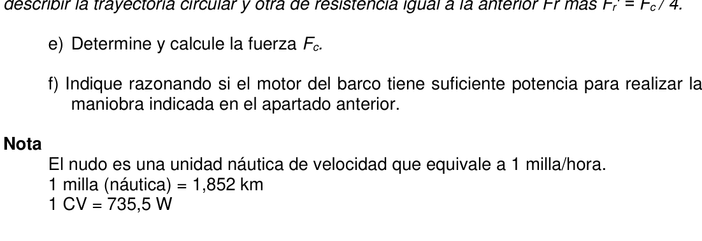
Topic: Thermodynamics Metodi: First Law of Thermodynamics, Ideal Gas Law, Thermodynamic Cycle Analysis Competenze: Physical Reasoning, Mathematical Modeling Objects: Gas, Resistor, Container Fonte: Testo (PDF) — p.116
Cambio di calore
PT95. ESETP N° 703 José Toschke Port Madryn, Chubut.
Trasferimento di calore Un contenitore cilindrico di V = 44,8 litri di volume e pareti isolanti al calore è diviso a metà attraverso un muro, anche isolante, e ha collegato un resistenza elettrica nel comparto denominato A, come indicato nella figura, Inizialmente ogni compartimento (A e B) ha un mol di elio in stato gassoso e V0 identici a temperatura T0 = 0°C. Circolando un flusso L’energia elettrica attraverso la resistenza posta nel compartimento A cambia lo stato La temperatura del sistema aumenta, causando un aumento del calore in tale comparto di La forma graduale e lenta per effetto Joule, che provoca che il gas in diversi i comparti cambiano le loro proprietà di pressione, volume e temperatura.
Se dopo un tempo t, e per l’azione termica della resistenza elettrica, il gas in Se il compartimento B raggiunge una temperatura di T2 = 136,5 oC, si chiede di calcolare tale tempo, sapendo che la resistenza ha il valore di R = 242 Ω e che è collegata a una Fonte di tensione di 220 V. I seguenti passi possono essere utili per questo calcolo. Indichiamo i valori finali nelle variabili del gas in ogni compartimento della come segue: Valori finali: Compartimento A: (p1, V1, T1) Compartimento B: (p2, V2, T2)
dove T2 = 136,5 oC. Ricorda che in un gas ideale ci sono quattro processi di base con i seguenti: proprietà:
78 - OAF 2019 Processo Propriedade Equazione che soddisfa il processo Isotermico T è costante 𝑝. V = costante Isobarico P è costante 𝑉 T = costante Isocorico V è costante 𝑝 T = costante Adiabatic Q=0, non c’è flusso di calore 𝑇. Vδ−1 = costante dove δ = Cp / CV; CV e Cp è la capacità calorica di mollare a volume e pressione costanti rispettivamente. Per gli elementi di calcolo di gas: 3 2 𝑅 𝑦 𝐶𝑝= 5 2 𝑅 La costante universale dei gas ideali è: R = 8,31 J/Kmol;
Consigne
-
Determina la pressione e il volume finale del compartimento B (p2, V2)
-
Determina la pressione, il volume e la temperatura finale del compartimento A
-
Determina il cambio di energia in entrambi i comparti.
-
Usando che la resistenza del compartimento A ha il valore R = 242 e che è collegato a una fonte di tensione di 220 V, determina il tempo t necessario per Ci vuole la resistenza per generare il calore necessario per eseguire il processo.
- Come ho descritto. C’è lavoro WA e WB tra i comparti, durante il processo? Se la risposta è sì, qual è la relazione tra tali lavori?
Topic: Thermodynamics Metodi: First Law of Thermodynamics, Ideal Gas Law, Thermodynamic Cycle Analysis Competenze: Physical Reasoning, Mathematical Modeling Objects: Gas, Resistor, Container Fonte: Testo (PDF) — p.116
The heat transfer rate shall be the maximum value of the heat transfer value.
PT95. The Commission has also adopted a proposal for a regulation on the protection of the environment. Port Madryn, Chubut.
Heat transfer A V = 44.8 litre cylindrical container with heat-insulating walls is divided in half by a wall, also insulating, and has a connected one electrical resistance in the compartment designated A, as indicated in the figure, Initially each compartment (A and B) has one mole of helium in gaseous state and V0 identical volumes at the same temperature T0 = 0°C. By circulating a current The electrical through to the resistance placed in the compartment A is changed state The system thermodynamics resulting in increased heat in the system compartment. This is a gradual and slow form by Joule effect, which causes the gas in the different The temperature of the air is the temperature of the air.
If after a time t, and by the thermal action of the electrical resistance, the gas in the The temperature of compartment B reaches T2 = 136.5 oC, you are asked to calculate this time, knowing that the resistance has the value R = 242 Ω and that it is connected to a a voltage source of 220 V. The following steps may be useful in this calculation. We denote the final values in the gas variables in each compartment of the as follows: Final values: The following is the list of the components of the vehicle: The following is the list of the components of the vehicle:
where T2 = 136.5 oC. Remember that in an ideal gas there are four basic processes with the following properties:
The Commission shall adopt delegated acts in accordance with Article 21 of this Regulation. The process Property Equation satisfying the process Isothermic T is constant 𝑝. V = constant Isobaric P is constant 𝑉 T = constant Isocoric . V is constant. 𝑝 T = constant Adiabatic Q=0, no heat flow 𝑇. Vδ−1 = constant where δ = Cp / CV; CV and Cp is the heat capacity to molar at constant volume and pressure respectively. For helium in gaseous state: Cv= 3 2 𝑅 𝑦 𝐶𝑝= 5 2 𝑅 The universal constant of ideal gases is: R = 8.31 J/Kmol;
Consigns
-
Determine the pressure and final volume of compartment B (p2, V2)
-
Determine the pressure, volume and final temperature of the compartment A
-
Determine the change of energy in both compartments.
-
Using that resistance of compartment A has the value R = 242 and that is connected to a 220 V voltage source, determines the time t required to It takes the resistance to generate the heat necessary to perform the process. described. Is there any WA and WB work between the compartments, during the process? If the answer is yes, what is the relationship between these jobs?
Topic: Thermodynamics Metodi: First Law of Thermodynamics, Ideal Gas Law, Thermodynamic Cycle Analysis Competenze: Physical Reasoning, Mathematical Modeling Objects: Gas, Resistor, Container Fonte: Testo (PDF) — p.116
Puente de Wheatstone
PT96. ESETP N° 703 José Toschke Puerto Madryn, Chubut.
Puente de Wheatstone El puente de Wheatstone es un método muy exacto para medir resistencias en el intervalo de 1Ω a 1MΩ. En modelos comerciales del puente de Wheatstone, son posible exactitudes de ± 0.1%. El circuito tal como se muestra en la figura.
OAF 2019- 79 El circuito conocido como puente de Wheatstone se compone de 4 resistores, una fuente de voltaje CD (usualmente una batería Ɛ) y un detector conocido como galvanómetro, tal como se aprecia en la siguiente figura. El mismo se utiliza para determinar el valor de un resistor desconocido Rx por comparación con tres resistores R1, R2 y R3 conocidos (con mucha precisión) cuyos valores resistivos se pueden modificar. El puente se alimenta con una fuente de tensión continua y En este caso se puede demostrar que se verifica la siguiente relación: Normalmente el aparato posee un mando (señalado “A” en la figura) que permite variar el cociente ( 𝑅2 𝑅1) de forma que tome los valores 103, 102, 10, 1, 10-1, 10-2,… Por otra parte, el mando (señalado “B” en la figura) que permite variar la resistencia R3 indica el valor de esta resistencia en cada instante. Entonces, para medir una resistencia RX conectada en los terminales T con el puente de Wheatstone, se accionan los mandos A y B de modo de variar los valores de la relación ( 𝑅2 𝑅1) y R3 respectivamente, luego variando solo el valor de la resistencia R3 a través del mando B se ajusta su valor hasta conseguir que el galvanómetro (que es un amperímetro muy sensible) indique que la corriente IG tiene un valor nulo (situación conocida como puente equilibrado).
a) Bajo esta situación, demuestre que la resistencia desconocida está dada por:
𝑅𝑥= 𝑅3 . 𝑅2
𝑅1
(Este método permite una precisión muy elevada al comparar resistores.)
b) Si el galvanómetro G muestra una desviación nula cuando R2 = 850.0 Ω, R1 =
15.00 Ω y R3 = 33.48 Ω, ¿cuál es el valor de la resistencia desconocida Rx?
Finalmente si R1 = 100.00 Ω, R2 = 40.00 Ω, R3 = 125.00 Ω y Rx = 37.50 Ω, y si se
sustituye el galvanómetro por su resistencia interna Rg = 25Ω. Determine la corriente y la
potencia que suministra una fuente de valor Ɛ = 40V al puente.
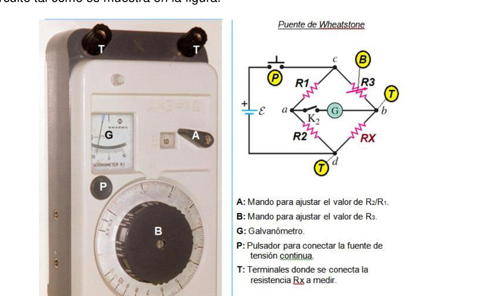
Topic: Circuits Metodi: Kirchhoff’s Laws, Equivalent Circuit Reduction Competenze: Physical Reasoning, Mathematical Modeling Objects: Resistor, Galvanometer, Battery Fonte: Testo (PDF) — p.116
Ponte di Wheatstone
PT96. ESETP N° 703 José Toschke Port Madryn, Chubut.
Il ponte di Wheatstone Il ponte di Wheatstone è un metodo molto preciso per misurare le resistenze nel intervallo da 1Ω a 1MΩ. In modelli commerciali del ponte di Wheatstone, sono possibili le accuratezze ± 0,1%. Il circuito come mostrato nella figura.
OAF 2019- 79 Il circuito noto come ponte di Wheatstone è composto da 4 resistori, una fonte. di tensione CD (di solito una batteria Ɛ) e un rilevatore noto come galvanometro, tal come si vede nella figura seguente. Lo stesso viene utilizzato per determinare il valore di un resistore sconosciuto Rx rispetto a tre resistori R1, R2 e R3 conosciuti (con La maggior parte dei dati relativi ai valori resistenti sono stati modificati. Il ponte è alimentato da una fonte di tensione continua e in questo caso si può dimostrare che si verifica il seguente rapporto: Normalmente l’apparecchio dispone di un comando (indicato A nella figura) che consente di variare il
- il tasso di 𝑅2 R1) in modo da prendere i valori 103, 102, 10, 1, 10-1, 10-2,… Inoltre, il comando (indicato B nella figura) che permette di variare la resistenza R3 indica il valore di resistenza in ogni istante. Quindi, per misurare una resistenza RX collegata ai terminali T con il ponte di Wheatstone, si attivano i controlli A e B in modo da variare i valori del rapporto ( 𝑅2 R1) e R3 rispettivamente, quindi variando solo il valore della resistenza R3 attraverso Il comando B regola il suo valore fino a ottenere che il galvanometro (che è un amperetro molto sensibile) indica che il corrente IG ha un valore nullo (situazione nota come Ponte bilanciata).
a) In questa situazione, dimostrare che la resistenza sconosciuta è data da: 𝑅𝑥= 𝑅3 . 𝑅2 𝑅1 (Questo metodo permette una precisione molto elevata nel confrontare le resistenze.) b) Se il galvanometro G mostra una deviazione zero quando R2 = 850.0 Ω, R1 = 15.00 Ω e R3 = 33.48 Ω, qual è il valore della resistenza sconosciuta Rx? Infine, se R1 = 100,00 Ω, R2 = 40,00 Ω, R3 = 125,00 Ω e Rx = 37,50 Ω, e se sostituisce il galvanometro con la sua resistenza interna Rg = 25Ω. Determina la corrente e la potenza che fornisce una fonte di valore Ɛ = 40V al ponte.
Topic: Circuits Metodi: Kirchhoff’s Laws, Equivalent Circuit Reduction Competenze: Physical Reasoning, Mathematical Modeling Objects: Resistor, Galvanometer, Battery Fonte: Testo (PDF) — p.116
The Commission shall adopt implementing acts in accordance with Article 21 of Regulation (EC) No 1272/2009.
PT96. The Commission has also adopted a proposal for a regulation on the protection of the environment. Port Madryn, Chubut.
Wheatstone Bridge . Wheatstone Bridge is a very accurate method of measuring resistance in the the range from 1Ω to 1MΩ. In commercial models of Wheatstone Bridge, they are possible. The following conditions shall apply: The circuit as shown in the figure.
The Commission shall adopt implementing acts in accordance with Article 21 of the Financial Regulation. The circuit known as Wheatstone Bridge consists of 4 resistors, one source a CD voltage (usually an Ɛ battery) and a detector known as a galvanometer, such as As shown in the following figure. It is used to determine the value of a Unknown resistor Rx compared to three known resistors R1, R2 and R3 (with The results of the study are presented in the following sections: The bridge is powered by a continuous voltage source and in this case you can demonstrate that the following relationship is true: The apparatus normally has a control (indicated A in the figure) which allows the to vary the The ratio ( 𝑅2 R1) so that it takes the values 103, 102, 10, 1, 10-1, 10-2,… On the other hand, the The control (indicated B in the figure) allowing the resistance to be varied R3 indicates the value of This resistance at every moment. So to measure an RX resistance connected at the T terminals with the bridge of Wheatstone, the A and B controls are actuated so that the values of the ratio vary ( 𝑅2 R1) and R3 respectively, then varying only the value of the resistance R3 through the Control B adjusts its value until you get that galvanometer (which is an ampere Very sensitive) indicates that the current IG has a zero value (situation known as (Based bridge).
(a) Under this situation, prove that the unknown resistance is given by: 𝑅𝑥= 𝑅3 . 𝑅2 𝑅1 (This method allows for very high accuracy when comparing resistors.) (b) If the galvanometer G shows a zero deviation when R2 = 850.0 Ω, R1 = 15.00 Ω and R3 = 33.48 Ω, what is the value of the unknown resistance Rx? Finally, if R1 = 100.00 Ω, R2 = 40.00 Ω, R3 = 125.00 Ω and Rx = 37.50 Ω, and if replace the galvanometer with its internal resistance Rg = 25Ω. Determine the current and the current. Power supplying a source of value Ɛ = 40V to the bridge.
Topic: Circuits Metodi: Kirchhoff’s Laws, Equivalent Circuit Reduction Competenze: Physical Reasoning, Mathematical Modeling Objects: Resistor, Galvanometer, Battery Fonte: Testo (PDF) — p.116
Termodinamica
PT97. Escuela Técnica Alfredo Carlos Passera Mocoretá, Corrientes.
Termodinámica En un laboratorio científico estudia el fenómeno de dilatación, en su experimento desea encajar perfectamente un anillo de cobre en un cilindro. El anillo tiene un radio de 2 cm a 20 °C y un coeficiente de dilatación lineal de 17x10-6 1/°C. Determine a que temperatura el anillo debe ser calentado para que sea introducido en un cilindro cuya área de base es igual a 15 cm2.
Topic: Thermodynamics Metodi: Physical Modeling Competenze: Physical Reasoning Objects: Cylinder Fonte: Testo (PDF) — p.116
Termodinamica
PT97. Scuola tecnica Alfredo Carlos Passera Mocoretá, Corrientes.
Termodinamica In un laboratorio scientifico studia il fenomeno della dilatazione, nel suo esperimento desidera adatta perfettamente un anello di rame a un cilindro. L’ anello ha un raggio di 2 cm a 20 °C e un coefficiente di dilatazione lineare di 17x10-6 1/°C. Determina a che temperatura il anello deve essere riscaldato per essere inserito in un cilindro la cui superficie di base è pari a 15 cm2.
Topic: Thermodynamics Metodi: Physical Modeling Competenze: Physical Reasoning Objects: Cylinder Fonte: Testo (PDF) — p.116
The following table shows the results of the calculations:
PT97. The school of technology Alfredo Carlos Passera It’s a mockery, currents.
The thermodynamics In a scientific laboratory he studies the phenomenon of dilation, in his experiment he wants to fit a copper ring perfectly into a cylinder. The ring has a radius of 2 cm to 20 °C and a linear dilation coefficient of 17x10-6 1/°C. Determine at what temperature The ring must be heated to be inserted into a cylinder whose base area is equal to 15 cm2.
Topic: Thermodynamics Metodi: Physical Modeling Competenze: Physical Reasoning Objects: Cylinder Fonte: Testo (PDF) — p.116
Electricidad
PT98. Escuela Técnica Alfredo Carlos Passera Mocoretá, Corrientes.
Electricidad Un circuito R.L.C. está formado por una resistencia de 0,2 Kohm, una bobina de 200 uH y un capacitor de 15 uF conectados en serie a una fuente de alimentación alterna de 250 V, 50 Hz. Calcular: a) Reactancia del circuito b) Impedancia total del circuito c) Corriente total del circuito d) Angulo de desfase entre la tensión y la intensidad e) Potencia Activa, Reactiva y Aparente del circuito f) Factor de potencia del circuito
80 - OAF 2019
Topic: Circuits Metodi: Equivalent Circuit Reduction Competenze: Physical Reasoning, Mathematical Modeling Objects: Resistor, Inductor, Capacitor Fonte: Testo (PDF) — p.116
Elettricità
PT98. Scuola tecnica Alfredo Carlos Passera Mocoretá, Corrientes.
L’ elettricità Un circuito R.L.C. è costituito da una resistenza di 0,2 Kohm, una bobina di 200 uH e un condensatore a 15 uF collegato in serie ad una fonte di alimentazione alternativa di 250 V, 50 Hz. Calcolare: a) Reattitudine del circuito b) Impedanza totale del circuito c) Corrente totale del circuito d) Angolo di svantaggio tra tensione e intensità e) Potenza attiva, reativa e apparente del circuito f) fattore di potenza del circuito
80 - OAF 2019
Topic: Circuits Metodi: Equivalent Circuit Reduction Competenze: Physical Reasoning, Mathematical Modeling Objects: Resistor, Inductor, Capacitor Fonte: Testo (PDF) — p.116
The following information shall be provided:
PT98. The school of technology Alfredo Carlos Passera It’s a mockery, currents.
Electricity A R.L.C. circuit . It consists of a resistance of 0,2 Kohm, a coil of 200 uH and a 15 uF capacitor connected in series to a 250 V alternating power supply, 50 Hz. Calculation: (a) Reactance of the circuit (b) Total impedance of the circuit (c) Total current of the circuit (d) Angle of deflection between voltage and intensity (e) Active, reactive and apparent power of the circuit (f) Power factor of the circuit
The following is the list of the countries of the European Union:
Topic: Circuits Metodi: Equivalent Circuit Reduction Competenze: Physical Reasoning, Mathematical Modeling Objects: Resistor, Inductor, Capacitor Fonte: Testo (PDF) — p.116
Cinematica
PT99. Escuela Técnica Alfredo Carlos Passera Mocoretá, Corrientes.
Cinemática Un automóvil de 800 kg de masa que viaja a 20 m/s debe detenerse en un semáforo que esta 55m más delante. a) Calcular la fuerza mínima necesaria, suponiendo que se la comoenza a aplicar cuando faltan 50 m para el semáforo, y se mantiene constante. b) Calcular el tiempo demorado para frenar. c) Calcular la velocidad cuando faltan 2 m para el semáforo. Graficar posición y velocidad en función del tiempo.
Topic: Newtonian Mechanics Metodi: Kinematic Equations, Newton’s Law of Gravitation Competenze: Physical Reasoning Objects: — Fonte: Testo (PDF) — p.116
Cinematica
PT99. Scuola tecnica Alfredo Carlos Passera Mocoretá, Corrientes.
Cinematica Un’auto di 800 kg di massa che viaggia a 20 m/s deve fermarsi in un semaforo che E’ 55 metri di più. a) Calcolare la forza minima necessaria, supponendo che essa sia comodamente applicata quando manca 50 metri per il semaforo, e resta costante. b) Calcolare il tempo impiegato per frenare. c) Calcolare la velocità quando manca 2 m per il semaforo. Grafici di posizione e velocità in base al tempo.
Topic: Newtonian Mechanics Metodi: Kinematic Equations, Newton’s Law of Gravitation Competenze: Physical Reasoning Objects: — Fonte: Testo (PDF) — p.116
The Commission shall adopt delegated acts in accordance with Article 21 of this Regulation.
PT99. The school of technology Alfredo Carlos Passera It’s a mockery, currents.
I ‘m a filmmaker . A car of 800 kg mass travelling at 20 m/s must stop at a traffic light which is It’s 55m ahead. (a) Calculate the minimum force required, assuming that it is easy to apply When the traffic light is 50 meters away, and it’s constant. (b) Calculate the time taken to brake. (c) Calculate the speed when 2 m are missing for the traffic light. Graph position and speed based on time.
Topic: Newtonian Mechanics Metodi: Kinematic Equations, Newton’s Law of Gravitation Competenze: Physical Reasoning Objects: — Fonte: Testo (PDF) — p.116
PT100. Escuela Modelo de San Juan Ciudad de San Juan.
Un Joule (J) es el trabajo necesario para elevar una manzana grande hasta una altura de 50 cm. a) ¿Cuál es la masa de la manzana?. Esta misma manzana proporciona al ingerirla unas 100 cal (418 J), nuestros músculos transforman en trabajo mecánico sólo un 20% de la energía asimilada. b) ¿Se podrá levantar una bolsa conteniendo 50 de estas manzanas con la energía aportada por una de ellas (manteniendo constantes las reservas del organismo?. En caso afirmativo, indique la altura a la que se podría llegar.
Topic: Order-of-Magnitude Estimation, Conservation of Energy Metodi: Order-of-Magnitude Estimation, Energy Conservation Method Competenze: Physical Reasoning Objects: — Fonte: Testo (PDF) — p.116
PT100. Scuola Modello di San Giovanni Città di San Giovanni.
Un Joule (J) è il lavoro necessario per sollevare una grande mela a una altezza di 50 cm. a) Qual è la massa dell’appella? Questa stessa mela si fornisce mangiandola Circa 100 cal, i nostri muscoli si trasformano in lavoro meccanico solo. un 20% dell’energia assimilata. b) Si può sollevare un sacchetto contenente 50 di questi mele con energia La Commissione ha adottato una decisione che prevede che il sistema di sicurezza sia stato adottato in base a una decisione adottata dal Consiglio. Se sì, indicare l’altezza che si potrebbe raggiungere.
Topic: Order-of-Magnitude Estimation, Conservation of Energy Metodi: Order-of-Magnitude Estimation, Energy Conservation Method Competenze: Physical Reasoning Objects: — Fonte: Testo (PDF) — p.116
PT100. The San Juan Model School City of San Juan.
A Joule (J) is the work required to lift a large apple to a height of 50 cm. (a) What is the mass of the apple? This same apple provides when ingested . About 100 calories, our muscles transform into mechanical work only. 20% of the energy absorbed. (b) Can a bag containing 50 of these apples be lifted with energy? The Commission has already adopted a proposal for a regulation on the management of the Community’s financial resources. If so, indicate the height to which it could be reached.
Topic: Order-of-Magnitude Estimation, Conservation of Energy Metodi: Order-of-Magnitude Estimation, Energy Conservation Method Competenze: Physical Reasoning Objects: — Fonte: Testo (PDF) — p.116
PT101. Escuela Modelo de San Juan Ciudad de San Juan.
Una familia viaja en su auto por una ruta cualquiera de la república argentina; el viaje se
torna monótono y el conductor cuenta los kilómetros que va recorriendo con ayuda de los
hitos al costado de la ruta. Un hecho en particular lo llena de incertidumbre y alimenta su
curiosidad:
Memoriza un número de dos dígitos que señala el kilometraje en determinada posición,
luego de transcurrir una hora, con cierta sorpresa observa otro hito que muestra el
kilometraje compuesto por los mismos dígitos pero invertidos. La sorpresa será aún
mayor cuando al transcurrir exactamente una hora más, vuelven a aparecer los mismos
dígitos iniciales pero separados por un cero (formando un número de tres dígitos).
Usted que es un estudiante avanzado de física, debe explicarle al conductor la razón
científica para lo que le acaba de ocurrir. En dicha explicación debe informar los números
que aparecían en cada hito como así también la velocidad del auto; que por cierto, fue
constante!!!
OAF 2019- 81
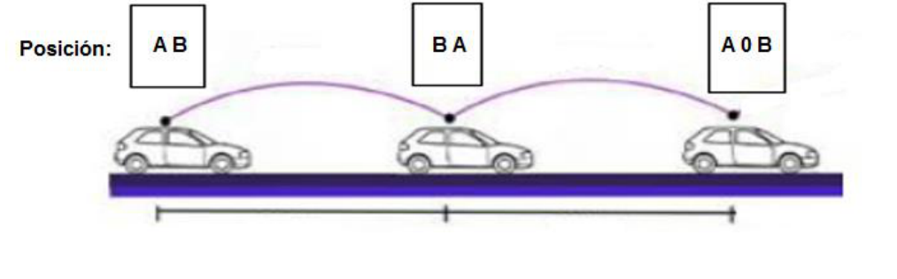
Topic: Mathematics, Newtonian Mechanics Metodi: Kinematic Equations Competenze: Physical Reasoning, Mathematical Modeling Objects: — Fonte: Testo (PDF) — p.116
PT101. Scuola Modello di San Giovanni Città di San Giovanni.
Una famiglia viaggia in auto su un percorso che sia quello della Repubblica argentina; il viaggio è Torna monotono e il conducente conta i chilometri che percorre con l’aiuto dei I monumenti sul lato della strada. Un fatto particolare lo riempie di incertezza e alimenta il suo curiosità: Memorizza un numero di due cifre che indica il kilometraggio in una posizione determinata, Dopo un’ora, con una certa sorpresa, osserva un altro traguardo che mostra il il kilometraggio composto dalle stesse cifre ma invertite. La sorpresa sarà ancora più grande quando, esattamente un’ora dopo, riescono a comparire gli stessi. Numeri iniziali ma separati da uno zero (formando un numero di tre cifre). Tu, che sei uno studente di fisica avanzato, devi spiegare al conducente il motivo. Scienziato per quello che ha appena avuto. In tale spiegazione deve indicare i numeri che si trovavano in ogni punto di riferimento, così come la velocità della macchina; che, per inciso, era costante!!!
OAF 2019- 81
Topic: Mathematics, Newtonian Mechanics Metodi: Kinematic Equations Competenze: Physical Reasoning, Mathematical Modeling Objects: — Fonte: Testo (PDF) — p.116
PT101. The San Juan Model School City of San Juan.
A family travels in their car on any route from the Argentine Republic; the journey is It turns monotonous and the driver counts the miles he’s travelling with the help of the drivers. landmarks along the side of the road. A particular fact fills him with uncertainty and feeds him. I ‘m curious . Memorize a two digit number indicating the mileage at a given position, After an hour, he is surprised to see another milestone showing the kilometre composed of the same digits but reversed. The surprise will still be The biggest is when exactly one hour later, the same ones reappear. Initial digits but separated by a zero (forming a three-digit number). You who are an advanced student of physics, must explain to the driver the reason. scientist for what just happened to him. In this explanation you must report the numbers And it was the speed of the car, which, by the way, was constantly!!!
The following information shall be provided:
Topic: Mathematics, Newtonian Mechanics Metodi: Kinematic Equations Competenze: Physical Reasoning, Mathematical Modeling Objects: — Fonte: Testo (PDF) — p.116
PT102. Escuela Modelo de San Juan Ciudad de San Juan.
La siguiente figura muestra la estructura típica de una neurona (a modo ilustrativo).La membrana (10 nm de espesor) tiene proteínas llamadas canales iónicos, que forman poros y regulan el flujo de los iones a través de ella. La concentración de estos iones dentro y fuera de la celda conduce a un voltaje, o potencial en reposo de membrana (∆𝑣= 𝑉𝑑𝑒𝑛𝑡𝑟𝑜− 𝑉𝑓𝑢𝑒𝑟𝑎= −70 𝑚𝑉).
Considerando condiciones de potencial en reposo, responda: a) ¿En qué zona (interior o exterior) hay exceso de carga positiva? b) Encuentre el trabajo realizado por el sistema para que un catión Na(+1,60 . 10−19 𝐶) atraviese la membrana y la variación de energía potencial resultante. c) El trabajo realizado por el sistema para que otro anión Cl (−1,60 . 10−19 𝐶) atraviese la membrana y la variación de energía potencial resultante. d) Los procesos anteriores, ¿ocurrirían espontáneamente si los canales proteicos estuvieran abiertos permanentemente? ¿Por qué? Explique en términos de potencial eléctrico. e) Esboce en un dibujo aparte, la disposición de las superficies equipotenciales dentro y fuera de la membrana del axón.
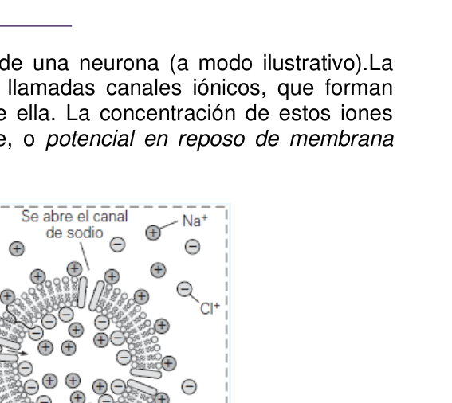
Topic: Electrostatics, Biology Metodi: Electric Potential Method Competenze: Physical Reasoning Objects: Membrane Fonte: Testo (PDF) — p.116
PT102. Scuola Modello di San Giovanni Città di San Giovanni.
La figura seguente mostra la struttura tipica di un neurone (in modo illustrativo). La membrana (10 nm di spessore) ha proteine chiamate canali ionici, che formano I porosi e i sistemi di controllo del flusso degli ioni attraverso di essa. La concentrazione di questi ioni all’interno e all’esterno della cella conduce ad un tensione, o potenziale a riposo di membrana (∆v= Intra−Vastera= −70 mV).
Considerando le condizioni di potenziale in riposo, rispondi: a) In quale zona (interna o esterna) vi è un eccesso di carico positivo? b) Trova il lavoro svolto dal sistema per un cation Na(+1,60 . 10−19 C) attraversare la membrana e la variazione di energia potenziale che ne deriva. c) Il lavoro svolto dal sistema per un altro anione Cl (−1,60 . 10−19 𝐶) la membrana e la variazione di energia potenziale risultante. d) I processi precedenti, si sarebbero verificati spontaneamente se i canali proteici sarebbero stati aperti per sempre? - Perché? Esplica in termini di Potenziali elettrici. e) Sottolinea in un disegno separato l’arredamento delle superfici equipotenziali all’interno e all’esterno della membrana dell’asse.
Topic: Electrostatics, Biology Metodi: Electric Potential Method Competenze: Physical Reasoning Objects: Membrane Fonte: Testo (PDF) — p.116
PT102. The San Juan Model School City of San Juan.
The following figure shows the typical structure of a neuron (in illustrative form). The membrane (10 nm thick) has proteins called ion channels, which form They’re going to pore and regulate the flow of ions through it. The concentration of these ions inside and outside the cell leads to a voltage, or membrane resting potential (∆v=In-out = -70 mV)
Considering potential conditions at rest, answer: (a) In which area (internal or external) is there an excess of positive charge? (b) Find the work done by the system to make a cation Na(+1,60 . 10−19 C) passes through the membrane and the potential energy variation The resulting. (c) The work done by the system to make another anion Cl (−1,60 . 10−19 𝐶) The resulting potential energy variation. (d) The above processes would occur spontaneously if the protein channels were were they permanently open? - Why? - I don’t know. Explain in terms of electrical potential. (e) Draw a separate drawing of the layout of the equipotential surfaces inside and outside the axon membrane.
Topic: Electrostatics, Biology Metodi: Electric Potential Method Competenze: Physical Reasoning Objects: Membrane Fonte: Testo (PDF) — p.116
PT103. Escuela Nueva Juan Mantovani Argüello, Córdoba.
Dos trenes de carga A y B que llevan un solo vagón cada uno, se encuentran enfrentados en la misma vía a 100km de distancia. Las locomotoras de ambos trenes tienen una masa de 3,9Tn mientras que los vagones tienen una masa total de 3,5Tn y 2,9Tn. En el momento que se describe, los trenes viajan con la misma rapidez de 116km/h y sus locomotoras realizan una fuerza constante de impulso de 20000N. Considerando que solamente existe rozamiento entre las vías y las ruedas de los trenes, con coeficiente de rozamiento µ=0,04.
a) Dibujar los diagramas de cuerpo libre de los dos trenes en ese momento, indicando el valor de las fuerzas intervinientes. b) Calcular la potencia en HP utilizada por los motores de cada locomotora. c) Calcular el tiempo que demorarán los trenes en impactar. d) Suponiendo que ambos maquinistas dejan de acelerar cuando faltan 4km para el choque: ¿Cuál será la nueva velocidad de impacto?
82 - OAF 2019
Topic: Newtonian Mechanics Metodi: Kinematic Equations, Free-Body Diagram, Newton’s Law of Gravitation Competenze: Physical Reasoning Objects: Cart Fonte: Testo (PDF) — p.116
PT103. Scuola Nuova Juan Mantovani Argüello, Cordoba.
Due treni da carico A e B che portano un solo vagone ciascuno, si trovano di fronte sulla stessa strada a 100 km di distanza. Le locomotive di entrambi i treni hanno una La massa totale dei vagoni è di 3,9 Tn, mentre la massa totale dei vagoni è di 3,5 Tn e 2,9 Tn. Al momento descritto, i treni viaggiano alla stessa velocità di 116 km/h e i loro le locomotive hanno una forza di impulso costante di 20000N. Considerando che La maggior parte dei treni sono in condizioni di rottura. Raggiunta di un’ampia capacità di calcolo
a) Disegnare i diagrammi di corpo libero dei due treni in quel momento, Indicando il valore delle forze intervenute. b) Calcolare la potenza in HP utilizzata dai motori di ciascuna locomotiva. c) Calcolare il tempo di impatto dei treni. d) Supponendo che entrambi i macchinisti si fermiano di accelerare quando restano 4km per il Colpo: Qual sarà la nuova velocità di impatto?
82 - OAF 2019
Topic: Newtonian Mechanics Metodi: Kinematic Equations, Free-Body Diagram, Newton’s Law of Gravitation Competenze: Physical Reasoning Objects: Cart Fonte: Testo (PDF) — p.116
PT103. The New Juan Mantovani School Argüello, Cordoba. I know.
Two freight trains A and B carrying only one carriage each, face each other. on the same track 100km away. The locomotives on both trains have a The mass of the cars is 3,9 Tn, while the total mass of the cars is 3,5 Tn and 2,9 Tn. At the time described, trains travel at the same speed of 116km/h and their speed limits are: locomotives perform a constant thrust force of 20000N. Whereas Only the track and wheel of the trains are rubbed, with a coefficient of The following is the list of the following:
(a) Draw free-body diagrams of the two trains at that time, The Commission shall adopt the measures necessary to ensure that the measures taken are implemented in accordance with the procedure referred to in Article 2 of Regulation (EC) No 1272/2005. (b) Calculate the HP power used by the engines of each locomotive. (c) Calculate the time it will take for trains to impact. (d) Assuming that both drivers stop speeding when they are 4km short of the start of the race. shock: What will be the new impact speed?
The following is the list of the countries of the European Union:
Topic: Newtonian Mechanics Metodi: Kinematic Equations, Free-Body Diagram, Newton’s Law of Gravitation Competenze: Physical Reasoning Objects: Cart Fonte: Testo (PDF) — p.116
PT104. Escuela Nueva Juan Mantovani Argüello, Córdoba.
Un circuito eléctrico domiciliario posee un “salvavita”, cuyo nombre real es interruptor termomagnético, que se activa cuando la intensidad de corriente que lo atraviesa es igual o mayor a 10A. El circuito se diseñó de modo que los 30 enchufes estén en paralelo y sometidos a una tensión domiciliaria de 220V. (pensarlo como un circuito de CC) En 10 enchufes están conectadas lámparas de 20W y en otros 4 enchufes se conectan cuatro máquinas de 2HP, 6HP, 12HP y 5HP respectivamente. Los demás enchufes están libres. Se pide
- Realizar un esquema del circuito.
- Calcular la intensidad de corriente total que soportará el circuito suponiendo que se encienden todos los aparatos mencionados. Analizar qué ocurrirá con el salvavitas. ¿se acciona o no?
- Suponiendo que en uno de los enchufes no ocupados, se conecta una máquina de 10HP que degrada 3 J de calor por minuto. Calcular nuevamente la intensidad de corriente total teniendo en cuenta el punto anterior.
- Calcular el consumo total promedio de energía eléctrica en 30 días.
Topic: Circuits Metodi: Equivalent Circuit Reduction Competenze: Physical Reasoning Objects: Resistor Fonte: Testo (PDF) — p.116
PT104. Scuola Nuova Juan Mantovani Argüello, Cordoba.
Un circuito elettrico domestico possiede un salvavita, il cui vero nome è interruttore termomagnetico, che si attiva quando l’intensità del corrente che lo attraversa è uguale o superiore a 10A. Il circuito è stato progettato in modo che i 30 connettori siano in parallelo e sottoposti a una tensione domestica di 220 V. (pensate a questo come a un circuito di CC) In 10 connetti sono collegate lampade da 20W e in altri 4 connetti sono collegate quattro macchine di 2HP, 6HP, 12HP e 5HP rispettivamente. Gli altri connettori sono in funzione. Liberi. Si chiede
- Realizzare un schema del circuito.
- Calcolare l’intensità di corrente totale che il circuito supporterà, supponendo che si accendono tutti gli apparecchi menzionati. Analizzare cosa accadrà con il Salvi e salvi. si agisce o no?
- Supponiamo che in uno dei connettori non occupati si colleghi una macchina di 10 HP che degrada 3 J di calore al minuto. Rilanciare il intensità di corrente totale, tenuto conto del punto precedente.
- Calcolare il consumo totale medio di energia elettrica in 30 giorni.
Topic: Circuits Metodi: Equivalent Circuit Reduction Competenze: Physical Reasoning Objects: Resistor Fonte: Testo (PDF) — p.116
PT104. The New Juan Mantovani School Argüello, Cordoba. It is a city.
A home electrical circuit has a salvavita, whose real name is switch It is activated when the current through it is equal. or greater than 10A. The circuit was designed so that all 30 plugs are parallel and a home voltage of 220 V. (think of it as a DC circuit) 10 plugs are connected with 20W lamps and 4 other plugs are connected. four machines of 2HP, 6HP, 12HP and 5HP respectively. The other plugs are in . Free. It ‘s asked .
- Draw a circuit diagram.
- Calculate the total current intensity the circuit will support assuming that all the devices mentioned are turned on. Analyze what will happen to him The life savings. Does it work or not?
- Suppose that in one of the unoccupied sockets, a machine is connected 10HP which degrades 3 J of heat per minute. Calculate again the Total current intensity taking into account the above point.
- Calculate the average total electricity consumption in 30 days.
Topic: Circuits Metodi: Equivalent Circuit Reduction Competenze: Physical Reasoning Objects: Resistor Fonte: Testo (PDF) — p.116
PT105. Escuela Nueva Juan Mantovani Argüello, Córdoba.
Dos esferas de masa 2g están suspendidas de un mismo punto, sobre el techo, por un hilo no conductor de 10cm. Un campo eléctrico uniforme es aplicado en la dirección indicada en la figura.
Si las esferas tienen cargas de q=±5 × 10−8 C, determine cuánto debe valer la intensidad del campo eléctrico para que las esferas estén en equilibrio para θ = 10°.
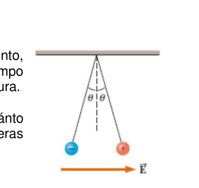
Topic: Electrostatics Metodi: Coulomb’s Law, Free-Body Diagram, Vector Decomposition Competenze: Physical Reasoning, Mathematical Modeling Objects: Sphere, String Fonte: Testo (PDF) — p.116
PT105. Scuola Nuova Juan Mantovani Argüello, Cordoba.
Due sfere di massa 2g sono sospesi dallo stesso punto, sopra il tetto, con un filo non conduttore di 10 cm. Un campo La luce è stata applicata nella direzione indicata nella figura.
Se le sfere hanno carichi di q=±5 × 10−8 C, determinare quanto La forza del campo elettrico deve valere l’intensità del campo elettrico per far sì che le sfere sono in equilibrio per θ = 10°.
Topic: Electrostatics Metodi: Coulomb’s Law, Free-Body Diagram, Vector Decomposition Competenze: Physical Reasoning, Mathematical Modeling Objects: Sphere, String Fonte: Testo (PDF) — p.116
PT105. The New Juan Mantovani School Argüello, Cordoba. It is a city.
Two spheres of mass 2g are suspended from the same point, above the ceiling, by a non-conductive thread of 10 cm. A field . The electrical system shall be applied in the direction indicated in the figure.
If the spheres have loads of q=±5 × 10−8 C, determine how much The electric field intensity must be measured so that the spheres are in equilibrium for θ = 10°.
Topic: Electrostatics Metodi: Coulomb’s Law, Free-Body Diagram, Vector Decomposition Competenze: Physical Reasoning, Mathematical Modeling Objects: Sphere, String Fonte: Testo (PDF) — p.116
PT106. Colegio San Luis Gonzaga Ciudad de Mendoza.
Un dispositivo de cilindro – émbolo contiene 0,1 m3 de agua líquida y 0,9 m3 de vapor de agua, en equilibrio a 800 KPa. Se transfiere calor a presión constante hasta que la temperatura alcanza 350°C. Datos
- Densidad del agua: 997 kg/m3
- Cp agua: 1 cal/gr°C
- Cp vapor: 2,6 KJ/kg
- 1 atm: 101325 Pa
- 1 cal: 4,1858 J
a) ¿Cuál es la temperatura inicial del agua? b) Determine la masa total de agua
Topic: Thermodynamics Metodi: First Law of Thermodynamics, Ideal Gas Law Competenze: Physical Reasoning Objects: Piston, Cylinder, Gas Fonte: Testo (PDF) — p.116
PT106. San Luis Gonzaga College Città di Mendoza.
Un dispositivo cilindrico embollo contiene 0,1 m3 di acqua liquida e 0,9 m3 di vapore di acqua, in equilibrio a 800 KPa. Il calore viene trasferito a pressione costante fino a che la temperatura non è elevata. temperatura raggiunge 350°C. Datos
- Densità dell’acqua: 997 kg/m3
- Cp acqua: 1 cal/gr°C
- Cp vapore: 2,6 KJ/kg
- 1 atm: 101325 Pa
- 1 cal: 4.1858 J
a) Qual è la temperatura iniziale dell’acqua? b) Determina la massa totale dell’acqua
Topic: Thermodynamics Metodi: First Law of Thermodynamics, Ideal Gas Law Competenze: Physical Reasoning Objects: Piston, Cylinder, Gas Fonte: Testo (PDF) — p.116
PT106. St. Louis Gonzaga College The city of Mendoza.
A cylinder device embol contains 0.1 m3 of liquid water and 0.9 m3 of steam water, in equilibrium at 800 KPa. It transfers heat to a constant pressure until the The temperature is 350°C. Data from the report
- Density of water: 997 kg/m3
- Cp water: 1 cal/gr°C
- Vapour capacity: 2,6 KJ/kg
- 1 atm: 101325 Pa
- 1 cal: 4,1858 J
(a) What is the initial water temperature? (b) Determine the total water mass
Topic: Thermodynamics Metodi: First Law of Thermodynamics, Ideal Gas Law Competenze: Physical Reasoning Objects: Piston, Cylinder, Gas Fonte: Testo (PDF) — p.116
PT107. Colegio San Luis Gonzaga Ciudad de Mendoza.
Un bateador golpea una bola de modo que ésta adquiere una rapidez inicial de 37 m/s con una dirección de 53.1° en un lugar donde g = 9,8 m/s2.
OAF 2019- 83 a) Calcula la posición de la bola y la magnitud y dirección de su velocidad a los 2 segundos b) Determina cuándo la pelota alcanza el punto más alto y su altura en ese punto c) Obtenga el alcance horizontal desde el punto de partida hasta que la bola cae al suelo
Topic: Newtonian Mechanics Metodi: Kinematic Equations, Vector Decomposition Competenze: Physical Reasoning Objects: Ball, Projectile Fonte: Testo (PDF) — p.116
PT107. San Luis Gonzaga College Città di Mendoza.
Un battitore colpisce una palla in modo che essa acquista una velocità iniziale di 37 m/s con un’indirizzo 53.1° in un luogo in cui g = 9,8 m/s2.
OAF 2019- 83 a) Calcola la posizione della palla e la sua velocità a 2°.
- Segondi . b) Determina quando la palla raggiunge il punto più alto e la sua altezza a quel punto (c) Ottieni il raggio orizzontale dal punto di partenza fino a quando la palla cade in terra
Topic: Newtonian Mechanics Metodi: Kinematic Equations, Vector Decomposition Competenze: Physical Reasoning Objects: Ball, Projectile Fonte: Testo (PDF) — p.116
PT107. St. Louis Gonzaga College The city of Mendoza.
A batter hits a ball so that it acquires an initial speed of 37 m/s. with an address of 53.1° at a place where g = 9,8 m/s2.
The Commission shall adopt implementing acts in accordance with Article 21 of this Regulation. (a) Calculate the ball ‘s position and the magnitude and direction of its velocity at 2 Seconds . (b) Determines when the ball reaches the highest point and its height at that point (c) Get the horizontal range from the starting point until the ball falls to the ground. Ground floor
Topic: Newtonian Mechanics Metodi: Kinematic Equations, Vector Decomposition Competenze: Physical Reasoning Objects: Ball, Projectile Fonte: Testo (PDF) — p.116
PT108. Colegio San Luis Gonzaga Ciudad de Mendoza.
Una bala de rifle de 12 gramos se dispara a 400 m/s contra un péndulo balístico de 5 kg
suspendido de un cordón de 0,600 metros.
a) Calcula la distancia vertical que sube el péndulo
b) La energía cinética inicial de la bala
c) La energía cinética de la bala y el péndulo justo después de incrustarse la bala
en el péndulo
Topic: Conservation of Momentum, Conservation of Energy Metodi: Conservation of Momentum, Conservation of Energy Competenze: Physical Reasoning Objects: Pendulum, Projectile Fonte: Testo (PDF) — p.116
PT108. San Luis Gonzaga College Città di Mendoza.
Un proiettile da fucile da 12 grammi viene sparato a 400 m/s contro un pendolo balistico da 5 kg. Sospeso da un cordone di 0,600 metri. a) Calcola la distanza verticale che il pendolo sale b) L’energia cinetica iniziale della pallottola c) L’energia cinetica della pallina e del pendolo appena dopo che la pallina è stata incastrata sul pendolo
Topic: Conservation of Momentum, Conservation of Energy Metodi: Conservation of Momentum, Conservation of Energy Competenze: Physical Reasoning Objects: Pendulum, Projectile Fonte: Testo (PDF) — p.116
PT108. St. Louis Gonzaga College The city of Mendoza.
A 12-gram rifle bullet is fired at 400 m/s against a 5-kilogram ballistic pendulum. suspended from a 0,600-meter cord. (a) Calculate the vertical distance up the pendulum (b) The initial kinetic energy of the bullet (c) The kinetic energy of the bullet and pendulum immediately after the bullet is embedded. on the pendulum
Topic: Conservation of Momentum, Conservation of Energy Metodi: Conservation of Momentum, Conservation of Energy Competenze: Physical Reasoning Objects: Pendulum, Projectile Fonte: Testo (PDF) — p.116
PT109. Escuela Normal Superior N° 6 Aristóbulo del Valle, Misiones.
Un niño “A” está en lo alto de un barranco de altura hA = 40 m y lanza una piedra con una velocidad vA = 24 m/s y un ángulo de 30o. Su amigo “B” se encuentra en un saliente del barranco a una altura hB del suelo sobre la misma línea vertical y lanza otra piedra horizontalmente con una velocidad vB = 36,5 m/s.
a) Determinar la componente vertical y horizontal de vA. b) ¿Cuánto tarda en caer cada piedra, si las dos llegan al mismo sitio? c) ¿Cuánto vale hB?
Topic: Newtonian Mechanics Metodi: Kinematic Equations, Vector Decomposition Competenze: Physical Reasoning Objects: Projectile Fonte: Testo (PDF) — p.116
PT109. Scuola Normale Superiore N° 6 Aristobulo della Valle, Missioni.
Un bambino è al di sopra di una grotta alta = 40 m e lancia una pietra a velocità vA = 24 m/s e un angolo di 30°. Il suo amico B è in una uscita dal cratere ad un’altezza hB del suolo Su la stessa linea verticale e lancia un’altra pietra orizzontalmente con velocità vB = 36,5 m/s.
a) Determinare la Componente Verticale y orizzontale di vA. b) Quanto tempo ci vuole per cadere ogni pietra, se le due arrivano nello stesso posto? c) Quanto vale l’hB?
Topic: Newtonian Mechanics Metodi: Kinematic Equations, Vector Decomposition Competenze: Physical Reasoning Objects: Projectile Fonte: Testo (PDF) — p.116
PT109. Higher secondary school N° 6 Aristobulus of the Valley, Missions.
A child is at the top of a high ravine = 40 m and throws a stone at a speed vA = 24 m/s and an angle of 30°. His friend B is in A gorgeous outlet at a height of hB above the ground . Over the same vertical line and throw another stone. horizontally with a speed vB = 36,5 m/s.
(a) Determine la component vertical y horizontal of vA. (b) How long does it take each stone to fall, if both Do they get to the same place? (c) How much is hB worth?
Topic: Newtonian Mechanics Metodi: Kinematic Equations, Vector Decomposition Competenze: Physical Reasoning Objects: Projectile Fonte: Testo (PDF) — p.116
PT110. Escuela Normal Superior N° 6 Aristóbulo del Valle, Misiones.
Un bloque de 10 kg se libera desde el punto A en la figura. La pista no tiene fricción excepto por la porción entre los puntos B y C, que tiene una longitud de 6 m. El bloque viaja por la pista, golpea un resorte con 2250 N/m de constante de fuerza y comprime el resorte 30 cm desde su posición de equilibrio antes de llegar al reposo momentáneamente.
a) Determinar la rapidez del bloque justo antes de llegar al punto B. b) Realizar un diagrama de cuerpo libre analizado las fuerzas presentes en el bloque, cuando el mismo viaja entre los puntos B y C. c) Hallar la rapidez del bloque luego de pasar por el punto C. d) Determinar el coeficiente de fricción cinética entre el bloque y la superficie rugosa entre B y C.
84 - OAF 2019
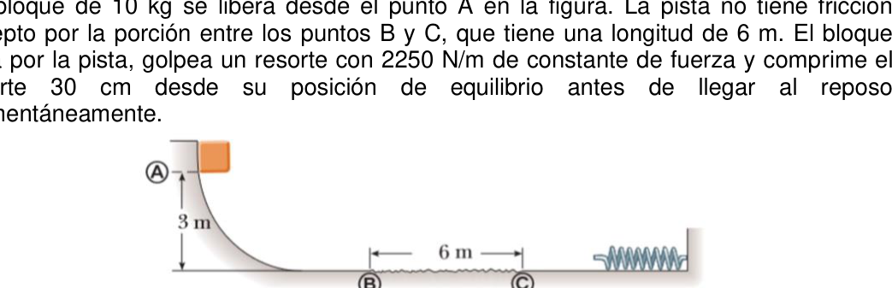
Topic: Conservation of Energy Metodi: Energy Conservation Method, Hooke’s Law, Free-Body Diagram Competenze: Physical Reasoning Objects: Block, Spring Fonte: Testo (PDF) — p.116
PT110. Scuola Normale Superiore N° 6 Aristobulo della Valle, Missioni.
Un blocco di 10 kg viene rilasciato dal punto A della figura. La pista non ha frizioni eccetto per la porzione tra i punti B e C, che ha una lunghezza di 6 m. Il blocco viaggia sulla pista, colpisce una sorgente con 2250 N/m di costante forza e compresse il Prima di raggiungere il riposo, si risorgono 30 cm dalla posizione di equilibrio.
- In un momento.
a) Determinare la velocità del blocco appena prima di raggiungere il punto B. b) Realizzare un diagramma di corpo libero che analizzi le forze presenti nel corpo. blocco, quando lo stesso viaggia tra i punti B e C. c) Calcolare la velocità del blocco dopo aver attraversato il punto C. d) Determinare il coefficiente di frizione cinetica tra il blocco e la superficie rugosa tra B e C.
84 - OAF 2019
Topic: Conservation of Energy Metodi: Energy Conservation Method, Hooke’s Law, Free-Body Diagram Competenze: Physical Reasoning Objects: Block, Spring Fonte: Testo (PDF) — p.116
PT110. Higher secondary school N° 6 Aristobulus of the Valley, Missions.
A block of 10 kg is released from point A in the figure. The track has no friction . except for the portion between points B and C, which is 6 m long. The block . travels down the track, hits a spring with 2250 N/m of constant force and compresses the spring 30 cm from its equilibrium position before reaching rest temporarily.
(a) Determine the speed of the block just before reaching point B. (b) To produce a free-body diagram analysing the forces present in the block, when the same travels between points B and C. (c) Determine the velocity of the block after passing through point C. (d) Determine the kinetic friction coefficient between the block and the surface rough between B and C.
The following is the list of the countries of the European Union:
Topic: Conservation of Energy Metodi: Energy Conservation Method, Hooke’s Law, Free-Body Diagram Competenze: Physical Reasoning Objects: Block, Spring Fonte: Testo (PDF) — p.116
PT111. Escuela Normal Superior N° 6 Aristóbulo del Valle, Misiones.
El siguiente circuito posee una batería de 6 V y el amperímetro que se observa en el esquema indica una corriente de 531 mA.
a) ¿Cuál es la caída de tensión en R1 y en R6? b) ¿Cuál es la caída de tensión entre los puntos A y B? c) Determinar la corriente que circula por R5. d) Hallar la resistencia equivalente de las resistencias R3 y R2. e) ¿Cuál es el valor de la resistencia R4?
Topic: Circuits Metodi: Kirchhoff’s Laws, Equivalent Circuit Reduction Competenze: Physical Reasoning Objects: Resistor, Battery Fonte: Testo (PDF) — p.116
PT111. Scuola Normale Superiore N° 6 Aristobulo della Valle, Missioni.
Il circuito successivo ha una batteria da 6 V e il Amperimetro che si osserva nello schema indica un corrente di 531 mA.
a) Qual è la caduta di tensione in R1 e in R6? b) Qual è la riduzione di tensione tra i punti A e B? (c) Determinare il corrente che circola per R5. d) Trovare la resistenza equivalente delle resistenza R3 e R2. e) Qual è il valore della resistenza R4?
Topic: Circuits Metodi: Kirchhoff’s Laws, Equivalent Circuit Reduction Competenze: Physical Reasoning Objects: Resistor, Battery Fonte: Testo (PDF) — p.116
PT111. Higher secondary school N° 6 Aristobulus of the Valley, Missions.
The next circuit has a 6 V battery and the Amphetre as seen in the diagram indicates a current of 531 mA.
(a) What is the voltage drop in R1 and in R6? (b) What is the drop in tension between the two points A and B? (c) Determine the current flowing through R5. (d) Find the equivalent strength of the R3 and R2 resistors. (e) What is the value of resistance R4?
Topic: Circuits Metodi: Kirchhoff’s Laws, Equivalent Circuit Reduction Competenze: Physical Reasoning Objects: Resistor, Battery Fonte: Testo (PDF) — p.116
PT112. Escuela Normal Superior N° 6 Aristóbulo del Valle, Misiones.
Un motociclista Piranense hacía acrobacias audaces en su tiempo libre. Su última
acrobacia fue un intento por saltar un rio en motocicleta (figura 3.51). La rampa de
despegue esta inclinada a 53°, el rio tiene 40.0 m de ancho y la ribera lejana está a 15,0
m bajo el tope de la rampa. El río está a 100 m abajo de la rampa. Puede despreciarse la
resistencia del aire.
a) ¿Que rapidez se necesita en el tope de la rampa para alcanzar apenas el borde
de la ribera lejana?
b) Si su rapidez era solo la mitad del valor obtenido en a) ¿donde cayó?
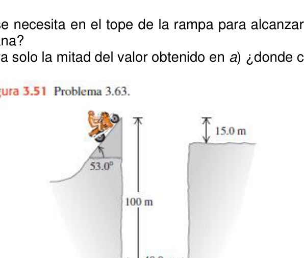
Topic: Newtonian Mechanics Metodi: Kinematic Equations, Vector Decomposition Competenze: Physical Reasoning Objects: Projectile Fonte: Testo (PDF) — p.116
PT112. Scuola Normale Superiore N° 6 Aristobulo della Valle, Missioni.
Un motociclista pirano faceva acrobazie audaci nel suo tempo libero. La sua ultima . L’acrobazia è stato un tentativo di saltare un fiume in motocicleta (Figura 3.51). La rampa di decolla inclinata a 53°, il fiume è largo 40,0 m e la riva lontana è a 15,0 Sotto il top del ramp. Il fiume è a 100 metri sotto la rampa. Può essere disprezzata. resistenza all’aria. a) Che velocità è necessaria al vertice della rampa per raggiungere appena il bordo dalla lontana riva? b) Se la sua velocità era solo la metà del valore ottenuto in a) dove è caduta?
Topic: Newtonian Mechanics Metodi: Kinematic Equations, Vector Decomposition Competenze: Physical Reasoning Objects: Projectile Fonte: Testo (PDF) — p.116
PT112. Higher secondary school N° 6 Aristobulus of the Valley, Missions.
A Piranese motorcyclist performed bold stunts in his spare time. His last . Acrobatics was an attempt to jump a river on a motorcycle (Figure 3.51). The ramp of It takes off inclined at 53°, the river is 40.0 m wide and the far shore is 15.0 m. I’m under the top of the ramp. The river is 100 meters below the ramp. It can be despised. air resistance. (a) How fast is it needed at the top of the ramp to reach the edge? From the far shore? (b) If its speed was only half the value obtained in (a) where did it fall?
Topic: Newtonian Mechanics Metodi: Kinematic Equations, Vector Decomposition Competenze: Physical Reasoning Objects: Projectile Fonte: Testo (PDF) — p.116
PT113. Escuela Normal Superior N° 6 Aristóbulo del Valle, Misiones.
En la figura se observa un bloque de 5 kg que pasa por el punto A con una rapidez de 15 m/s y se desliza sin rozamiento hasta el punto B, a partir del cual existe una superficie rugosa de 10 m de longitud que culmina en el punto C. El coeficiente de roce dinámico entre el bloque y la superficie es 0,4. El tramo CD carece de rozamiento y mide 8 m de longitud. El punto E está a 8 m de la base del muro.
OAF 2019- 85
a) ¿Supera el bloque en su movimiento al
punto C? De ser así, ¿Con qué rapidez lo
hace?
b) ¿Supera el bloque al punto D? Justifica.
c) En caso de responder afirmativamente la
pregunta anterior, ¿a qué distancia del
punto E caerá el bloque?
d) Grafica las fuerzas que actúan sobre el
bloque en los tramos AB, BC, CD y a partir
del punto D hasta su impacto contra el
suelo.
e) Calcula el trabajo del peso del bloque en cada etapa del movimiento.
f) Si el punto E pudiera moverse libremente, ¿cuál debería ser su aceleración para
alcanzar al bloque en el mismo instante en el que alcanza su punto de impacto
contra el suelo?
Nota Considerar g = 10 m/s²
Topic: Conservation of Energy, Newtonian Mechanics Metodi: Energy Conservation Method, Kinematic Equations, Free-Body Diagram Competenze: Physical Reasoning Objects: Block Fonte: Testo (PDF) — p.116
PT113. Scuola Normale Superiore N° 6 Aristobulo della Valle, Missioni.
La figura mostra un blocco di 5 kg che passa attraverso il punto A a velocità di 15 m/s e si scivola senza rottura fino al punto B, da cui è costituita una superficie rugosa di 10 m di lunghezza che culmina al punto C. Il coefficiente di rottura dinamico tra il blocco e la superficie è 0,4. La trama CD è priva di ruggine e misura 8 m di altezza. lunghezza. Il punto E è a 8 metri dalla base del muro.
OAF 2019- 85 a) Supera il blocco in movimento al punto C? Se è così, quanto presto lo farà?
- Lo fa? b) Sopra il blocco al punto D? - Giustifica. (c) Se la risposta è affermativa, La domanda precedente è: punto E il blocco cadrà? d) Grafica delle forze che agiscono sul blocco nei tratti AB, BC, CD e a partire da dal punto D fino all’impatto contro il
- No, non è così. e) Calcola il lavoro del peso del blocco in ogni fase del movimento. f) Se il punto E potesse muoversi liberamente, quale dovrebbe essere la sua accelerazione per raggiungere il blocco nel momento in cui raggiunge il punto di impatto
- Contro il pavimento?
Nota Considerare g = 10 m/s2
Topic: Conservation of Energy, Newtonian Mechanics Metodi: Energy Conservation Method, Kinematic Equations, Free-Body Diagram Competenze: Physical Reasoning Objects: Block Fonte: Testo (PDF) — p.116
PT113. Higher secondary school N° 6 Aristobulus of the Valley, Missions.
In the figure a block of 5 kg is seen passing through point A at a speed of 15 m/s and slides without friction to point B, from which there is a surface a 10 m long rugged top at point C. The dynamic brushing coefficient between the block and the surface is 0.4. The CD section is free of friction and measures 8 m. length. The E-point is eight metres from the base of the wall.
The following is the list of the countries of the European Union: (a) Does the block move above the point C? If so, how quickly will you? Do you? (b) Does the block pass over point D? It justifies it. (c) If the answer is yes, Question No 1 by Mr Gutiérrez Point E will the block fall? (d) Graphs the forces acting on the block in sections AB, BC, CD and onwards from point D to impact on the I’m going to the ground. (e) Calculates the work of the block weight at each stage of movement. (f) If the point E could move freely, what should be its acceleration for reach the block as soon as it reaches its impact point On the ground?
Note Consider g = 10 m/s2
Topic: Conservation of Energy, Newtonian Mechanics Metodi: Energy Conservation Method, Kinematic Equations, Free-Body Diagram Competenze: Physical Reasoning Objects: Block Fonte: Testo (PDF) — p.116
PT114. Escuela Normal Superior N° 6 Aristóbulo del Valle, Misiones.
Un cilindro de plástico ϱc= 0.75 g/cm3 tiene un radio R= 10 cm y una altura H= 30 cm.
Esta flotando en un líquido de peso específico ϱl= 1.35 g/cm3. Volumen del cilindro Vc=
π. H. R2. Determinar:
a) El peso del cilindro
b) La altura del mismo que sale de la superficie
c) Realizar un esquema del problema.
Topic: Fluid Mechanics Metodi: Hydrostatic Equilibrium Competenze: Physical Reasoning Objects: Cylinder Fonte: Testo (PDF) — p.116
PT114. Scuola Normale Superiore N° 6 Aristobulo della Valle, Missioni.
Un cilindro di plastica ρc=0,75 g/cm3 ha un raggio R=10 cm e una altezza H=30 cm. Si trova a galla in un liquido di peso specifico ρl= 1,35 g/cm3. Volume del cilindro Vc= π. H. R2. Determinare: a) Il peso del cilindro b) L’altezza di esso che esce dalla superficie c) realizzare un schema del problema.
Topic: Fluid Mechanics Metodi: Hydrostatic Equilibrium Competenze: Physical Reasoning Objects: Cylinder Fonte: Testo (PDF) — p.116
PT114. Higher secondary school N° 6 Aristobulus of the Valley, Missions.
A cylinder of plastic ρc=0.75 g/cm3 has a radius R=10 cm and a height H=30 cm. It is floating in a specific weight ρl = 1.35 g/cm3 liquid. The volume of the cylinder Vc= π. H. R2. Determine: (a) The weight of the cylinder (b) The height of the same as it exits the surface (c) Draw up a scheme of the problem.
Topic: Fluid Mechanics Metodi: Hydrostatic Equilibrium Competenze: Physical Reasoning Objects: Cylinder Fonte: Testo (PDF) — p.116
PT115. Instituto Salesiano Pío XI Ciudad de Corrientes.
Un chico que está a 5 metros de una pared vertical arroja una pelota contra ella como se muestra en la figura. La pelota sale de su mano a una altura de 1,70 m y las componentes horizontal y vertical de la velocidad inicial son de 9 m/s. Considerar el choque de la pelota y la pared como elástico, de manera que en el choque no se pierde energía.
Determinar a) El valor y el ángulo de la velocidad inicial. b) La altura a la que la pelota toca la pared. c) El tiempo total que la pelota está en el aire. d) El lugar donde la pelota tocara el suelo.
86 - OAF 2019
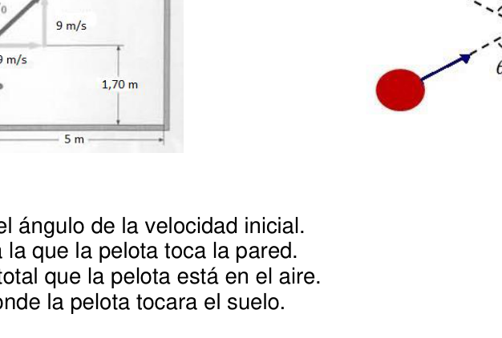
Topic: Newtonian Mechanics Metodi: Kinematic Equations, Vector Decomposition Competenze: Physical Reasoning Objects: Ball, Projectile Fonte: Testo (PDF) — p.116
PT115. Istituto Salesiano Pio XI Città dei Corrienti.
Un ragazzo che è a 5 metri da un muro verticale lancia una palla contro di lei come se mostra nella figura. La palla sale dalla sua mano a un’altezza di 1,70 m e le i componenti orizzontali e verticali della velocità iniziale sono di 9 m/s. Considerare il colpisce la palla e il muro come l’elastica, in modo che nel colpo non si perde energia.
Determinare a) Il valore e l’angolo della velocità iniziale. b) L’altezza alla quale la palla tocca il muro. c) Il tempo totale che la palla è in aria. d) Il luogo in cui la palla ha toccato il pavimento.
86 - OAF 2019
Topic: Newtonian Mechanics Metodi: Kinematic Equations, Vector Decomposition Competenze: Physical Reasoning Objects: Ball, Projectile Fonte: Testo (PDF) — p.116
PT115. The Salesian Institute of Pius XI City of currents.
A boy who ‘s five meters from a vertical wall throws a ball at her like he ‘s . It’s shown in the figure. The ball comes out of his hand at a height of 1.70 m and the The horizontal and vertical components of the initial speed shall be 9 m/s. Consider the The ball and the wall collide like elastic, so in the impact it’s not lost. energy.
Determine (a) The value and angle of the initial speed. (b) The height at which the ball hits the wall. (c) The total time the ball is in the air. (d) The place where the ball touched the ground.
The following points shall be added:
Topic: Newtonian Mechanics Metodi: Kinematic Equations, Vector Decomposition Competenze: Physical Reasoning Objects: Ball, Projectile Fonte: Testo (PDF) — p.116
PT116. Instituto Salesiano Pío XI Ciudad de Corrientes.
Con ayuda de una cuerda se hace girar un cuerpo de 1 kg en una circunferencia de 1 m de radio, situada en un plano vertical, cuyo centro está situado a 10,8 m del suelo horizontal. La cuerda se rompe cuando la tensión es de 11,2 kgf, lo cual ocurre cuando el cuerpo está en el punto más bajo de su trayectoria.
Se pide a) Realizar un gráfico explicativo detallando las magnitudes que intervienen. b) ¿Qué velocidad tiene el cuerpo cuando rompe la cuerda? c) ¿Cuánto tardará en caer al suelo? d) ¿Cuál será su velocidad en el instante de chocar contra el suelo?
Datos g= 9,8 m.s-2
Topic: Newtonian Mechanics, Conservation of Energy Metodi: Simple Harmonic Motion Analysis, Free-Body Diagram, Kinematic Equations Competenze: Physical Reasoning Objects: String, Ball Fonte: Testo (PDF) — p.116
PT116. Istituto Salesiano Pio XI Città dei Corrienti.
Con un filo si gira un corpo di 1 kg su una circonferenza di 1 m. di radio, situata in un piano verticale, il cui centro è situato a 10,8 m dal suolo
- L’orizzontale. La corda si rompe quando la tensione è di 11,2 kgf, che si verifica quando il Il corpo è al punto più basso della sua traccia.
Si chiede a) realizzare un grafico esplicativo che descriva in dettaglio le dimensioni che intervenono. b) A che velocità si spinge il corpo quando si rompe la corda? c) Quanto tempo ci vorrà per cadere? d) Qual è la velocità dell’attacco al suolo?
Datos g= 9,8 m.s-2
Topic: Newtonian Mechanics, Conservation of Energy Metodi: Simple Harmonic Motion Analysis, Free-Body Diagram, Kinematic Equations Competenze: Physical Reasoning Objects: String, Ball Fonte: Testo (PDF) — p.116
PT116. The Salesian Institute of Pius XI City of currents.
A 1 kg body is rotated with a rope on a 1 m circumference. a radius, situated on a vertical plane, the centre of which is situated at 10,8 m from the ground horizontal. The rope breaks when the voltage is 11.2 kgf, which happens when the body is at the lowest point of its trajectory.
It ‘s asked . (a) Draw an explanatory chart detailing the magnitude involved. (b) How fast does the body go when it breaks the rope? (c) How long will it take to fall to the ground? (d) What will be its speed at the instant it hits the ground?
Data from the report g= 9,8 m.s-2
Topic: Newtonian Mechanics, Conservation of Energy Metodi: Simple Harmonic Motion Analysis, Free-Body Diagram, Kinematic Equations Competenze: Physical Reasoning Objects: String, Ball Fonte: Testo (PDF) — p.116
PT117. Instituto Salesiano Pío XI Ciudad de Corrientes.
Se colocan cinco cargas puntuales de igual magnitud q y signo alterno sobre una línea recta, separadas entre sí una distancia d. Un punto genérico P está ubicado a una distancia r sobre la línea perpendicular a la línea de cargas opuesta a la carga central, como indica la figura.
Determinar
a) La expresión del campo eléctrico que
originan dichas cargas en un punto P.
b) ¿En qué se convierte la expresión
obtenida cuando la distancia r es muy
grande
en
comparación
con
la
separación
entre
las
cargas
d?
Interpreta el resultado.
c) Con los siguientes datos, calcular el
campo eléctrico total en P.
Datos q = 1,5.10-6 C; d = 50 cm; r = 120 cm; Ke = 9.109 N.m2/C2.
Topic: Electrostatics Metodi: Coulomb’s Law, Superposition Principle, Approximation & Series Expansion Competenze: Physical Reasoning, Mathematical Modeling Objects: Point Charge Fonte: Testo (PDF) — p.116
PT117. Istituto Salesiano Pio XI Città dei Corrienti.
Si inseriscono cinque carichi di un punto uguali. Magnitude q e segno alternativo su una linea retta, separati tra loro a distanza d. Un punto. Generico P è situato a r distanza su la linea perpendicolare alla linea di carico contraria alla carica centrale, come indicato nella figura.
Determinare a) L’espressione del campo elettrico che le cariche sono originate in un punto P. b) Cosa diventa l’espressione ottenuto quando la distanza r è molto grande en Comparazione con la separazione tra Le carichi d? Interpreta il risultato. (c) Con i seguenti dati, calcolare il campo elettrico totale in P.
Datos q = 1,5.10-6 C; d = 50 cm; r = 120 cm; Ke = 9.109 N.m2/C2.
Topic: Electrostatics Metodi: Coulomb’s Law, Superposition Principle, Approximation & Series Expansion Competenze: Physical Reasoning, Mathematical Modeling Objects: Point Charge Fonte: Testo (PDF) — p.116
PT117. The Salesian Institute of Pius XI City of currents.
Five equal point charges are placed. magnitude q and alternate sign on a straight line, separated by a distance d. One point . Generic P is located at a distance r over the line perpendicular to the load line the centre load as shown in Figure 1.
Determine (a) The expression of the electric field which The following shall be added to the list of the following: (b) What does the expression become? obtained when the distance r is very Big . en The comparison with la Separation between The loads d? Interpret the result. (c) Using the following data, calculate the Total electric field in P.
Data from the report q = 1,5.10-6 C; d = 50 cm; r = 120 cm; Ke = 9.109 N.m2/C2.
Topic: Electrostatics Metodi: Coulomb’s Law, Superposition Principle, Approximation & Series Expansion Competenze: Physical Reasoning, Mathematical Modeling Objects: Point Charge Fonte: Testo (PDF) — p.116
PT118. Instituto Industrial Luis A. Huergo Ciudad Autónoma de Buenos Aires.
Se tiene una pista como la de la figura, con una superficie que ejerce rozamiento despreciable. En los extremos hay dos carritos: el carrito A tiene una masa de 4 kg y se encuentra inicialmente quieto en una rampa a 2.45 metros de altura, mientras que el carrito B, de 3 kg, está en reposo contra un resorte de constante 2028 N/m, comprimido 50 cm a partir de su estado de equilibrio. En cierto momento se liberan ambos carritos y se mueven por la pista hasta que chocan de manera plástica en la parte horizontal.
OAF 2019- 87 a) Determinar las velocidades de ambos carritos inmediatamente antes y después del choque. b) Determinar qué ocurre con los carritos en términos de movimiento después del choque. En caso de que se dirijan hacia el resorte, calcular la compresión máxima del mismo. Si se dirigen hacia la rampa, hallar la altura máxima que alcanzarán. c) Determinar el impulso recibido por B y la variación de energía cinética que experimenta c.1) debido al resorte c.2) debido a su choque con el carrito A. d) Manteniendo iguales al resto de los parámetros, ¿cuál debería ser la constante del resorte para que los carritos se detengan al chocar?
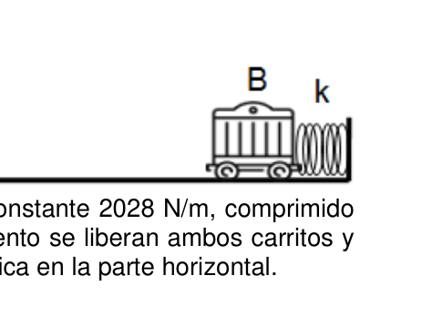
Topic: Conservation of Momentum, Conservation of Energy Metodi: Conservation of Momentum, Conservation of Energy, Hooke’s Law Competenze: Physical Reasoning, Mathematical Modeling Objects: Cart, Spring, Inclined Plane Fonte: Testo (PDF) — p.116
PT118. Istituto industriale Luis A. - Hoorgo Città autonoma di Buenos Aires.
Ha un indizio come quello della figura, con Una . superficie che esercita Raggiustamento
- Desprezioso. En Le Al di là di questo, ci sono due carri: il carrello A. ha una massa di 4 kg e si trova Inizialmente, sono rimasto in piedi su una rampa. 2,45 metri di altezza, mentre il Carro B, di 3 kg, sta a riposo contro una sorgente di 2028 N/m, compressa 50 cm dal suo stato di equilibrio. A un certo punto si liberano entrambi i carri e si muovono lungo la pista fino a colpire in modo plastico nella parte orizzontale.
OAF 2019- 87 a) Determinare le velocità di entrambi i carri immediatamente prima e dopo
- lo scontro. b) Determinare cosa accade ai carri in termini di movimento dopo il
- Coppia. Nel caso si dirigessero verso la primavera, calcolare la compressione massimo della stessa. Se si dirigono verso la rampa, trovare l’altezza massima che
- Lo raggiungeranno. c) Determinare la forza ricevuta da B e la variazione di energia cinetica che sperimentare c.1) a causa della resorsione c.2) a causa del suo colpo con il carrello A. d) Tenendo gli altri parametri uguali, quale dovrebbe essere la costante
- La primavera, per fermare i carri?
Topic: Conservation of Momentum, Conservation of Energy Metodi: Conservation of Momentum, Conservation of Energy, Hooke’s Law Competenze: Physical Reasoning, Mathematical Modeling Objects: Cart, Spring, Inclined Plane Fonte: Testo (PDF) — p.116
PT118. The Spanish Ministry of Foreign Affairs I ‘m not . The Autonomous City of Buenos Aires.
You have a clue like the figure, with One . surface area That It is exercised Rusting I’m not a big fan of this. En The Extremes there are two carts: the A-car. It weighs 4 kg and is located Initially standing on a ramp to 2.45 meters high, while the Carriage B, 3 kg, resting against a spring of constant 2028 N/m, compressed 50 cm from its equilibrium state. At some point both carts are released and They move along the track until they collide in a plastic way on the horizontal side.
The Commission shall adopt implementing acts in accordance with Article 21 of this Regulation. (a) Determine the speeds of both wagons immediately before and after. The shock. (b) Determine what happens to the carriages in terms of movement after the It’s a shock. If they’re heading for the spring, calculate the compression. maximum of the same. If you head for the ramp, find the maximum height that They’ll catch up. (c) Determine the momentum received by B and the kinetic energy variation that He ‘s experimenting . (c.1) due to spring c.2) due to its collision with the A-car. (d) Keeping the rest of the parameters the same, what should be the constant The spring so the carts can stop when they crash?
Topic: Conservation of Momentum, Conservation of Energy Metodi: Conservation of Momentum, Conservation of Energy, Hooke’s Law Competenze: Physical Reasoning, Mathematical Modeling Objects: Cart, Spring, Inclined Plane Fonte: Testo (PDF) — p.116
PT119. Instituto Industrial Luis A. Huergo Ciudad Autónoma de Buenos Aires.
Consideremos helio (gas ideal monoatómico cv=3R/2) en el estado inicial A: pA=105 Pa,
VA=10-2 m3 y TA=300 K. Se llevan a cabo las siguientes transformaciones:
A-B: Transformación isoterma reversible siendo VB=2 10-2 m3
B-C: Transformación isócora (V=cte) reversible siendo TC=189 K
C-A: Transformación adiabática reversible, que devuelve al gas a sus condiciones
iniciales.
a) Determinar el número de moles de helio, confeccionar una tabla en la que
aparezcan los valores p, V y T en los tres estados A, B y C, y dibujar el ciclo en
el diagrama p-V.
b) Calcular el trabajo W, el calor Q, y la variación de energía interna ΔU, del gas
para cada uno de los procesos.
c) Calcular el trabajo neto realizado por el helio.
d) Determinar el rendimiento de este ciclo como motor térmico.
Dato R=8.314 J/(mol·K)
Topic: Thermodynamics Metodi: Thermodynamic Cycle Analysis, First Law of Thermodynamics, Ideal Gas Law Competenze: Physical Reasoning, Mathematical Modeling Objects: Gas Fonte: Testo (PDF) — p.116
PT119. Istituto industriale Luis A. - Hoorgo Città autonoma di Buenos Aires.
Consideriamo l’elio (gas ideale monoatomo cv=3R/2) nello stato iniziale A: pA=105 Pa, VA=10-2 m3 y TA=300 K. Le seguenti trasformazioni sono in corso: A-B: trasformazione isotermica reversibile VB=2 10-2 m3 B-C: trasformazione isocora (V=cte) reversibile essendo TC=189 K C-A: Trasformazione adiabatica reversibile, che restituisce al gas le sue condizioni iniziali. a) Determinare il numero di mole di elio, creare una tabella in cui i valori p, V e T sono presenti nei tre stati A, B e C, e disegnare il ciclo in il diagramma p-V. b) Calcolare il lavoro W, il calore Q e la variazione di energia interna ΔU, del gas per ogni processo. (c) Calcolare il lavoro netto effettuato dal helio. d) Determinare la performance di questo ciclo come motore termico.
Data R=8.314 J/(mol·K)
Topic: Thermodynamics Metodi: Thermodynamic Cycle Analysis, First Law of Thermodynamics, Ideal Gas Law Competenze: Physical Reasoning, Mathematical Modeling Objects: Gas Fonte: Testo (PDF) — p.116
PT119. The Spanish Ministry of Foreign Affairs I ‘m not . The Autonomous City of Buenos Aires.
Consider helium (one atomic ideal gas cv=3R/2) in the initial state A: pA=105 Pa, VA=10-2 m3 y TA=300 K. The following transformations are taking place: A-B: Reversible isothermal transformation being VB=2 10-2 m3 B-C: isocoric transformation (V=cte) reversible being TC=189 K C-A: Reversible adiabatic transformation, which returns the gas to its condition The initials. (a) Determine the number of moles of helium, draw up a table in which The values p, V and T appear in the three states A, B and C, and draw the cycle in the p-v diagram. (b) Calculate the work W, heat Q, and the internal energy variation ΔU, of the gas for each of the processes. (c) Calculate the net work done by helium. (d) Determine the performance of this cycle as a heat engine.
Date of the meeting The following table shows the results of the calculations:
Topic: Thermodynamics Metodi: Thermodynamic Cycle Analysis, First Law of Thermodynamics, Ideal Gas Law Competenze: Physical Reasoning, Mathematical Modeling Objects: Gas Fonte: Testo (PDF) — p.116
PT120. Instituto Industrial Luis A. Huergo Ciudad Autónoma de Buenos Aires.
Consideremos el circuito eléctrico de la figura, el cual es alimentado por una fuente de tensión “V”. El amperímetro “A” mide la intensidad de corriente eléctrica que circula por la resistencia de 100 Ω. Suponiendo que la a fuente de tensión y el amperímetro son ideales: a) ¿Qué valor de corriente indica el amperímetro? b) ¿Qué potencia eléctrica se disipa en la resistencia de 400 Ω? c) ¿En cuánto aumenta cada potencia si la fuente era de 12 V?
Datos V= 6 V R1= 120 Ω R2= 100 Ω R3= 400 Ω
88 - OAF 2019
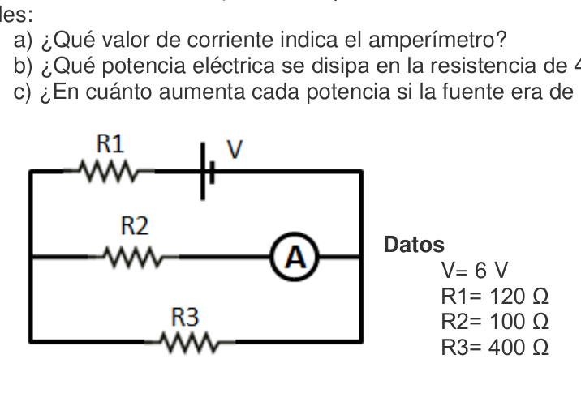
Topic: Circuits Metodi: Equivalent Circuit Reduction, Kirchhoff’s Laws Competenze: Physical Reasoning Objects: Resistor, Battery Fonte: Testo (PDF) — p.116
PT120. Istituto industriale Luis A. - Hoorgo Città autonoma di Buenos Aires.
Considerate il circuito elettrico della figura, che viene alimentato da una fonte di tensione V. L’amperiometro A misura l’intensità di corrente elettrica che circola attraverso il resistenza di 100 Ω. Supponiamo che la fonte di tensione e l’ampiecatore siano ideali: a) Qual è il valore di corrente indicato dall’ampievere? b) Quale potenza elettrica si dissipa alla resistenza di 400 Ω? c) Quanto aumenta ogni potenza se la fonte è di 12 V?
Datos V= 6 V R1= 120 Ω R2= 100 Ω R3= 400 Ω
88 - OAF 2019
Topic: Circuits Metodi: Equivalent Circuit Reduction, Kirchhoff’s Laws Competenze: Physical Reasoning Objects: Resistor, Battery Fonte: Testo (PDF) — p.116
PT120. The Spanish Ministry of Foreign Affairs I ‘m not . The Autonomous City of Buenos Aires.
Consider the electrical circuit in the figure, which is powered by a source of The voltage is V. The ampere A measures the intensity of electric current circulating through the resistance of 100 Ω. Assuming the a-voltage source and the amp is Ideal for the future: (a) What current value does the ampere indicate? (b) What electrical power is dissipated at the resistance of 400 Ω? (c) How much is each power increased if the source was 12 V?
Data from the report V= 6 V R1= 120 Ω R2= 100 Ω R3= 400 Ω
The following is the list of the countries of the European Union:
Topic: Circuits Metodi: Equivalent Circuit Reduction, Kirchhoff’s Laws Competenze: Physical Reasoning Objects: Resistor, Battery Fonte: Testo (PDF) — p.116
Cuando florecen los Lapachos
PT121. UEGP N° 55 Don Orione Presidencia Roque Sáenz Peña, Chaco.
Cuando florecen los Lapachos. Empieza a florecer el lapacho y los dorados del rio Paraná están al acecho. Lucas nota que en la otra orilla del rio, bien frente donde está, los “tigres del Paraná” están en plena actividad. Prepara su mejor señuelo, el que tiene los ojos formados con el número 11, porque es el que le trae suerte y con el que atrapó las presas más grandes, y decide sumarse a la acción. Imaginándose como un francotirador, apuntando la caña a los lomos de esas bestias color de sol radiante, advierte que la corriente es rápida y los remos de la piragua, cortos. Se concentra como un físico teórico realizando un experimento mental y piensa: 50 metros de bravura y una corriente con rapidez de 3 metros en cada segundo río abajo, espera un momento y después de un fuerte sapucai comienza la hazaña. La piragua, Lucas y la ilusión se desplazan perpendicularmente a la orilla del frente, donde la fiesta de las fieras continua, con un movimiento uniforme de 5 metros en cada segundo que pasa, sin cambiar su dirección recta. a) ¿Cuánto tiempo le llevará a Lucas cubrir la distancia que lo separa de la zona deseada? b) ¿Llegará al lugar donde se encuentran los dorados? De no ser así, calcula a que distancia del punto exacto se encontrará. c) ¿Qué velocidad llevará la piragua con respecto a la orilla del río y que distancia recorrerá hasta alcanzarla? Llegando la noche, oscura porque la Luna no lo acompañaba, luego de una experiencia de dulces y amargos, observa una luz azul a lo lejos y luego de 12 segundos escucha una explosión, sin embargo no es solo eso, sino que pasado un minuto exactamente se ve otra luz de color amarillo, pero la explosión ya tardó menos en llegar a los oídos de Lucas, fueron solo 9 segundos. Entonces decidió calcular a que distancia de la explosión se encontraba y cuantos minutos le quedaban de paz y soledad en el río que ya se había tranquilizado y la brisa del viento no se percibía ni en su rostro húmedo. Sabiendo que la velocidad del sonido en el aire es de 330 m/s. d) ¿Cuánto tiempo le queda a Lucas hasta que esas misteriosas explosiones ocurran aproximadamente a 1 kilómetro de donde él se encuentra? e) ¿Cuántas explosiones escuchará en total antes de despedirse del río hasta la próxima jornada, teniendo en cuenta la distancia calculada anteriormente, que le dará la oportunidad de irse sin que nadie lo notara?
Topic: Newtonian Mechanics, Oscillations & Waves Metodi: Kinematic Equations, Vector Decomposition Competenze: Physical Reasoning Objects: — Fonte: Testo (PDF) — p.116
Quando i Lapachos fioriscono
PT121. UEGP N° 55 Don Orione Presidente. - Signor Presidente, la commissione per la protezione dell’ambiente ha votato per una risoluzione del Parlamento europeo e del Consiglio.
Quando i Lapachos fioriscono. Comincia a fiorire il lapacho e gli ornati del fiume Paraná sono in attesa. Lucas nota che sull’altra riva del fiume, proprio di fronte a dove si trova, le tigri del Paraná sono in piena attività. Preparare il suo miglior inganno, quello che ha gli occhi formati con il numero 11, Perché è lui che gli porta la fortuna e con cui ha catturato le più grandi preda, e decide
- Si può aggiungere all’azione. Immaginandosi come un francobollo, puntando la canna al fianco. di quelle bestie color sole radiante, avverte che la corrente è veloce e le rampe della
- Piero, corto. Si concentra come un fisico teorico facendo un esperimento mentale e Pensa: 50 metri di coraggio e un corrente a velocità di 3 metri al secondo. Sotto il fiume, aspetta un momento e dopo un forte sapucai inizia il faccenda. La piragüa, Lucas e l’illusione si spostano perpendicularmente al bordo del fronte. dove la festa delle bestie continua, con un movimento uniforme di 5 metri in ogni Il secondo che passa, senza cambiare direzione retta. a) Quanto tempo ci vorrà per Lucas per coprire la distanza che lo separa dalla zona? Desiderata? b) Arriverà al luogo dove si trovano gli ornati? Se non è così, calcola che la distanza dal punto esatto si trova. c) Che velocità e distanza porterà la piragüa rispetto alla riva del fiume
- E’ il suo punto di arrivo? Quando arriva la notte, oscura perché la luna non lo accompagna, dopo un’esperienza. Dolci e amari, osserva una luce blu in lontananza e dopo 12 secondi ascolta. un’esplosione, tuttavia non è solo che, ma è passato un minuto esattamente si vede un’altra luce gialla, ma l’esplosione ha già impiegato meno tempo per arrivare alle orecchie di Lucas, sono solo nove secondi. Quindi ha deciso di calcolare la distanza dall’esplosione. E quanti minuti di pace e solitudine gli restarono sul fiume che era già andato Il vento non si percepisce nemmeno sul suo viso umido. Sapendo che la La velocità del suono in aria è di 330 m/s. D) Quanto tempo ha Lucas fino a quando queste misteriose esplosioni? si verificano a circa un chilometro da dove si trova? e) Quante esplosioni in totale ascolterà prima di andare a dire addio al fiume fino al il giorno successivo, tenendo conto della distanza calcolata in precedenza, che le darà la possibilità di andarsene senza che nessuno lo notasse?
Topic: Newtonian Mechanics, Oscillations & Waves Metodi: Kinematic Equations, Vector Decomposition Competenze: Physical Reasoning Objects: — Fonte: Testo (PDF) — p.116
When the Lapachos are blooming
PT121. The Commission shall adopt delegated acts in accordance with Article 21 of Regulation (EC) No 1290/2005. The Commission has also adopted a number of proposals for a new directive.
When the Lapachos are blooming. The lapacho is beginning to bloom and the goldfish of the Paraná River are lurking. Luke notes That on the other side of the river, right across from where it is, the Tigers of Paraná are in full swing The activity. Prepare your best decoy, the one with the eyes formed by the number 11. Because he’s the one who brings him luck and with whom he’s caught the biggest prey, and he decides. to join the action. Imagining himself as a sniper, pointing the cane at his hips. of those bright sun-colored beasts, warns that the current is fast and the oars of the
- The pirate, short. He concentrates as a theoretical physicist conducting a mental experiment and Think: 50 meters of bravery and a current at a speed of 3 meters per second. downstream, wait a moment and after a strong sapucai the feat begins. The pirogue, Lucas and the illusion move perpendicular to the forehead. Where the beast’s feast continues, with a uniform movement of 5 meters on each The second it passes, without changing its straight direction. (a) How long will it take Lucas to cover the distance that separates him from the area? Wanted? (b) Will it reach the place where the golden ones are? If not, calculate that distance from the exact point will be found. (c) What speed will the watercraft travel with respect to the river bank and what distance? Will he go on until he reaches her? When night came, dark because the moon was not with him, after an experience. Sweet and bitter, he observes a blue light in the distance and after 12 seconds he listens. An explosion, however, is not only that, but it passed exactly a minute you He sees another yellow light, but the explosion already took less time to reach the ears of Lucas, it was only nine seconds. So he decided to calculate how far away the explosion was . He was alone and alone for a few minutes in the river that had already passed. Calm and the breeze of the wind was not felt even on his wet face. Knowing that she the speed of sound in the air is 330 m/s. d) How long does Lucas have until those mysterious explosions? occur about a mile from where he is? (e) How many explosions will you hear in total before you bid farewell to the river until next day, taking into account the distance calculated above, which you Will he give you a chance to leave without anyone noticing?
Topic: Newtonian Mechanics, Oscillations & Waves Metodi: Kinematic Equations, Vector Decomposition Competenze: Physical Reasoning Objects: — Fonte: Testo (PDF) — p.116
Retomando viejos entretenimientos
PT122. UEGP N° 55 Don Orione Presidencia Roque Sáenz Peña, Chaco.
Retomando viejos entretenimientos en un mundo globalizado!!! Luego de muchos años de descanso, el payaso plin-plin, decide volver a su actividad, y como debe realizar algo realmente sorprendente para atrapar a su nuevo público, se pone a diagramar un experimento… piensa y piensa, y de pronto se le ocurre y exclama: Eureka!!!! El gran genio de Arquímedes me iluminó!!! Voy a elevarme por el aire con un manojo de globos… Para lo cual debe realizar un par de cálculos para saber cuánto gas de helio necesita y cuantos globos para llevar a cabo su experimento….. pero… había un problema, ya que plin-plin se dio cuenta que no era muy bueno para las matemáticas, entonces se sentó triste sobre el cordón de la vereda, y en eso pasó un adolescente que volvía del colegio Don Orione, quien se acerca y le pregunta que le sucedía, cuando pli-plin le cuenta; el adolescente de nombre Jorge le dijo, yo puedo ayudarte, me gusta mucho la física y la matemática; si querés ya hacemos los cálculos: Plin-plin y Jorge, necesitan calcular la cantidad de helio necesario para poder elevarse; sabe que su masa es de 75 Kg, y que los globos pueden inflarse y quedar con forma totalmente esféricos hasta tener un diámetro de 30 cm y una presión absoluta interna de
OAF 2019- 89 1,035 atm. Además sabe que la temperatura del lugar será de unos 22°C y la presión atmosférica estará a 1 atm. a) Realice un esquema de la situación planteada. b) Calcule la cantidad de globos que necesitará inflar plin-plin, para elevarse. c) Determine la cantidad de moles de Helio necesarios para dicho acontecimiento. d) Calcule la cantidad de litros de helio utilizados. e) Si se sabe que la densidad del aire va cambiando en la altura y considerando que cada 500m decae unos 0,1Kg/m3 y que la temperatura desciende 1°C cada 50m, a partir de los 20 m. Determine la altura máxima que podría alcanzar plin- plin, bajo dichas condiciones.
Datos
𝜌= 0,1785 𝐾𝑔/𝑚3 mglobo desinflado=25g Vesf:
4
3 𝜋. 𝑟3
Patm: 1 atm g: 9,8 m/s2 Maire: 29g/mol
Mhelio: 4 g/mol 𝑓𝑉 = 0,235 ∙ 𝜌 ∙ 𝐴 ∙ 𝑣2
Topic: Fluid Mechanics, Thermodynamics Metodi: Hydrostatic Equilibrium, Ideal Gas Law Competenze: Physical Reasoning, Mathematical Modeling Objects: Bubble, Gas Fonte: Testo (PDF) — p.116
Riprendere vecchi divertimenti
PT122. UEGP N° 55 Don Orione Presidente. - Signor Presidente, la commissione per la protezione dell’ambiente ha votato per una risoluzione del Parlamento europeo e del Consiglio.
Riprendendo vecchi divertimenti in un mondo globalizzato!!! Dopo molti anni di riposo, il clown plin-plin, decide di tornare alla sua attività, e Come deve fare qualcosa di veramente sorprendente per catturare il suo nuovo pubblico, si che lui inizia a schematizzare un esperimento, pensa e pensa, e all’improvviso gli viene in mente e dice: Eureka!!!! Il grande genio di Archimede mi ha illuminato!!! Mi alzerò in aria con Un gruppo di palloni… per cui deve fare un paio di calcoli per sapere quanto Il gas di elio che ha bisogno e quanti palloni per eseguire il suo esperimento. Ma… C’era un problema, perché plin-plin si rese conto che non era molto buono per le donne. matematica, poi si è seduto triste sul cordone del vialetto, e in quel passò un Don Orione, che si avvicina e gli chiede cosa vuole. Succedeva, quando pli-plin le raccontava; il ragazzo di nome Jorge gli disse, io posso Per aiutarvi, mi piacciono molto la fisica e le matematica. Plin-plin e Jorge, hanno bisogno di calcolare la quantità di elio necessaria per poterli sollevare. sa che il suo peso è di 75 kg, e che i globuli possono gonfiarsi e rimanere in forma. di un diametro di 30 cm e di una pressione interna assoluta di
OAF 2019- 89
- 1.035 atm. E sa che la temperatura del posto sarà di circa MSK0/>C e la pressione L’atmosfera sarà a 1 atm. a) Sviluppa un schema della situazione. b) Calcola la quantità di palloni che dovrai gonfiare per salire. c) Determina la quantità di mole di elio necessaria per tale evento. d) Calcolare la quantità di litri di elio utilizzati. e) Se si sa che la densità dell’aria cambia a livello di altitudine e considerando che ogni 500 m scende circa 0,1 kg/m3 e che la temperatura scenda 1°C ogni 50 metri, a partire dai 20 metri. Determina l’altezza massima che potrebbe raggiungere il pl…
- In tal modo.
Datos
ρ= 0,1785 Kg/m3 mglb deflato= 25g Vesf:
4
3 𝜋. 𝑟3
Patm: 1 atm g: 9,8 m/s2 Maire: 29 g/mol
Melio: 4 g/mol fV = 0,235 ∙ ρ ∙ A ∙ v2
Topic: Fluid Mechanics, Thermodynamics Metodi: Hydrostatic Equilibrium, Ideal Gas Law Competenze: Physical Reasoning, Mathematical Modeling Objects: Bubble, Gas Fonte: Testo (PDF) — p.116
Re-creating old entertainment
PT122. The Commission shall adopt delegated acts in accordance with Article 21 of Regulation (EC) No 1290/2005. The Commission has also adopted a number of proposals for a new directive.
Returning to old entertainment in a globalized world!!! After many years of rest, the plin-plin clown, decides to return to his activity, and How you have to do something really amazing to catch your new audience, you know. He starts to diagram an experiment, thinks and thinks, and then he comes up with it and he says, Eureka is coming! The great genius of Archimedes enlightened me!!! I ‘m gonna get up in the air with A bunch of balloons… for which you need to do a couple of calculations to know how much Helium gas you need and how many balloons to carry out your experiment. But … There was a problem, since plin-plin realized it wasn’t very good for the girls. Math, then he sat sad on the sidewalk, and there he went a teenager returning from school Don Orione, who comes up to him and asks him what he’s doing It happened, when pli-plin told you; the teenager named Jorge told you, I can I like physics and maths, so if you want, we can do the math. Plin-plin and Jorge, they need to calculate the amount of helium needed to get up. You know that their mass is 75 kg, and that balloons can inflate and stay in shape. The total diameter of the test vessels is 30 cm and the internal pressure is absolute
The Commission shall adopt implementing acts in accordance with Article 21 of the Financial Regulation. It’s a 1,035 atm. He also knows that the temperature of the place will be about MSK0/>C and the pressure atmospheric will be at 1 atm. (a) draw up a sketch of the situation. (b) Calculate the number of balloons you will need to inflate plum-plin to rise. (c) Determine the number of moles of helium required for such an event. (d) Calculate the amount of litres of helium used. (e) If air density is known to change at altitude and considering The average temperature of the water is about 0.1 kg/m3 per 500 m and the temperature is 1°C per m3. 50 m, starting at 20 m. Determine the maximum height that the pl… I’m not sure.
Data from the report
The following table shows the results of the calculation of the weighted average weight of the product:
4
3 𝜋. 𝑟3
The following conditions are met:
The following is the list of the products of the Union:
Topic: Fluid Mechanics, Thermodynamics Metodi: Hydrostatic Equilibrium, Ideal Gas Law Competenze: Physical Reasoning, Mathematical Modeling Objects: Bubble, Gas Fonte: Testo (PDF) — p.116
El arquitecto de alto riesgo
PT123. UEGP N° 55 Don Orione Presidencia Roque Sáenz Peña, Chaco.
El arquitecto de alto riesgo Un arquitecto, fanático de los deportes de alto riesgo, desea fabricar una pista de skating, como se muestra en la figura, pero antes, construyó una maqueta para realizar pruebas con un objeto esférico. La esfera utilizada tiene unos 0,45 Kg, la pista tiene una parte sin fricción, un rulo de 0,20m de radio y luego una zona con fricción de 0,55 m de longitud, como se muestra en la figura, cuyo coeficiente de rozamiento cinético es 0,5; luego choca contra una colchoneta unida a un resorte de constante elástica 100 N/m. La altura superior de la maqueta es de 1m. Calcular a) La velocidad en el punto B, es decir antes de entrar al rulo. b) La velocidad en el punto C. c) La velocidad al pasar por el punto B, cuando vuelve. d) Altura máxima que sube y donde se detiene.
Considerar la Fuerza de gravedad 9,8m/s2
90 - OAF 2019
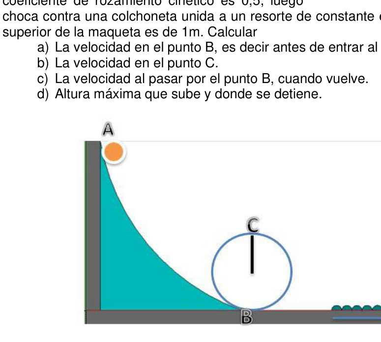
Topic: Conservation of Energy Metodi: Energy Conservation Method, Hooke’s Law, Free-Body Diagram Competenze: Physical Reasoning Objects: Sphere, Spring Fonte: Testo (PDF) — p.116
L’architetto ad alto rischio
PT123. UEGP N° 55 Don Orione Presidente. - Signor Presidente, la commissione per la protezione dell’ambiente ha votato per una risoluzione del Parlamento europeo e del Consiglio.
L’architetto ad alto rischio Un architetto, un fanatico degli sport di alto livello. rischio, si desidera costruire un pista di pattinaggio, come è mostrato nella figura, ma prima, ha costruito un modello per eseguire test con un oggetto spherico. La sfera usata è di circa 0,45 Kg, il tracciato ha una parte senza attrito, un rulli di 0,20 m di radio e poi una zona di attrito di 0,55 m di L’intera durata, come mostrato nella figura, il coefficiente di rottura cinetica è 0,5; quindi colpisce un tappeto attaccato ad una sorgente di costante elastica di 100 N/m. L’ altezza La parte superiore del modello è di 1 m. Calcolare a) La velocità al punto B, cioè prima di entrare nel rollo. b) La velocità al punto C. c) La velocità di passaggio del punto B, quando ritorna. d) Altura massima in cui salire e dove fermarsi.
Considerare la forza di gravità di 9,8 m/s2
90 - OAF 2019
Topic: Conservation of Energy Metodi: Energy Conservation Method, Hooke’s Law, Free-Body Diagram Competenze: Physical Reasoning Objects: Sphere, Spring Fonte: Testo (PDF) — p.116
The high-risk architect
PT123. The Commission shall adopt delegated acts in accordance with Article 21 of Regulation (EC) No 1290/2005. The Commission has also adopted a number of proposals for a new directive.
The high-risk architect . An architect, high school sports fan. risk, you want to make a skating rink, like It’s shown in the figure, but before that, he built it. A model for testing an object It’s spherical. The sphere used is about 0.45 kg, the track It has a frictionless part, a roll of 0.20m of radius and then a 0.55 m friction zone of length, as shown in the figure, whose The kinetic friction coefficient is 0,5; then impact a mattress attached to a spring of constant elasticity of 100 N/m. The height The top of the model is 1 m. Calculate (a) The speed at point B, i.e. before entering the roll. (b) The speed at point C. (c) The speed when passing through point B, when returning. (d) Maximum height to which it ascends and where it stops.
Consider the gravitational force of 9.8m/s2
The following is the list of the countries of origin of the products:
Topic: Conservation of Energy Metodi: Energy Conservation Method, Hooke’s Law, Free-Body Diagram Competenze: Physical Reasoning Objects: Sphere, Spring Fonte: Testo (PDF) — p.116
Dragster
PT124. Instituto La Salle Florida, Buenos Aires.
Dragster
Los dragster son una especie
de
coches
alargados
que
compiten
en
carreras
de
aceleración, en las que en
cortos
recorridos
rectos
alcanzan elevadas velocidades
en pocos segundos. En la
fotografía adjunta de uno de
estos engendros, se muestra
con
un
círculo
blanco
la
posición del centro de masas y algunos parámetros geométricos que necesitaremos.
Aunque juegan un papel muy importante, para simplificar el problema, no se va a tener en
cuenta la influencia de los elementos aerodinámicos (alerones) que hay tanto en la parte
anterior como en la posterior del dragster. Se considera que en todo momento las ruedas
motrices ruedan sin deslizar.
La fuerza de rozamiento entre la pista y las ruedas motrices (las posteriores,
naturalmente) es la que hace avanzar el coche. Lógicamente, para que la aceleración sea
máxima interesa que dicha fuerza de rozamiento lo sea también.
a) Haga un diagrama de cuerpo libre del dragster indicando las fuerzas exteriores
que actúan sobre él durante el proceso de aceleración.
b) Sin tener en cuenta ningún tipo de fuerza de resistencia, salvo la de rozamiento
con la pista, y tomando como coeficiente de rozamiento estático μe = 0,90 y
como valor de la aceleración de la gravedad g = 10 m/s2, obtenga la expresión
de la aceleración máxima del vehículo, amax, y calcule su valor.
La distribución de las fuerzas, es decir las relaciones entre b1, b2 y h son determinantes
para lograr la máxima aceleración.
c) Determine la relación que debe existir entre b2 y h para que la aceleración sea
máxima sin que el dragster haga “willy”, es decir, manteniendo las cuatro ruedas
sobre el suelo durante todo el recorrido.
d) Si la longitud de la pista es L = 400 m, determine las expresiones de la velocidad
al final del recorrido, vf, y del tiempo transcurrido en el recorrido, Tf, y calcule sus
valores. Considere que en todo momento el vehículo se mueve con la
aceleración máxima.
Una vez recorrida la pista de aceleración, cuando se supone que su velocidad es la
máxima, Vf, los dragster despliegan un paracaídas para frenar. La fuerza de resistencia
que ejerce el paracaídas es:
FR=1/2 ρ S CD v2
En la que v es la velocidad del dragster, ρ = 1,2 kg/m3 es la densidad del aire, S = 3,0 m2
la superficie que el paracaídas presenta al flujo de aire y CD = 1,2 un coeficiente, llamado
de forma, que supondremos independiente de la velocidad.
e) Si la masa del dragster es M = 1500 kg y despreciando cualquier otra fuerza de
rozamiento, determine el tiempo Tp que transcurre desde que el piloto abre el
paracaídas hasta que la velocidad del dragster se reduce en un 50%, es decir a
un valor Vp= Vf / 2.
Ayuda
𝑑𝑣 𝑣2 = 1 𝑣1 −1 𝑣2 𝑣2 𝑣1
OAF 2019- 91
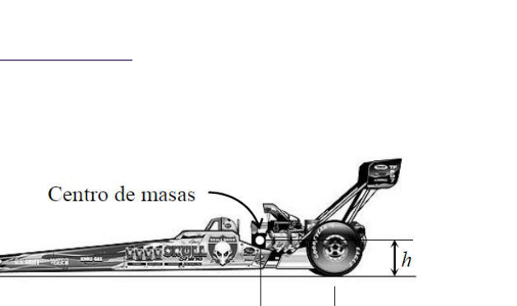
Topic: Newtonian Mechanics Metodi: Free-Body Diagram, Differential Equations, Kinematic Equations Competenze: Physical Reasoning, Mathematical Modeling Objects: Wheel Fonte: Testo (PDF) — p.116
Il gruppo di trasporti è stato costituito da:
PT124. Istituto La Salle Florida, Buenos Aires.
Dragster I dragster sono una specie. de Automobili allungate che Compete en Carriere de Accelerazione, in cui
- Brevi
- I viaggi
- Retti raggiungono velocità elevate. In pochi secondi. En la Foto di uno di Questi geni, si mostra con un circolo bianco la la posizione del centro di massa e alcuni parametri geometrici che ci serviranno. Anche se giocano un ruolo molto importante, per semplificare il problema, non ci sarà in La parte più importante è l’influenza degli elementi aerodinamici (aleroni) che si trovano tanto nella parte. Anteriore come nella parte posteriore del dragster. Si ritiene che in ogni momento le ruote motori che ruotano senza scivolare. La forza di rottura tra pista e ruote motrici (traseri, Naturalmente) è quella che fa avanzare la macchina. Logicamente, per l’accelerazione è La forza di rottura è la stessa cosa. a) Fate un diagramma del corpo libero del dragster indicando le forze esterne che agiscono su di lui durante il processo di accelerazione. b) Senza tenere conto di alcuna forza di resistenza, tranne quella di rottura. con pista, e prendendo come coefficiente di ruggine statico μe = 0,90 e come valore dell’accelerazione della gravità g = 10 m/s2, si ottiene l’espressione di massima velocità del veicolo, amax, e calcola il suo valore.
La distribuzione delle forze, cioè i rapporti tra b1, b2 e h sono determinanti per ottenere la massima accelerazione. c) Determina il rapporto che deve esistere tra b2 e h per ottenere l’accelerazione massima senza che il dragster faccia willy, cioè mantenendo le quattro ruote sul pavimento per tutto il percorso. d) Se la lunghezza della pista è L = 400 m, determinare le espressioni della velocità alla fine del percorso, vf, e del tempo trascorso nel percorso, Tf, e calcola i suoi Valori. Considera che il veicolo si muove in ogni momento con la
- Accelerazione massima.
Una volta percorso il binario di accelerazione, quando la sua velocità è supposta di essere la velocità di Vf, i dragster dispongono un paracadute per frenare. La forza di resistenza che esercita il paracadute è: FR=1/2 ρ S CD v2 In cui v è la velocità del dragster, ρ = 1,2 kg/m3 è la densità dell’aria, S = 3,0 m2 la superficie che il paracadute presenta al flusso d’aria e CD = 1,2 un coefficiente, chiamato in modo che supponiamo che sia indipendente dalla velocità. e) Se la massa del dragster è M = 1500 kg e disprezzando qualsiasi altra forza di Raggiustamento, determina il tempo di tempo trascorso dal momento in cui il pilota apre il Paracadute fino a quando la velocità del dragster si riduce del 50%, cioè a Vp = Vf / 2.
Aiuto .
𝑑𝑣 𝑣2 = 1 𝑣1 −1 𝑣2 𝑣2 𝑣1
OAF 2019- 91
Topic: Newtonian Mechanics Metodi: Free-Body Diagram, Differential Equations, Kinematic Equations Competenze: Physical Reasoning, Mathematical Modeling Objects: Wheel Fonte: Testo (PDF) — p.116
The following is the list of the aircraft types:
PT124. The La Salle Institute I’m going to Florida, Buenos Aires.
Dragster . Dragsters are a species . de Cars Length of the head That They compete. en Careers de acceleration, in which Short . The European Parliament The right ones They reach high speeds. In a few seconds. En la attached photograph of one of These offspring, it shows with un circle white la position of the center of mass and some geometric parameters we’ll need. Although they play a very important role, to simplify the problem, you’re not going to have to The effect of the aerodynamic elements (aeroons) on the part is so much The front as well as the rear of the dragster. It is considered that at all times the wheels The engines are moving without slipping. The friction force between the track and the driving wheels (the rear, It’s the one that drives the car. Logically, so that the acceleration is It is of the utmost interest that such a force of friction be also. (a) Draw a free body diagram of the dragster indicating the external forces. which act on it during the acceleration process. (b) Without taking into account any resistance force other than that of friction. with the track, and taking as a coefficient of static friction μe = 0,90 and as the value of the acceleration of gravity g = 10 m/s2, obtain the expression The maximum vehicle speed, amax, and calculate its value.
The distribution of forces, i.e. the relationships between b1, b2 and h are determinants. to achieve maximum acceleration. (c) Determine the ratio of b2 to h for acceleration to be maximum without the dragster making willy, i.e. keeping the four wheels on the ground throughout the course. (d) If the track length is L = 400 m, determine the speed expressions At the end of the journey, vf, and the time spent on the journey, Tf, and calculate their values. Consider that at all times the vehicle is moving with the Maximum acceleration is required.
Once you’ve run the acceleration track, when your speed is supposed to be the Maximum, Vf, dragsters deploy a parachute to brake. The strength of resistance The parachute is: FR=1/2 ρ S CD v2 Where v is the dragster speed, ρ = 1.2 kg/m3 is the air density, S = 3.0 m2 the surface area of the parachute to the air flow and CD = 1,2 a coefficient, called So we’ll assume that it’s independent of the speed. (e) If the dragster mass is M = 1500 kg and disregarding any other force of The time period of the TP since the pilot opens the Parachute until the speed of the dragster is reduced by 50%, i.e. a value Vp=Vf / 2.
Help .
𝑑𝑣 𝑣2 = 1 𝑣1 −1 𝑣2 𝑣2 𝑣1
The following is the list of the countries of the European Union:
Topic: Newtonian Mechanics Metodi: Free-Body Diagram, Differential Equations, Kinematic Equations Competenze: Physical Reasoning, Mathematical Modeling Objects: Wheel Fonte: Testo (PDF) — p.116
Ciclo
PT125. Instituto La Salle Florida, Buenos Aires.
Ciclo
Una máquina térmica realiza un ciclo compuesto por
una compresión adiabática (1→2), seguida de una
expansión isobárica (2→3), una expansión adiabática
(3→4), y una descompresión isocórica (4→1). Este
ciclo se realiza sobre un mol de gas ideal
(R = 8,3143 J/mol K, cp/cv = = 1,4). En el estado 1, al
inicio del ciclo, el gas está a una presión de 50 kPa,
siendo su temperatura 270 K. Además, se sabe que la
relación de compresión (volumen máximo a mínimo) es
r = Vmáx/Vmín = 15 y la temperatura máxima que alcanza
es 1500 K.
Calcular a) los valores de las variables termodinámicas en cada uno de los estados (1,2,3 y 4, indicados en el diagrama p-v), completando el cuadro siguiente,
1 2 3 4 P [kPa]
V [m3]
T [K]
b) los calores intercambiados y trabajos realizados por el gas en cada transformación, completando el cuadro siguiente,
c) Calcule el rendimiento del ciclo.
Topic: Thermodynamics Metodi: Thermodynamic Cycle Analysis, First Law of Thermodynamics, Ideal Gas Law Competenze: Physical Reasoning, Mathematical Modeling Objects: Gas Fonte: Testo (PDF) — p.116
Ciclo
PT125. Istituto La Salle Florida, Buenos Aires.
Ciclo Una macchina termico esegue un ciclo composto da: una compressione adiabita (1→2), seguita da una Espansione isobarica (2→3), espansione adiabatica (3→4), e una decompressione isocorica (4→1). Questo . ciclo viene effettuato su un mol di gas ideale (R = 8,3143 J/mol K, cp/cv = = 1,4). Lo stato 1, al all’inizio del ciclo, il gas è a una pressione di 50 kPa, la temperatura è di 270 K. Inoltre, è noto che il rapporto di compressione (volume massimo a minimo) è r = Vmax/Vmín = 15 e la temperatura massima raggiunta es 1500 K.
Calcolare a) i valori delle variabili termodinamiche in ciascuno degli stati (1,2,3 e 4, indicati nel diagramma p-v), completando il seguente tabella,
1 2 3 4 P [kPa]
V [m3]
T [K]
b) il calore scambiato e il lavoro svolto dal gas in ciascuna La trasformazione, completando il seguente tabella,
c) Calcolare la performance del ciclo.
Topic: Thermodynamics Metodi: Thermodynamic Cycle Analysis, First Law of Thermodynamics, Ideal Gas Law Competenze: Physical Reasoning, Mathematical Modeling Objects: Gas Fonte: Testo (PDF) — p.116
The following table shows the results of the calculation of the risk of the risk of the risk of injury:
PT125. The La Salle Institute I’m going to Florida, Buenos Aires.
Cycle A heat machine performs a cycle composed of a compression adiabatic (1→2), followed by a The following is a list of the types of airborne diseases that are associated with the presence of airborne diseases: The following table shows the results of the test: This one . cycle is performed on an ideal gas mole The following is the list of the following: In state 1, at At the start of the cycle, the gas is at a pressure of 50 kPa, Its temperature is 270 K. In addition, it is known that The compression ratio (maximum to minimum volume) is r = Vmax/Vmín = 15 and the maximum temperature it reaches es 1500 K.
Calculate (a) the values of the thermodynamic variables in each of the states (1,2,3 and 4, shown in diagram p-v), completing the following table,
1 2 3 4 The following table shows the following:
V [m3]
T [K]
(b) heat exchanged and work carried out by the gas in each transformation, completing the following table,
(c) Calculate the performance of the cycle.
Topic: Thermodynamics Metodi: Thermodynamic Cycle Analysis, First Law of Thermodynamics, Ideal Gas Law Competenze: Physical Reasoning, Mathematical Modeling Objects: Gas Fonte: Testo (PDF) — p.116
Electroscopio
PT126. Instituto La Salle Florida, Buenos Aires.
Electroscopio El electroscopio consta de dos láminas delgadas de oro o aluminio que están fijas en el extremo de una varilla metálica que pasa a través de un soporte. Cuando se toca la bola del electroscopio con un cuerpo cargado, las hojas adquieren carga del mismo signo y se repelen. La fuerza de repulsión electrostática se equilibra con el peso de las hojas. Un modelo simplificado de electroscopio consiste en dos pequeñas esferas de masa m cargadas con cargas iguales q y del mismo signo que cuelgan de dos hilos de longitud l, tal como se indica la figura. Una vez que está en equilibrio, se pueden determinar los diferentes parámetros que intervienen.
Se sitúan dos partículas de masa m con cargas iguales q1 suspendidas de sendos hilos iguales de longitud l, observándose que se separan un ángulo de 20º (θ1=10º). Posteriormente se eleva la carga de las partículas hasta un valor q2 y se observa que el ángulo que forman entre ellas es ahora el doble.
1→2 2→3 3→4 4→1 Q [J]
W [J]
p V 1 2 3 4
92 - OAF 2019 a) ¿Qué relación hay entre los valores de las cargas q1 y q2? b) Si la longitud del hilo es 30 cm y q1 tiene un valor de 20 nC ¿Cuánto valen las masas de las partículas?
Datos k = 9.109 Nm2/C2
Topic: Electrostatics Metodi: Coulomb’s Law, Free-Body Diagram, Small-Angle Approximation Competenze: Physical Reasoning, Mathematical Modeling Objects: Sphere, String Fonte: Testo (PDF) — p.116
Elettroscopio
PT126. Istituto La Salle Florida, Buenos Aires.
L’elettroscopo L’elettroscopo è costituito da due sottili lastre d’oro o di alluminio che sono fissate al estremità di una verga metallica che passa attraverso un supporto. Quando si tocca la palla L’elettroscopio con un corpo carico, le foglie assumono carico dello stesso segno e si
- Ripulisce. La forza di repulsione elettrostatica si bilancia con il peso delle foglie. Un Il modello di elettroscopo semplificato consiste in due piccole sfere di massa m carichi con uguali carichi q e dello stesso segno che pendono su due fili di lunghezza l, come indicato nella figura. Una volta che è in equilibrio, si possono determinare i I parametri che intervengono sono diversi.
Si collocano due particelle di massa m con Cargas uguali q1 sospese di sentieri fili
- le dimensioni di un’aria di un’aria di separare un angolo di 20o (θ1=10o). Successivamente si eleva il carico delle La quantità di particelle fino a un valore q2 è L’angolo che formano tra di loro è ora il
- Due volte.
1→2 2→3 3→4 4→1 Q [J]
W [J]
p V 1 2 3 4
92 - OAF 2019 a) Qual è la relazione tra i valori dei carichi q1 e q2? b) Se la lunghezza del filo è di 30 cm e il q1 ha un valore di 20 nC, quanto valgono le le masse delle particelle?
Datos k = 9.109 Nm2/C2
Topic: Electrostatics Metodi: Coulomb’s Law, Free-Body Diagram, Small-Angle Approximation Competenze: Physical Reasoning, Mathematical Modeling Objects: Sphere, String Fonte: Testo (PDF) — p.116
The following table shows the results of the calculations:
PT126. The La Salle Institute I’m going to Florida, Buenos Aires.
The electroscope . The electroscope consists of two thin sheets of gold or aluminium that are fixed on the end of a metal rod passing through a support. When the ball is touched The electroscope with a loaded body, the leaves take charge of the same sign and are They’re repelling. The electrostatic repulsion force is balanced with the weight of the leaves. Un The simplified model of the electroscope consists of two small mass spheres m with equal loads q and of the same sign hanging from two strands of length l, as shown in the figure. Once it is in balance, the The Commission will examine the following:
Two m-mass particles are placed with Equal loads of suspended wire paths The same lengths l, observing that They are separated at an angle of 20o (θ1=10o). The load of the particles up to a value of q2 and it is observed that The angle they form between them is now the double.
1→2 2→3 3→4 4→1 Q [J]
W [J]
p V 1 2 3 4
The Commission shall adopt delegated acts in accordance with Article 21 of this Regulation. (a) What is the relationship between the values of the loads q1 and q2? (b) If the length of the thread is 30 cm and q1 has a value of 20 nC, what are the values of the mass of the particles?
Data from the report k = 9.109 Nm2/C2
Topic: Electrostatics Metodi: Coulomb’s Law, Free-Body Diagram, Small-Angle Approximation Competenze: Physical Reasoning, Mathematical Modeling Objects: Sphere, String Fonte: Testo (PDF) — p.116
Jack y Rose pudieron haberse salvado?
PT127. Colegio Nacional de Buenos Aires Ciudad Autónoma de Buenos Aires.
¡Jack y Rose pudieron haberse salvado??
Titanic, una película dirigida por James Cameron y lanzada en 1997, ha sido el récord de
taquilla de cine más grande de todos los tiempos. El trágico naufragio del transatlántico
en su viaje inaugural es el telón de fondo de una historia de amor imposible involucrando
a Jack (Leonardo DiCaprio) y Rose (Kate Winslet).
La escena 1después del naufragio muestra a Rose flotando sobre una puerta de madera
mientras Jack está adentro del agua (Fig. 1.1). Esta imagen deja ver que habría espacio
para la pareja, y no sólo para Rose, para permanecer en el fragmento, y sugiere que
ambos podrían haber sobrevivido al naufragio.
Suponiendo que la puerta es un paralelepípedo de dimensiones 2.40m x 0.70m x 0.10m y que la densidad del agua de mar es 1.024x10³kg / m³ y la densidad de la madera, 550kg/m3 a) Determinar el Empuje máximo ejercido por el agua sobre la puerta b) Si el peso de Jack es de 75 kgf, y el de Rose, 60kgf, y se ubican como en la Figura 1.2 ¿Es posible que los ambos se salven? JUSTIFICAR
c) ¿Cuál debe ser la mínima porción hundida de la puerta, para que sólo se salve Rose?
Ahora el largo de la puerta es de 1.20 m, la misma se hunde por completo y los enamorados se ubican como en la Fig 1.3.
OAF 2019- 93
d) Considérese el eje que pasa por el centro de masas de la puerta y que es longitudinal a la pareja. A qué distancia máxima del mismo debe ubicarse cada uno para que la puerta no rote?
Topic: Fluid Mechanics, Rigid Body Statics Metodi: Hydrostatic Equilibrium, Torque & Angular Momentum Analysis Competenze: Physical Reasoning, Mathematical Modeling Objects: Block Fonte: Testo (PDF) — p.116
Jack e Rose potrebbero essere stati salvati?
PT127. Collegio Nazionale di Buenos Aires Città autonoma di Buenos Aires.
Jack e Rose potrebbero essere stati salvati? Titanic, un film diretto da James Cameron e pubblicato nel 1997, è stato il record di La più grande box office di tutti i tempi. Il tragico naufragio del transatlantico nel suo viaggio inaugurale è il backdrop di una storia d’amore impossibile coinvolgendo a Jack (Leonardo DiCaprio) e Rose (Kate Winslet). La scena dopo il naufragio mostra Rose galleggiando su una porta in legno. mentre Jack è all’interno dell’acqua (Fig. 1.1). Questa immagine mostra che ci sarebbe spazio. per la coppia, e non solo per Rose, per rimanere nel frammento, e suggerisce che entrambi avrebbero potuto sopravvivere al naufragio.
Supponiamo che la porta sia un parallelepiedo di dimensioni 2.40m x 0.70m x 0.10m e che la densità dell’acqua di mare è di 1.024x103kg/m3 e la densità del legno, 550kg/m3 a) Determine il Possesso massimo esercitato dall’acqua sulla porta b) Se il peso di Jack è di 75 kgf, e di Rose, 60 kgf, e si trovano come in Figura 1.2 È possibile che entrambi siano salvati? Giustificare
c) Qual è la minima porzione di porta che deve essere affondata, per poter essere salvata? Rose?
Ora la lunghezza della porta è di 1,20 m, la stessa si affonda completamente e i Gli innamorati sono collocati come in Figura 1.3.
OAF 2019- 93
d) Considerare l’asse che passa attraverso il centro di massa della porta e che è longitudinale alla coppia. A che distanza massima si deve individuare ogni Uno per non far rotire la porta?
Topic: Fluid Mechanics, Rigid Body Statics Metodi: Hydrostatic Equilibrium, Torque & Angular Momentum Analysis Competenze: Physical Reasoning, Mathematical Modeling Objects: Block Fonte: Testo (PDF) — p.116
Could Jack and Rose have been saved?
PT127. National College of Buenos Aires The Autonomous City of Buenos Aires.
Jack and Rose could have saved themselves? Titanic, a film directed by James Cameron and released in 1997, has been the record of The biggest movie theater of all time. The tragic shipwreck of the Atlantic Ocean. In its inaugural journey it is the backdrop of an impossible love story involving Jack (Leonardo DiCaprio) and Rose (Kate Winslet) are playing. The scene after the shipwreck shows Rose floating on a wooden door. while Jack is in the water (Fig. 1.1). This image shows that there would be space . For the couple, and not just for Rose, to stay in the fragment, and suggests that They could both have survived the shipwreck.
Suppose the door is a parallel-piped of dimensions 2.40m x 0.70m x 0.10m and that the density of seawater is 1,024x103kg/m3 and the density of wood, 550kg/m3 (a) Determine the maximum water pressure on the door. (b) If Jack’s weight is 75 kgf, and Rose’s, 60 kgf, and are placed as in Figure 1.2 Is it possible that both of them will be saved? Justify it .
(c) What should be the minimum portion of the door sunk so that only it is saved? Rose? What?
Now the length of the door is 1.20 m, it sinks completely and the The two types of love are shown in Figure 1.3.
The Commission shall adopt implementing acts in accordance with Article 21 of this Regulation.
(d) Consider the axis passing through the centre of mass of the gate and which is longitudinal to the pair. What is the maximum distance from the same? One so the door doesn’t rotate?
Topic: Fluid Mechanics, Rigid Body Statics Metodi: Hydrostatic Equilibrium, Torque & Angular Momentum Analysis Competenze: Physical Reasoning, Mathematical Modeling Objects: Block Fonte: Testo (PDF) — p.116
PT128. Colegio Nacional de Buenos Aires Ciudad Autónoma de Buenos Aires.
En el circuito de la figura 2, considere que el motor
eléctrico M tiene un rendimiento de 0,7 y transforma
energía eléctrica en calor a través de una única
resistencia interna Ri, de 3Ω, por la que circula una
corriente de 2A. Sabiendo que cuando se cierran
todas las llaves, la fuente entrega energía con una
potencia de 60w, determine
a) La potencia a la que consume energía
eléctrica el motor
b) La energía mecánica que éste entrega en 2
horas
c) La diferencia se potencial que provee la
fuente
d) El valor de las resistencias R y la corriente
que circula por ellas
e) Al abrir la llave L2, el calor que disipa la
resistencia R que está en paralelo con L2 es
utilizada para calentar 200g de agua a la temperatura inicial de 10⁰C.
¿Cuánto tiempo tardará en empezar a hervir el agua?
Topic: Circuits, Thermodynamics Metodi: Kirchhoff’s Laws, Equivalent Circuit Reduction Competenze: Physical Reasoning, Mathematical Modeling Objects: Resistor, Battery, Switch Fonte: Testo (PDF) — p.116
PT128. Collegio Nazionale di Buenos Aires Città autonoma di Buenos Aires.
Nel circuito di figura 2, considera che il motore M ha un rendimento di 0,7 e trasforma energia elettrica in calore attraverso una sola resistenza interna Ri, di 3Ω, per la quale si circola una corrente 2A. Sapendo che quando si chiudono tutte le chiavi, la fonte fornisce energia con una Potenza di 60w, determinare a) Potenza di consumo energetico elettrica il motore b) L’energia meccanica che essa trasmette in 2 ore c) La differenza è il potenziale che fornisce la fonte d) Il valore delle resistenze R e corrente che circola attraverso di loro. e) Quando si apre la chiave L2, il calore che si dissipa resistenza R che è parallela a L2 è utilizzato per riscaldare 200 g di acqua a temperatura iniziale di 100 C. Quanto tempo ci vorrà prima che l’acqua inizi a bollire?
Topic: Circuits, Thermodynamics Metodi: Kirchhoff’s Laws, Equivalent Circuit Reduction Competenze: Physical Reasoning, Mathematical Modeling Objects: Resistor, Battery, Switch Fonte: Testo (PDF) — p.116
PT128. National College of Buenos Aires The Autonomous City of Buenos Aires.
In the circuit in Figure 2, consider that the engine Electric M has a yield of 0.7 and transforms Electrical energy in heat through a single internal resistance Ri, of 3Ω, through which a 2A current. Knowing that when they close All the keys, the source delivers power with one. 60w power, determine (a) The power to which it consumes energy Electrical engine (b) The mechanical energy delivered by the latter in 2 Hours . (c) The potential difference that provides the Source (d) The value of the resistors R and current It ‘s a little bit of a ride . (e) When the L2 key is opened, the heat dissipated by the R resistance that is parallel to L2 is used to heat 200 g of water at an initial temperature of 100 °C. How long before the water starts to boil?
Topic: Circuits, Thermodynamics Metodi: Kirchhoff’s Laws, Equivalent Circuit Reduction Competenze: Physical Reasoning, Mathematical Modeling Objects: Resistor, Battery, Switch Fonte: Testo (PDF) — p.116
PT129. Colegio Nacional de Buenos Aires Ciudad Autónoma de Buenos Aires.
Un recipiente cúbico con paredes opacas fue colocado de
modo tal que el ojo de un observador no ve su fondo, pero sí la
pared CD completa (ver figura 3)
a) ¿Cuál debe ser el ángulo de refracción en la interfaz
aire-agua para que el observador comience a ver un
objeto F que se encuentra a una distancia b del vértice
D?
b) ¿Cuál debe ser el nivel de agua en el cubo para que el
observador comience a ver un objeto F que se
encuentra a una distancia b del vértice D?
Datos na = 4/3 ; b = 15 cm.
94 - OAF 2019
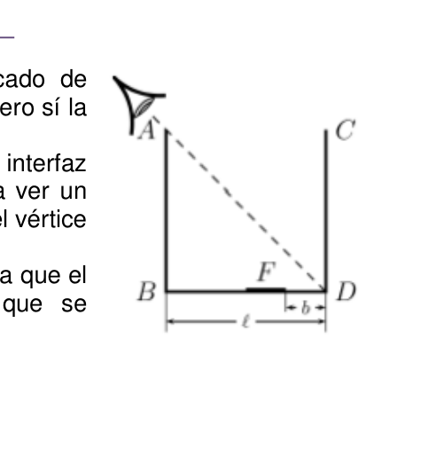
Topic: Geometric Optics Metodi: Snell’s Law Competenze: Physical Reasoning, Mathematical Modeling Objects: Container Fonte: Testo (PDF) — p.116
PT129. Collegio Nazionale di Buenos Aires Città autonoma di Buenos Aires.
Un recipiente cubico con pareti opache è stato posizionato da Così che l’occhio di un osservatore non vede il fondo, ma si la parete CD completa (vedere figura 3) a) Qual è l’angolo di rifrazione dell’interfaccia aria-acqua per far iniziare l’osservatore a vedere un oggetto F che si trova a una distanza b dal vertice D? b) Qual è il livello di acqua del cubo per consentire alla L’osservatore inizia a vedere un oggetto F che si trova a una distanza b dal vertice D?
Datos na = 4/3 ; b = 15 cm.
94 - OAF 2019
Topic: Geometric Optics Metodi: Snell’s Law Competenze: Physical Reasoning, Mathematical Modeling Objects: Container Fonte: Testo (PDF) — p.116
PT129. National College of Buenos Aires The Autonomous City of Buenos Aires.
A cubic container with opaque walls was placed from So the eye of an observer cannot see its bottom, but it does. The full CD wall (see figure 3) (a) What should be the angle of refraction at the interface Air-water so the observer can start to see a object F that is at a distance b from the vertex D? (b) What should be the water level in the bucket so that the The observer begins to see an object F that is Finds a distance b from the D vertex?
Data from the report na = 4/3 ; b = 15 cm.
The following is the list of the countries of the European Union:
Topic: Geometric Optics Metodi: Snell’s Law Competenze: Physical Reasoning, Mathematical Modeling Objects: Container Fonte: Testo (PDF) — p.116
PT130. Escuela Técnica N° 28 República Francesa Ciudad Autónoma de Buenos Aires.
Para calcular la distancia D a la que cae
el bloque de acero con masa M = 2.0 kg,
y detenerse a una distancia E, como se
muestra en la figura, resolver los
siguientes incisos:
a) Una bola de acero de masa
m = 0.45 kg, amarrada a un
cable de masa despreciable y longitud L = 70 cm se deja caer a partir del reposo,
¿qué velocidad V0 tiene la bola cuando golpea al bloque?
b) Después de que la bola choca elásticamente con velocidad V0 con el bloque
de masa M = 2.0 kg ¿con que velocidad V se mueve dicho bloque?
c) El bloque de acero sale “disparado” con la velocidad V horizontalmente y sigue a
continuación una trayectoria parabólica, cayendo desde la altura H = 0.6 m
encontrar el valor de D.
d) Teniendo en cuenta que el coeficiente de rozamiento dinámico es µ = 0.02 entre
el bloque y el piso, y que no se produce ningún rebote del bloque con el piso,
determinar la distancia E, entre D y su detención al segundo de caer.
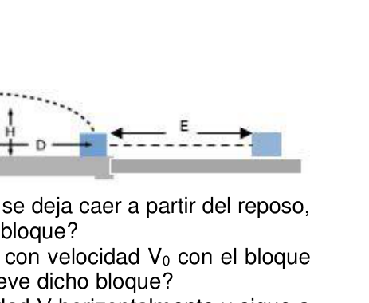
Topic: Newtonian Mechanics, Conservation of Momentum Metodi: Conservation of Momentum, Conservation of Energy, Kinematic Equations Competenze: Physical Reasoning, Mathematical Modeling Objects: Ball, Block, Pendulum Fonte: Testo (PDF) — p.116
PT130. Scuola tecnica N° 28 Repubblica francese Città autonoma di Buenos Aires.
Per calcolare la distanza D a cui si trova il blocco di acciaio con massa M = 2,0 kg, e fermarsi a distanza E, come se mostra nella figura, risolvi i le seguenti incisioni: a) Una palla di massa di acciaio m = 0,45 kg, attaccato a un il cavo di massa scarsa e lunghezza L = 70 cm viene lasciato cadere dal riposo, Qual è la velocità V0 della palla quando colpisce il blocco? b) Dopo che la palla colpisce elasticamente con velocità V0 con il blocco di massa M = 2,0 kg, a che velocità V si muove il blocco? c) Il blocco di acciaio esce sparo con velocità V orizzontalmente e segue a continuano un percorso parabolico, scendendo dall’altezza H = 0,6 m trovare il valore di D. d) Considerando che il coefficiente di rottura dinamica è μ = 0,02 tra il blocco e il pavimento, e non si verifica alcun rimbalzo del blocco con il pavimento, determinare la distanza E, tra D e la sua arrestazione al secondo di caduta.
Topic: Newtonian Mechanics, Conservation of Momentum Metodi: Conservation of Momentum, Conservation of Energy, Kinematic Equations Competenze: Physical Reasoning, Mathematical Modeling Objects: Ball, Block, Pendulum Fonte: Testo (PDF) — p.116
PT130. Technical School N° 28 French Republic The Autonomous City of Buenos Aires.
To calculate the distance D falls to the steel block with mass M = 2.0 kg, And stop at a distance E, as you are. The figure shows, solve the the following incidents: (a) A mass steel ball m = 0,45 kg, attached to a The length of the wire of scanty mass and length L = 70 cm is dropped from the rest, What is the V0 speed of the ball when it hits the block? (b) After the ball collides elastically at V0 speed with the block of mass M = 2.0 kg, at what speed V is this block moving? (c) The steel block is released dispared with V speed horizontally and continues to The following is a parabolic path, falling from H = 0.6 m. Find the value of D. (d) Whereas the dynamic friction coefficient is μ = 0.02 between the block and the floor, and that there is no rebound of the block with the floor, determine the distance E, between D and its second-fall stop.
Topic: Newtonian Mechanics, Conservation of Momentum Metodi: Conservation of Momentum, Conservation of Energy, Kinematic Equations Competenze: Physical Reasoning, Mathematical Modeling Objects: Ball, Block, Pendulum Fonte: Testo (PDF) — p.116
PT131. Escuela Técnica N° 28 República Francesa Ciudad Autónoma de Buenos Aires.
Un electrón se acelera por la acción de una diferencia de potencial de 100 V y,
posteriormente, penetra en una región en la que existe un campo magnético uniforme de
2 T, perpendicular a la trayectoria del electrón.
a) Calcula la velocidad del electrón a la entrada del campo magnético.
b) Halla el radio de la trayectoria que recorre el electrón en el interior del campo
magnético.
c) Halla el periodo del movimiento.
Topic: Electromagnetism, Magnetism Metodi: Lorentz Force Analysis, Energy Conservation Method Competenze: Physical Reasoning, Mathematical Modeling Objects: Electron Fonte: Testo (PDF) — p.116
PT131. Scuola tecnica N° 28 Repubblica francese Città autonoma di Buenos Aires.
Un elettrone è accelerato dall’azione di una differenza di potenziale di 100 V e, In seguito, penetra in una regione in cui esiste un campo magnetico uniforme di 2 T, perpendicolare al percorso dell’elettrone. a) Calcola la velocità dell’elettrone all’ingresso del campo magnetico. b) Scopri il raggio di percorso che l’elettrone percorre all’interno del campo Magnetico. c) Indicare il periodo di movimento.
Topic: Electromagnetism, Magnetism Metodi: Lorentz Force Analysis, Energy Conservation Method Competenze: Physical Reasoning, Mathematical Modeling Objects: Electron Fonte: Testo (PDF) — p.116
PT131. Technical School N° 28 French Republic The Autonomous City of Buenos Aires.
An electron is accelerated by the action of a potential difference of 100 V and, It then penetrates a region in which there is a uniform magnetic field of 2 T, perpendicular to the path of the electron. (a) Calculates the electron’s velocity at the input of the magnetic field. (b) Find the radius of the path the electron travels through inside the field magnetic. (c) Find the period of movement.
Topic: Electromagnetism, Magnetism Metodi: Lorentz Force Analysis, Energy Conservation Method Competenze: Physical Reasoning, Mathematical Modeling Objects: Electron Fonte: Testo (PDF) — p.116
PT132. Escuela Técnica N° 28 República Francesa Ciudad Autónoma de Buenos Aires.
Una habitación cerrada de 50 m3 se encuentra a la misma temperatura (10 ºC) y presión
(1kp/cm2) del exterior. Se conecta la calefacción y al cabo de un rato la temperatura
interior ha subido a 25ºC. Calcular:
a) La nueva presión interior.
b) El calor suministrado, considerando el aire como gas ideal diatómico y que las
paredes no se calientan ni conducen el calor.
c) La cantidad de gas que sale al abrir una ventana, suponiendo que la temperatura
interior no varía.
d) Suponiendo ahora que la ventana de vidrio (de 1 m2 de área y 0,4 cm de
espesor) está cerrada y su conductividad térmica es de 0,6 W/m·K, calcular el
flujo calorífico aportado por la calefacción para mantener la temperatura
constante.
Topic: Thermodynamics, Kinetic Theory Metodi: Ideal Gas Law, First Law of Thermodynamics Competenze: Physical Reasoning, Mathematical Modeling Objects: Gas Fonte: Testo (PDF) — p.116
PT132. Scuola tecnica N° 28 Repubblica francese Città autonoma di Buenos Aires.
Una stanza chiusa di 50 m3 è a temperatura e pressione uguali (10 oC). (1 kp/cm2) all’esterno. Si collega il riscaldamento e dopo un po ’ la temperatura interno è salito a 25°C. Calcolare: a) La nuova pressione interna. b) Il calore fornito, considerando che l’aria è un gas ideale diatomico e che le i muri non si riscaldano e non conducono il calore. c) La quantità di gas che viene rilasciata quando si apre una finestra, supponendo che la temperatura interno non varia. d) Supponendo ora che la finestra di vetro (di 1 m2 di superficie e 0,4 cm di spessore) è chiusa e la sua conducibilità termico è di 0,6 W/m·K, calcolare il il flusso calore fornito dal riscaldamento per mantenere la temperatura costante.
Topic: Thermodynamics, Kinetic Theory Metodi: Ideal Gas Law, First Law of Thermodynamics Competenze: Physical Reasoning, Mathematical Modeling Objects: Gas Fonte: Testo (PDF) — p.116
PT132. Technical School N° 28 French Republic The Autonomous City of Buenos Aires.
A closed room of 50 m3 is at the same temperature (10 oC) and pressure (1kp/cm2) from the outside. Heating is connected and after a while the temperature is The interior has gone up to 25oC. Calculation: (a) The new internal pressure. (b) The heat supplied, taking into account air as the ideal diatomic gas and the walls don’t heat up or conduct heat. (c) The amount of gas released when opening a window, assuming the temperature The interior is unchanged. (d) Assuming now that the glass window (of 1 m2 area and 0.4 cm of thickness) is closed and its thermal conductivity is 0,6 W/m·K, calculate the heat flow provided by heating to maintain temperature It’s constant.
Topic: Thermodynamics, Kinetic Theory Metodi: Ideal Gas Law, First Law of Thermodynamics Competenze: Physical Reasoning, Mathematical Modeling Objects: Gas Fonte: Testo (PDF) — p.116
PT133. Escuela Técnica N° 9 Luis A. Huergo Ciudad Autónoma de Buenos Aires.
Se dispone de un cañón, en posición fija, que puede disparar un proyectil de m = 875 kg a v0 = 750 m/s. Se sabe que el tiempo mínimo entre disparos es 30 s. Despreciar la
OAF 2019- 95 resistencia del aire. El ángulo de elevación puede llegar hasta 90°.
a) Calcular el máximo alcance, y para ese caso, el ángulo formado con la horizontal, la altura máxima de la trayectoria, el instante en que ocurre, y el tiempo total hasta el impacto. b) Calcular cuántos disparos consecutivos pueden efectuarse a 20 km de distancia antes del impacto del primer proyectil. c) Para demostrar habilidad, se intenta hacer chocar dos proyectiles, lanzados por el mismo cañón, en el aire; de ser posible, dar una solución a este problema. d) Se dispara a un blanco a 32,5 km y luego a otro a menor distancia. Calcular en que radio se encuentra este segundo blanco, y el ángulo de elevación del disparo, si los dos proyectiles fueron efectuados con 30 segundos de diferencia e impactan al mismo tiempo. e) La masa móvil que retrocede luego de un lanzamiento horizontal es de 120 toneladas. Calcular Vaprox de tal masa, un instante luego del disparo y previo a que actúe el sistema de amortiguamiento. f) Continuando la situación del punto e), se sabe que la masa se desplaza 45 cm en su basamento hasta detenerse. Calcular la fuerza considerada constante que actuó para detenerla.
Datos g = 9,81 m/s2 2 . cos α . sen α = sen 2α
Topic: Newtonian Mechanics, Conservation of Momentum Metodi: Kinematic Equations, Conservation of Momentum Competenze: Physical Reasoning, Mathematical Modeling Objects: Projectile Fonte: Testo (PDF) — p.116
PT133. Scuola tecnica N° 9 Luis A. - Hoorgo Città autonoma di Buenos Aires.
Si dispone di un cannone, in posizione fissa, che può sparare un proiettile di m = 875 kg a v0 = 750 m/s. Si sa che il tempo minimo tra i colpi è di 30 secondi. Disprezziare la
OAF 2019- 95 resistenza all’aria. L’angolo di sollevamento può arrivare a 90°.
(a) Calcolare la portata massima, e in tal caso l’angolo formato con la L’evoluzione della velocità di velocità di un’onda di velocità di velocità di un’onda di velocità di velocità di un’onda di velocità di velocità di un’onda di velocità di velocità di velocità di un punto di velocità di velocità di velocità di velocità di un punto di velocità di velocità di velocità di velocità di velocità di velocità di velocità di velocità di velocità di velocità di velocità di velocità di velocità di velocità di velocità di velocità di velocità di velocità di velocità di velocità di velocità di velocità di velocità di velocità di velocità di velocità di velocità di velocità di velocità di velocità di velocità di velocità di velocità di velocità di velocità di velocità di velocità di velocità di velocità di velocità di velocità di velocità di velocità di velocità di velocità di velocità di velocità di velocità di velocità di velocità di velocità di velocità di velocità di velocità di velocità di velocità di velocità di velocità di velocità di velocità di velocità di velocità di velocità di velocità di velocità di velocità di velocità di velocità di velocità di velocità di velocità di velocità di velocità di velocità di velocità di velocità di velocità di velocità di velocità di velocità di velocità di velocità di velocità di velocità di velocità di velocità di velocità di velocità di velocità di velocità di velocità di velocità di velocità di velocità di velocità di velocità di velocità di velocità di velocità di velocità di velocità di velocità di velocità di velocità di velocità di velocità di velocità di velocità di velocità di velocità di velocità di velocità di velocità di velocità di velocità di velocità di velocità di velocità di velocità di velocità di velocità di velocità di velocità di velocità di velocità di velocità di velocità di velocità di velocità di velocità di velocità di velocità di velocità di velocità di velocità di velocità di velocità di velocità di velocità di velocità di velocità di velocità di velocità di velocità di velocità di velocità di veloc tempo totale fino all’impatto. b) Calcolare quante volte successive si possono sparare a 20 km di distanza prima dell’impatto del primo proiettile. c) Per dimostrare abilità, si tenta di far colpire due proiettili lanciati da la stessa cannone, in aria; se possibile, dare una soluzione a questo problema. d) Si dispiega su un bersaglio a 32,5 km e poi su un altro a una distanza minore. Calcolare in che raggio si trova questo secondo bianco, e l’angolo di elevazione del
- se i due proiettili sono stati fatti a 30 secondi di distanza. e colpiscono allo stesso tempo. e) La massa mobile che si ritira dopo un lancio orizzontale è di 120 tonnellate. Calcolare Vaprox di tale massa, istantaneamente dopo il tiro e prima di che il sistema di ammortizzazione funzioni. f) Continuando la posizione del punto e), si sa che la massa si muove di 45 cm in il suo fondamento fino a fermarsi. Calcolare la forza considerata costante che ha agito per fermarla.
Datos g = 9,81 m/s2 2 . cos α . Sen α = sen 2α
Topic: Newtonian Mechanics, Conservation of Momentum Metodi: Kinematic Equations, Conservation of Momentum Competenze: Physical Reasoning, Mathematical Modeling Objects: Projectile Fonte: Testo (PDF) — p.116
PT133. Technical School N° 9 Luis A. I ‘m not . The Autonomous City of Buenos Aires.
It has a cannon, in fixed position, which can fire a projectile of m = 875 kg a v0 = 750 m/s. The minimum time between shots is known to be 30 seconds. Disdain the
The Commission shall adopt implementing acts in accordance with Article 21 of this Regulation. air resistance. The angle of lifting may be up to 90°.
(a) Calculate the maximum range, and in this case the angle formed by the horizontal, the maximum height of the trajectory, the moment it occurs, and the Total time until impact. (b) Calculate how many consecutive shots can be fired from 20 km away Before the first projectile hits. (c) To demonstrate skill, two projectiles, launched by the The same cannon, in the air; if possible, to give a solution to this problem. (d) One target is shot at 32.5 km and then another at a shorter distance. Calculate in which radius is this second white, and the elevation angle of the I’m not sure if the two shots were fired 30 seconds apart. And they impact at the same time. (e) The rolling mass that recedes after a horizontal launch is 120 tons of it. Calculate Vaprox of such mass, instantly after shooting and before the buffer system is in operation. (f) Continuing from point (e), the mass is known to move 45 cm in its base until it stops. Calculate the force considered constant that He acted to stop her.
Data from the report g = 9,81 m/s2 2 . Cos α . The following is the list of the following:
Topic: Newtonian Mechanics, Conservation of Momentum Metodi: Kinematic Equations, Conservation of Momentum Competenze: Physical Reasoning, Mathematical Modeling Objects: Projectile Fonte: Testo (PDF) — p.116
PT134. Escuela Técnica N° 9 Luis A. Huergo Ciudad Autónoma de Buenos Aires.
En la expedición oceanográfica de este año se tienen variados objetivos. Pero se fija la atención en resolver los siguientes aspectos técnicos y curiosos fenómenos, relativos a la actividad exploratoria y la maniobra del buque.
a) Un buceador que explora el fondo del mar cerca de la costa, observa desprenderse una burbuja desde un depósito submarino. El diámetro de la burbuja supuesta esférica es de 10 cm a 20 m de profundidad, calcular su volumen al emerger si la temperatura permanece invariable. b) Una porta que da a cubierta y solo puede abrirse hacia el interior, soporta una sobrepresión, en el lado interno, de 50 Pa. Su forma es rectangular y sus dimensiones 80 cm de ancho por 200 cm de alto. Calcular la fuerza mínima necesaria para abrirla desde el lado extremo opuesto a la bisagra. c) Debido a un temporal, un golpe de mar impacta sobre la porta del punto b). Si la velocidad de la masa de agua es v = 15 m/s y su volumen V = 5 m3, calcular la mínima fuerza, considerada constante, para detenerla en 0,2 s. d) El propulsor del buque es un sistema de chorro de agua a alta velocidad; su radio en la sección circular de entrada es 1,2 m y 0,5 m el de salida. Siendo Q = 6 m3s-1, calcular vchorro en los conductos de entrada y salida, y la fuerza que ejerce el chorro de agua saliente sobre el tren de empuje del buque. e) La potencia entregada por los motores es 3 MW a vmax = 15 m/s en mar calmo, calcular la fuerza de resistencia que opone el mar al barco. El sistema de propulsión se compone del motor y la turbina que expele el chorro de agua. La eficiencia de los componentes es ηmotor = 0,5 y ηturbina = 0,3.
Datos δagua_salada = 1025 kg m-3 Patm = 101325 Pa
96 - OAF 2019
Topic: Fluid Mechanics, Thermodynamics Metodi: Bernoulli’s Equation, Continuity Equation, Ideal Gas Law Competenze: Physical Reasoning, Mathematical Modeling Objects: Bubble, Tube Fonte: Testo (PDF) — p.116
PT134. Scuola tecnica N° 9 Luis A. - Hoorgo Città autonoma di Buenos Aires.
L’espedizione oceanografica di quest’anno ha diversi obiettivi. Ma si fissa la La Commissione ha inoltre adottato una proposta di direttiva che prevede che le misure adottate per la protezione dei consumatori siano state adottate in modo adeguato. attività di esplorazione e manovra della nave.
a) Un subacqueo che esplora il fondo del mare vicino alla costa osserva Scatare una bolla da un deposito sottomarino. Il diametro della La bolla di cui si suppone sia sferica è di 10 cm a 20 m di profondità, calcola il suo volume quando emerge se la temperatura rimane invariata. b) Una porta che dà a terra e può essere aperta solo verso l’interno, supporta una sovrapposizione, sul lato interno, di 50 Pa. La sua forma è rettangolare e le sue dimensioni di 80 cm di larghezza per 200 cm di altezza. Calcolare la forza minima necessaria per aprirla dall’estremo lato opposto all’angolo. c) A causa di una tempesta, un colpo di mare colpisce la porta del punto b). Si la La velocità della massa d’acqua è v = 15 m/s e il suo volume V = 5 m3, calcolare la forza minima, considerata costante, per fermarla in 0,2 s. d) Il propulsore della nave è un sistema di jet d’acqua ad alta velocità; il suo raggio è nella sezione circolare di ingresso è di 1,2 m e di uscita di 0,5 m. Essendo Q = 6 m3s-1, calcolare la rottura nei canali di entrata e uscita, e la forza che esercita il jet d’acqua uscente sul treno di spinta della nave. e) La potenza fornita dai motori è di 3 MW a vmax = 15 m/s in mare calmo, Calcolare la forza di resistenza che il mare oppone alla nave. Il sistema di Propulsione è composto dal motore e dalla turbina che espelle il jet d’acqua. La l’efficienza dei componenti è ηmotor = 0,5 e ηturbina = 0,3.
Datos δacqua_salata = 1025 kg m-3 Patm = 101325 Pa
96 - OAF 2019
Topic: Fluid Mechanics, Thermodynamics Metodi: Bernoulli’s Equation, Continuity Equation, Ideal Gas Law Competenze: Physical Reasoning, Mathematical Modeling Objects: Bubble, Tube Fonte: Testo (PDF) — p.116
PT134. Technical School N° 9 Luis A. I ‘m not . The Autonomous City of Buenos Aires.
This year’s oceanographic expedition has a variety of objectives. But you ‘re fixing the The Commission has also taken a number of measures to address the following technical and curious phenomena concerning the exploratory activity and maneuvering of the vessel.
(a) A diver exploring the seabed near the coast observes I’m going to blow a bubble out of an underwater tank. The diameter of the The supposed spherical bubble is 10 cm to 20 m deep, calculate its volume when emerging if the temperature remains unchanged. (b) A door that faces the deck and can only open inwards, supports a Overpressure on the inside side of 50 Pa. Its shape is rectangular and its shape is rectangular. dimensions 80 cm wide by 200 cm high. Calculate the minimum force necessary to open it from the extreme opposite side of the hinge. (c) Due to a storm, a sea blow impacts the gate of point (b). Si la The speed of the water mass is v = 15 m/s and its volume V = 5 m3, calculate the minimum force, considered constant, to stop it in 0,2 s. (d) The propulsion system of the ship is a high-speed water jet system; its radius in the circular section of the entrance is 1,2 m and the exit is 0,5 m. Being Q = 6 m3s-1, calculate the flow rate in the inlet and outlet pipes, and the force that Exercises the outgoing water jet over the ship’s propulsion train. (e) The power delivered by the engines is 3 MW at vmax = 15 m/s in the calm sea, calculate the strength of the resistance of the sea to the ship. The system of propulsion is composed of the engine and the turbine that expels the water jet. La The efficiency of the components is ηmotor = 0,5 and ηturbine = 0,3.
Data from the report The following table shows the total quantity of water: The following is the list of the countries of the European Union:
The following is the list of the countries of the European Union:
Topic: Fluid Mechanics, Thermodynamics Metodi: Bernoulli’s Equation, Continuity Equation, Ideal Gas Law Competenze: Physical Reasoning, Mathematical Modeling Objects: Bubble, Tube Fonte: Testo (PDF) — p.116
PT135. Escuela Técnica N° 9 Luis A. Huergo Ciudad Autónoma de Buenos Aires.
Desde un observatorio terrestre se descubre un curioso cuerpo celeste. Se ubica un satélite en una órbita circular alrededor de tal cuerpo -esférico-, para investigar las condiciones en vista de su posible habitabilidad.
a) Calcular la densidad media del cuerpo. b) Dada la altura de la órbita, 300 km, calcular el período de la misma y la velocidad tangencial del satélite. c) En su viaje, los paneles solares del satélite de área 6 m2, apuntan directamente al sol, mediante un sistema automático que los dirige en la dirección correcta. Calcular la máxima distancia a la que puede alejarse del sol, y aún mantener sus sistemas en funcionamiento durante 6 horas por día, si la potencia sumada de todos los equipos es 25 W. La conversión de la energía recibida en energía eléctrica se efectúa con un rendimiento cercano al 25%, y la electricidad generada puede almacenarse en baterías casi en su totalidad. d) Una antena tal la mostrada en la figura, está compuesta por un conductor con dos áreas de sección constante, una del doble de la otra. Para controlar la fabricación se aplican 12 V entre los extremos indicados A y B. Calcular la intensidad de corriente que circula en el circuito, y la ddp que debe medirse entre los puntos C y D si la sección de los conductores es la correcta. Existen solo dos valores para la longitud entre nodos, L o L/2. Cada tramo de conductor de la cruz central interior al cuadrado, tiene un área de sección mitad del resto del circuito. La resistividad del material es ρconductor = 2,4 . 10-5 Ωm, el radio de la menor sección es r = 3 mm, y el lado del cuadrado mide L = 2 m.
Datos
mplaneta = 2,5 . 1023 kg
rplaneta = 2700 km
Vesfera = 4/3 π r3
G = 6,67 . 10-11 N m2 kg-2
1 UA ≈ 1,5 . 108 km
Intensidad media de radiación solar en la tierra, en la parte alta de la atmósfera:
I = 1365 W m-2
Topic: Gravitation, Circuits Metodi: Newton’s Law of Gravitation, Kepler’s Laws Competenze: Physical Reasoning, Mathematical Modeling Objects: Satellite, Planet, Wire Fonte: Testo (PDF) — p.116
PT135. Scuola tecnica N° 9 Luis A. - Hoorgo Città autonoma di Buenos Aires.
Da un osservatorio terrestre si scopre un curioso corpo celeste. Si trova un Il satellite in orbita circolare intorno a un corpo - spherico - per studiare le condizioni in vista della loro possibile abitabilità.
a) Calcolare la densità media del corpo. b) Data l’altezza dell’orbita, 300 km, calcolare il periodo e la velocità dell’orbita tangenziale del satellite. c) Nel loro viaggio, i pannelli solari del satellite di 6 m2 di superficie puntano direttamente al sole, tramite un sistema automatico che li guida nella giusta direzione. Calcolare la distanza massima che può allontanarsi dal sole, e ancora mantenere i suoi sistemi in funzione per 6 ore al giorno, se la potenza sommata di tutti gli equipaggi sono 25 W. La conversione dell’energia ricevuta in energia La produzione elettrica è effettuata con un rendimento vicino al 25%, e l’elettricità la produzione di energia può essere quasi interamente conservata in batterie. d) Un’antenna come mostrata nella figura è composta da un conduttore con due aree di sezione costante, una doppia dell’altra. Per controllare la La fabbricazione di 12 V è effettuata tra le estremità indicate A e B. Calcolare la l’intensità di corrente che circola nel circuito e la ddp da misurare tra i punti C e D se la sezione dei conducenti è corretta. Ci sono solo due . Valori per la lunghezza tra nodi, L o L/2. Ogni tratto di conduzione della croce centro interno al quadrato, ha un’area di sezione metà del resto del circuito. La resistività del materiale è ρconductor = 2,4 . 10-5 Ωm, il raggio di minore La sezione è r = 3 mm, e il lato del quadrato è L = 2 m.
Datos mplaneta = 2,5 . 1023 kg rplaneta = 2700 km Vespera = 4/3 π r3 G = 6,67 . 10-11 N m2 kg-2 1 UA ≈ 1,5 . 108 km Intensità media di radiazioni solari sulla terra, nell’alta parte dell’atmosfera: I = 1365 W m-2
Topic: Gravitation, Circuits Metodi: Newton’s Law of Gravitation, Kepler’s Laws Competenze: Physical Reasoning, Mathematical Modeling Objects: Satellite, Planet, Wire Fonte: Testo (PDF) — p.116
PT135. Technical School N° 9 Luis A. I ‘m not . The Autonomous City of Buenos Aires.
From a terrestrial observatory, a curious celestial body is discovered. It ‘s a location . The satellite in a circular orbit around such a spherical body, to investigate the conditions in view of their possible habitability.
(a) Calculate the average body density. (b) Given the altitude of the orbit, 300 km, calculate the period of the orbit and the speed tangential to the satellite. (c) On their journey, the 6 m2 solar panels point directly at the satellite. to the sun, by an automatic system that directs them in the right direction. Calculate the maximum distance you can get away from the sun, and still keep your distance. systems in operation for 6 hours per day, if the power added to All the equipment is 25 W. Conversion of energy received into energy The electricity is produced at a yield of close to 25%, and electricity The energy generated can be stored in batteries almost entirely. (d) An antenna such as that shown in the figure is composed of a conductor with Two areas of constant section, one twice the size of the other. To control the manufacture 12 V between the ends indicated A and B. Calculate the the current intensity circulating in the circuit, and the ddp to be measured between points C and D if the driver section is correct. There are only two. values for the length between nodes, L or L/2. Every conducting section of the cross . central to square, has a half-section area of the rest of the circuit. The resistivity of the material is ρconductor = 2.4 . 10-5 Ωm, the radius of the minor The section is r = 3 mm, and the side of the square is L = 2 m.
Data from the report mplanet is 2.5 . 1023 kg The planet is 2700 km The value of the product shall be the value of the product concerned. G = 6,67 . 10-11 N m2 kg-2 1 UA ≈ 1,5 . 108 km Average intensity of solar radiation on Earth, in the upper atmosphere: I = 1365 W m-2
Topic: Gravitation, Circuits Metodi: Newton’s Law of Gravitation, Kepler’s Laws Competenze: Physical Reasoning, Mathematical Modeling Objects: Satellite, Planet, Wire Fonte: Testo (PDF) — p.116
PT136. Colegio N° 9-002 Tomás Godoy Cruz Ciudad de Mendoza.
Luisa la chica, enamorada de Superman, en esa historieta, que pesa 540 N se cae desde
lo alto de un edificio de 180 m de altura, y desciende en caída libre.
Superman llega a lo alto del edificio a los 4 s después del inicio de la caída de Luisa y se
lanza, con velocidad constante para salvarla.
a) ¿Cuál es el mínimo valor de la velocidad que Superman debe desarrollar para
alcanzar a su admiradora antes de que se choque contra el suelo?
b) Suponiendo que logra salvarla, ¿A qué distancia del piso logra rescatarla?
c) ¿Cuánto se demora en llegar?
Topic: Newtonian Mechanics Metodi: Kinematic Equations Competenze: Physical Reasoning, Mathematical Modeling Objects: Projectile Fonte: Testo (PDF) — p.116
PT136. Scuola N° 9-002 Tomás Godoy Cruz Città di Mendoza.
Luisa la ragazza, innamorata di Superman, in quel fumetto, che pesa 540 N cade da l’altezza di un edificio alto 180 metri, e scende in caduta libera. Superman arriva al vertice di un edificio 4 secondi dopo l’inizio della caduta di Luisa e si lancia, con velocità costante per salvarla. a) Qual è il minimo valore di velocità che Superman deve sviluppare per raggiungere la sua ammiratrice prima che si schianti contro il pavimento? b) Supponendo di riuscire a salvarla, a che distanza dal pavimento riesce a salvarla? c) Quanto tempo ci vuole per arrivare?
Topic: Newtonian Mechanics Metodi: Kinematic Equations Competenze: Physical Reasoning, Mathematical Modeling Objects: Projectile Fonte: Testo (PDF) — p.116
PT136. School N° 9-002 Tomás Godoy Cruz The city of Mendoza.
Luisa the girl, in love with Superman, in that comic, weighing 540 N falls from The height of a 180-meter-high building, and it comes down in free fall. Superman reaches the top of the building 4 seconds after the start of Luisa’s fall and it’s Spear, at constant speed to save it. (a) What is the minimum value of the speed that Superman must develop for reaching your admirer before she hits the ground? (b) Assuming he can save her, how far from the floor can he rescue her? (c) How long does it take to arrive?
Topic: Newtonian Mechanics Metodi: Kinematic Equations Competenze: Physical Reasoning, Mathematical Modeling Objects: Projectile Fonte: Testo (PDF) — p.116
PT137. Colegio N° 9-002 Tomás Godoy Cruz Ciudad de Mendoza.
En los vértices de un cuadrado imaginario de 0,1 cm de lado hay cargas de 30 C, -10C, 40 C y 0C. Encuentre la fuerza resultante sobre el vértice de -10 C.
OAF 2019- 97
Topic: Electrostatics Metodi: Coulomb’s Law, Superposition Principle, Vector Decomposition Competenze: Physical Reasoning, Mathematical Modeling Objects: Point Charge Fonte: Testo (PDF) — p.116
PT137. Scuola N° 9-002 Tomás Godoy Cruz Città di Mendoza.
Sulle cime di un quadrato immaginario di 0,1 cm laterale ci sono carichi di 30 C, -10 C, 40 C y 0C. Trova la forza risultante sul vertice di -10 C.
OAF 2019- 97
Topic: Electrostatics Metodi: Coulomb’s Law, Superposition Principle, Vector Decomposition Competenze: Physical Reasoning, Mathematical Modeling Objects: Point Charge Fonte: Testo (PDF) — p.116
PT137. School N° 9-002 Tomás Godoy Cruz The city of Mendoza.
At the vertices of an imaginary square of 0.1 cm on the side there are charges of 30 C, -10 C, 40 C y 0C. Find the resulting force over the -10 C vertex.
The following is the list of the countries of the European Union:
Topic: Electrostatics Metodi: Coulomb’s Law, Superposition Principle, Vector Decomposition Competenze: Physical Reasoning, Mathematical Modeling Objects: Point Charge Fonte: Testo (PDF) — p.116
PT138. Colegio N° 9-002 Tomás Godoy Cruz Ciudad de Mendoza.
a) ¿Cuál es la presión total sobre la espalda de un buzo profesional en un lago a
una profundidad de 8 m?
b) ¿Cuál es la fuerza sobre la espalda del buzo, debida únicamente al agua,
tomando la superficie de la espalda como un rectángulo de 60 cm por 50 cm?
c) ¿Cuál es la fuerza ejercida sobre la espalda del buzo cuando se encuentra
flotando en la superficie?
Datos Densidad del agua: 1.103 kg/m3 Presión atmosférica: 1,01. 105 N/m2
Topic: Fluid Mechanics Metodi: Hydrostatic Equilibrium Competenze: Physical Reasoning, Mathematical Modeling Objects: — Fonte: Testo (PDF) — p.116
PT138. Scuola N° 9-002 Tomás Godoy Cruz Città di Mendoza.
a) Qual è la pressione totale sul dorso di un subacqueo professionista in un lago a una profondità di 8 metri? b) Qual è la forza sulla schiena del subacqueo, dovuta unicamente all’acqua? prendendo la superficie della schiena come un rettangolo di 60 cm per 50 cm? c) Qual è la forza esercitata sulla schiena del subacqueo quando si trova Flottando sulla superficie?
Datos Densità dell’acqua: 1.103 kg/m3 Pressione atmosferica: 1,01. 105 N/m2
Topic: Fluid Mechanics Metodi: Hydrostatic Equilibrium Competenze: Physical Reasoning, Mathematical Modeling Objects: — Fonte: Testo (PDF) — p.116
PT138. School N° 9-002 Tomás Godoy Cruz The city of Mendoza.
(a) What is the total pressure on the back of a professional diver in a lake? A depth of 8 meters? (b) What is the force on the diver’s back due solely to water? Taking the surface of the back as a 60 cm by 50 cm rectangle? (c) What is the force exerted on the diver’s back when he is in position? floating on the surface?
Data from the report The water density: 1.103 kg/m3 Air pressure: 1.01 105 N/m2
Topic: Fluid Mechanics Metodi: Hydrostatic Equilibrium Competenze: Physical Reasoning, Mathematical Modeling Objects: — Fonte: Testo (PDF) — p.116
PT139. Colegio N° 4-003 Emilio Civit - Departamento de Aplicación Docentes* Maipú - *Ciudad de Mendoza, Mendoza.
Un oso goloso de 700N camina en una viga en un intento por recuperar algunos dulces que cuelgan del extremo en una canasta. La viga es uniforme, pesa 200N y mide 6m de largo, la cesta con los dulces pesan 80 N.
a) Trace el diagrama de cuerpo libre de la viga b) Cuándo el oso está en x=1m, determine la tensión del alambre y los componentes de la fuerza de reacción en la bisagra c) Si el alambre puede resistir una tensión máxima de 900N, ¿Cuál es la distancia máxima que el oso puede caminar antes de que se rompa el alambre?
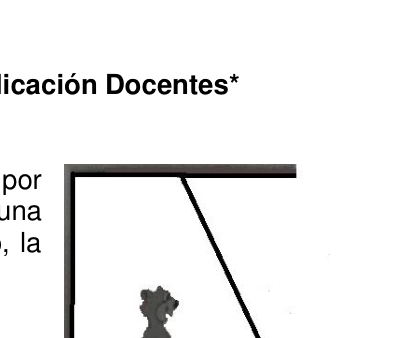
Topic: Rigid Body Statics Metodi: Torque & Angular Momentum Analysis, Free-Body Diagram Competenze: Physical Reasoning, Mathematical Modeling Objects: Beam Fonte: Testo (PDF) — p.116
PT139. Collegio N° 4-003 Emilio Civit - Dipartimento di Applicazione Docenti* Maipú - Città di Mendoza, Mendoza.
Un orso di 700 N cammina su un vigno in un tentativo di… recuperare alcuni dolci che appendono dall’estremità in una
- Cesto. Il vigno è uniforme, pesa 200 N e misura 6 m di lunghezza, il Cesto di dolci pesa 80 N.
a) Tracciare il diagramma del corpo libero del vigno b) Quando il orso è a x=1m, determina la tensione del il filo e i componenti della forza di reazione in
- di legno c) Se il filo può resistere a una tensione massima di 900N, qual è la distanza massima che può raggiungere l’orso? camminare prima che il filo si spezzi?
Topic: Rigid Body Statics Metodi: Torque & Angular Momentum Analysis, Free-Body Diagram Competenze: Physical Reasoning, Mathematical Modeling Objects: Beam Fonte: Testo (PDF) — p.116
PT139. The following is a list of the most important activities of the European Parliament and of the Council: The following is a list of the cities and towns in the province of Mendoza.
A gold bear of 700N walks on a beam in an attempt to I ‘m gonna get some candy hanging from the end in a . basket. The beam is uniform, weighs 200 N and measures 6 m long, the The sweet basket weighs 80 N.
(a) Draw the free body diagram of the beam. (b) When the bear is at x=1m, determine the voltage of the Wire and components of the reaction force in the
- The wheel (c) If the wire can withstand a maximum stress of 900N, what’s the maximum distance a bear can travel? Walk before the wire breaks?
Topic: Rigid Body Statics Metodi: Torque & Angular Momentum Analysis, Free-Body Diagram Competenze: Physical Reasoning, Mathematical Modeling Objects: Beam Fonte: Testo (PDF) — p.116
El barco del desierto
PT140. Colegio N° 4-003 Emilio Civit - Departamento de Aplicación Docentes* Maipú - *Ciudad de Mendoza, Mendoza.
El barco del desierto
Los camellos necesitan muy poca agua porque pueden tolerar cambios relativamente
grandes en su temperatura corporal. Mientras que las personas mantienen su
temperatura corporal constante dentro de un intervalo de 1 a 2 C°, un camello
deshidratado deja que su temperatura corporal baje a 34 °C de noche y suba a 40°C de
día. Para ver lo eficaz que es este mecanismo para ahorrar agua, calcule cuántos litros
98 - OAF 2019 de agua tendría que beber un camello de 400 kg, si tratara de mantener su temperatura corporal en 34 °C mediante evaporación de sudor durante el día (12 h), en vez de dejar que suba a 40°C. (Nota: la capacidad calorífica específica de un camello u otro mamífero es la de una persona representativa es de3480 J/(kg.K) y el calor de vaporización del agua a es 34 °C de 2,42 . 106 J/kg.
Topic: Thermodynamics, Biology Metodi: First Law of Thermodynamics Competenze: Physical Reasoning, Mathematical Modeling Objects: — Fonte: Testo (PDF) — p.116
La barca del deserto
PT140. Collegio N° 4-003 Emilio Civit - Dipartimento di Applicazione Docenti* Maipú - Città di Mendoza, Mendoza.
La barca del deserto I cammelli hanno bisogno di molto poco acqua perché possono tollerare i cambiamenti relativamente. grande nella temperatura corporea. Mentre la gente mantiene il suo temperatura corporea costante all’interno di un intervallo di 1 a 2 C°, un cammello la sua temperatura corporea scende a 34 °C di notte e sale a 40°C di giorno. Per vedere quanto sia efficace questo meccanismo per risparmiare acqua, calcola quanti litri
98 - OAF 2019 Un cammello di 400 kg di acqua dovrebbe bere se cercasse di mantenere la sua temperatura. La temperatura di 34 °C è aumentata con evaporazione del sudore durante il giorno (12 ore), invece di lasciare il sudore. che sali a 40°C. (Nota: capacità calorica specifica di un cammello o di un altro mammifero è quella di una persona rappresentativa è di 3480 J/(kg.K) e il calore di vaporizzazione del a è 34 °C di 2,42 . 106 J/kg.
Topic: Thermodynamics, Biology Metodi: First Law of Thermodynamics Competenze: Physical Reasoning, Mathematical Modeling Objects: — Fonte: Testo (PDF) — p.116
The desert ship
PT140. The following is a list of the most important activities of the European Parliament and of the Council: The following is a list of the cities and towns in the province of Mendoza.
The desert ship . Camels need very little water because they can tolerate relatively little change. large in body temperature. While people keep their body temperature within a range of 1 to 2 C°, a camel dehydrated leaves your body temperature to 34 °C at night and rises to 40°C at night day. To see how effective this mechanism is to save water, calculate how many liters
The Commission shall adopt delegated acts in accordance with Article 21 of this Regulation. I’d have to drink a 400-pound camel if I tried to keep it warm. body temperature in 34 °C by evaporation of sweat during the day (12 h), instead of leaving The maximum value of the product shall be: (Note: the specific heat capacity of a camel or other mammal is that of a representative person is of 3480 J/(kg.K) and the heat vaporization of the water a is 34 °C of 2.42 . 106 J/kg.
Topic: Thermodynamics, Biology Metodi: First Law of Thermodynamics Competenze: Physical Reasoning, Mathematical Modeling Objects: — Fonte: Testo (PDF) — p.116
Campo de un dipolo electrico
PT141. Colegio N° 4-003 Emilio Civit - Departamento de Aplicación Docentes* Maipú - *Ciudad de Mendoza, Mendoza.
Campo de un dipolo eléctrico Las cargas puntuales q1 y q2 de +12nC y -12nC, respectivamente, están situadas a 0,1 m de distancia entre ellas. Esta combinación de dos cargas puntuales con igual magnitud y signo opuesto se llama dipolo eléctrico. Tales combinaciones ocurren con frecuencia en la naturaleza. Calcule el campo eléctrico causado por q1, el campo eléctrico causado por q2 y el campo total en a) el punto a b) el punto b c) el punto c
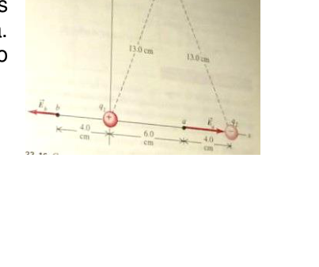
Topic: Electrostatics Metodi: Coulomb’s Law, Superposition Principle, Vector Decomposition Competenze: Physical Reasoning, Mathematical Modeling Objects: Point Charge Fonte: Testo (PDF) — p.116
Campo di un dipolo elettrico
PT141. Collegio N° 4-003 Emilio Civit - Dipartimento di Applicazione Docenti* Maipú - Città di Mendoza, Mendoza.
Campo di un dipolo elettrico Carri pontuali q1 e q2 di +12nC e -12nC, rispettivamente situati a 0,1 m di distanza tra
- Le loro. Questa combinazione di due carichi puntuali con uguale La grandezza e il segno opposto sono chiamati dipoli elettrici. - Come ? Le combinazioni si verificano spesso in natura. Calcola il campo elettrico causato da q1, il campo elettrico causato da q2 e dal campo totale in a) il punto a b) punto b c) punto c)
Topic: Electrostatics Metodi: Coulomb’s Law, Superposition Principle, Vector Decomposition Competenze: Physical Reasoning, Mathematical Modeling Objects: Point Charge Fonte: Testo (PDF) — p.116
Field of an electric dipole
PT141. The following is a list of the most important activities of the European Parliament and of the Council: The following is a list of the cities and towns in the province of Mendoza.
Field of an electric dipole The point loads q1 and q2 of +12nC and -12nC, respectively, are located at a distance of 0,1 m between They’re the ones. This combination of two equal-point loads magnitude and opposite sign is called the electric dipole. Such . combinations occur frequently in nature. Calculate the electric field caused by q1, the electric field caused by q2 and the total field in (a) the point (a) (b) point (b) (c) point (c)
Topic: Electrostatics Metodi: Coulomb’s Law, Superposition Principle, Vector Decomposition Competenze: Physical Reasoning, Mathematical Modeling Objects: Point Charge Fonte: Testo (PDF) — p.116
El cazador y el jabali
PT142. EPET N° 4 Juan Agustín Larrús General Acha, La Pampa.
El cazador y el jabalí
En la zona que vivimos se practica mucho la cacería del jabalí donde se encuentra
muchos cotos de caza en cual tienen apostadero colocados para que los cazadores se
encuentren cómodos
Un cazador se aposto para poder cazar un jabalí de tamaño importante que pasa por un
portillo donde lo ve, él se encuentra a 150 mts en el momento que aparece el animal que
tiene solo 3 mts que lo puede ver
Graficar la situación
El arma con la cual dispara balas de 50grs con una velocidad de salida del caño de 350
m/s tiene rose con el aire coeficiente de rozamiento es de 0,003
Determinar
Desde el momento que parece el animal que camina a una velocidad de 2,88 km/h
¿cuánto demora en pasar?
¿Con que velocidad llega la bala al lugar de impacto?
¿Qué tiempo tiene el cazador para disparar y pegar en el blanco antes que deje de verlo?
Topic: Newtonian Mechanics Metodi: Kinematic Equations Competenze: Physical Reasoning, Mathematical Modeling Objects: Projectile Fonte: Testo (PDF) — p.116
Il cacciatore e il giallo
PT142. EPET N° 4 Juan Agustín Larrús Generale Acha, La Pampa.
Il cacciatore e il selvaggio Nella zona in cui viviamo si pratica molto la caccia al bosco dove si trova Molti campi di caccia in cui hanno un posto da puntare collocati per i cacciatori si trovate comodi. Un cacciatore si impegna per poter cacciare un giardino di grandi dimensioni che passa attraverso un’area di un’area di un’area di un’area di un’area di un’area di un’area di un’area di un’area di un’area di un’area di un’area di un’area di un’area di un’area di un’area di un’area di un’area di un’area di un’area di un’area di un’area di un’area di un’area di un’area di un’area di un’area di un’area di un’area di un’area di un’area di un’area di un’area di un’area di un’area di un’area di un’area di un’area di un’area di un’area di un’area di un’area di un’area di un’area di un’area di un’area di un’area di un’area di un’area di un’area di un’area di un’area di un’area di un’area di un’area di un’area di un’aria di una zona di un’aria. Il portale dove lo vede, si trova a 150 metri quando appare l’animale che Ha solo 3 metri di distanza che lo vede. Grafica della situazione La pistola con cui spara proiettili da 50 grs con una velocità di uscita dal cannone di 350 m/s ha rosa con aria il coefficiente di rottura è di 0,003 Determinare Dal momento che sembra l’animale che cammina a velocità di 2,88 km/h Quanto ci vuole per passare? A che velocità arriva la pallottola al punto di colpo? Quanto tempo ha il cacciatore per sparare e colpire il bersaglio prima di smettere di vederlo?
Topic: Newtonian Mechanics Metodi: Kinematic Equations Competenze: Physical Reasoning, Mathematical Modeling Objects: Projectile Fonte: Testo (PDF) — p.116
The hunter and the wild boar
PT142. The Commission has also adopted a number of proposals for a new directive on the protection of workers’ rights. General Acha, the Pampa.
The hunter and the boar . In the area where we live, wild boar hunting is very common. Many hunting grounds where they have stakes placed so that hunters are Find yourself comfortable . A hunter wagers to hunt a large boar that passes through a forest . Where he sees it, he’s 150 meters away the moment the animal shows up. He ‘s only 3 meters away . He can see it . Charting the situation The weapon with which you fire 50 grams of bullets at a barrel output speed of 350 . m/s has rose with air friction coefficient is 0,003 Determine From the moment it looks like the animal walking at a speed of 2.88 km/h How long before you get through? How fast does the bullet reach the impact site? How long does the hunter have to shoot and hit the target before he stops seeing it?
Topic: Newtonian Mechanics Metodi: Kinematic Equations Competenze: Physical Reasoning, Mathematical Modeling Objects: Projectile Fonte: Testo (PDF) — p.116
Taller de electricidad
PT143. EPET N° 4 Juan Agustín Larrús General Acha, La Pampa.
Taller de electricidad En la institución para el taller se desea conectar lámparas de linternas incandescentes de 3 volt y 0,3 A a una fuente de 24 volts Dibujar el circuito
Calcular a) la resistencia de la lámpara b) caída de tensión que se necesita para prender la lámpara sin quemarla c) que resistencia se debe colocar para no estropear la misma
OAF 2019- 99
De no contar con la resistencia exacta y tuviéramos estas:
2 de 35 ohm
1 de 50 ohm
2 de 20 ohm
2 de 140 ohm
3 de 210 ohm
d) ¿Cómo podríamos hacer?
Dibujar los circuitos posibles por lo menos 3 posibilidades
e) Si tuviéramos una fuente de 12 volt ¿qué pasaría?
Topic: Circuits Metodi: Equivalent Circuit Reduction, Kirchhoff’s Laws Competenze: Physical Reasoning, Mathematical Modeling Objects: Resistor, Battery Fonte: Testo (PDF) — p.116
L’elettricità di un’aereo
PT143. EPET N° 4 Juan Agustín Larrús Generale Acha, La Pampa.
Taller elettrico L’istituzione per il workshop desidera collegare lampade a luci incandescenti di 3 volt e 0,3 A a una fonte di 24 volt Disegnare il circuito
Calcolare a) resistenza della lampada b) il calo di tensione necessario per accendere la lampada senza bruciarla (c) che resistenza deve essere posta per non distruggere la stessa
OAF 2019- 99 Se non avessimo la resistenza esatta e avessimo queste: 2 di 35 ohm 1 su 50 ohm 2 su 20 ohm 2 di 140 ohm 3 di 210 ohm d) Come potremmo farlo? Disegnare i circuiti possibili almeno 3 possibili e) Se avessimo una fonte di 12 volt, cosa succederebbe?
Topic: Circuits Metodi: Equivalent Circuit Reduction, Kirchhoff’s Laws Competenze: Physical Reasoning, Mathematical Modeling Objects: Resistor, Battery Fonte: Testo (PDF) — p.116
The following information shall be provided:
PT143. The Commission has also adopted a number of proposals for a new directive on the protection of workers’ rights. General Acha, the Pampa.
Electrical workshop In the workshop facility, incandescent flashlights are to be connected to the 3 volts and 0.3 A to a 24-volt source Draw the circuit.
Calculate (a) the lamp’s resistance (b) the drop in voltage required to turn on the lamp without burning it (c) what resistance must be placed to prevent spoiling it
The Commission shall adopt implementing acts in accordance with Article 21 of this Regulation. If we didn ‘t have the exact resistance and we had these: 2 of 35 ohms 1 in 50 ohms 2 out of 20 ohms 2 of 140 ohms 3 of 210 ohms (d) How could we do that? Draw the possible circuits at least 3 possibilities (e) If we had a 12 volt source, what would happen?
Topic: Circuits Metodi: Equivalent Circuit Reduction, Kirchhoff’s Laws Competenze: Physical Reasoning, Mathematical Modeling Objects: Resistor, Battery Fonte: Testo (PDF) — p.116
PT144. EPET N° 4 Juan Agustín Larrús General Acha, La Pampa.
En las zonas quinta de la ciudad se han comprados muchas piletas de fibra algunos se
preguntan porque se las debe enterrar y no dejar al aire se toma como ejemplo una
medida estándar para sacar algunos datos
Las dimensiones de una piscina rectangular son 30 m de largo, 15 m de ancho y 3 m de
profundidad.
Encontrar
a) La presión manométrica en el fondo de la piscina.
b) La fuerza total en el fondo debida al agua que contiene.
c) La fuerza total sobre una de las paredes de 15 m, por 3 m.
d) La presión absoluta en el fondo de la piscina en condiciones atmosféricas
normales, al nivel del mar.
Que ocurriría si la pileta se llenara con agua de la laguna de utracán ubicada a 10 km de
la localidad donde la densidad es de 1,029g/cm3
Topic: Fluid Mechanics Metodi: Hydrostatic Equilibrium Competenze: Physical Reasoning, Mathematical Modeling Objects: Container Fonte: Testo (PDF) — p.116
PT144. EPET N° 4 Juan Agustín Larrús Generale Acha, La Pampa.
In quinto quartiere della città si sono comprati molti pile di fibra alcuni si Chiedono perché si devono seppellire e non lasciarli in aria. misura standard per ottenere alcuni dati Le dimensioni di una piscina rettangolare sono di 30 m di lunghezza, 15 m di larghezza e 3 m di profondità.
Trovare a) La pressione manometrica sul fondo della piscina. b) La forza totale sul fondo dovuta all’acqua contenuta. c) La forza totale su uno dei muri di 15 m per 3 m. d) La pressione assoluta sul fondo della piscina in condizioni atmosferiche
- Normalmente, al livello del mare. Che cosa accadrebbe se la pila si riempisse di acqua dal lago di Utracan situato a 10 km da la località in cui la densità è di 1,029 g/cm3
Topic: Fluid Mechanics Metodi: Hydrostatic Equilibrium Competenze: Physical Reasoning, Mathematical Modeling Objects: Container Fonte: Testo (PDF) — p.116
PT144. The Commission has also adopted a number of proposals for a new directive on the protection of workers’ rights. General Acha, the Pampa.
In the fifth areas of the city many fiber bags have been bought some are They ask why they should be buried and not aired. Standard measure to extract some data The dimensions of a rectangular pool are 30 m long, 15 m wide and 3 m wide. depth.
Find them . (a) The pressure at the bottom of the pool. (b) The total force at the bottom due to the water it contains. (c) Total force on one wall of 15 m, by 3 m. (d) Absolute pressure at the bottom of the pool under atmospheric conditions normal, at sea level. What would happen if the pile was filled with water from the Utracan lagoon located 10 km from the location where the density is 1,029 g/cm3
Topic: Fluid Mechanics Metodi: Hydrostatic Equilibrium Competenze: Physical Reasoning, Mathematical Modeling Objects: Container Fonte: Testo (PDF) — p.116
Atrapado en el espacio
PT145. Escuela Philips Ciudad Autónoma de Buenos Aires.
Atrapado en el espacio Año 2167. El intrépido e inteligente astronauta Tomás despierta de su cámara criogénica en la cual había dormido por varios años, a bordo de su nave espacial, La Renassance. Tomás se encuentra actualmente solo en una misión espacial para recolectar información de galaxias lejanas. Sin embargo, al despertar y ver los registros de la nave se da cuenta de que se ha desviado de su curso original y ha caído en órbita en una estrella desconocida. Con la ayuda de su nave, Tomás debe encontrar la manera de escapar del campo gravitatorio que lo mantiene en órbita, para poder continuar con su misión.
Parte 1: Recolección de datos Al darse cuenta de que esta estrella tiene un pequeño planeta orbitando a un radio menor que el de él, lo primero que decide hacer es calcular su propio radio orbital. Para ello espera hasta el momento justo y manda un haz de luz hacia el planeta, en la misma dirección en la que se mueve el planeta en ese momento, lo que puede determinarse con los sensores de la nave. El haz rebota en el planeta y es absorbido por el sensor de la nave un tiempo t1=5 min después. En este momento, Tomás observa que la distancia angular entre el planeta y la estrella es = . La situación se muestra en la Figura 1 (no a escala).
100 - OAF 2019 a) Con los datos dados y sabiendo que la velocidad de la luz en el vacío es constante y vale c = 299792458 m/s, calcular el radio orbital de la nave y del planeta. b) Habiendo observado (con la debida protección), que desde la nave la estrella abarca una región angular =, como se ve en la figura 2, calcular el radio de la estrella, que Tomás cree le puede ser útil en algún momento.
Para poder planear su escape, Tomás necesita saber también
la masa de la estrella. Para esto decide aprovechar la tercera
ley de Kepler y medir su periodo de giro. Pero al no poder
encontrar una buena referencia para determinar cuando dio una
vuelta, decide en su lugar medir el tiempo que hay entre la
primera y segunda vez que se cruza con el planeta, siendo este
tiempo te=240 días aproximadamente.
c) Considerando que todos los movimientos ocurren en un mismo plano y que tanto
el planeta como la nave orbitan en sentido de giro horario, calcular la masa de la
estrella.
Parte 2: el escape
d) Con los datos hallados, calcular la velocidad necesaria de la nave para escapar
el campo gravitatorio de la estrella, esto es, la velocidad de escape. Tome
ME = 1.72x1031kg si no pudo resolver el punto c).
Ahora que Tomás sabe la velocidad a la que tiene que ir para escapar, quiere saber cuánta energía necesita para llegar a esa velocidad. El principio básico de los propulsores de la nave es expulsar una gas a alta velocidad, para así aumentar la velocidad de la nave en la dirección opuesta (puede pensarlo como un choque explosivo donde ambas masas, la nave y el gas, comienzan juntas y se separan en direcciones opuestas). La masa de La Renassance es M=500.000 kg (sin contar el gas que se expulsará) y la masa máxima de gas que se puede propulsar es m =1000 kg. Asuma que los propulsores pueden acelerar casi instantáneamente el gas hasta cualquier velocidad (siempre y cuando sea menor que la velocidad de la luz, obviamente). e) Calcule la energía necesaria para que la nave llegue a la velocidad de escape. Tome Vesc =160 km/s si no pudo resolver el punto d).
Parte 3: La energía
La nave espacial tiene capacidad suficiente para almacenar la energía necesaria, pero
necesita cargar sus baterías por medio de 10 paneles solares de área A=100m3. Para
saber cuánto tiempo necesita para que se carguen lo suficiente, lo primero que hace
Tomás es determinar la temperatura de la estrella, usando la ley de desplazamiento de
Wein, que relaciona la temperatura de un objeto con la longitud de onda preferencial que
emite, de la siguiente manera:
𝜆= 𝑏
𝑇
Donde b = 2.898x10−3 m⋅K es la constante de desplazamiento de Wein.
f) Los sensores de la nave marcan una longitud de onda preferencial de =300 nm.
Calcular la temperatura de la estrella.
g) Calcular la potencia de radiación que le llega a los paneles solares. Suponga
una emisividad de 1 para la estrella y una absorción de 1 para los paneles.
h) Los paneles se posicionan de manera que la potencia del punto anterior es
constante. Calcule el tiempo necesario para obtener la energía suficiente para
escapar del campo gravitatorio de la estrella.
OAF 2019- 101 Notas
- Considere en todo momento orbitas circulares.
- Considere la nave, el planeta y la estrella como masas puntuales
- Desprecie en todo momento el efecto gravitatorio del planeta.
- Durante el “choque explosivo” se puede despreciar también la contribución de la gravedad de la estrella.
- En el punto a), se puede despreciar el movimiento orbital desde que se emitió hasta que se absorbió el haz de luz.
- Constante de gravitación de Newton: G = 6.674 ×10−11 N⋅m2/kg2
- Constante de Stefan-Boltzmann: = 5.67 × 10−8 W/(m2⋅K4)
- No se preocupe, Tomás tiene suficiente aire, agua y comida para sobrevivir el tiempo necesario.


Topic: Gravitation, Astrophysics Metodi: Kepler’s Laws, Newton’s Law of Gravitation, Conservation of Momentum Competenze: Physical Reasoning, Mathematical Modeling Objects: Satellite, Star, Planet Fonte: Testo (PDF) — p.116
Cattrappo nello spazio
PT145. Philips School Città autonoma di Buenos Aires.
Trapianto nello spazio L’anno 2167. L’ intrepidissimo e intelligente astronauta Tomás si sveglia dalla sua camera criogenica . dove aveva dormito per diversi anni, a bordo della sua nave spaziale, La Renaissance. Tomás è attualmente solo in una missione spaziale per raccogliere informazioni. di galassie lontane. Tuttavia, svegliandosi e vedendo i registri della nave si rende conto che si è allontanato dal suo corso originario e è caduto in orbita su una stella. sconosciuta. Con l’aiuto della sua nave, Tom deve trovare un modo per scappare dal campo gravitazionale che lo mantiene in orbita, in modo da poter continuare la sua missione.
Parte 1: Raccogliere i dati Scoprendo che questa stella ha un piccolo pianeta orbitando su un raggio inferiore al La prima cosa che decide di fare è calcolare il suo la propria radio orbitale. Per questo aspetta fino al Giusto momento e manda un raggio di luce verso il pianeta, nella stessa direzione in cui si muove il pianeta in quel momento, che può
- per determinare con i sensori della nave. Il fascio Ribetta sul pianeta ed è assorbito dal sensore di la nave un tempo t1=5 minuti dopo. In questo . momento, Tom osserva che la distanza angolare tra il pianeta e la stella è = . La situazione La figura 1 (non a scala)
100 - OAF 2019 a) Con i dati dati dati e sapendo che la velocità della la luce nel vuoto è costante e vale c = 299792458 m/s, Calcolare il raggio orbitale della nave e del pianeta. b) Avendo osservato (con la dovuta protezione) che Dal veicolo la stella si estende in una regione angolare =, come si vede in figura 2, calcolare il raggio di Stella, che Tom crede possa essere utile a lui in qualche modo Un momento.
Per poter pianificare la sua fuga, Tom deve sapere anche. la massa della stella. Per questo decide di sfruttare la terza. Legge di Kepler e misura il suo periodo di rotazione. Ma non potendo trovare un buon riferimento per determinare quando ha dato una Ritorna, decide invece di misurare il tempo che c’è tra la La prima e la seconda volta che si incrocia con il pianeta, essendo questo tempo te=circa 240 giorni. c) considerando che tutti i movimenti si svolgono nello stesso piano e che tanto Il pianeta come la nave orbita in senso orario, calcolare la massa della
- La star.
Parte 2: la fuga d) Con i dati ottenuti, calcolare la velocità necessaria alla nave per fuggire il campo gravitazionale della stella, cioè la velocità di fuga. Prendi . ME = 1,72x1031kg se non è riuscito a risolvere il punto c).
Ora che Tom sa a che velocità deve andare per scappare, vuole sapere quanta energia serve per raggiungere questa velocità. Il principio fondamentale dei La spinta della nave è di espellere un gas ad alta velocità, aumentando così la velocità di velocità della nave in direzione opposta (potete pensarci come un colpo esplosivo) dove entrambe le masse, la nave e il gas, iniziano insieme e si separano in direzioni. opposti). La massa di La Renaissance è M=500.000 kg (non contando il gas che viene La massa massima di gas che può essere propulsa è m = 1000 kg. Supponi che I propulsori possono accelerare quasi istantaneamente il gas a qualsiasi velocità. (se è inferiore alla velocità della luce, ovviamente). e) Calcolare l’energia necessaria per raggiungere la velocità di scarico della nave. Prendi Vesc =160 km/s se non riesci a risolvere il punto d).
Parte 3: Energia La nave spaziale ha abbastanza capacità per memorizzare l’energia necessaria, ma ha bisogno di caricare le sue batterie tramite 10 pannelli solari di superficie A=100m3. Per sapere quanto tempo ci vuole per caricare abbastanza, la prima cosa che fa Tomás è determinare la temperatura della stella, usando la legge di spostamento di Wein, che relaziona la temperatura di un oggetto con la lunghezza d’onda preferenziale che emette, come segue: 𝜆= 𝑏 𝑇 Dove b = 2.898x10−3 m⋅K è la costante di spostamento di Wein. f) I sensori della nave segnano una lunghezza d’onda preferenziale di =300 nm. Calcolare la temperatura della stella. g) Calcolare la potenza di radiazione che raggiunge i pannelli solari. Supponiamo che un’emissività di 1 per la stella e un’assorbimento di 1 per i pannelli. h) I pannelli sono posizionati in modo che la potenza del punto precedente sia costante. Calcola il tempo necessario per ottenere energia sufficiente per Scappa dal campo gravitazionale della stella.
OAF 2019- 101 Notte
- Considera in ogni momento le orbite circolari.
- Considerate la nave, il pianeta e la stella come masse puntate.
- Smettila di disprezzare l’effetto gravitazionale del pianeta.
- Durante lo shock esplosivo si può disprezzare anche il contributo della la gravità della stella.
- In punto a) si può disprezzare il movimento orbitale da quando è stato emesso finché non si assorbi il raggio di luce.
- Costante di gravitazione di Newton: G = 6.674 ×10−11 N⋅m2/kg2
- Costante di Stefan-Boltzmann: = 5.67 × 10−8 W/(m2⋅K4)
- Non preoccuparti, Tom ha abbastanza aria, acqua e cibo per sopravvivere al tempo necessario.
Topic: Gravitation, Astrophysics Metodi: Kepler’s Laws, Newton’s Law of Gravitation, Conservation of Momentum Competenze: Physical Reasoning, Mathematical Modeling Objects: Satellite, Star, Planet Fonte: Testo (PDF) — p.116
Trapped in space
PT145. Philips School The Autonomous City of Buenos Aires.
Trapped in space . The year is 2167. The fearless and intelligent astronaut Thomas wakes up from his cryogenic chamber . In which he had slept for several years, aboard his spaceship, the Renaissance. Tom is currently on a space mission alone to gather information. of distant galaxies. However, upon waking up and seeing the ship’s records, he realizes It’s gone off course and has fallen into orbit on a star. Unknown. With the help of his ship, Thomas must find a way to escape from the gravitational field that keeps it in orbit, so it can continue its mission.
Part 1: Data collection Realizing this star has a A small planet orbiting a radius smaller than the Earth . The first thing he decides to do is calculate his The orbiting radius itself. For that, wait till the Just moment and sends a beam of light towards the planet, in the same direction it moves. the planet at that time, what can to be determined by the ship’s sensors. The beam . It bounces off the planet and is absorbed by the Earth ‘s sensor . The ship a time t1=5 minutes later. In this one . Now, Thomas observes that the angular distance The distance between the planet and the star is =. The situation is shown in Figure 1 (not in scale).
The Commission shall adopt delegated acts in accordance with Article 21 of the Financial Regulation. (a) With the data given and knowing that the speed of the the light in the vacuum is constant and is c = 299792458 m/s, calculate the orbital radius of the spacecraft and the planet. (b) Having observed (with due protection) that: From the ship the star covers an angular region. =, as shown in Figure 2, calculate the radius of the Star, which Thomas believes may be useful to him at some point Just a moment.
To be able to plan his escape, Tom needs to know too. The mass of the star. For this he decides to take advantage of the third. Kepler’s law and measure its spin period. But I can ‘t . Find a good reference to determine when you gave a Turn around, decide instead to measure the time between the First and second time you’ve crossed the planet, being this one. The time t=240 days approximately. (c) Whereas all movements occur on the same plane and that both The planet as the ship orbits in a clockwise direction, calculating the mass of the The star.
Part 2: the escape (d) With the data found, calculate the speed required for the vessel to escape. the gravitational field of the star, that is, the escape velocity. Take it . ME = 1.72x1031kg if he could not solve point c).
Now that Tom knows how fast he has to go to escape, he wants to know. how much energy it needs to get to that speed. The basic principle of the The propellant of the ship is to expel a gas at high speed, thus increasing the The speed of the ship in the opposite direction (you can think of it as an explosive shock) where both masses, the ship and the gas, begin together and separate in directions. the opposite). The mass of the Renaissance is M=500,000 kg (not counting the gas being The maximum mass of gas that can be propelled is m = 1000 kg. Assume that The propellants can accelerate the gas almost instantly at any speed. (as long as it’s less than the speed of light, obviously). (e) Calculate the energy required to bring the craft to escape speed. Take Vesc =160 km/s if you couldn’t solve point d.
Part 3: Energy The spacecraft has enough capacity to store the necessary energy, but You need to charge your batteries through 10 solar panels with an area of A=100m3. For Knowing how long it takes to charge enough, the first thing you do. Tom is determining the temperature of the star, using the law of displacement of Wein, which relates the temperature of an object to the preferred wavelength that emits as follows: 𝜆= 𝑏 𝑇 Where b = 2.898x10−3 m⋅K is Wein’s displacement constant. (f) The vessel’s sensors shall indicate a preferential wavelength of =300 nm. Calculate the temperature of the star. (g) Calculate the radiation power reaching the solar panels. Suppose an emissivity of 1 for the star and an absorption of 1 for the panels. (h) The panels are positioned so that the power of the previous point is It’s constant. Calculate the time it takes to get enough energy to escape the gravitational field of the star.
The Commission shall adopt implementing acts in accordance with Article 21 of this Regulation. Notes
- Consider circular orbits at all times.
- Consider the ship, the planet and the star as point masses.
- He always despises the gravitational effect of the planet.
- During the explosive shock, the contribution of the gravity of the star.
- In point (a), you can disregard the orbital movement since it was issued. until the beam of light absorbed.
- Newton’s gravitational constant: G = 6.674 ×10−11 N⋅m2/kg2
- The Stefan-Boltzmann constant: = 5.67 × 10−8 W/(m2⋅K4)
- Don’t worry, Tom has enough air, water and food to survive the storm. time needed.
Topic: Gravitation, Astrophysics Metodi: Kepler’s Laws, Newton’s Law of Gravitation, Conservation of Momentum Competenze: Physical Reasoning, Mathematical Modeling Objects: Satellite, Star, Planet Fonte: Testo (PDF) — p.116
Trabajo final de Circuitos Electricos
PT146. Escuela Philips Ciudad Autónoma de Buenos Aires.
Trabajo final de Circuitos Eléctricos Un joven estudiante de ingeniería electrónica, Alejo, se prepara para hacer su trabajo final de Circuitos Eléctricos. Se le ha pedido que fabrique un circuito RLC que oscile a su frecuencia de resonancia al conectarse a una fuente de corriente alterna de 12V (pico) a 5 MHz. Le han dado como materiales: cable de cobre aislado de radio r, un par de finas placas conductoras circulares de radio R1, un resistor de su elección y un cilindro del mismo radio que las placas y longitud LTOT, de un material desconocido. El cilindro viene además con una lista de la siguiente información relevante:
- Es buen conductor magnético
- Es dieléctrico
- Es traslúcido
- Tiene interesantes propiedades ópticas
Parte A: Propiedades ópticas Intrigado por este último punto, Alejo decide hacer algunas pruebas ópticas con un láser que tenía. Luego de un rato descubre que si hace incidir su rayo láser, justo en el centro de una cara circular del cilindro con un ángulo , el rayo parece salir justo por el centro de la otra cara, con el mismo ángulo con el que entró, ambos medidos respecto al eje del cilindro. Si bien el material es traslúcido, a Alejo se le complica ver bien el camino que toma el láser dentro del cilindro. Lo único que nota desde su punto de vista es que el láser no choca con el lado derecho de la pared cilíndrica (respecto al eje). a) Calcular el índice de refracción del cilindro, nx. Asumir índice de refracción del aire que rodea el cilindro como nAire=1. Alejo sabe que las propiedades ópticas de un material están fuertemente ligadas a las propiedades electromagnéticas del mismo. Recuerda en particular que la velocidad de la luz dentro del material se relaciona con la permeabilidad y permitividad absolutas del material de la siguiente manera: 𝑣𝑙𝑢𝑧= 1 √𝜇𝜀 b) Sabiendo la definición del índice de refracción, calcular el producto en función del índice de refracción y la velocidad de la luz en el vacío c.
102 - OAF 2019 Parte B: El circuito Alejo, ahora más encaminado, empieza a planear como hacer el circuito pedido. Pensando que el cilindro desconocido puede ser utilizado tanto como núcleo de un inductor como dieléctrico de un capacitor, se imagina en su cabeza el siguiente circuito:
c) Dar el diagrama del circuito pensado y expresar la impedancia total del sistema
en función de la inductancia L, la capacidad C y la resistencia R.
d) Sabiendo que la corriente del circuito trabajando en resonancia no debería
exceder en ningún momento Imax, calcular la mínima resistencia que debe elegir.
e) Calcule el producto LC necesario para que la frecuencia de resonancia del
circuito coincida con la frecuencia de la fuente.
f) Determine la longitud a la que Alejo debería cortar transversalmente el cilindro
de manera que la parte corta se utilice para formar el capacitor y la parte larga
se use para el inductor.
Datos
R1 = 2cm
r = 0,75 mm
LTOT = 10 cm
= 75°
c = 299792458 m/s
Imax = 20 mA
Notas
- Suponga que las espiras del inductor están pegadas una al lado de la otra, pero aisladas eléctricamente.
- En un circuito de corriente alterna en resonancia, la impedancia del mismo es puramente resistiva.
- No se preocupe por los valores estándar de las resistencias, considere que es posible elegir resistores de cualquier valor.
- Considere que cortar el cilindro no genera desecho, es decir, la suma de las longitudes de los dos nuevos cilindros es igual a la longitud del cilindro original.
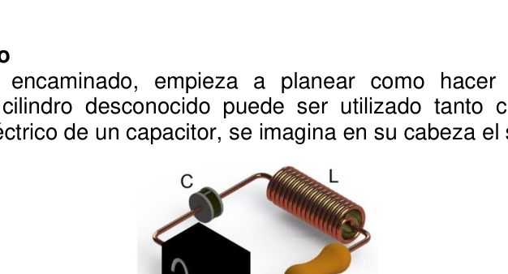
Topic: Circuits, Geometric Optics Metodi: Snell’s Law, Equivalent Circuit Reduction Competenze: Physical Reasoning, Mathematical Modeling Objects: Capacitor, Inductor, Resistor Fonte: Testo (PDF) — p.116
Finali lavori di circuiti elettrici
PT146. Philips School Città autonoma di Buenos Aires.
Finito lavoro di circuiti elettrici Un giovane studente di ingegneria elettronica, Alejo, si prepara a fare il suo lavoro. fine dei circuiti elettrici. E’ stato chiesto di costruire un circuito RLC che oscilla il suo frequenza di risonanza quando si collega ad una fonte di corrente alternata da 12V (pice) a 5 MHz. Gli hanno dato come materiali: cavo di rame isolato da radio r, un paio di finchi. una resistenza di sua scelta e un cilindro di la stessa radius e lunghezza delle lastre LTOT, di un materiale sconosciuto. Il cilindro sta arrivando con un elenco delle seguenti informazioni rilevanti:
- È un buon conduttore magnetico .
- È dieletrico.
- E ’ traslucide .
- Ha interessanti proprietà ottiche.
Parte A: Proprietà ottiche Intrigato da questo ultimo punto, Alejo decide di fare qualche test ottico con un laser che avevo. Poi E poi scopre che se fa incidere il suo raggio laser, Proprio al centro di una faccia circolare del cilindro con un angolo , il raggio sembra uscire proprio attraverso il centro del Un’altra faccia, con lo stesso angolo con cui è entrato, entrambi. misurati rispetto all’asse del cilindro. Anche se il materiale E’ traslucido, Alejo ha difficoltà a vedere bene la strada. che prende il laser dentro il cilindro. L’unica cosa che nota Il suo punto di vista è che il laser non colpisce il lato destro del muro cilindrico (rispetto all’asse). a) Calcolare l’indice di refraczione del cilindro, nx. Assumere un indice di refraczione dell’aria circostante il cilindro come nAire=1. Alejo sa che le proprietà ottiche di un materiale Sono qui .
- forte. collegati a Le proprietà la stessa elettromagnetica. Ricorda in particolare che la velocità della luce all’interno del materiale sia Relata con la permeabilità e la permisibilità assoluta di materiale come segue: Vluz= 1 √𝜇𝜀 b) Con la definizione dell’indice di refraczione, calcolare il prodotto in funzione di indice di refraczione e velocità della luce nel vuoto c.
102 - OAF 2019 Parte B: Il circuito Alejo, ora più diretto, inizia a pianificare come fare il circuito ordinato. Pensando che il cilindro sconosciuto può essere usato come nucleo di un Induttore come dieletrico di un capacitore, si immagina nella sua testa il seguente circuito:
c) Fornire il diagramma del circuito pensato e esprimere l’impedenza totale del sistema in funzione dell’induttanza L, della capacità C e della resistenza R. d) Sapendo che il corrente del circuito che lavora in risonanza non dovrebbe non superare a tempo indeterminato Imax, calcolare la resistenza minima da scegliere. e) Calcolare il prodotto LC necessario per far sì che la frequenza di risonanza del circuito corrispondente alla frequenza della fonte. f) Determina la lunghezza a cui Alejo dovrebbe tagliare il cilindro transversalmente La parte corta viene utilizzata per formare il condensatore e la parte lunga. viene utilizzato per l’induttore.
Datos
R1 = 2cm
r = 0,75 mm
LTOT = 10 cm
= 75°
c = 299792458 m/s
Imax = 20 mA
Notte
- Supponiamo che le spirali dell’induttore siano attaccate l’una all’altra, ma isolati elettricamente.
- In un circuito a corrente alternata in risonanza, l’impedenza del circuito alternativo è Puramente resistente.
- Non preoccuparti dei valori standard delle resistenze, considera che è la possibilità di scegliere resistori di qualsiasi valore.
- Considerare che tagliare il cilindro non genera rifiuti, cioè la somma delle Le lunghezze dei due nuovi cilindri sono uguali alla lunghezza del cilindro originale.
Topic: Circuits, Geometric Optics Metodi: Snell’s Law, Equivalent Circuit Reduction Competenze: Physical Reasoning, Mathematical Modeling Objects: Capacitor, Inductor, Resistor Fonte: Testo (PDF) — p.116
The following is the list of the types of electrical equipment used:
PT146. Philips School The Autonomous City of Buenos Aires.
Final work on electrical circuits A young electronics student, Alejo, prepares to do his job. end of electrical circuits. You ‘ve been asked to manufacture an RLC circuit that oscillates at your . Resonance frequency when connected to an alternating current source from 12V (peak) to 5 MHz. They’ve given it as materials: a copper wire insulated from radio r, a pair of fine wire. R1 radius circular conductive plates, a resistor of your choice and a cylinder of the The same radius as the plates and LTOT length, of unknown material. The cylinder is coming . in addition, a list of the following relevant information:
- It ‘s a good magnetic conductor .
- It ‘s dielectric .
- It ‘s translucent .
- It has interesting optical properties.
Part A: Optical properties Intrigued by this last point, Alejo decides to do some optical tests with a laser I had. Then . He soon discovers that if he makes his laser beam shine, Right in the center of a circular face of the cylinder with a angle , the lightning seems to come out right through the center of the Another face, with the same angle you entered, both measured with respect to the cylinder axis. Although the material It’s translucent, Alejo has trouble seeing the road well. It takes the laser inside the cylinder. The only thing he notices From his point of view, the laser doesn’t collide with the the right side of the cylindrical wall (with respect to the axle). (a) Calculate the refractive index of the cylinder, nx. Assume refractive index of the surrounding air the cylinder as nAire=1. Alejo knows that the optical properties of a material They ‘re here . strongly
- The linkage a The Property The electromagnetic field of the same. Remember in particular . The speed of light inside the material is It relates to absolute permeability and permissibility of the material as follows: I’m not sure. 1 √𝜇𝜀 (b) Knowing the definition of the refractive index, calculate the product as The refractive index and the speed of light in vacuum c.
The Commission shall adopt delegated acts in accordance with Article 21 of this Regulation. Part B: The circuit Alejo, now more directed, starts planning how to make the circuit ordered. Thinking the unknown cylinder can be used as much as the core of a inductor as a dielectric of a capacitor, imagine in its head the following circuit:
(c) To give the diagram of the intended circuit and to express the total impedance of the system The test shall be carried out in accordance with the following conditions: (d) Knowing that the current of the circuit working in resonance should not to exceed Imax at any time, calculate the minimum resistance you must choose. (e) Calculate the LC product needed to achieve the resonance frequency of the circuit matches the frequency of the source. (f) Determine the length at which Alejo should cut the cylinder crosswise So the short part is used to form the capacitor and the long part. is used for the inductor.
Data from the report
R1 = 2cm
r = 0,75 mm
The LTOT is 10 cm
= 75°
c = 299792458 m/s
The value of the input data shall be the sum of the values of the input data.
Notes
- Suppose the inductor spirals are glued together, but electrically insulated.
- In an alternating current resonant circuit, the impedance of the same is It’s purely resistant.
- Don’t worry about the standard resistance values, consider it is resistors of any value may be chosen.
- Consider that cutting the cylinder does not generate waste, i.e. the sum of the The lengths of the two new cylinders are equal to the length of the original cylinder.
Topic: Circuits, Geometric Optics Metodi: Snell’s Law, Equivalent Circuit Reduction Competenze: Physical Reasoning, Mathematical Modeling Objects: Capacitor, Inductor, Resistor Fonte: Testo (PDF) — p.116
Inconvenientes con el mate
PT147. Escuela Philips Ciudad Autónoma de Buenos Aires.
Inconvenientes con el mate
Una fresca tarde en la que la temperatura ambiente es de 25℃ usted quiere tomarse
unos mates calentitos pero su pava eléctrica no funciona y su departamento es nuevo y
no dispone de red de gas. Pero usted es especialista en física general así que nada lo
detendrá y por eso, en cuestión de segundos se pone en acción para solucionar la
situación.
Tiene en casa una fuente de tensión continua y decide utilizarla para alimentar una
resistencia de modo que, sumergida ésta en un jarro con agua, se pueda alcanzar la
temperatura de 80℃ que usted desea para sus mates.
Arma entonces el circuito adecuado y sumerge la resistencia en el agua pero pronto se
da cuenta que la temperatura del agua no sube. Toma entonces su multímetro, mide la
resistencia y concluye que está abierta.
Pero esto tampoco lo detendrá porque usted tiene un rollo de alambre resistivo de 0,4𝑚𝑚
de diámetro y resistividad 𝜌𝐴= 70 × 10−6 Ω ∙𝑚. Lamentablemente no está de suerte y
cuando va a armar la resistencia, se encuentra con que en el rollo quedan solamente
OAF 2019- 103 10𝑐𝑚 de alambre. Pero afortunadamente, usted encuentra un segundo rollo nuevo con alambre de 0,2 𝑚𝑚 y resistividad 𝜌𝐵= 15 × 10−7 Ω ∙𝑚. Si la resistencia de inmersión debe tener 100 Ω,
a) Explique de qué forma puede armar la resistencia utilizando todo el alambre disponible de 0,4𝑚𝑚 y aprovechando algo del de 0,2 𝑚𝑚. Calcule, además, la longitud en centímetros que necesita de este ultimo de acuerdo a su solución propuesta.
Cuando por fin termina de armar la resistencia espiralando el alambre, usted conecta un cable en cada extremo de la misma y la conecta a la fuente. Esta fuente acusa una ddp máxima de 200𝑉 en bornes de salida cuando se mide a circuito abierto y es tal que su circuito interno presenta una resistencia 𝑟= 3Ω.
b) Muestre el esquema eléctrico del circuito completo que utilizará para calentar el agua y determine la máxima potencia que podrá disiparse en la resistencia de inmersión.
Con todo listo, usted coloca en un jarro 750𝑐𝑚3de agua que extrae de un bidón que tiene sobre la mesada de su cocina, sumerge la resistencia y cuando se propone ajustar el voltaje de la fuente para comenzar a calentar el agua, observa que la fuente tiene incorporado un fusible de protección de 1,5𝐴 en serie con la salida. Teniendo en cuenta esta observación y asumiendo que el jarro es un recipiente térmico ideal,
c) ¿Cuánto tiempo (𝜏1) debe esperar hasta que el agua se encuentre a la temperatura deseada?
Supongamos, solo por diversión, que la resistencia de inmersión que usted fabricó tiene las características de resistencia- temperatura que se muestran en la figura. Teniendo en cuenta esta nueva información y suponiendo que una vez que comienza el calentamiento usted ya no toca el selector de voltaje de salida de la fuente,
d) estime el tiempo (𝜏2) que debe esperar hasta que el agua alcance la temperatura deseada.
Supongamos ahora que la resistencia no depende de la temperatura pero que el proceso de calentamiento del agua no es térmicamente ideal. Por este motivo, la interacción entre el agua y el jarro, entre el agua y el aire, y entre el jarro y el aire, son tales que las “pérdidas” de calor netas por unidad de tiempo debido a efectos de conducción térmica responden a la ley siguiente: ∆𝑞 ∆𝜏= 𝑘𝐴∆𝑇 ∆𝑥
Donde 𝑘= 0,12 𝑊/℃∙𝑚 es una constante del material del jarro, 𝐴 es el área lateral del
jarro y ∆𝑥 el espesor de la pared del jarro y ∆𝑇 la diferencia de temperatura entre la
superficie interior y exterior del jarro.
Sabiendo que su jarro es básicamente un cilindro de 15𝑐𝑚 de diámetro externo,10𝑐𝑚 de
altura y 2𝑚𝑚 de espesor,
e) estime el tiempo (𝜏3) que debe esperar hasta que el agua alcance la temperatura deseada.
104 - OAF 2019
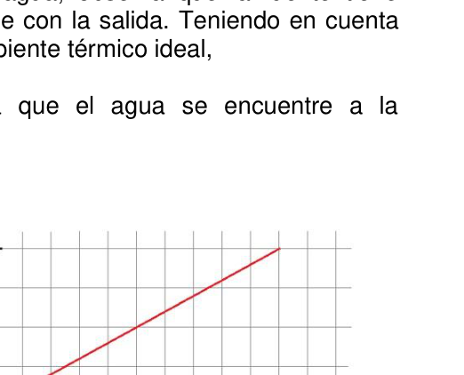
Topic: Circuits, Thermodynamics Metodi: Equivalent Circuit Reduction, First Law of Thermodynamics Competenze: Physical Reasoning, Mathematical Modeling Objects: Resistor, Battery, Wire Fonte: Testo (PDF) — p.116
Inconvenienti con il mate
PT147. Philips School Città autonoma di Buenos Aires.
- Non sono a mio agio con il mate. Un’alba fresca in cui la temperatura ambiente è di 25°C vuoi prendere?
- Ma la sua stagno elettrica non funziona e il suo appartamento è nuovo e… non ha una rete di gas. Ma tu sei uno specialista in fisica generale, quindi non lo sai. La sua operazione si fermerà e, quindi, in pochi secondi, si metterà in azione per risolvere il problema. La situazione. Ha una fonte di tensione continua a casa e decide di usarla per alimentare una resistenza in modo che, immersa in un vaso di acqua, si possa raggiungere la temperatura di 80°C che si desidera per i suoi matte. Armati il circuito giusto e immergi la resistenza nell’acqua, ma presto si si rende conto che la temperatura dell’acqua non aumenta. Prendi il tuo multimetro, misura la resistenza e conclude che è aperta. Ma questo non lo fermerà nemmeno perché hai un rollo di filo resistente di 0,4 mm di diametro e resistenza ρA= 70 × 10−6 Ω ∙m. Sfortunatamente non ha fortuna e… Quando si sta mettendo a fuoco la resistenza, si scopre che nel rollo sono solo i resti.
OAF 2019- 103 10 centimetri di filo. Ma fortunatamente, trovate un secondo nuovo rollo con di 0,2 mm e resistenza ρB= 15 × 10−7 Ω ∙m. Se la resistenza di immersione deve avere 100 Ω,
a) Spiegare come si può mettere in piedi la resistenza utilizzando l’intero filo La produzione di prodotti di cui all’articolo 1 del regolamento (CE) n. Calcola, inoltre, la lunghezza in centimetri che ha bisogno di quest’ultimo secondo la sua soluzione Proposta.
Quando finalmente finisce di mettere a punto la resistenza spirale il filo, si collega un il cavo a ogni estremità del cavo e lo collega alla fonte. Questa fonte accusa una ddp massimo di 200 V in punti di uscita quando misurato a circuito aperto e tale che il suo circuito interno presenta resistenza r= 3Ω.
b) Mostra il schema elettrico del circuito completo che utilizzerà per riscaldare il La resistenza di un’aria di calore di circa 20 °C è di circa 20 °C. Immersione.
Con tutto pronto, metti in un vassoio di acqua di 750 cm3 che estra da un bidone che hai sulla pianta della sua cucina, immerge la resistenza e quando si propone di regolare il volta di fonte per iniziare a riscaldare l’acqua, osserva che la fonte ha incorporato un fusible di protezione 1,5A in serie con l’uscita. Considerando che Questo osservazione e supponendo che il vasi è un recipiente termico ideale,
c) Quanto tempo (τ1) deve aspettare l’acqua fino a raggiungere la temperatura di la temperatura desiderata?
Supponiamo, solo per divertimento, che la Resistenza all’immersione che hai fabbricato. ha le caratteristiche di resistenza… la temperatura mostrata nella figura. Considerando queste nuove informazioni e supponendo che una volta che inizia il Il riscaldamento non tocca più il selettore di tensione di uscita della sorgente,
d) stima il tempo (τ2) che deve Aspettare che l’acqua arrivi la temperatura desiderata.
Supponiamo che la resistenza non dipenda dalla temperatura, ma dal processo. Il riscaldamento dell’acqua non è termicamente ideale. Per questo, l’interazione tra l’acqua e il vaso, tra l’acqua e l’aria, e tra il vaso e l’aria, sono tali che le perdi di calore netti per unità di tempo dovute agli effetti di conduzione termico rispondono alla legge seguente: ∆𝑞 ∆𝜏= 𝑘𝐴∆𝑇 ∆𝑥
Dove k= 0,12 W/°C∙m è una costante del materiale del vasiolo, A è l’area laterale del Pot e ∆x il spessore del muro del pot e ∆T la differenza di temperatura tra il superficie interna ed esterna del vassoio. Sapendo che il suo vassoio è basicamente un cilindro di 15 cm di diametro esterno, 10 cm di diametro esterno. altezza e 2 mm di spessore,
e) stima il tempo (τ3) da aspettare fino a quando l’acqua raggiunge la temperatura Desiderata.
104 - OAF 2019
Topic: Circuits, Thermodynamics Metodi: Equivalent Circuit Reduction, First Law of Thermodynamics Competenze: Physical Reasoning, Mathematical Modeling Objects: Resistor, Battery, Wire Fonte: Testo (PDF) — p.116
**Disadvantages with the mat **
PT147. Philips School The Autonomous City of Buenos Aires.
Discomfort with the mate . A cool afternoon when the room temperature is 25°C you want to take a drink A few hot mates but your electrical outlet is not working and your apartment is new and… It has no gas grid. But you ‘re a general physics specialist so nothing . It will stop and therefore, in a matter of seconds it will take action to solve the problem. The situation. He has a continuous voltage source at home and decides to use it to power a power plant. The resistance is such that, when immersed in a water jar, the resistance can be reached. 80°C temperature you want for your mates. Then arm the proper circuit and submerge the resistance in the water but soon it is You realize the water temperature doesn’t rise. Then take your multimeter, measure the resistance and concludes that it’s open. But this won’t stop you either because you have a 0.4mm resistant wire roll. a diameter and resistivity ρA= 70 × 10−6 Ω ∙m. Unfortunately , he ‘s not lucky and When he’s going to put up the resistance, he finds that in the roll only the rest are left.
The following is the list of the countries of the European Union: 10cm of wire. But luckily, you find a new second roll with a wire of 0,2 mm and resistivity ρB= 15 × 10−7 Ω ∙m. If the dive resistance It must have 100 Ω,
(a) Explain how the resistance can be assembled using the entire wire. The Commission has already taken a number of measures to ensure that the Community’s financial resources are used to finance the implementation of the common agricultural policy. Calculate, furthermore, the length in centimeters you need from the latter according to your solution Proposal for a Council Directive.
When you finally finish putting up the resistance by spinning the wire, you connect a cable at each end of it and connects it to the source. This source is accusing a ddp maximum of 200V at output terminals when measured in open-circuit and is such that its The internal circuit has a resistance of r= 3Ω.
(b) Show the electrical scheme of the complete circuit to be used to heat the The maximum power that can be dissipated in the resistance of the I’m going to dive.
With everything ready, you put in a 750cm3 jar of water that you draw from a can you have. On the tabletop of your kitchen, submerge the resistance and when you propose to adjust the the source voltage to start heating the water, notice that the source has incorporated a 1,5A safety fuse in series with the output. Considering that This observation and assuming that the jar is an ideal thermal container,
(c) How long (τ1) should you wait for water to reach the the desired temperature?
Let’s just say, for fun, that the The dive resistance you made . It has the strength characteristics of temperature as shown in the figure. Given this new information And assuming that once you start the You ‘re not playing the selector anymore . the output voltage of the source,
(d) estimate the time (τ2) to be Wait until the water reaches the desired temperature.
Now let ‘s say that the resistance is not dependent on the temperature but the process . Water heating is not thermal ideal. For this reason, the interaction between the water and the jar, between the water and the air, and between the jar and the air, are such that the net heat losses per unit of time due to thermal conduction effects They answer the following law: ∆𝑞 ∆𝜏= 𝑘𝐴∆𝑇 ∆𝑥
Where k=0.12 W/°C∙m is a constant of the pot material, A is the lateral area of the The difference in temperature between the two is the difference in temperature between the two. the inside and outside surface of the jar. Knowing that your jar is basically a 15cm cylinder with an external diameter, 10cm of height and 2 mm thickness,
(e) estimate the time (τ3) to wait until the water reaches temperature I want it.
The following is the list of the countries of the European Union:
Topic: Circuits, Thermodynamics Metodi: Equivalent Circuit Reduction, First Law of Thermodynamics Competenze: Physical Reasoning, Mathematical Modeling Objects: Resistor, Battery, Wire Fonte: Testo (PDF) — p.116
PT148. Colegio Santísimo Rosario Monteros, Tucumán.
Durante las vacaciones de invierno, en Bariloche, Lucas, un aplicado alumno de Física, se halla al borde de un pequeño estanque, cuando la Tº ambiente es de – 10ºC. A pesar de esta temperatura, en el estanque sólo hay una capa de hielo de 1 cm de espesor. Sabe que para poder patinar con seguridad, el espesor del hielo debe ser como mínimo de 20 cm de espesor. a) ¿Cúanto deberá esperar para poder deslizarse sobre el hielo con seguridad? ¿Podrá hacerlo antes de que termine el invierno?
Al otro día, Lucas cambia los patines por un trineo grande y se traslada a otro lago cercano, donde la capa de hielo es segura. Al llegar se desliza sin rozamiento con una velocidad de 4 m/s, de pie sobre la parte trasera del trineo. Comienza a moverse sobre él y hacia su parte delantera a una velocidad de 2 m/s respecto del trineo. b) ¿qué distancia habrá recorrido el trineo sobre el hielo antes de que Ezequiel llegue a la parte delantera del trineo?
Una vez que está en la parte delantera del trineo, se detiene para sentarse y continuar deslizándose, descendiendo 5 m por una suave pendiente, con roce, a lo largo de 30 m c) ¿Con qué velocidad llega al pie del plano inclinado? d) Qué cantidad de hielo se transformó en agua?
Cuando llega el verano, Lucas vuelve al lago a practicar buceo. En una de sus inmersiones, se hallaba a una profundidad de 40 m por debajo de la superficie y la tº era de 5 ºC cuando soltó una burbuja de aire con un volumen de 15 cm3. Ezequiel, viendo cómo se alejaba su burbuja se preguntó: e) ¿qué tamaño tendría la burbuja justo antes de llegar a la superficie donde la tº es de 25ºC?
Topic: Thermodynamics, Fluid Mechanics Metodi: First Law of Thermodynamics, Conservation of Energy, Ideal Gas Law Competenze: Physical Reasoning, Mathematical Modeling Objects: Bubble Fonte: Testo (PDF) — p.116
PT148. “Santa Rosario” Monteros, Tucumán.
Durante le vacanze invernali, a Bariloche, Lucas, un approfondito studente di fisica, Si trova al bordo di un piccolo stagno, quando l’ambiente è di 10°C. Nonostante A questa temperatura, nel stagno c’è solo un strato di ghiaccio di 1 centimetro di spessore. Sai che per poter pattinare in sicurezza, lo spessore del ghiaccio deve essere minimo. di 20 cm di spessore. a) Quanto tempo deve aspettare per poter scivolare sul ghiaccio in sicurezza? Riuscirà a farlo prima che il inverno finisca?
L’altro giorno, Lucas cambia le patine per un grande bagliotto e si trasferisce in un altro lago. vicino, dove la calotta di ghiaccio è sicura. Arrivata, si scivola senza scorrere con una velocità di 4 m/s, in piedi sulla parte posteriore del treno. Comincia a muoversi su di lui e verso la sua parte anteriore a una velocità di 2 m/s rispetto al trineo. b) che distanza avrà percorso il ghiaccio sulla ghiaccio prima di Ezechiele Arrivo all’avanguardia del bagliore?
Una volta che si è all’avanguardia dello scivolo, si ferma per sedersi e continuare. scivola, scende 5 m su una sottile pendenza, a rottura, lungo 30 m c) A che velocità si raggiunge il piede del piano inclinato? d) Quanta ghiaccio è stato trasformato in acqua?
Quando arriva l’estate, Lucas torna al lago per praticare il buceo. In una delle sue. La superficie della terra era di circa 40 metri e la superficie era di circa 40 metri. di 5 oC quando ha rilasciato una bolla d’aria di 15 cm3. Ezechiele, vedendo Come la bolla si allontanava si chiese: e) che dimensione avrebbe la bolla appena prima di raggiungere la superficie in cui si trova la bolla de 25ºC?
Topic: Thermodynamics, Fluid Mechanics Metodi: First Law of Thermodynamics, Conservation of Energy, Ideal Gas Law Competenze: Physical Reasoning, Mathematical Modeling Objects: Bubble Fonte: Testo (PDF) — p.116
PT148. Holy Rosary College . Monteros, Tucumán. What is it?
During the winter holidays, in Bariloche, Lucas, an accomplished student of physics, It is located on the edge of a small pond, when the temperature is 10°C. Despite At this temperature, there’s only one inch thick layer of ice in the pond. You know, to be able to skate safely, the thickness of the ice must be minimal. 20 cm thick. (a) How long will you have to wait to get on the ice safely? Will you be able to do it before the winter is over?
The other day, Lucas switches skates for a big sled and moves to another lake. Close, where the ice sheet is safe. When he gets there , he slips without a scratch with a . speed of 4 m/s, standing on the rear of the sleigh. It starts moving over him . and towards its front at a speed of 2 m/s with respect to the sleigh. (b) How far would the snowboard have traveled before Ezekiel? Get to the front of the sleigh?
Once you’re at the front of the slide, you stop to sit down and continue. sliding, descending 5 m down a smooth slope, with brush, along 30 m (c) How fast does it reach the base of the inclined plane? (d) How much ice was turned into water?
When summer comes, Lucas goes back to the lake to practice diving. In one of his . The water was 40 m below the surface and the water was very deep. 5 oC when a 15 cm3 air bubble was released. Ezekiel, seeing As his bubble moved away he wondered: (e) what size would the bubble be just before it reaches the surface where the to is de 25ºC?
Topic: Thermodynamics, Fluid Mechanics Metodi: First Law of Thermodynamics, Conservation of Energy, Ideal Gas Law Competenze: Physical Reasoning, Mathematical Modeling Objects: Bubble Fonte: Testo (PDF) — p.116
PT149. Colegio Santísimo Rosario Monteros, Tucumán.
Una cabaña de 6m x 5m x 2m, quema 10 toneladas de carbón en una instalación de calefacción, teniendo pérdidas totales de un 15% en la combustión. En lugar del carbón, existen otras dos opciones:
- Una estufa eléctrica con dos velas de cuarzo conectadas en paralelo y de 50 Ω cada una. La misma se conecta a una tensión continua V=200 voltios. Sabiendo que tiene un rendimiento del 94%.
- Un depósito grande de agua que se calienta mediante la radiación solar, y la energía almacenada se utiliza como calefacción durante el invierno. Se supone que el agua se calienta a 50ºC en el verano y se enfría hasta 25ºC en el invierno.
Se pide calcular a) ¿Cuántas calorías se necesita para calentar la casa, utilizando el carbón? b) La potencia entregada por la estufa en forma de calor al medio ambiente. c) El calor que debe absorber el aire para elevar su temperatura en 10ºC. d) Teniendo en cuenta que el calor perdido por unidad de tiempo por las ventanas es Q = 300 cal/seg, calcular el tiempo necesario que debe estar encendida la estufa para calentar el ambiente en 10ºC. e) ¿Qué potencia entregaría la estufa si se quitara una de las velas de cuarzo suponiendo que el rendimiento no cambia? f) Las dimensiones del tanque cúbico, para almacenar una cantidad de energía necesaria. g) La cantidad de carbón necesario para lograr elevar la temperatura en 10ºC.
OAF 2019- 105
Topic: Thermodynamics, Circuits Metodi: First Law of Thermodynamics, Equivalent Circuit Reduction Competenze: Physical Reasoning, Mathematical Modeling Objects: Resistor, Container Fonte: Testo (PDF) — p.116
PT149. “Santa Rosario” Monteros, Tucumán.
Una cabina di 6m x 5m x 2m, brucia 10 tonnellate di carbone in un impianto di Il calore è pari al 15% per il totale dei perditi di combustione. Invece del carbone, Ci sono altre due opzioni:
- Una stufa elettrica con due candele di quarzo collegate in parallelo e di 50 Ω
- Ciascuno di loro. La stessa si collega a una tensione continua V=200 volt. Sapendo che ha un rendimento del 94%.
- Un grande deposito d’acqua che viene riscaldato dalla radiazione solare, e la l’energia immagazzinata è utilizzata per il riscaldamento durante l’inverno. - Dovrebbe essere . che l’acqua si riscalderà a 50°C in estate e si raffredderà a 25°C in inverno.
Si chiede di calcolare a) Quante calorie sono necessarie per riscaldare la casa utilizzando carbone? b) Potenza fornita dall’asciutto in forma di calore all’ambiente. c) Il calore che deve assorbire l’aria per elevarne la temperatura a 10°C. d) Considerando che il calore perso per unità di tempo dalle finestre Q = 300 cal/sec, calcolare il tempo necessario per essere acceso
- Il forno per riscaldare l’ambiente a 10°C. e) Che potenza avrebbe fornito il stufa se si toglie una delle candele di quarzo Supponendo che il rendimento non cambi? f) Le dimensioni del serbatoio cubico, per conservare una quantità di energia necessaria. g) La quantità di carbone necessaria per ottenere un aumento della temperatura di 10°C.
OAF 2019- 105
Topic: Thermodynamics, Circuits Metodi: First Law of Thermodynamics, Equivalent Circuit Reduction Competenze: Physical Reasoning, Mathematical Modeling Objects: Resistor, Container Fonte: Testo (PDF) — p.116
PT149. Holy Rosary College . Monteros, Tucumán. What is it?
A 6m x 5m x 2m cabin burns 10 tons of coal in a facility in The Commission has already taken the necessary steps to ensure that the Commission is able to take the necessary measures to ensure that the measures are implemented in a manner that is compatible with the internal market. Instead of coal, There are two other options:
- An electric stove with two quartz candles connected in parallel and 50 Ω Each one. It is connected to a continuous voltage V=200 volts. Knowing It’s a 94 percent yield.
- A large water tank that is heated by solar radiation, and the stored energy is used as heating during the winter. It ‘s supposed to be The water warms to 50 degrees Celsius in the summer and cools to 25 degrees Celsius in the winter.
Calculation is required (a) How many calories is needed to heat the house using coal? (b) The power delivered by the stove in the form of heat to the environment. (c) The heat to be absorbed by the air to raise its temperature by 10°C. (d) Considering that heat lost per unit of time by windows is Q = 300 cal/sec, calculate the time required for the to be on The heat is heated to 10°C. (e) What power would the stove deliver if one of the quartz candles were removed? Assuming the performance doesn’t change? (f) The dimensions of the cubic tank, to store an amount of energy It is necessary. (g) The amount of coal needed to raise the temperature by 10°C.
The following information is provided:
Topic: Thermodynamics, Circuits Metodi: First Law of Thermodynamics, Equivalent Circuit Reduction Competenze: Physical Reasoning, Mathematical Modeling Objects: Resistor, Container Fonte: Testo (PDF) — p.116
PT150. Colegio Santísimo Rosario Monteros, Tucumán.
Una caja sin tapa, de base rectangular, tiene una longitud de 20 cm, un ancho de 15cm, una altura de 10cm y su espesor es de 0,1 cm. Dentro de la misma se colocan 750 cm3 de agua , δagua= 1 g/cm3 . El conjunto se lo hace flotar en aceite, cuya densidad es de 0,8 g/cm3. En estas condiciones, la caja se sumerge 5 cm dentro del aceite, despreciar el peso del aire dentro de la caja.
Calcular a) Peso del agua b) Espesor y profundidad del agua. c) Volumen del aceite desplazado. d) Empuje que recibe la caja. e) Densidad del material de construcción de la caja. f) Cuánto se sumerge la caja sin agua? g) Para igual medida externa de la caja, qué volumen se sumerge si esta fuera maciza?
Topic: Fluid Mechanics Metodi: Hydrostatic Equilibrium Competenze: Physical Reasoning, Mathematical Modeling Objects: Container Fonte: Testo (PDF) — p.116
PT150. “Santa Rosario” Monteros, Tucumán.
Una scatola senza copertura, a base rettangolare, ha una lunghezza di 20 cm, una larghezza di 15 cm, una altezza di 10 cm e uno spessore di 0,1 cm. All’ interno di questa si collocano 750 cm3 di acqua , δacqua = 1 g/cm3 . L’insieme viene fatto fluttuare in olio, la cui densità è di 0,8 g/cm3. In queste condizioni, la scatola si immerge 5 cm nell’olio, disprezzando il peso del aria dentro la scatola.
Calcolare a) Peso dell’acqua b) Spessore e profondità dell’acqua. c) Volume dell’olio spostato. d) Spingere a ricevere la scatola. e) Densità del materiale da costruzione della scatola. f) Quanto si immerge la scatola senza acqua? g) Per la stessa misura esterna della scatola, quale volume si immerge se essa fosse
- Mazza?
Topic: Fluid Mechanics Metodi: Hydrostatic Equilibrium Competenze: Physical Reasoning, Mathematical Modeling Objects: Container Fonte: Testo (PDF) — p.116
PT150. Holy Rosary College . Monteros, Tucumán. What is it?
A rectangular box without cap, has a length of 20 cm, a width of 15 cm, a height of 10 cm and its thickness of 0,1 cm. Inside it are 750 cm3 of water , δwater = 1 g/cm3 . The set is floated in oil, with a density of 0.8 g/cm3. Under these conditions, the box is submerged 5 cm into the oil, neglecting the weight of the oil. air inside the box.
Calculate (a) Weight of water (b) thickness and depth of water. (c) Volume of oil displaced. (d) Push the receiver. (e) Density of the construction material of the box. (f) How much water is submerged in the box? (g) For the same external measurement of the box, what volume is submerged if it were What’s that?
Topic: Fluid Mechanics Metodi: Hydrostatic Equilibrium Competenze: Physical Reasoning, Mathematical Modeling Objects: Container Fonte: Testo (PDF) — p.116
PT151. Colegio Salesiano Deán Fúnes Comodoro Rivadavia, Chubut.
Como se muestra en la figura, se lanza una pelota
desde lo alto de un edificio hacia otro más alto,
localizado a una distancia de 50 metros. La pelota
impacto 3,27 segundos después del lanzamiento,
con inclinación de 40° sobre la horizontal.
a) ¿Con que velocidad se arrojó la pelota?
b) ¿A qué distancia, por encima o por debajo
de su nivel inicial, golpeara la pelota sobre
la pared opuesta?
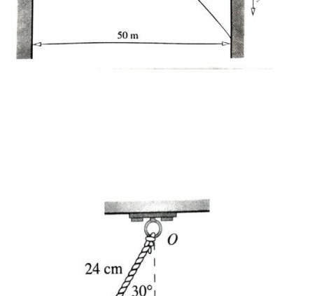
Topic: Newtonian Mechanics Metodi: Kinematic Equations, Vector Decomposition Competenze: Physical Reasoning, Mathematical Modeling Objects: Ball, Projectile Fonte: Testo (PDF) — p.116
PT151. Colegio Salesiano Deán Fúnes Comodoro Rivadavia, Chubut.
Come si vede nella figura, lancia una palla da un edificio alti a quelli più alti. Situato a 50 metri di distanza. Il pallone Impatto 3,27 secondi dopo il lancio, con inclinamento 40° sul orizzonte. a) A che velocità è stata lanciata la palla? b) A che distanza, sopra o sotto dal suo livello iniziale, ha colpito il pallone su Il muro opposto?
Topic: Newtonian Mechanics Metodi: Kinematic Equations, Vector Decomposition Competenze: Physical Reasoning, Mathematical Modeling Objects: Ball, Projectile Fonte: Testo (PDF) — p.116
PT151. The Salesian College of Dean Funes Commodore Rivadavia, Chubut.
As shown in the figure, a ball is thrown. From the top of a building to the top of another. located at a distance of 50 meters. The ball . impact 3.27 seconds after launch, with a slope of 40° above the horizontal. (a) How fast did the ball roll? (b) What distance, above or below From his initial level, he’ll hit the ball over. The opposite wall?
Topic: Newtonian Mechanics Metodi: Kinematic Equations, Vector Decomposition Competenze: Physical Reasoning, Mathematical Modeling Objects: Ball, Projectile Fonte: Testo (PDF) — p.116
PT152. Colegio Salesiano Deán Fúnes Comodoro Rivadavia, Chubut.
Como se muestra en la figura, una pelota B está amarrada a un extremo de un cordel de 24 centímetros de longitud, y el extremo se encuentra sujeto a un punto fijo O. La pelota se mueve en un círculo horizontal como se muestra.
a) Realizar el diagrama de cuerpo libre de la pelota. b) Encontrar la rapidez de la pelota en su trayectoria circular si el cordel forma un ángulo de 30° con la vertical.
Topic: Newtonian Mechanics Metodi: Free-Body Diagram, Vector Decomposition, Simple Harmonic Motion Analysis Competenze: Physical Reasoning, Mathematical Modeling Objects: Ball, String Fonte: Testo (PDF) — p.116
PT152. Colegio Salesiano Deán Fúnes Comodoro Rivadavia, Chubut.
Come si vede nella figura, una palla B è Legata ad un’estremità di una corda di 24 centimetri. di lunghezza, e l’estremità è soggetta a un punto O fisso. La palla si muove in un cerchio orizzontale come si mostra.
a) Realizzare il diagramma di corpo libero della
- La palla. b) Trovare la velocità della palla nel suo percorso circolare se la corda forma un angolo di 30° con la verticale.
Topic: Newtonian Mechanics Metodi: Free-Body Diagram, Vector Decomposition, Simple Harmonic Motion Analysis Competenze: Physical Reasoning, Mathematical Modeling Objects: Ball, String Fonte: Testo (PDF) — p.116
PT152. The Salesian College of Dean Funes Commodore Rivadavia, Chubut.
As shown in the figure, a B ball is Attached to one end of a 24-centimeter rope. length, and the end is subject to a point. fixed O. The ball moves in a horizontal circle like It shows.
(a) To draw up the free body diagram of the The ball. (b) Find the speed of the ball in your Circular path if the string forms an angle of 30° with the vertical.
Topic: Newtonian Mechanics Metodi: Free-Body Diagram, Vector Decomposition, Simple Harmonic Motion Analysis Competenze: Physical Reasoning, Mathematical Modeling Objects: Ball, String Fonte: Testo (PDF) — p.116
PT153. Colegio Salesiano Deán Fúnes Comodoro Rivadavia, Chubut.
Para medir el calor específico del plomo se calientan 600 gramos de esferas este metal a 100 °C y se colocan en un calorímetro de aluminio (calor especifico=0,9 kJ/kg.k) de 200
106 - OAF 2019 gramos de masa que contiene 500 gramos de agua inicialmente a 17,3 °C. Si en la medición se obtiene un calor especifico de 0,128 kJ/kgK para el plomo: a) ¿Cuál habrá sido la temperatura de equilibrio? b) Si el radio de las esferas, eran inicialmente de 2 cm, determinar el nuevo volumen de las mismas después del cambio de temperatura (coeficiente de dilatación lineal α=29x10-6 °C-1).
Topic: Thermodynamics Metodi: First Law of Thermodynamics Competenze: Physical Reasoning, Mathematical Modeling Objects: Calorimeter, Sphere Fonte: Testo (PDF) — p.116
PT153. Colegio Salesiano Deán Fúnes Comodoro Rivadavia, Chubut.
Per misurare la calore specifica del piombo si riscaldano 600 grammi di sfere questo metallo a 100 °C e sono messe su un calorilitro di alluminio (calore specifico=0,9 kJ/kg.k) di 200
106 - OAF 2019 grammia di massa contenente 500 grammia di acqua inizialmente 17,3 °C. Si en la misurazione si ottiene una calore specifica di 0,128 kJ/kgK per il piombo: a) Qual è stata la temperatura di equilibrio? b) Se il raggio delle sfere era inizialmente di 2 cm, determinare il nuovo volume di tali prodotti dopo il cambiamento di temperatura (coefficiente di dilatazione lineare α=29x10-6 °C-1).
Topic: Thermodynamics Metodi: First Law of Thermodynamics Competenze: Physical Reasoning, Mathematical Modeling Objects: Calorimeter, Sphere Fonte: Testo (PDF) — p.116
PT153. The Salesian College of Dean Funes Commodore Rivadavia, Chubut.
To measure the specific heat of lead, 600 grams of spheres are heated. 100 °C and are placed in an aluminium calorimeter (specific heat = 0,9 kJ/kg.k) of 200
The Commission shall adopt delegated acts in accordance with Article 21 of this Regulation. grams of mass containing 500 grams of water initially at 17,3 °C. Si en la The measurement results in a specific heat of 0,128 kJ/kgK for lead: (a) What would be the equilibrium temperature? (b) If the radius of the spheres were initially 2 cm, determine the new The volume of the same after the change in temperature (coefficient of The following is the list of the following:
Topic: Thermodynamics Metodi: First Law of Thermodynamics Competenze: Physical Reasoning, Mathematical Modeling Objects: Calorimeter, Sphere Fonte: Testo (PDF) — p.116
PT154. Colegio Nicolás Avellaneda Aguilares, Tucumán.
Las aulas de la galería principal del Colegio tienen las siguientes dimensiones: 7,00m de largo; 7,00m de ancho y 4,00m de altura, determinadas una fría mañana con temperatura ambiente T1 = 5 °C. Si con un calefactor se logra que la temperatura ascienda a T2 = 30 °C y sabiendo que el coeficiente de expansión lineal del concreto es = 12. 10-6 °C-1, entonces: a) ¿Cuál será el volumen del aula a la temperatura T2? Exprese también la variación de volumen en litros.
Considerando el volumen V1 de aire contenido en el aula a la temperatura T1; que la masa molar promedio del aire es 30g/mol y conociendo que la presión atmosférica normal en Aguilares es de 96.500Pa, la que se mantiene constante durante el cambio de temperatura a T2 y recordando que la constante universal de los gases es R= 8,31 J/mol. K, se solicita: b) Calcular la masa aire que sale del aula cuando la temperatura asciende a T2, considerando que no hay dilatación en las paredes y que el aula no es hermética. c) Calcular la masa aire que sale del aula cuando la temperatura asciende a T2, considerando la dilatación en las paredes y que el aula no es hermética. d) Calcular la densidad del aire a la temperatura T2.
En una primera aproximación al modelo real, supondremos que las aberturas tienen comportamiento semejante al concreto, con lo cual se considerará compuesta en su totalidad por muros de 0,30m de espesor, en sus paredes laterales y que el aislamiento del techo es suficiente para no permitir la conducción del calor, al igual que el piso. En estas condiciones se solicita: e) Calcular el flujo de calor hacia el exterior. Para el concreto K= 0,8watt • m-1 • °C-1.
Si ahora considera un modelo más real, donde en las paredes están insertas 3 ventanas de 1m de base y 1,5m de altura c/u, cuyo componente principal es Vidrio de 0,004m de espesor y una puerta de madera de 1m de base, 2m de altura y 0,04m de espesor; que para el vidrio la constante de conductividad térmica K es la misma que para el concreto y que para la madera es K= 0,08 watt • m-1 • °C-1, se le solicita: f) Calcular el flujo real de calor hacia el exterior.
Dada las condiciones del aula descriptas en el punto anterior, si se disponen 3 estufas de 1200watt c/u. g) Calcular la máxima temperatura que se puede lograr en el aula.
Topic: Thermodynamics, Kinetic Theory Metodi: Ideal Gas Law, First Law of Thermodynamics Competenze: Physical Reasoning, Mathematical Modeling Objects: Gas Fonte: Testo (PDF) — p.116
PT154. Scuola Nicolás Avellaneda Aguilar, Tucumán.
Le aule della galleria principale del Collegio hanno le seguenti dimensioni: lunghe; 7.00m di larghezza e 4.00m di altezza, determinate da un mattino freddo con temperatura ambiente T1 = 5 °C. Se con un riscaldatore si ottiene che la temperatura sali a T2 = 30 °C e sapendo che il coefficiente di espansione lineare del cemento è = 12. 10-6 °C-1, Allora: a) Qual è il volume della sala a temperatura T2? Esprimi anche la variazione del volume in litri.
Considerando il volume di aria contenuta in sala a temperatura T1 che la La massa molare media dell’aria è di 30 g/mol e sapendo che la pressione atmosferica normale In Aguilares è di 96.500Pa, che rimane costante durante il cambio di temperatura. La temperatura a T2 e ricordando che la costante universale dei gas è R= 8,31 J/mol. K, si richiede: b) Calcolare la massa di aria che esce dal salotto quando la temperatura sale a T2, Considerando che non c’è dilatazione nelle pareti e che la sala non è
- Si’, è serrata. c) Calcolare la massa di aria che esce dal salotto quando la temperatura sale a T2, Considerando la dilatazione delle pareti e che la sala non è aerea. d) Calcolare la densità dell’aria a temperatura T2.
In un primo approccio al modello reale, supponiamo che le aperture abbiano La Commissione ha adottato una decisione che prevede che il sistema di controllo dei dati sia integrato nel sistema di controllo. La struttura è stata costruita per la costruzione di una struttura di pareti di 0,30 m di spessore, sulle pareti laterali e che l’isolamento il tetto è sufficiente a non permettere la conduzione del calore, come il pavimento. En le seguenti condizioni sono richieste: e) Calcolare il flusso di calore verso l’esterno. Per il cemento K= 0,8watt • m-1 • °C-1.
Se ora consideriamo un modello più reale, dove le pareti sono inserite 3 finestre. di base di 1 m e altezza di 1,5 m, il cui componente principale è il vetro di 0,004 m di spessore e una porta di legno di 1 m di base, 2 m di altezza e 0,04 m di spessore; che per il vetro la costante di conduzione termica K è la stessa di quella del cemento e che per il legno è K= 0,08 watt • m-1 • °C-1, è richiesto: f) Calcolare il flusso reale di calore verso l’esterno.
In considerazione delle condizioni di classe descritte nel punto precedente, se sono disponibili 3 stufe di 1200 watt di energia. g) Calcolare la temperatura massima che si può ottenere in aula.
Topic: Thermodynamics, Kinetic Theory Metodi: Ideal Gas Law, First Law of Thermodynamics Competenze: Physical Reasoning, Mathematical Modeling Objects: Gas Fonte: Testo (PDF) — p.116
PT154. Nicholas Avellaneda College The Eagles, Tucumán.
The classrooms of the main gallery of the College have the following dimensions: Long; 7.00m wide and 4.00m high, determined a cold morning with temperature The following conditions shall apply: If a heater can bring the temperature up to T2 = 30 °C and knowing that the linear expansion coefficient of the concrete is = 12. 10-6 °C-1, Then: (a) What will be the volume of the classroom at T2 temperature? Please also express the volume variation in litres.
Considering the volume of air contained in the classroom at T1 temperature, the The average molar mass of air is 30 g/mol and knowing that normal atmospheric pressure In Aguilares it is 96,500Pa, which is constant during change of The temperature at T2 and remembering that the universal gas constant is R=8.31 J/mol. K, please: (b) Calculate the air mass exiting the classroom when the temperature rises to T2, Considering there is no dilatation on the walls and the classroom is not It’s airtight. (c) Calculate the air mass exiting the classroom when the temperature rises to T2, Considering the dilatation on the walls and the classroom is not airtight. (d) Calculate the air density at T2 temperature.
In a first approximation to the real model, we’ll assume that the openings have The Commission will also consider the following: The total by walls of 0.30m thick, on its side walls and that insulation The roof is enough to prevent heat from passing, just like the floor. En these conditions are requested: (e) Calculate the outward heat flow. For concrete K= 0,8watt • m-1 • °C-1.
If you now consider a more real model, where on the walls are inserted 3 windows. 1 m base and 1.5 m height, the main component of which is 0,004 m glass of thickness and a 1m base wooden door, 2m high and 0,04m thick; which For glass the constant of thermal conductivity K is the same as for concrete and For wood, K=0.08 watt • m-1 • °C-1, please: (f) Calculate the actual outward flow of heat.
Given the classroom conditions described in the previous point, if 3 stoves are available 1200 watts per hour. (g) Calculate the maximum temperature that can be achieved in the classroom.
Topic: Thermodynamics, Kinetic Theory Metodi: Ideal Gas Law, First Law of Thermodynamics Competenze: Physical Reasoning, Mathematical Modeling Objects: Gas Fonte: Testo (PDF) — p.116
PT155. Colegio Nicolás Avellaneda Aguilares, Tucumán.
En el laboratorio de Física de nuestro colegio, realizamos una experiencia con nuestros
alumnos que participan en Olimpiadas.
Dentro de un calorímetro cuyo equivalente en agua es 25 g, colocamos 60 g de agua a
OAF 2019- 107 25 ° C, y le agregamos 100 g de hielo a -10°C y dos bolillas de acero de 10mm de diámetro a 20 °C. Sumergimos en el líquido una resistencia eléctrica conformada por un rollo de alambre de cobre de 60 cm de longitud y de 0,04 mm de diámetro, que se encuentra a una temperatura de 20°C. La resistencia se alimenta con un porta pilas de 2 elementos conectados en serie de 1,5V y 𝜂= 0,05 Ω cada uno. El calorímetro se tapa y se considera un sistema adiabático. Accionamos el interruptor cerrando el circuito eléctrico de la resistencia hasta que el termómetro que registra la temperatura del interior del calorímetro indica 60° C.
a) ¿Cuál es la intensidad de la corriente que circula por la resistencia? b) ¿Qué tiempo debe funcionar la resistencia? c) ¿Cuánto de energía consume la resistencia, si el rendimiento del calorímetro es del 98%?
Datos
𝝆𝒄𝒖= 𝟏, 𝟕 . 𝟏𝟎𝟔 Ω .cm
𝑪𝒆𝑯𝟐𝒐= 𝟒𝟏𝟖𝟎
J
Kg.K
𝑪𝒆𝑪𝒖= 𝟎, 𝟎𝟎𝟗𝟐 Kcal Kg.°C 𝑪𝒚𝒉𝒊𝒆𝒍𝒐= 𝟎, 𝟓𝟑 𝑐𝑎𝑙 𝑔°𝐶
𝛅𝐡𝟐𝐎= 1 g/𝑐𝑚3
𝑪𝒇𝒉𝒊𝒆𝒍𝒐= 80 𝑐𝑎𝑙 𝑔
Topic: Thermodynamics, Circuits Metodi: First Law of Thermodynamics, Equivalent Circuit Reduction Competenze: Physical Reasoning, Mathematical Modeling Objects: Calorimeter, Resistor, Wire Fonte: Testo (PDF) — p.116
PT155. Scuola Nicolás Avellaneda Aguilar, Tucumán.
Nel laboratorio di fisica della nostra scuola, abbiamo fatto un esperimento con i nostri studenti che partecipano alle Olimpiadi. All’interno di un calometro il cui equivalente in acqua è 25 g, mettiamo 60 g di acqua a
OAF 2019- 107 25 ° C, e aggiungiamo 100 g di ghiaccio a -10°C e due palline di acciaio da 10mm di diametro a 20 °C. Abbiamo immerso nel liquido una resistenza elettrica costituita da un rollo di filo. di cui all’appendice n. temperatura di 20°C. La resistenza viene alimentata da un porta batteria a 2 elementi collegati in serie di 1,5V e η = 0,05 Ω ciascuno. Il calometro si copre e si considera un sistema adiabatico. Accendiamo l’interruttore. chiudendo il circuito elettrico della resistenza fino a che il termometro che registra la resistenza non la temperatura all’interno del caloriometro indica 60° C.
a) Qual è l’intensità del corrente che circola per resistenza? b) Per quanto tempo deve funzionare la resistenza? c) Quanto energia consuma la resistenza, se il calometro è Il 98%?
Datos
ρcu = 1,7 . 𝟏𝟎𝟔 Ω .cm
CeH2o = 4180
J
Kg.K
CeCu = 0, 0092 Calore Kg.°C Cichelo = 0, 53 cal 𝑔°𝐶
𝛅𝐡𝟐𝐎= 1 g/𝑐𝑚3
Cfhielo = 80 cal 𝑔
Topic: Thermodynamics, Circuits Metodi: First Law of Thermodynamics, Equivalent Circuit Reduction Competenze: Physical Reasoning, Mathematical Modeling Objects: Calorimeter, Resistor, Wire Fonte: Testo (PDF) — p.116
PT155. Nicholas Avellaneda College The Eagles, Tucumán.
In the physics lab at our school, we conducted an experiment with our Students who are taking part in the Olympics. Within a calorimeter whose water equivalent is 25 g, we put 60 g of water in a
The Commission shall adopt implementing acts in accordance with Article 21 of this Regulation. And we added 100 g of ice to -MSK1/C and two 10mm steel balls of - The following conditions shall apply: We submerge in the liquid an electrical resistance formed by a roll of wire. Of copper, 60 cm long and 0,04 mm in diameter, located at a distance of The temperature of the test chemical is 20°C. The resistance is fed by a battery port of 2 connected elements in series of 1.5V and η = 0.05 Ω each. The calorimeter is covered and considered an adiabatic system. We turn on the switch. The resistance electrical circuit is closed until the thermometer registers the resistance. The temperature inside the thermometer is 60° C.
(a) What is the intensity of the current circulating through the resistance? (b) How long should the resistor work? (c) How much energy is consumed by the resistance, if the performance of the calorimeter is The 98%?
Data from the report
ρcu is 1.7 . 𝟏𝟎𝟔 Ω .cm
The value of the product is not less than EUR 5 million.
J
Kg.K
The value of the underlying equation is the sum of the squares of the two sides. Other Kg.°C Cyclo = 0, 53 Cal 𝑔°𝐶
𝛅𝐡𝟐𝐎= 1 g/𝑐𝑚3
Cfhielo = 80 Cal 𝑔
Topic: Thermodynamics, Circuits Metodi: First Law of Thermodynamics, Equivalent Circuit Reduction Competenze: Physical Reasoning, Mathematical Modeling Objects: Calorimeter, Resistor, Wire Fonte: Testo (PDF) — p.116
Una escalera inolvidable
PT156. Colegio Nicolás Avellaneda Aguilares, Tucumán.
Una escalera inolvidable!! Casi nadie conoce esta anécdota, pero hoy la vamos a contar para toda la gente de OAF, habiendo sucedido esto en el año 2011. En la terminal de Ómnibus de Córdoba, los alumnos que clasifican para el certamen Nacional de Olimpíadas de Física, suelen divertirse en la escalera mecánica, pues esta transporta ocasionales pasajeros, desde la planta baja hasta el primer piso, situado 6m más arriba, a una velocidad constante de 30cm/s.
En uno de esas ocasiones en que regresábamos, a una de las profes se le engancho la
valija en la dichosa escalera. ¡Formamos realmente un verdadero domino humano,
cayendo uno tras otro!! Éramos en total 3 profesores y 8 alumnos, que fuimos cayendo
tirando bolsos y cuanto teníamos a mano hacia los lados con la esperanza de no
lastimarnos ni romper nada.
Lamento decir que algunas de alfajores fueron literalmente desintegradas. Con la
consiguiente risa de los ocasionales espectadores que lejos de ayudarnos, solo atinaron
a reírse. Se le solicita que responda los siguientes ítems:
a) ¿Qué trabajo realiza a escalera para trasladar a una persona de 75kg, desde planta baja hasta el primer piso? b) Si esa persona lleva una valija que pesa 200N, ¿qué trabajo realiza la persona, para llevarla hasta el primer piso? c) Al llegar al final de la escalera la levanta 50cm, para dar lugar a un niño que pasa a su lado: ¿realiza trabajo? En caso afirmativo responda numéricamente. d) ¿Cuánto tiempo tarda una persona en ser trasladada desde planta baja hasta el primer piso? e) ¿Qué potencia adicional desarrolla el motor cuando en la escalera hay 24 personas? (Suponga un promedio de 75kg por persona). f) Si no hubiera rozamiento ¿qué cantidad de energía entrega el motor para trasladar a las 24 personas?
108 - OAF 2019
Topic: Conservation of Energy, Newtonian Mechanics Metodi: Energy Conservation Method Competenze: Physical Reasoning, Mathematical Modeling Objects: — Fonte: Testo (PDF) — p.116
Un’escalata memorabile
PT156. Scuola Nicolás Avellaneda Aguilar, Tucumán.
Una scala indimenticabile!! Quasi nessuno conosce questa aneddota, ma oggi la racconteremo a tutti gli OAF, che è successo nel 2011. Al terminal di Omnibus di Cordoba, i Gli studenti che si classificano per il concorso nazionale di Olimpiadi di Fisica, di solito La scalinata è un’occasionalissima scalinata, che si trasporta da piano terra fino al primo piano, situato 6m sopra, a una velocità costante di 30cm/s.
Una volta, mentre tornavamo, una delle professrici si è accolta.
- Valigia sulla gradina. Siamo davvero un vero dominio umano. cadendo uno dopo l’altro!! Eramo stati in totale 3 insegnanti e 8 studenti, che sono caduti. E poi, mentre tiravamo le borse e tutto quello che avevamo in mano verso i lati, speravamo di non farlo. ferire o rompere nulla. Mi dispiace dire che alcuni dei alfajor sono letteralmente disintegrati. Con la La risata di un’occasionalissima spettatrice che, al di là di aiutarci, ci ha solo colpito.
- Ridi. Vi viene chiesto di rispondere ai seguenti punti:
a) Che lavoro fa la scala per trasportare una persona di 75 kg, da Piano basso fino al primo piano? b) Se quella persona porta un bagaglio di 200 N, che lavoro fa la persona, Per portarla al primo piano? c) Arrivo alla fine della scala, la solleva di 50 cm, per far passare un bambino.
- al suo fianco: “Fa il lavoro? Se sì, rispondi numericamente. d) Quanto tempo ci vuole per spostare una persona dal piano di terra al piano di lavoro? Primo piano? e) Che potenza aggiuntiva sviluppa il motore quando c’è 24
- Persone? (Supponiamo una media di 75 kg per persona). f) Se non si è fatto un’acciaio, quale energia viene fornita dal motore per trasferire le 24 persone?
108 - OAF 2019
Topic: Conservation of Energy, Newtonian Mechanics Metodi: Energy Conservation Method Competenze: Physical Reasoning, Mathematical Modeling Objects: — Fonte: Testo (PDF) — p.116
A staircase that is unforgettable
PT156. Nicholas Avellaneda College The Eagles, Tucumán.
A staircase that will never be forgotten!! Almost no one knows this anecdote, but today we’re going to tell it to all the people at OAF, This happened in 2011. At the Cordoba Omnibus terminal, the Students who qualify for the National Physics Olympiad usually The main purpose of the staircase is to entertain the passengers on the escalator, which carries occasional passengers from the ground floor to the first floor, located 6m above, at a constant speed of 30cm/s.
One of those times we were back, one of the professors got hooked on the I’ll take the suitcase up the happy ladder. We really form a real human domino, Falling one after the other!! We were three teachers and eight students in total, and we were falling. Throwing bags and everything we had in our hand towards the sides in the hope of not. To hurt or break anything. I’m sorry to say that some of the alpha-jors were literally disintegrated. With the The resulting laughs of occasional spectators who far from helping us, only touched us. I’m going to laugh. You are asked to answer the following questions:
(a) What work does he do on the stairs to move a person of 75 kg, from Downstairs to the first floor? (b) If that person carries a suitcase weighing 200N, what work does the person do, To take her to the first floor? c) When he reaches the end of the stairs he lifts it 50cm, to give way to a child passing by. Next to him: does he do work? If yes, answer numerically. (d) How long does it take for a person to be moved from the ground floor to the First floor? (e) What additional power develops the engine when there are 24 on the ladder people? (I suppose an average of 75kg per person). (f) If there is no friction, how much energy is delivered by the engine to Move the 24 people?
The following is the list of the countries of the European Union:
Topic: Conservation of Energy, Newtonian Mechanics Metodi: Energy Conservation Method Competenze: Physical Reasoning, Mathematical Modeling Objects: — Fonte: Testo (PDF) — p.116
PT157. Colegio San Juan el Precursor San Isidro, Buenos Aires.
El pez dorado da saltos fuera del agua de 4 m de altura y 5m de extensión.
Despreciando la resistencia del aire o del agua se pide responder las siguientes
cuestiones:
a) ¿Cuál es el tiempo total que permanece fuera del agua?
b) ¿Cuál es el ángulo del salto?
c) ¿Cuál es la velocidad inicial del movimiento?
d) Calcular la velocidad del pez cuando ingresa nuevamente al agua.
Topic: Newtonian Mechanics Metodi: Kinematic Equations, Vector Decomposition Competenze: Physical Reasoning, Mathematical Modeling Objects: Projectile Fonte: Testo (PDF) — p.116
PT157. La scuola San Giovanni il Precursore San Isidro, Buenos Aires.
Il pesce dorato salta fuori dall’acqua da 4 metri di altezza e 5 metri di estensione. Rispettando la resistenza dell’aria o dell’acqua si richiede di rispondere alle seguenti domande: Questioni: a) Qual è il tempo totale che rimane fuori dall’acqua? b) Qual è l’angolo del salto? c) Qual è la velocità iniziale del movimento? d) Calcolare la velocità del pesce quando torna in acqua.
Topic: Newtonian Mechanics Metodi: Kinematic Equations, Vector Decomposition Competenze: Physical Reasoning, Mathematical Modeling Objects: Projectile Fonte: Testo (PDF) — p.116
PT157. St. John the Precursor School San Isidro, Buenos Aires. He was a good boy.
The goldfish jumps out of the water at 4 m high and 5 m wide. The following questions are asked if the resistance to air or water is negligible: Questions: (a) What is the total time that you stay out of the water? (b) What is the angle of the jump? (c) What is the initial speed of movement? (d) Calculate the speed of the fish when it re-enters the water.
Topic: Newtonian Mechanics Metodi: Kinematic Equations, Vector Decomposition Competenze: Physical Reasoning, Mathematical Modeling Objects: Projectile Fonte: Testo (PDF) — p.116
PT158. Colegio San Juan el Precursor San Isidro, Buenos Aires.
En una casa cuya instalación eléctrica es de 220 V, se encienden en forma simultánea
los siguientes aparatos: 5 lámparas de 60 W cada una, un lavarropas de 2100 W, un
televisor de 50 W, una estufa de 900 W y un equipo de música de 800 W.
a) ¿Qué intensidad de corriente circula por cada artefacto?
b) ¿Cuál es la intensidad de corriente total que entra en la casa para mantener a
todos estos aparatos encendidos?
c) Calcular los kWh consumidos si se mantienen encendidos durante 3 horas.
d) El amperaje del interruptor automático que protege la instalación eléctrica de la
casa es de 30 A; es decir, “salta” (se abre y corta el circuito) cuando circula una
corriente superior a los 30 A ¿es posible encender junto con todos los artefactos
un secador de pelo profesional de 2500 W?
Topic: Circuits Metodi: Equivalent Circuit Reduction, Kirchhoff’s Laws Competenze: Physical Reasoning, Mathematical Modeling Objects: Resistor Fonte: Testo (PDF) — p.116
PT158. La scuola San Giovanni il Precursore San Isidro, Buenos Aires.
In una casa con un impianto elettrico di 220 V, si accendono contemporaneamente. i seguenti apparecchi: 5 lampade da 60 W ciascuna, una lavanderia da 2100 W, una TV da 50 W, stufa da 900 W e equipaggiamento musicale da 800 W. a) Qual è l’intensità di corrente circolante per ciascun artefatto? b) Qual è l’intensità totale di corrente che entra nella casa per mantenere tutti questi apparecchi accesi? c) Calcolare i kWh consumati se sono tenuti a fuoco per 3 ore. d) L’amperaggio del interruttore automatico che protegge l’impianto elettrico da La casa è di 30 A; cioè, salta (apre e taglia il circuito) quando si fa un giro corrente superiore a 30 A è possibile accendere insieme a tutti gli artefatti un secatore a 2500 W professionale?
Topic: Circuits Metodi: Equivalent Circuit Reduction, Kirchhoff’s Laws Competenze: Physical Reasoning, Mathematical Modeling Objects: Resistor Fonte: Testo (PDF) — p.116
PT158. St. John the Precursor School San Isidro, Buenos Aires. He was a good boy.
In a house with 220 V electrical system, they are switched on simultaneously. the following appliances: 5 lamps of 60 W each, a washing machine of 2100 W, a 50 W TV, a 900 W stove and an 800 W musical equipment. (a) What current intensity is circulating through each device? (b) What is the total current intensity that enters the house to maintain the all these switches on? (c) Calculate the kWh consumed if kept on for 3 hours. (d) The ampere of the automatic switch protecting the electrical installation from the The house is 30 A; that is, it jumps (opens and cuts the circuit) when a circle circles. Current greater than 30 A. Is it possible to light it together with all the devices? A professional 2500W hair dryer?
Topic: Circuits Metodi: Equivalent Circuit Reduction, Kirchhoff’s Laws Competenze: Physical Reasoning, Mathematical Modeling Objects: Resistor Fonte: Testo (PDF) — p.116
PT159. Colegio San Juan el Precursor San Isidro, Buenos Aires.
Se realiza un experimento en el laboratorio para medir el calor específico de la plata. El equipo experimental incluye un cubo de plata de 2cm de lado y un recipiente de vidrio de 75g que contiene 100g de agua. Todo el equipo se encuentra a 20 ̊C.
a) ¿Cuál es la masa del cubo de plata?
Se calienta el cubo de plata a una temperatura de 500 ̊C en un horno, se lo saca e inmediatamente se lo sumerge en el agua. Se coloca un termómetro en el agua y al cabo de unos minutos se observa una temperatura de 41 ̊C.
b) Escribe las expresiones para el calor ganado por el agua, el calor ganado por el vidrio y el calor perdido por la plata. ¿Cómo se relacionan dichos valores en un calorímetro? c) Determina el calor específico de la plata. d) Calcula el volumen que posee el cubo de plata al ser retirado del horno justo antes de ingresar al vaso.
Datos Punto de fusión de la plata = 962ºC Densidad de la plata = 10,5 × 103 kg/m3 Calor específico del vidrio = 0,753 kJ/ kg ̊C Calor específico del agua = 4,186 kJ/kg ̊C Coeficiente de dilatación lineal de la plata α = 2.10-5 1/°C
OAF 2019- 109
Topic: Thermodynamics Metodi: First Law of Thermodynamics Competenze: Physical Reasoning, Mathematical Modeling Objects: Calorimeter Fonte: Testo (PDF) — p.116
PT159. La scuola San Giovanni il Precursore San Isidro, Buenos Aires.
Si fa un esperimento in laboratorio per misurare il calore specifico dell’argento. El Il team di prova comprende un cubo d’argento di 2 cm di lato e un recipiente di vetro di 75g contenenti 100g di acqua. L’intero equipaggio è a 20°C.
a) Qual è la massa del cubo d’argento?
Il cubo d’argento viene riscaldato a 500 ̊C in un forno, viene estratto e lo immerge immediatamente nell’acqua. Si mette un termometro in acqua e poi si fa di qualche minuto si osserva una temperatura di 41 °C.
b) Scrive le espressioni per il calore guadagnato dall’acqua, il calore guadagnato dal Il vetro e il calore persi per l’argento. Come si relazionano tali valori in un Calorimetro? c) Determina la temperatura specifica dell’argento. d) Calcola il volume del cubo d’argento quando viene estratto dal forno giusto prima di entrare nel bicchiere.
Datos Punto di fusione dell’argento = 962oC Densità dell’argento = 10,5 × 103 kg/m3 Calore specifico del vetro = 0,753 kJ/ kg ̊C Calore specifico dell’acqua = 4,186 kJ/kg ̊C Coefficiente di dilatazione lineare dell’argento α = 2,10-5 1/°C
OAF 2019- 109
Topic: Thermodynamics Metodi: First Law of Thermodynamics Competenze: Physical Reasoning, Mathematical Modeling Objects: Calorimeter Fonte: Testo (PDF) — p.116
PT159. St. John the Precursor School San Isidro, Buenos Aires. He was a good boy.
An experiment is being conducted in the lab to measure the specific heat of the silver. El The experimental equipment includes a 2cm silver cube on the side and a glass container of 75g containing 100g of water. The whole team is at 20 degrees.
(a) What is the mass of the silver cube?
The silver cube is heated to a temperature of 500 ̊C in an oven, removed and immediately submerge it in the water. You put a thermometer in the water and then you put it in the water . A temperature of 41°C is observed within a few minutes.
(b) Write the expressions for heat gained by water, heat gained by water. glass and heat lost for silver. How are these values related in a
- The heat meter? (c) Determine the specific heat of the silver. (d) Calculate the volume of the silver cube when removed from the fair furnace before entering the glass.
Data from the report The melting point of silver = 962oC The following table shows the results of the calculations: The specific heat of the glass = 0,753 kJ/ kg ̊C The specific heat of the water = 4,186 kJ/kg ̊C The silver linear dilation coefficient α = 2.10-5 1/°C
The following information shall be provided:
Topic: Thermodynamics Metodi: First Law of Thermodynamics Competenze: Physical Reasoning, Mathematical Modeling Objects: Calorimeter Fonte: Testo (PDF) — p.116
Galileo Galimberti, el padre de la Propulsa
PT160. Colegio N° 3 Mariano Moreno Ciudad Autónoma de Buenos Aires.
Introducción general para los tres problemas teóricos y el experimental Galileo Galimberti, el padre de la Propulsa Durante una de sus investigaciones, el Grupo de Reconstrucción Paleoinstrumental del Laboratorio de Física y Repostería del Colegio Mariano Moreno (GRPLFRCMM) dio con una extraña hermandad ocultista. Era un grupo de personas de edad indefinida que se hacían llamar los “Guardianes del conocimiento galileogalimbertiano” a quienes, por suerte, el GRPLFRCMM logró desenterrar exitosamente. Una vez desempolvados, los Guardianes comenzaron a recitar una especie de rezo que refería la existencia de un físico olvidado: Galileo Galimberti. Según la letanía, este tal Galileo habría vivido a finales del siglo XVII, principios del siglo XXII. No había en esto ninguna paradoja temporal como creyeron en principio los investigadores, simplemente ninguno de los guardianes se acordaba de cuándo había vivido Galimberti. Sin embargo, sí describían parte de su historia. Siendo muy pequeño, junto con sus padres, visitó una ignota abadía de una lejana región de….de un país. Al final de la visita los padres de Galileo se fueron, dejándolo por olvido en el cuarto donde los monjes secaban los salames. Esto explica al fin su condición de físico olvidado. Semanas mas tarde, el señor Abad fue a buscar longanizas para una picada y lo encontró golpeando con el puño, en un extremo y compulsivamente, un salame cruzado sobre otro para hacer volar unos pedazos de queso que colocaba en el otro extremo cual piedras en una catapulta. Desesperado por el matrato a sus salames, el señor Abad llevó a Galileo al salón de clases y le reemplazó los salames y el queso por una regla, un fibrón y una goma de borrar, prometiéndole que él mismo se ocuparía de su educación. En respuesta al magnánimo gesto, el pequeño Galileo cruzó la regla sobre el fibrón, colocó la goma en el extremo de aquella y de un puñetazo la hizo volar hasta dar en el centro de la tonsura de su benefactor. Había nacido la Propulsa. Galileo dedicó su vida al estudio de este fenómeno mecánico al que el señor Abad, de origen italiano, se referió en principio como gettare la gomma, aunque luego le pareció más prudente usar el verbo springere1 cuya traducción al castellano es propulsar, de donde surge el término Propulsa.
1La palabra gettare (en castellano: tirar) tiene cierta coincidencia cacofónica con la palabra yeta del lunfardo, que significa mala suerte. Este concepto está reñido con la idea de voluntad divina, razón por la cual el señor Abad prefirió usar el término springere.
Topic: Newtonian Mechanics Metodi: Physical Modeling Competenze: Physical Reasoning Objects: — Fonte: Testo (PDF) — p.116
Galileo Galimberti, padre della Propulsa
PT160. Scuola N° 3 Mariano Moreno Città autonoma di Buenos Aires.
Introduzione generale ai tre problemi teorici e sperimentali Galileo Galimberti, il padre della Propulsa In una delle sue ricerche, il gruppo di ricostruzione paleoinstrumentale del Laboratorio di Fisica e Reposteria del Collegio Mariano Moreno (GRPLFRCMM) ha dato con Una strana confraternita occulta. Era un gruppo di persone di età indefinita che si che, per la loro fede, erano chiamati i “Guardiani della conoscenza galileogalimbertiana”. Fortunatamente, il GRPLFRCMM è riuscito a scavare con successo. Una volta scaricati, i Guardiani cominciarono a recitare una sorta di preghiera che La sua storia è stata la storia di un fisico dimenticato: Galileo Galimberti. Secondo la letaneria, questo tale Galileo sarebbe vissuto alla fine del XVII secolo, all’inizio del XXII secolo. Non c’era niente in questo. Non c’è un paradosso temporale come i ricercatori hanno inizialmente creduto, semplicemente. Nessuno dei guardiani si ricordava quando era vissuto Galimberti. Tuttavia, Si, si, si, si, si, si, si, si, si, si, si, si, si, si, si, si, si, si, si, si, si, si, si, si, si, si, si, si, si, si, si, si, si, si, si, si, si, si, si, si, si, si, si, si, si, si, si, si, si, si, si, si, si, si, si, si, si, si, si, si, si, si, si, si, si, si, si, si, si, si, si, si, si, si, si, si, si, si, si, si, si, si, si, si, si, si, si, si, si, si, si, si, si, si, si, si, si, si, si, si, si, si, si, si, si, si, si, si, si, si, si, si, si, si, si, si, si, si, si, si, si, si, si, si, si, si, si, si, si, si, si, si, si, si, si, si, si, si, si, si, si, si, si, si, si, si, si, si, si, si, si, si, si, si, si, si, si, si, si, si, si, si, si, si, si, si, si, si, si, si, si, si, si, si, si, si, si, si, si, si, si, si, si, si, si, si, si, si, si, si, si, si, si, si, si, si, si, si, si, si, si, si, si, si, si, si, si, si, si, si, si, si, si, si, si, si, si, si, si, si, si, si, si, si, si, si, si, si. Quando era molto piccolo, insieme ai suoi genitori, visitò un’abadia sconosciuta di una regione lontana. di ….di un paese. Alla fine della visita i genitori di Galileo se ne andarono, lasciandolo per scordato. nella stanza dove i monaci asciugavano i salam. Questo spiega finalmente la sua condizione di
- Fisico dimenticato. settimane dopo, il signor Abad è andato a cercare lunghezza per un picco e l’ha trovato. colpendo con il pugno, ad un’estremità e compulsivamente, un salame incrociato sull’altro Per far esplodere i pezzi di formaggio che ho messo all’altra estremità come pietre in una catapulta. Desesperato dal materasso dei suoi salam, il signor Abad portò Galileo al La classe e sostituito le sale e il formaggio con una regola, un fibrone e un la gomma da cancellare, promettendo che lui stesso si occuperebbe della sua educazione. In risposta Al gesto magnanimo, il piccolo Galileo ha superato la regola sul fibrono, ha messo la gomma in L’estremità di quella e un pugno la fecero volare fino al centro della tonsura. del suo benefattore. La Propulsa era nata. Galileo dedicò la sua vita allo studio di questo fenomeno meccanico a cui il signor Abad, di Originario italiano, si riferisce inizialmente a gettare la gomma, anche se poi gli sembrava più prudente usare il verbo springere1 la cui traduzione in spagnolo è propulsar, di da dove viene il termine Propulsa.
1La parola gettare (in spagnolo: tirar) ha una certa coincidenza cacofonica con la parola “Jetta del furoncino”, che significa “mal fortuna”. Questo concetto è Con l’idea di volontà divina, motivo per cui il signor Abad ha preferito usare il termine springere.
Topic: Newtonian Mechanics Metodi: Physical Modeling Competenze: Physical Reasoning Objects: — Fonte: Testo (PDF) — p.116
Galileo Galimberti, the father of the Propulse
PT160. School N° 3 Mariano Moreno The Autonomous City of Buenos Aires.
General introduction to the three theoretical and experimental problems Galileo Galimberti, the father of the Propulse In one of its investigations, the Paleoinstrumental Reconstruction Group of the European Laboratory of Physics and Repostery of the Mariano Moreno College (GRPLFRCMM) gave with A strange occult brotherhood. It was a group of people of indefinite age who were They called the “Guardians of the Galileogalimbertian knowledge” who, for Luckily, the GRPLFRCMM managed to dig successfully. Once dust cleared, the Guardians began to recite a kind of prayer that It was about the existence of a forgotten physicist: Galileo Galimberti. According to the litany, this one Galileo would have lived in the late 17th century, early 22nd century. It wasn ‘t in this . No temporal paradox as the researchers believed in principle, simply None of the guards remembered when Galimberti had lived. However, They did describe part of their story. As a very young child, he and his parents visited an unknown abbey in a distant region. of ….of a country. At the end of the visit Galileo’s parents left, leaving him forgotten. In the room where the monks dried the salamanders. This explains his condition at last. I’m a forgotten physicist. Weeks later, Mr. Abad went to look for longnuts for a bite and found him. punching with his fist, at one end and compulsively, a crossed salami over another To blow up some cheese pieces I put on the other end like stones in a catapult. Desperate for the mattress to his salamanders, Mr. Abad took Galileo to the classroom and replaced her salami and cheese with a rule, a fibron and a rubber to wipe, promising him he’d take care of his education himself. In response . At the magnanimous gesture, little Galileo crossed the rule over the fibron, put the rubber in. The end of that and a punch made her fly to the center of the tonsure. of his benefactor. The propulsion had been born. Galileo devoted his life to the study of this mechanical phenomenon, which Mr Abad, of Italian origin, he was referred to in principle as gettare the gum, although he later thought it was It is more prudent to use the verb springere1 which is translated into Spanish as propulsar, from where the term “propulsion” comes from.
1The word gettare (in Spanish: tirar) has some cacophonous coincidence. with the word “Jet of the Lunfardo”, which means bad luck. This concept is He was riddled with the idea of divine will, which is why Mr. Abad preferred use the term springere.
Topic: Newtonian Mechanics Metodi: Physical Modeling Competenze: Physical Reasoning Objects: — Fonte: Testo (PDF) — p.116
La Propulsa, una magnitud olvidada
PT161. Colegio N° 3 Mariano Moreno Ciudad Autónoma de Buenos Aires.
Introducción general en página 109.
La Propulsa, una magnitud olvidada Según la tradición oral preservada por los Guardianes del saber galileogalimbertiano, Galileo define la Propulsa como sigue: “Apoyada una regla solo en un punto de su largor (o longanismo), llamemos Propulsa a la vis impelida a una goma (de borrar) extremadamente apoyada o apoyada en un extremo, por medio de un golpe de puño lateral aplicado en el extremo restante”. En su febril obsesión por la Propulsa, y en su afán de lograr que se la incluya entre las magnitudes de los sistemas métricos, Galileo trabajó incansablemente en su normalización. En la imagen de más abajo se ve una reconstrucción hablada del Propellant patronus o Prolpulsa patrón, hecha por el Grupo Paleoinstrumental. (El estudiante no debe impresionarse por el antebrazo que aparece en la figura. No se
110 - OAF 2019 obtuvo de ningún profesor, está moldeado en un material de muy alta densidad cubierto en latex y pintado adcuadamente).
La Propulsa patrón era un dispositivo dimensionado por Galileo para imprimir en la goma patrón (o la goma de Galileo, una “Dos banderas” de 15g) una propulsa tal que la lance en vuelo parabólico con su máximo alcance desde el fondo del salón de clases, de unos 8 m de logitud1, hasta dar en la tonsura del Señor Abad2. La intensidad de tal propulsa, por definición, es de 1 Gg (un Galileo Galimberti).
a) ¿Con qué magnitud del Sistema Internacional tendrá equivalencia la Propulsa? ¿Es escalar o vectorial? ¿Cuál sería tal equivalencia?
Según los investigadores la regla era de madera, y por la descripción de los Guardianes sería una de 30 cm (32 cm de largo tolal) y de unos 40 g. El cilindro de apoyo era el envase de algún pegamento de uso regular y, aunque podría haber sido cola plástica en barra, lo más probable es que fuera un frasco de Voligoma de unos 28 mm de radio. El brazo propulsor es el elemento del Propellant patronus con el que más dificultades tuvo Galileo, y no solamente por su dimensionamiento3. Tenía que reemplazar el antebrazo propio, que no impelía siempre la misma propulsa, por alguno que sí lo hiciera. Durante una semana seguida probó con diferentes bracitos tallados en madera4, dejándolos caer en rotación sobre un eje dispuesto en el codo, hasta que se decidió por uno de unos 20 cm de longitud y unos 200g, masa que a todas luces resultó insuficiente.
b) Calcule la masa necesaria del brazo propulsor para que la propulsa impelida en la goma sea efectivamente de 1Gg. Considere al brazo como un cilindro macizo. Aproxime el eje de giro de la regla al punto de contacto con el cilindro de apoyo en la posición final del Propellant patronus. Desprecie la energía de rotación de la goma.
Todos los brazos que probó tenían un orificio de 1,6 cm de diámetro a lo largo de toda su longitud (seguramente era el encastre con el resto de la estatuilla). Galileo vió la posibilidad de rellenarlo con algún material pesado (quizás algún transuránido) y desapareció de la abadía por tres meses junto con el bracito elegido. Nadie se acordaba de él, así que los monjes no notaron su ausencia. Al reaparecer, notablemente desmejorado, logró que la Propulsa patrón funcionara correctamente y logró al fin definir el Gg. Unos meses después Galileo Galimberti desapareció5.
c) Identifique en la tabla periódica el material de relleno del bracito a partir del cálculo de su densidad.
OAF 2019- 111 Datos
- Use𝑔= 10 𝑚 𝑠2.
- Momento de inercia baricéntrico𝐼𝐶𝑀de una placa rectangular de longitud𝐿y masa 𝑚: 𝐼𝐶𝑀= 𝐿2𝑚 12
- Momento de inercia respecto de un punto𝑂a una distancia𝑑del centro de masa𝐶𝑀: 𝐼𝑂= 𝐼𝐶𝑀+ 𝑚𝑑2(Teorema de Steiner)
Notas 1Es la equivalencia calculada en el Sistema Internacional de la longitud del salón que los Guardianes indican en unidades egipcias como de 15 codos reales y casi 7 dedos. Galileo decía que “le faltó un pelito”, diferencia que desató controversias entre los metrólogos morenianos porque los faraones en general eran pelados. 2La ubicación que Galileo dio al Propelant patronus fue tal que, haciendo que la goma diera en la pared del pizarrón a la misma altura de la cual partió, la cabeza del Abad siempre se interponía en su trayectoria. 3Entre los guardianes hay quien dice que el brazo propulsor fue la causa de su misteriosa desaparición y posterior olvido. 4El trabajo de Galileo coincidió con la llamada “semana desapocalíptica”. Durante siete días sucesivos, las imágenes de los ángeles anunciadores del apocalipsis de la capilla de la abadía, amanecían sucesivamente sin el brazo que sostiene la trompeta, salvo el séptimo. Este conservó la trompeta pero perdió el brazo que tenía el puño cerrado. Entre los monjes se consideró que se trataba de una señal divina que indicaba que Dios estaba considerando la suspensión del apocalipsis aunque, a juzgar por el último ángel (que podía tocar la trompeta con la manito que le quedaba), no estaba del todo decidido. A la capilla de la abadía hoy se la conoce turísticamente como la “Capilla de los ángeles manquitos”. 5Alguno de los Guardianes dice que fue secuestrado por agentes del servicio secreto ruso, aunque nunca llegó a la prisión de Siberia. Seguramente, dice el guardián, los agentes se lo deben haber olvidado en algún lado.

Topic: Rotational Dynamics, Newtonian Mechanics Metodi: Torque & Angular Momentum Analysis, Conservation of Energy, Dimensional Analysis Competenze: Physical Reasoning, Mathematical Modeling Objects: Rod, Lever Fonte: Testo (PDF) — p.116
La propulsione, una grandezza dimenticata
PT161. Scuola N° 3 Mariano Moreno Città autonoma di Buenos Aires.
Introduzione generale a pagina 109.
La Propulsa, una grandezza dimenticata. Secondo la tradizione orale preservata dai Guardiani della sapienza galileogalimbertiana, Galileo definisce la Propulsa come segue: Appoggiato a una regola solo in un punto della sua lunghezza (o lunghezza), chiamiamo Propulsa a vis spinta su una gomma (da cancellare) estremamente appoggiata o appoggiata su un’estremità, mediante un pugno laterale applicato alla punta rimanente. Per la sua febbre ossession per la Propulsa, e per il suo desiderio di farla includere tra le altre. Le dimensioni dei sistemi metrici, Galileo ha lavorato incansabilmente su normalizzazione. L’immagine di seguito mostra una ricostruzione di cui si parla. Propellant patronus o Prolpulsa patron, realizzato dal Gruppo Paleoinstrumental. (El Non deve essere impressionato dal braccio anteriore che appare nella figura. No se
110 - OAF 2019 Non è stato fornito da nessun insegnante, è stato stampato su un materiale di alta densità di copertura. in latex e dipinto adeguatamente).
La propulsa padrone era un dispositivo dimensionato da Galileo per stampare sulla gomma. Patrone (o gomma di Galileo, una Due bandiere di 15g) una propulsione tale da lanciarla in volo parabolato con il massimo raggiungimento dal fondo della sala di classe, di circa 8 metri di lunghezza, fino a raggiungere la tonsura del signor Abad2. L’intensità di tale propulsione, Per definizione, è di 1 Gg (un Galileo Galimberti).
a) A che magnitudo del Sistema Internazionale sarà equivalente la Propulsa? È scalare o vettoriale? Qual sarebbe tale equivalenza?
Secondo i ricercatori, la regola era di legno, e secondo la descrizione dei Guardiani. sarebbe di 30 cm (32 cm di lunghezza totale) e di circa 40 g. Il cilindro di supporto era il l’imballaggio di qualche colla di uso regolare e, sebbene potrebbe essere stato cola di plastica in La barra, molto probabilmente, era un flacone di Voligoma di circa 28 mm di raggio. Il braccio propulsore è l’elemento del Propellant patronus con cui hanno più difficoltà. Aveva Galileo, e non solo per la sua dimensione3. Dovevo sostituire il Una bruscetta di sé, che non impiegava sempre la stessa propulsione, per qualcuno che lo facesse. Per una settimana successiva ha provato con diversi braccia incisi in legno4, lasciandoli cadere in rotazione su un’asse disposta nell’albero, fino a quando non è stato deciso da Uno di circa 20 cm di lunghezza e circa 200 g di massa, che non è stato abbastanza.
b) Calcolare la massa necessaria dell’armo di propulsione per far sì che la propulsione si impulsi in la gomma è effettivamente di 1 g. Considera il braccio come un cilindro massiccio. Approcchia l’asse di rotazione della regola al punto di contatto con il cilindro di supporto nella posizione finale del Propellant patronus. Sprezzare l’energia di rotazione di la gomma.
Tutti gli braccia che ha provato avevano un foro di 1 centimetro di diametro lungo tutto il suo lunghezza (sovverto che era il telaio con il resto della statua). Galileo ha visto la possibilità di riempirlo con materiale pesante (forse transuranide) e E’ scomparso dall’abatezza per tre mesi, insieme al braccioletto eletto. Nessuno si svegliava . Non lo sapeva, quindi i monaci non si accorgero della sua assenza. Al ritorno, notevolmente La propulsione di tipo di propulsione è stata migliorata, ha fatto funzionare correttamente e ha finalmente definito el Gg. Qualche mese dopo, Galileo Galimberti scomparve.
c) Identifica nella tabella periodica il materiale di riempimento del braccio a partire dal calcolo della densità.
OAF 2019- 111 Datos
- Useg = 10 𝑚 𝑠2.
- Momento di inerzia baricentrica di una piastra rettangolare di lunghezza 𝑚: CMI = L2m 12
- Moment di inerzia rispetto a un punto o a una distanza dal centro di massaCM: IO= ICM+ md2 (Teorema di Steiner)
Notte 1È l’equivalenza calcolata nel Sistema internazionale della lunghezza del salone che i Guardiani indicano in unità egiziane come 15 coddi reali e quasi 7
- le dita. Galileo diceva che gli mancava un pezzo, differenza che ha scatenato controversie. tra i metrologi moreniani perché i faraoni erano in genere pelosi. 2La posizione che Galileo ha dato al Propelant patronus era tale che, facendo Una gomma di denera sul muro della lavagna alla stessa altezza da cui ha partito, la testa. Il Padre è sempre stato in mezzo alla sua strada. Tra i custodi c’è chi dice che il braccio motore sia stato il motivo della sua morte. misteriosa scomparsa e successiva dimenticanza. 4Il lavoro di Galileo coincise con la cosiddetta “settimana apocaliptica”. Durante Sette giorni dopo, le immagini degli angeli annunciatori dell’apocalisse di La cappella dell’abatezza, sorgevano successivamente senza il braccio che sostiene la tromba, tranne il settimo. Questo ha conservato la tromba ma ha perso l’ braccio che Aveva il pugno chiuso. Tra i monaci si riteneva che fosse un segno. Divino che indicava che Dio stava considerando la sospensione dell’apocalisse. sebbene, a giudicare dall’ultimo angelo (che poteva suonare la tromba con il manto che Non era del tutto deciso. La cappella dell’abatezza è conosciuta oggi. turisticamente come la cappella degli angeli mancanti. 5Alcuni dei Guardiani dicono che è stato rapito da agenti del servizio segreto russo, anche se non è mai arrivato in prigione in Siberia. Sicuramente, dice il Guardiano, gli agenti devono averlo dimenticato da qualche parte.
Topic: Rotational Dynamics, Newtonian Mechanics Metodi: Torque & Angular Momentum Analysis, Conservation of Energy, Dimensional Analysis Competenze: Physical Reasoning, Mathematical Modeling Objects: Rod, Lever Fonte: Testo (PDF) — p.116
The propulsion, a forgotten magnitude
PT161. School N° 3 Mariano Moreno The Autonomous City of Buenos Aires.
General introduction to page 109.
The propulsion, a forgotten magnitude. According to the oral tradition preserved by the Guardians of the Galilee-Glimbert knowledge, Galileo defines the Propulse as follows: Based on a rule only at one point of its length (or longitude), let’s call it Propulse the a vis driven on a rubber (to be erased) extremely supported or supported at one end, by a lateral fist punch applied to the remaining end. In his feverish obsession with the Propulse, and in his eagerness to get it included among the Galileo worked tirelessly on his The Commission will take the necessary measures to ensure that the The image below shows a spoken reconstruction of the Propellant patronus or Prolpulsa patron, made by the Paleoinstrumental Group. (El The student should not be impressed by the forearm shown in the figure. No se
The Commission shall adopt delegated acts in accordance with Article 21 of this Regulation. It’s molded into a very high-density coated material. Latex and painted appropriately.
The standard propulsion was a device sized by Galileo to print on rubber. The first is the “Two-flag” pattern (or Galileo rubber, a 15g) propulsion such that it launches it. In parabolic flight with maximum range from the back of the classroom, some 8 m long, until it reaches the tonsure of Lord Abad. The intensity of such propulsion, By definition, it is 1 Gg (a Galileo Galimberti).
(a) To what extent will the International System be equivalent to the Propulse? Is it scalar or vectoral? What would be such an equivalence?
According to the investigators, the rule was made of wood, and by the Guardian’s description. It would be a 30 cm (32 cm long tolal) and about 40 g. The support cylinder was the I’m not sure if I’m going to be able to get a plastic tail on it. Bar, most likely it was a Voligoma jar about 28 mm in radius. The propulsion arm is the most difficult element of the Propellant patronus. Galileo, and not just because of his size. I had to replace the A forearm of its own, which did not always drive the same propulsion, by someone who did. For a week he tried different wood carved arms, letting them fall in rotation on an axis arranged in the elbow, until it was decided by One about 20 cm long and about 200 g, but it was not enough.
(b) Calculate the mass of the propulsion arm required for the propulsion to be propelled in the rubber is actually 1 g. Consider the arm a massive cylinder. Approach the axis of rotation of the wheel to the point of contact with the support cylinder the final position of the Propellant patronus. Disregard the rotational energy of the rubber.
All the arms he tested had a hole 1 inch in diameter along their entire length. It was the frame with the rest of the statue. Galileo saw the the possibility of filling it with some heavy material (perhaps some transuranium) and disappeared from the abbey for three months along with the chosen bracelet. No one was waking up . He was a monk, so the monks didn’t notice his absence. On reappearing, notably The engine was unable to improve, but it managed to get the model propulsion to work properly and finally managed to define the engine. el Gg. A few months later Galileo Galimberti disappeared.
(c) Identify in the periodic table the filling material of the bracelet from the calculation of its density.
The following is the list of the countries of the European Union: Data from the report
- Use is equal to 10 𝑚 𝑠2.
- Baricentric moment of inertia of a rectangular plate of length 𝑚: The following is the list of the following: 12
- Moment of inertia with respect to a point or a distance from the centre of the MassCM: The following is the list of the most commonly used methods of measuring the concentration of a substance:
Notes 1It is the equivalent calculated in the International System of lengths of the hall The Guardian indicate in Egyptian units as being 15 royal elbows and almost 7 fingers. Galileo said he was missing a little bit, a difference that sparked controversy. among the Morenian metrologists because the pharaohs were generally furry. 2The location Galileo gave to the Propelant patronus was such that, making the Rubber day on the board wall at the same height as the one he broke off, head. The Abbot always interfered with his path. 3 Among the guards there are those who say that the propulsion arm was the cause of his mysterious disappearance and subsequent oblivion. 4Galileo’s work coincided with the so-called ‘depocalyptic week’. During Seven days later, the images of the angels announcing the apocalypse of The abbey chapel, they rose up successively without the arm that holds the trumpet, except the seventh. He kept the trumpet but lost the arm that he was using . I had my fist closed. Among the monks it was considered a sign The divine sign that God was considering the suspension of the apocalypse. though, judging by the last angel (who could blow the trumpet with the little hand that I was not quite determined. The abbey chapel is known today . touristically like the Chapel of the Missing Angels. 5Some of the Guardians say he was abducted by service agents. Russian secret, though he never made it to Siberia’s prison. Surely, says the Guardsman, the agents must have forgotten somewhere.
Topic: Rotational Dynamics, Newtonian Mechanics Metodi: Torque & Angular Momentum Analysis, Conservation of Energy, Dimensional Analysis Competenze: Physical Reasoning, Mathematical Modeling Objects: Rod, Lever Fonte: Testo (PDF) — p.116
El termometro de Galileo Galimberti
PT162. Colegio N° 3 Mariano Moreno Ciudad Autónoma de Buenos Aires.
Introducción general en página 109.
El termómetro de Galileo Galimberti A pesar haber logrado dimensionar su Propulsa patrón, Galileo encontraba pequeñas fluctuaciones en el alcance que en la goma producía 1Gg. Pensó entonces que seguramente se debía a cambios en la densidad del aire del salón y, como ésta depende de la temperatura, se abocó a la construcción de un termómetro. Se enteró por el bibliotecario que un tocayo suyo de apellido Galilei1 había inventado uno hacía un par de años. Pero cuando vio el diseño le pareció muy impreciso, y como no se acordaba de la existencia de otros termómetros decidió inventar y construir el propio. De todas maneras le gustó la idea de ese tal Galileo Galilei de usar cosas que flotan, aunque él decidió hacerlo con gases2. Definido esto, infló con aire un globito esférico3 (de esos para agua) para ponerlo a flotar en dióxido de carbono (CO2) con la esperanza de hallar
112 - OAF 2019 una función entre la altura a la que flota el globito y la temperatura ambiente. Fue casualmente en esos días que la heladería del pueblo notaba faltantes de hielo seco en su depósito cada vez que Galileo iba por un helado4 a la vez que el señor Abad perdía inexplicablemente su palangana de aluminio.
a) Haga un diagrama de cuerpo libre indicando las fuerzas que actúan sobre el globito
b) Sabiendo que la palangana del señor Abad tenía unos 20 cm de alto y 50 cm de diámetro, calcule el volumen de hielo seco desaparecido de la heladería del pueblo. c) La gráfica de la derecha muestra la relación entre el volumen del un casquete esférico y su altura, para una esfera de 5 cm de diámetro, que casualmente es el del globito esférico que usó Galileo. Por otro lado, la masa que galileo midió para el globito inflado fue de 0,2 g. A partir de estos datos calcule la altura a la que queda flotando el globito cuando el salón está a temperatura ambiente. Desprecie el incremento de nivel del CO2 provocado por el globito al sumergirse parcialmente.
d) El globito desinflado tenía 0,11 g ¿cuál es la sobrepresión que la membrana de látex ejerce sobre el aire del interior.
Datos
- Constante universal de los gases ideales: 𝑅= 8,31 𝐽 𝐾𝑚𝑜𝑙= 0,082 𝑎𝑡𝑚𝑙 𝐾𝑚𝑜𝑙
- Masa atómica del carbono: 𝑀𝐶= 12 𝑔 𝑚𝑜𝑙
- Masa atómica del oxígeno: 𝑀𝑂= 16 𝑔 𝑚𝑜𝑙
- Masa molecular del aire: 𝑀𝑎𝑖𝑟𝑒= 29,6 𝑔 𝑚𝑜𝑙
- Densidad del CO2 sólido: 𝛿𝐶𝑂2 = 1,5 𝑔 𝑐𝑚³
Notas 1Galileo se sorprendió de su propia fama y se sintió orgulloso de que alguien a quien le llamaban el primer físico haya querido tener su nombre. 2Cuando Galileo le pidió permiso a su compañero de celda para trabajar allí, este se opuso enfáticamente argumentando que el ambiente es pequeño, poco ventilado y que siempre tienen discusiones por asuntos de gases. 3Para encontrar un globito aproximadamente esférico Galileo infló 50 paquetes de cien bombuchas cada uno. 4Si bien la cantidad de CO2 necesaria es pequeña, los viajes debieron ser muchos porque Galileo escondía el hielo seco en el bolsillo.
Topic: Fluid Mechanics, Thermodynamics Metodi: Hydrostatic Equilibrium, Ideal Gas Law, Free-Body Diagram Competenze: Physical Reasoning, Mathematical Modeling Objects: Gas, Bubble Fonte: Testo (PDF) — p.116
Il termometro di Galileo Galimberti
PT162. Scuola N° 3 Mariano Moreno Città autonoma di Buenos Aires.
Introduzione generale a pagina 109.
Il termometro di Galileo Galimberti Nonostante abbia raggiunto il suo modello di propulsione, Galileo trovava piccole fluttuazioni nel La gamma di cui alla gomma era di 1 g. Allora pensò: che probabilmente è dovuto a variazioni nella densità del l’aria del salotto e, poiché dipende dalla temperatura, si è dedicato alla costruzione di un termometro. Ha saputo. Per il bibliotecario che un toccano suo cognome Galilei ne aveva inventato uno un paio di anni fa. Ma… Quando ha visto il disegno, ha pensato che fosse molto impreciso, e come Non si ricordava dell’esistenza di altri termometri. Decise di inventare e costruire il suo. Comunque. Gli piaceva l’idea di quel Galileo Galilei di usare le cose. che galleggiano, anche se lui ha deciso di farlo con i gas2. Definito questo, infuso con l’aria un globito sferico3 (di questi per l’acqua) per farla fluttuare in CO2 nella speranza di trovare
112 - OAF 2019 una funzione tra l’altezza a cui il globito flotta e la temperatura ambiente. Era Accidentalmente in quei giorni la gelateria del villaggio notava la mancanza di ghiaccio secco in Il suo deposito ogni volta che Galileo andava a prendere un gelato mentre il signor Abad perdeva. Inexplicabilmente la sua palanga di alluminio.
a) Sviluppa un diagramma di corpo libero che indichi le forze che agiscono su di esso.
- Il globito .
b) Sapendo che la palangana di Mr. Abad aveva circa 20 cm di altezza e 50 cm di altezza. diametro, calcola il volume di ghiaccio secco scomparso dal gelato del
- Popolo. c) Il grafico a destra mostra la Relazione tra il volume di un cappello spherico e la sua altezza, per una sfera di 5 centimetro di diametro, che è casualmente il Il globito sferico che Galileo usò. Per D’altra parte, la massa che Galileo misurò per il globito gonfiato era di 0,2 g. A partire da Questi dati calcolano l’altezza a cui Il globo flotta quando il salotto è a temperatura ambiente. Disprezza l’aumento del livello di CO2 provocato per il globote quando si immerge parzialmente.
d) Il globito deflato aveva 0,11 g. Il latex esercita sul suo aria interna.
Datos
- Costante universale dei gas ideali: R= 8,31 𝐽 Kmol = 0,082 Atml Kmol
- Massa atomica del carbonio: MC= 12 𝑔 Mol
- Massa atomica dell’ossigeno: MO= 16 𝑔 Mol
- Massa molecolare dell’aria: Maire= 29,6 𝑔 Mol
- Densità del CO2 solido: δCO2 = 1,5 𝑔 cm3
Notte 1Galileo fu sorpreso dalla sua fama e si orgoglieva che qualcuno lo avesse fatto. Chi lo chiamava il primo fisico ha voluto avere il suo nome. Quando Galileo chiese il permesso al suo compagno di cella per lavorare lì, questo si L’aumento della temperatura del mare è stato notevolmente sostenuto. che hanno sempre discussioni su questioni di gas. 3Per trovare un globito approssimativamente sferico Galileo infuso 50 pacchetti di centinaia di bombone ciascuno. 4Mentre la quantità di CO2 necessaria è piccola, i viaggi devono essere molti perché Galileo nascondeva il ghiaccio secco in tasca.
Topic: Fluid Mechanics, Thermodynamics Metodi: Hydrostatic Equilibrium, Ideal Gas Law, Free-Body Diagram Competenze: Physical Reasoning, Mathematical Modeling Objects: Gas, Bubble Fonte: Testo (PDF) — p.116
The thermometer of Galileo Galimberti
PT162. School N° 3 Mariano Moreno The Autonomous City of Buenos Aires.
General introduction to page 109.
The thermometer of Galileo Galimberti Despite having managed to size up his Propulse pattern, Galileo found small fluctuations in the The range of 1 g in rubber. He thought then. It was probably due to changes in density of the The air in the living room and, as this depends on the temperature, He went into building a thermometer. He found out . By the librarian that a towel his last name Galileo had invented one a couple of years ago. But … When he saw the design, it seemed very inaccurate, and as He didn ‘t know about other thermometers . He decided to invent and build his own. Anyway , I ‘m not . He liked the idea of that Galileo Galilei guy using things. He decided to do it with gas. Defined this, he inflated a spherical globite3 (of those) to float it in carbon dioxide (CO2) in the hope of finding
The Commission shall adopt delegated acts in accordance with Article 21 of this Regulation. a function between the height at which the globite floats and the ambient temperature. It was . By chance in those days the village ice cream shop noticed a lack of dry ice in His deposit every time Galileo went for an ice cream while Mr. Abad lost. Inexplicably his aluminum scissor.
(a) Draw a free-body diagram showing the forces acting on the body. The globe
(b) Knowing that Mr. Abad ‘s palangana was about 20 cm high and 50 cm wide . diameter, calculate the volume of dry ice missing from the icebox of the The people. (c) The graph on the right shows the ratio of volume of a cap spherical and its height, for a sphere of 5 cm diameter, which is casually the The spherical globule that Galileo used. By On the other hand, the mass that Galileo measured for The inflated globite was 0.2 g. From This data calculates the height at which The globe is floating when the living room is floating . It’s at room temperature. He despises me . the increase in CO2 levels caused The globite is partially submerged.
(d) The deflated globite was 0.11 g. What is the overpressure that the membrane of the Latex exerts on the air inside.
Data from the report
- Universal constant of ideal gases: R = 8,31 𝐽 Kmol = 0,082 atml Kmol
- Atomic mass of carbon: MC= 12 𝑔
- What ?
- Atomic mass of oxygen: MO= 16 𝑔
- What ?
- Molecular mass of air: Maire = 29.6 𝑔
- What ?
- Solid CO2 density: δCO2 = 1,5 𝑔 cm3
Notes 1Galileo was surprised by his own fame and was proud that someone would Whoever called him the first physicist wanted to have his name. 2When Galileo asked his cellmate for permission to work there, he was He strongly opposed the idea, arguing that the environment is small, poorly ventilated and They always have discussions about gas issues. 3To find an approximately spherical globite Galileo inflated 50 packets of One hundred of them. 4While the amount of CO2 needed is small, travel should have been many Because Galileo hid the dry ice in his pocket.
Topic: Fluid Mechanics, Thermodynamics Metodi: Hydrostatic Equilibrium, Ideal Gas Law, Free-Body Diagram Competenze: Physical Reasoning, Mathematical Modeling Objects: Gas, Bubble Fonte: Testo (PDF) — p.116
PT163. Colegio N° 3 Mariano Moreno Ciudad Autónoma de Buenos Aires.
Introducción general en página 109.
Ya con el termómetro galimbertiano funcionando1, Galileo se abocó a la regulación térmica del salón de clases. Aprovechando que los monjes no lo reconocían2 se hizo pasar por electricista e instaló un radiador / convector eléctrico en el fondo del salón.
OAF 2019- 113 Como el aparato no tenía ningún tipo de regulación y el día en que Galileo definió el Gg hacía unos 10 °C, la unidad de la propulsa quedó definida para la temperatura máxima en el interior del salón que alcanzó a medir3 ese día con su termómetro de gas. Por supuesto, ninguno de los guardianes se acuerda el valor de esa temperatura.
a) La que se ve a la derecha es la etiqueta que tenía el radiador/convector que “consiguió” Galileo. Calcule la cantidad de calor que recibe el aire del salón por cada segundo (los consignados en la etiqueta son valores máximos). b) Sabiendo que la pared exterior del salón era de unos 0,50 m de espesor y 5m de altura, calcule la temperatura para la cual quedó definido el Gg.
Datos
- Conductividad térmica del ladrillo de construcción: 𝑘= 0,8 𝑊 𝐾𝑚
Notas 1…ponele… 2 Claro, nadie se acordaba de él. 3…ponele…
Topic: Thermodynamics Metodi: First Law of Thermodynamics, Ideal Gas Law Competenze: Physical Reasoning, Mathematical Modeling Objects: Gas Fonte: Testo (PDF) — p.116
PT163. Scuola N° 3 Mariano Moreno Città autonoma di Buenos Aires.
Introduzione generale a pagina 109.
Con il termometro gallibertino in funzione, Galileo si è messo alla regolazione. la temperatura della sala. Approfittando del fatto che i monaci non lo riconoscevano, si è fatto passando per elettricista e installato un radiatore / convetore elettrico nel fondo del salotto.
OAF 2019- 113 Poiché l’apparecchio non aveva alcun tipo di regolamentazione e il giorno in cui Galileo definì il Gg A circa 10 °C, l’unità di propulsione è stata definita per la temperatura massima di l’interno del salotto che ha raggiunto quel giorno con il suo termometro a gas. Per Naturalmente, nessuno dei guardiani si ricorda il valore di quella temperatura.
a) La scheda a destra è quella che aveva il radiatore/convector che Galileo ha ottenuto. Calcola il quantità di calore che l’aria del salone riceve per ogni secondo (le indicazioni riportate sulla etichetta sono valori
- il massimo). b) Sapendo che il muro esterno del salone era di circa 0,50 m di spessore e 5 m di Altizza, calcola la temperatura per la quale è stato definito il Gg.
Datos
- Conduttura termico della costruzione di mattoni: k= 0,8 𝑊 𝐾𝑚
Notte 1… ponilo… 2 Naturalmente, nessuno si ricordava di lui. 3… ponilo…
Topic: Thermodynamics Metodi: First Law of Thermodynamics, Ideal Gas Law Competenze: Physical Reasoning, Mathematical Modeling Objects: Gas Fonte: Testo (PDF) — p.116
PT163. School N° 3 Mariano Moreno The Autonomous City of Buenos Aires.
General introduction to page 109.
With the Galubertian thermometer already running, Galileo was already in the regulatory process. The thermal of the classroom. Taking advantage of the monks not recognizing him, he did. He went through an electrician and installed an electric radiator/convector at the back of the living room.
The following is the list of the countries of the European Union: As the apparatus had no regulation whatsoever and the day Galileo defined the Gg At approximately 10 °C, the propulsion unit was defined for the maximum temperature at The interior of the living room he managed to measure that day with his gas thermometer. By Of course, none of the guards remember the value of that temperature.
(a) The one on the right is the label that the radiator/convector that Galileo obtained. Calculate the The amount of heat that the air in the living room receives for each Secondly (the values on the label are values The maximum (b) Knowing that the outer wall of the hall was about 0.50 m thick and 5 m thick. Height, calculate the temperature for which the Gg was defined.
Data from the report
- Thermal conductivity of the building brick: k= 0,8 𝑊 𝐾𝑚
Notes One… put it on… 2 Of course, no one remembered him. 3… put it down…
Topic: Thermodynamics Metodi: First Law of Thermodynamics, Ideal Gas Law Competenze: Physical Reasoning, Mathematical Modeling Objects: Gas Fonte: Testo (PDF) — p.116
Choca choca
PT164. Instituto Privado Rivadavia - Colegio Suizo Alderetes, Tucumán.
Choca choca Un bloque de 5 kg se desplaza sobre una superficie horizontal rugosa. Cuando su velocidad= 5 m/s choca con un resorte de masa despreciable y de constante elástica K= 2500 N/m. El coeficiente de rozamiento de la superficie es de 0.2. a) Realiza un análisis energético del sistema desde el momento que el bloque toca el resorte hasta se frena. b) Calcula la longitud que se comprime el resorte. c) Tras la compresión máxima, el resorte vuelve a descomprimirse y sale despedido hacia atrás. Calcule la distancia que recorre el bloque hasta que se detiene.
Topic: Conservation of Energy, Newtonian Mechanics Metodi: Energy Conservation Method, Hooke’s Law Competenze: Physical Reasoning, Mathematical Modeling Objects: Block, Spring Fonte: Testo (PDF) — p.116
Collotta colossale
PT164. Istituto Privato Rivadavia - Collegio svizzero Alderetes, Tucumán.
Colpisci colpisci Un blocco di 5 kg si sposta su una superficie orizzontale rugosa. Quando il suo velocità= 5 m/s colpisce una sorgente di massa scarsa e di costante elastica K= 2500 N/m. Il coefficiente di ruggine della superficie è di 0,2. a) Eseguire un’analisi energetica del sistema dal momento in cui il blocco tocca la primavera finché non si frenano. b) Calcola la lunghezza della compressione della scorsa. c) Dopo la compressione massima, la risorsa si decompone di nuovo e si esce.
- E’ stato licenziato. Calcola la distanza che il blocco percorre fino a quando non si
- Si ferma.
Topic: Conservation of Energy, Newtonian Mechanics Metodi: Energy Conservation Method, Hooke’s Law Competenze: Physical Reasoning, Mathematical Modeling Objects: Block, Spring Fonte: Testo (PDF) — p.116
The following information shall be provided:
PT164. Private Rivadavia Institute - Swiss College You are a fool, Tucuman.
Shock at shock . A block of 5 kg moves over a rough horizontal surface. When your speed= 5 m/s collides with a spring of despicable mass and constant elasticity K= 2500 N/m. The surface coefficient of friction is 0.2. (a) Performs an energy analysis of the system from the moment the block touches The spring until it brakes. (b) Calculate the length to which the spring is compressed. (c) After maximum compression, the spring is again decompressed and released. fired backwards. Calculate the distance the block travels until it is It stops.
Topic: Conservation of Energy, Newtonian Mechanics Metodi: Energy Conservation Method, Hooke’s Law Competenze: Physical Reasoning, Mathematical Modeling Objects: Block, Spring Fonte: Testo (PDF) — p.116
Sale Chorro
PT165. Instituto Privado Rivadavia - Colegio Suizo Alderetes, Tucumán.
Sale Chorro
Un
tanque
cerrado
contiene
agua
de
densidad δ=1g/cm3 y tiene un orificio lateral a una
distancia y1 del fondo. El diámetro del orificio es
pequeño en comparación con el diámetro del tanque.
El aire del interior del tanque que está encima del
líquido se encuentra a una presión p. Si se considera
que se trata de un flujo laminar sin fricción.
El principio de Bernoulli estable que para dos puntos
situados en la misma línea de corriente
𝑝+ 1
2 𝛿𝑣2 + 𝛿𝑔𝑦= 𝑐𝑡𝑒
Consideremos entonces un punto “2” situado en la superficie superior del líquido y un punto “1” en el orificio, de forma que el líquido se mueve desde uno hacia el otro. En este
114 - OAF 2019 caso, la relación anterior da 𝑝1 + 1 2 𝛿𝑣1 2 + 𝛿𝑔𝑦1 = 𝑝2 + 1 2 𝛿𝑣2 2 + 𝛿𝑔𝑦2
Para el punto 2 la presión es p correspondiente al gas que se encuentra en la cámara
superior, la altura respecto al fondo es y2 y la velocidad v2 es la de descenso del nivel del
depósito. Si suponemos que esta es muy pequeña, porque el tanque tiene una sección
grande y el orificio es pequeño, podemos despreciarla.
En el punto 1 la presión p es la atmosférica, p0, la altura es y1 = 1m y la velocidad es v1, la
de salida.
a) calcula la velocidad a la que el fluido sale por el orificio cuando la superficie del
líquido está a una altura h= 0.5m respecto a él.
Una vez que sale del depósito, el líquido sigue una trayectoria parabólica, (un movimiento
combinado con MRU y MRUV en las dimensiones x e y respectivamente) en la que la
posición inicial tiene una altura y1 y una velocidad inicial horizontal v.
A partir de ahí, la trayectoria del chorro es
𝑥= 𝑣𝑡
𝑦= 𝑦1 −𝑔𝑡2
b) calcula el alcance del chorro de agua cuando el mismo llega a el suelo
Cuando el chorro toca el suelo la velocidad con la que llega al suelo ésta formada por una
velocidad horizontal y una vertical. Su módulo es 𝑣𝑓= √𝑣𝑓𝑥
2 + 𝑣𝑓𝑦
2
2
y su dirección α es
igual al ángulo formado por el vector y la horizontal.
c) calcula el módulo y dirección de la velocidad vf que alcanza el chorro cuando toca
el suelo.
Topic: Fluid Mechanics Metodi: Bernoulli’s Equation, Kinematic Equations Competenze: Physical Reasoning, Mathematical Modeling Objects: Container Fonte: Testo (PDF) — p.116
Sale Chorro
PT165. Istituto Privato Rivadavia - Collegio svizzero Alderetes, Tucumán.
- Esce il jet . Un
- TANCO Chiuso contiene acqua de densità δ=1g/cm3 e ha un orificio laterale a una Distanza e1 dal fondo. Il diametro del foro è piccolo rispetto al diametro del serbatoio. L’aria dell’interno del serbatoio che è sopra il liquido è a una pressione p. Se si considera che si tratta di un flusso laminato senza attrito. Il principio di Bernoulli stabilisce che per due punti situati nella stessa linea di corrente 𝑝+ 1 2 δv2 + δgy= cte
Considerate un punto 2 situato sulla superficie superiore del liquido e un 2 punto 1 nel foro, in modo che il liquido si muova da un punto all’altro. In questo .
114 - OAF 2019 In questo caso, la relazione precedente dà 𝑝1 + 1 2 𝛿𝑣1 2 + δgy1 = p2 + 1 2 𝛿𝑣2 2 + δgy2
Per il punto 2 la pressione è p corrispondente al gas presente nella camera superiore, l’altezza rispetto al fondo è y2 e la velocità v2 è quella di discesa dal livello del
- La stazione di deposito. Se supponiamo che questa sia molto piccola, perché il serbatoio ha una sezione. grande e il foro è piccolo, possiamo disprezzarlo. Al punto 1 la pressione p è l’atmosfera, p0, l’altezza è y1 = 1m e la velocità è v1, la velocità è di uscita. a) calcola la velocità con cui il fluido esce dal foro quando la superficie del il liquido è a un’altezza h= 0,5 m rispetto a esso.
Una volta uscito dal deposito, il liquido segue una traiettoria parabolica, (un movimento) combinato con MRU e MRUV nelle dimensioni x e e rispettivamente) in cui la la posizione iniziale ha un’altezza y1 e una velocità iniziale orizzontale v. Da lì, il percorso del jet è 𝑥= 𝑣𝑡 𝑦= 𝑦1 −𝑔𝑡2 b) calcola la portata del jet d’acqua quando esso raggiunge il suolo
Quando il jet tocca il suolo la velocità con cui arriva al suolo è costituita da una velocità di un’onda di un’onda di un’onda di un’onda di un’onda di un’onda di un’onda di un’onda di un’onda di un’onda di un’onda di un’onda di un’onda di un’onda di un’onda di un’onda di un’onda di un’onda di un’onda di un’onda di un’onda di un’onda di un’onda di un’onda di un’onda di un’onda di un’onda di un’onda di un’onda di un’onda di un’onda di un’onda di un’onda di un’onda di un’onda di un’onda di un’onda di un’onda di un’onda di un’onda di un’onda di un’onda di un’onda di un’onda di un’onda di un’onda di un’onda di un’onda di un’onda di un’onda di un’onda di un’onda di un’onda di un’onda di un’onda di un’onda di un’onda di un’onda di un’onda di un’onda di un’onda di un’onda di un’onda di un’onda di un’onda di un’onda di un’onda di un’onda di un’una di un’una di un’una di un’una di un’una di un’una di un’una di un’altra. velocità orizzontale e verticale. Il suo modulo è vf= √vfx 2 + vfy 2 2 e la sua direzione α è pari all’angolo formato dal vettore e dall’orizzontale. c) calcola il modulo e la direzione della velocità vf raggiunta dal jet quando tocca il pavimento.
Topic: Fluid Mechanics Metodi: Bernoulli’s Equation, Kinematic Equations Competenze: Physical Reasoning, Mathematical Modeling Objects: Container Fonte: Testo (PDF) — p.116
The following table shows the following:
PT165. Private Rivadavia Institute - Swiss College You are a fool, Tucuman.
It ‘s coming out . Un Tank . Closed . contains Water de density δ=1g/cm3 and has a side hole to a distance y1 from the bottom. The diameter of the hole is Small compared to the tank diameter. The air from inside the tank that ‘s above the liquid is at a pressure p. If you consider it This is a frictionless laminar flow. Bernoulli’s principle is stable that for two points located in the same current line 𝑝+ 1 2 δv2 + δgy = cte
Let’s consider a point 2 located on the upper surface of the liquid and a 2 point 1 in the hole, so that the liquid moves from one to the other. In this one .
The Commission shall adopt delegated acts in accordance with Article 21 of this Regulation. In this case, the previous relationship gives 𝑝1 + 1 2 𝛿𝑣1 The following is the list of the following: 2 𝛿𝑣2 2 + δgy2
For point 2, the pressure is p for the gas in the chamber. above, the altitude with respect to the bottom is y2 and the velocity v2 is the descent from the level of the The deposit. If we assume this is too small, because the tank has a section. big and the hole’s small, we can despise it. At point 1, the pressure p is the atmospheric pressure, p0, the height is y1 = 1m and the velocity is v1, the The exit. (a) calculates the speed at which the fluid exits the hole when the surface of the liquid is at a height h=0.5m with respect to it.
Once it leaves the tank, the liquid follows a parabolic path, (a movement) combined with MRU and MRUV in dimensions x and y respectively) in which the The starting position has a height y1 and a horizontal starting speed v. From there, the jet’s trajectory is 𝑥= 𝑣𝑡 𝑦= 𝑦1 −𝑔𝑡2 (b) calculate the range of the water jet when it reaches the ground
When the jet hits the ground the velocity at which it reaches the ground is formed by a horizontal speed and a vertical speed. Its module is vf= √vfx 2 + vfy 2 2 And its address α is equal to the angle formed by the vector and the horizontal. (c) calculates the module and direction of the velocity vf that the jet reaches when touching The floor.
Topic: Fluid Mechanics Metodi: Bernoulli’s Equation, Kinematic Equations Competenze: Physical Reasoning, Mathematical Modeling Objects: Container Fonte: Testo (PDF) — p.116
Quedate quieta
PT166. Instituto Privado Rivadavia - Colegio Suizo Alderetes, Tucumán.
Quédate quieta
Dos bolas de ping–pong que tienen cargas iguales y
masas iguales de 0,25 g están suspendidas de un
clavo mediante hilos de nylon de 125 cm de longitud.
La repulsión electrostática mantiene separadas las
bolas 200 mm.
Si a una distancia r de Q, colocamos una carga q, la
primera le ejercerá a la segunda una fuerza eléctrica,
a través del campo eléctrico que origina, que en
modulo será:
𝐹𝑄𝑞= 𝐾. 𝑄. 𝑞
𝑟2
a) Considerando que el sistema se encuentra en equilibrio. Calcula la carga de cada pelota.
En general a una distancia r genérica y en el caso de una carga puntual Q el potencial a una distancia r se expresar como: 𝑉= 𝐾. 𝑄 𝑟 En el caso de que el sistema esté formado por varias cargas el potencial eléctrico en un punto del espacio y a r distancia de las cargas generadoras de potencial es igual a la suma de todos los potenciales eléctricos producidos por cada una de las cargas del sistema. b) Calcula el potencial eléctrico en el punto medio entre las cargas.
OAF 2019- 115
Supongamos que una carga q se mueve en intervalo ∆r con respecto a la carga
generadora Q. si calculamos el trabajo que realiza la fuerza eléctrica en mover a la carga
q desde una distancia rA hasta una distancia rB, y ya que la fuerza eléctrica es
conservativa, y el trabajo que ésta realiza desde A hasta B no depende de la trayectoria
que se tome para calcularlo. Su expresión resulta ser:
𝑊𝐴𝐵= 𝑞∆𝑉𝐴𝐵
c) Calcula el trabajo eléctrico que se debe realizar para acercar una carga
q3= 40 stc desde el infinito hasta un punto P situado una distancia r1= 100 mm de
la q1 y a una distancia r2= 100mm+r de la q2.
Topic: Electrostatics Metodi: Coulomb’s Law, Electric Potential Method, Free-Body Diagram Competenze: Physical Reasoning, Mathematical Modeling Objects: Ball, Point Charge, String Fonte: Testo (PDF) — p.116
Rimani fermo
PT166. Istituto Privato Rivadavia - Collegio svizzero Alderetes, Tucumán.
- Non ti muovere . Due palline di ping-pong che hanno uguali carichi e massime uguali di 0,25 g sono sospesi da un un’unghia di nilo di 125 cm di lunghezza. La repulsione elettrostatica mantiene le palline da 200 mm. Se a r di distanza di Q, mettiamo una carica q, la prima eserciterà una forza elettrica sulla seconda, attraverso il campo elettrico che lo porta, che in modulo sarà: FQq = K. 𝑄. 𝑞 𝑟2
a) Considerando che il sistema è in equilibrio. Calcola il carico di
- Ogni pallone.
In generale a una distanza r generico e nel caso di un carico puntual Q il potenziale a una distanza r è espressa come: 𝑉= 𝐾. 𝑄 𝑟 Nel caso in cui il sistema sia formato da più cariche il potenziale elettrico in un punto dello spazio e r distanza delle cariche generatrici di potenziale è uguale a somma di tutti i potenziali elettrici prodotti da ciascuna delle cariche del sistema. b) Calcola il potenziale elettrico al punto medio tra le cariche.
OAF 2019- 115 Supponiamo che una carica q si muova in intervallo ∆r rispetto alla carica Generatore Q. se calcoliamo il lavoro che fa la forza elettrica nel spostare la carica q da una distanza rA a una distanza rB, e poiché la forza elettrica è La politica di sviluppo e di sviluppo del settore dell’energia non sono più che un’attività di conservazione, e il lavoro che essa svolge da A a B non dipende dal percorso. che si prenda per calcolare. La sua espressione è: WAB= q∆VAB c) Calcola il lavoro elettrico da fare per avvicinare una carica q3= 40 stc dall’infinito a un punto P situato a una distanza r1= 100 mm da la q1 e ad una distanza r2= 100mm+r della q2.
Topic: Electrostatics Metodi: Coulomb’s Law, Electric Potential Method, Free-Body Diagram Competenze: Physical Reasoning, Mathematical Modeling Objects: Ball, Point Charge, String Fonte: Testo (PDF) — p.116
♪ Stay still ♪
PT166. Private Rivadavia Institute - Swiss College You are a fool, Tucuman.
Stay still . Two ping-pong balls with equal loads and equal masses of 0,25 g are suspended from a nail by means of 125 cm long nylon threads. Electrostatic repulsion keeps the two separate. balls of 200 mm. If at a distance r of Q, we place a charge q, the the first shall be electrically charged to the second. through the electric field it originates, which in the module shall be: FQq = K. 𝑄. 𝑞 𝑟2
(a) Whereas the system is in balance. Calculate the load of every ball.
In general at a generic distance r and in the case of a point load Q the potential to a distance r is expressed as: 𝑉= 𝐾. 𝑄 𝑟 In the event that the system is formed by several charges the electric potential in a point of space and r distance from the potential generating loads is equal to The sum of all electrical potentials produced by each of the loads of the The system. (b) Calculate the electric potential at the midpoint between charges.
The Commission shall adopt implementing acts in accordance with Article 21 of this Regulation. Suppose a charge q moves in interval ∆r with respect to the charge Q generator. If we calculate the work that electrical force does in moving the load q from a distance rA to a distance rB, and since the electrical force is The work it does from A to B is not dependent on the trajectory. Let’s take it to calculate. His expression turns out to be: The value of the assets shall be the sum of the assets of the institution. (c) Calculate the electrical work to be done to bring a load closer q3=40 stc from infinity to a point P located at a distance r1= 100 mm from the q1 and at a distance r2= 100mm+r from the q2.
Topic: Electrostatics Metodi: Coulomb’s Law, Electric Potential Method, Free-Body Diagram Competenze: Physical Reasoning, Mathematical Modeling Objects: Ball, Point Charge, String Fonte: Testo (PDF) — p.116
PT167. Instituto Ecos Escuela Secundaria Ciudad Autónoma de Buenos Aires.
Un competidor olímpico de lanzamiento de bala debe girar sobre su eje y luego lanzar la
bala. En las olimpiadas 2016 las balas deben ser de 7,26 kg de hierro (ce=450J/kg.K -
ᵟ=7874kg/m3-Pf=1808K – Lf=293000J/kg).
a) Para realizar en lanzamiento rota dando 2 vueltas por segundo. Mantiene la bala
a 50cm del eje de rotación. Halle la velocidad del disparo.
b) El competidor lanza la bala desde 1,8m de altura. ¿Cuál es el mayor alcance de
la bala?
Como resultó victorioso en la competición mandó a fundir la bala para hacer un trofeo
conmemorativo con ella.
c) ¿Halle el volumen de gas que utiliza el herrero en su taller, que se encuentra a
30°C, para fundir la bala y fabricar el trofeo? (El gas aporta 10kWh/m3)
El trofeo se moldea a 1808K. Para enfriarlo se lo colca en 10L de agua a 30°C. (Lv=2260000J/kg) d) El trofeo se moldea a 1808K y se deja reposar hasta que se encuentre completamente en estado sólido, a igual temperatura. Luego, para enfriarlo, se lo colca en 10L de agua a 30°C. (Lv=2260000J/kg) ¿Cuánta agua se evapora?
e) ¿Qué fuerza debe realizar para sacar el trofeo del recipiente con agua una vez que se enfrió?
Topic: Rotational Dynamics, Thermodynamics Metodi: Kinematic Equations, First Law of Thermodynamics Competenze: Physical Reasoning, Mathematical Modeling Objects: Ball, Projectile Fonte: Testo (PDF) — p.116
PT167. Instituto Ecos Scuola secondaria Città autonoma di Buenos Aires.
Un concorrente olimpico di lancio di pallottole deve girare sul suo asse e poi lanciare la pallottole.
- Il proiettile. Nelle Olimpiadi 2016 le pallottole devono essere di 7,26 kg di ferro (ce=450J/kg.K - ᵟ=7874kg/m3-Pf=1808K – Lf=293000J/kg). a) Per effettuare un lancio rotto a 2 giri al secondo. Tieni la pallottola. a 50 cm dall’asse di rotazione. - Calcola la velocità del fuoco. b) Il concorrente lancia la pallottola da 1,8 m di altezza. Qual è il massimo di la pallottola?
Come risultò vincente nella gara ha fatto fondere la pallottola per fare un trofeo commemorativo con lei. (c) Sconoscete il volume di gas utilizzato dal fabbricante nel suo laboratorio, che si trova a Per fondere la pallottola e produrre il trofeo? (Il gas fornisce 10kWh/m3)
Il trofeo si modella a 1808K. Per raffreddarlo si appende a 10L di acqua a 30°C. (Lv=2260000J/kg) d) Il trofeo viene stampato a 1808K e lasciato riposare fino a quando non si trova completamente in solido, a temperatura uguale. Poi, per raffreddarlo, lo faccio. appeso a 10L di acqua a 30°C. (Lv=2260000J/kg) Quanta acqua evapora?
e) Che forza deve esercitare per togliere il trofeo dal recipiente con acqua una volta che si è raffreddato?
Topic: Rotational Dynamics, Thermodynamics Metodi: Kinematic Equations, First Law of Thermodynamics Competenze: Physical Reasoning, Mathematical Modeling Objects: Ball, Projectile Fonte: Testo (PDF) — p.116
PT167. Ecos Institute High School The Autonomous City of Buenos Aires.
An Olympic shot put competitor must rotate on his axis and then throw the shot.
- The bullet. In the 2016 Olympics, the bullet must be 7.26 kg of iron (ce=450J/kg.K - ᵟ=7874kg/m3-Pf=1808K – Lf=293000J/kg). (a) To perform at rotated pitch by 2 turns per second. Hold the bullet . 50 cm from the rotating axis. Find the rate of fire. (b) The competitor throws the bullet from a height of 1.8m. What is the greatest range of The bullet?
As he won the competition he had the bullet melted to make a trophy . commemorating her. (c) Find the volume of gas used by the blacksmith in his workshop, which is at To melt the bullet and make the trophy? (Gas supplies 10kWh/m3)
The trophy is moulded to 1808K. To cool it, it is placed in 10L of water at 30°C. (Lv=2260000J/kg) (d) The trophy is cast at 1808K and left to rest until it is found completely in solid state, at the same temperature. Then, to cool it off, I’ll tell you. It is placed in 10L water at 30°C. (Lv=2260000J/kg) How much water is evaporating?
(e) What force must you use to remove the trophy from the container with water once? That it got cold?
Topic: Rotational Dynamics, Thermodynamics Metodi: Kinematic Equations, First Law of Thermodynamics Competenze: Physical Reasoning, Mathematical Modeling Objects: Ball, Projectile Fonte: Testo (PDF) — p.116
PT168. Instituto Ecos Escuela Secundaria Ciudad Autónoma de Buenos Aires.
- En el siguiente circuito indicar las mediciones registradas por cada amperímetro
y voltímetro. Muestre el procedimiento utilizado para calcular dichos.
Represente los circuitos equivalentes que haya empleado para la resolución indicando cuánto valen las resistencias en el mismo y halle lo que mide cada instrumento.
116 - OAF 2019 2. Determine la fuerza que recibe el cable que une el amperímetro 3 con la resistencia 3 y hacia dónde es si se encuentra dentro de un campo magnético de 5.10-5T entrante y tiene una longitud de 20cm.
Topic: Circuits, Magnetism Metodi: Equivalent Circuit Reduction, Lorentz Force Analysis Competenze: Physical Reasoning, Mathematical Modeling Objects: Resistor, Wire, Galvanometer Fonte: Testo (PDF) — p.116
PT168. Instituto Ecos Scuola secondaria Città autonoma di Buenos Aires.
- Nel circuito seguente indicare le misurazioni registrate per ogni amperimetro e voltometro. Indicare la procedura utilizzata per calcolare tali dati. Rappresenta i circuiti equivalenti che ha utilizzato per la risoluzione Indicando quanto valga la resistenza in esso e trovare cosa misura ogni strumento.
116 - OAF 2019 2. Determina la forza che riceve il cavo che unisce l’ampielitro 3 con il resistenza 3 e dove si trova se si trova all’interno di un campo magnetico di 5.10-5T in entrata e ha una lunghezza di 20 cm.
Topic: Circuits, Magnetism Metodi: Equivalent Circuit Reduction, Lorentz Force Analysis Competenze: Physical Reasoning, Mathematical Modeling Objects: Resistor, Wire, Galvanometer Fonte: Testo (PDF) — p.116
PT168. Ecos Institute High School The Autonomous City of Buenos Aires.
- In the following circuit indicate the measurements recorded for each ampere and voltmeter. Show the procedure used to calculate these. It represents the equivalent circuits you have used for resolution Indicating how much resistance is worth in the same and finding what each measures. The instrument.
The Commission shall adopt delegated acts in accordance with Article 21 of this Regulation. 2. Determine the force received by the wire connecting the 3 ampere to the resistance 3 and where it is if it is within a magnetic field of 5.10-5T inbound and has a length of 20 cm.
Topic: Circuits, Magnetism Metodi: Equivalent Circuit Reduction, Lorentz Force Analysis Competenze: Physical Reasoning, Mathematical Modeling Objects: Resistor, Wire, Galvanometer Fonte: Testo (PDF) — p.116
PT169. Instituto Ecos Escuela Secundaria Ciudad Autónoma de Buenos Aires.
A. Dos cuerpos cargados q1 y q2 están en equilibrio tal como se muestra en la figura,
Datos:
q1 = 1 C
q2 = - 1 C ,
g = 10 m/s2
k = 9 109 Nm2/C2
La masa del cuerpo 2 es, a) 75 g
c) 7,5 g
b) 0,75 kg
d) 7,5 kg
B. Determina el valor y signo de Q para que la intensidad del campo eléctrico en el punto P sea Horizontal
Dato: q = 36 C
a) 4,5 C
c) – 4,5 C
b) 9 C
d) – 9 C e) faltan datos
C. Se envía un rayo perpendicularmente a una regla graduada hacia un espejo plano,
recorriendo 1,5 m antes de incidir en él. Al volver el rayo se ha desplazado lateralmente
sobre la regla 30cm
¿Qué ángulo forma el espejo con la perpendicular a la regla?
a) 11,31°
c) 84,35°
b) 5,65°
d) faltan datos
D. Un rayo de luz en el aire incide en la superficie de una lámina de vidrio. Parte del rayo se refracta en el vidrio con un ángulo de 30° con respecto a la normal a la superficie y, otra parte se refleja. ¿Cuál es el ángulo de reflexión? a) 30°
c) 47°
b) 43°
d) faltan datos
Datos: n vidrio = 1,46
Topic: Electrostatics, Geometric Optics Metodi: Coulomb’s Law, Snell’s Law, Free-Body Diagram Competenze: Physical Reasoning, Mathematical Modeling Objects: Point Charge, Mirror Fonte: Testo (PDF) — p.116
PT169. Instituto Ecos Scuola secondaria Città autonoma di Buenos Aires.
A. Due corpi carichi q1 e q2 sono in equilibrio come mostrato nella figura,
Datati:
q1 = 1 C
q2 = - 1 C ,
g = 10 m/s2
k = 9 109 Nm2/C2
La massa del corpo 2 è, a) 75 g
c) 7,5 g
b) 0,75 kg
d) 7,5 kg
B. Determina il valore e il segno di Q in modo che l’intensità del campo elettrico al punto P è orizzontale
Data: q = 36 C
a) 4,5 C
c) – 4,5 C
b) 9 C
d) – 9 C e) manca di dati
C. Si invia un raggio perpendicolare a una regola graduata verso uno specchio piatto.
- E’ un metro e mezzo prima di colpirlo. Il fulmine è stato spostato lateralmente
sulla regola 30cm
Quale angolo forma lo specchio perpendicolare alla regola?
a) 11,31°
c) 84,35°
b) 5,65°
d) manca di dati
D. Un raggio di luce nell’aria incide sulla superficie di una lastra di vetro. Parte del raggio si rifracca nel vetro ad un angolo 30° rispetto alla normale superficie e, un’altra parte si riflette. Qual è l’angolo di riflessione? a) 30°
c) 47°
b) 43°
d) manca di dati
Data: n vetro = 1,46
Topic: Electrostatics, Geometric Optics Metodi: Coulomb’s Law, Snell’s Law, Free-Body Diagram Competenze: Physical Reasoning, Mathematical Modeling Objects: Point Charge, Mirror Fonte: Testo (PDF) — p.116
PT169. Ecos Institute High School The Autonomous City of Buenos Aires.
A. Two charged bodies q1 and q2 are in equilibrium as shown in the figure,
The data:
q1 = 1 C
q2 = - 1 C ,
g = 10 m/s2
k = 9 109 Nm2/C2
Body mass 2 is, a) 75 g
c) 7,5 g
b) 0,75 kg
d) 7,5 kg
B. Determine the value and sign of Q so that the electric field intensity at the point P is horizontal
Date: q = 36 C
a) 4,5 C
c) – 4,5 C
b) 9 C
d) – 9 C (e) data are missing
C. A beam is sent perpendicular to a graduated rule towards a flat mirror,
I’m going to run a mile and a half before I hit him. When the lightning turned it moved laterally.
above the 30cm rule
What angle does the mirror form with the perpendicular to the rule?
a) 11,31°
c) 84,35°
b) 5,65°
(d) data are missing
D. A ray of light in the air hits the surface of a sheet of glass. Part of the beam . refractance in the glass at an angle of 30° from the normal to the surface and, There’s another part that’s reflected. What is the angle of reflection? a) 30°
c) 47°
b) 43°
(d) data are missing
Data: n glass = 1.46
Topic: Electrostatics, Geometric Optics Metodi: Coulomb’s Law, Snell’s Law, Free-Body Diagram Competenze: Physical Reasoning, Mathematical Modeling Objects: Point Charge, Mirror Fonte: Testo (PDF) — p.116
PT170. UEGP N°53 Dolores A. Gómez de Tuckey Gral. José de San Martín, Chaco.
Se intenta espantar una alimaña que está a 4 m del piso sobre un muro. Se utiliza una manguera en la que el agua sale del pico con v = 10 m/s. La persona que acciona la manguera la sostiene a 1,20 m sobre el piso y forma un ángulo hacia arriba de 70° con la horizontal. Consignas a) Plantear la situación problemática realizando un sistema de referencia sobre el dibujo.
OAF 2019- 117 b) Identificar las componentes de la velocidad inicial. c) Escribir las ecuaciones del movimiento del agua. d) ¿A qué distancia del muro, medida horizontalmente, debe ubicarse la persona para que el agua incida sobre el animal? Dato: g = 10 m/s2
Topic: Newtonian Mechanics Metodi: Kinematic Equations, Vector Decomposition Competenze: Physical Reasoning, Mathematical Modeling Objects: Projectile Fonte: Testo (PDF) — p.116
PT170. UEGP N°53 Dolores A. Gomme di Tuckey
- Gral. José de San Martín, Chaco.
Si sta cercando di spaventare un’alimania che è a 4 metri dal pavimento su un muro. Si utilizza una tubo in cui l’acqua esce dal picco con v = 10 m/s. La persona che agisce il tubo lo sostiene a 1,20 m sul pavimento e forma un angolo verso l’alto di 70° con la
- L’orizzontale. Consigne a) Sulla situazione problematica realizzando un sistema di riferimento sullo
- lo disegno.
OAF 2019- 117 b) Identificare i componenti della velocità iniziale. c) Scrivere le equazioni del movimento dell’acqua. d) A che distanza dal muro, misurata orizzontalmente, si deve trovare la persona per far salire l’acqua sull’animale? Data: g = 10 m/s2
Topic: Newtonian Mechanics Metodi: Kinematic Equations, Vector Decomposition Competenze: Physical Reasoning, Mathematical Modeling Objects: Projectile Fonte: Testo (PDF) — p.116
PT170. The Commission shall adopt implementing acts in accordance with Article 21 of Regulation (EC) No 1272/2009. Gomes of Tuckey . The grail. Joseph of San Martin, Chaco.
He’s trying to scare a little almanac that’s four meters from the floor on a wall. A hose in which water is released from the peak at v = 10 m/s. The person who acts on the The hose holds it 1.20 m above the floor and forms an upward angle of 70° with the horizontal. Consigns (a) To raise the problem by implementing a reference system on the I draw.
The Commission shall adopt implementing acts in accordance with Article 21 of this Regulation. (b) Identify the components of the initial speed. (c) Write the equations of water movement. (d) How far from the wall, measured horizontally, should the person be located So that the water will strike the animal? Date: g = 10 m/s2
Topic: Newtonian Mechanics Metodi: Kinematic Equations, Vector Decomposition Competenze: Physical Reasoning, Mathematical Modeling Objects: Projectile Fonte: Testo (PDF) — p.116
PT171. UEGP N°53 Dolores A. Gómez de Tuckey Gral. José de San Martín, Chaco.
Un gas natural tiene la siguiente composición por volumen: CH4 = 94,1 % C2H6 = 3 % N2 = 2,9 % El gas es bombeado de los pozos a una temperatura de 80 °F y a una presión absoluta de 50 psi. Asumiendo que el gas, sigue las leyes de los gases perfectos, calcular: a) Presión parcial del Nitrógeno. b) Volumen del nitrógeno por cada 10 pies3 de gas. c) Densidad de la mezcla de bombeo d) Realice un gráfico de análisis.
Datos 1 atm = 14,695 psi 1 pies3 = 28,316 L 1 mol = 22,4 L n = 0,082 𝑎𝑡𝑚 .𝐿 𝑚𝑜𝑙 . °𝐾 1 lb = 453,59 g Trabajar con Tabla Periódica
Topic: Kinetic Theory, Chemistry Metodi: Ideal Gas Law, Statistical Averaging Competenze: Physical Reasoning, Mathematical Modeling Objects: Gas Fonte: Testo (PDF) — p.116
PT171. UEGP N°53 Dolores A. Gomme di Tuckey
- Gral. José de San Martín, Chaco.
Un gas naturale ha la seguente composizione per volume: CH4 = 94,1 % C2H6 = 3 % N2 = 2,9 % Il gas viene pompato dai pozzi a una temperatura di 80 °F e a una pressione assoluta di 50 psi. Supponendo che il gas, seguendo le leggi dei gas perfetti, calcoli: a) Presione parziale del nitrogeno. b) Volume di nitrogeno per ogni 10 piedi3 di gas. c) Densità della miscela di pompaggio d) eseguire un grafico di analisi.
Datos 1 atm = 14.695 psi 1 piedi3 = 28,316 L 1 mol = 22,4 L n = 0,082 atm .L Mol . °𝐾 1 lb = 453,59 g Lavorare con Periodic Table
Topic: Kinetic Theory, Chemistry Metodi: Ideal Gas Law, Statistical Averaging Competenze: Physical Reasoning, Mathematical Modeling Objects: Gas Fonte: Testo (PDF) — p.116
PT171. The Commission shall adopt implementing acts in accordance with Article 21 of Regulation (EC) No 1272/2009. Gomes of Tuckey . The grail. Joseph of San Martin, Chaco.
A natural gas has the following composition by volume: CH4 = 94,1 % C2H6 = 3 % N2 = 2,9 % The gas is pumped from the wells at a temperature of 80 °F and at absolute pressure of 50 psi. Assuming that the gas, following the laws of perfect gases, calculates: (a) Partial pressure of nitrogen. (b) Volume of nitrogen per 10 feet3 of gas. (c) Pumping mix density (d) Perform an analysis chart.
Data from the report 1 atm = 14,695 psi 1 foot3 = 28,316 L 1 mol = 22.4 L n = 0,082
- I ‘m not .
- What ? °𝐾 1 lb = 453,59 g Working with Periodic Table
Topic: Kinetic Theory, Chemistry Metodi: Ideal Gas Law, Statistical Averaging Competenze: Physical Reasoning, Mathematical Modeling Objects: Gas Fonte: Testo (PDF) — p.116
PT172. UEGP N°53 Dolores A. Gómez de Tuckey Gral. José de San Martín, Chaco.
Un autito (A) con masa de 3 kg se encuentra sobre una altura de 20 m en una superficie alta, y se encuentra amarrado por una soga tensa, la cual atraviesa una polea con peso y rozamiento despreciables, en el otro extremo se encuentra sujetado un bloque pequeño (B) de 7 kg de masa sobre una plataforma (C) que está a 7 m de altura (M punto superior = plataforma, N punto inferior = suelo). Teniendo en cuenta que el sistema se libera al bajar la plataforma C: a) Realice una figura de análisis. b) Calcule la energía cinética, potencial y mecánica en los puntos M y N. c) La variación de la energía potencial y de la energía cinética cuando el sistema pasa de M a N. d) El tiempo que emplea B en hacer el trayecto MN
Dato: g = 10 m/s2
Topic: Conservation of Energy, Newtonian Mechanics Metodi: Energy Conservation Method, Kinematic Equations, Free-Body Diagram Competenze: Physical Reasoning, Mathematical Modeling Objects: Cart, Block, Pulley, String Fonte: Testo (PDF) — p.116
PT172. UEGP N°53 Dolores A. Gomme di Tuckey
- Gral. José de San Martín, Chaco.
Un autito (A) di massa di 3 kg si trova su una superficie di 20 m di altezza. alto, e si trova legato da una corda tensa, che attraversa una polea con peso e sconsiderato, il resto è un piccolo blocco. (B) di 7 kg di massa su una piattaforma (C) che è a 7 m di altezza (M punto superiore = piattaforma, N punto inferiore = suolo). Considerando che il sistema si libera al Scendere la piattaforma C: a) Fare un’analisi. b) Calcolare l’energia cinetica, potenziale e meccanica nei punti M e N. c) La variazione dell’energia potenziale e dell’energia cinetica quando il sistema passa da M a N. d) Il tempo impiegato da B per fare il percorso MN
Data: g = 10 m/s2
Topic: Conservation of Energy, Newtonian Mechanics Metodi: Energy Conservation Method, Kinematic Equations, Free-Body Diagram Competenze: Physical Reasoning, Mathematical Modeling Objects: Cart, Block, Pulley, String Fonte: Testo (PDF) — p.116
PT172. The Commission shall adopt implementing acts in accordance with Article 21 of Regulation (EC) No 1272/2009. Gomes of Tuckey . The grail. Joseph of San Martin, Chaco.
A 3 kg weighted autit (A) is located at a height of 20 m on a surface. high, and is tied by a tight rope, which runs through a heavy pulley and The other end is a small block held together. (B) 7 kg mass on a platform (C) which is 7 m high (M upper point = platform, N bottom point = floor). Given that the system is released at Down platform C: (a) Perform an analysis figure. (b) Calculate kinetic, potential and mechanical energy at points M and N. (c) The variation in potential energy and kinetic energy when the system It goes from M to N. (d) Time taken by B to make the journey MN
Date: g = 10 m/s2
Topic: Conservation of Energy, Newtonian Mechanics Metodi: Energy Conservation Method, Kinematic Equations, Free-Body Diagram Competenze: Physical Reasoning, Mathematical Modeling Objects: Cart, Block, Pulley, String Fonte: Testo (PDF) — p.116
PT173. Colegio San Ignacio Tandil, Buenos Aires.
Mientras dos astronautas del Apolo estaban en la superficie de la Luna, un tercer astronauta daba vueltas a su alrededor. Suponer que la órbita es circular y se encuentra a 100 km sobre la superficie de la luna. Si la masa y el radio de la luna son 7,4 x 1022 kg y 1,7 x 106 m, respectivamente, determinar:
118 - OAF 2019 a) La aceleración del astronauta en órbita. b) La rapidez orbital c) El período de la órbita.
Topic: Gravitation Metodi: Newton’s Law of Gravitation, Kepler’s Laws Competenze: Physical Reasoning, Mathematical Modeling Objects: Satellite, Planet Fonte: Testo (PDF) — p.116
PT173. Scuola San Ignacio Tandil, Buenos Aires.
Mentre due astronauti dell’Apollo erano sulla superficie della Luna, un terzo astronauta che girava intorno a lui. Supponiamo che l’orbita sia circolare e si trovi a 100 km dalla superficie lunare. Se la massa e il raggio della luna sono 7,4 x 1022 kg e 1,7 x 106 m, rispettivamente, per determinare:
118 - OAF 2019 a) L’accelerazione dell’astronauta in orbita. b) La velocità orbitale c) Periodo di orbita.
Topic: Gravitation Metodi: Newton’s Law of Gravitation, Kepler’s Laws Competenze: Physical Reasoning, Mathematical Modeling Objects: Satellite, Planet Fonte: Testo (PDF) — p.116
PT173. St. Ignatius College I’m going to Tandil, Buenos Aires.
While two Apollo astronauts were on the surface of the moon, a third astronaut was circling around. Suppose the orbit is circular and lies 100 km above the surface of the moon. If the mass and radius of the moon are 7.4 x 1022 kg and 1,7 x 106 m, respectively, to determine:
The Commission shall adopt delegated acts in accordance with Article 21 of this Regulation. (a) The acceleration of the astronaut in orbit. (b) Orbital velocity (c) The period of the orbit.
Topic: Gravitation Metodi: Newton’s Law of Gravitation, Kepler’s Laws Competenze: Physical Reasoning, Mathematical Modeling Objects: Satellite, Planet Fonte: Testo (PDF) — p.116
PT174. Colegio San Ignacio Tandil, Buenos Aires.
Una varilla conductora de 20 cm de longitud y 10 Ω de resistencia eléctrica, se desplaza
paralelamente a sí misma y sin rozamiento, con una velocidad de 5 cm/s, sobre un
conductor en forma de “U”, de resistencia despreciable, situado en el interior de un
campo magnético de 0,1 T.
a) Calcular la fuerza magnética que actúa sobre los electrones de la barra y el
campo eléctrico en su interior.
b) Hallar la fuerza electromotriz que aparece entre los extremos de la varilla y la
intensidad de la corriente eléctrica que recorre el circuito y su sentido.
c) ¿Qué fuerza externa hay que aplicar para mantener el movimiento de la varilla?.
d) Calcular la potencia necesaria para mantener el movimiento de la varilla.
Topic: Electromagnetic Induction Metodi: Faraday’s Law of Induction, Lorentz Force Analysis Competenze: Physical Reasoning, Mathematical Modeling Objects: Rod, Wire Fonte: Testo (PDF) — p.116
PT174. Scuola San Ignacio Tandil, Buenos Aires.
Una canna conduttrice di 20 cm di lunghezza e 10 Ω di resistenza elettrica, si sposta in parallelo e senza rottura, a velocità di 5 cm/s, su un Conduzione in forma di U, di resistenza scarsa, situata all’interno di un campo magnetico di 0,1 T. a) Calcolare la forza magnetica che agisce sugli elettroni della barra e il campo elettrico all’interno. b) Trovare la forza elettromotrice che appare tra le estremità della canna e la l’intensità del corrente elettrica che attraversa il circuito e il suo senso. c) Quale forza esterna deve essere applicata per mantenere il movimento della canna? d) Calcolare la potenza necessaria per mantenere il movimento della canna.
Topic: Electromagnetic Induction Metodi: Faraday’s Law of Induction, Lorentz Force Analysis Competenze: Physical Reasoning, Mathematical Modeling Objects: Rod, Wire Fonte: Testo (PDF) — p.116
PT174. St. Ignatius College I’m going to Tandil, Buenos Aires.
A conductive rod of 20 cm in length and 10 Ω of electrical resistance, moves parallel to itself and without friction, at a speed of 5 cm/s, over a U-shaped driver, of despicable resistance, located inside a a magnetic field of 0,1 T. (a) Calculate the magnetic force acting on the bar electrons and the electric field inside it. (b) Find the electromotive force between the ends of the rod and the the intensity of the electric current running through the circuit and its direction. (c) What external force must be applied to maintain the movement of the rod? (d) Calculate the power required to maintain the movement of the rod.
Topic: Electromagnetic Induction Metodi: Faraday’s Law of Induction, Lorentz Force Analysis Competenze: Physical Reasoning, Mathematical Modeling Objects: Rod, Wire Fonte: Testo (PDF) — p.116
PT175. Colegio San Ignacio Tandil, Buenos Aires.
Se consideran cuatro focos, A, B, C, D. El etiquetado de estas bombillas indica que, para un voltaje de 120V, sus potencias nominales son respectivamente 30 W, 60 W, 120 W y 40 W. Se disponen las cuatro bombillas en el esquema de la figura y se aplica entre los extremos una diferencia de potencial de 120V. a) Calcular el consumo de cada bombilla (en W) para este montaje, así como el consumo total del montaje. ¿Cuál es la que da “más luz”? ¿Y cuál menos?. b) Suponer que se cierra el interruptor central. Una vez cerrado, ¿cuál es el nuevo consumo total y el individual?. c) ¿Cuál es ahora la bombilla “más brillante” y la “menos brillante”?
Topic: Circuits Metodi: Kirchhoff’s Laws, Equivalent Circuit Reduction Competenze: Physical Reasoning, Mathematical Modeling Objects: Resistor, Switch Fonte: Testo (PDF) — p.116
PT175. Scuola San Ignacio Tandil, Buenos Aires.
Si considerano quattro foci, A, B, C, D. Il taglio di queste lampadine indica che, per una volta di 120 V, rispettivamente le loro potenze nominali 30 W, 60 W, 120 W y 40 W. Sono le quattro. le lampadine nella scheda della figura e si applicano tra le estremità di una differenza di potenziale di 120 V. a) Calcolare il consumo di ogni lampada (in W) per questo montaggio, nonché il consumo totale della montaggio. Qual è la più luminosa? E quale meno? b) Supponiamo che si chiuda il interruttore centrale. Una volta chiuso, qual è il nuovo consumo totale e individuale? c) Qual è ora la lampada più luminosa e la meno luminosa?
Topic: Circuits Metodi: Kirchhoff’s Laws, Equivalent Circuit Reduction Competenze: Physical Reasoning, Mathematical Modeling Objects: Resistor, Switch Fonte: Testo (PDF) — p.116
PT175. St. Ignatius College I’m going to Tandil, Buenos Aires.
They are considered four foci, A, B, C, D. The labelling of these bulbs indicates that, for a voltage of 120V, their rated power is respectively 30 W, 60 W, 120 W y 40 W. The four are available. light bulbs in the diagram in figure and applied between The extremes are a potential difference of 120 V. (a) Calculate the consumption of each bulb (in W) for this assembly as well as total consumption from the assembly. Which one gives more light? And what less? (b) Suppose the central switch is closed. Once closed, what is the new total and individual consumption? (c) What is the bulb most bright and most bright now?
Topic: Circuits Metodi: Kirchhoff’s Laws, Equivalent Circuit Reduction Competenze: Physical Reasoning, Mathematical Modeling Objects: Resistor, Switch Fonte: Testo (PDF) — p.116
PT176. Instituto Jesús María Ciudad de Córdoba.
Tres cargas eléctricas se encuentran a lo largo de un eje horizontal de madera de masa
1 kg y un volumen de 0,9 dm3.
La carga positiva q1= 3 mC se encuentra en el extremo izquierdo, y la carga positiva
q2 = 9 mC se encuentra en el extremo derecho, a 1,00 m de q1.
Se desea ubicar una carga q3 sobre el mismo eje, de manera que la fuerza resultante
horizontal sobre ella sea cero.
a) Determine la distancia a la que deberá ubicarse q3 con respecto a q1. b) Responda: ¿qué signo debería tener q3? Justifique.
Si en determinado se desprende el eje de su sostén y cae en sobre una pileta ubicada a 2 m de distancia, sumergiéndose en el agua en un primer momento, Calcule la velocidad con que llega a la superficie, despreciando el rozamiento del aire.
c) Calcule el Empuje del agua,
OAF 2019- 119 d) Determine si la madera se seguirá sumergiendo, flota o queda en suspensión.
Datos Densidad del agua 1 gcm-3 K0 = 9 x 109 Nm2C-2 g = 9,79 ms-2
Topic: Electrostatics, Fluid Mechanics Metodi: Coulomb’s Law, Hydrostatic Equilibrium Competenze: Physical Reasoning, Mathematical Modeling Objects: Point Charge Fonte: Testo (PDF) — p.116
PT176. Istituto Gesù Maria Città di Córdoba.
Tre cariche elettriche si trovano lungo un asse orizzontale di legno di massa 1 kg e un volume di 0,9 dm3. La carica positiva q1= 3 mC è all’estremo sinistro, e la carica positiva q2 = 9 mC è all’estremità destra, a 1,00 m da q1. Si desidera posizionare una carica q3 sullo stesso asse, in modo che la forza risultante orizzontale su di essa è zero.
a) Determina la distanza che deve essere raggiunta da q3 rispetto a q1. b) Risposta: che segno dovrebbe avere q3? giustifica.
Se in determinato caso si spalanca l’asse del suo supporto e si incontra su una pila 2 metri di distanza, immergendosi nell’acqua all’inizio, Calcola la velocità con cui arriva alla superficie, disprezzando il ruggine dell’aria.
c) Calcolare la Pulsore dell’acqua,
OAF 2019- 119 d) Determina se il legno continuerà a submergersi, a fluttuare o a rimanere in sospensione.
Datos Densità dell’acqua 1 gcm-3 K0 = 9 x 109 Nm2C-2 g = 9,79 ms-2
Topic: Electrostatics, Fluid Mechanics Metodi: Coulomb’s Law, Hydrostatic Equilibrium Competenze: Physical Reasoning, Mathematical Modeling Objects: Point Charge Fonte: Testo (PDF) — p.116
PT176. Jesus Mary Institute The city of Cordoba.
Three electrical charges are located along a horizontal axis of mass wood 1 kg and a volume of 0,9 dm3. The positive charge q1= 3 mC is at the left end, and the positive charge q2 = 9 mC is located at the far right, 1,00 m from q1. You want to place a q3 charge on the same axis, so that the resulting force horizontal over it is zero.
(a) Determine the distance q3 must be located from q1. (b) Answer: What should q3 have? You justify it.
If in a particular case the shaft of the holder is removed and falls on a pile located at 2 meters away, diving into the water at first, Calculate the speed at which it reaches the surface, disregarding the air’s friction.
(c) Calculate the Water Push,
The Commission shall adopt implementing acts in accordance with Article 21 of this Regulation. (d) Determine whether the wood will continue to sink, float or remain suspended.
Data from the report Water density 1 gcm-3 K0 = 9 x 109 Nm2C-2 g = 9,79 ms-2
Topic: Electrostatics, Fluid Mechanics Metodi: Coulomb’s Law, Hydrostatic Equilibrium Competenze: Physical Reasoning, Mathematical Modeling Objects: Point Charge Fonte: Testo (PDF) — p.116
PT177. Instituto Jesús María Ciudad de Córdoba.
Un ciclista cuya masa es de 70 kg, montado sobre una bicicleta de 10 kg, se desplaza sobre una superficie horizontal con 5 m/s, cuando comienza a acelerar con 0,2 m/s2 durante 5 seg.
a) Calcular la Fuerza resultante. b) Calcular la velocidad al final del tramo. c) Calcular la distancia recorrida. d) Calcular la fuerza centrípeta necesaria para tomar con la misma rapidez una curva de 90º y de 20 m de radio.
Si a partir de allí, comienza a subir una rampa de 10º cuyo coeficiente de rozamiento es de 0,12, y deja de pedalear;
e) Realizar el diagrama de cuerpo libre en cada tramo. f) Calcular el tiempo hasta detenerse. g) Calcular la distancia recorrida sobre la rampa. h) Calcular la Energía disipada por rozamiento a lo largo de todo el recorrido.
Topic: Newtonian Mechanics Metodi: Kinematic Equations, Free-Body Diagram Competenze: Physical Reasoning, Mathematical Modeling Objects: Wheel, Inclined Plane Fonte: Testo (PDF) — p.116
PT177. Istituto Gesù Maria Città di Córdoba.
Un ciclista di 70 kg, su una bicicletta di 10 kg, si muove su una superficie orizzontale di 5 m/s, quando inizia ad accelerare di 0,2 m/s2 per 5 secondi.
a) Calcolare la forza risultante. b) Calcolare la velocità alla fine del tratto. c) Calcolare la distanza percorsa. d) Calcolare la forza centripeta necessaria per prendere con la stessa velocità una curva di 90° e di 20 m di raggio.
Se da lì, inizia a salire una rampa di 10° il cui coefficiente di rottura è di 0,12, e smette di pedalare;
e) Realizzare il diagramma di corpo libero in ogni tratto. f) Calcolare il tempo fino alla fermata. g) Calcolare la distanza percorsa sul rampo. h) Calcolare l’energia dissipata da ruggine lungo l’intero percorso.
Topic: Newtonian Mechanics Metodi: Kinematic Equations, Free-Body Diagram Competenze: Physical Reasoning, Mathematical Modeling Objects: Wheel, Inclined Plane Fonte: Testo (PDF) — p.116
PT177. Jesus Mary Institute The city of Cordoba.
A cyclist weighing 70 kg, riding a 10 kg bike, moves around on a horizontal surface of 5 m/s when it starts accelerating at 0,2 m/s2 for 5 seconds.
(a) Calculate the resulting force. (b) Calculate the speed at the end of the stretch. (c) Calculate the distance travelled. (d) Calculate the centrifugal force needed to take one as quickly as possible. 90° and 20 m radius curve.
If from there, it starts to climb a 10° ramp whose coefficient of friction is of 0.12 and stop pedaling;
(e) Draw the free body diagram for each section. (f) Calculate the time until stopping. (g) Calculate the distance travelled over the ramp. (h) Calculate the energy dissipated by friction throughout the course.
Topic: Newtonian Mechanics Metodi: Kinematic Equations, Free-Body Diagram Competenze: Physical Reasoning, Mathematical Modeling Objects: Wheel, Inclined Plane Fonte: Testo (PDF) — p.116
PT178. Instituto Jesús María Ciudad de Córdoba.
En un recipiente cuya capacidad térmica es de 10 cal/ªC y se encuentra a 4 ºC, se colocan 300 g de agua a 4 ºC y otros 100 g de hielo a 0 ºC.
a) Calcular la cantidad de Calor necesario para que la temperatura del conjunto sea de 20ºC, en Joule y calorías. b) Si para lograrlo se utiliza un calentador eléctrico cuya resistencia es de 200 Ohm, conectado a la red domiciliaria, determinar la potencia del aparato. c) Calcular la resistividad del material, del resistor si su radio es de 0,1 mm y su largo de 90 cm. d) Hallar una expresión del tiempo necesario para lograrlo, en función de masa, calor específico, variación de temperatura, voltaje y Resistencia. e) Calcular la temperatura que alcanzará el conjunto al cabo de dos minutos. f) Determinar el volumen al cabo de dos minutos.
Datos
Ce del agua = 1 cal.g-1.ºC-1
Calor de Fusión del hielo = 80 cal.g-1
Coeficiente de dilatación volumétrica del agua = 1 x 10-3 ºC-1
Densidad del agua a los 4 ªC = 1 g.cm-3
120 - OAF 2019
Topic: Thermodynamics, Circuits Metodi: First Law of Thermodynamics, Kirchhoff’s Laws Competenze: Physical Reasoning, Mathematical Modeling Objects: Calorimeter, Resistor Fonte: Testo (PDF) — p.116
PT178. Istituto Gesù Maria Città di Córdoba.
In un recipiente con una capacità termico di 10 cal/aC e a 4 oC, si mettono 300 g di acqua a 4 oC e altri 100 g di ghiaccio a 0 oC.
a) Calcolare la quantità di calore necessaria per la temperatura dell’insieme 20°C, in Joule e calorie. b) Se per questo si utilizza un riscaldatore elettrico di resistenza 200 Ohm, collegato alla rete domestica, determina la potenza dell’apparecchio. c) Calcolare la resistività del materiale, della resistenza se il suo raggio è di 0,1 mm e il suo lunghezza di 90 cm. d) Trovare un’espressione del tempo necessario per realizzarlo, in funzione della massa, calore specifico, variazione di temperatura, voltage e resistenza. e) Calcolare la temperatura che il tutto raggiungerà dopo due minuti. f) Determinare il volume dopo due minuti.
Datos C dell’acqua = 1 cal.g-1.oC-1 Calore di fusione del ghiaccio = 80 cal.g-1 Coefficiente di dilatazione volumetrica dell’acqua = 1 x 10-3 oC-1 Densità dell’acqua a 4 aC = 1 g.cm-3
120 - OAF 2019
Topic: Thermodynamics, Circuits Metodi: First Law of Thermodynamics, Kirchhoff’s Laws Competenze: Physical Reasoning, Mathematical Modeling Objects: Calorimeter, Resistor Fonte: Testo (PDF) — p.116
PT178. Jesus Mary Institute The city of Cordoba.
In a container with a thermal capacity of 10 cal/aC and at 4 oC, They place 300 g of water at 4 oC and another 100 g of ice at 0 oC.
(a) Calculate the amount of heat required to make the temperature of the set 20°C, in Joule and calories. (b) If an electric heater with a resistance of 200 is used to achieve this. Ohm, connected to the home network, determine the power of the device. (c) Calculate the resistivity of the material, of the resistor if its radius is 0.1 mm and its length of 90 cm. (d) Find an expression of the time required to achieve it, by mass, specific heat, temperature variation, voltage and resistance. (e) Calculate the temperature that the set will reach after two minutes. (f) Determine the volume after two minutes.
Data from the report The water content is 1 cal.g-1.oC-1 Heat of ice melting = 80 cal.g-1 The water volume dilation coefficient = 1 x 10-3 oC-1 Water density at 4 BC = 1 g.cm-3
The following is the list of the countries of the European Union:
Topic: Thermodynamics, Circuits Metodi: First Law of Thermodynamics, Kirchhoff’s Laws Competenze: Physical Reasoning, Mathematical Modeling Objects: Calorimeter, Resistor Fonte: Testo (PDF) — p.116
PT179. Escuela de Educación Técnica Aeronáutica N° 32 Escuela de Educación Técnica N° 33 Dtor. Carlos Silva Resistencia, Chaco.
Lanzamiento de un transbordador espacial En el lanzamiento el transbordador espacial STS de la NASA pesa 4.5 millones de libras. Al lanzarse desde el reposo, tarda 8.00 s en alcanzar los 161 km/h y al final del primer minuto, su rapidez es de 1610 km/h. a) ¿Cuál es la aceleración media (en m/s2) del transbordador: 1) durante los primeros 8.00 s, y 2) entre 8 s y el final del primer minuto? b) Suponiendo que la aceleración es constante durante cada intervalo (aunque no necesariamente la misma en ambos intervalos), ¿qué distancia recorre el transbordador 1) durante los primeros 8.00s, y 2) durante el intervalo de 8.00 s a 1.00 min?.
Topic: Newtonian Mechanics Metodi: Kinematic Equations Competenze: Physical Reasoning, Mathematical Modeling Objects: Projectile Fonte: Testo (PDF) — p.116
PT179. Scuola di istruzione tecnica aeronautica N° 32 Scuola di istruzione tecnica N° 33 Dtor. Carlos Silva Resistenza, Chaco.
Lancio di una space shuttle Al lancio lo shuttle spaziale STS della NASA pesava 4,5 milioni di sterline. Quando si lancia dal riposo, ci vogliono 8.00 s per raggiungere i 161 km/h e alla fine del primo Minuto, la sua velocità è di 1610 km/h. a) Qual è l’accelerazione media (in m/s2) della spedizione: prima delle 8.00 e 2) tra le 8.00 e la fine del primo minuto? b) Supponendo che l’accelerazione sia costante durante ogni intervallo (anche se non necessariamente la stessa in entrambi gli intervalli), che distanza percorre il Ferry 1) durante i primi 8.00s, e 2) durante l’intervallo di 8.00s a
- 1,00 minuti?
Topic: Newtonian Mechanics Metodi: Kinematic Equations Competenze: Physical Reasoning, Mathematical Modeling Objects: Projectile Fonte: Testo (PDF) — p.116
PT179. School of Aeronautical Technical Education N° 32 School of Technical Education N° 33 Dtor. Carlos Silva . Resistance, Chaco. What is it?
Space shuttle launch At launch, NASA’s STS space shuttle weighs 4.5 million pounds. When launched from rest, it takes 8.00 s to reach 161 km/h and at the end of the first minute, your speed is 1610 km/h. (a) What is the average speed (in m/s2) of the ferry: 1) during the First eight seconds, and 2) between eight seconds and the end of the first minute? (b) Assuming that acceleration is constant during each interval (though not The distance travelled by the ferry 1) during the first 8.00s, and 2) during the 8.00s to One hour?
Topic: Newtonian Mechanics Metodi: Kinematic Equations Competenze: Physical Reasoning, Mathematical Modeling Objects: Projectile Fonte: Testo (PDF) — p.116
PT180. Escuela de Educación Técnica Aeronáutica N° 32 Escuela de Educación Técnica N° 33 Dtor. Carlos Silva Resistencia, Chaco.
Calculando cargas iónicas El cloruro de sodio (NaCl, sal de mesa común) está formado por iones de sodio positivos (Na1) y iones de cloruro negativos (Cl2). a) Si una carga puntual, con las mismas carga y masa que todos los iones de Na1 en 0.100 moles de NaCl, está a 2.00 cm de una carga puntual con las mismas carga y masa que todos los iones de Cl2, ¿cuál es la magnitud de la fuerza de atracción entre esas dos cargas puntuales? b) Si la carga puntual positiva del inciso a) se mantiene en su lugar y la carga puntual negativa se libera del resto, ¿cuál será su aceleración inicial? (Véase el Apéndice D, para las masas atómicas.) c) ¿Parece razonable que los iones en el NaCl pudieran separarse de esta manera? ¿Por qué? (En realidad, cuando el cloruro de sodio se disuelve en agua, se separa en iones de Na1 y Cl2. Sin embargo, en esta situación hay fuerzas eléctricas adicionales ejercidas por las moléculas de agua sobre los iones.).
Todas las masas atómicas están expresadas en unidades de masa atómica (1 uma= 1.66053886(28) x 10-27 kg), equivalente a gramos por mol (g/mol).
Masa Atómica de Na= 22.990 Masa Atómica de Cl= 35,453
Topic: Electrostatics, Chemistry Metodi: Coulomb’s Law Competenze: Physical Reasoning, Mathematical Modeling Objects: Point Charge Fonte: Testo (PDF) — p.116
PT180. Scuola di istruzione tecnica aeronautica N° 32 Scuola di istruzione tecnica N° 33 Dtor. Carlos Silva Resistenza, Chaco.
Calcolando carichi ionici Il cloruro di sodio (NaCl, sale da tavola comune) è costituito da ioni di sodio positivi (Na1) e ioni di cloro negativo (Cl2). a) Se un carico puntuale, con lo stesso carico e massa di tutti gli ioni di Na1 in 0,100 mo di NaCl, è a 2,00 cm da un carico puntuale con le stesse La massa e il carico di tutti gli ioni di Cl2, qual è la magnitudine della forza di Attrazione tra queste due cariche puntate? b) Se il carico puntual positivo di cui al punto (a) è mantenuto in posizione e il carico Se il punto negativo si libera dal resto, qual sarà la sua accelerazione iniziale? (Vedi il Appendice D, per le masse atomiche.) La NaCl potrebbe separarsi in questo modo?
- Perché? (In realtà, quando il cloruro di sodio si dissolve in acqua, si separa in Ioni di Na1 e Cl2. Tuttavia, in questa situazione ci sono forze elettriche aggiuntive I campioni di concentrazione di acido di carbonio sono stati effettuati in base a una quantità di acido di carbonio di carbonio di carbonio di carbonio di carbonio di carbonio di carbonio di carbonio di carbonio di carbonio di carbonio di carbonio di carbonio di carbonio di carbonio di carbonio di carbonio di carbonio di carbonio di carbonio di carbonio di carbonio di carbonio di carbonio di carbonio di carbonio di carbonio di carbonio di carbonio di carbonio di carbonio di carbonio di carbonio di carbonio di carbonio di carbonio di carbonio di carbonio di carbonio di carbonio di carbonio di carbonio di carbonio di carbonio di carbonio di carbonio di carbonio di carbonio di carbonio di carbonio di carbonio di carbonio di carbonio di carbonio di carbonio di carbonio di carbonio di carbonio di carbonio di carbonio di carbonio di carbonio di carbonio di carbonio di carbonio di carbonio di carbonio di carbonio di carbonio di carbonio di carbonio di carbonio di carbonio di carbonio di carbonio di carbonio di carbonio di carbonio di carbonio di carbonio di carbonio di carbonio di carbonio di carbonio di carbonio di carbonio di carbonio di carbonio di carbonio di carbonio di carbonio di carbonio di carbonio di carbonio di carbonio di carbonio di carbonio di carbonio di carbonio di carbonio di carbonio di carbonio di carbonio di carbonio di carbonio di carbonio di carbonio di carbonio di carbonio di carbonio di carbonio di carbonio di carbonio di carbonio di carbonio di carbonio di carbonio di carbonio di carbonio di carbonio di carbonio di carbonio di carbonio di carbonio di carbonio di carbonio di carbonio di carbonio di carbonio di carbonio di carbonio di carbonio di carbonio di carbonio di carbonio di carbonio di carbonio di carbonio di carbonio di carbonio di carbonio di carbonio di carbonio di carbonio di carbonio di di di carbonio di carbonio di carbonio di di di di di carbonio di di di di di di carbonio di di di di di di di di di di di di di di di di di di di di di di di di di di
Tutte le masse atomiche sono espresse in unità di massa atomica (1 una= ). 1.66053886 (x 28 x 10-27 kg), equivalente a grammo per mol (g/mol).
Massa atomica di Na= 22.990 Massa atomica di Cl= 35,453
Topic: Electrostatics, Chemistry Metodi: Coulomb’s Law Competenze: Physical Reasoning, Mathematical Modeling Objects: Point Charge Fonte: Testo (PDF) — p.116
PT180. School of Aeronautical Technical Education N° 32 School of Technical Education N° 33 Dtor. Carlos Silva . Resistance, Chaco. What is it?
Calculating ionic loads Sodium chloride (NaCl, common table salt) is made up of positive sodium ions. (Na1) and negative chloride ions (Cl2). (a) If a point charge, with the same charge and mass as all Na1 ions In 0.100 moles of NaCl, it is 2.00 cm from a punctual load with the same charge and mass of all the ions of Cl2, what is the magnitude of the force of attraction between those two spot loads? (b) If the positive point load of subparagraph (a) is kept in place and the load The negative point is released from the rest, what will be its initial acceleration? (See the Appendix D, for atomic masses.) (c) Does it seem reasonable that the ions in the Could NaCl be separated this way?
- Why? - I don’t know. (Actually, when sodium chloride dissolves in water, it breaks down into Na1 and Cl2 ions. However, in this situation there are additional electrical forces The effect of the reaction is to reduce the concentration of water molecules in the ionic material.
All atomic masses are expressed in units of atomic mass (1 uma= ). 1.66053886 ((28) x 10-27 kg), equivalent to grams per mol (g/mol).
Atomic mass of Na= 22,990 Atomic mass of Cl= 35,453
Topic: Electrostatics, Chemistry Metodi: Coulomb’s Law Competenze: Physical Reasoning, Mathematical Modeling Objects: Point Charge Fonte: Testo (PDF) — p.116
PT181. Escuela de Educación Técnica Aeronáutica N° 32 Escuela de Educación Técnica N° 33 Dtor. Carlos Silva Resistencia, Chaco.
Lluvia de asteriodes Un asteroide con diámetro de 10 km y una masa de 2.60 x 10 5 kg choca contra la Tierra a una rapidez de 32.0 km/s y cae en el Océano Pacífico. Si el 1.00% de la energía cinética del asteroide se destina a hacer que entre en ebullición el agua del océano (suponga que la temperatura inicial del agua es de 10.0 °C), a)¿cuál es la masa de agua que se evaporará por completo como resultado de la colisión? (Para comparar, la masa del agua contenida en el Lago Superior es aproximadamente de 2 x 10 15 kg.).
OAF 2019- 121
Topic: Conservation of Energy, Thermodynamics Metodi: Energy Conservation Method, First Law of Thermodynamics Competenze: Physical Reasoning, Mathematical Modeling Objects: Container Fonte: Testo (PDF) — p.116
PT181. Scuola di istruzione tecnica aeronautica N° 32 Scuola di istruzione tecnica N° 33 Dtor. Carlos Silva Resistenza, Chaco.
Pioggia di asteroidi Un asteroide di 10 km di diametro e di massa di 2,60 x 10 5 kg colpisce la Terra a una velocità di 32,0 km/s e cade nell’Oceano Pacifico. Se il 1,00% dell’energia La cinetica dell’asteroide è destinata a far bollire l’acqua dell’oceano. (supponete che la temperatura iniziale dell’acqua sia 10.0 °C), a) quale massa d’acqua si evaporerà completamente come risultato della
- Un incidente? (Per confronto, la massa dell’acqua contenuta nel Lago Superiore è di circa 2 x 10 15 kg.)
OAF 2019- 121
Topic: Conservation of Energy, Thermodynamics Metodi: Energy Conservation Method, First Law of Thermodynamics Competenze: Physical Reasoning, Mathematical Modeling Objects: Container Fonte: Testo (PDF) — p.116
PT181. School of Aeronautical Technical Education N° 32 School of Technical Education N° 33 Dtor. Carlos Silva . Resistance, Chaco. What is it?
Rain from asteroids An asteroid with a diameter of 10 km and a mass of 2.60 x 10 5 kg collides with Earth . It’s going to hit the Pacific Ocean at a speed of 32.0 km/s. If the 1.00% of the energy The asteroid ‘s kinetics are intended to cause the ocean water to boil . (assume that the initial water temperature is 10.0 °C), (a) What is the total mass of water that will evaporate as a result of the collision? (For comparison, the mass of water contained in Lake Superior is approximately 2 x 10 15 kg.)
The following information is provided:
Topic: Conservation of Energy, Thermodynamics Metodi: Energy Conservation Method, First Law of Thermodynamics Competenze: Physical Reasoning, Mathematical Modeling Objects: Container Fonte: Testo (PDF) — p.116
Desactivar la bomba
PT182. Colegio del Sol - Colegio Pablo Apóstol* San Miguel - * Yerba Buena, Tucumán.
Desactivar la bomba Los agentes Mulder y Scully del FBI, necesitan desactivar una bomba que se ha instalado en un edificio federal de los EEUU. Para desactivarla necesita agregar 5kg de agua a 10°C en un recipiente conectado a la bomba. Los elementos que se cuentan para desactivar la bomba son: una fuente de 110V, dos resistencias calefactoras de 11 ῼ, una bolsa con bloques de hielo de 500g cada uno a -5°C, de una botella con 3kg de agua a 2°C, y un cronómetro que aprecia segundos. a) Calcular el calor necesario para lograr llevar los 5kg de agua a 10°C. b) La potencia mínima que debe tener el calentador eléctrico.
Teniendo en cuenta que el cronómetro marca 4 minutos en cuenta regresiva, Mulder propone realizar un circuito en serie con las resistencias calefactoras y la fuente para hacer un calentador eléctrico, mientras que Scully piensa que se debe realizar un circuito paralelo. c) ¿Cuál sería el circuito más conveniente para realizar el calentador eléctrico, teniendo en cuenta el tiempo para desactivar la bomba? d) ¿Cuánto tiempo les lleva desactivarla? e) ¿Qué supuestos realiza?
Justifique
Topic: Thermodynamics, Circuits Metodi: First Law of Thermodynamics, Kirchhoff’s Laws Competenze: Physical Reasoning, Mathematical Modeling Objects: Calorimeter, Resistor, Battery Fonte: Testo (PDF) — p.116
Decibilitare la pompa
PT182. Colegio del Sole - Colegio Paolo Apostolo* San Miguel - Yerba Buena, Tucumán.
Disattivare la bomba Gli agenti Mulder e Scully dell’FBI, hanno bisogno di disattivare una bomba che è stata installata. in un edificio federale degli Stati Uniti. Per disattivarla, devi aggiungere 5 kg di acqua a 10°C in un recipiente collegato alla pompa. Gli elementi che contano per disattivare la pompa sono: una fonte di 110V, due resistenze di riscaldamento di 11 , una sacchetto con blocchi di ghiaccio di 500 g ciascuno a -5°C, di una bottiglia con 3 kg di acqua a C, e un cronometro che apprezza i secondi. a) Calcolare il calore necessario per portare i 5 kg di acqua a 10°C. b) La potenza minima che deve avere il riscaldatore elettrico.
Considerando che il cronometro segna 4 minuti in conto regressivo, Mulder Propone di realizzare un circuito in serie con resistenze di riscaldamento e fonte per fare un riscaldatore elettrico, mentre Scully pensa che si debba fare un circuito. parallelo. (c) Qual è il circuito più adatto per realizzare il riscaldatore elettrico? Considerando il tempo di disattivazione della bomba? d) Quanto tempo vi è voluto per disattivarlo? e) Quali ipotesi fa?
Giustifica
Topic: Thermodynamics, Circuits Metodi: First Law of Thermodynamics, Kirchhoff’s Laws Competenze: Physical Reasoning, Mathematical Modeling Objects: Calorimeter, Resistor, Battery Fonte: Testo (PDF) — p.116
The following information shall be provided:
PT182. School of the Sun - Paul the Apostle School* The Commission has also adopted a number of measures to combat the spread of the virus.
Deactivate the bomb. Agents Mulder and Scully of the FBI, they need to deactivate a bomb that’s been installed. In a federal building in the United States. To deactivate it, you need to add 5kg of water to the water. 10°C in a container connected to the pump. The elements that count for The pumps are deactivated: a 110V source, two 11 heating resistors, one bag containing 500 g of ice blocks each at -5°C, from a bottle of 3 kg of water to MSK0/>C, and a timer that appreciates seconds. (a) Calculate the heat required to bring 5 kg of water to 10°C. (b) The minimum power to be used by the electric heater.
Considering that the timer marks 4 minutes in regressive count, Mulder It proposes to run a series circuit with the heating resistance and the source for I’m going to make an electric heater, while Scully thinks we should make a circuit. parallel to the other. (c) What would be the most convenient circuit for the electric heater? Considering the time to deactivate the bomb? (d) How long have you been deactivating it? (e) What assumptions does it make?
Justify it
Topic: Thermodynamics, Circuits Metodi: First Law of Thermodynamics, Kirchhoff’s Laws Competenze: Physical Reasoning, Mathematical Modeling Objects: Calorimeter, Resistor, Battery Fonte: Testo (PDF) — p.116
Pelota a la taza
PT183. Colegio del Sol - Colegio Pablo Apóstol* San Miguel - * Yerba Buena, Tucumán.
Pelota a la taza
Una pelota descansa en el extremo de una tabla de longitud l, elevada con un ángulo
δ= 35° con la horizontal. Una taza ligera se coloca en la tabla a una distancia
r= 1.2m para que pueda atrapar la pelota. Se lanza la pelota, de masa igual a 100g, de
dos maneras diferentes.
- En el primer caso usa un resorte que está apoyado con una inclinación de 55° con respecto a la horizontal y ubicado al inicio del plano inclinado que sostiene la taza. Si la constante del resorte es de 400N/m2, los coeficientes de roce dinámico y estático entre la madera y la taza son respectivamente 0,4 y 0,66, se pide:
a) El intervalo de las velocidades con la que debe salir disparada la pelota una vez que abandone el resorte, para entrar en la taza. La taza posee 10cm de diámetro y 15cm de altura.
b) Calcule la distancia que debe comprimir el resorte.
c) Calcule el ángulo límite para el cual la taza comienza a caer del plano inclinado
122 - OAF 2019 2) En el segundo caso, la pelota se coloca en el extremo superior del plano inclinado y cuando repentinamente se quita el palillo de soporte, la pelota es atrapada por la taza. d) Demuestre que la pelota se atrasará respecto de la taza que cae cuando el ángulo δ< 35,3° e) Demuestre que la pelota caerá en la taza cuando la taza este sostenida en su ángulo límite y se coloque a una distancia r= 2l /(3 cosδ)
Topic: Newtonian Mechanics, Conservation of Energy Metodi: Energy Conservation Method, Hooke’s Law, Kinematic Equations Competenze: Physical Reasoning, Mathematical Modeling Objects: Spring, Ball, Inclined Plane Fonte: Testo (PDF) — p.116
Pilota alla tazza
PT183. Colegio del Sole - Colegio Paolo Apostolo* San Miguel - Yerba Buena, Tucumán.
Ballo alla tazza Una palla si trova all’estremità di una tavola di lunghezza l, alzata ad un angolo δ = 35° con la linea orizzontale. Una tazza leggera viene posta sulla tavola a distanza R=1,2m per poter prendere la palla. Si lancia la palla, di massa pari a 100g, di due modi diversi.
- Nel primo caso usa una resorte che
- È così . appoggiato con Una . inclinamento di 55° rispetto a il punto orizzontale e situato all’inizio del piano inclinato che sostiene la
- La tazza. Se la costante della primavera è di 400 N/m2, i coefficienti di rottura dinamica e statica tra la Legno y la tazza Sono 0,4 e 0,66, rispettivamente, se Chiede:
a) L’intervallo di velocità con cui la palla deve essere lanciata Una volta che uscirà dalla primavera, entrerà nella tazza. La tazza possiede 10 cm di diametro e 15 cm di altezza.
b) Calcolare la distanza da comprimere dalla sorgente.
(c) Calcolare l’ angolo limite per il quale la tazza inizia a cadere dal piano inclinato
122 - OAF 2019 2) Nel secondo caso, la palla si è si colloca all’estremità superiore del piano inclinato y Quando All’improvviso il bastone si toglie da Sosteni, la palla è intrappolata dalla
- La tazza. D) Dimostra che la palla è stata
- E ’ in ritardo rispetto alla tazza . che cade quando l’angolo δ< 35,3° e) Dimostra che la
- La palla cadrà nella tazza quando la tazza è sostenuta all’ angolo limite e si Mettere a distanza r= 2l /(3 cosδ)
Topic: Newtonian Mechanics, Conservation of Energy Metodi: Energy Conservation Method, Hooke’s Law, Kinematic Equations Competenze: Physical Reasoning, Mathematical Modeling Objects: Spring, Ball, Inclined Plane Fonte: Testo (PDF) — p.116
**Cup weight **
PT183. School of the Sun - Paul the Apostle School* The Commission has also adopted a number of measures to combat the spread of the virus.
Ball to the cup . A ball rests at the end of a table of length l, raised at an angle δ= 35° with the horizontal. A light cup is placed on the table at a distance R is 1.2m so you can catch the ball. You throw the ball, weight equal to 100g, of Two different ways.
- In the first case use a spring That It ‘s there . supported with One . inclination of 55° with respect to the horizontal and located at the beginning of the slanted plane holding the
- I’ll have a cup. If the spring constant is 400N/m2, the coefficients dynamic and static brushing between la wood y la cup They are 0,4 and 0,66, respectively, and He asks:
(a) The interval of speeds at which the ball must be fired Once you leave the spring, you’ll enter the cup. The cup possesses 10cm in diameter and 15cm in height.
(b) Calculate the distance to be compressed by the spring.
(c) Calculate the limit angle at which the cup begins to fall from the plane Tilted
The Commission shall adopt delegated acts in accordance with Article 21 of this Regulation. 2) In the second case, the ball is It is placed at the upper end of the
- It ‘s flat . Tilted y When Suddenly the stick is removed from the Hold on, the ball is caught by the
- I’ll have a cup. (d) Demonstrate that the ball is He ‘ll be behind the cup . which falls when the angle δ< 35,3° (e) Proving That la ball . It will fall into the cup when the cup is held at its limit angle and it is Place at a distance r= 2l /(3 cosδ)
Topic: Newtonian Mechanics, Conservation of Energy Metodi: Energy Conservation Method, Hooke’s Law, Kinematic Equations Competenze: Physical Reasoning, Mathematical Modeling Objects: Spring, Ball, Inclined Plane Fonte: Testo (PDF) — p.116
Diversion hidrodinamica
PT184. Colegio del Sol - Colegio Pablo Apóstol* San Miguel - * Yerba Buena, Tucumán.
Diversión hidrodinámica Considere un chorro de agua saliendo de una canilla. El volumen V de agua que pasa por una sección del chorro por unidad de tiempo t se llama “caudal o flujo volumétrico” y en condiciones ideales puede calcularse:
Donde A es la sección transversal del chorro y v la velocidad del agua que atraviesa dicha sección. La ecuación de continuidad establece que en dos puntos distintos del chorro de agua debe cumplirse:
Seguramente habrás observado que el chorro de agua que sale por una canilla se hace
más estrecho según va cayendo.
a) Encuentre cómo varía la sección transversal del flujo con la posición medida
desde la boca de la canilla. y
Considere ahora un globo de cumpleaños relleno de Helio. El globo se sostiene por
medio de una cuerda uniforme de 2m de longitud máxima y de masa total 0,50kg.
b) Estimar la altura h que sube el globo. Suponer que a esa altura el globo es una
esfera de radio R = 0,40m
Sugerencia: se pueden suponer constantes las densidades de los gases involucrados.
Cierto depósito cilíndrico muy profundo está lleno con mercurio
de densidad = 13600kg/m3. Desde una altura h = 1,0m de la
superficie libre del líquido se deja caer un cuerpo pequeño de
densidad 2 = 7874kg/m3.
Despreciando la viscosidad del fluido:
c) Determine la profundidad máxima que alcanzará el
cuerpo en el líquido.
OAF 2019- 123
Topic: Fluid Mechanics Metodi: Bernoulli’s Equation, Continuity Equation Competenze: Physical Reasoning, Mathematical Modeling Objects: Droplet, Tube Fonte: Testo (PDF) — p.116
Diversione idrodinamica
PT184. Colegio del Sole - Colegio Paolo Apostolo* San Miguel - Yerba Buena, Tucumán.
Divertimento idrodinamico Considera un ghiaccio d’acqua che esce da una canina. Il volume V di acqua che passa attraverso una sezione del jet per unità di Il tempo t è chiamato flusso volumetrico e in condizioni Le linee di riferimento sono le seguenti:
Dove A è la sezione trasversale del jet e v la velocità del acqua che attraversa tale sezione. L’equazione di continuità stabilisce che in due punti diversi del jet d’acqua deve essere rispettati:
Probabilmente avete notato che il jet d’acqua che esce da una cannila si fa più stretto come cade. a) Trova come varia la sezione trasversale del flusso con la posizione misurata dalla bocca della candela. y
Ora, considerate un globo di compleanno pieno di Helio. Il globo si sostiene per mezzo di una corda uniforme di 2 m di lunghezza massima e di massa totale di 0,50 kg. b) Estimare l’altezza h del pallone. Supponiamo che a questa altezza il globo sia un radiosfera R = 0,40m
Suggerimento: si può supporre che le densità siano costanti di gas coinvolti.
Un certo deposito cilindrico molto profondo è pieno di mercurio di densità = 13600kg/m3. Da un’altezza h = 1,0 m di La superficie libera del liquido si lascia cadere un piccolo corpo di densità 2 = 7874kg/m3. Sottopregando la viscosità del fluido: (c) Determina la profondità massima raggiunta dal corpo nel liquido.
OAF 2019- 123
Topic: Fluid Mechanics Metodi: Bernoulli’s Equation, Continuity Equation Competenze: Physical Reasoning, Mathematical Modeling Objects: Droplet, Tube Fonte: Testo (PDF) — p.116
The following table shows the results of the calculations:
PT184. School of the Sun - Paul the Apostle School* The Commission has also adopted a number of measures to combat the spread of the virus.
Hydrodynamic fun . Consider a jet of water coming out of a ditch. The volume V of water passing through a section of the jet per unit of Time t is called caudal or volumetric flow and under conditions Ideals can be calculated:
Where A is the cross section of the jet and v is the velocity of the jet. water running through that section. The continuity equation It states that at two different points in the water jet you must be complied with:
You ‘ve probably noticed that the water jet that comes out of a straw is made . narrower as it falls. (a) Find how the cross section of the flow varies with the measured position from the mouth of the caterpillar. y
Now consider a birthday balloon filled with helium. The balloon is held by a standard length of 2 m and a total mass of 0,50 kg. (b) Estimate the height h of the balloon. Suppose at that height the globe is a radius sphere R = 0,40m
Suggestion: densities can be assumed to be constant of the gases involved.
A very deep cylindrical tank is filled with mercury . The following conditions shall apply: From a height h = 1.0m of the The liquid’s free surface is dropped into a small body of water. The following conditions shall apply: Disregarding the viscosity of the fluid: (c) Determine the maximum depth to be reached by the body in the liquid.
The following is the list of the countries of the European Union:
Topic: Fluid Mechanics Metodi: Bernoulli’s Equation, Continuity Equation Competenze: Physical Reasoning, Mathematical Modeling Objects: Droplet, Tube Fonte: Testo (PDF) — p.116
PT185. Escuela Abel Acosta N° 11 - EPET N° 13 Gral. San Martín Santa María, Catamarca.
Un cañón antiaéreo lanza un proyectil verticalmente con una velocidad de 500m/s.
Calcular a) La máxima altura que alcanzará el proyectil. b) El tiempo que empleará en alcanzar dicha altura. c) La velocidad instantánea a los 40 y 60 s. d) ¿En qué instantes pasará el proyectil por un punto situado a 10 km de altura? no se considera el roce con el aire.
Topic: Newtonian Mechanics Metodi: Kinematic Equations Competenze: Physical Reasoning, Mathematical Modeling Objects: Projectile Fonte: Testo (PDF) — p.116
PT185. Scuola Abel Acosta N° 11 - EPET N° 13 Gral. San Martino Santa Maria, Catamarca.
Un cannone antiaereo lancia un proiettile verticalmente a una velocità di 500m/s.
Calcolare a) L’altezza massima raggiunta dal proiettile. b) Il tempo necessario per raggiungere tale altezza. c) velocità istantanea a 40 e 60 s. d) In che momento il proiettile passerà un punto situato ad un’altezza di 10 km? no si considera il frattura con l’aria.
Topic: Newtonian Mechanics Metodi: Kinematic Equations Competenze: Physical Reasoning, Mathematical Modeling Objects: Projectile Fonte: Testo (PDF) — p.116
PT185. The school is a private school. Saint Martin . Santa Maria, Catamarca. What is it?
An anti-aircraft gun launches a projectile vertically at a speed of 500m/s.
Calculate (a) The maximum height the projectile will reach. (b) The time it will take to reach that height. (c) Instant speed at 40 and 60 s. (d) When will the projectile pass through a point 10 km high? no is considered to be air-to-air friction.
Topic: Newtonian Mechanics Metodi: Kinematic Equations Competenze: Physical Reasoning, Mathematical Modeling Objects: Projectile Fonte: Testo (PDF) — p.116
PT186. Colegio Del Cerro - Instituto Timoteo - Colegio Belgrano Instituto Padre Gabriel Tomassini - Escuela de Educación Técnica n° 3138 Escuela de Educación Técnica n° 3140 - Colegio Américo Vespucio Escuela de Educación Técnica n° 3141 - Escuela de Comercio Dr. Arturo Illia Colegio Dante Alighieri - Colegio Salesiano Ángel Zerda Colegio Santa Isabel de Hungría - Colegio San Cayetano Escuela de Educación Técnica n° 3102 - Colegio de Comercio n° 8024 Instituto Madre María Sara Lona Santa María, Catamarca.
Considere las siguientes situaciones: a) Se tiene una resistencia de forma cilíndrica como se muestra en la Fig.1, donde se diámetro es 7𝑚𝑚 y su longitud es 0,89𝑐𝑚. Calcule la resistencia eléctrica 𝑅𝑐 de este material si su resistividad es 𝜌= 40 𝛺𝑚𝑚2 𝑚 . Luego calcule la resistencia equivalente en el circuito de la Fig.2.
b) En pleno funcionamiento, el circuito experimenta una suba de temperatura ΔT y en consecuencia la resistencia anterior se dilata. Conociendo su índice de dilatación térmica 𝛼 y que la expansión solo se da de manera de manera transversal (aumenta solo su diámetro 𝐷), encuentre de manera algebraica la nueva sección dilatada. ¿La resistencia cambia? ¿Qué potencia disipa si hablamos de una corriente de 𝐼? c) Para que no caliente tanto, a la resistencia se le pretende adherir un disipador. El calor especifico de la resistencia es 𝐶𝑒𝑐 y su temperatura 𝑇𝑐. La idea es llevarla desde esa temperatura a una mucho menor 𝑇𝑓. Si la masa de la resistencia es 𝑚. ¿Nos podría recomendar un material cuya capacidad calorífica se acerque a nuestras pretensiones? ¿Si se tuviera que bajar aún más la temperatura, es recomendable un material con más o menos capacidad calorífica? Justifique.
124 - OAF 2019
Topic: Circuits, Thermodynamics Metodi: Equivalent Circuit Reduction, First Law of Thermodynamics Competenze: Physical Reasoning, Mathematical Modeling Objects: Resistor, Cylinder Fonte: Testo (PDF) — p.116
PT186. Colegio Del Cerro - Istituto Timoteo - Colegio Belgrano Instituto Padre Gabriel Tomassini - Scuola di istruzione tecnica n° 3138 Scuola di istruzione tecnica n° 3140 - Colegio Américo Vespucio Scuola di istruzione tecnica n° 3141 - Scuola di commercio Dr. Arturo Illia Colegio Dante Alighieri - Colegio Salesiano Angelo Zerda Il college di Santa Isabel d’Ungheria - il college di San Cayetano Scuola di istruzione tecnica n° 3102 - Scuola di commercio n° 8024 Istituto Madre Maria Sara Lona Santa Maria, Catamarca.
Considerate le seguenti situazioni: a) Si ha una resistenza cilindrica Come mostrato in Fig.1, dove si fa diametro è di 7 mm e la sua lunghezza è di 0,89 cm. Calcola la resistenza elettrica Rc di questo materiale se il suo resistenza è ρ= 40 Ωmm2 𝑚 . Poi calcola il resistenza equivalente nel circuito di Fig.2.
b) In pieno funzionamento il circuito subisce un aumento di temperatura ΔT e La resistenza precedente si dilata. Conoscendo il suo indice di La dilatazione termico α e che l’espansione si verifica solo in modo In questo caso, la dimensione di un’area di dimensioni di un’area di dimensioni di un’area di dimensioni di un’area di dimensioni di un’area di dimensioni di un’area di dimensioni di un’area di dimensioni di un’area di dimensioni di un’area di un’area di dimensioni di un’area di un’area di dimensioni di un’area di un’area di dimensioni di un’area di un’area di dimensioni di un’area di un’area di dimensioni di un’area di un’area di dimensioni di un’area di un’area di un’area di dimensioni di un’aria di un’aria di un’aria di un’aria di un’aria di un’aria di un’aria di un’aria di un’aria di un’aria di un’aria di un’aria di un’aria di un’aria di un’aria di un’aria di un’aria di un’aria di un’aria di un’aria di un’aria di un’aria di un’aria di un’aria di un’aria di un’aria di un’aria di un’aria di un’aria di un’aria di un’aria di un’aria di più di più di più di più di un’aria di più di più di un’ di più di un’ di più di un’ di più di più di più di un’ di più di più di più di un di più di un di più di più di più di più di più di più di un di più di più di un di più di più di più di più di più di più di più di più di più di più di più di più di più di più di più di di di più di più di di di più di più di più di di di più di più di di di di più di più di di più di più di di di più di più di più di di più di più di più di più di più di più di di di di più di più di di di più di di più di più di di di di di di più di di di di di di di più di più di più di più di più di di più di più di più di più di di di più di più di più di più di di più di di di di di di più di più di di di di di più di più di di di di di di di di nuova sezione dilata. La resistenza cambia? Che potenza dissipa se Parliamo di un flusso di I? c) Per evitare che la resistenza si caldi così tanto, si intende attaccare un disipadore alla resistenza. Il calore specifico della resistenza è Cec e la sua temperatura Tc. L’idea è: portarla da quella temperatura a un Tf molto più basso. Se la massa della resistenza è m. Potrebbe raccomandare un materiale con una capacità calorifica? si avvicina alle nostre pretese? Se dovesse scendere ancora di più? La temperatura è più elevata, la capacità è più o meno elevata. calorificante? giustifica.
124 - OAF 2019
Topic: Circuits, Thermodynamics Metodi: Equivalent Circuit Reduction, First Law of Thermodynamics Competenze: Physical Reasoning, Mathematical Modeling Objects: Resistor, Cylinder Fonte: Testo (PDF) — p.116
PT186. The Commission has also adopted a proposal for a regulation on the protection of the environment. The project is being implemented by the Ministry of Education and Science of the Republic of Moldova. School of Technical Education n° 3140 - Vespucio American College School of Technical Education n° 3141 - School of Commerce Dr. Arturo Illia Dante Alighieri College - The Salesian School Angel Zerda The school is located in the centre of the city. School of Technical Education n° 3102 - School of Commerce n° 8024 Mother Maria Sara Lona Institute Santa Maria, Catamarca. What is it?
Consider the following situations: (a) It has a cylindrical resistance As shown in Fig.1, where it is diametric is 7 mm and its length is 0.89 cm. Calculate the Electrical resistance Rc of this material if its Resistivity is ρ= 40 Ohm2 𝑚 . Then calculate the equivalent resistance in the circuit in Fig.2.
(b) In full operation, the circuit experiences a temperature rise ΔT and The previous resistance is therefore dilated. Knowing your index of The thermal expansion is α and the expansion is only given in a way The transverse (increase only its diameter D), find algebraically the new dilated section. Does the resistance change? What power dissipates if Are we talking about a current of I? (c) To reduce the heat, a dissipator is intended to be attached to the resistance. The specific heat of the resistance is Cec and its temperature Tc. The idea is Take it from that temperature to a much lower Tf. If the mass of the resistance is m. Could you recommend a material with a heat capacity? approach our claims? If you had to lower the The temperature is higher than the temperature, and a material with more or less capacity is recommended.
- Heat? You justify it.
The following is the list of the countries of the European Union:
Topic: Circuits, Thermodynamics Metodi: Equivalent Circuit Reduction, First Law of Thermodynamics Competenze: Physical Reasoning, Mathematical Modeling Objects: Resistor, Cylinder Fonte: Testo (PDF) — p.116
Batman y las lecciones de fisica
PT187. Colegio Del Cerro - Instituto Timoteo - Colegio Belgrano Instituto Padre Gabriel Tomassini - Escuela de Educación Técnica n° 3138 Escuela de Educación Técnica n° 3140 - Colegio Américo Vespucio Escuela de Educación Técnica n° 3141 - Escuela de Comercio Dr. Arturo Illia Colegio Dante Alighieri - Colegio Salesiano Ángel Zerda Colegio Santa Isabel de Hungría - Colegio San Cayetano Escuela de Educación Técnica n° 3102 - Colegio de Comercio n° 8024 Instituto Madre María Sara Lona Santa María, Catamarca.
Batman y las lecciones de física. Batman es un superhéroe muy inteligente, pero antes de luchar contra el crimen primero tuvo que aprender física.
a) Se da una persecución en la que Batman a bordo del batimóvil, se encuentra detrás del auto en el que iban el Guasón y Harley Quinn. EL batimóvil avanza con velocidad 𝑣1 mientras que el auto de los villanos lo hace con velocidad 𝑣2, siendo 𝑣1 > 𝑣2 y ambas constantes. Si Batman tarda un tiempo 𝑡 para alcanzarlos ¿A qué distancia real se encontraba detrás de ellos al momento de la persecución? ¿De qué clase de movimiento se trata el descrito en esta situación?
b) Si el caso hubiera sido el anterior salvo que ahora el batimóvil acelera con 𝑎. Detalle una ecuación para poder encontrar ahora el tiempo de encuentro si los separaba una distancia d en el momento inicial de la persecución.
c) Cuando por fin logra alcanzarlos, el encapuchado conecta el batimóvil al auto de los malhechores con un resorte. En un intento desesperado por evitar ser detenidos, ya que Batman pensaba dirigirlos a la cárcel, clavan los frenos para ejercer una fricción que dificulte el movimiento del batimóvil. Las ruedas son del mismo material todas y poseen un coeficiente de fricción 𝜇 con el asfalto y además se ve que el resorte, cuya constante es 𝑘, se estira de su posición natural una longitud 𝑙. Si el auto del Guasón tiene una masa 𝑚 ¿Cuál será la fuerza mínima que deberá hacer Batman para poder llevarlos a prisión?
d) Estos hechos son relatados en un comic que cae en manos de dos alumnos del Taller de Física al Alcance de Todos que discuten acaloradamente la situación. Uno de ellos dice que la energía se conserva en todo momento y el otro dice que al haber trabajo de fricción, la energía no se conserva y se escapa en forma de calor. ¿Puede usted decir cuál de los dos alumnos tendría razón? ¿Por qué?
e) Luego de leer comics decidieron que no podían estar de vagos y decidieron hacer una experiencia de física con uno de los ayudantes. Ataron con una piola de masa despreciable y longitud 35𝑐𝑚 un pedazo de plomo de masa 10𝑔. Lo hicieron girar de manera que describía un movimiento circular con la cuerda totalmente estirada y el circulo completamente contenido en el plano horizontal. Midieron que el tiempo en el que completaba una vuelta era de 0,5𝑠. ¿Cuál es la tensión de la cuerda? Si el estudiante que hacia girar el plomito se cansa y lo gira más lentamente de manera tal que ahora la cuerda se separe del eje de giro en un ángulo de 30°. Encuentre la nueva tensión en el hilo si ahora el tiempo de cada vuelta es de 0,9𝑠. ¿Con que energía cinética gira en cada caso?
OAF 2019- 125
Topic: Newtonian Mechanics Metodi: Kinematic Equations, Hooke’s Law, Free-Body Diagram Competenze: Physical Reasoning, Mathematical Modeling Objects: Spring, Cart, String Fonte: Testo (PDF) — p.116
Batman e le lezioni di fisica
PT187. Colegio Del Cerro - Istituto Timoteo - Colegio Belgrano Instituto Padre Gabriel Tomassini - Scuola di istruzione tecnica n° 3138 Scuola di istruzione tecnica n° 3140 - Colegio Américo Vespucio Scuola di istruzione tecnica n° 3141 - Scuola di commercio Dr. Arturo Illia Colegio Dante Alighieri - Colegio Salesiano Angelo Zerda Il college di Santa Isabel d’Ungheria - il college di San Cayetano Scuola di istruzione tecnica n° 3102 - Scuola di commercio n° 8024 Istituto Madre Maria Sara Lona Santa Maria, Catamarca.
Batman e le lezioni di fisica. Batman è un supereroe molto intelligente, ma prima di combattere il crimine prima ha dovuto imparare la fisica.
a) Si fa un’inseguimento in cui Batman a bordo del battello, si trova. dietro la macchina in cui andavano il Cazzo e Harley Quinn. Il motore sta andando avanti. Con velocità v1, mentre la macchina dei villan lo fa con velocità v2, v1 > v2 e entrambe le costanti. Se Batman ci vuole un po ’ di tempo, A che distanza si trovava dietro di loro al momento di la persecuzione? Che tipo di movimento si tratta? La situazione?
b) Se fosse stato il caso precedente, salvo che il motore si accelera con a. Dettalia un’equazione in modo da poter ora trovare il tempo di incontro se le Se ne stava separando una distanza d al momento iniziale della persecuzione.
c) Quando finalmente riesce a raggiungerli, il cappuccio collega il battimovile alla macchina di i malfattori con una primavera. In un disperato tentativo di evitare di essere Detenuti, visto che Batman voleva portarli in prigione, mettono i freni per… esercitare una frizione che impedisce il movimento del motore. Le ruote sono di La struttura è composta da una struttura di calcolo e di calcolo. Si vede anche che la resorte, la cui costante è k, si estende dalla sua posizione naturale una lunghezza l. Se la macchina del Cazzo ha una massa m, quale sarà la massa? La minima forza che Batman dovrà fare per poterli portare in prigione?
d) Questi fatti sono raccontati in un fumetto che cade nelle mani di due studenti del Un workshop di fisica a portata di tutti che discute con entusiasmo la situazione. Uno di loro dice che l’energia è conservata in ogni momento e l’altro dice che La forza di frattura non si conserva e si scapa in forma di energia. caldo. Puoi dire quale dei due studenti avrebbe ragione? - Perché?
e) Dopo aver letto i fumetti hanno deciso che non potevano essere vaghi e hanno deciso fare un’esperienza di fisica con uno dei loro assistenti. Hanno attaccato con un pisello di massa dispregiata e lunghezza di 35 cm un pezzo di piombo di massa di 10 g. Lo fecero girare in modo che descrivesse un movimento circolare con la corda. il cerchio è completamente stretto e il cerchio è completamente contenuto nel piano orizzontale. Hanno misurato che il tempo in cui ha completato una volta era di 0,5 secondi. Qual è la tensione della corda? Se lo studente che stava girando il piombo si stanca e lo fa gira più lentamente in modo tale che ora la corda si separa dall’asse di rotazione a un angolo di 30°. Trova la nuova tensione nel filo se ora il tempo di Ogni giro è di 0,9 secondi. Con quale energia cinetica gira in ogni caso?
OAF 2019- 125
Topic: Newtonian Mechanics Metodi: Kinematic Equations, Hooke’s Law, Free-Body Diagram Competenze: Physical Reasoning, Mathematical Modeling Objects: Spring, Cart, String Fonte: Testo (PDF) — p.116
Batman and the physics lessons
PT187. The Commission has also adopted a proposal for a regulation on the protection of the environment. The project is being implemented by the Ministry of Education and Science of the Republic of Moldova. School of Technical Education n° 3140 - Vespucio American College School of Technical Education n° 3141 - School of Commerce Dr. Arturo Illia Dante Alighieri College - The Salesian School Angel Zerda The school is located in the centre of the city. School of Technical Education n° 3102 - School of Commerce n° 8024 Mother Maria Sara Lona Institute Santa Maria, Catamarca. What is it?
Batman and the physics lessons. Batman is a very smart superhero, but before we fight crime first He had to learn physics.
(a) A chase is given in which Batman aboard the shuttle, is found behind the car that the Boxer and Harley Quinn were driving. The boat is moving forward . V1 speed while the villains’ car does it V2 speed. where v1 > v2 and both constants. If Batman takes a while t to How far away was he from them at the time of the attack? The persecution? What kind of movement is this? What’s the situation?
(b) If the case had been the previous one except that the boat is now accelerating with a. Detail an equation so you can now find the time of encounter if you He was separating a distance d at the initial moment of the pursuit.
(c) When it finally reaches them, the hood connects the steering wheel to the car. The evildoers with a spring. In a desperate attempt to avoid being As Batman thought he’d take them to prison, they’re putting the brakes on. Exert friction that makes it difficult for the steering wheel to move. The wheels are from The same material and all have a coefficient of friction μ with asphalt and You can also see that the spring, whose constant is k, is stretching from its position. natural length l. If the car of the Boxer has a mass m, what will be the mass of the car? The minimum strength that Batman will have to make to take them to prison?
d) These events are told in a comic book that falls into the hands of two students of the school. Physics Workshop for Everyone who are discussing the situation. One of them says energy is conserved at all times and the other says When friction is involved, energy is not conserved and escapes in the form of It’s hot. Can you tell which of the two students would be right? - Why? - I don’t know.
e) After reading comics they decided they couldn ‘t be vague and decided I’m going to do a physics experiment with one of the assistants. They hit me with a stick . of a despicable mass and length of 35 cm a piece of lead of a mass of 10 g. Lo They made it spin in a way that described a circular motion with the rope. The circle is completely stretched and the circle is completely contained in the horizontal plane. They measured the time it took to complete a lap was 0.5 seconds. What is the tension of the rope? If the student who was about to turn the lead gets tired and he It rotates more slowly so that now the rope separates from the spinning shaft. The following is the maximum value of the product: Find the new voltage in the thread if now the time of Each spin is 0.9s. What kinetic energy does it rotate with in each case?
The following information is provided for in Annex I to Regulation (EU) No 1303/2013:
Topic: Newtonian Mechanics Metodi: Kinematic Equations, Hooke’s Law, Free-Body Diagram Competenze: Physical Reasoning, Mathematical Modeling Objects: Spring, Cart, String Fonte: Testo (PDF) — p.116
La Batalla de la Luz
PT188. Colegio Del Cerro - Instituto Timoteo - Colegio Belgrano Instituto Padre Gabriel Tomassini - Escuela de Educación Técnica n° 3138 Escuela de Educación Técnica n° 3140 - Colegio Américo Vespucio Escuela de Educación Técnica n° 3141 - Escuela de Comercio Dr. Arturo Illia Colegio Dante Alighieri - Colegio Salesiano Ángel Zerda Colegio Santa Isabel de Hungría - Colegio San Cayetano Escuela de Educación Técnica n° 3102 - Colegio de Comercio n° 8024 Instituto Madre María Sara Lona Ciudad de Salta.
La Batalla de la Luz En una de los tantos encuentros entre la Liga de la Justicia y algún rejunte de villanos de turno, Flash intenta vencer a su enemigo Mirror-Master, controlador de las reflexiones y los espejos. Lo que Flash desconocía es que su nemesis, había incursionado en libros de física básica, y alcanzó a aprender la refracción, también. Anonadado por el nuevo intelecto criminal, Flash pide asistencia a Superman, quien decide resolver todo con uso de la vista calorífica. a) Mirror Master se esconde detrás de una gran esfera de vidrio de radio R, y Superman intenta calcinarlo con un haz de luz intensamente caliente; como muestra la figura. Calcule a que distancia de la esfera se encontraba el delincuente, que el Hombre de Acero logra abatir. b) Dejando de la idea el hecho que el índice de refracción no puede ser menor de
- ¿le habría servido de algo al forajido que la esfera tenga un índice menor que el medio en el que están peleando? Explique, y de ser necesario, grafique.
Tras recibir el primer golpe, el maestro de los espejos, rearma su defensa, con los restos de la esfera. Resultando solo en un cuarto de la misma. Con una de sus caras espejadas, internamente (como muestra la próxima imagen).
c) En la situación presente. Suponiendo que el villano se encuentra en el vértice central de la esfera; ¿puede el hijo de Kriptón atinarle de nuevo con la visión calorífica? Desarrolle su respuesta, y grafique, demostrando su respuesta. d) Mirror Master, se posiciona a si mismo en el punto X sobre uno de los radios de su esfera, creyendo que así lograría vencer. Superman, quien asistió a todas las clases de óptica geométrica, y aprobó los exigentes parciales de la Universidad
126 - OAF 2019 de Metrópolis para Superhéroes, vuelve a alcanzar al ignorante hombre de los espejos. Teniendo la situación presentada en la imagen precedente, calcule la distancia X. e) Semanas después, todavía en el hospital para delincuentes, el quemado personaje sigue pensando como habría podido evitar los rayos que casi lo calcinan. La única idea que se le ocurre es: una esfera hecha de gran cantidad de capas, todas de distintos materiales. Dispuestos de tal manera que, al ir entrando en la bola, en dirección al centro, cada capa aumenta el índice de refracción con respecto a la inmediata exterior. ¿Habría sido útil? ¿tiene razón Mirror Master? ¿o le conviene dejar el negocio y dedicarse a vender espejos? ¿sería una manera de defensa perfecta? Explique. 𝑛1 < 𝑛2 < 𝑛3 < 𝑛4 Datos Radio de la esfera = 40 metros h = 5 metros Índice de refracción de la esfera = 1,5 Índice de refracción del aire = 1
OAF 2019- 127 Instancias Locales Problemas Experimentales
Topic: Geometric Optics Metodi: Snell’s Law, Ray Tracing Competenze: Physical Reasoning, Mathematical Modeling Objects: Sphere, Mirror Fonte: Testo (PDF) — p.116
La Battaglia della Luce
PT188. Colegio Del Cerro - Istituto Timoteo - Colegio Belgrano Instituto Padre Gabriel Tomassini - Scuola di istruzione tecnica n° 3138 Scuola di istruzione tecnica n° 3140 - Colegio Américo Vespucio Scuola di istruzione tecnica n° 3141 - Scuola di commercio Dr. Arturo Illia Colegio Dante Alighieri - Colegio Salesiano Angelo Zerda Il college di Santa Isabel d’Ungheria - il college di San Cayetano Scuola di istruzione tecnica n° 3102 - Scuola di commercio n° 8024 Istituto Madre Maria Sara Lona Città di Salta.
La battaglia della luce In uno dei tanti incontri tra la Lega della Giustizia e qualche gruppo di cattivi di… Flash cerca di sconfiggere il suo nemico Mirror-Master, il controllore delle riflessioni e I specchi. Quello che Flash non sapeva era che il suo nemico, aveva preso parte ai libri di fisica. basico, e riuscì ad imparare la refraczione, anche. Annunciato dal nuovo intelletto criminale, Flash chiede assistenza a Superman, che decide di risolvere tutto usando la vista calorica. a) Mirror Master si nasconde dietro una grande sfera di vetro radio R, e Superman cerca di calcinarlo con un raggio di luce intensamente caldo; come mostra la figura. Calcola la distanza dalla sfera un criminale che l’Uomo d’Acciaio riesce a uccidere. b) Oltre al fatto che l’indice di refraczione non può essere inferiore a
- Avrebbe servito a qualcosa all’estraneo che la sfera abbia un indice inferiore a Il mezzo in cui combattono? Spiega, e se necessario, grafica.
Dopo aver ricevuto il primo colpo, il maestro degli specchi, riarma la sua difesa, con i resti. della sfera. Risultando solo in un quarto di essa. Con uno dei suoi volti specchiati, interna (come mostra l’immagine seguente).
c) Nella situazione attuale. Supponendo che il cattivo sia al vertice Il figlio di Krypton può ancora colpirlo con la visione. calorificante? Sviluppa la tua risposta, e grafica, dimostrando la tua risposta. d) Mirror Master, si posiziona al punto X sopra uno dei raggi di il suo sfero, credendo che così avrebbe vinto. Superman, che ha assistito a tutte le… Lezioni di ottica geometrica, e approvato i requisiti parziali dell’Università
126 - OAF 2019 Da Metropolis a Supereroi, riattacca l’ignorante uomo degli uomini. specchi. Considerando la situazione presentata nell’immagine precedente, calcola la Distanza X. e) settimane dopo, ancora in ospedale per criminali, il bruciato Il personaggio continua a pensare come avrebbe potuto evitare i raggi che quasi lo hanno fatto.
- Si calcinano. L’unica idea che gli viene in mente è: una sfera fatta di grandi quantità. di strati, tutti di materiali diversi. Disponibili in modo che, andando Entrando nella palla, verso il centro, ogni strato aumenta l’indice di la refraczione rispetto all’esterno immediato. Sarebbe stato utile? Mirror Master ha ragione? O è meglio che lasci il business e… dedicarsi alla vendita di specchi? Sarebbe un modo perfetto di difendere? Spiegami. 𝑛1 < 𝑛2 < 𝑛3 < 𝑛4 Datos Radiosfera = 40 metri h = 5 metri Indice di refraczione della sfera = 1,5 Indice di refraczione dell’aria = 1
OAF 2019- 127 I servizi locali Problemi sperimentali
Topic: Geometric Optics Metodi: Snell’s Law, Ray Tracing Competenze: Physical Reasoning, Mathematical Modeling Objects: Sphere, Mirror Fonte: Testo (PDF) — p.116
The Battle of the Light
PT188. The Commission has also adopted a proposal for a regulation on the protection of the environment. The project is being implemented by the Ministry of Education and Science of the Republic of Moldova. School of Technical Education n° 3140 - Vespucio American College School of Technical Education n° 3141 - School of Commerce Dr. Arturo Illia Dante Alighieri College - The Salesian School Angel Zerda The school is located in the centre of the city. School of Technical Education n° 3102 - School of Commerce n° 8024 Mother Maria Sara Lona Institute Salt City.
The Battle of the Light In one of the many meetings between the Justice League and some group of villains from In turn, Flash tries to defeat his enemy Mirror-Master, the reflection controller and The mirrors. What Flash didn’t know is that his nemesis, he’d been breaking into physics books. He was a good student of the basic, and he managed to learn refraction, too. Announced by the new criminal intellect, Flash asks Superman for assistance, who He decides to solve everything using the heat vision. (a) Mirror Master is hiding behind a large glass sphere of R-ray, and Superman tries to burn him with an intensely hot beam of light; like It shows the figure. Calculate the distance from the sphere to which the A criminal, whom the Man of Steel manages to shoot down. (b) Notwithstanding the fact that the refractive index cannot be less than
- Would it have been of any use to the outsider if the sphere had a lower index than the environment in which they’re fighting? Explain, and if necessary, draw.
After receiving the first blow, the master of the mirrors rearms his defense with the remains. of the sphere. Only resulting in a quarter of it. With one of his mirrored faces, Internally (as shown in the next image).
(c) In the present situation. Assuming the villain is at the top. central to the sphere; can the son of Krypton touch him again with vision?
- Heat? Develop your answer, and draw, proving your answer. (d) Mirror Master, positioning itself at the X point above one of the radii of His sphere, believing that he would win. Superman, who attended all the geometric optics classes, and passed the partial requirements of the University
The Commission shall adopt delegated acts in accordance with Article 126 of the Financial Regulation. From Metropolis to Superheroes, he’s back to catch up with the ignorant man of the world. I’m not looking at mirrors. In the previous picture, the situation is presented, calculate the distance X. e) Weeks later, still in the hospital for criminals, the burned one character keeps thinking how he could have avoided the lightning that almost did it They’re burning. The only idea that comes to mind is: a sphere made of a lot of stuff. of layers, all of different materials. Arranged in such a way that, as you go Going into the ball, towards the center, each layer increases the index of refraction with respect to the immediate exterior. Would that have been helpful? Is Mirror Master right? Or is it better for you to leave the business and to sell mirrors? Would that be a perfect defense? - Explain that. 𝑛1 < 𝑛2 < 𝑛3 < 𝑛4 Data from the report Radius of the sphere = 40 meters h = 5 meters The refractive index of the sphere = 1,5 Air refractive index = 1
The Commission shall adopt implementing acts in accordance with Article 21 of this Regulation. Local authorities Experimental problems
Topic: Geometric Optics Metodi: Snell’s Law, Ray Tracing Competenze: Physical Reasoning, Mathematical Modeling Objects: Sphere, Mirror Fonte: Testo (PDF) — p.116
Determinacion de la viscosidad de un fluido
PE1. Escuela Técnica N° 27 Hipólito Yrigoyen Ciudad Autónoma de Buenos Aires.
Determinación de la viscosidad de un fluido (base de detergente).
Introducción:
La viscosidad η es la dificultad que tiene un fluido para desplazarse, es lo contrario a la
fluidez. En CGS la unidad de η es el poise = g/cm.seg
Según Stokes. cuando una esfera desciende en un fluido aparece una fuerza de origen
viscoso “R” que se opone a su desplazamiento. Esta fuerza es directamente proporcional
al radio de la esfera (r), a la viscosidad del fluido (η) y a la velocidad de caída (v). Esta
ecuación, conocida como ecuación de Stokes, R= 6 πrηv
donde 6π es la constante de proporcionalidad.
Cuando la esfera comienza su descenso, su v=0; como el peso P es mayor que el empuje E, la esfera inicia su caída con movimiento acelerado. En consecuencia la velocidad va en aumento y también lo hace la fuerza R de Stokes. Llega un instante donde dicha fuerza R, junto con el empuje E equilibran al peso P, a partir del cual la esfera continúa su descenso con MRU. Del equilibrio de estas 3 fuerzas, podemos obtener la ecuación de la velocidad límite, que es la máxima velocidad que alcanza una esfera en su caída para continuar su descenso con MRU 𝑣𝑙í𝑚= 2𝑟2𝑔(𝛿𝑐−𝛿𝐿) 9𝜂
donde δc es la densidad de la esfera
δL es la densidad del fluído
La velocidad límite se obtiene como MRU, observando que la velocidad sea constante, midiendo la distancia “e” entre 2 marcas de la probeta y el tiempo t transcurrido para recorrerla
vlím = e/t Igualando ambas ecuaciones obtenemos:
𝜂= 2𝑟2𝑔(𝛿𝑐−𝛿𝐿)𝑡 9𝑒
Elementos utilizados: Base de detergente Esferas de acero de diferentes tamaños Probeta Cronómetro Imán
Datos:
g = 980 cm/s2 ± 1 cm/s2
δc= 7,85 g/cm3 ± 0,01 g/cm3
δL = 1,047 g/cm3 ± 0,007 g/cm3 (medida con picnómetro)
distancia recorrida por la esfera e = 15,0 cm ± 0,1 cm
Diámetros de las esferas: (Todas las esferas fueron medidas con un error de
±0,02mm) 1,50 mm; 3,00mm; 4,00mm; 4,76mm; 5,00mm; 6,00mm; 6,30mm;
6,80mm; 7,86mm
128 - OAF 2019 Desarrollo: 1º) Para cada una de las esferas, se las deja caer cuidadosamente y sin que rocen contra las paredes de la probeta. (descartar el tiempo en caso contrario). Se mide el tiempo en recorrer la distancia “e” entre las marcas hechas en la probeta. ATENCIÓN: El proceso se deberá repetir 3 veces para cada tamaño de esfera (para ello extraer 3 esferas del mismo tamaño del frasco rotulado que la contiene. Terminadas las 3 mediciones, sacarlas de la probeta usando el imán y colocarlas secas en el frasco original. Repetir con las esferas de los otros tamaños). Estimar el error del tiempo. Confeccionar la tabla (trabajar en CGS) y justificar haciendo los cálculos necesarios los errores volcados en dicha tabla. d: diámetro r :radio 2º) Graficar t = f (1/r2) 3º) Calcular del gráfico la pendiente con su error 4º) Calcular el valor de η con su error. 5º) Con los elementos utilizados en esta experiencia, ¿podría medirse la viscosidad del agua? Justificar la respuesta. (dato: η agua aproximadamente: 0,01 poise)
TABLA d±Δd (cm) r±Δr (cm) (1/r2) ±Δ(1/r2) (cm-2) t1±Δt1(seg) t2±Δt2(seg) t3±Δt3(seg) t±Δt (seg)
Topic: Fluid Mechanics Metodi: Experimental Data Analysis, Graph Linearization, Error Propagation Competenze: Physical Reasoning, Experimental Data Analysis, Mathematical Modeling Objects: Sphere, Container Fonte: Testo (PDF) — p.116
Determinazione della viscosità di un fluido
PE1. Scuola tecnica N° 27 Hipólito Yrigoyen Città autonoma di Buenos Aires.
Determinazione della viscosità di un fluido (base detergente). Introduzione: La viscosità η è la difficoltà che un fluido ha a spostarsi, è l’opposto della viscosità fluidità. In CGS l’unità di η è il poise = g/cm.seg Secondo Stokes. Quando una sfera scende in un fluido, viene un’energia di origine. viscoso “R” che si oppone al suo spostamento. Questa forza è direttamente proporzionale. il radio della sfera (r), la viscosità del fluido (η) e la velocità di caduta (v). Questa è la mia . Equazione, nota come equazione di Stokes, R= 6 πrηv in cui 6π è la costante di proporzionalità.
Quando la sfera inizia a scendere, il suo v=0; come il peso P Se la spinta è maggiore di E, la sfera inizia a cadere con movimento.
- Accelerato. Di conseguenza la velocità è in aumento e anche Lo fa la forza R di Stokes. Viene un momento in cui tale forza R, insieme alla spinta E, bilanciano il peso P, da cui il La sfera continua a discendere con l’MRU. Il bilancio di questi tre Le forze, possiamo ottenere l’equazione della velocità limite, che è la velocità massima raggiunta da una sfera nel suo cadere per Continuare la sua discesa con MRU Vlim= 2r2g ((δc−δL) 9𝜂
dove δc è la densità della sfera
δL è la densità del fluido
La velocità limite viene ottenuta come MRU, osservando che la velocità è costante, misurando la distanza “e” tra 2 marchi del campione e il tempo t trascorso per
- La scorrere.
Vlim = e/t Equazionando le due equazioni otteniamo:
𝜂= 2𝑟2𝑔(𝛿𝑐−𝛿𝐿)𝑡 9𝑒
Elementi utilizzati: Base di detergente Sfere di acciaio di diverse dimensioni Prova Cronometro Imano
Datati:
g = 980 cm/s2 ± 1 cm/s2
δc= 7,85 g/cm3 ± 0,01 g/cm3
δL = 1,047 g/cm3 ± 0,007 g/cm3 (misurato con picnometro)
Distanza percorsa per la sfera e = 15,0 cm ± 0,1 cm
Diametri delle sfere: (Tutte le sfere sono state misurate con un errore di
±0,02mm) 1,50 mm; 3,00mm; 4,00mm; 4,76mm; 5,00mm; 6,00mm; 6,30mm;
6,80mm; 7,86mm
128 - OAF 2019 Sviluppo: 1°) Per ciascuna sfera, si lasci cadere con cura e senza che si spruzzino contro le pareti della prova. (scarare il tempo se non è così). Il tempo viene misurato in percorrere la distanza “e” tra i segni fatti sul campione. ATTENZIONE: il processo deve essere ripetuto 3 volte per ogni dimensione di sfera (per questo estrazione di 3 sfere della stessa dimensione del frasco etichettato che lo contiene. Finita alle 3 Le misure sono state effettuate, le si possono prendere dal campione usando un magnete e metterle secche nel frasco. originale. Ripetere con le sfere delle altre dimensioni). Scommettere l’errore del tempo. Confezionare la tabella (lavoro in CGS) e giustificare facendo i calcoli necessari errori che sono stati riportati in tale tabella. d: diametro R: radio 2o) Grafica t = f (1/r2) 3°) Calcolare dal grafico la pendenza con il suo errore 4°) Calcolare il valore di η con il suo errore. 5°) Con gli elementi utilizzati in questa esperienza, si potrebbe misurare la viscosità del acqua? Giustificare la risposta. (data: η acqua circa: 0,01 poise)
TABELLA d±Δd (cm) R±Δr (cm) (1/r2) ±Δ(1/r2) (cm-2) t1±Δt1(seg) t2±Δt2(seg) t3±Δt3(seg) t±Δt (seg)
Topic: Fluid Mechanics Metodi: Experimental Data Analysis, Graph Linearization, Error Propagation Competenze: Physical Reasoning, Experimental Data Analysis, Mathematical Modeling Objects: Sphere, Container Fonte: Testo (PDF) — p.116
The test chemical shall be used to determine the viscosity of a fluid.
PE1. The Commission has also adopted a number of measures to combat the use of the drug. The Autonomous City of Buenos Aires.
Determination of the viscosity of a fluid (detector base). The Commission has also adopted a proposal for a directive on the protection of workers’ rights. The viscosity η is the difficulty a fluid has to move, it is the opposite of the fluidity. In CGS the unit of η is the poise = g/cm.seg According to Stokes. When a sphere descends into a fluid, a force of origin appears. viscous ‘R’ that is opposed to its movement. This force is directly proportional. The radius of the sphere (r), the viscosity of the fluid (η) and the velocity of fall (v). This one . equation, known as Stokes’ equation, R= 6 πrηv where 6π is the proportionality constant.
When the sphere starts its descent, its v=0; as the weight P If the sphere is larger than the E-push, it starts its fall with motion. I’m going to speed it up. As a result, the speed is increasing and so is the speed. It’s the R-force of Stokes. There comes a moment when that force R, together with the E thrust, balance the weight P, from which the The sphere continues its descent with MRU. The balance of these 3 forces, we can get the equation of the speed limit, which is the maximum speed that a sphere reaches in its fall for Continue your descent with MRU The following is the list of the types of products: 9𝜂
where δc is the density of the sphere
δL is the density of the fluid
The speed limit is obtained as MRU, observing that the speed is constant, measuring the distance ‘e’ between 2 marks of the sample and the time t elapsed for Go through it.
Vlim = e/t Equating both equations gives us:
𝜂= 2𝑟2𝑔(𝛿𝑐−𝛿𝐿)𝑡 9𝑒
Elements used: Base of detergent Steel balls of different sizes Try it . The time-meter . The Imam .
The data:
g = 980 cm/s2 ± 1 cm/s2
δc= 7,85 g/cm3 ± 0,01 g/cm3
The value of the product shall be the value of the product concerned.
distance travelled by the sphere e = 15,0 cm ± 0,1 cm
Diameter of spheres: (All spheres were measured with an error of
±0,02mm) 1,50 mm; 3,00mm; 4,00mm; 4,76mm; 5,00mm; 6,00mm; 6,30mm;
6,80mm; 7,86mm
The Commission shall adopt delegated acts in accordance with Article 21 of this Regulation. Development of the Community: 1°) For each of the spheres, they are dropped carefully and without being sprayed against the walls of the sample. (dismiss time if not). Time is measured in The test shall be carried out in accordance with the procedure referred to in Article 2 (1) of Regulation (EC) No 1907/2006 and shall be carried out in accordance with the procedure referred to in Article 2 (2) of this Regulation. ATTENTION: The process must be repeated 3 times for each sphere size (for this purpose 3 spheres of the same size as the labeled vial containing it. Finished at 3 . Take the samples out of the sample using the magnet and put them dry in the jar. The original. Repeat with the other sizes. Estimate the time error. The table is drawn up (working in the GSC) and the calculations are made to justify the errors in that table. d: diameter R: radio 2o) Graph t = f (1/r2) 3rd) Calculate the slope of the graph with its error 4° Calculate the value of η with its error. (i) The results of the experiment were not sufficient to measure the viscosity of the
- What? Justify the answer. (date: η water approximately: 0,01 poise)
Table The following table shows the results of the evaluation: (cm) The following information shall be provided: (cm) (1/r2) ±Δ(1/r2) (cm-2) The following is the list of the countries of the European Union: The following table shows the results of the evaluation: The following is the list of the countries of the European Union: The following information is provided:
Topic: Fluid Mechanics Metodi: Experimental Data Analysis, Graph Linearization, Error Propagation Competenze: Physical Reasoning, Experimental Data Analysis, Mathematical Modeling Objects: Sphere, Container Fonte: Testo (PDF) — p.116
Pendulo simple
PE2. IPET N° 266 General Savio
Instituto Marcelino Champagnat Río Tercero, Córdoba.
Péndulo simple.
Un péndulo simple se define como una partícula de
masa m suspendida del punto O por un hilo
inextensible de longitud l y de masa despreciable.
Si la partícula se desplaza a una posición θ0 y
luego se suelta, el péndulo comienza a oscilar.
El péndulo describe una trayectoria circular, un
arco de una circunferencia de radio l.
La frecuencia (f) de oscilación del péndulo se encuentra mediante la aplicación de una fórmula que relaciona a ésta con la longitud del mismo (l) y la aceleración de la gravedad (g).
OAF 2019- 129
Principio de conservación de la energía
En la posición θ0 el péndulo solamente tiene energía potencial, que luego al ser soltado,
se transforma en energía cinética.
Comparemos dos posiciones del péndulo:
➢ En la posición extrema θ = θ0, la energía es solamente potencial:
𝐸𝑝= 𝑚 . 𝑔 . 𝑙(1 −cos 𝜃0)
➢ En la posición θ, la energía del péndulo es parte cinética y la otra parte potencial:
𝐸= 1 2 𝑚 . 𝑣2 + 𝑚 . 𝑔 . 𝑙(1 −cos𝜃0)
Según la teoría clásica, cuando un péndulo oscila, si existe fricción con el aire, la amplitud de la oscilación y, en consecuencia, la energía, decrecen de manera continua con el tiempo. En realidad, todos los sistemas que vibran con frecuencia f pierden energía en paquetes discretos o cuantos, hf.
Por lo tanto, podemos decir que por cada oscilación que produce un péndulo, pierde una cierta cantidad de energía, correspondiente a un cuanto. Esta variación de energía que sufre un péndulo por cada oscilación es función de la frecuencia que tiene y según Planck se calcula de la siguiente manera:
∆𝐸= ℎ . 𝑓 (siendo h = 6,62 x 10 -34 J.s)
PARTE A Analice el principio de funcionamiento del péndulo simple y encuentre la expresión matemática que relaciona el período del mismo con su longitud.
PARTE B Construya un péndulo como el de la imagen con los materiales disponibles.
- Base de madera rectangular
- Soporte metálico cilíndrico
- Hilo inextensible de masa despreciable
- Regla
- Tijeras
- Cuerpo de masa despreciable
PARTE C
a) Construir una tabla con cinco valores de l
(longitud del hilo) que estén aproximadamente
entre los 10 y 30 cm. Para cada longitud,
cronometrar el tiempo en que el péndulo da una
oscilación completa (período, T).
b) Realizar un promedio de los diez períodos
cronometrados para cada longitud.
c) Determinar la aceleración de la gravedad, g, para
las tres longitudes del hilo utilizando la fórmula
determinada en la parte A.
d) Representar gráficamente T2 frente a L, linealice la expresión.
130 - OAF 2019
e) Determinar la aceleración de la gravedad a partir de la pendiente de la recta.
f) Analizar los valores de g encontrados analítica y gráficamente.
Nota: Utilizar unidades de medida en el S.I.
PARTE D
a) Calcular la energía máxima del péndulo antes de que comience a oscilar.
b) Determinar la cantidad de energía perdida por cada oscilación, según Planck.
c) Comparar el punto a) con b).
Topic: Oscillations & Waves Metodi: Experimental Data Analysis, Graph Linearization, Simple Harmonic Motion Analysis Competenze: Physical Reasoning, Experimental Data Analysis, Mathematical Modeling Objects: Pendulum Fonte: Testo (PDF) — p.116
Pendolo semplice
PE2. Il programma di ricerca è stato adottato dal Consiglio nel corso del suo anno.
Istituto Marcelino Champagnat Rio Tercero, Córdoba.
Pendale semplice. Un semplice pendolo è definito come una particella di massa m sospesa dal punto O da un filo
- Non è estensibile di lunghezza e di massa scarsa. Se la particella si sposta in una posizione θ0 e Poi si scivola, il pendolo inizia a oscillare. Il pendolo descrive un percorso circolare, un Arco di una circonferenza di radio l.
La frequenza di oscillazione del pendolo è si trova applicando una formula che la correla con la lunghezza di tale lunghezza (l) e l’accelerazione della gravità (g).
OAF 2019- 129 Principio di conservazione dell’energia Nella posizione θ0 il pendolo ha solo energia potenziale, che poi quando viene rilasciato, si trasforma in energia cinetica. Confrontate due posizioni del pendolo:
Nella posizione estrema θ = θ0, l’energia è solo potenziale:
𝐸𝑝= 𝑚 . 𝑔 . l(1 −cos θ0)
Nella posizione θ, l’energia del pendolo è parte cinetica e l’altra parte potenziale:
𝐸= 1 2 𝑚 . 𝑣2 + 𝑚 . 𝑔 . l(1 −cosθ0)
Secondo la teoria classica, quando un pendolo oscilla, se c’è attrito con l’aria, l’ampiezza L’energia, quindi, diminuisce continuamente con l’oscillazione. tempo. In realtà, tutti i sistemi che vibrano frequentemente perdono energia in pacchetti discreti o quanti, hf.
Quindi, possiamo dire che per ogni oscillazione che produce un pendolo, perde un. una certa quantità di energia, corrispondente a un quantum. Questa variazione di energia che Ogni oscillazione è una funzione della frequenza che ha e secondo Planck si calcola come segue:
∆𝐸= ℎ . f (se h = 6,62 x 10 -34 J.s)
PARTE A Analizzare il principio di funzionamento del semplice pendolo e trovare l’espressione matematica che collega il periodo di un’altra con la sua lunghezza.
PARTE B Costruisci un pendolo come quello che troviamo con le immagini. materiali disponibili.
- Base di legno rettangolare
- supporto metallico cilindrico
- Felle inestensibili di massa disprezzabile
- Regola .
- Scaglie .
- Corpo di massa disprezzabile .
PARTE C a) Costruire una tabella con cinque valori di l (lunghezza del filo) che sono approssimativamente tra i 10 e i 30 cm. Per ogni lunghezza, cronometrare il tempo in cui il pendolo dà un oscillazione completa (periodo, T). b) Realizzare una media dei dieci periodi cronometrati per ogni lunghezza. c) Determinare l’accelerazione della gravità, g, per le tre lunghezze del filo utilizzando la formula determinato nella parte A. d) Rappresentare graficamente T2 rispetto a L, linealizzare l’espressione.
130 - OAF 2019 e) Determinare l’accelerazione della gravità a partire dalla pendenza della retta. f) Analizzare gli elementi di g trovati analiticamente e graficamente.
Nota: utilizzare unità di misura nell’SI
PARTE D a) Calcolare l’energia massima del pendolo prima che comincia a oscillare. b) Determinare la quantità di energia persa per ogni oscillazione, secondo Planck. c) confrontare il punto a) con il punto b).
Topic: Oscillations & Waves Metodi: Experimental Data Analysis, Graph Linearization, Simple Harmonic Motion Analysis Competenze: Physical Reasoning, Experimental Data Analysis, Mathematical Modeling Objects: Pendulum Fonte: Testo (PDF) — p.116
The following table shows the following:
PE2. The Commission shall adopt delegated acts in accordance with Article 21 of Regulation (EC) No 1272/2009.
The Marcelino Champagnat Institute The third river, Cordoba.
It’s a simple pendulum. A simple pendulum is defined as a particle of mass suspended from the point O by a thread Unextractable in length and of despicable mass. If the particle is moved to a position θ0 and Then it looses, the pendulum starts to oscillate. The pendulum describes a circular path, a arc of a radius of l circumference.
The frequency of oscillation of the pendulum is Finds by applying a formula which relates the same to the length of the same (l) and the acceleration of gravity (g).
The Commission shall adopt delegated acts in accordance with Article 21 of this Regulation. The principle of energy conservation In the θ0 position the pendulum only has potential energy, which then when released, It’s converted into kinetic energy. Let ‘s compare two positions of the pendulum:
At the extreme position θ = θ0, the energy is only potential:
𝐸𝑝= 𝑚 . 𝑔 . The following table shows the results of the calculations:
In the θ position, the energy of the pendulum is partly kinetic and the other part potential:
𝐸= 1 2 𝑚 . 𝑣2 + 𝑚 . 𝑔 . The following is the list of the countries of the European Union:
According to classical theory, when a pendulum oscillates, if there is friction with the air, the amplitude The energy of the oscillation and, consequently, the energy decrease continuously with the time. In fact, all systems that vibrate frequently f lose energy in discrete packages or lots, hf.
So we can say that for every swing that a pendulum produces, it loses one. a certain amount of energy, corresponding to a quantum. This variation in energy that The frequency of each oscillation is a function of the frequency it has and according to Planck is calculated as follows:
∆𝐸= ℎ . (if h = 6.62 x 10 -34 J.s)
Part A Analyze the principle of operation of the simple pendulum and find the expression It’s a mathematical model that relates the period of a given period to its length.
Part B Build a pendulum like the one in the picture with the the materials available.
- Rectangular wood base
- Metallic cylindrical support
- Unextended thread of despicable mass
- Rule .
- Scissors .
- Body of despicable mass .
Part C (a) Build a table with five values of l (string length) that are approximately between 10 and 30 cm. For each length, Timing the time the pendulum gives a The total value of the input data shall be the sum of the values of the input data. (b) Perform an average of ten periods Timed for each length. (c) Determine the acceleration of gravity, g, for the three lengths of the thread using the formula determined in Part A. (d) Graphically represent T2 versus L, linearise the expression.
The Commission shall adopt delegated acts in accordance with Article 21 of this Regulation. (e) Determine the acceleration of gravity from the slope of the straight line. (f) Analyze the values of g found analytically and graphically.
Note: Use units of measurement in the SI.
The following is the list of the countries: (a) Calculate the maximum energy of the pendulum before it starts to oscillate. (b) Determine the amount of energy lost by each oscillation, according to Planck. (c) Compare point (a) to (b).
Topic: Oscillations & Waves Metodi: Experimental Data Analysis, Graph Linearization, Simple Harmonic Motion Analysis Competenze: Physical Reasoning, Experimental Data Analysis, Mathematical Modeling Objects: Pendulum Fonte: Testo (PDF) — p.116
PE3. Colegio Juan Humberto Moran Eduardo Castex, La Pampa.
Objetivo: Determinar el módulo de Young E, de una varilla de material plástico.
¿Cómo se deforma una barra de silicona?
Breve descripción
Una varilla empotrada por uno sus extremos y en voladizo, experimenta esfuerzos que
producen su flexión; esto es, la viga se arquea, se deforma. Si la viga soporta, además de
su propio peso, una carga extra F la flexión que experimenta se incrementa.
Los pesos aplicados F, deforman la viga una cierta distancia δy .La misma depende de
su geometría en este caso es una varilla cilíndrica de radio R y de el material que la
compone, silicona en este caso, pero si las deformaciones son elásticas (limite elástico),
entonces cuando cesan los pesos la varilla retoma su forma original horizontal.
El módulo de Young o módulo de elasticidad longitudinal es un parámetro
que caracteriza el comportamiento de un material elástico, según la dirección en la que
se aplica una fuerza. Este comportamiento fue observado y estudiado por el científico
inglés Thomas Young. Las variables que intervienen y sus relaciones son:
δy = L3 F
3 . E . I
Donde I es llamado momento de inercia y en el caso de una sección circular de radio R
vale
I = π . R4 / 4
E es el módulo de Young que debes determinar en dicho laboratorio.
Dersarrollo de la determinación de E
- Implementar un dispositivo similar al de la Figura utilizando como viga una varilla y
sobre ella un regla plástica para medir δy. Hacerlo para tres longitudes distintas L1 L2 y
L3.
Utilizando diferentes masas pesadas en balanza F, medir la deformación δy correspondiente a cada una de éstas. Completando las siguientes tablas.
L1= 5 cm F (grs)
δy (cm)
L2= 10 cm F (grs)
δy (cm)
OAF 2019- 131 L3= 15 cm F (grs)
δy (cm)
Construir los graficos δy en función de F a diferentes longitudes de “vuelo” (L).
Analizar los errores de dichas mediciones.
Determinar la pendiente de cada uno y de ella extraer el valor de E modulo de
Young y promediarlos o analizar sus valores.
Tomar en cuenta evaluar los errores relativos de medicion de R y de L.
Elementos que pueden resultar de utilidad:
- Una barra de siliconas
- Una o dos reglas plásticas para medir longitudes δy
- Hilos finos y resistentes para colgar los pesos F
- Calibre para medir radios R y longitudes L
- Prensa tipo nuez o un sistema de reemplazo que puede ser un contrapeso
- Pesas
Nota: Es importante garantizar que las varillas estén siempre al mismo nivel en ausencia de carga (periodo elástico).
Topic: Elasticity & Materials Metodi: Experimental Data Analysis, Stress-Strain Analysis, Graph Linearization Competenze: Physical Reasoning, Experimental Data Analysis, Mathematical Modeling Objects: Rod, Beam Fonte: Testo (PDF) — p.116
PE3. Colegio Juan Humberto Moran Eduardo Castex, La Pampa.
Obiettivo: Determinare il modulo Young E di un bastone di materiale plastico.
Come si deforma una barra di silicone? Breve descrizione Un bastone inserito dalle sue estremità e in volante, sperimenta sforzi che producono la loro flessione, cioè il tracciato si arca, si deforma. Se il vigno sopporta, oltre Il suo peso, un carico extra F la flessione che sperimenta aumenta. I pesanti applicati F, deformano il vigno una certa distanza δy. La geometria in questo caso è un cilindro di radio R e di materiale che la composto, in questo caso silicone, ma se le deformazioni sono elastiche (limita elastica), Quando i pesi si cessano, la canna riprende la sua forma orizzontale. Il modulo di Young o modulo di elasticità longitudinale è un parametro che caratterizza il comportamento di un materiale elastico, in base alla direzione in cui si applica una forza. Questo comportamento è stato osservato e studiato dallo scienziato. Inglese Thomas Young. Le variabili che intervenono e le loro relazioni sono:
δy = L3 F
3 . E . I
Dove I è chiamato momento di inerzia e nel caso di una sezione circolare di radio R Va bene. I = π . R4 / 4
E’ il modulo di Young che dovete determinare in quel laboratorio.
Sviluppo della determinazione di E
- Implementare un dispositivo simile a quello di Figura utilizzando come viglia una canna e su di essa una regola plastica per misurare δy. Fate questo per tre lunghezze diverse L1 L2 e L3. Usando diverse masse pesanti in bilancia F, misurare la deformazione δy Il numero di persone che hanno diritto a un’istruzione superiore è pari a quello di ciascuna di queste persone. Completando le tabelle seguenti.
L1= 5 cm F (grs)
δy (cm)
L2= 10 cm F (grs)
δy (cm)
OAF 2019- 131 L3= 15 cm F (grs)
δy (cm)
Costruire i grafici δy in funzione di F a diverse lunghezze di volone (L). Analizzare gli errori di tali misurazioni. Determinare la pendenza di ciascuna e trarre da essa il valore di modulo E di Young e di averli o analizzare i loro valori. Considerare la valutazione degli errori relativi di misurazione di R e L.
Elementi che possono risultare utili:
- Una barra di silicone.
- Una o due regole di plastica per la misurazione delle lunghezze δy
- Filamenti sottili e resistenti per appendere i pesi F
- Calibro per misurare radii R e lunghezze L
- Una stampa di tipo noci o un sistema di sostituzione che può essere un contrappeso
- Pese .
Nota: è importante garantire che le bacche siano sempre allo stesso livello in assenza di carico (periodo elastico).
Topic: Elasticity & Materials Metodi: Experimental Data Analysis, Stress-Strain Analysis, Graph Linearization Competenze: Physical Reasoning, Experimental Data Analysis, Mathematical Modeling Objects: Rod, Beam Fonte: Testo (PDF) — p.116
PE3. The school is called Juan Humberto Moran. Eduardo Castex, the Pampa.
The objective: Determine the Young E module from a plastic rod.
How does a silicone bar deform? Brief description A stick embedded by one’s ends and in a fold, experiences efforts that They make their bending; that is, the beam is arched, it is deformed. If the beam holds, besides The weight of the body itself, an extra load, the flexing it experiences increases. The applied weights F, deform the beam a certain distance δy. Its geometry in this case is a cylindrical rod of radius R and the material that the It is composed of silicone in this case, but if the deformations are elastic (elastic limit), Then when the weights stop, the rod takes its original horizontal shape. The Young module or longitudinal elasticity module is a parameter. characterizing the behaviour of an elastic material, in the direction in which it is force is applied. This behavior was observed and studied by the scientist. English Thomas Young. The variables involved and their relationships are:
δy = L3 F
3 . E . I
Where I is called moment of inertia and in the case of a circular radius section R Okay , all right . I = π . R4 / 4
And it’s Young’s module that you have to determine in that lab.
The development of the determination of E
- Implement a device similar to that in Figure using a rod as a beam and On it a plastic rule to measure δy. Do it for three different lengths L1 L2 and L3. Using different heavy masses in F scale, measure the deformation δy The Commission has already adopted a number of proposals. Completing the following tables.
L1= 5 cm F (grs)
δy (cm)
L2= 10 cm F (grs)
δy (cm)
The following information is provided for in the Annex to this Regulation: L3= 15 cm F (grs)
δy (cm)
Build the δy graphs based on F at different lengths of flight (L). Analyze the errors of such measurements. Determine the slope of each and extract the value of E module from it. Young and average them or analyze their values. Consider evaluating the relative measurement errors of R and L.
Elements that may be useful:
- A bar of silicone .
- One or two plastic rules for measuring longitudes δy
- Fine and durable threads for hanging weights F
- Calibre for measuring radii R and longitudes L
- Nut press or a replacement system that can be a counterweight
- Weights .
Note: It is important to ensure that the rods are always at the same level in absence the load (elastic period).
Topic: Elasticity & Materials Metodi: Experimental Data Analysis, Stress-Strain Analysis, Graph Linearization Competenze: Physical Reasoning, Experimental Data Analysis, Mathematical Modeling Objects: Rod, Beam Fonte: Testo (PDF) — p.116
El puntero laser y el diametro de un cabello
PE4. Colegio EMAUS El Palomar, Buenos Aires.
El puntero láser y el diámetro de un cabello.
Objetivo: Medir el diámetro de un cabello
Materiales: puntero láser, cinta métrica, un trozo de cartón.
Introducción El fenómeno de interferencia de la luz al atravesar una doble rendija fue estudiado por Thomas Young, un médico que sintió interés por los fenómenos ópticos. Al hacer atravesar un haz de luz monocromático por una doble rendija muy pequeña (de décimas de milímetro de espesor e se produce sobre una pantalla un espectro de interferencia (ver Figura 1)
Figura 1. Esquema experimental para el estudio de interferencia en doble rendija.
132 - OAF 2019
donde hay zonas de luminosidad intensa espaciadas a distancia a y zonas de sombra, es decir ausencia de luz. Utilizando el concepto de que la luz se comporta como onda se explica esta situación diciendo que en las zonas iluminadas, las ondas interfieren positivamente, en cambio en donde hay sombra, las ondas interfieren negativamente anulando su efecto luminoso.
Empleando la idea de interferencia positiva la ecuación matemática asociada al fenómeno es: a = . L (1) e
Donde es la longitud de onda del láser y los valores restantes son medidas que pueden observarse en el Figura 1.
El experimento a realizar: Conocido del láser (680 nm) podemos interferir el haz de láser con un cabello o una hebra de alambre de cobre (ver Figura 2), el cuál actuará como una doble rendija, de espesor desconocido e. En realidad este fenómeno de interferencia de la luz se conoce como fenómenos de difracción, pero principios físicos en la difracción son los mismos que los que intervienen en la interferencia de la luz. Luego empleando la misma ecuación (1) y realizando mediciones de a para distintos valores de L, establecemos nuevamente una función del tipo lineal donde esta vez la pendiente de la recta hallada nos permitirá determinar el valor de e (espesor o diámetro del cabello o hebra de cobre). Será por lo tanto objetivo del trabajo experimental montar el dispositivo mostrado en la figura 2. Para lo cual se podrá armar el soporte con un marco de cartón de 5cm x 5 cm, colocar transversalmente un cabello o una hebra de alambre de cobre (de los de cables eléctricos). Colocar a una distancia de unos 2m de largo, una pantalla donde se proyecta la interferencia del láser al pasar por el cabello. Se miden L y a. Luego se varía L y se mide el valor de a correspondiente. Se levanta una gráfica de a en función de L. A partir del mismo se debe hallar el diámetro e con su incerteza correspondiente.
Figura 2. Diagrama esquemático del dispositivo experimental
OAF 2019- 133
Topic: Wave Optics Metodi: Experimental Data Analysis, Interference & Diffraction Analysis, Graph Linearization Competenze: Physical Reasoning, Experimental Data Analysis, Mathematical Modeling Objects: Slit, Screen Fonte: Testo (PDF) — p.116
Il puntatore laser e il diametro di un capello
PE4. EMAUS College Il Palomar, Buenos Aires.
Il laser di punta e il diametro di un capello.
Obiettivo: Misurare il diametro di un capello
Materiali: puntatore laser, nastro metrico, cartone.
Introduzione Il fenomeno di interferenza della luce attraverso una doppia spazia è stato studiato da Thomas Young, un medico che si interessava dei fenomeni ottici. Per far attraversare un raggio di luce monocromatica attraverso una piccola spazia doppia (di decime di millimetro di spessore e si produce su uno schermo uno spettro di interferenza (vedi figura 1)
Figura 1. Schema sperimentale per lo studio dell’interferenza a doppia fessura.
132 - OAF 2019
dove ci sono zone di intensità luminosa spaziate a distanza a e zone di ombra, è dire assenza di luce. Usando il concetto che la luce si comporta come un’onda si spiega questa situazione dicendo che nelle zone illuminate, le onde interferiscono positivamente, invece dove c’è l’ombra, le onde interferiscono negativamente. annulando il suo effetto luminoso.
L’equazione matematica associata alla fenomeno è: a = . L (1) e
Dove è la lunghezza d’onda del laser e i valori restanti sono misure che possono La figura 1 è illustrata.
L’esperimento da eseguire: Conosciuto del laser (680 nm) possiamo interferire con il raggio laser con un capello o una Figura 2 (che si comporterà come una doppia spazia) spessore sconosciuto e. In realtà questo fenomeno di interferenza della luce è noto. Come fenomeni di diffrazione, ma i principi fisici della diffrazione sono gli stessi che che interferiscono con la luce. Quindi usando la stessa equazione (1) e facendo misurazioni di a per diversi valori di L, riedifichiamo una La funzione del tipo lineare dove questa volta la pendenza della retta trovata ci permetterà determinare il valore di e (spessore o diametro del capello o del filo di rame). L’obiettivo del lavoro sperimentale sarà quindi quello di montare il dispositivo mostrato nella Figura 2. Per questo il supporto può essere montato con un quadro di cartone di 5 cm x 5 cm, Apparecchiature di copertura di fibra di cui all’allegato I, punto 1. elettrici). Mettiamo a una distanza di circa 2 metri di lunghezza, uno schermo dove si proietta interferenza del laser quando passa attraverso i capelli. L e a sono misurati. Quindi si varia L e si misura il valore di a corrispondente. Si alza una. grafico di a in funzione di L. Da esso si deve trovare il diametro e con il suo l’incertezza corrispondente.
Figura 2 Diagramma schematico del dispositivo sperimentale
OAF 2019- 133
Topic: Wave Optics Metodi: Experimental Data Analysis, Interference & Diffraction Analysis, Graph Linearization Competenze: Physical Reasoning, Experimental Data Analysis, Mathematical Modeling Objects: Slit, Screen Fonte: Testo (PDF) — p.116
The laser pointer and the diameter of a hair
PE4. EMAUS College The Palomar, Buenos Aires.
The laser pointer and the diameter of a hair.
Objective: Measure the diameter of a hair
Materials: laser pointer, tape measure, a piece of cardboard.
The first is the introduction. The phenomenon of interference of light through a double gap was studied by Thomas Young, a physician who became interested in optical phenomena. By passing a monochrome beam of light through a very small double slit (of It is 10th of a millimeter thick and produces a spectrum of The following information is provided for in the Annex to this Regulation:
Figure 1 is shown. Experimental scheme for the study of double-slit interference.
The Commission shall adopt delegated acts in accordance with Article 21 of this Regulation.
where there are areas of intense brightness spaced at a distance to and from shadow areas, it is I mean, no light. Using the concept that light behaves like a wave He explains this situation by saying that in lighted areas, the waves interfere. Positively, where there is shadow, the waves interfere negatively. It’s not just a light effect.
Using the idea of positive interference the mathematical equation associated with phenomenon is: a = . L (1) e
Where is the laser wavelength and the remaining values are measurements that can The following is shown in Figure 1.
The experiment to be performed: Known of the laser (680 nm) we can interfere with the laser beam with a hair or a copper wire wire wire (see Figure 2), which will act as a double-slit, of unknown thickness e. In fact this phenomenon of light interference is known. As diffraction phenomena, but the physical principles in diffraction are the same as The light interference is involved. Then using the same equation (1) And by measuring a for different values of L, we set another one. This is a linear type function where this time the slope of the straight line will allow us to determine the value of e (thickness or diameter of the hair or copper thread). It will therefore be the objective of the experimental work to assemble the device shown in the The following table shows the following: For which the support may be fitted with a 5 cm x 5 cm cardboard frame, Cross-sectional positioning of a hair or wire of copper wire (of wire) electrical equipment). Put a screen about 2m long where it’s projected The interference of the laser when it passes through the hair. L and a are measured. Then L is varied and the value of a corresponding to it is measured. One rises . graph of a as a function of L. From the same, the diameter and its the corresponding uncertainty.
Figure two. Schematic diagram of the experimental device
The following information is provided for in Annex I:
Topic: Wave Optics Metodi: Experimental Data Analysis, Interference & Diffraction Analysis, Graph Linearization Competenze: Physical Reasoning, Experimental Data Analysis, Mathematical Modeling Objects: Slit, Screen Fonte: Testo (PDF) — p.116
PE5. Instituto de Enseñanza San Jorge - Big Ben School - Colegio Belén Centro Educativo Bernardino Rivadavia - Colegio Hermano Hermas de Bruijn Ciudad de Santiago del Estero.
Objetivo Determinar la aceleración de la gravedad en Santiago del Estero.
Lista de Materiales
- Regla milimetrada
- Tuerca.
- Hilo.
- Cronómetro (celular).
Descripción Llamamos péndulo simple a un ente ideal constituido por una masa puntual suspendido de un hilo inextensible y sin peso, capaz de oscilar libremente en el vacío y sin rozamiento.
Al separar la masa de su posición de equilibrio en ángulos de amplitud reducida (no mayor a 15º), oscila a ambos lados de dicha posición, realizando un movimiento armónico simple y su período (tiempo que tarda en realizar una oscilación completa) viene dado por la expresión: 𝑇= 2𝜋√ l g (I) Donde: T: período, tiempo en el que realiza una oscilación. l: longitud del péndulo. g: aceleración de la gravedad del lugar.
Mediante este dispositivo es posible determinar el valor de la aceleración de la gravedad en el lugar de la experimentación, midiendo el período T en función de la longitud l:
𝑇2 = 4𝜋2𝑙 𝑔 (II) Donde g será:
𝑔=
4𝜋2𝑙 𝑇2 (III)
Para calcular el valor a partir de la función mencionada en la ecuación (2), se reemplaza T² por “y” , quedando la expresión 4𝜋2 𝑔 como pendiente de la recta ajustada gráficamente.
134 - OAF 2019 Es decir:
𝑦=
4𝜋2
𝑔. 𝑙
(IV)
Por lo tanto la pendiente de la recta será 𝑚= 4𝜋2 𝑔 , de donde puede despejarse g obteniendo la expresión: 𝑔= 4𝜋2 𝑚 , para calcular el valor de la aceleración de la gravedad.
Es importante tener las siguientes precauciones al realizar la experiencia: • La amplitud de oscilación debe ser lo más pequeña posible (no mayor a 15º). • El péndulo debe oscilar en un solo plano. • La tuerca no debe girar. • Medir correctamente la longitud del péndulo, desde el punto de suspensión hasta el centro de masa de la tuerca que oscila.
Procedimiento
-
Realiza el montaje del dispositivo empleando hilo y una tuerca perforada.
-
Mide la longitud del péndulo.
-
Mide el tiempo (t) de 10 oscilaciones (n=10). Calcula el valor del periodo (T) y su correspondiente incerteza, empleando la siguiente relación: 𝑇= 𝑡 𝑛
-
Repite el paso 3) un mínimo de 10 veces.
-
Calcula el promedio de los períodos obtenidos y su correspondiente incerteza.
-
Calcula g y su correspondiente incerteza empleando la expresión (III).
-
Repite el paso 2) al 6) al menos 5 veces, modificando la longitud del péndulo en cada repetición.
-
Efectúa una tabla de mediciones incluyendo: Longitud (l), número de oscilaciones(n), tiempo (t), Período (T), Período al cuadrado (T²) y aceleración de la gravedad (g)
-
Efectúa un gráfico del período al cuadrado en función de la longitud. 𝑇2 = 𝑓(𝑙), (ver expresión (IV) ) empleando los datos de la tabla.
Realiza un ajuste lineal del gráfico anterior, determina la pendiente de la recta obtenida y el mejor valor de la aceleración de la gravedad a partir de ella. Informa estos valores con su correspondiente incerteza.
Requerimientos a) Montar de la experiencia en forma correcta, prolija y ordenada minimizando las posibles causas de errores.
b) Confeccionar una tabla de mediciones incluyendo: Longitud (l), número de oscilaciones(n), tiempo (t), Período (T), Período al cuadrado (T²) y aceleración de la gravedad (g) con la cantidad de mediciones solicitada.
c) Graficar el período al cuadrado en función de la longitud. 𝑇2 = 𝑓(𝑙), empleando los datos de la tabla, seleccionando las unidades y escalas adecuadas.
d) Determinar el valor de la aceleración de la gravedad en Santiago del Estero con su correspondiente incerteza.
Nota: Todas las mediciones deben expresarse con su unidad y realizar la propagación de errores adecuada, analizando las fuentes de incertezas que tienen mayor incidencia en el resultado obtenido.
OAF 2019- 135
Topic: Oscillations & Waves Metodi: Experimental Data Analysis, Simple Harmonic Motion Analysis, Graph Linearization Competenze: Physical Reasoning, Experimental Data Analysis, Mathematical Modeling Objects: Pendulum Fonte: Testo (PDF) — p.116
PE5. Istituto di istruzione San Jorge - Big Ben School - Colegio Belén Centro didattico Bernardino Rivadavia - Scuola Fratello Hermas di Bruijn Città di Santiago del Estero.
Obiettivo Determinare l’accelerazione della gravità a Santiago del Estero.
Lista dei materiali
- Regola di millimetro .
- Torcia.
- Il filo.
- Cronometro.
Descrizione Chiamiamo un semplice pendolo un ente ideale costituito da una massa puntuale sospesa. di un filo inestensibile e senza peso, capace di oscillare liberamente nel vuoto e senza
- Raggiudicazione.
Se la massa della sua posizione di equilibrio viene separata da angoli di larghezza ridotta (non maggiore di 15°), oscilla su entrambi i lati di tale posizione, effettuando un movimento armonica semplice e il suo periodo (il tempo necessario per effettuare una completa oscillazione) viene data dall’espressione: 𝑇= 2𝜋√ l g (I) Dove: T: periodo, tempo in cui si effettua un’oscillazione. l: lunghezza del pendolo. g: acceleramento della gravità del luogo.
Con questo dispositivo è possibile determinare il valore dell’ acceleramento della gravità al luogo di sperimentazione, misurando il periodo T in funzione della lunghezza l:
𝑇2 = 4𝜋2𝑙 𝑔 (II) Dove g sarà:
𝑔=
4𝜋2𝑙 T2 (III)
Per calcolare il valore a partire dalla funzione menzionata nell’equazione (2), sostituisce T2 per y , lasciando l’espressione 4𝜋2 g come pensione della retta graficamente regolata.
134 - OAF 2019 Insomma:
𝑦=
4𝜋2
𝑔. 𝑙
(IV)
Quindi la pendenza della retta sarà m= 4𝜋2 g , da cui si può scaricare g ottenendo l’espressione: g= 4𝜋2 m , per calcolare il valore dell’accelerazione della gravità.
È importante tenere le seguenti precauzioni quando si effettua l’esperienza: • L’ampiezza di oscillazione deve essere il più piccolo possibile (non superiore a 15°). • Il pendolo deve oscillare su un solo piano. • La noce non deve girare. • Misurare correttamente la lunghezza del pendolo, dal punto di sospensione fino a il centro di massa della noce oscillante.
Procedura
-
Monta il dispositivo utilizzando filo e un’ormeggia perforata.
-
Misura la lunghezza del pendolo.
-
Misura il tempo (t) di 10 oscillazioni (n=10). Calcola il valore del periodo (T) e il suo l’incertitudine corrispondente, utilizzando il seguente rapporto: 𝑇= 𝑡 𝑛
-
Ripetere il passaggio 3) almeno 10 volte.
-
Calcola la media dei periodi ottenuti e la relativa incertezza.
-
Calcola g e la sua incertitudine utilizzando l’espressione (III).
-
Ripettere il passaggio 2) a 6) almeno 5 volte, modificando la lunghezza del pendolo in ogni ripetizione.
-
Eseguire una tabella di misurazioni che include: oscillazioni (n), tempo (t), Periodo (T), Periodo a quadrato (T2) e accelerazione di gravità (g)
-
Effetta un grafico del periodo al quadrato in funzione della lunghezza. 𝑇2 = 𝑓(𝑙), (vedi espressione (IV)), utilizzando i dati del tabello.
Fate un regolazione lineare del grafico precedente, determinate l’inclinazione della retta Il valore di accelerazione della gravità ottenuto da questa velocità è il migliore. Informa questi valori con la corrispondente incertezza.
Richieste a) Rilanciare l’esperienza in modo corretto, prolifico e ordinato, riducendo al minimo le difficoltà le possibili cause di errori.
b) Confezionare una tabella di misurazioni che includa: oscillazioni (n), tempo (t), Periodo (T), Periodo a quadrato (T2) e accelerazione di gravità (g) con la quantità di misurazioni richieste.
c) Graficiare il periodo al quadrato in base alla lunghezza. T2 = f(l), utilizzando i dati della tabella, selezionando le unità e le scale appropriate.
d) Determinare il valore dell’accelerazione della gravità a Santiago del Estero con la sua corrispondente incertezza.
Nota: tutte le misure devono essere espresse in unità e effettuare la diffusione di L’obiettivo è quello di garantire che gli errori di cui si tratta siano adeguati, analizzando le fonti di incertezza che hanno maggiore incidenza sullo sviluppo di una società. risultato ottenuto.
OAF 2019- 135
Topic: Oscillations & Waves Metodi: Experimental Data Analysis, Simple Harmonic Motion Analysis, Graph Linearization Competenze: Physical Reasoning, Experimental Data Analysis, Mathematical Modeling Objects: Pendulum Fonte: Testo (PDF) — p.116
PE5. The school is located in the city of San Jorge. Educational Centre Bernardino Rivadavia - Brother Brothers School of Bruijn The city of Santiago del Estero.
The objective Determine the acceleration of gravity at Santiago del Estero.
List of Materials
- Millimeter rule .
- It’s a whirlwind.
- I’m going to get it.
- It ‘s a timepiece .
The description We call a simple pendulum an ideal entity consisting of a suspended point mass. of an unstretchable and weightless thread, capable of swinging freely in the void and without The roasting.
When separating the mass from its equilibrium position at angles of reduced width (no greater than 15°), oscillates on either side of the position, making a movement The time taken to perform a complete oscillation is approximately one minute. is given by the expression: 𝑇= 2𝜋√ l g (I) Where: T: period, time in which an oscillation takes place. l: length of the pendulum. g: acceleration of the gravity of the place.
This device can be used to determine the value of the acceleration of gravity at the test site, measuring the period T based on length l:
𝑇2 = 4𝜋2𝑙 𝑔 (II) Where g is:
𝑔=
4𝜋2𝑙 T2 (III)
For the purpose of calculating the value from the function mentioned in equation (2), the value is replaced by T2 for y , leaving the expression 4𝜋2 g as a slope of the graphically adjusted straight line.
The Commission shall adopt delegated acts in accordance with Article 21 of this Regulation. I mean:
𝑦=
4𝜋2
𝑔. 𝑙
(IV)
So the slope of the straight line is m= 4𝜋2 g , where it can be cleared g G is equal to 4𝜋2 m , to calculate the value of the acceleration of gravity.
It is important to take the following precautions when conducting the experiment: • The range of oscillation should be as small as possible (not greater than 15°). • The pendulum must swing in a single plane. • The nut must not rotate. • Correctly measure the length of the pendulum from the point of suspension to the center of mass of the oscillating nut.
The procedure
-
Install the device using thread and a perforated nut.
-
Measure the length of the pendulum.
-
Measure the time (t) of 10 oscillations (n=10). Calculate the value of the period (T) and its The following relationship is used: 𝑇= 𝑡 𝑛
-
Repeat step 3) at least 10 times.
-
Calculate the average of periods obtained and their corresponding uncertainty.
-
Calculate g and its corresponding uncertainty using the expression (III).
-
Repeat step 2 to 6) at least 5 times, changing the length of the pendulum to every repetition.
-
Perform a measurement table including: length (l), number of The time (t), period (T), period squared (T2) and acceleration of the gravity (g)
-
It produces a period-to-square graph based on length. 𝑇2 = 𝑓(𝑙), (see expression (IV) using the data in the table.
It makes a linear adjustment of the graph above, determines the slope of the straight line. The resulting acceleration is the best value of gravity. Report these values with their corresponding uncertainty.
Requirements (a) To build up experience in a correct, prolific and orderly manner while minimizing the impact of the possible causes of errors.
(b) Construct a measurement table including: Length (l), number of The time (t), period (T), period squared (T2) and acceleration of the gravity (g) with the number of measurements requested.
(c) Chart the period squared according to length. T2 = f(l), using the data in the table, selecting the appropriate units and scales.
(d) Determine the value of the acceleration of gravity in Santiago del Estero with the corresponding uncertainty.
Note: All measurements must be expressed in units and spread by The Commission’s proposal for a regulation on the protection of workers from the risks of uncertainty result obtained.
The following is the list of the countries of the European Union:
Topic: Oscillations & Waves Metodi: Experimental Data Analysis, Simple Harmonic Motion Analysis, Graph Linearization Competenze: Physical Reasoning, Experimental Data Analysis, Mathematical Modeling Objects: Pendulum Fonte: Testo (PDF) — p.116
PE6. EPES N° 54 Gobernador Juan José Silva Ciudad de Formosa.
Material
- Base soporte
- Escuadra de nivel
- Hilo
- Juego de pesas
- Nuez doble (cinco)
- plano con guía central
- Polea (dos)
- Porta pesas (dos)
- Rodillo de 200 g
- Semicírculo graduado
- Tornillo de mesa
- Soporte de 250 mm (dos)
Fundamento Dos fuerzas se pueden sustituir, por una fuerza llamada resultante, que produce el mismo efecto que las dos iniciales. La operación contraria a esta será el descomponer una fuerza 𝑓 en otras dos, que tengan direcciones determinadas, tales que su resultante sea la misma 𝑓.
Aquí vamos a estudiar el caso concreto de
descomponer el peso 𝑃 de un cuerpo.
Apoyando sobre un plano que forma un
ángulo
𝛼
con
la
horizontal,
en
dos
componentes
que
tengan
direcciones
cualesquiera.
De
todas
las
direcciones
posibles, nos interesan las del plano y la de
su normal: resulta que 𝑃 se descompone en
dos fuerzas, una tangencial, 𝑇, y otra normal,
𝑁. El motivo de esta elección es que anula
con la reacción del plano 𝐹𝑠. La 𝐹𝑡 es la
cuerda que hace que el cuerpo no se deslice;
por lo tanto, el cuerpo queda en equilibrio
estático.
Entre estas fuerzas se tiene que cumplir:
𝑃⃗ = 𝑁⃗ + 𝑇⃗
de donde se deduce:
𝑃2 = 𝑁2 + 𝑇2
𝑇= 𝑃𝑠𝑒𝑛(𝛼)
136 - OAF 2019 Instrucciones Realizar el montaje de la figura 1. Cuidar que una cuerda esté paralela y la otra perpendicular al plano de aluminio. Colocar pesas hasta que, cumpliéndose las dos condiciones anteriores, el rodillo inicie la separación del plano de aluminio. Observar los pesos colocados – no olvidar el peso de los porta pesas- y el valor del ángulo 𝛼.
Cálculos y resultados Observar que se cumplen las ecuaciones anteriores.
- En el papel, trazar a escala la descomposición de la fuerza 𝑃 con los datos obtenidos de la experiencia y dibujar el polígono de fuerzas.
- Completar la siguiente tabla: N° 𝛼 𝑇 𝑁 1
2
3
4
5
- Corroborar los resultados experimentales con los analíticos.
- Obtener conclusiones de los errores y desvíos de la experiencia.
Topic: Rigid Body Statics Metodi: Experimental Data Analysis, Free-Body Diagram, Vector Decomposition Competenze: Physical Reasoning, Experimental Data Analysis, Mathematical Modeling Objects: Inclined Plane, Pulley, String Fonte: Testo (PDF) — p.116
PE6. EPES N° 54 Guvernatore Juan José Silva Città di Formosa.
Materiale
- Base di supporto .
- Squadra di livello .
- Il filo .
- Gioco dei pesanti .
- Nove doppi (cinque)
- piano con guida centrale
- Polea (due)
- Porta pesanti (due)
- Griglia di 200 g
- Semicircolo graduato
- Torniolo da tavolo
- 250 mm (due)
Fondamento Due forze possono essere sostituite, da una forza chiamata risultante, che produce la stessa effetto che le prime due. L’operazione contro questa sarà quella di decomporre una forza f in altre due, che hanno indirizzi determinati, tali da avere la stessa f.
Qui analizzeremo il caso concreto di Scomponere il peso P di un corpo. Appoggiando su un piano che forma un angolo 𝛼 con la orizzontale, en Due . Componenti che
- Che ne abbiano. Indirizzi
- Qualsiasi cosa. De Tutti . Le Indirizzi La nostra attenzione è rivolta a quelle del piano e a quelle del piano. La normalità: P si decompone in Due forze, una tangenziale, T, e un’altra normale, 𝑁. Il motivo di questa elezione è che annulla con la reazione del piano Fs. La 𝐹𝑡 es la corda che impedisce al corpo di scivolare; Quindi il corpo rimane in equilibrio.
- Statico.
Tra queste forze si devono soddisfare:
𝑃⃗ = 𝑁⃗ + 𝑇⃗
da cui si deduce: 𝑃2 = 𝑁2 + 𝑇2 T= Psen(α)
136 - OAF 2019 Instruzioni Realizzare l’assemblaggio della figura 1. Assicurarsi che una corda sia parallela e l’altra perpendicolare al piano di alluminio. Posizionare i pesi fino a che, dopo aver soddisfatto le due condizioni precedenti, il rulli non inizia la separazione dal piano di alluminio. Osservare i pesi posti non dimenticare il peso dei pesi portanti e il valore del pesi portanti angolo α.
Calcoli e risultati Notare che le equazioni precedenti sono soddisfatte.
- Su carta, tracciare a scala la decomposizione della forza P con i dati La maggior parte delle forze sono le forze di forza.
- Completa la tabella seguente: N° 𝛼 𝑇 𝑁 1
2
3
4
5
- Concorre i risultati sperimentali con gli analisti.
- Ottenere conclusioni sugli errori e le deviazioni dall’esperienza.
Topic: Rigid Body Statics Metodi: Experimental Data Analysis, Free-Body Diagram, Vector Decomposition Competenze: Physical Reasoning, Experimental Data Analysis, Mathematical Modeling Objects: Inclined Plane, Pulley, String Fonte: Testo (PDF) — p.116
PE6. EPES N° 54 Governor Juan José Silva The city of Formosa.
Material
- Base support .
- Level squad .
- I ‘m not .
- Weight play .
- Nine double (five)
- plane with central guide
- Polea (two)
- Carry weights (two)
- 200 g knee
- Graduated semicircle
- Table screw .
- 250 mm support (two)
The basis Two forces can be replaced by a force called the resultant force, which produces the same force. The effect of the two initials. The opposite operation to this is to break down one force f into two other forces, which have specified addresses such that the resulting address is the same as f.
Here we will examine the specific case of
decomposing the P-weight of a body.
Leaning on a plane that forms a
angle
𝛼
with
la
horizontal,
en
Two .
Components
That
Have it .
Addresses
Any of them.
De
All of them .
The
Addresses
We are interested in the plan and the plan.
its normal: it turns out that P decomposes into
Two forces, one tangential, T, and another normal,
𝑁. The reason for this election is that it cancels
with the Fs plane reaction. La 𝐹𝑡 es la
A rope that keeps the body from slipping.
So the body is in balance.
It’s static.
Among these forces, the following must be fulfilled:
𝑃⃗ = 𝑁⃗ + 𝑇⃗
where it is deduced:
𝑃2 = 𝑁2 + 𝑇2
T = Psen(α)
The Commission shall adopt delegated acts in accordance with Article 21 of this Regulation. Instructions for the The following is the list of the following: Make sure one rope is parallel to the other . perpendicular to the aluminium plane. Place weights until, when the two conditions above are met, the roller starts the separation from the aluminium plane. Watch the weights placed Don’t forget the weight of the weights and the value of the weight angle α.
Calculations and results Observe that the above equations are fulfilled.
- On paper, map the decomposition of force P at scale with data The first is the use of the ‘experimental’ and the ‘experimental’ and the ‘experimental’ and the ‘experimental’ and the ‘experimental’ and the ‘experimental’ and the ‘experimental’ and the ‘experimental’ and the ‘experimental’ and the ‘experimental’ and the ‘experimental’ and the ‘experimental’ and the ‘experimental’ and the ‘experimental’ and the ‘experimental’ and the ‘experimental’ and the ‘experimental’ and the ‘experimental’ and the ‘experimental’ and the ‘experimental’ and the ‘experimental’ and the ‘experimental’ and the ‘experimental’ and the ‘experimental’ and the ‘experimental’ and the ‘experimental’ and the ‘experimental’ and the ‘experimental’ and the ‘experimental’ and ‘experimental’ and ‘experimental’ and ‘experimental’ and ‘experimental’ and ‘experimental’ and ‘experimental’ and ‘experimental’ and ‘experimental’ and ‘experimental’ and ‘pol’ and ‘experimental’ and ‘pol’ and ‘pol’ and ‘pol’ ‘pol’ ‘pol’ and ‘pol’ ‘pol’ ‘pol’ and ‘pol’ ‘pol’ ‘s’ and ‘pol’ ‘s’ and ‘pol’ ‘s’ and ‘s’
- Complete the following table: N° 𝛼 𝑇 𝑁 1
2
3
4
5
- Confirm experimental results with analysts.
- To draw conclusions from errors and deviations from experience.
Topic: Rigid Body Statics Metodi: Experimental Data Analysis, Free-Body Diagram, Vector Decomposition Competenze: Physical Reasoning, Experimental Data Analysis, Mathematical Modeling Objects: Inclined Plane, Pulley, String Fonte: Testo (PDF) — p.116
PE7. EPET N° 16 Dos de Mayo, Misiones.
El término densidad aparente relaciona la masa de un material compuesto por varias partículas, generalmente de diversos tamaños respecto a un volumen que ocupa. Se entiende que el volumen total comprende el volumen ocupado por el material y los espacios vacíos existentes entre partículas. Este concepto es muy importante para comparar el grado de compactación de suelos
Materiales
- Balanza de precisión
- Probeta graduada
- Vaso de precipitados
- Recipiente con agua destilada.
- 1 paquete de alubias
Desarrollo a) Mide volúmenes y masas de distintas cantidades de alubias (se recomienda contarlas) b) Representa gráficamente la masa en función del volumen, c) Determina la densidad aparente de las alubias. d) Determina la densidad real de las alubias e) Calcula el volumen y la masa de una alubia
Topic: Fluid Mechanics Metodi: Experimental Data Analysis, Graph Linearization Competenze: Physical Reasoning, Experimental Data Analysis, Mathematical Modeling Objects: Container Fonte: Testo (PDF) — p.116
PE7. La Commissione ha adottato una decisione che non prevede che la Commissione non possa adottare misure di cui al paragrafo 1. Due maggio, missioni.
Il termine densità apparente si riferisce alla massa di un materiale composto da diverse Particelle di dimensioni diverse rispetto al volume che occupano. Se comprende che il volume totale comprende il volume occupato dal materiale e i spazi vuoti tra particelle. Questo concetto è molto importante per confrontare il grado di compattazione dei suoli
Materiali
- Balance di precisione
- Provetta graduata.
- Un bicchiere di precipitazioni .
- Un recipiente con acqua distillata.
- 1 pacco di pompelli
Sviluppo a) Misura i volumi e le masse di varie quantità di albi (recomandabile (conti) b) Rappresenta graficamente la massa in funzione del volume, c) Determina la densità apparente delle noci. d) Determina la densità reale delle noci e) Calcola il volume e la massa di un alubeo
Topic: Fluid Mechanics Metodi: Experimental Data Analysis, Graph Linearization Competenze: Physical Reasoning, Experimental Data Analysis, Mathematical Modeling Objects: Container Fonte: Testo (PDF) — p.116
PE7. The following information is provided: May 2nd, missions.
The term apparent density relates the mass of a material composed of several particles, usually of varying sizes with respect to a volume it occupies. Se It is understood that the total volume comprises the volume of material and the volume of materials. the empty spaces between particles. This concept is very important for comparing the degree of soil compaction
Materials
- Accurate scale
- Graduated test.
- A glass of precipitate .
- Distilled water container.
- 1 pack of peas
Development (a) Measures volumes and masses of different quantities of blueberries (recommended) count them) (b) Graphically represents mass by volume, (c) Determine the apparent density of the beans. (d) Determine the actual density of the beans (e) Calculate the volume and mass of an alubea
Topic: Fluid Mechanics Metodi: Experimental Data Analysis, Graph Linearization Competenze: Physical Reasoning, Experimental Data Analysis, Mathematical Modeling Objects: Container Fonte: Testo (PDF) — p.116
Pendulo simple
PE8. Instituto Técnico San José Clorinda, Formosa.
Péndulo simple El péndulo simple es uno de los modelos ideales más comunes en la física, este consiste en una partícula de masa (m) unida al extremo de una cuerda de longitud (L) y masa despreciable, si se mueve la masa a un lado de su posición de equilibrio (vertical) esta va
OAF 2019- 137 a oscilar alrededor de dicha posición. Cuando la masa se deja en libertad desde un ángulo inicial Ø con la vertical, oscila a un lado y a otro con un período (T).
Objetivos Determinar la variación del período de un péndulo simple teniendo en cuenta la longitud de la cuerda, el ángulo y la masa del objeto sometido al movimiento armónico simple.
Lista de materiales
- Soporte
- Dos cuerpos esféricos de masa conocida
- Cronómetro
- Transportador
- Cinta métrica
- Hilo o cuerda de nylon con la resistencia suficiente para soportar la masa sin soltarse ni deformarse.
Procedimiento:
a) Arme el dispositivo convenientemente
b) Mida el período de oscilación del péndulo para una determinada masa, una
determinada longitud de la cuerda y un determinado ángulo. (Para reducir error
tome el tiempo que el péndulo realiza 10 oscilaciones y divida el resultado en
10). Estas mediciones son las de referencia. Las mediciones se realizarán 5
veces.
c) Haga lo mismo que el paso anterior, pero modificando la masa y manteniendo
constantes las demás variables (longitud de la cuerda y ángulo de inclinación.
d) Haga lo mismo que el paso b) pero modificando la longitud de la cuerda y
manteniendo constantes las demás variables (masa y ángulo de inclinación)
e) Haga lo mismo que el paso b) pero modificando el ángulo de inclinación y
manteniendo constantes las demás variables (masa y la longitud de la cuerda)
f) Registre las mediciones de los pasos b), c), d) y e) en una tabla como la
siguiente.
Ensayo
Masa
(g)
Longitud
(cm)
Angulo
(°sexag.) T (s) Tprom. (s)
Error
absoluto
de cada Ti
(s)
Error
absoluto
de
la
medición
Ea (s)
1
2
3
4
5
Expresión del resultado: Tprom±Ea
Consigna
a) Calcule los períodos promedios de asociados a los pasos b), c), d) y e).
b) Calcule los errores absolutos de cada medición, para los pasos b), c), d) y e).
c) Exprese los resultados de las mediciones de los períodos de oscilación.
d) Analice en función de los resultados obtenidos si la variación de:
i.
la masa afectó el período de oscilación.
ii.
la longitud de la cuerda afectó el período de oscilación.
iii.
el ángulo de inclinación afectó el período de oscilación.
138 - OAF 2019
Topic: Oscillations & Waves Metodi: Experimental Data Analysis, Simple Harmonic Motion Analysis, Statistical Averaging Competenze: Physical Reasoning, Experimental Data Analysis, Mathematical Modeling Objects: Pendulum Fonte: Testo (PDF) — p.116
Pendolo semplice
PE8. Istituto Tecnico San José Clorina, Formosa.
Pendale semplice Il pendolo semplice è uno dei modelli ideali più comuni in fisica, questo consiste in una particella di massa (m) unita all’estremità di una corda di lunghezza (L) e di massa
- Come si può dire, se la massa si sposta verso il lato della sua posizione di equilibrio verticale, questo va.
OAF 2019- 137 a oscillare intorno a tale posizione. Quando la massa viene lasciata libera da un angolo iniziale Ø con verticale, oscilla da un lato all’altro con un periodo (T).
Obiettivi Determinare la variazione del periodo di un semplice pendolo tenendo conto della lunghezza di corda, angolo e massa dell’oggetto sottoposto al semplice movimento armonico.
Lista dei materiali
- Supporto .
- Due corpi sferici di massa nota.
- Cronometro .
- Trasportatore .
- Cintura metrica .
- filo o corda di nylon con la resistenza sufficiente a sopportare la massa senza non si lasciano sciogliere, non si distolgono.
Procedura: a) Armati il dispositivo in modo appropriato b) Misura il periodo di oscillazione del pendolo per una determinata massa, una determinata lunghezza della corda e un determinato angolo. (Per ridurre l’errore) Prendi il tempo che il pendolo fa 10 oscillazioni e divide il risultato in 10). Queste sono le misure di riferimento. Le misurazioni saranno effettuate 5
- A volte. c) Fa’ lo stesso passo precedente, ma modificando la massa e mantenendo Le altre variabili (lunghezza della corda e angolo di inclinamento) sono costanti. (d) Fa lo stesso passo (b) ma modificando la lunghezza della corda e mantenendo costanti le altre variabili (massa e angolo di inclinazione) e) Fa lo stesso passo b) ma modificando l’angolo di inclinamento e mantenendo costanti le altre variabili (massa e lunghezza della corda) f) Registrare le misure di passi b), c), d) e e) in una tabella come
- E’ il prossimo.
- Prova. Massa (g) Lunghezza (cm) Angolo T (s) Tprom. (s) Errore
- Absoluto . di ogni Ti (s) Errore
- Absoluto . de la misurazione Ea (s) 1
2
3
4
5
Espressione del risultato: Tprom±Ea
Consigna a) Calcolare i periodi medi degli associati ai passi b), c), d) e e). b) Calcolare gli errori assoluti di ogni misurazione per le fasi b), c), d) e e). (c) Indicare i risultati delle misurazioni dei periodi di oscillazione. d) Analizzare, in base ai risultati ottenuti, se la variazione di: i. la massa ha influito sul periodo di oscillazione. ii. la lunghezza della corda ha influito sul periodo di oscillazione. iii. l’angolo di inclinazione ha influito sul periodo di oscillazione.
138 - OAF 2019
Topic: Oscillations & Waves Metodi: Experimental Data Analysis, Simple Harmonic Motion Analysis, Statistical Averaging Competenze: Physical Reasoning, Experimental Data Analysis, Mathematical Modeling Objects: Pendulum Fonte: Testo (PDF) — p.116
The following table shows the following:
PE8. San Jose Technical Institute Clorinda, the Formosa.
Simple pendulum . The simple pendulum is one of the most common ideal models in physics, this one consists of in a mass particle (m) attached to the end of a length (L) and mass string If you move the mass to one side of its vertical equilibrium position, this is going to be
The Commission shall adopt implementing acts in accordance with Article 21 of this Regulation. to oscillate around that position. When the mass is released from a the starting angle Ø with the vertical, oscillates side to side with a period (T).
Objectives Determine the variation in the period of a simple pendulum taking into account the length the string, angle and mass of the object subjected to simple harmonic movement.
List of materials
- Support .
- Two spherical bodies of known mass .
- The chronometer .
- The transporter .
- Metric tape .
- yarn or nylon rope with sufficient strength to withstand mass without to release or deform.
The procedure: (a) Arming the device appropriately (b) Measures the period of oscillation of the pendulum for a given mass, a a certain length of the rope and a certain angle. (To reduce error Take the time the pendulum makes 10 oscillations and divide the result by 10). These measurements are the reference ones. The measurements will be carried out 5 Sometimes. (c) Do the same as the previous step, but modifying the mass and keeping it The other variables (rope length and angle of inclination) are constant. (d) Do the same as step (b) but change the length of the rope and keeping the other variables (mass and angle of inclination) constant (e) Do the same as step (b) but changing the angle of inclination and keeping the other variables (string mass and length) constant (f) Record the measurements of steps (b), (c), (d) and (e) in a table such as Next up. I ‘m trying . Mass (g) Length (cm) Angle The Commission shall adopt implementing acts in accordance with Article 21 of Regulation (EC) No 1299/2006. (s) Error . Absolutely . of each Ti (s) Error . Absolutely . de la measurement Ea (s) 1
2
3
4
5
The resulting expression is Tprom±Ea
I ‘m giving it away . (a) Calculate the average periods of associates in steps (b), (c), (d) and (e). (b) Calculate the absolute errors of each measurement for steps (b), (c), (d) and (e). (c) Express the results of measurements of the oscillation periods. (d) Analysis on the basis of the results obtained whether the variation of: i. The mass affected the oscillation period. ii. The length of the rope affected the oscillation period. (iii) the following: the angle of inclination affected the period of oscillation.
The following is the list of the countries of the European Union:
Topic: Oscillations & Waves Metodi: Experimental Data Analysis, Simple Harmonic Motion Analysis, Statistical Averaging Competenze: Physical Reasoning, Experimental Data Analysis, Mathematical Modeling Objects: Pendulum Fonte: Testo (PDF) — p.116
Densidad de un solido irregular
PE9. Colegio del Carmen y San José* - Escuela Secundaria N° 2 Clara Amstrong* Escuela Preuniversitaria ENET N° 1 Prof. Vicente Aguilera* Escuela Secundaria N° 3 Gustavo Levene* - Colegio Padre R. de la Quintana* Instituto Pía Didoménico* - EPET N° 7 Alsina Alcobert* Escuela Provincial de Minería* - Escuela PreUniversitaria Fray M. Esquiu* Escuela Municipal N° 1 Fray Mamerto Esquiu** *San Fernando del Valle - **Fray Mamerto Esquiu- Piedra Blanca, Catamarca.
Densidad de un sólido irregular
Objetivos Determinar la densidad de un cuerpo irregular.
Fundamento Teórico Sólidos irregulares: son sólidos que no tienen forma definida, como las piedras. Para calcular el volumen de estos, se determina el volumen de agua que desalojan al ser introducidos en un envase que contenga liquido. La densidad es el cociente entre masa y volumen de un cuerpo.
𝒅= 𝒎 𝑽
La masa se puede medir con la balanza, pero el volumen de un objeto irregular es difícil de medir directamente. Sin embargo, puede calcularse de forma sencilla si se sumerge en un líquido. En este caso, se utiliza el principio de Arquímedes. Cuando el objeto se sumerge, además de su propio peso, sobre el cuerpo actúa el empuje del agua. Según el Principio de Arquímedes al sumergir total o parcialmente un cuerpo en un fluido éste experimenta una fuerza adicional vertical dirigida de abajo hacia arriba llamada EMPUJE y de magnitud igual al peso del fluido desplazado.
Lista de materiales
- Cuerpo de forma irregular (piedra).
- Recipiente con agua
- Jeringa de 10ml
- Balanza electrónica
Procedimiento
1- Llene con agua el recipiente hasta el nivel indicado.
2- Introduzca la piedra en el recipiente con agua, observe el nuevo nivel alcanzado
por el líquido.
3- Extraiga con la jeringa, el liquido sobrante hasta recuperar el nivel de la marca
inicial.
4- Lea el volumen en la jeringa, que corresponde al volumen del cuerpo (piedra),
Principio de Arquímedes. Exprese su resultado en cm3.
5- Mida la masa del cuerpo usando la balanza de electrónica y anótela en la tabla 1
6- Calcule la densidad de cada cuerpo.
7- Repita cinco veces las mediciones y complete la tabla 1:
Tabla 1: Valores de masa, volumen y densidad de una piedra
Medición V (Volumen)
(ml)
V (Volumen)
(cm3 )
m (masa )(g)
Densidad(g/cm3 )
d=m/V
1
2
OAF 2019- 139 3
4
5
Al finalizar la experiencia deberá entregar un informe escrito con letra clara, que conste de :
- Descripción general de la experiencia
- Valores obtenidos en las mediciones, tablas, gráficos.
- Fuentes de error y análisis de como influyen en el resultado final.
- Resultado experimental de lo solicitado.
- Conclusiones.
- Comentarios que desee realizar referidos dificultades relacionadas a la realización de la experiencia.
Topic: Fluid Mechanics Metodi: Experimental Data Analysis, Hydrostatic Equilibrium, Error Propagation Competenze: Physical Reasoning, Experimental Data Analysis, Mathematical Modeling Objects: Container Fonte: Testo (PDF) — p.116
Densità di un solido irregolare
PE9. Colegio del Carmen y San José* - Scuola secondaria N° 2 Clara Amstrong* Scuola preuniversitaria ENET N° 1 Prof. Vicente Aguilera* Scuola secondaria N° 3 Gustavo Levene* - Scuola Padre R. di Quintana* Istituzione Pía Didomenico* - EPET N° 7 Alsina Alcobert* Scuola Provinciale di Mineria* - Scuola Preuniversitaria Fray M. Squaw* Scuola Comunale N° 1 Fray Mamerto Esquiu** San Fernando del Valle - Fraie Mamerto Esquiu - Pietra Bianca, Catamarca.
Densità di un solido irregolare
Obiettivi Determinare la densità di un corpo irregolare.
Fondamento teorico Solidi irregolari: sono solidi che non hanno una forma definita, come le pietre. Per Calcolare il volume di questi, determinare il volume di acqua che si allontana all’interno in un imballaggio contenente liquido. La densità è il coefficiente tra massa e volume di un corpo.
𝒅= 𝒎 𝑽
La massa può essere misurata con la bilancia, ma il volume di un oggetto irregolare è difficile da misurare direttamente. Senza . Tuttavia, può essere calcolato in modo semplice se si immerge in un liquido. In questo caso, si usa il principio di Archimede. Quando l’oggetto si immerge, oltre al suo Il peso del corpo è influenzato dalla pressione dell’acqua. Secondo il principio di Archimede , quando si immerge completamente o In parte un corpo in un fluido, questo sperimenterà un Forza verticale aggiuntiva diretta da sotto verso l’alto chiamata PUSH e di magnitudo pari al peso del fluido spostato.
Lista dei materiali
- Corpo in forma irregolare (pietra).
- Cisterna con acqua
- 10ml di siringa.
- Balance elettronica
Procedura 1- Riempire il recipiente con acqua fino al livello indicato. 2- Inserire la pietra nel recipiente con acqua, osservare il nuovo livello raggiunto per il liquido. 3- Scavare con la siringa il liquido residuo fino a ritrovare il livello del marchio
- Inizialmente. 4- Leggi il volume nella siringa, corrispondente al volume del corpo (pietra), Principio di Archimede. Esprimete il risultato in cm3. 5- Misura la massa corporea usando la bilancia elettronica e annotatela in tabella 1 6- Calcolare la densità di ogni corpo. 7- Ripeti le misurazioni cinque volte e completa la tabella 1: Tabella 1: Valori di massa, volume e densità di una pietra Misurazione V (Volume) (ml) V (Volume) (cm3 ) m (massa) Densità (g/cm3) d=m/V 1
2
OAF 2019- 139 3
4
5
Al termine dell’esperienza dovrà presentare un rapporto scritto in chiaro, che Consiste di:
- Descrizione generale dell’esperienza
- Valori ottenuti dalle misure, dalle tabelle, dai grafici.
- Fonti di errore e analisi di come influenzano il risultato finale.
- Risultato sperimentale della richiesta.
- Conclusioni.
- Commenti che desiderino fare riguardo alle difficoltà relative alla realizzazione dell’esperienza.
Topic: Fluid Mechanics Metodi: Experimental Data Analysis, Hydrostatic Equilibrium, Error Propagation Competenze: Physical Reasoning, Experimental Data Analysis, Mathematical Modeling Objects: Container Fonte: Testo (PDF) — p.116
The following is a list of the types of materials used in the manufacture of the product:
PE9. School of Carmen and San José* - Secondary School N° 2 Clara Amstrong* The first is the first of a series of studies on the subject of the study. The Commission has decided to take the necessary measures to ensure that the Commission is able to take the necessary measures to ensure that the measures taken are implemented. Secondary School N° 3 Gustavo Levene* - Father R. The following table shows the results of the evaluation: The Commission has also adopted a proposal for a regulation on the protection of the environment. The Provincial Mining School* - Fray M. Pre-university School. The following information shall be provided: The school is located in the village of M.S.K. The Commission has also adopted a number of proposals for the establishment of a European Community-wide network of networks for the promotion of the use of electronic communications networks.
Density of an irregular solid
Objectives Determine the density of an irregular body.
Theoretical foundation Irregular solids: solids that do not have a definite shape, such as stones. For The volume of water they displace is determined by calculating the volume of water they displace. contained in a liquid container. Density is the ratio of mass to volume of a body.
𝒅= 𝒎 𝑽
The mass can be measured with the scale, but the volume of An irregular object is difficult to measure directly. No . However, it can be calculated simply by submerging it. in a liquid. In this case, the principle of Archimedes is here. When the object is submerged, in addition to its The body is under the influence of water. According to Archimedes ’ Principle , when you ‘re completely submerged or Partially a body in a fluid, it experiences a Additional vertical force directed from below upwards called PURGENCE and magnitude equal to the weight of the displaced fluid.
List of materials
- Body irregularly shaped (stone).
- Water container .
- 10ml syringe
- Electronic balance sheet
The procedure 1- Fill the container with water to the level indicated. 2- Insert the stone into the water container, observe the new level reached It’s the fluid. 3- Remove with the syringe the remaining liquid until the level of the mark is recovered The initial. 4- Read the volume in the syringe, which corresponds to the volume of the body (stone), The principle of Archimedes. Express your result in cm3. 5- Measure body mass using the electronic scale and write it down in Table 1 6- Calculate the density of each body. 7- Repeat the measurements five times and complete Table 1: Table 1: Values of mass, volume and density of a stone The measurement is V (Volume) (ml) The following is the list of the countries of the European Union: (cm3 ) The following table shows the following: The following table shows the results of the calculation: d=m/V 1
2
The Commission shall adopt implementing acts in accordance with Article 21 of this Regulation. 3
4
5
At the end of the experience, you must submit a written report in clear writing, which consists of:
- General description of experience
- Values obtained in measurements, tables, charts.
- Error sources and analysis of how they influence the final result.
- Experimental result of the requested.
- I’m going to draw conclusions.
- comments you wish to make on these difficulties relating to the The Commission will be consulted on the following points:
Topic: Fluid Mechanics Metodi: Experimental Data Analysis, Hydrostatic Equilibrium, Error Propagation Competenze: Physical Reasoning, Experimental Data Analysis, Mathematical Modeling Objects: Container Fonte: Testo (PDF) — p.116
Pendulo fisico
PE10. Colegio del Carmen y San José* - Escuela Secundaria N° 2 Clara Amstrong* Escuela Preuniversitaria ENET N° 1 Prof. Vicente Aguilera* Escuela Secundaria N° 3 Gustavo Levene* - Colegio Padre R. de la Quintana* Instituto Pía Didoménico* - EPET N° 7 Alsina Alcobert* Escuela Provincial de Minería* - Escuela PreUniversitaria Fray M. Esquiu* Escuela Municipal N° 1 Fray Mamerto Esquiu** *San Fernando del Valle - **Fray Mamerto Esquiu- Piedra Blanca, Catamarca.
Pendulo fisico Objetivo Determinar experimentalmente el momento de inercia de una varilla delgada
Fundamentación Un péndulo físico es un sólido rígido de forma arbitraria que puede oscilar en un plano vertical alrededor de un eje perpendicular a un plano que contenga a su centro de masas (Figura 1). El punto de intersección del eje con dicho plano es el punto de suspensión. La posición de equilibrio es aquella en que el centro de masas se encuentra en la misma vertical y por debajo del punto de suspensión
Figura 1. Sólido plano empleado como péndulo físico. El punto de suspensión es O, su centro de masas es c.m., y la distancia entre ambos se representa por d. En la posición indicada, formando un ángulo θ con la vertical, el peso produce respecto a O un momento que se opone al aumento del ángulo.
En el caso de una varilla delgada en forma de paralelepípedo, larga en comparación con su anchura y grosor, puede utilizarse como péndulo físico para realizar medidas de periodos o de momentos de inercia. Aquí consideraremos una varilla homogénea (figura 2) en la que se han practicado pequeños orificios a lo largo de su eje de simetría a intervalos regulares. Estos orificios sirven como puntos de suspensión.
140 - OAF 2019 El momento de inercia de una varilla delgada con respecto a un eje perpendicular que pase por su c.m. es:
𝑻= 𝟐𝝅√ 𝑰 𝒎𝒈𝒅 Ecuación 1
Donde: 𝑇 es el período de oscilación, 𝑚 la masa total del cuerpo que oscila; 𝐼 el momento de inercia, d la distancia del punto de suspensión al centro de masa y 𝑔 es la aceleración de la gravedad[𝑔= (9,78 ± 0,01) 𝑚 𝑠2].
Metodología de Trabajo Material de Laboratorio
- Soporte universal
- Balanza
- Regla
- Cronómetro
- Varilla delgada con orificios a lo largo de su eje
Desarrollo Experimental 1- Mida la masa de la varilla utilizando la balanza, anote su valor. 2- Cuelgue la varilla en el soporte como indica la figura 2.
Figura 2. Varilla delgada que oscila. El punto de suspensión es O, su centro de masas es c.m., y la distancia entre ambos se representa por d. En la posición indicada, formando un ángulo θ con la vertical.
3- Mida la longitud de la varilla, desde el punto de suspensión hasta el centro de masa. Anote el valor . 4- Desplace la varilla de su posición de equilibrio (no superando los 30°). Registre el tiempo de 10 periodos consecutivos y anote el valor obtenido en la tabla 1. 5- Repita 10 veces (n=10) el paso 4. Anote los valores obtenidos en la tabla 1. Tabla I: Valores obtenidos del tiempo de oscilación de la varilla delgada N° de medición 𝑡± ∆𝑡 (s) 𝑇= 𝑡 𝑛 (s) ∆𝑇 (s) 1
2
3
… … … … 6- Escriba el valor de la lectura final 𝑇= 𝑇̅ ± ∆𝑇.
OAF 2019- 141 7- Con el valor de 𝐼 obtenido, calcule el momento de inercia, valiéndose de la ecuación 1.(Preste mucha atención a las unidades consideradas)
Nota: asuma el error de 𝐼 como ∆𝐼= (2 ∆𝑇 𝑇̅ + ∆𝑚 𝑚̅ + ∆𝑑𝑐𝑚 𝑑̅𝑐𝑚) 𝐼̅
Requerimentos para la redacción del informe Al finalizar la experiencia deberá entregar un informe escrito con letra clara, que conste de:
- Planteamiento del problema
- Descripción esquemática y en texto del dispositivo experimental
- Valores obtenidos en las mediciones (tablas, gráficos). Todos ellos referenciados.
- Fuentes de error y análisis de cómo influyen en el resultado final.
- Resultado experimental acorde a lo solicitado.
- Conclusiones.
- Comentarios que desee realizar referidos dificultades relacionadas a la realización de la experiencia.
Topic: Rotational Dynamics, Oscillations & Waves Metodi: Experimental Data Analysis, Torque & Angular Momentum Analysis, Simple Harmonic Motion Analysis Competenze: Physical Reasoning, Experimental Data Analysis, Mathematical Modeling Objects: Rod, Pendulum Fonte: Testo (PDF) — p.116
Pendolo fisico
PE10. Colegio del Carmen y San José* - Scuola secondaria N° 2 Clara Amstrong* Scuola preuniversitaria ENET N° 1 Prof. Vicente Aguilera* Scuola secondaria N° 3 Gustavo Levene* - Scuola Padre R. di Quintana* Istituzione Pía Didomenico* - EPET N° 7 Alsina Alcobert* Scuola Provinciale di Mineria* - Scuola Preuniversitaria Fray M. Squaw* Scuola Comunale N° 1 Fray Mamerto Esquiu** San Fernando del Valle - Fraie Mamerto Esquiu - Pietra Bianca, Catamarca.
Pendolo fisico Obiettivo Determinare sperimentalmente il momento di inerzia di un bastone sottile
Fondamento Un pendolo fisico è un solido rigido che può oscillare in un piano. Verticale attorno ad un asse perpendicolare a un piano che contiene il suo centro di massa (Figura 1). Il punto di intersezione dell’asse con tale piano è il punto di sospensione. La La posizione di equilibrio è quella in cui il centro di massa si trova nella stessa Verticale e sotto il punto di sospensione
Figura 1. Piatto solido utilizzato come pendolo fisico. Il punto di sospensione è O, suo Il centro di massa è cm, e la distanza tra i due è rappresentata da d. In posizione indicato, formando un angolo θ con la verticale, il peso produce rispetto a O un momento che si oppone all’aumento dell’angolo.
In caso di una canna sottile in forma di parallelepede, lunga rispetto a La dimensione di un’aria di un’aria di un’aria di un’aria di un’aria di un’aria di un’aria di un’aria di un’aria di un’aria di un’aria di un’aria di un’aria di un’aria di un’aria di un’aria di un’aria di un’aria di un’aria di un’aria di un’aria di un’aria di un’aria di un’aria di un’aria di un’aria di un’aria di un’aria di un’aria di un’aria di un’aria di un’aria di un’aria di un’aria di un’aria di un’aria di un’aria di un’aria di un’aria di un’aria di un’aria di un’aria di un’aria di un’aria di un’aria di un’aria di un’aria di un’aria di un’aria di un’aria di un’aria di un’aria di un’aria di un’aria di un’aria di un’aria di un’aria di un’aria di un’aria di un’aria di una di una di una di un’aria di una di una di una di una di una di una di una di una di una di una di una di una di una di una di una di una di una di una di una di una di una di una di una di una di una di una di una di una di una di una di una di una di una di una di una di una di queste di una di una di una di una di una di una di una di una di una di una di una di una di una di una di una di una di una di una di una di una di una di una di una di una di una di una di una di una di una di una di una di una di una di una di una di una di una di una di una di una di una di una di una di una di una di una di una di una di una di una di una di una di una di una di una di una di una di una di una di una di una di una di una di una di una di una di una di una di una di una di una di una di una di una di una di una di una di una di una di una di una di una di una di una di una di una di una di una di una di di di di una di periodi o momenti di inerzia. Qui consideriamo un bastone omogeneo (figura 2) in cui sono stati praticati piccoli orizzonti lungo il suo asse di simmetria a a intervalli regolari. Questi orizzonti servono come punti di sospensione.
140 - OAF 2019 Il momento di inerzia di un bastone sottile rispetto ad un’asse perpendicolare che Passate per il vostro C.M. es:
𝑻= 𝟐𝝅√ 𝑰 mgd Equatoria 1
Dove: T è il periodo di oscillazione, m è la massa totale del corpo che oscilla; I è il momento di inerzia, d la distanza dal punto di sospensione al centro di massa e g è la Accelerazione gravitatoria[g= (9,78 ± 0,01) m 𝑠2].
Metodologia del lavoro Materiale di laboratorio
- Supporto universale
- Sbalzo .
- Regola .
- Cronometro .
- Sottile bastone con fori lungo l’asse
Sviluppo sperimentale 1- Misurare la massa della canna utilizzando la bilancia, annotare il suo valore. 2- Appendi il bastone al supporto come indicato in figura 2.
Figura 2 Una sottile verga che oscilla. Il punto di sospensione è O, il suo centro di massa è c.m., e la distanza tra i due è rappresentata da d. In posizione indicata, formando un angolo θ con la verticale.
3- Misurare la lunghezza del bastone, dal punto di sospensione al centro di massa. Scrivi il valore . 4- Spostare la canna dalla sua posizione di equilibrio (non oltre 30°). Registra il tempo di 10 periodi consecutivi e annotare il valore ottenuto in tabella 1. 5- Ripeti il passo 4 10 volte (n=10). Nota i valori ottenuti in tabella 1. Tabella I: Valori ottenuti dal tempo di oscillazione della scia delena N° de misurazione 𝑡± ∆𝑡 (s) 𝑇= 𝑡 𝑛 (s) ∆𝑇 (s) 1
2
3
… … … … 6- Scrivere il valore della lettura finale T= T̅ ± ∆T.
OAF 2019- 141 7- Calcolare il momento di inerzia con il valore di I ottenuto, utilizzando la Equazione 1.(Primere attenzione alle unità considerate)
Nota: assume l’errore di I come ∆I= (2 ∆𝑇 𝑇̅ + ∆𝑚 𝑚̅ + ∆dcm 𝑑̅𝑐𝑚) 𝐼̅
Requisiti per la redazione del rapporto Al termine dell’esperienza, deve presentare un rapporto scritto in chiaro, che contiene: de:
- Sulla base del problema
- Descrizione schematica e testuale del dispositivo sperimentale
- Valori ottenute en Le misure (tabelle, (grafici). Tutti . loro
- I riferimenti.
- Fonti di errore e analisi di come influenzano il risultato finale.
- Risultato sperimentale, come richiesto.
- Conclusioni.
- Commenti che desiderino fare riguardo alle difficoltà relative alla realizzazione dell’esperienza.
Topic: Rotational Dynamics, Oscillations & Waves Metodi: Experimental Data Analysis, Torque & Angular Momentum Analysis, Simple Harmonic Motion Analysis Competenze: Physical Reasoning, Experimental Data Analysis, Mathematical Modeling Objects: Rod, Pendulum Fonte: Testo (PDF) — p.116
The following table shows the results of the calculation of the weighted average weight of the vehicle:
PE10. School of Carmen and San José* - Secondary School N° 2 Clara Amstrong* The first is the first of a series of studies on the subject of the study. The Commission has decided to take the necessary measures to ensure that the Commission is able to take the necessary measures to ensure that the measures taken are implemented. Secondary School N° 3 Gustavo Levene* - Father R. The following table shows the results of the evaluation: The Commission has also adopted a proposal for a regulation on the protection of the environment. The Provincial Mining School* - Fray M. Pre-university School. The following information shall be provided: The school is located in the village of M.S.K. The Commission has also adopted a number of proposals for the establishment of a European Community-wide network of networks for the promotion of the use of electronic communications networks.
Physical pendulum . The objective Experimentally determine the moment of inertia of a thin rod.
Fundamentals A physical pendulum is a rigid solid that can oscillate in a plane. vertical around an axis perpendicular to a plane containing its center of mass The Commission has not yet adopted a proposal. The point of intersection of the axis with that plane is the point of suspension. La The position of equilibrium is that in which the center of mass is in the same vertical and below the suspension point
Figure 1 is shown. Solid flat used as a physical pendulum. The suspension point is O, its The center of mass is c.m., and the distance between the two is d. In position The weight of the object is given by the weight of the object. which is opposed to increasing the angle.
In the case of a thin, parallel-piped rod, long compared to The width and thickness of the material can be used as a physical pendulum to measure the periods or moments of inertia. Here we will consider a homogeneous rod (figure 2) where small holes have been made along its axis of symmetry to the time intervals. These holes serve as suspension points.
The Commission shall adopt delegated acts in accordance with Article 21 of this Regulation. The moment of inertia of a thin rod with respect to a perpendicular axis which Go through your C.M. es:
𝑻= 𝟐𝝅√ 𝑰 mgd Equation 1
Where: T is the period of oscillation, m is the total mass of the oscillating body; I is the moment of inertia, d the distance from the point of suspension to the centre of mass and g is the The following shall be reported in the following table: 𝑠2].
The methodology of work Laboratory material
- Universal support
- Weigh it .
- Rule .
- The chronometer .
- Thin rod with holes along its axis
Experimental development 1- Measure the mass of the rod using the scale, note its value. 2- Hang the rod on the support as shown in Figure 2.
Figure two. Thin rod that swings. The suspension point is O, its center of mass is c.m., and the distance between them is d. In the indicated position, forming angle θ with the vertical.
3- Measure the length of the rod from the point of suspension to the centre of the rod. Mass. Write down the courage . 4- Move the rod from its equilibrium position (not exceeding 30°). Register it . the time of 10 consecutive periods and enter the value obtained in Table 1. 5- Repeat step 4 10 times (n=10) Write down the values obtained in Table 1. Table I: Values obtained from the swing time of the thin rod N° de measurement 𝑡± ∆𝑡 (s) 𝑇= 𝑡 𝑛 (s) ∆𝑇 (s) 1
2
3
… … … … 6- Write the final reading value T=T̅ ± ∆T.
The following information is provided: 7- With the value of I obtained, calculate the moment of inertia using the Equation 1.(Pay close attention to the units considered)
Note: assume the error of I as ∆I= (2 ∆𝑇 𝑇̅ + ∆𝑚 𝑚̅ + ∆dcm 𝑑̅𝑐𝑚) 𝐼̅
Requirements for the drafting of the report At the end of the experience, you must submit a written report in clear writing, which shall read de:
- Problem-solving
- A schematic and text description of the experimental device
- Values obtained en The measurements (tables, The Commission has already adopted a number of proposals. All of them . They ‘re . the reference.
- Error sources and analysis of how they influence the final result.
- Experimental result as requested.
- I’m going to draw conclusions.
- comments you wish to make on these difficulties relating to the The Commission will be consulted on the following points:
Topic: Rotational Dynamics, Oscillations & Waves Metodi: Experimental Data Analysis, Torque & Angular Momentum Analysis, Simple Harmonic Motion Analysis Competenze: Physical Reasoning, Experimental Data Analysis, Mathematical Modeling Objects: Rod, Pendulum Fonte: Testo (PDF) — p.116
Ley de ohm - circuitos electricos
PE11. Colegio del Carmen y San José* - Escuela Secundaria N° 2 Clara Amstrong* Escuela Preuniversitaria ENET N° 1 Prof. Vicente Aguilera* Escuela Secundaria N° 3 Gustavo Levene* - Colegio Padre R. de la Quintana* Instituto Pía Didoménico* - EPET N° 7 Alsina Alcobert* Escuela Provincial de Minería* - Escuela PreUniversitaria Fray M. Esquiu* Escuela Municipal N° 1 Fray Mamerto Esquiu** *San Fernando del Valle - **Fray Mamerto Esquiu- Piedra Blanca, Catamarca.
Ley de ohm- circuitos electricos
Fundamentación LEY DE OHM. En un circuito recorrido por una corriente eléctrica, la tensión es igual al producto de la intensidad de corriente por la resistencia total del circuito. V : Tensión (V) I : Intensidad (A) R : Resistencia (Ω)
142 - OAF 2019 Objetivos Verificar la Ley de Ohm Resolver experimentalmente circuitos en serie y paralelo.
Material de laboratorio
- 9 Resistencias de distintos valores
- Cables
- Pilas-porta pilas
- Multímetro digital
- Fuente de tensión
Procedimiento:
- Anote el número de Circuito: ……
- Obtenga el valor de cada resistencia y el de la Resistencia equivalente en serie y paralelo del circuito suministrado, usando el código de colores (fig 1 ).
Figura 1: código de colores
- Mida con el multímetro el valor de cada resistencia y el de la resistencia equivalente de cada asociación en el circuito. Cuidado‼ Asegúrese de conocer el valor correcto (teórico) de las resistencias antes de conectar el multímetro al circuito, a fin de no dañar el mismo. Consulte al Coordinador antes de proceder a la conexión del multímetro.
- Complete la siguiente tabla:
Resistencia Colores
Valor
Código (Ω)
Valor
medido (Ω)
Error%
Tolerancia
1º
2º 3º
1
2
3
…
- Elija una asociación en serie o paralelo del circuito y calcule la corriente total y
mida la misma.
Cuidado‼ Asegúrese de conocer el valor correcto (teórico) de la corriente antes de conectar el multímetro al circuito, a fin de no dañar el mismo. Consulte al Coordinador antes de proceder a la conexión del multímetro. - Realice un grafico de I en función de R. Explique
Requerimientos Al finalizar la experiencia deberá entregar un informe escrito con letra clara, que conste de:
- Planteo del problema
- Valores obtenidos en las mediciones, tablas, gráficos. Todos ellos referenciados.
- Fuentes de error y análisis de cómo influyen en el resultado final.
- Resultado experimental de lo solicitado.
- Conclusiones.
OAF 2019- 143
Topic: Circuits Metodi: Experimental Data Analysis, Equivalent Circuit Reduction, Graph Linearization Competenze: Physical Reasoning, Experimental Data Analysis, Mathematical Modeling Objects: Resistor, Battery Fonte: Testo (PDF) — p.116
Legge di Ohm - circuiti elettrici
PE11. Colegio del Carmen y San José* - Scuola secondaria N° 2 Clara Amstrong* Scuola preuniversitaria ENET N° 1 Prof. Vicente Aguilera* Scuola secondaria N° 3 Gustavo Levene* - Scuola Padre R. di Quintana* Istituzione Pía Didomenico* - EPET N° 7 Alsina Alcobert* Scuola Provinciale di Mineria* - Scuola Preuniversitaria Fray M. Squaw* Scuola Comunale N° 1 Fray Mamerto Esquiu** San Fernando del Valle - Fraie Mamerto Esquiu - Pietra Bianca, Catamarca.
Legge di Ohm - circuiti elettrici
Fondamento Legge di OHM. In un circuito percorso da un corrente elettrica, la tensione è pari a prodotto dell’intensità di corrente per la resistenza totale del circuito. V: tensione (V) I : Intensità (A) R.: Resistenza (Ω)
142 - OAF 2019 Obiettivi Verificare la Legge di Ohm Risolvere sperimentalmente circuiti in serie e paralleli.
Materiale di laboratorio
- 9 Risistenti di valori diversi
- Cable .
- Piattaforme porta piattaforme
- Multimetro digitale
- Fonte di tensione
Procedura:
- Nota il numero di circuito: ……
- Ottieni il valore di ogni resistenza e quello della resistenza equivalente in serie e parallelo al circuito fornito, utilizzando il codice di colore (fig. 1 ).
Figura 1: codice di colore
- Misura con il multimetro il valore di ogni resistenza e di quella della resistenza equivalente di ogni associazione sul circuito. Attenzione!! Assicurati di conoscere il giusto valore (teorico) delle resistenze prima di collegare il multimetro al circuito, per non danneggiarlo. Consulta il coordinatore prima di collegare il multimetro.
- Completa la tabella seguente:
Resistenza colore
Valore
Codice (Ω)
Valore
misura (Ω)
% di errore
Tolleranza
1º
2º 3º
1
2
3
…
- Scegli un’associazione in serie o parallela del circuito e calcola il corrente totale e Misura la stessa. Attenzione!! Assicurati di conoscere il giusto valore (teorico) del corrente prima di collegare il multimetro al circuito, per non danneggiarlo. Consulta il Coordinatore prima di collegare il multimetro.
- Fate un grafico di I in funzione di R. Spiegate.
Richieste Al termine dell’esperienza dovrà presentare un rapporto scritto in chiaro, che è costituito da:
- La questione è stata sollevata.
- Valori ottenuti dalle misure, dalle tabelle, dai grafici. Tutti riferiti.
- Fonti di errore e analisi di come influenzano il risultato finale.
- Risultato sperimentale della richiesta.
- Conclusioni.
OAF 2019- 143
Topic: Circuits Metodi: Experimental Data Analysis, Equivalent Circuit Reduction, Graph Linearization Competenze: Physical Reasoning, Experimental Data Analysis, Mathematical Modeling Objects: Resistor, Battery Fonte: Testo (PDF) — p.116
Lay of ohm - electrical circuits
PE11. School of Carmen and San José* - Secondary School N° 2 Clara Amstrong* The first is the first of a series of studies on the subject of the study. The Commission has decided to take the necessary measures to ensure that the Commission is able to take the necessary measures to ensure that the measures taken are implemented. Secondary School N° 3 Gustavo Levene* - Father R. The following table shows the results of the evaluation: The Commission has also adopted a proposal for a regulation on the protection of the environment. The Provincial Mining School* - Fray M. Pre-university School. The following information shall be provided: The school is located in the village of M.S.K. The Commission has also adopted a number of proposals for the establishment of a European Community-wide network of networks for the promotion of the use of electronic communications networks.
Law of ohm- electrical circuits
Fundamentals Ohm law. In a circuit driven by an electric current, the voltage is equal to product of the current intensity by the total resistance of the circuit. V: Voltage (V) I : Intensity (A) R: Resistance (Ω)
The Commission shall adopt delegated acts in accordance with Article 14 of this Regulation. Objectives Check the Ohm’s Law Experimentally solve serial and parallel circuits.
Laboratory material
- 9 Resistance of different values
- Cable .
- Pile-door batteries .
- Digital multimeter .
- The source of tension .
The procedure:
- Note the number of the circuit: ……
- Get the value of each resistor and the equivalent resistor in series and parallel to the supplied circuit, using the color code (fig. 1 ).
Figure 1: Color code
- Measure with the multimeter the value of each resistor and the value of the resistor. equivalent of each association on the circuit. Be careful! Make sure you know the correct (theoretical) value of the resistance before connecting the multimeter to the circuit, so as not to damage it. See here . the coordinator before the multimeter is connected.
- Complete the following table:
Color resistance
Value
Code (Ω)
Value
measured (Ω)
Error %
Tolerance .
1º
2º 3º
1
2
3
…
- Choose a series or parallel circuit association and calculate the total current and Measure the same. Be careful! Make sure you know the correct (theoretical) current value first to connect the multimeter to the circuit, so as not to damage it. Please consult the Coordinator before the multimeter connection is made.
- Make a graph of I as a function of R. Explain .
Requirements At the end of the experience, you must submit a written report in clear writing, which consist of:
- The problem is being raised .
- Values obtained in measurements, tables, graphs. All of them referenced.
- Error sources and analysis of how they influence the final result.
- Experimental result of the requested.
- I’m going to draw conclusions.
The following information is provided:
Topic: Circuits Metodi: Experimental Data Analysis, Equivalent Circuit Reduction, Graph Linearization Competenze: Physical Reasoning, Experimental Data Analysis, Mathematical Modeling Objects: Resistor, Battery Fonte: Testo (PDF) — p.116
PE12. Escuela Normal Juan B. Alberdi San Miguel de Tucumán.
Objetivo Determinar la masa de un cuerpo sin usar una balanza comercial.
Elementos
- Una regla plástica de 30 cm.
- Una tapita de gaseosa o agua mineral.
- Una jeringa descartable de 10 cm3.
- Agua (densidad P =1 g / cm3
- Mesa, libro, trozo de madera, (con bordes bien rectos)
Teoría El principio de funcionamiento de una balanza de brazos es el equilibrio de los momentos de los pesos. Con los elementos solicitados, podemos construir nuestra propia balanza como se muestra en la figura. Para ello utilizamos el borde de una mesa o un libro o un trozo de madera. Para cualquier opción, el borde debe ser lo más recto posible. Considerando la regla como una masa puntual, cuya masa está concentrada en su centro de masa, y colocando en un extremo de la regla un peso (tapa), para que el sistema completo esté en equilibrio se debe cumplir que: M.D = m. d ( 1 )
Donde M es la masa de la regla, D la distancia del centro de masa de la regla al centro de momentos, m la masa de la tapa y d la distancia del centro de masa de la tapa al centro de momentos. Si llenamos la tapa con una masa conocida de agua ma, para que el sistema se encuentre en equilibrio, se debe cumplir que: M.D = ( m + ma ). d´ (2)
Combinando las ecuaciones (1 ) y ( 2) resulta que:
M= ma_______
D´/d´ - D/d (3)
Procedimiento
1- Determine el centro de masa (CM) de la regla y márquelo con una fibra o lápiz
sobre la
Regla.
2- Marque en la tapa vista de costado el centro de la misma.
3- Coloque la tapa vacía centrada sobre una de las marcas de la regla (ejemplo
1 cm) y
Sobre el borde de la mesa haga que el sistema regla + tapa quede en equilibrio.
4- Determine la distancia d del centro de masa de la tapa al centro de momentos.
5- Repita la medición, pero ahora con la tapa conteniendo 5 cm3 de agua y
determine D´y d´.
6- A partir de la expresión (3) y de los valores medidos, determine la masa M de la
regla.
7- Repita los pasos 1-6 para al menos 10 posiciones distintas de la tapa en la regla.
Tabla
8- De un valor de M con su correspondiente incertidumbre o error.
144 - OAF 2019
Topic: Rigid Body Statics Metodi: Experimental Data Analysis, Torque & Angular Momentum Analysis, Error Propagation Competenze: Physical Reasoning, Experimental Data Analysis, Mathematical Modeling Objects: Lever, Rod Fonte: Testo (PDF) — p.116
PE12. Scuola Normale Juan B. Alberdi San Michele di Tucumán.
Obiettivo Determinare la massa di un corpo senza usare una bilancia commerciale.
Elementi
- Una regola di plastica di 30 centimetri.
- Un tappeto di gas o acqua minerale.
- Una siringa da scaricare di 10 cm3.
- Acqua (densità P = 1 g / cm3
- Tavola, libro, pezzo di legno, (con bordi ben retti)
Teoria Il principio di funzionamento di un balanzone di braccia è il equilibrio dei momenti. dei pesi. Con Le elementi richieste, Possiamo costruire la nostra bilancia come si mostra nella figura. Per questo utilizziamo il Il bordo di un tavolo o un libro o un pezzo di Legno. Per qualsiasi opzione, il bordo deve essere il più retto possibile. Considerando la regola come una massa puntuale, la cui massa è concentrata al suo centro. di massa, e mettendo su un’estremità della regola un peso (cappa), in modo che il sistema il sistema di controllo è completo, è necessario che: M.D = m. d ( 1 )
Dove M è la massa della regola, D la distanza dal centro di massa della regola al centro di momenti, m la massa della copertura e d la distanza dal centro di massa della copertura al centro di momenti. Se riempiamo la copertura con una massa nota di acqua ma, il sistema si trova in equilibrio, si deve rispettare che: M.D = ( m + ma ). d´ (2)
Combinando le equazioni (1) e (2) si ottiene che:
M= ma_______
D´/d´ - D/d (3)
Procedura
1- Determina il centro di massa (CM) della regola e contrassegnalo con una fibra o una penna
sulla
Regola.
2- Marcare sullo schermo veduto lateralmente il centro del dispositivo.
3- Metti la copertura vuota focalizzata su uno dei segni della regola (es.
1 cm) y
Sul bordo del tavolo, fai sì che il sistema regola + copertura sia in equilibrio.
4- Determina la distanza d dal centro di massa della copertura al centro di momenti.
5- Ripeti la misura, ma ora con la copertura contenente 5 cm3 di acqua e
- Determina D e D. 6- Sulla base dell’espressione (3) e dei valori misurati, determinare la massa M della regola. 7- Ripeti i passi 1-6 per almeno 10 posizioni diverse dalla copertura nella regola. Tabella 8- Un valore di M con la relativa incertezza o errore.
144 - OAF 2019
Topic: Rigid Body Statics Metodi: Experimental Data Analysis, Torque & Angular Momentum Analysis, Error Propagation Competenze: Physical Reasoning, Experimental Data Analysis, Mathematical Modeling Objects: Lever, Rod Fonte: Testo (PDF) — p.116
PE12. John B. Normal School Alberdi . St. Michael of Tucumán.
The objective Determine the mass of a body without using a trade-off scale.
Elements
- A plastic rule of 30 cm.
- A gas mat or mineral water.
- A disposable syringe of 10 cm3.
- Water (density P = 1 g / cm3
- Table, book, piece of wood, (with straight edges)
The theory . The principle of the operation of an arm balance is the balance of moments. of weights. With The elements the applicant, We can . Build our own balance like we do It’s shown in the figure. For this we use the The edge of a table or a book or a piece of paper . wood. For any option, the edge must be as straight as possible. Considering the rule as a point mass, whose mass is concentrated at its center The mass of the system is the mass of the system, and the mass of the system is the mass of the system. complete balance must be met if: M.D = m. d ( 1 )
Where M is the mass of the rule, D is the distance from the center of mass of the rule to the center of moments, m the mass of the lid and d the distance from the centre of mass of the lid to the centre of moments. If we fill the lid with a known mass of water, ma, so that the system is located in balance, it shall be complied with that: M.D = ( m + ma ). d´ (2)
Combining the equations (1) and (2) results in:
M= ma_______
D´/d´ - D/d (3)
The procedure
1- Determine the centre of mass (CM) of the rule and mark it with a pen or fibre
on the
It’s a rule.
2- Mark the centre of the cover from the side.
3- Place the blank lid centered on one of the markings of the rule (example
1 cm) y
On the edge of the table, make the rule + lid system in balance.
4- Determine the distance d from the centre of mass of the cap to the centre of moments.
5- Repeat the measurement, but now with the lid containing 5 cm3 of water and
Determine D and D.
6- From the expression (3) and the measured values, determine the mass M of the
The rule.
7- Repeat steps 1-6 for at least 10 different positions from the lid in the rule.
Table
8- Of a value of M with its corresponding uncertainty or error.
The following is the list of the countries of the European Union:
Topic: Rigid Body Statics Metodi: Experimental Data Analysis, Torque & Angular Momentum Analysis, Error Propagation Competenze: Physical Reasoning, Experimental Data Analysis, Mathematical Modeling Objects: Lever, Rod Fonte: Testo (PDF) — p.116
Helicopteros de papel
PE13. Escuela Técnica ORT N° 2 Ciudad Autónoma de Buenos Aires.
Helicópteros de papel La caída libre es un fenómeno estudiado formalmente desde la época de Galileo. Este propuso que ante la sola presencia de la gravedad los objetos caen en el mismo tiempo, sin importar su forma o tamaño. Sin embargo, con la presencia del aire, se genera una fuerza extra de rozamiento que frena el movimiento hasta llegar a una velocidad de caída constante, que sí depende de la forma y tamaño del objeto. En el caso de un helicóptero de papel, la fuerza de rozamiento provoca además que el helicóptero gire con una velocidad de rotación constante. El objetivo en esta experiencia es calcular esta velocidad de rotación.
Lista de materiales
- Dos hojas con el modelo para recortar nuestro helicóptero de papel
- Tijeras
- Cinta métrica
- Hoja milimetrada
- Cronómetro
Comentarios generales a) Antes de comenzar lea todas las instrucciones b) Agregue en el informe los comentarios que aclaren el procedimiento exacto que utilizó en cada paso. En lo posible incluya también un dibujo aclaratorio. c) Escriba en tablas los datos obtenidos en las mediciones junto con sus errores y los criterios para considerarlos. d) Aclare cualquier cambio o desvío respecto de las instrucciones, junto con una breve explicación de su motivo. e) Sea prolijo.
Introducción teórica
Un objeto en caída libre recibe una fuerza hacia abajo igual a su peso P = mg. Cuando el
objeto cae en un medio (como el aire), también habrá una fuerza de frenado, que en
general es proporcional a la velocidad de caída F = f v. Por lo tanto, después de un
aumento de la velocidad desde el inicio de la caída, se llega a un régimen estacionario en
donde la aceleración es nula: fv – mg = 0 , llamada velocidad límite de caída es:
vlim = mg / f. En consecuencia, la velocidad límite depende tanto de la masa del cuerpo
como de la constante f del rozamiento con el aire. En el caso del helicóptero, f puede ser
muy grande y la m muy pequeña, permitiendo velocidades finales pequeñas y tiempos de
vuelo hasta el suelo medibles en el laboratorio con un cronómetro.
Parte 1: Diseño del helicóptero En las hojas “helicóptero 1” y “helicóptero 2” tenemos dos tamaños de nuestro helicóptero para recortar. Una vez cortado como indica allí se propone que vaya reduciendo el contrapeso cortándolo desde abajo hasta conseguir un helicóptero que gire con la velocidad más lenta posible y que tenga el mayor tiempo de vuelo posible. Esta etapa previa de diseño le permitirá obtener mejores mediciones y la satisfacción de haber armado su propio helicóptero de experimental.
Parte 2: Tiempos de Caída y Número de Vueltas a) Elija entre 5 alturas distintas de caída entre 1m y 2,5m b) Deje caer el helicóptero al menos 20cm por encima de la altura seleccionada con un leve impulso de giro, de modo de asegurarse llegue a la velocidad límite al pasar por la altura seleccionada.
OAF 2019- 145 c) Mida el tiempo de caída y el número de giros de la hélice para cada altura seleccionada al menos 10 veces. d) Realice la estadística (media y desvío estándar) de las mediciones anteriores.
Parte 3: Velocidad de Rotación Grafique en hoja milimetrada tiempos de caída versus el número de vueltas. Realice un ajuste adecuado con sus datos experimentales y calcule la velocidad de rotación de su helicóptero.
Parte 4: Confección de un breve informe (téngalo en cuenta al realizar la parte 1 y 2) Escriba un breve informe de la experiencia realizada que posea la siguiente información:
- Título
- Descripción del dispositivo experimental (texto y dibujo)
- Detalles acerca de cómo se realizaron las mediciones (texto y dibujo)
- Mediciones / Tablas
- Gráficos (en hoja milimetrada)
- Cálculos
- Cálculos de errores
- Resultados obtenidos
- Conclusiones Y cualquier información que considere relevante
RECORTAR
DOBLAR UN ALA HACIA
ADELANTE Y LA OTRA
HACIA ATRAS
HASTA ESTA LINEA
HAGA UNA “ BOLA”
ARRUGANDO EL PAPEL
H
RECORTAR
DOBLAR UN ALA
HACIA ADELANTE Y LA
OTRA HACIA ATRAS
HASTA ESTA LINEA
HAGA UNA “BOLA”
ARRUGANDO EL PAPEL
146 - OAF 2019
Topic: Newtonian Mechanics Metodi: Experimental Data Analysis, Statistical Averaging, Graph Linearization Competenze: Physical Reasoning, Experimental Data Analysis, Mathematical Modeling Objects: Projectile Fonte: Testo (PDF) — p.116
Elicottero di carta
PE13. Scuola tecnica ORT N° 2 Città autonoma di Buenos Aires.
Elicotteri di carta La caduta libera è un fenomeno formalmente studiato fin dall’epoca di Galileo. Questo . Proponeva che, solo in presenza di gravità, gli oggetti cadessero contemporaneamente. non importa la sua forma o la sua dimensione. Tuttavia, con la presenza dell’aria, si genera un’ulteriore forza di ruggine che Rendi il movimento fino a raggiungere una velocità di caduta costante, che si dipende da la forma e la dimensione dell’oggetto. Nel caso di un elicottero di carta, la forza di rottura provoca inoltre che il elicottero gira a velocità di rotazione costante. L’obiettivo di questa esperienza Calcolare questa velocità di rotazione.
Lista dei materiali
- Due fogli con il modello per tagliare il nostro elicottero di carta
- Scaglie .
- Cintura metrica .
- Carta di millimetro
- Cronometro .
Commenti generali a) Prima di iniziare, leggi tutte le istruzioni. b) Aggiungere alla relazione le osservazioni che chiariscono l’esatta procedura che ha usato ogni passo. Se possibile, includere anche un disegno chiaritorio. c) Scrivi in tavola i dati ottenuti dalle misurazioni insieme ai loro errori e i criteri per considerarli. d) Accertare qualsiasi modifica o deviazione rispetto alle istruzioni, con un’indicazione breve spiegazione del suo motivo. e) essere prolico.
Introduzione teorica Un oggetto in caduta libera riceve una forza verso il basso pari al suo peso P = mg. Quando il L’obiettivo è quello di far cadere un oggetto in un mezzo (come l’aria), ci sarà anche una forza di frenata, che in generale è proporzionale alla velocità di caduta F = f v. Quindi, dopo un Aumento della velocità dall’inizio della caduta, si arriva a un regime stazionario in dove l’accelerazione è zero: fv mg = 0 , chiamata velocità di caduta limite è: vlim = mg / f. Di conseguenza, la velocità limite dipende tanto dalla massa corporea come la costante f del ruggine con l’aria. Nel caso dell’elicottero, f può essere molto grande e la m molto piccola, consentendo piccole velocità finali e tempi di volo a terra misurabili in laboratorio con un cronometro.
Parte 1: Progettazione dell’elicottero Nella foglia “Helicopter 1” e “Helicopter 2” abbiamo due dimensioni del nostro elicottero. per tagliare. Una volta tagliato come indicato qui si propone di ridurre il Il contrappeso tagliato dal basso fino a ottenere un elicottero che ruota con la la velocità più lenta possibile e il più lungo tempo di volo possibile. Questa tappa La progettazione preliminare consentirà di ottenere migliori misurazioni e la soddisfazione di avere armato con il suo elicottero sperimentale.
Parte 2: tempi di caduta e numero di giri a) Scegli tra 5 altezze diverse da 1 m a 2,5 m di caduta b) Abbassare l’elicottero almeno 20 cm sopra l’altezza selezionata con un leggero impulso di rotazione, in modo da assicurarsi che raggiunga la velocità limite di velocità di passare per la altezza selezionata.
OAF 2019- 145 c) Misurare il tempo di caduta e il numero di giri della propulsione per ogni altezza selezionata almeno 10 volte. d) eseguire le statistiche (media e deviazione standard) delle misure precedenti.
Parte 3: velocità di rotazione Grafica in foglio millimetrico tempi di caduta contro il numero di giri. Fate un’ operazione. La velocità di rotazione del sistema è determinata dal sistema di rotazione.
- Elicottero.
Parte 4: elaborazione di un breve rapporto (tenete conto di questo nel realizzare le parti 1 e 2) Scrivi un breve rapporto dell’esperienza che contiene le seguenti informazioni:
- Titolo .
- Descrizione del dispositivo sperimentale (testo e disegno)
- Dettagli su come sono state effettuate le misure (testo e disegno)
- Misure / tabelle
- Grafiche (in foglio in millimetri)
- Calcoli
- Calcoli errori
- Risultati ottenuti
- Conclusioni E qualsiasi informazione che ritenga rilevante.
RICORTARE Doppiare un’ala facia. L’ ADELANTE E L’ ALTRO Fate altre cose Fate questa linea Fa’ una palla RIPOLIANDO il PAPEL H RICORTARE Doppiare un’ala Fate avanti e la Altre azioni Fate questa linea Fai una palla RIPOLIANDO il PAPEL
146 - OAF 2019
Topic: Newtonian Mechanics Metodi: Experimental Data Analysis, Statistical Averaging, Graph Linearization Competenze: Physical Reasoning, Experimental Data Analysis, Mathematical Modeling Objects: Projectile Fonte: Testo (PDF) — p.116
The following is the list of the aircraft types used:
PE13. The following is the list of the technical schools: The Autonomous City of Buenos Aires.
Paper helicopters The free fall is a phenomenon formally studied since the time of Galileo. This one . He proposed that in the presence of gravity alone, objects fall at the same time. No matter what shape or size. However, with the presence of air, an extra force of friction is generated which It holds the motion until it reaches a constant rate of fall, which it does depend on. the shape and size of the object. In the case of a paper helicopter, the force of friction also causes the helicopter rotates at a constant rotational speed. The objective in this experiment It’s calculating this rotation rate.
List of materials
- Two sheets with the model to cut our paper helicopter .
- Scissors .
- Metric tape .
- Millimeter sheet .
- The chronometer .
General comments (a) Read all the instructions before you start. (b) Add to the report the comments clarifying the exact procedure that He used it every step of the way. If possible, include a clarifying drawing. (c) Write down in tables the data obtained in measurements together with their errors and the criteria for considering them. (d) Clarify any changes or deviations from the instructions, together with a A brief explanation of why. (e) Be prolific.
Theoretical introduction A free-falling object receives a downward force equal to its weight P = mg. When the If the object falls into a medium (such as air), there will also be a braking force, which in The general is proportional to the drop velocity F = f v. Therefore, after a The speed increase from the start of the fall, a steady-state is reached in where the acceleration is zero: fv mg = 0 , called the falling limit velocity is: The following table shows the results of the test: Consequently, the speed limit depends so much on body mass like the constant f of the air friction. In the case of the helicopter, f can be Very large and very small m, allowing for small end speeds and times of I’m flying to the ground measurable in the lab with a timer.
Part 1: Design of the helicopter In the sheets Helicopter 1 and Helicopter 2 we have two sizes of our helicopter to cut. Once cut as indicated there it is proposed to go down the I’m gonna cut it from the bottom until I get a helicopter that turns with the the slowest possible speed and the longest possible flight time. This stage . The first step is to ensure that the results of the tests are accurate and that the results are satisfactory. Armed his own experimental helicopter.
Part 2: Fall times and number of laps (a) Choose from 5 different fall heights between 1m and 2.5m (b) Drop the helicopter at least 20 cm above the selected height with a slight torque to ensure that the speed limit is reached at pass through the selected height.
The Commission shall adopt implementing acts in accordance with Article 21 of this Regulation. (c) Measure the time of fall and the number of turns of the propeller for each height selected at least 10 times. (d) Perform statistics (average and standard deviation) of the previous measurements.
Part 3: Rotation speed Graph in millimetre sheet times of fall versus number of laps. Do a . The data are then adjusted accordingly to the experimental data and the rotational speed of the rotation is calculated. helicopter.
Part 4: Making a brief report (please take this into account when making Part 1 and 2) Write a brief report of the experience that contains the following information:
- Title .
- Description of the experimental device (text and drawing)
- Details of how the measurements were made (text and drawing)
- Measurements / Tables
- Graphics (in millimetres)
- Calculations .
- Error calculations
- Results obtained
- Conclusions And any information you deem relevant .
The Commission shall adopt implementing acts in accordance with Article 21 of this Regulation. Double a wing made . Ahead and the Other . Doing Other Things Do this line Do one ball Folding the Paper H The Commission shall adopt implementing acts in accordance with Article 21 of this Regulation. Double the wing . Go ahead and do it . Other Other Do this line Do one ball. Folding the Paper
The following is the list of the countries of the European Union:
Topic: Newtonian Mechanics Metodi: Experimental Data Analysis, Statistical Averaging, Graph Linearization Competenze: Physical Reasoning, Experimental Data Analysis, Mathematical Modeling Objects: Projectile Fonte: Testo (PDF) — p.116
PE14. Instituto Eduardo L. Holmberg Quilmes, Buenos Aires.
El objetivo de este trabajo práctico es la determinación de los coeficientes de fricción estática y dinámica entre el zapato del propio estudiante y el suelo (por comodidad, el trabajo se puede hacer sobre la mesada). Estando el cuerpo en reposo, si la fuerza F comienza a crecer lentamente, cuando es igual a la máxima fuerza fr de rozamiento estática (o apenas superior), el cuerpo comenzará a moverse espontáneamente. En ese caso, el valor de F se considera igual al valor de fr. Si el cuerpo mantiene velocidad constante por la aplicación de la fuerza F, esta será igual a la fuerza fr de rozamiento dinámica. En ambos casos, el diagrama de cuerpo libre es el que se ve en la figura.
Recordar que 𝑓𝑟= 𝜇 𝑁
Procedimiento para fricción estática (leer completo este procedimiento antes de comenzar): a) Quitarse un zapato y medir su peso con el dinamómetro. b) Apoyar el zapato en el suelo y con el dinamómetro en posición horizontal y comenzar a tirar del zapato (fuerza F) suavemente hasta que comience a moverse de manera espontánea. c) Registrar el peso del zapato junto con la fuerza máxima que fue necesaria para mover el zapato en una tabla. d) Repetir esta medición al menos 2 veces para obtener un promedio. e) Agregar un peso conocido sobre el zapato y repetir el procedimiento, registrando en la tabla todos los valores medidos y calculados (10 < Nº de mediciones < 20). f) Al terminar las mediciones, confeccionar un gráfico que muestre la relación entre las dos fuerzas. Tener en cuenta cuál es la variable independiente al graficar (papel cuadriculado es suficiente). g) Obtener del gráfico el valor del coeficiente de fricción estática.
Procedimiento para fricción dinámica La única diferencia será que, en vez de iniciar el movimiento desde el reposo, la fuerza F debe mantener un movimiento a velocidad constante. Se deberá confeccionar una nueva tabla y un nuevo gráfico.
Se espera que el alumno haga un comentario sobre la validez de sus resultados en la conclusión. Se evaluará la confección de las tablas y los gráficos, la forma de expresar los resultados y la conclusión.
Topic: Newtonian Mechanics Metodi: Experimental Data Analysis, Free-Body Diagram, Graph Linearization Competenze: Physical Reasoning, Experimental Data Analysis, Mathematical Modeling Objects: Block Fonte: Testo (PDF) — p.116
PE14. Istituto Eduardo L. Holmberg Quilmes, Buenos Aires.
L’obiettivo di questo lavoro pratico è quello di determinare i coefficienti di attrito. La struttura di un’appartamento è stata modificata in modo da consentire la formazione di un’appartamento. Il lavoro può essere fatto sul posto di lavoro). Mentre il corpo è a riposo, se la forza F inizia a crescere lentamente, quando è pari alla massima forza di rottura statica (o appena superiore), il corpo Comincerà a muoversi spontaneamente. In questo caso, il valore di F è considerato uguale al valore di fr. Se il corpo mantiene una velocità costante per l’applicazione di la forza F, questa sarà uguale alla forza fr di rottura
- La dinamica. In entrambi i casi, il diagramma del corpo libero è quello che si vede in la figura.
Ricordate che 𝑓𝑟= 𝜇 𝑁
Procedura per la frizione statica (leggere la procedura completa prima di Iniziare: a) togliere una scarpa e misurare il peso con il dinamometro. b) appoggiare la scarpa sul pavimento e con il dinamometro in posizione orizzontale e Iniziare a tirare il scarpo (forza F) con delicatezza fino a quando non inizia a si muove spontaneamente. c) Registrare il peso della scarpa con la forza massima necessaria per spostare la scarpa su una tavola. d) Ripetere questa misurazione almeno 2 volte per ottenere una media. e) Aggiungere un peso noto sulla scarpa e ripetere la procedura, registrando nella tabella tutti i valori misurati e calcolati (10 < Numero di misurazione < 20). f) Finendo le misure, si deve creare un grafico che mostri il rapporto tra Le due forze. Tenere conto di quale sia la variabile indipendente quando si grafica (papero quadrato è sufficiente). g) Ottenere dal grafico il valore del coefficiente di attrito statico.
Procedura per la frizione dinamica La sola differenza è che, invece di iniziare il movimento dal riposo, la forza F deve mantenere un movimento a velocità costante. Un nuovo tabello e un nuovo grafico dovranno essere realizzati.
Si aspetta che gli studenti facciano un commento sulla validità dei loro risultati in Conclusione. La composizione delle tabelle e dei grafici, il modo di esprimere i risultati e la conclusione.
Topic: Newtonian Mechanics Metodi: Experimental Data Analysis, Free-Body Diagram, Graph Linearization Competenze: Physical Reasoning, Experimental Data Analysis, Mathematical Modeling Objects: Block Fonte: Testo (PDF) — p.116
PE14. The Institute Eduardo L. Holmberg Quilmes, Buenos Aires is where I am.
The objective of this practical work is to determine the friction coefficients The student’s own shoe and the floor (for convenience, the student’s shoe is work can be done on the shift). While the body is at rest, if the force F starts to grow slowly, when it is equal to the maximum force for static friction (or just above), the body It will start to move spontaneously. In this case, the value of F is considered equal to the value of fr. If the body keeps constant speed by applying The force F, this will be equal to the force fr of friction The dynamics. In both cases, the free-body diagram is the one you see in The figure.
Remember that 𝑓𝑟= 𝜇 𝑁
Static friction procedure (read this procedure thoroughly before Starting with: (a) Remove a shoe and measure its weight with the dynamometer. (b) Support the shoe on the ground and the dynamometer in a horizontal position and Start pulling the shoe (force F) gently until you start to It’s a spontaneous movement. (c) Record the shoe weight together with the maximum strength required to Move the shoe on a board. (d) Repeat this measurement at least 2 times to obtain an average. (e) Add a known weight to the shoe and repeat the procedure, recording in the table all measured and calculated values (10 < No measurements < 20). (f) At the end of the measurements, draw up a graph showing the ratio between the two forces. Consider what the independent variable is when graphing (Footnotes are enough). (g) Get the value of the static friction coefficient from the graph.
The dynamic friction procedure The only difference is that instead of starting the movement from rest, the force F It must keep moving at a constant speed. A new table and a new chart shall be drawn up.
The student is expected to comment on the validity of his or her results in the The conclusion. The composition of the tables and graphs, the way the results are expressed, will be evaluated And the conclusion.
Topic: Newtonian Mechanics Metodi: Experimental Data Analysis, Free-Body Diagram, Graph Linearization Competenze: Physical Reasoning, Experimental Data Analysis, Mathematical Modeling Objects: Block Fonte: Testo (PDF) — p.116
Velocidad terminal en un fluido
PE15. Colegio Nacional Arturo U. Illia - Instituto Albert Einstein Mar del Plata, Buenos Aires.
Velocidad terminal en un fluido El experimento que aquí se presenta es una forma sumamente simple de determinar viscosidades de líquidos con buena precisión. Cuando se deja caer una esfera dentro de un fluido, éste ejerce una fuerza de rozamiento F sobre la misma. Si la velocidad de caída V es suficientemente pequeña y por ende las condiciones de flujo alrededor del objeto son laminares (flujo reptante), dicha fuerza resulta proporcional a la velocidad. Teniendo en cuenta el diagrama de fuerza, la ecuación de movimiento queda de la siguiente manera:
OAF 2019- 147 Donde P es el peso de la esfera, E el empuje del fluido sobre ella y m su masa. Reescribiendo toda la expresión con las variables relevantes del problema se obtiene la siguiente ecuación: ma F E P
− −
a D V D g D s s 6 3 6 ) ( 3 3
− −
Donde ρs es la densidad de la esfera, g la aceleración de la gravedad, D su diámetro, μ la viscosidad del fluido y ρ su densidad. Asumiendo que la esfera parte del reposo cuando se suelta dentro del líquido puede deducirse la siguiente ecuación de velocidad en función del tiempo:
18 18 ) ( 1 ) ( 2 2 max max s s T t D T gD v con e V t V
−
−
−
La ecuación muestra que, cuando ha pasado un tiempo suficientemente largo, la esfera alcanza la velocidad terminal de caída Vmax. Para medir dicha velocidad debe despreciarse la primera parte de la caída en la cual la esfera acelera dentro del líquido. Dado que este tiempo es muy pequeño puede aproximarse Vmax por la velocidad media en todo el recorrido Vmedia= L/t ≈ Vmax (L es la longitud que se desplaza la esfera en el tiempo t).
Procedimiento
Dispone de 4 esferas diferentes, mida sus diámetros con el micrómetro. Suelte las
mismas dentro de la probeta con glicerina y, usando el cronómetro, registre el tiempo t
que tardan las esferas en alcanzar el fondo. Mida la distancia L (largo de la probeta).
Complete la tabla con lo que se pide
D (mm) t (s) Δt (s) Vmedia(m/s) ΔVmedia(s) D2 (m2) ΔD2 (m2) L=(………….±…………..) m
a) Construya un gráfico lineal de Vmedia vs D2. b) Diga si la ecuación esperada se cumple y halle la viscosidad μ del fluido con su error. Tome la aceleración de la gravedad g = (9.8±0.1) m/s2, la densidad de las esferas ρs = (7930±30) kg/m3 y la densidad del fluido ρ = (1260±20) kg/m3. c) La aproximación que reemplaza la Vmax por Vmedia puede mejorarse. Si tiene en cuenta la ecuación de posición de la esfera que es la siguiente: − −
−T t e T t V t x 1 ) ( max
y por ende la velocidad media será:
−
−
= − T t media e t T V t t x t V 1 1 ) ( ) ( max
148 - OAF 2019 Si ha pasado un tiempo suficientemente largo (t > 4T) la expresión puede aproximarse de la siguiente manera: − t T V Vmedia 1 max
Diga si justifica corregir los valores de velocidad media para este experimento. Justifique. d) Se pretenden utilizar los resultados obtenidos para saber la composición de la solución (porcentaje de glicerina en peso). Consulte al docente la temperatura del laboratorio y utilice la tabla de la derecha para hallar la concentración con su error. Tenga en cuenta que los valores de viscosidad están en cp. 1000 cp= 1 Pa.s.
Topic: Fluid Mechanics Metodi: Experimental Data Analysis, Graph Linearization, Error Propagation Competenze: Physical Reasoning, Experimental Data Analysis, Mathematical Modeling Objects: Sphere, Container Fonte: Testo (PDF) — p.116
Velocità terminale in un fluido
PE15. Il collegio nazionale Arturo U. Illia - Istituto Albert Einstein Mar del Plata, Buenos Aires.
Velocità terminale in un fluido L’esperimento che vi viene presentato è un modo estremamente semplice di determinare viscosità di liquidi con buona precisione. Quando si lascia cadere una sfera dentro di noi un fluido, che esercita una forza di rottura F su di esso. Se la velocità di caduta V è sufficientemente piccola e quindi le condizioni di flusso intorno all’oggetto La velocità di un’azione è proporzionale alla velocità di un’azione. Avendo Considerando il diagramma di forza, l’equazione di movimento rimane la seguente modo:
OAF 2019- 147 Dove P è il peso della sfera, e la spinta del fluido su di essa e m la sua massa. Riscritto l’intera espressione con le variabili rilevanti del problema si ottiene la l’equazione seguente: ma F E P
− −
a D V D g D s s 6 3 6 ) ( 3 3
− −
Dove ρs è la densità della sfera, g l’accelerazione della gravità, D il suo diametro, μ la viscosità del fluido e ρ densità. Supponendo che la sfera si allenti dal riposo quando si rilascia all’interno del liquido, può essere si deduce la seguente equazione di velocità in funzione del tempo:
18 18 ) ( 1 ) ( 2 2 Max Max s s T t D T gD v con e V t V
−
−
−
L’equazione mostra che, quando è passato un tempo sufficientemente lungo, la sfera raggiunge la velocità di caduta terminale Vmax. Per misurare tale velocità è necessario Scommettere la prima parte della caduta in cui la sfera si accelera all’interno del liquido. Poiché questo tempo è molto breve, può avvicinarsi a Vmax per la velocità media. in tutto il percorso Vmedia= L/t ≈ Vmax (L è la lunghezza che la sfera si sposta in tempo t).
Procedura Dispone di 4 sfere diverse, misurate i loro diametri con il micrometro. Lascia perdere. dentro la prova con la glicerina e, usando il cronometro, registrare il tempo t che le sfere non raggiungono il fondo. Misura la distanza L (lunga del campione). Completa il tabella con quello che viene chiesto
D (mm) t (s) Δt (s) Vmedia ΔVmedia(s) D2 (m2) ΔD2 (m2) L=(………….±…………..) m
a) Costruire un grafico lineare di Vmedia vs D2. b) Indicare se l’equazione prevista è soddisfatta e trovare la viscosità μ del fluido con il suo errore. Prendi l’accelerazione della gravità g = (9.8±0.1) m/s2, la densità delle Le sfere ρs = (7930±30) kg/m3 e la densità del fluido ρ = (1260±20) kg/m3. c) L’approccio che sostituisce la Vmax con Vmedia può essere migliorato. Se ha in si compone dell’equazione di posizione della sfera che è la seguente: − −
−T t e T t V t x 1 ) ( Max
e quindi la velocità media sarà: − −
= − T t media e t T V t t x t V 1 1 ) ( ) ( Max
148 - OAF 2019 Se è passato un tempo sufficientemente lungo (t > 4T), l’espressione può avvicinarsi a il seguente modo: − t T V In immediato 1 Max
Dimmi se giustifichi il corretto valore di velocità media per questo esperimento. giustifica. (d) Si intende utilizzare i risultati ottenuti per determinare la composizione della Soluzione (percentuale di glicerina in peso). Chiedi al tuo insegnante la temperatura. La concentrazione di questo prodotto è molto elevata. errore. Si noti che i valori di viscosità sono in cp. 1000 cp= 1 Pa.s.
Topic: Fluid Mechanics Metodi: Experimental Data Analysis, Graph Linearization, Error Propagation Competenze: Physical Reasoning, Experimental Data Analysis, Mathematical Modeling Objects: Sphere, Container Fonte: Testo (PDF) — p.116
The following shall be added to the list of the following:
PE15. The National Art School U. The first is the study of the human brain. The city of Mar del Plata, Buenos Aires.
End speed in a fluid The experiment presented here is an extremely simple way to determine fluid viscosities with good precision. When you drop a sphere inside a fluid, the latter exerts a force of friction F over it. If the falling speed V is small enough and therefore the flow conditions around the object The power of the rectangular axis is proportional to the speed of the rotating axis. Having Considering the force diagram, the equation of motion is as follows How:
The following is the list of the countries of the European Union: Where P is the weight of the sphere, and E is the push of the fluid over it and m its mass. By rewriting the entire expression with the relevant variables of the problem, you get the The following equation: ma F E P
− −
a D V D g D s s 6 3 6 ) ( 3 3
− −
Where ρs is the density of the sphere, g the acceleration of gravity, D its diameter, μ the the viscosity of the fluid and its density ρ. Assuming the sphere leaves rest when it is released into the liquid it can The following time-speed equation is derived:
18 18 ) ( 1 ) ( 2 2 Max Max s s T t D T gD v with e V t V
−
−
−
The equation shows that, when enough time has passed, the sphere reaches the terminal drop velocity Vmax. To measure this speed you must The first part of the fall is despised, in which the sphere accelerates into the liquid. Since this time is very small, it can approximate Vmax by the average speed. In the whole path Vmedia= L/t ≈ Vmax (L is the length the sphere moves in the time t).
The procedure It has 4 different spheres, measure their diameters with the micrometer. Let go of them . They’re inside the glycerin sample and, using the chronometer, record the time t It takes the spheres long to reach the bottom. Measure the distance L (sample length). Complete the table with what is requested
D (mm) t (s) Δt (s) I’m not sure. The Commission shall adopt implementing acts in accordance with Article 21 of this Regulation. D2 (m2) ΔD2 (m2) L=(………….±…………..) m
a) Build a linear graph of Vmedia vs. D2. (b) Tell if the expected equation is met and find the viscosity μ of the fluid with its It’s a mistake. Take the gravitational acceleration g = (9.8±0.1) m/s2, the density of the The amount of the test chemical used shall be calculated as follows: (c) The approximation replacing Vmax with Vmedia can be improved. If you have in The position equation of the sphere is as follows: − −
−T t e T t V t x 1 ) ( Max
and so the average speed will be: − −
= − T t average e t T V t t x t V 1 1 ) ( ) ( Max
The Commission shall adopt delegated acts in accordance with Article 148. If it has been long enough (t > 4T) the expression can approximate to the following way: − t T V I ‘m going to get it . 1 Max
Tell me if you justify correcting the average speed values for this experiment. You justify it. (d) The results obtained are intended to be used to determine the composition of the solution (percentage of glycerin by weight). Check with the teacher about the temperature. Use the table on the right to find the concentration with your It’s a mistake. Note that viscosity values are in cp. 1000 cp= 1 Pa.s.
Topic: Fluid Mechanics Metodi: Experimental Data Analysis, Graph Linearization, Error Propagation Competenze: Physical Reasoning, Experimental Data Analysis, Mathematical Modeling Objects: Sphere, Container Fonte: Testo (PDF) — p.116
PE16. Instituto Tecnológico del Comahue - San Agustín International School Ciudad de Neuquén.
Objetivo Esta práctica tiene como objetivo utilizar el movimiento armónico simple, más precisamente el tiempo de oscilación y elongación de un resorte, para calcular experimentalmente la constante del resorte (en este caso utilizaremos dinamómetros), y comparar los valores obtenidos con los diferentes métodos
Ley de hooke La Ley de Hooke describe fenómenos elásticos como los que exhiben los resortes. Esta ley afirma que la deformación elástica que sufre un cuerpo es proporcional a la fuerza que produce tal deformación, siempre y cuando no se sobrepase el límite de elasticidad. Dentro de este límite funciona la siguiente linealidad:
𝐹= −𝑘(𝑥𝑓−𝑥𝑖)
Siendo K la constante de recuperación propia del resorte utilizado y medido en N/m, xf – xI la longitud de elongación que sufre el resorte y F es la fuerza recuperadora (a su estado inicial) del resorte.
OAF 2019- 149
Movimiento armonico simple (m.a.s)
La fuerza F recuperadora depende de la aceleración que se provoque en el resorte, por la
2ª ley de Newton tenemos:
−𝑘∆𝑥= 𝑚𝑑2𝑥
𝑑𝑡2
Esta ecuación diferencial tiene como solución un movimiento senoidal llamado
“movimiento armónico simple” que tiene la forma de
𝑦= 𝐴𝑠𝑒𝑛(𝜔𝑡−𝜑)
Donde A es la amplitud del movimiento y es la frecuencia angular.
La frecuencia angular depende de:
𝜔= √𝑘
𝑚
Donde k es la constante de recuperación propia del resorte y m es la masa que provoca
el movimiento.
Recordando que:
𝑇= 2𝜋
𝜔= 2𝜋
√𝑘
𝑚
Donde T es el período de oscilación.
Materiales
- Regla
- Masas varias
- Cronómetro
- Balanza
- Resortes (dinamómetros)
- Soporte para resorte
Procedimiento Parte 1 Mide la masa del resorte con la balanza. Mediante la colocación del resorte en el soporte de pie mide la elongación mediante la colocación de diferentes masas. Realiza una gráfica de y = F(x) con al menos 10 pares de puntos. Calcula la constante k del resorte.
Parte 2 Calcula la constante del resorte por medio del movimiento armónico simple, para ello mide al menos 20 períodos de oscilación con al menos 10 masas diferentes. Grafica k en función del período y masa. Completa la siguiente tabla: Masa (Kg) elongación (cm) Tiempo de oscilación (s) Período (T) Peso (N) Constante (k)
150 - OAF 2019 Conclusiones
- ¿Es igual el valor de constante obtenido del resorte mediante los dos métodos? ¿Por qué?
Datos g = 10 m/s2
Topic: Oscillations & Waves, Elasticity & Materials Metodi: Experimental Data Analysis, Hooke’s Law, Simple Harmonic Motion Analysis Competenze: Physical Reasoning, Experimental Data Analysis, Mathematical Modeling Objects: Spring Fonte: Testo (PDF) — p.116
PE16. Istituto Tecnologico del Comahue - San Agustín International School Città di Neuquén.
Obiettivo Questa è la mia . pratica Ha un’altra. l’obiettivo di utilizzare Il movimento armonico semplice, Più Il tempo di oscillazione e allungamento di una primavera, per calcolare La variazione di velocità di velocità è stata determinata in base a una variazione di velocità di velocità di velocità di velocità di velocità di velocità di velocità di velocità di velocità di velocità di velocità di velocità di velocità di velocità di velocità di velocità di velocità di velocità di velocità di velocità di velocità di velocità di velocità di velocità di velocità di velocità di velocità di velocità di velocità di velocità di velocità di velocità di velocità di velocità di velocità di velocità di velocità di velocità di velocità di velocità di velocità di velocità di velocità di velocità di velocità di velocità di velocità di velocità di velocità di velocità di velocità di velocità di velocità di velocità di velocità di velocità di velocità di velocità di velocità di velocità di velocità di velocità di velocità di velocità di velocità di velocità di velocità di velocità di velocità di velocità di velocità di velocità di velocità di velocità di velocità di velocità di velocità di velocità di velocità di velocità di velocità di velocità di velocità di velocità di velocità di velocità di velocità di velocità di velocità di velocità di velocità di velocità di velocità di velocità di velocità di velocità di velocità di velocità di velocità di velocità di velocità di velocità di velocità di velocità di velocità di velocità di velocità di velocità di velocità di velocità di velocità di velocità di velocità di velocità di velocità di velocità di velocità di velocità di velocità di velocità di velocità di velocità di velocità di velocità di velocità di velocità di velocità di velocità di velocità di velocità di velocità di velocità di velocità di velocità di velocità di velocità di velocità di velocità di velocità di velocità di velocità di velocità di velocità di velocità di velocità di velocità di velocità di velocità di velocità di velocità di velocità di velocità di velocità di velocità di velocità di velocità di velocità di velocità di velocità di velocità di velocità di velocità di velocità di velocità confrontare i valori ottenuti con i diversi metodi
Legge di Hooke La legge di Hooke descrive fenomeni elastici come quelli che mostrano le sorgenti. Questa è la mia . La legge afferma che la deformazione elastica che un corpo subisce è proporzionale alla forza. che produce tale deformazione, purché non sia superata la limite di elasticità. All’interno di questo limite funziona la seguente linearità:
𝐹= −𝑘(𝑥𝑓−𝑥𝑖)
Se K è la costante di recupero della risorsa utilizzata e misurata in N/m, xf
xI la lunghezza di allungamento subita dalla primavera e F è la forza di recupero (a
La situazione iniziale della primavera.
OAF 2019- 149
Movimento armonico semplice (m.a.s.)
La forza di recupero F dipende dall’accelerazione che si provoca nella primavera, per il
La seconda legge di Newton dice:
−𝑘∆𝑥= 𝑚𝑑2𝑥
𝑑𝑡2
Questa equazione differenziale ha come soluzione un movimento senoide chiamato
movimento armonico semplice che ha la forma di
e= Asen(ωt−φ)
Dove A è l’ampiezza del movimento e è la frequenza angolare.
La frequenza angolare dipende da:
𝜔= √𝑘
𝑚
Dove k è la costante di recupero della primavera e m è la massa che provoca
il movimento.
Ricordando che:
𝑇= 2𝜋
𝜔= 2𝜋
√𝑘
𝑚
Dove T è il periodo di oscillazione.
Materiali
- Regola .
- Masse diverse
- Cronometro .
- Sbalzo .
- Resorts (dinamometri)
- Supporto per la primavera
Procedura Parte 1 Misura la massa della primavera con la bilancia. La misura dell’allungamento viene effettuata mediante il posizionamento della spruzza sul supporto in piedi. la collocazione di diverse masse. Realizza un grafico di y = F(x) con almeno 10 coppie di punti. Calcola la costante k della primavera.
Parte 2 Calcola la costante della primavera con il semplice movimento armonico, per questo misura almeno 20 periodi di oscillazione con almeno 10 masse diverse. Grafico k per periodo e massa. Completa la tabella seguente: Massa (Kg) allungamento (cm) Tempo di oscillazione (s) Periodo (T) Peso (N) Costante (k)
150 - OAF 2019 Conclusioni
- È uguale il valore di costante ottenuto dalla resorte con entrambi i metodi?
- Perché?
Datos g = 10 m/s2
Topic: Oscillations & Waves, Elasticity & Materials Metodi: Experimental Data Analysis, Hooke’s Law, Simple Harmonic Motion Analysis Competenze: Physical Reasoning, Experimental Data Analysis, Mathematical Modeling Objects: Spring Fonte: Testo (PDF) — p.116
PE16. The technical institute of Comahue - San Agustín International School The city of Neuquén.
The objective This one . The European Union He has . The aim is to use The harmonious movement It’s simple. More The time of oscillation and elongation of a spring, to calculate The experimental constant of the spring (in this case we will use dynamometers), and comparing the values obtained with the different methods
Hooke ‘s law . Hooke’s Law describes elastic phenomena such as those exhibited by springs. This one . The law states that the elastic deformation a body suffers is proportional to the force. the product is not in a position to be sold to the manufacturer or to the manufacturer. Within this limit the following linearity is used:
𝐹= −𝑘(𝑥𝑓−𝑥𝑖)
Since K is the own recovery constant of the spring used and measured in N/m, xf
xI the length of elongation of the spring and F is the recuperative force (at its
The first stage of the spring.
The Commission shall adopt implementing acts in accordance with Article 21 of this Regulation.
The following table shows the results of the tests:
The recovery force F depends on the acceleration caused in the spring, by the
Newton’s second law is:
−𝑘∆𝑥= 𝑚𝑑2𝑥
𝑑𝑡2
This differential equation has a sine wave as its solution called
simple harmonic movement which has the form of
and = Asen (ωt−φ)
Where A is the amplitude of the motion and is the angular frequency.
The angular frequency depends on:
𝜔= √𝑘
𝑚
Where k is the spring’s own recovery constant and m is the mass it causes.
the movement.
Remembering that:
𝑇= 2𝜋
𝜔= 2𝜋
√𝑘
𝑚
Where T is the period of oscillation.
Materials
- Rule .
- Multiple masses .
- The chronometer .
- Weigh it .
- Resorts (dynamometers)
- Spring support
The procedure Part 1 Measure the mass of the spring with the scale. By placing the spring on the stand, the elongation is measured by the the placement of different masses. Perform a graph of y = F(x) with at least 10 pairs of points. Calculate the spring constant k.
Part 2 Calculate the spring constant by means of the simple harmonic movement, for this purpose measuring at least 20 oscillation periods with at least 10 different masses. Graph k by period and mass. Complete the following table: Mass (Kg) The lengthening (cm) Time of oscillation (s) Period (T) Weight (N) Constantly (k)
The Commission shall adopt delegated acts in accordance with Article 21 of this Regulation. Conclusions
- Is the constant value obtained from the spring using both methods equal?
- Why? - I don’t know.
Data from the report g = 10 m/s2
Topic: Oscillations & Waves, Elasticity & Materials Metodi: Experimental Data Analysis, Hooke’s Law, Simple Harmonic Motion Analysis Competenze: Physical Reasoning, Experimental Data Analysis, Mathematical Modeling Objects: Spring Fonte: Testo (PDF) — p.116
Determinacion Experimental de la viscosidad de aceite vegetal
PE17. Escuela Industrial Superior Ciudad de Santa Fe.
Determinación Experimental de la viscosidad de aceite vegetal Introducción La viscosidad es una propiedad intensiva de los fluidos, la cual relaciona la velocidad de fluencia con respecto al esfuerzo al cual está sometido el mismo para generar dicho movimiento. Existieron en la época moderna diferentes estudios con respecto a esta propiedad, destacándose el trabajo de George Gabriel Stokes (1819-1903). Dicho ensayo propone el análisis del movimiento de partículas esféricas moviéndose a bajas velocidades en el seno de un fluido. De dicha situación, la Ley de Stokes permite calcular la fuerza de rozamiento viscosa según:
𝐹𝑣= 3 ∗𝜋∗𝐷∗𝑣𝑇∗𝜇 (Ecuación 1)
donde: 𝑣𝑇 velocidad terminal de la partícula.
𝐷 diámetro de la partícula.
𝜇 viscosidad del fluido en análisis.
Por otra parte, complementando dicho análisis, se sabe que un objeto alcanzará su velocidad terminal (𝑣𝑇) cuando la fuerza de rozamiento viscosa se iguale con el peso aparente del objeto que se mueve en el seno del fluido. Dicha expresión surge de un análisis hidrostático de la situación y se obtiene como resultado:
𝑃𝐴= 1 6 ∗𝜋∗𝐷3 ∗(𝜌𝑝−𝜌𝑓) ∗𝑔 (Ecuación 2)
donde: 𝜌𝑝 densidad de la partícula que se mueve en el fluido.
𝜌𝑓 densidad del fluido.
𝑔 aceleración de la gravedad
Material
- Una probeta de 500 [ml]
- Una pelota de goma.
- Aceite vegetal.
- Una balanza analítica.
- Un calibre.
- Un cronómetro.
- Una pipeta graduada.
- Un vaso de precipitado.
- Una regla metálica.
Procedimiento
- Determine la densidad de la pelota (considere la misma como una esfera perfecta)
OAF 2019- 151 2. Determine la densidad del aceite a partir de medir un volumen de aceite con la pipeta y proceder a la determinación de su masa utilizando el vaso de precipitados que se facilita. 3. Coloque un volumen de 600 [ml]en la probeta y ajuste la regla metálica a la misma. 4. Con el cronómetro determine el tiempo para un cierto tramo de caída. 5. Una vez en el fondo de la probeta, retire la pelota con el gancho de alambre suministrado, y reinicie el cronómetro. 6. Repita desde el punto 4, para probar con las alturas desde 25 [cm] hasta 5 [cm], obteniendo los tiempos de caída correspondientes (verifique que dichas caídas se produzcan una vez alcanzada la velocidad terminal).
Cálculos y gráficas Etapa 1 a) Exprese los cálculos y los resultados de las densidades del aceite y de la pelota, con la incertidumbre asociada a cada una de las mediciones. b) Confecciona una tabla con las alturas y los tiempos medidos para cada altura, en dos columnas en las que a cada altura le corresponde un único tiempo (el valor medio). Recuerda expresar la incertidumbre del error. c) Represente los valores obtenidos de alturas y tiempos en un papel milimetrado, representando los errores de cada medición, y obtenga la recta de correlación de los puntos representados. De la misma, determine la pendiente: 𝑃𝐸𝑁𝐷𝐼𝐸𝑁𝑇𝐸= ∆ℎ ∆𝑡 Por tanto, de la gráfica sacarás el valor de la velocidad terminal de la pelota para el aceite vegetal dado. Recuerde indicar la incertidumbre de la misma.
Etapa 2 a) A partir de los datos que dispone, de las ecuaciones (1) y (2) obtenga una expresión válida que le permita determinar la viscosidad del aceite vegetal. b) Determine dicha viscosidad con la incertidumbre asociada a la medición.
Topic: Fluid Mechanics Metodi: Experimental Data Analysis, Graph Linearization, Hydrostatic Equilibrium Competenze: Physical Reasoning, Experimental Data Analysis, Mathematical Modeling Objects: Ball, Container Fonte: Testo (PDF) — p.116
Determinazione sperimentale della viscosità di olio vegetale
PE17. Scuola superiore industriale Città di Santa Fe.
Determinazione sperimentale della viscosità di olio vegetale Introduzione La viscosità è una proprietà intensiva dei fluidi, che relaziona la velocità di La fluenza relativa all’impegno che esso fa per generare tale fluenza movimento. Esistono diversi studi sulla proprietà in epoca moderna. Il lavoro di George Gabriel Stokes (1819-1903) è stato messo in evidenza. Tale saggio propone la L’analisi del movimento delle particelle sferiche che si muovono a bassa velocità nel seno di un fluido. Da tale situazione, la legge di Stokes permette di calcolare la forza di rasatura viscosa secondo:
Fv=3 πDvTμ (Equatoria 1)
dove: 𝑣𝑇 velocità terminale della particella.
𝐷 diametro della particella.
𝜇 viscosità del fluido in analisi.
Inoltre, completando tale analisi, si sa che un oggetto raggiungerà il suo velocità terminale (vT) quando la forza viscosa di ruggine è uguale al peso apparente dell’oggetto che si muove nel seno del fluido. Questa espressione deriva da un’espressione: l’analisi idrostatica della situazione e si ottiene:
𝑃𝐴= 1 6 πD3 (ρp−ρf) g (Equatoria 2)
dove: 𝜌𝑝 la densità della particella che si muove nel fluido.
𝜌𝑓 densità del fluido.
𝑔 Accelerazione della gravità
Materiale
- Una prova di 500 [ml]
- Una palla di gomma.
- Olio vegetale.
- Una bilancia analitica.
- Un calibro.
- Un cronometro.
- Una pipetta di laurea.
- Un bicchiere di precipitazione.
- Una regola metallica.
Procedura
- Determina la densità della palla (considera la palla come una sfera) Perfetto)
OAF 2019- 151 2. Determina la densità dell’olio misurando un volume di olio con la La massa di questo prodotto è determinata con il bicchiere di precipitosi che si facilita. 3. Metti un volume di 600 [ml] nel campione e regola la regola metallica alla
- Sì, è lei stessa.
- Con il cronometro si determina il tempo per un certo tratto di caduta.
- Una volta al fondo della prova, togliete la palla con il gancio di filo.
- E riavviare il cronometro.
- Ripeti dal punto 4, per provare con altezze da 25 [cm] a 5 [cm], ottenendo i tempi di caduta corrispondenti (verificare che tali cadute si verificano una volta raggiunta la velocità terminale).
Calcoli e grafici Stazione 1 (a) Esprimere i calcoli e i risultati delle densità dell’olio e della palla; con l’incertezza associata a ciascuna misurazione. b) Confezionare una tabella con le altezze e i tempi misurati per ogni altezza, in due colonne in cui ogni altezza è corrisponduta a un solo tempo (il valore media). Ricorda di esprimere l’incertezza dell’errore. (c) Rappresenta i valori ottenuti per altezza e tempi su carta millimetrica; Rilassando gli errori di ogni misurazione, e ottenendo la retta correlazione di i punti rappresentati. Di essa, determinare la pendenza: PENDENTE= ∆h ∆𝑡 Quindi, dal grafico, troverete il valore della velocità terminale della palla per l’olio. vegetali dati. Ricordate di indicare l’incertezza della stessa.
Stazione 2 a) Sulla base dei dati disponibili, si ottiene una un’espressione valida che permette di determinare la viscosità dell’olio vegetale. b) Determina tale viscosità con l’incertezza associata alla misurazione.
Topic: Fluid Mechanics Metodi: Experimental Data Analysis, Graph Linearization, Hydrostatic Equilibrium Competenze: Physical Reasoning, Experimental Data Analysis, Mathematical Modeling Objects: Ball, Container Fonte: Testo (PDF) — p.116
The test results shall be based on the results of the test.
PE17. Higher Industrial School City of Santa Fe.
Experimental determination of viscosity of vegetable oil The first is the introduction. Viscosity is an intensive property of fluids, which relates the velocity of The resulting fluency is the effort to generate the same. The movement. There were different studies in the modern era regarding this property, The work of George Gabriel Stokes (1819-1903) is particularly notable. The essay proposes that the Analysis of the movement of spherical particles moving at low speeds in the The breast of a fluid. From this situation, Stokes’ Law allows the calculation of the force of viscous rubbing according to:
Fv = 3 πDvTμ (Equation 1)
where: 𝑣𝑇 the particle’s terminal velocity.
𝐷 the diameter of the particle.
𝜇 viscosity of the fluid in analysis.
Furthermore, by supplementing this analysis, it is known that an object will reach its terminal speed (vT) when the viscous friction force is equal to the weight apparent to the object moving within the fluid. This expression comes from a The results of the hydrostatic analysis of the situation are:
𝑃𝐴= 1 The following is the list of the types of products which are subject to the approval of the Commission:
where: 𝜌𝑝 density of the moving particle in the fluid.
𝜌𝑓 density of the fluid.
𝑔 acceleration of gravity
Material
- A sample of 500 [ml]
- A rubber ball.
- It’s vegetable oil.
- It’s an analytical scale.
- A caliber.
- A timepiece.
- A graduate pipette.
- A glass of precipitate.
- It’s a metal rule.
The procedure
- Determine the density of the ball (consider it as a sphere Perfect .
The following information is provided: 2. Determine the oil density by measuring an oil volume with the The mass of the pipette is determined using the glass of hastening that is easy. 3. Place a 600 volume [ml] in the sample and adjust the metal rule to the I’m not. 4. The time-meter determines the time for a certain fall. 5. Once at the bottom of the probe, remove the ball with the wire hook. Supplied, and restart the timer. 6. Repeat from point 4 to test with heights from 25 [cm] to 5 [cm], by obtaining the corresponding fall times (check that these falls are The speed of the test shall be determined by the following conditions:
Calculations and charts Stage 1 (a) Express the calculations and results of the densities of the oil and the ball, with the uncertainty associated with each of the measurements. (b) Make a table with the heights and times measured for each height, in two columns in which each height has a single time (value (Middle of the year). Remember to express the uncertainty of error. (c) It shall represent the values obtained for heights and times on a millimeter paper. representing the errors of each measurement, and obtain the correlation line of the points represented. From it, determine the slope: The following is the list of the countries of the European Union: ∆𝑡 So, from the graph you’ll get the value of the terminal speed of the ball for the oil. The vegetable is given. Remember to indicate the uncertainty of it.
Stage 2 (a) From the data available to you, from equations (1) and (2) you get a a valid expression to determine the viscosity of the vegetable oil. (b) Determine such viscosity with the uncertainty associated with the measurement.
Topic: Fluid Mechanics Metodi: Experimental Data Analysis, Graph Linearization, Hydrostatic Equilibrium Competenze: Physical Reasoning, Experimental Data Analysis, Mathematical Modeling Objects: Ball, Container Fonte: Testo (PDF) — p.116
Medicion de g utilizando un pendulo simple
PE18. Instituto Salesiano San Luis Gonzaga N°1713 Escuela Politécnica N° 701 Francisco E. Gilardoni Esquel, Chubut.
Medición de g utilizando un péndulo simple Introducción Uno de los movimientos más importantes observados en la naturaleza es el movimiento oscilatorio. Una partícula oscila cuando se mueve periódicamente con respecto a la posición de equilibrio. El movimiento de un péndulo es oscilatorio. Un cuerpo en el extremo de un resorte estirado, una vez que se suelta, comienza a oscilar. Los átomos de un sólido están vibrando con un movimiento oscilatorio. Similarmente, los átomos de una molécula vibran unos con respecto a otros. Los electrones en una antena radiante o receptora oscilan rápidamente. De todos los movimientos oscilatorios, el más importante es el movimiento armónico simple (MAS), debido a que, además de ser el movimiento más simple de describir matemáticamente, constituye una aproximación muy cercana de muchas oscilaciones encontradas en la naturaleza.
Cinemática del MAS Por definición, decimos que una partícula que se mueve a lo largo del eje de las X tiene un MAS cuando su desplazamiento x respecto al origen del sistema de coordenadas está dado por una función del tiempo por la relación 𝑥= 𝐴sin(𝜔𝑡+ 𝛼)
152 - OAF 2019 La cantidad t+ se denomina fase, y por ello es la fase inicial; esto es, su valor cuando t=0. La posición de la partícula varía entre x=A y x=-A. El desplazamiento máximo a partir del origen, A, se define como la amplitud del MAS. La función seno se repite cada vez que el ángulo aumenta 2. Por lo tanto, el desplazamiento de la partícula se repite después de un intervalo de tiempo de 2/. Por lo tanto, el MAS es periódico, y su período (tiempo que tarda en hacer un ciclo) es P=2/ La velocidad de la partícula, con MAS, queda determinada por la ecuación: 𝑣= 𝜔𝐴cos(𝜔𝑡+ 𝛼) Y la aceleración: 𝑎= −𝜔2𝐴sin(𝜔𝑡+ 𝛼) = −𝜔2𝑥 Como se puede observar, la aceleración es proporcional al desplazamiento.
Un caso particular del MAS es el péndulo simple: Un péndulo simple es un modelo idealizado que consiste en una masa puntual suspendida de una cuerda no expansible y de masa despreciable. Si la masa se mueve a un lado de su posición de equilibrio vertical descendente, oscilará alrededor de dicha posición. Situaciones ordinarias, como una bola de demolición en el cable de una grúa o un niño en una hamaca se modelan como péndulos simples. La trayectoria de la partícula puntual con masa (llamada en ocasiones pesa o lenteja) no es una recta, sino el arco de un círculo de radio L igual a la longitud de la cuerda. Usamos como coordenada la distancia x medida sobre el arco. Si el movimiento es armónico simple, la fuerza de restitución debe ser directamente proporcional a x, o bien a (porque x=L).
En la figura, se representan las fuerzas que actúan sobre la masa en términos de componentes tangencial y radial. La fuerza de restitución F es la componente tangencial de la fuerza neta: 𝐹𝜃= −𝑚𝑔sin 𝜃 La fuerza de restitución se debe a la interacción con la tierra; la tensión T solo actúa radialmente, por lo que no modifica el módulo de la velocidad sino su dirección, haciendo que la masa puntual describa un arco. La fuerza de restitución es proporcional no a sino a sen , así que el movimiento no es armónico simple. Sin embargo, si el ángulo es pequeño, sen es casi igual a en radianes. Por ejemplo, si = 0,1rad (unos 6°), sen = 0,0998, una diferencia de solo 0,2%. Con esta aproximación, la ecuación se convierte en: 𝐹𝜃= −𝑚𝑔𝜃= −𝑚𝑔𝑥 𝐿
La fuerza de restitución es entonces proporcional a la coordenada para pequeños desplazamientos. Aplicando la segunda ley de Newton, podemos obtener que la aceleración es proporcional al desplazamiento.
a) A partir de la última ecuación, obtener una expresión para la aceleración en función del desplazamiento. b) De lo encontrado deducir y expresar cómo queda determinada la velocidad angular para el péndulo simple. c) A partir de lo resuelto en b), encontrar una relación entre el período y la longitud del péndulo. d) Determinar el valor de g utilizando el péndulo simple.
OAF 2019- 153
Topic: Oscillations & Waves Metodi: Experimental Data Analysis, Simple Harmonic Motion Analysis, Small-Angle Approximation Competenze: Physical Reasoning, Experimental Data Analysis, Mathematical Modeling Objects: Pendulum Fonte: Testo (PDF) — p.116
Medizione di g con un semplice pendolo
PE18. Instituto Salesiano San Luis Gonzaga N°1713 Scuola Politetnica N° 701 Francisco E. Gilardoni Che cosa, Chubut.
Misura di g con un semplice pendolo Introduzione Uno dei movimenti più importanti osservati nella natura è il movimento. oscillatorio. Una particella oscilla quando si muove periodicamente rispetto alla posizione di equilibrio. Il movimento di un pendolo è oscillatorio. Un corpo nel L’estremità di una primavera estesa, una volta rilasciata, inizia a oscillare. Gli atomi di un solido vibrante con un movimento oscilante. Allo stesso modo, gli atomi di una molecole vibrante l’una rispetto all’altra. Gli elettroni in un’antenna radiante o I recettori oscilano rapidamente. Di tutti i movimenti oscillatori, il più importante è il movimento armonico. semplice (MAS), perché oltre ad essere il movimento più semplice da descrivere matematicamente, rappresenta un approccio molto vicino a molte oscillazioni. che si trovano in natura.
Cinematica del MAS Per definizione, diciamo che una particella che si muove lungo l’asse delle X ha un MAS quando il suo spostamento x rispetto all’origine del sistema di coordinate è data da una funzione del tempo per il rapporto X= Asin(ωt+ α)
152 - OAF 2019 La quantità t+ è chiamata fase, e quindi è la fase iniziale; cioè, il suo valore quando t = 0. La posizione della particella varia tra x=A e x=-A. Il massimo spostamento a partire dall’origine, A, si definisce l’ampiezza del MAS. La funzione seno si ripete ogni volta Poi l’angolo aumenta di 2. Quindi il spostamento della particella si ripete. dopo un intervallo di tempo di 2/. Il MAS è quindi un giornale, e il suo periodo (il tempo necessario per fare un ciclo) è P=2/ La velocità della particella, con MAS, è determinata dall’equazione: V = ωAcos(ωt+ α) E l’accelerazione: a= −ω2Asin(ωt+ α) = −ω2x Come si può vedere, l’accelerazione è proporzionale al spostamento.
Un caso particolare del MAS è il semplice pendolo: Un semplice pendolo è un modello idealizzato che consiste in una massa puntuale. Sospeso da una corda non espandibile e di una massa scarsa. Se la massa si muove a un lato della sua posizione di equilibrio verticale discendente, oscillerà intorno a tale posizione posizione. Situazioni ordinarie, come una palla di demolizione sul cavo di un grilletto o un bambino in un hammock si modella come semplici pendoli. Il percorso della particella puntante con massa (a volte chiamata peso o lente) non è un’arco retto, ma l’arco di un cerchio di raggio L pari alla lunghezza della corda. Utilizziamo come coordinata la distanza x misurata sull’arco. Se il movimento è In questo caso, la forza di restituzione deve essere direttamente proporzionale a x, o a (perché x=L).
La figura mostra le forze che
Agiscono
su
la
massa
en
Termini
de
componenti tangenti e radiali. La forza di
La restituzione F è il componente tangenziale della
forza netta:
Fθ= −mgsin θ
La forza di restituzione è dovuta all’interazione
con la terra; la tensione T agisce solo radialmente,
non modifica il modulo di velocità
ma la sua direzione, facendo la massa puntuale
descrive un arco. La forza di restituzione è
proporzionale non a ma a sen , quindi il
Il movimento non è un semplice armonico. Tuttavia,
se l’angolo è piccolo, sen è quasi uguale a
in radiani. Per esempio, se = 0,1rad (uno 6°),
sen = 0,0998, una differenza di solo 0,2%. Con
Questo approccio, l’equazione diventa:
Fθ= −mgθ= −mgx
𝐿
La forza di restituzione è quindi proporzionale alla coordinata per piccoli spostamenti. Applicando la seconda legge di Newton, possiamo ottenere che l’accelerazione è proporzionale al spostamento.
a) L’ultima equazione è l’espressione di accelerazione in funzione di spostamento. b) Dall’incontrato dedurre e esprimere come viene determinata la velocità angolare per il pendolo semplice. (c) Sulla base di quanto risolto in (b), trovare un rapporto tra periodo e lunghezza del pendolo. d) Determinare il valore di g utilizzando il semplice pendolo.
OAF 2019- 153
Topic: Oscillations & Waves Metodi: Experimental Data Analysis, Simple Harmonic Motion Analysis, Small-Angle Approximation Competenze: Physical Reasoning, Experimental Data Analysis, Mathematical Modeling Objects: Pendulum Fonte: Testo (PDF) — p.116
Measurement of g using a simple pendulum
PE18. The Commission has decided to extend the period of validity of the agreement. The following is a list of the main activities of the European Commission: Gilardoni . That one, Chubut.
Measurement of g using a simple pendulum The first is the introduction. One of the most important movements observed in nature is movement. The oscillatory. A particle oscillates when it moves periodically with respect to the The balance position. The movement of a pendulum is oscillatory. A body in the The end of a stretched spring, once released, begins to oscillate. The atoms of A solid is vibrating with an oscillating motion. Similarly, the atoms of a molecules vibrate with respect to each other. The electrons in a radiant antenna or The receptors oscillate rapidly. Of all the oscillatory movements, the most important is the harmonic movement. simple (MAS), because, besides being the simplest motion to describe mathematically, it is a very close approximation of many oscillations. found in nature.
The MAS Cinema By definition, we say that a particle that moves along the X-axis has a MAS when its displacement x with respect to the origin of the coordinate system is given by a function of time by the relation The following table shows the number of samples taken:
The Commission shall adopt delegated acts in accordance with Article 21 of this Regulation. The quantity t+ is called phase, and therefore is the initial phase; that is, its value when t=0. The position of the particle varies between x=A and x=-A. Maximum displacement from the source, A, is defined as the width of the MAS. The sinus function is repeated every time. So the angle increases by 2. So the particle displacement is repeated. after a time interval of 2/. The MAS is therefore a newspaper, and its period (time taken to make a cycle) is P=2/ The particle velocity, with MAS, is determined by the equation: The following is the list of the following: And the acceleration: The following is the list of the following: As you can see, acceleration is proportional to displacement.
A particular case of MAS is the simple pendulum: A simple pendulum is an idealized model consisting of a point mass. suspended by a non-expandable rope and of despicable mass. If the mass moves to one side of its downward vertical equilibrium position, will oscillate around that position. Ordinary situations, such as a demolition ball in a crane cable or A child in a hammock is modeled like simple pendants. The path of the point particle with mass (sometimes called mass or lens) is not is a straight line, but the arc of a circle of radius L is equal to the length of the rope. We use the distance x measured over the arc as the coordinate. If the movement is In simple harmonics, the force of restitution must be directly proportional to x, or to (because x is L).
The figure shows the forces that
They act.
on
la
Mass
en
terms
de
tangential and radial components. The force of
The return F is the tangential component of the
Net force:
Fθ= −mgsin θ
The force of restitution is due to interaction
with the earth; T voltage only acts radially,
So it doesn ‘t change the speed module .
but its direction, making the point mass
It describes a bow. The force of restitution is
proportional not to but to sen , so the
movement is not a simple harmonic. However,
If the angle is small, then sen is almost equal to
in radians. For example, if = 0,1rad (one 6°),
sen = 0,0998, a difference of only 0,2%. With
This approximation, the equation becomes:
Fθ= −mgθ= −mgx
𝐿
The force of restitution is then proportional to the small coordinate. the movement. Applying Newton’s second law, we can get that acceleration is proportional to displacement.
(a) From the last equation, obtain an expression for the acceleration in the function of displacement. (b) To deduce and express how the speed is determined from the findings. angle for the simple pendulum. (c) From the point of view of (b), find a relationship between the period and the length The pendulum. (d) Determine the value of g using the simple pendulum.
The following information is provided:
Topic: Oscillations & Waves Metodi: Experimental Data Analysis, Simple Harmonic Motion Analysis, Small-Angle Approximation Competenze: Physical Reasoning, Experimental Data Analysis, Mathematical Modeling Objects: Pendulum Fonte: Testo (PDF) — p.116
El pendulo simple
PE19. Escuela Provincial de Educación Técnica Nº 24 Comandante Andresito, Misiones.
El péndulo simple
Materiales
- Cinta métrica.
- Pesas
- Hilo inextensible.
- Soporte.
- Semicírculo graduado.
- Cronómetro.
Un péndulo simple es un modelo idealizado que consiste en una masa puntual
suspendida de una cuerda no expansible de masa despreciable. Si la masa se mueve a
un lado de su posición de equilibrio vertical descendentes, oscilará alrededor de dicha
posición. La trayectoria de la partícula es la longitud de arco (de un determinado ángulo)
de un círculo de radio 𝐿 , que se corresponde con la longitud de la cuerda
El período 𝑇 de oscilación de un péndulo simple está dado por: 𝑇= 2𝜋√
𝐿
𝑔
Arme el péndulo atando una masa en su extremo y cuélguelo en un soporte ubicando al
semicírculo de manera que pueda leer el ángulo desde el cual se hace oscilar al péndulo.
a) Con la longitud que tiene el hilo tome amplitudes de 10, 30 y 60 grados y, para cada ángulo, mida el tiempo de 10 oscilaciones (ida y vuelta) y determine el período para cada amplitud.
Determinación de la aceleración de la gravedad.
b) Mida la longitud del hilo desde el punto fijo hasta el centro de la masa que
oscila. Haga oscilar el péndulo con una pequeña amplitud (menos de 5 grados)
en un plano paralelo a la pared. Después de algunas oscilaciones, mida el
tiempo que tarda en completar 10 períodos.
Cambie la longitud del hilo unos cuatro centímetros aproximadamente, y repita el proceso
anterior.
c) Con los valores obtenidos determine el valor de g.
d) Dependencia del período con la masa. Vaya cambiando las distintas masas de
que dispone y compruebe si el periodo depende de la masa o no. Para que la
longitud del péndulo sea la misma, tenga en cuenta que con cada cambio de
masa ha de corregir la longitud del hilo.
Topic: Oscillations & Waves Metodi: Experimental Data Analysis, Simple Harmonic Motion Analysis Competenze: Physical Reasoning, Experimental Data Analysis, Mathematical Modeling Objects: Pendulum Fonte: Testo (PDF) — p.116
Il pendolo semplice
PE19. Provincial School of Technical Education n. 24 Comandante Andresito, Missioni.
Il semplice pendolo Materiali
- Cintura metrica.
- Pese .
- Filo inespandibile.
- Supporto.
- Semicircolo graduato.
- Un cronometro. Un semplice pendolo è un modello idealizzato che consiste in una massa puntuale. Sospeso da una corda non espandita di massa scarsa. Se la massa si muove a un lato della sua posizione di equilibrio verticale discendente, oscillerà intorno a tale posizione. Il percorso della particella è la lunghezza dell’arco (di un determinato angolo) di un cerchio di raggio L , che corrisponde alla lunghezza della corda Il periodo T di oscillazione di un semplice pendolo è dato da: T= 2π√ 𝐿 𝑔 Armati il pendolo attaccando una massa alla sua estremità e appoggialo su un supporto che lo colloca semicircolo in modo che possa leggere l’angolo da cui si oscilla il pendolo. a) Con la lunghezza del filo, assumere amplitudini di 10, 30 e 60 gradi e, per ogni angolo, misurare il tempo di 10 oscillazioni (orbita e ritorno) e determinare il periodo per ogni amplitude.
Determinazione dell’accelerazione della gravità. b) Misura la lunghezza del filo dal punto fisso al centro della massa che oscilla. Oscilla il pendolo con una piccola larghezza (meno di 5 gradi) in un piano parallelo al muro. Dopo alcune oscillazioni, misurare il tempo necessario per completare 10 periodi. Cambiare la lunghezza del filo di circa quattro centimetri e ripetere il processo. precedente. (c) Con i valori ottenuti determina il valore di g. d) Dipendenze del periodo dalla massa. Continua a cambiare le diverse masse di che dispone e verifica se il periodo dipende dalla massa o no. Per la La lunghezza del pendolo è la stessa, si noti che con ogni variazione di la massa deve correggere la lunghezza del filo.
Topic: Oscillations & Waves Metodi: Experimental Data Analysis, Simple Harmonic Motion Analysis Competenze: Physical Reasoning, Experimental Data Analysis, Mathematical Modeling Objects: Pendulum Fonte: Testo (PDF) — p.116
The simple pendulum is **
PE19. Provincial School of Technical Education No 24 Commander Andresito, missions.
The simple pendulum . Materials
- It’s a tape recorder.
- Weights .
- The thread is unextended.
- Hold it up.
- Graduated half circle.
- It’s a timekeeper. A simple pendulum is an idealized model consisting of a point mass. suspended by a non-expandable rope of despicable mass. If the mass moves to one side of its downward vertical equilibrium position, will oscillate around that position. The path of the particle is the length of the arc (at a given angle) of a circle of radius L , which corresponds to the length of the rope The period T of oscillation of a simple pendulum is given by: T= 2π√ 𝐿 𝑔 Arms the pendulum by tying a mass at its end and hang it on a support located at the end of the pendulum. half-circle so that you can read the angle from which the pendulum is oscillated. (a) With the length of the thread take widths of 10, 30 and 60 degrees and, for Each angle, measure the time of 10 oscillations (go and go) and determine the period for each amplitude.
Determination of the acceleration of gravity. (b) Measure the length of the thread from the fixed point to the centre of the mass which It’s swinging. Make the pendulum swing at a small width (less than 5 degrees) on a plane parallel to the wall. After some oscillations, measure the time it takes to complete 10 periods. Change the length of the thread about four centimeters, and repeat the process. previously. (c) From the values obtained, determine the value of g. (d) The period depends on the mass. Keep changing the different masses of The period is determined by the mass or not. So that the The length of the pendulum is the same, please note that with each change of The mass shall be adjusted to the length of the thread.
Topic: Oscillations & Waves Metodi: Experimental Data Analysis, Simple Harmonic Motion Analysis Competenze: Physical Reasoning, Experimental Data Analysis, Mathematical Modeling Objects: Pendulum Fonte: Testo (PDF) — p.116
PE20. Escuela de Educación Técnica N° 1 Coronel Manuel Álvarez Prado San Pedro, Jujuy.
Introducción teórica
Todo se mueve en nuestro universo, Hasta lo que aparenta estar en reposo se mueve, si
lo observamos en relación al sol o a las estrellas.
El movimiento es relativo. Cuando descubrimos el movimiento de un cuerpo, lo que en
realidad hacemos es relacionar su desplazamiento con un punto de referencia.
A continuación, realizarás un experimento y con los datos obtenidos que deben ser
registrados en una tabla, podrás elaborar una gráfica que te permita analizar la relación
entre el desplazamiento de un cuerpo con el tiempo y saber el tipo de movimiento que
tenemos en este caso.
Objetivos
-
Establecer experimentalmente la relación que existe entre el desplazamiento de un cuerpo y el tiempo empleado para realizarlo.
-
Ejemplificar con un caso concreto la ocurrencia de movimientos presentes en la vida cotidiana.
154 - OAF 2019
Materiales
Cronómetro
Regla graduada
Calculadora científica
Cinta adhesiva
Una probeta de 100 ml
Marcador para pizarra
100 ml de aceite comestible
Agua
Un embudo
Plasticola
Un gotero
Una hoja de papel milimetrado
Trabajo a realizar en el laboratorio
-
Utilizando la regla y el marcador, realiza seis marcas en la probeta de 0,1 L con una separación de 3 cm entre ellas (puedes pegar una tira de cinta adhesiva blanca sobre la probeta y escribir las marcas sobre ella).
Coloca el primer valor (0 cm) tres centímetros por debajo del borde superior de la probeta, y luego marca a los 3, 6, 9, 12 y 15 cm, buscando el fondo de la probeta tal como se ve en la figura. -
Con ayuda de un embudo, llena la probeta con aceite comestible, de manera que se sobrepase apreciablemente la marca de 0 cm, tal como se ve en la figura anterior.
-
Con la ayuda de un gotero, coloca una gota de agua en el aceite. Para realizar esto, succiona un poco de agua con el gotero, y luego introduce la punta del gotero en la superficie del aceite y deja caer una gota de agua.
-
Cuando la gota de agua llegue al nivel de 0 cm, mide con el cronómetro el tiempo que tarda en llegar a la marca de 3 cm, luego a las de 6, 9, 12 y 15 cm respectivamente.
-
Repite el procedimiento de los pasos 3 y 4 dos veces más, y anota los datos en la Tabla siguiente Distancia x [cm] Tiempo t [s] Tiempo Promedio [s] 1° observación 2° observación 3° observación
3
6
9
12
15
OAF 2019- 155
6. Para cada distancia debes obtener el promedio de las tres mediciones de tiempo
que efectuaste.
7. En la hoja de papel milimetrado, traza la gráfica de la distancia (x) en función del
tiempo (t), ubicando la distancia en el “eje y”, y el tiempo en el “eje x”, utilizando
el “tiempo promedio”.
8. Analiza la gráfica, deduce las ecuaciones que te sirvan para calcular la velocidad
y la aceleración, luego, usando las ecuaciones, encuentra el valor de las
velocidades y las aceleraciones para cada uno de los puntos marcados en la
probeta.
9. Finalmente, pega la hoja milimetrada en la evaluación, plantea las deducciones
que realizaste y escribe las conclusiones que te permitan responder ¿qué tipo de
movimiento es?
Topic: Newtonian Mechanics Metodi: Experimental Data Analysis, Kinematic Equations, Graph Linearization Competenze: Physical Reasoning, Experimental Data Analysis, Mathematical Modeling Objects: Droplet, Container Fonte: Testo (PDF) — p.116
PE20. Scuola di istruzione tecnica N° 1 Colonnello Manuel Álvarez Prado San Pietro, Jujuy.
Introduzione teorica Tutto si muove nel nostro universo, finché ciò che sembra stare a riposo si muove, se lo osserviamo in relazione al sole o alle stelle. Il movimento è relativo. Quando scopriamo il movimento di un corpo, cosa succede? La realtà è che la nostra ricerca è collegata al suo spostamento con un punto di riferimento. Quindi, fate un esperimento e con i dati ottenuti dovete essere Se si registrano in una tabella, potrai elaborare un grafico che ti permetterà di analizzare la relazione. tra il movimento di un corpo nel tempo e sapere il tipo di movimento che In questo caso, abbiamo.
Obiettivi
- stabilire sperimentalmente il rapporto tra il spostamento di un corpo e il tempo impiegato per realizzarlo.
- Esempio di un caso concreto della presenza di movimenti presenti in la vita quotidiana.
154 - OAF 2019
Materiali Cronometro Regola graduata Calcolatore scientifico Cose di adesivo Un campione di 100 ml Marcatore per la lavagna 100 ml di olio commestibile Acqua Un funile Plastico Un goccia . Un foglio di carta di millimetro
Lavoro da fare in laboratorio
-
Usando la regola e il marcatore, si ottiene sei segni sul campione di 0,1 L con separazione 3 cm tra di loro (potete colpire una striscia di cinta Colla bianca sulla prova e scrivete le lettere: le segni su di essa). Metti il primo valore (0 cm) a 3 centimetri per sotto il bordo superiore della prova, e poi Segna 3, 6, 9, 12 e 15 cm, cercando il fondo della prova come si vede nella figura.
-
Con l’aiuto di un funile, riempire la prova con olio da mangiare, in modo che che superino notevolmente il marchio di 0 cm, come illustrato in figura precedente.
-
Con l’aiuto di un gocciolo, metta una goccia d’acqua nell’olio. Per fare questo, succhi un po’ di acqua con la goccia, e poi inserire la punta del Scarica la superficie dell’olio e lascia cadere una goccia dell’acqua.
-
Quando la goccia di acqua raggiunge il livello di 0 cm, misura con il cronometro il Il tempo che ci vuole per arrivare alla marca 3 cm, poi 6, 9, 12 e 15 cm rispettivamente.
-
Ripeti la procedura di passi 3 e 4 due volte di più, e annotate i dati in La tabella seguente Distanza x [cm] Tempo t [s] Tempo Medio [s] 1° osservazione 2° osservazione 3° osservazione
3
6
9
12
15
OAF 2019- 155 6. Per ogni distanza si deve ottenere la media delle tre misurazioni di tempo. che hai fatto. 7. Su una foglia di carta millimetrica, traccia il grafico della distanza (x) in base al tempo (t), inserendo la distanza nell’asse y, e il tempo nell’asse x, utilizzando il tempo medio. 8. Analizzare il grafico, dedurre le equazioni che ti servono per calcolare la velocità e l’accelerazione, poi, usando le equazioni, trova il valore di velocità e accelerazioni per ciascuno dei punti indicati nella
- Prove.
- Infine, colla la foglia di millimetro nella valutazione, fa le deduzioni che hai fatto e scrivi le conclusioni che ti permettono di rispondere. movimento è?
Topic: Newtonian Mechanics Metodi: Experimental Data Analysis, Kinematic Equations, Graph Linearization Competenze: Physical Reasoning, Experimental Data Analysis, Mathematical Modeling Objects: Droplet, Container Fonte: Testo (PDF) — p.116
PE20. School of Technical Education N° 1 Colonel Manuel Álvarez Prado St. Peter, Jujuy.
Theoretical introduction Everything moves in our universe, even what seems to be at rest moves, if We observe it in relation to the sun or the stars. The movement is relative. When we discover the motion of a body, what in What we really do is we relate their movement to a reference point. Then you will perform an experiment and with the data obtained that must be If you have a table, you can draw a graph that allows you to analyze the relationship. between moving a body over time and knowing the type of movement that it moves. We have in this case.
Objectives
- to establish experimentally the relationship between the movement of a body and the time it takes to do it.
- Examples of movements occurring in the everyday life.
The Commission shall adopt delegated acts in accordance with Article 21 of this Regulation.
Materials The time-meter . Gradual rule . Scientific calculator Other, not further worked than hot-rolled A sample of 100 ml The markers for the board 100 ml of edible oil Water A funnel . Plastic A leak . A sheet of millimeter paper .
I ‘m working in the lab .
-
Using the rule and the marker, he makes six. marks on the 0,1 L sample with a separation 3 cm between them (you can stick a strip of tape white adhesive on the sample and write the marks on it). Place the first value (0 cm) three centimeters per below the upper edge of the probe, and then mark at 3, 6, 9, 12 and 15 cm, looking for the bottom of the sample as shown in Figure 1.
-
Using a funnel, fill the sample with edible oil, so that the 0 cm mark is significantly exceeded, as shown in Figure previously.
-
With the help of a leak, put a drop of water. in the oil. To accomplish this, suck a little bit of water with the drip, and then insert the tip of the I leak it on the oil surface and drop a drop . of water.
-
When the water drop reaches the level 0 cm, measured with the chronometer It takes time to get to the mark. 3 cm, then 6, 9, 12 and 15 cm. cm respectively.
-
Repeat steps 3 and 4 twice more, and write down the data in The following table Distance x [cm] Time t [s] Time is running out . Average [s] The following information is provided for in the Annex to Implementing Regulation (EU) No 1303/2013. The following information is provided for in the Annex to Implementing Regulation (EU) No 1303/2013. The following information is provided for in the Annex to Implementing Regulation (EU) No 1303/2013.
3
6
9
12
15
The Commission shall adopt implementing acts in accordance with Article 21 of this Regulation. 6. For each distance you must get the average of the three time measurements. You did. 7. On the millimeter sheet, plot the distance (x) graph based on time (t), by placing the distance on the y axis, and time on the x axis, using The average time. 8. Analyze the graph, deduce the equations that you use to calculate the velocity. And the acceleration, then, using the equations, finds the value of the The speed and acceleration for each of the points marked in the
- I’m not sure.
- Finally, stick the millimeter sheet in the evaluation, it raises the deductions. You’ve made and you write down the conclusions that allow you to answer what kind of questions. movement is?
Topic: Newtonian Mechanics Metodi: Experimental Data Analysis, Kinematic Equations, Graph Linearization Competenze: Physical Reasoning, Experimental Data Analysis, Mathematical Modeling Objects: Droplet, Container Fonte: Testo (PDF) — p.116
Refraccion
PE21. Escuela de Agricultura General Alvear, Mendoza.
Refracción El objetivo de la experiencia de laboratorio es medir el índice de refracción n de un material transparente, así como la dependencia del ángulo del haz emergente como función del ángulo 1 del haz incidente. Dicho material es un prisma triangular. La física del problema es muy sencilla. Vea la figura.
Un haz de luz (láser) incide sobre una cara del prisma, haciendo un ángulo con la normal a la cara. El haz es refractado al entrar al prisma con un ángulo 1, subsecuentemente incide sobre la cara adyacente con ángulo 1’ y finalmente es refractado por dicha cara con ángulo Llame a al ángulo del vértice del prisma. Denote por el ángulo que forma el haz refractado al salir del prisma con la dirección del haz incidente. Considere que el índice de refracción del aire es n0 = 1.0.
Le recordamos que la dependencia entre los ángulos de incidencia y refracción de un haz de luz monocromático al pasar de un medio a otro, con índices de refracción n1 y n2 respectivamente, está regida por la Ley de Snell:
n1sen1 = n2sen2 (1)
donde 1 y 2 son los ángulos respectivos que hace el haz con la normal a la superficie entre los medios
Como consecuencia de la Ley de Snell y la geometría del sistema compuesto por el prisma y el haz de luz, puede demostrarse que existe una función que relaciona el ángulo con el ángulo , esto es, = (). Dicha función tiene la propiedad de exhibir un mínimo
156 - OAF 2019 en un ángulo c. Llame min a dicho valor, es decir, min = (c). Se puede demostrar que al evaluar la función () en c, min obedece la siguiente relación
Materiales
- Prisma
- Láser
- Base de madera
- Cartón (10 cm x 10 cm)
- Regla
- Escuadras
- Papel milimétrico ó milimetrado
- Tijeras
- Cinta adhesiva
- Hilo
Consigna 1.
a) Dibuje un esquema del montaje experimental que le permita determinar los
ángulos y .
b) Determine el índice de refracción n del prisma usando la fórmula del ángulo
mínimo, ecuación (2).
c) Determine el ángulo del prisma.
d) Realice mediciones experimentales del ángulo mínimo. Reporte sus datos en
forma de tabla
e) Calcule las incertidumbres (errores) del ángulo y del ángulo mínimo min.
f) Obtenga el valor del índice de refracción n y su incertidumbre.
Consigna 2
a) Determinación experimental de la dependencia ().
b) Realice las mediciones experimentales de parejas de ángulos ( ) suficientes
para el objetivo. Reporte sus resultados en forma de tabla
c) En una hoja de papel milimétrico marque sus puntos experimentales.
d) Determinación teórica de la función = () y comparación con la experimental.
Consigna 3 a) Deduzca una fórmula para la función = (). Sugerencia: Use las siguientes relaciones que pueden deducirse de la figura, = + − y = 1 + 1 ()
b) Reporte los valores de calculados para los valores de obtenidos en 2b. En la hoja de papel milimétrico de la pregunta 2c incluya sus valores calculados para los correspondientes valores de . Use los valores del índice de refracción n y del ángulo obtenidos.
Topic: Geometric Optics Metodi: Snell’s Law, Experimental Data Analysis, Error Propagation Competenze: Physical Reasoning, Experimental Data Analysis, Mathematical Modeling Objects: Prism Fonte: Testo (PDF) — p.116
Refrazione
PE21. La scuola di agricoltura Generale Alvear, Mendoza.
Rifrazione L’obiettivo dell’esperienza di laboratorio è di misurare l’indice di refraczione n di un la presenza di una luce di luce di tipo luminoso, funzione dell’angolo 1 del fascio incidente. Questo materiale è un prisma triangolare. La fisica Il problema è molto semplice. Guarda la figura.
Un raggio di luce (laser) incide su un lato del prisma, facendosi angolare con la normale.
- Su di me. Il raggio viene refrattato quando entra nel prisma con un angolo 1, successivamente incide sulla faccia adiacente con angolo 1 e finisce per essere refrattato da tale faccia con angolo Chiama l’angolo della vertica del prisma. Denotare per l’angolo che forma il si è rifractato quando si esce dal prisma con l’indirizzo del fascio incidente. Considerate che il Indice di refraczione dell’aria è n0 = 1.0.
Ricordiamo che la dipendenza tra gli angoli di incidenza e di refraczione di un raggio di luce monocromatica passando da un mezzo all’altro, con indici di refraczione n1 e n2 rispettivamente, è governata dalla legge di Snell:
N1sen1 = n2sen2 (1)
dove 1 e 2 sono i rispettivi angoli che il fascio fa con la normale alla superficie tra i media
Come conseguenza della legge di Snell e della geometria del sistema composto dal Il primo è che il prisma e il raggio di luce possono essere dimostrati come esistano funzioni che collegano l’angolo. con l’angolo , cioè = (). Tale funzione ha la proprietà di mostrare un minimo
156 - OAF 2019 in un angolo c. Chiama min a tale valore, cioè min = (c). Si può dimostrare che al valutare la funzione () in c, min obbedisce al seguente rapporto
Materiali
- Prisma .
- Laser .
- Base di legno
- Cartone (10 cm x 10 cm)
- Regola .
- Squadre .
- Carta millimetrica o millimetrica
- Scaglie .
- Fascia adesiva
- Il filo .
Consegna 1. a) Disegnare un schema di montaggio sperimentale che ti permetta di determinare i angoli e . b) Determina l’indice di refraczione n del prisma usando la formula dell’angolo Minimo, equazione (2). c) Determina l’angolo del prisma. d) effettuare misurazioni sperimentali dell’angolo minimo. Riferisci i tuoi dati in in forma di tabella e) Calcolare gli errori dell’angolo e dell’angolo minimo min. (f) Ottieni il valore dell’indice di refraczione n e la sua incertezza.
Consigna 2 a) Determinazione sperimentale della dipendenza (). b) effettuare le misurazioni sperimentali di coppie di angoli sufficienti ( ) per l’obiettivo. Relazione dei risultati in forma di tabella c) Su una foglia di carta millimetrica segna i punti di prova. d) Determinazione teorica della funzione = () e confronto con quella sperimentale.
Consegna 3 a) Deduce una formula per la funzione = (). Suggerimento: Usa le seguenti Relazioni che possono essere dedotte dalla figura, = + − y = 1 + 1 ()
b) Relazione dei valori di calcolati per i valori di ottenuti in 2b. En la carta millimetrica di domanda 2c include i suoi valori calcolati per i corrispondenti valori di . Usa i valori dell’ indice di refraczione n e di angolo ottenuto.
Topic: Geometric Optics Metodi: Snell’s Law, Experimental Data Analysis, Error Propagation Competenze: Physical Reasoning, Experimental Data Analysis, Mathematical Modeling Objects: Prism Fonte: Testo (PDF) — p.116
The following is the list of the types of products which are subject to the approval of the competent authority:
PE21. School of Agriculture General Alvear, Mendoza, please.
Refraction The purpose of the laboratory experiment is to measure the refractive index of a transparent material as well as the angle dependence of the emerging beam as The function of the angle 1 of the incident beam. This material is a triangular prism. Physics is the answer. The problem is very simple. Look at the figure.
A beam of light (laser) hits one face of the prism, making an angle with the normal. to my face. The beam is refracted as it enters the prism at an angle of 1, subsequently It affects the adjacent face at an angle of 1 and is finally refracted by that face angle Call to the angle of the prism vertex. Denote by the angle that forms the You’ve refracted when you exit the prism with the direction of the incident beam. Consider that the The air refractive index is n0 = 1.0.
We remind you that the dependence between the angle of incidence and refraction of a beam of monochrome light when passing from one medium to another, with refractive indices n1 and n2 respectively, is governed by Snell’s Law:
The following is the list of the following:
where 1 and 2 are the respective angles that the beam makes to the normal surface among the media
As a consequence of Snell’s law and the geometry of the system composed by the The angle of the lens is the angle of the lens. with the angle , that is, = (). This function has the property of displaying a minimum
The Commission shall adopt delegated acts in accordance with Article 21 of the Financial Regulation. at an angle c. Call min to that value, i.e. min = (c). It can be shown that at evaluate the function () in c, min follows the following relation
Materials
- Prism .
- Laser .
- Wood base
- Cardboard (10 cm x 10 cm)
- Rule .
- Squads .
- Millimeter or millimeter paper
- Scissors .
- The adhesive tape
- I ‘m not .
Get the one. (a) Draw a scheme of experimental assembly which allows you to determine the angles and . (b) Determine the refractive index of the prism using the angle formula Minimum, equation (2). (c) Determine the angle of the prism. (d) Perform experimental measurements of the minimum angle. Report your data to Table form (e) Calculate the uncertainties (errors) of the angle and the minimum angle min. (f) Obtain the refractive index n value and its uncertainty.
Consigna 2 (a) Experimental determination of dependence (). (b) Perform experimental measurements of sufficient pairs of angles ( ) for the target. Report your results in table form (c) Mark your experimental points on a sheet of millimeter paper. d) Theoretical determination of the function = () and comparison with the experimental one.
Consigna 3 a) Subtract a formula for the function = (). Tip: Use the following Relationships that can be inferred from the figure, = + − y = 1 + 1 ()
(b) Report the values of calculated for the values of obtained in 2b. En la The millimetre sheet of paper of question 2c shall include its calculated values for the corresponding values of . Use the refractive index values n and angle obtained.
Topic: Geometric Optics Metodi: Snell’s Law, Experimental Data Analysis, Error Propagation Competenze: Physical Reasoning, Experimental Data Analysis, Mathematical Modeling Objects: Prism Fonte: Testo (PDF) — p.116
Dilatacion termica en gases
PE22. Escuela Superior de Comercio Carlos Pellegrini Ciudad Autónoma de Buenos Aires.
Dilatación térmica en gases Introducción La termometría se basa en identificar propiedades de sistemas relacionadas con la temperatura, cuya medición sea experimentalmente accesible. El principio de funcionamiento de los termómetros clásicos es el de la dilatación volumétrica: los
OAF 2019- 157 cambios de temperatura producen cambios en el volumen de un sistema (o, equivalentemente, de la densidad). En este experimento se propone estudiar con algún detalle la dilatación térmica de los gases. Ya en el siglo XVIII Charles y Gay-Lussac enunciaron una ley de dilatación para un sistema cerrado a presión constante: 𝑉 𝑇= 𝑐𝑜𝑛𝑠𝑡𝑎𝑛𝑡𝑒
(1) donde la constante depende del sistema (y de su presión). Esta igualdad vale solamente para un gas ideal, si la temperatura T está medida en un sistema de temperatura absoluta.
Materiales
- Unas gotas de mercurio
- Tubos capilares
- Vasos de precipitados
- Termómetro
- Mechero de alcohol
- Anafe eléctrico
- Termo con hielo
- Trípode y tela de asbesto
- Espátula y pinza metálica
- Soportes, barras y nueces
- Regla y marcador fino
- Papel milimetrado
Comentarios generales
- Antes de comenzar, lea todas las instrucciones.
- Agregue en el informe comentarios que aclaren el procedimiento exacto que utilizó en cada paso, aclarando cualquier cambio o desvío respecto de las instrucciones. En lo posible incluya también un dibujo aclaratorio.
- Escriba directamente en tablas los datos obtenidos en las mediciones junto con sus incertezas.
- Al hacer cálculos, use un número razonable de cifras significativas.
- Trate de ser prolijo.
Advertencias de seguridad • Manejar el mercurio con mucha precaución. Si bien aquí se usan cantidades muy pequeñas, es altamente tóxico y se debe evitar el contacto con la piel y reducir al mínimo la inhalación de sus vapores. Avisar de inmediato ante cualquier posible derrame. • No exponer la piel a la llama ni permitir que entre en contacto con superficies que hayan sido recientemente expuestas a temperaturas elevadas. Para manipular brevemente cuerpos calientes, según el peso emplear pinzas o una tela gruesa.
Experimento
- Con la ayuda de una espátula, introducir una pequeña gota en un tubo capilar de manera que cubra toda su sección.
- Desplazar la gota hasta aproximadamente la mitad de la longitud del tubo capilar.
- Con ayuda de la pinza y un mechero, cerrar uno de los extremos del tubo capilar.
- Sumergiendo el capilar en un vaso con agua a distintas temperaturas, registrar la altura h de la columna de aire a distintas temperaturas T. Emplear por lo menos 10
158 - OAF 2019 temperaturas distintas. 5) Realizar un gráfico de altura en función de temperatura. Aclaración: emplear la escala termométrica del termómetro utilizado. 6) A partir del análisis del gráfico, obtener la constante de proporcionalidad de la ecuación (1) con su incerteza. 7) A partir del análisis del gráfico, determinar el cero absoluto de temperatura para el aire, según la escala del termómetro utilizado, con su incerteza. (Experimentalmente se puede encontrar que el cero absoluto es el mismo para distintos gases. Esto permite definir una escala de temperatura absoluta). 8) Intentar estimar la temperatura de la llama del mechero.
Confección de un informe Escriba un informe de la experiencia realizada que posea la siguiente información:
- Título
- Introducción (breve)
- Descripción del dispositivo experimental (texto y dibujo)
- Detalles acerca de cómo se realizaron las mediciones (texto y dibujo)
- Mediciones / Tablas con incertezas
- Justificación de las incertezas
- Gráficos (cada uno en una hoja milimetrada)
- Resultados obtenidos
- Comentarios finales
- Conclusiones
- Y cualquier información que considere relevante
Topic: Thermodynamics Metodi: Ideal Gas Law, Experimental Data Analysis, Graph Linearization Competenze: Physical Reasoning, Experimental Data Analysis, Mathematical Modeling Objects: Gas, Tube, Droplet Fonte: Testo (PDF) — p.116
Dilatazione termica nei gas
PE22. Scuola superiore di commercio Carlos Pellegrini Città autonoma di Buenos Aires.
Dilatazione termico nei gas Introduzione La termometria si basa sull’identificazione delle proprietà dei sistemi relativi alla la temperatura, la cui misurazione è sperimentale. Il principio di La funzione dei termometri classici è quella della dilatazione volumetrica:
OAF 2019- 157 La temperatura variabile produce variazioni nel volume di un sistema (o, di densità). In questo esperimento si propone di studiare in qualche dettaglio la dilatazione termica dei gas. Già nel XVIII secolo Charles e Gay-Lussac fecero una legge di dilatazione per un sistema chiuso a pressione costante: 𝑉 T = costante
(1) dove la costante dipende dal sistema (e dalla sua pressione). Questa equazione vale solo. per un gas ideale, se la temperatura T è misurata in un sistema di temperatura
- Assolutamente.
Materiali
- Un po ’ di mercurio .
- Tubi capillari
- Vaso di precipitazione
- Termodermico .
- Alcolista.
- Anafe elettrica
- Termine con ghiaccio .
- Tripoda e tessuto di asbestosi .
- Spatola e pinza metallica
- Tenienti, barrette e noci.
- Regola e marcatore sottile
- Papero millimetrico .
Commenti generali
- Prima di iniziare, leggi tutte le istruzioni.
- Aggiungere alla relazione commenti che chiariscano l’esatta procedura che L’impiego di un’apposita tecnologia è stato dimostrato in ogni passo, chiarendo ogni cambiamento o deviazione rispetto alle istruzioni. Se possibile, includere anche un disegno chiaritorio.
- Scrivere direttamente in tavola i dati ottenuti dalle misurazioni insieme con le loro incertezze.
- Quando si fanno i calcoli, si utilizzano un numero ragionevole di cifre significative.
- Cerca di essere prolico.
Avvertenze di sicurezza • Gestire il mercurio con molta cautela. Anche se qui si usano quantità molto piccolo, è altamente tossico e deve essere evitato il contatto con la pelle e ridurre al minimo l’inalazione dei vapori. Avvisare immediatamente il pubblico qualsiasi possibile effusione. • Non esporre la pelle alla fiamma né permetterla di entrare in contatto con le superfici che siano stati recentemente esposti a temperature elevate. Per La maggior parte delle persone che si trovano in questo posto, come la gente, si trovano in un posto dove si possono trovare i loro uomini. tessuto spessore.
Esperimento
- Con l’aiuto di una spatula, inserire una piccola goccia in un tubo capillare in modo che copra tutto il suo sezione.
- Spostare la goccia fino a circa la metà della lunghezza del tubo capillare.
- Con l’aiuto di una pinza e di un macchiatore, chiudere uno dei due. le estremità del tubo capillare.
- Immergendo il capillo in un bicchiere con acqua a diverse temperature. temperature, registrare l’altezza h della colonna d’aria a diverse temperature T. - Attualmente, non è possibile.
158 - OAF 2019 temperature diverse. 5) Realizzare un grafico di altezza in funzione della temperatura. Clarificazione: utilizzare Scala termometrica del termometro utilizzato. 6) Dal grafico di analisi, ottenere la costante proporzionalità della Equation (1) con la sua incertezza. 7) Sulla base dell’analisi del grafico, determinare il zero assoluto di temperatura per l’aria, secondo la scala del termometro utilizzato, con la sua incertezza. (Per esempio, si può trovare che lo zero assoluto è lo stesso per diversi gas. Questo permette di definire una scala di temperatura assoluta). 8) Provare a stimare la temperatura della fiamma del macchinario.
La preparazione di un rapporto Scrivi un rapporto sull’esperienza svolta che contiene le seguenti informazioni:
- Titolo .
- Introduzione (breve)
- Descrizione del dispositivo sperimentale (testo e disegno)
- Dettagli su come sono state effettuate le misure (testo e disegno)
- Misure / tabelle con incertezze
- giustificazione delle incertezze
- Grafica (ogni una in un foglio di millimetro)
- Risultati ottenuti
- Commenti conclusivi
- Conclusioni
- E qualsiasi informazione che ritenga rilevante.
Topic: Thermodynamics Metodi: Ideal Gas Law, Experimental Data Analysis, Graph Linearization Competenze: Physical Reasoning, Experimental Data Analysis, Mathematical Modeling Objects: Gas, Tube, Droplet Fonte: Testo (PDF) — p.116
The following is a list of the gases and their salts used in the manufacture of the product:
PE22. The Carlos Pellegrini School of Commerce The Autonomous City of Buenos Aires.
Thermal dilation in gases The first is the introduction. Thermometry is based on identifying properties of systems related to the temperature, measurement of which is experimentally accessible. The principle of The function of classical thermometers is that of volumetric dilation:
The Commission shall adopt delegated acts in accordance with Article 21 of this Regulation. temperature changes produce changes in the volume of a system (or, The same is true for the density. This experiment aims to study in some detail the thermal dilation of the gases. As early as the 18th century Charles and Gay-Lussac laid down a law of dilation for a closed system at constant pressure: 𝑉 T = constant
(1) where the constant depends on the system (and its pressure). This equality is only valid. for an ideal gas, if the temperature T is measured in a temperature system I’m sure you’re right.
Materials
- A few drops of mercury .
- Hair tubes .
- Sprayed glass .
- Thermometer .
- Alcohol mechanic .
- Electrical fire .
- I ‘ll finish with ice .
- Tripod and asbestos fabric .
- Spatula and metallic tweezers.
- Stakes, bars and nuts
- Rule and fine marker .
- Millimeter paper .
General comments
- Before you start, read all the instructions.
- Add to the report comments clarifying the exact procedure that The Commission has also adopted a proposal for a directive on the protection of workers’ rights and the rights of workers. instructions. If possible, include a clarifying drawing.
- Write directly on tables the data obtained from measurements together with their uncertainties.
- When calculating, use a reasonable number of significant figures.
- Try to be prolific.
Security warnings • Use mercury with great caution. Although quantities are used here Very small, highly toxic and should be avoided contact with the skin and reduce the inhalation of their vapours to a minimum. Notify immediately before any possible spill. • Do not expose your skin to the flame or allow it to come into contact with surfaces have recently been exposed to high temperatures. For The use of a quick, heavy, hot body, using a pin or a thick cloth.
Experiment .
- With the help of a spatula, insert a small one drop into a capillary tube so that it covers all of your section.
- Move the drop down to about half the length of the capillary tube.
- With the help of the tweezer and a strainer, close one of the ends of the capillary tube.
- Submerging the capillary in a glass of water at different times temperature, record the height h of the air column to different T temperatures. Employ at least 10
The Commission shall adopt delegated acts in accordance with Article 21 of this Regulation. the temperature varies. 5) Draw a height chart based on temperature. Clarification: use the the thermometric scale of the thermometer used. 6) From the analysis of the graph, obtain the proportionality constant of the Equation (1) with its uncertainty. 7) From the analysis of the graph, determine the absolute zero temperature for the air, according to the scale of the thermometer used, with its uncertainty. (Experimentally you can find that absolute zero is the same for different gases. This allows defining an absolute temperature scale). 8) Try to estimate the temperature of the flame of the smoker.
Preparation of a report Write a report of the experience that contains the following information:
- Title
- Introduction (short)
- Description of the experimental device (text and drawing)
- Details of how the measurements were made (text and drawing)
- Measurements / Tables with uncertainties
- Justification of uncertainties
- Graphics (each in a millimetre sheet)
- Results obtained
- Final comments
- Conclusions
- And any information you consider relevant
Topic: Thermodynamics Metodi: Ideal Gas Law, Experimental Data Analysis, Graph Linearization Competenze: Physical Reasoning, Experimental Data Analysis, Mathematical Modeling Objects: Gas, Tube, Droplet Fonte: Testo (PDF) — p.116
La cromatografia es un experimento de Fisica
PE23. Escuela ORT - Sede Almagro Ciudad Autónoma de Buenos Aires.
La cromatografía es un experimento de Física La cromatografía es un método físico de separación de las componentes de una mezcla líquida. Como técnica de laboratorio, es ampliamente utilizada en la física, pero también en química y biología, siendo muy frecuentes los experimentos de cromatografía en las clases tanto de química como de biología de los niveles secundario y superior. En su versión más conocida, esquematizada en la Figura, una muestra de la mezcla a separar, generalmente una mezcla de pigmentos, se deposita formando una pequeña mancha cerca de un extremo de una tira de papel filtro o secante. Luego, el papel se coloca en un recipiente con un disolvente en el fondo, el cual asciende por capilaridad mezclándose con la muestra a analizar a su paso. Las diferencias en la solubilidad de los componentes de la muestra provocan que cada uno de ellos ascienda a distintas velocidades a través del papel, razón por la cual la cromatografía es una técnica de separación.
Figura: Esquema experimental de un cromatógrafo casero. Un papel de filtro o secante se coloca verticalmente en un recipiente que contiene un solvente (por ejemplo, agua). Sobre el papel y por arriba del nivel del solvente se coloca la muestra a analizar.
OAF 2019- 159
A medida que el solvente asciende, comienza a formarse dentro de las fibras del papel
una solución entre los distintos pigmentos y el solvente. La mancha comienza a
extenderse, siendo esa extensión un proceso de tipo difusivo. Si este proceso se diera
fuera del papel, de la Ley de Fick se deduce que la concentración de la solución de
pigmentos y solvente tiene forma gaussiana:
𝑛(𝑥, 𝑡) = 𝐴. 𝑒
(−𝑥2
4𝐷𝑡)
donde D es la difusividad de la mezcla de pigmentos en el solvente, que depende de la
viscosidad del solvente y de la temperatura, entre otras cosas, A una concentración
inicial, x la distancia al centro y t el tiempo transcurrido. Si lo que interesa es conocer
cómo evoluciona el tamaño de la mancha, se puede suponer que el borde de la misma
tendrá una concentración constante, n0, de donde se deduce que, para todos los puntos
del borde, el cociente de la ecuación de arriba deberá ser constante. Luego, el largo de la
mancha x crecerá siguiendo una ecuación de la siguiente forma:
𝑥= 1
2 √𝐷. √𝑡
Sin embargo, en una cromatografía, la mancha gaussiana se traslada por el papel debido
a efectos de capilaridad. En ese caso, la altura x de la mancha en el papel viene dada por
una ley de potencias:
𝑥𝑛= 𝐷. 𝑡
donde n es un número no necesariamente entero, D la difusividad de la mezcla de
pigmentos en el solvente, y t el tiempo transcurrido.
Objetivo Llevar a cabo un experimento de cromatografía y determinar la dependencia temporal de la altura de la mancha.
Materiales
- Agua
- Tinta de color
- Papel secante con regla graduada
- Cronómetro
- Recipiente transparente
- Soporte para colocar el papel secante en el recipiente
- Papel milimetrado Procedimiento
- Colocar aproximadamente 150ml de agua en el recipiente.
- Hacer una mancha circular de tinta de aproximadamente de 3mm de espesor en el papel secante, en el primer segmento de la regla graduada.
- Colocar el papel secante en el soporte, y luego dentro del recipiente, de modo que el agua quede tocando el papel, pero no la muestra de tinta.
- Utilizar la regla adosada al papel secante y un cronómetro para medir la altura de la mancha de tinta en función del tiempo. Consignas
- Confeccionar una tabla con los valores medidos de la altura de la mancha de tinta en función del tiempo.
- Confeccionar un gráfico de log(y) vs log(t).
- Ajustar con una recta el gráfico de log(y) vs log(t) y calcular el valor de la difusividad D y el exponente n.
- Argumentar, en base al valor obtenido para n, si la ecuación modela correctamente al fenómeno observado.
Ayuda matemática Sea f=log(A), donde A es una variable real con error asociado σa, el error asociado a f es 𝜎𝑓= 𝜎𝐴 𝐴
160 - OAF 2019
Topic: Earth & Environmental Science, Mathematics Metodi: Experimental Data Analysis, Graph Linearization, Curve Fitting Competenze: Physical Reasoning, Experimental Data Analysis, Mathematical Modeling Objects: — Fonte: Testo (PDF) — p.116
La cromatografia è un esperimento di fisica.
PE23. Scuola ORT - Sede Almagro Città autonoma di Buenos Aires.
La cromatografia è un esperimento di fisica. La cromatografia è un metodo fisico per separare i componenti di un miscela. liquido. Come tecnica di laboratorio, è ampiamente usata in fisica, ma anche La ricerca è stata condotta in un’area di ricerca che ha contribuito a migliorare la qualità della vita e della vita. Le classi di chimica e di biologia sono a livello secondario e superiore. Nella sua versione più nota, schematizzata nella Figura, un campione della miscela a Separare, generalmente un miscela di pigmenti, si deposita formando una piccola macchia vicino all’estremità di una fascia di carta filtrante o secante. Poi, il papel è stato mette in un recipiente con un solvente al fondo, che sale per capillarità Mi sono mescolato con il campione per analizzarlo. Le differenze di solubilità dei I componenti del campione provocano che ciascuno di essi si elevi a diverse dimensioni. La velocità attraverso la carta, motivo per cui la cromatografia è una tecnica di separazione.
Figura: schema sperimentale di un
- Un cromatografo casalista. Un foglio di filtro o Seccante si colloca verticalmente su un contenente un solvente (per (ad esempio acqua). - Sul cartaceo e per sopra il livello del solvente si colloca la mostra per analizzare.
OAF 2019- 159 Mentre il solvente sale, inizia a formarsi all’interno delle fibre del carta. una soluzione tra i diversi pigmenti e il solvente. La macchia inizia a La diffusione è un processo diffuso. Se questo processo si svolgesse La concentrazione della soluzione di Pigmenti e solvente ha forma gaussana: 𝑛(𝑥, 𝑡) = 𝐴. 𝑒 (−𝑥2 4𝐷𝑡) dove D è la diffusività della miscela di pigmenti nel solvente, che dipende dalla La viscosità del solvente e della temperatura, tra l’altro, ad una concentrazione iniziale, x la distanza al centro e t il tempo trascorso. Se l’interesse è conoscere Come si evolve la dimensione della macchia, si può supporre che il bordo della stessa avrà una concentrazione costante, n0, da cui si deduce che, per tutti i punti di fronte al limite, il coefficiente dell’equazione sopra deve essere costante. Poi, il lungo della la macchia x crescerà seguendo un’equazione del seguente modo: 𝑥= 1 2 √𝐷. √𝑡 Tuttavia, in una cromatografia, la macchia gaussiana viene spostata attraverso il carta dovuto per la capillarità. In questo caso, l’altezza x della macchia sul carta viene data da una legge di potenze: 𝑥𝑛= 𝐷. 𝑡 dove n è un numero non necessariamente intero, D la diffusività della miscela di I pigmenti nel solvente, e t il tempo passato.
Obiettivo Conduire un esperimento di cromatografia e determinare la dipendenza temporanea da l’altezza della macchia.
Materiali
- Acqua .
- Tinta di colore.
- Papero di secante a regola graduale
- Cronometro .
- Corsetta trasparente
- Supporto per inserire la carta secca nel recipiente
- Papero millimetrico . Procedura
- Mettete circa 150 ml di acqua nel recipiente.
- Fare una macchia circolare di inchiostro di circa 3 mm di spessore in la carta secca, nel primo segmento della regola graduata.
- Metti la carta secca sul supporto, e poi dentro il recipiente, in modo che che l’acqua rimanga toccando il carta, ma non il campione di inchiostro.
- Utilizzare la regola adatta alla carta di secco e un cronometro per misurare l’altezza della macchia di inchiostro a seconda del tempo. Consigne
- Confezionare una tabella con i valori misurati per l’altezza della macchia di Inchiostro a seconda del tempo.
- Confezionare un grafico di log(y) vs log(t).
- Aggiustare con una retta il grafico di log(y) vs log(t) e calcolare il valore di diffusività D e esponente n.
- Argumentare, basandosi sul valore ottenuto per n, se l’equazione modella il fenomeno osservato.
Aiuto matematico Se f=log(A), dove A è una variabile reale con errore associato σa, l’errore associato a f è 𝜎𝑓= 𝜎𝐴 𝐴
160 - OAF 2019
Topic: Earth & Environmental Science, Mathematics Metodi: Experimental Data Analysis, Graph Linearization, Curve Fitting Competenze: Physical Reasoning, Experimental Data Analysis, Mathematical Modeling Objects: — Fonte: Testo (PDF) — p.116
The chromatography is an experiment in physics.
PE23. School ORT - Headquarters Almagro The Autonomous City of Buenos Aires.
Chromatography is an experiment in physics. Chromatography is a physical method of separating the components of a mixture. liquid. As a laboratory technique, it is widely used in physics, but also In the field of chemistry and biology, chromatography experiments are very common in the The secondary and upper secondary level classes are both chemistry and biology. In its best-known version, outlined in Figure 1, a sample of the mixture is shown in Figure 1. Separate, usually a mixture of pigments, deposited forming a small stain near one end of a strip of filter or drying paper. Then the paper is It is placed in a container with a solvent at the bottom, which rises by capillary mixing with the sample to analyze as it passes. Differences in solubility of the The sample components cause each to rise to different levels. speed through paper, which is why chromatography is a technique of separation.
Figure: Experimental scheme of a I’m a homemade chromatographer. A filter paper or The seventh row is placed vertically on a container containing a solvent (for (e.g. water). On paper and for above the solvent level the It’s a sample to analyze.
The Commission shall adopt implementing acts in accordance with Article 21 of this Regulation. As the solvent rises, it begins to form within the paper fibers. a solution between the different pigments and the solvent. The stain starts at The Commission has already decided to extend the scope of this Directive to the Member States. If this process were to take place The concentration of the solution of the solution is the concentration of the solution of the solution of the solution. Pigments and solvent has a Gaussian shape: 𝑛(𝑥, 𝑡) = 𝐴. 𝑒 (−𝑥2 4𝐷𝑡) where D is the diffusivity of the mixture of pigments in the solvent, which depends on the The concentration of the solvent and the temperature are, inter alia, at a concentration Initial, x distance to center and t time elapsed. If you ‘re interested in knowing As the size of the spot evolves, it can be assumed that the edge of the spot It will have a constant concentration, n0, which will lead to the conclusion that for all points The ratio of the above equation to the margin should be constant. Then the length of the The x-spot will grow following an equation as follows: 𝑥= 1 2 √𝐷. √𝑡 However, in a chromatography, the Gaussian stain is moved by the paper due to for the purposes of capillaries. In that case, the height x of the spot on the paper is given by a law of powers: 𝑥𝑛= 𝐷. 𝑡 where n is a non-necessarily integer, D the diffusivity of the mixture of The pigments in the solvent, and t the time elapsed.
The objective Conduct a chromatography experiment and determine the temporal dependence of the height of the stain.
Materials
- Water .
- Color ink .
- Graduated-range paper drying
- The chronometer .
- Transparent receiver
- Support for placing the dry paper in the container
- Millimeter paper . The procedure
- Put about 150 ml of water in the container.
- Make a circular stain of ink approximately 3 mm thick in the drying paper, in the first segment of the graduated rule.
- Place the drying paper on the stand, and then inside the container, so that The water is touching the paper, but not the ink sample.
- Use the rule attached to the drying paper and a timekeeper to measure the height The time of the ink stain. Consigns
- Make a table with the measured values of the height of the spot of ink depending on the weather.
- Create a graph of log(y) vs log(t).
- Adjust the graph of log(y) vs log(t) with a straight and calculate the value of the Diffusivity D and exponent n.
- Argue, based on the value obtained for n, if the equation models The phenomenon observed is correct.
Mathematical help If f=log(A), where A is a real variable with associated error σa, the error associated with f is 𝜎𝑓= 𝜎𝐴 𝐴
The following is the list of the countries of the European Union:
Topic: Earth & Environmental Science, Mathematics Metodi: Experimental Data Analysis, Graph Linearization, Curve Fitting Competenze: Physical Reasoning, Experimental Data Analysis, Mathematical Modeling Objects: — Fonte: Testo (PDF) — p.116
Medicion de la aceleracion de la gravedad (g)
PE24. IPETAyM N° 65 Juan Antonio de Mena Vicuña Mackenna, Córdoba.
Medición de la aceleración de la gravedad (g) en Vicuña Mackenna Objetivo Determinar, dentro de los errores experimentales, el valor de la aceleración de la gravedad local, empleando un péndulo.
Introducción Este práctico de laboratorio es muy simple, ya que permite medir el valor de la aceleración de la gravedad (g) o mejor dicho el valor de la aceleración de la gravedad local. Otra característica que presenta esta experiencia es que puede ser realizada con materiales sencillos de conseguir. Para realizar esta medición armaran un péndulo, que se define como todo cuerpo que puede oscilar libremente alrededor de un punto. A este péndulo, se lo suele denominar “péndulo simple” y se caracteriza por estar compuesto por un cuerpo de masa (m), colgado mediante una cuerda inextensible y de masa despreciable con respecto a la masa del cuerpo. El péndulo simple es un modelo teórico pero se lo puede aproximar al que utilizaremos en esta experiencia para medir el valor de g local y describe un movimiento llamado “armónico simple” por lo que podemos conocer el periodo de una oscilación doble respecto de su posición de equilibrio.
Al analizar le ecuación anterior correspondiente al periodo (T) del péndulo simple, podemos encontrar las siguientes magnitudes: longitud del péndulo (L), aceleración de la gravedad (g) y la constante: 2π = 2 x 3,14 = 6,28.
Materiales
- Soporte universal de Bunsen.
- Nuez y agarradera.
- Objeto de masa (m).
- Tanza.
- Cronómetro.
- Cinta métrica.
Procedimiento a) Sujetar el objeto de masa (m) con un trozo de tanza y colgarlo por medio de la agarradera al soporte universal de Bunsen, como se ve en la figura. b) Tenga en cuenta que la distancia (L), desde el objeto de masa (m) a la agarradera debe ser de 90 cm. c) Separar el péndulo un pequeño ángulo hacia un lado, siempre teniendo en cuenta de que la oscilación del péndulo sea en un mismo plano, esto quiere decir, sin que haya oscilaciones laterales. d) Tomar el tiempo que tarda el péndulo en recorrer un número de oscilaciones dobles (N), teniendo en cuenta que llamamos oscilación doble al recorrido de ida y vuelta del péndulo. e) Una vez realizado la tarea de medir el tiempo de N oscilaciones dobles, repetir cuatro veces más esta operación pero para diferentes valores de N oscilaciones. f) Calcular los periodos (T) para cada tiempo que tardaron las N oscilaciones dobles y completar la tabla que se adjunta en el práctico. 𝑇= 𝑡 𝑁
OAF 2019- 161 h) Calcular la aceleración de la gravedad (g) para cada una de las mediciones.
Resultados 1- Armado del equipo experimental (ayudándose con la figura). 2- Completar la siguiente tabla:
Ensayo Tiempo (s) N de osc. dobles Periodo (s) 1
2
3
4
5
3- Despeje de la ecuación del periodo (T) para el péndulo simple, la aceleración de
la gravedad (g).
4- Calcule g para cada uno de los ensayos que usted realizo.
5- Determine el valor de g con su correspondiente error.
Topic: Oscillations & Waves Metodi: Simple Harmonic Motion Analysis, Experimental Data Analysis, Error Propagation Competenze: Physical Reasoning, Experimental Data Analysis Objects: Pendulum, String Fonte: Testo (PDF) — p.116
**Messura dell’accelerazione della gravità (g) **
PE24. IMPETIMENTO N° 65 Giovanni Antonio di Mena Vicina Mackenna, Cordoba.
Misura dell’accelerazione della gravità (g) a Vicuna Mackenna Obiettivo Determinare, all’interno degli errori sperimentali, il valore dell’accelerazione della gravità locale, utilizzando un pendolo.
Introduzione Questo metodo di laboratorio è molto semplice, in quanto permette di misurare il valore della l’accelerazione della gravità (g) o meglio il valore dell’accelerazione della gravità locale. Un’altra caratteristica di questa esperienza è che può essere realizzata con materiali semplici da ottenere. Per effettuare questa misura si armarono un pendolo, che si definisce come ogni corpo che può oscillare liberamente attorno a un punto. Questo pendolo, è spesso chiamato pendolo semplice e caratterizzato da un corpo di massa (m), appeso con una corda inestensibile e di una massa scarsa rispetto alla massa del corpo. Il pendolo semplice è un modello teorico, ma si può avvicinare al che useremo in questa esperienza per misurare il valore di g locale e descrivere un Un movimento chiamato armonico semplice, per cui possiamo conoscere il periodo di una oscillazione doppia rispetto alla sua posizione di equilibrio.
Analizzando l’equazione precedente per il periodo (T) del pendolo semplice, La velocità di un pendolo è di circa un milione di metri. gravità (g) e costante: 2π = 2 x 3,14 = 6,28.
Materiali
- Supporto universale di Bunsen.
- Nuda e stretta.
- Obbiettivo di massa (m).
- Tanza.
- Un cronometro.
- Cintura metrica.
Procedura a) Aggiungere l’oggetto di massa (m) con un pezzo di bronzo e appenderlo con il fascicolo al supporto universale di Bunsen, come si vede nella figura. b) Si noti che la distanza (L), dall’oggetto di massa (m) la gratta deve essere di 90 cm. c) Separare il pendolo un piccolo angolo verso un lato, sempre considerando che l’oscillazione del pendolo è in un lo stesso piano, cioè senza oscillazioni.
- Le parti. d) Prendere il tempo necessario per percorrere un numero. di oscillazioni doppie (N), considerando che chiamiamo a doppio oscillazione nel giro di andata del pendolo. e) Una volta svolto il compito di misurare il tempo di N
- Sballo doppio, ripeti questa operazione quattro volte di più. Ma per valori diversi di N oscillazioni. f) Calcolare i periodi (T) per ogni tempo trascorso dalle N oscillazioni doppie e completare la tabella che viene allegata al
- Pratica. 𝑇= 𝑡 𝑁
OAF 2019- 161 h) Calcolare l’accelerazione della gravità (g) per ciascuna misurazione.
Risultati 1- Armatura dell’equipaggio sperimentale (aiutando con la figura). 2- Completa la tabella seguente:
Provare Tempo (s) N di osc. doppio Periodo (s) 1
2
3
4
5
3- Sconoscere l’equazione del periodo (T) per il pendolo semplice, l’accelerazione di gravità (g). 4- Calcolare g per ogni prova che si svolge. 5- Determina il valore di g con il relativo errore.
Topic: Oscillations & Waves Metodi: Simple Harmonic Motion Analysis, Experimental Data Analysis, Error Propagation Competenze: Physical Reasoning, Experimental Data Analysis Objects: Pendulum, String Fonte: Testo (PDF) — p.116
The following shall be reported:
PE24. The Commission has also adopted a number of proposals for a new directive on the protection of workers’ rights. Vicina Mackenna, from Cordoba.
Measurement of gravitational acceleration (g) at Vicuña Mackenna The objective Determine, within experimental errors, the value of the acceleration of the local gravity, using a pendulum.
The first is the introduction. This laboratory practice is very simple, as it allows you to measure the value of the The acceleration of gravity (g) or rather the value of the acceleration of gravity local. Another feature of this experience is that it can be done with materials that are easy to get. To make this measurement they would arm a pendulum, which is defined as any body that It can swing freely around a point. This pendulum is usually called simple pendulum and is characterized by being composed of a mass body (m), Hanging by an unextractable rope and of a despicable mass with respect to the body mass. The simple pendulum is a theoretical model but it can be approximated to the We’ll use this experiment to measure the value of local g and describe a A movement called a simple harmonic so we can know the period of a double oscillation with respect to its equilibrium position.
In analysing the above equation for the period (T) of the simple pendulum, We can find the following magnitudes: pendulum length (L), acceleration of the gravity (g) and the constant: 2π = 2 x 3,14 = 6,28.
Materials
- Universal support from Bunsen.
- Naked and classy.
- Object mass (m).
- It’s a lot.
- It’s a timekeeper.
- It’s a tape recorder.
The procedure (a) Hold the mass object (s) with a piece of brass and hang it. through the Bunsen universal support grip, As you can see in the figure. (b) Note that the distance (L), from the mass object (m) the handle shall be 90 cm. (c) Separate the pendulum at a small angle to one side, always Considering that the pendulum oscillation is at a same plane, that is, without any oscillations. sideways. (d) Take the time it takes the pendulum to travel a number of double oscillations (N), taking into account that we call double oscillation at the pendulum’s round-trip course. (e) Once the time measurement task of N is completed Double oscillations, repeat this operation four times more. But for different values of N oscillations. (f) Calculate the periods (T) for each time taken by the N double oscillations and complete the table attached at the It’s practical. 𝑇= 𝑡 𝑁
The following information is provided for in Annex I: (h) Calculate the gravity acceleration (g) for each of the measurements.
Results 1- Armed experimental equipment (assisted by the figure). 2- Complete the following table:
Test Time (s) N of osc. double Period (s) 1
2
3
4
5
3- Clear the period equation (T) for the simple pendulum, acceleration of the gravity (g). 4- Calculate g for each of the tests you perform. 5- Determine the value of g with its corresponding error.
Topic: Oscillations & Waves Metodi: Simple Harmonic Motion Analysis, Experimental Data Analysis, Error Propagation Competenze: Physical Reasoning, Experimental Data Analysis Objects: Pendulum, String Fonte: Testo (PDF) — p.116
Determinacion de la resistividad electrica de un alambre
PE25. Colegio N° 4-016 Ing. Antonio Marcelo Arboit Junín, Mendoza.
Determinación de la resistividad eléctrica de un alambre de acero. Materiales Multímetro Regla Calibre Alambre de cobre
Descripción La resistividad eléctrica ρ es una propiedad de los materiales conductores. Su valor no depende de la forma ni de la masa del cuerpo. Sino más bien, su dependencia es únicamente de las propiedades microscópicas de la sustancia de la que está hecho el cuerpo. A esta propiedad se le clasifica como intensiva. No se debe confundir resistividad eléctrica con resistencia eléctrica. Experimentalmente se encuentra que la resistencia R de una barra metálica o de un alambre es directamente proporcional a su longitud L e inversamente proporcional al área A de su sección transversal: 𝑅= 𝜌𝐿 𝐴
Actividades a) Determine la sección del alambre utilizando el calibre. b) Utilizando distintas longitudes, realice mediciones de la resistencia del alambre c) Determine la resistividad del cobre. Confeccione el gráfico correspondiente y determine gráficamente la pendiente.
Topic: Circuits Metodi: Experimental Data Analysis, Graph Linearization, Error Propagation Competenze: Physical Reasoning, Experimental Data Analysis Objects: Wire, Resistor Fonte: Testo (PDF) — p.116
Determinazione della resistenza elettrica di un filo
PE25. La scuola N° 4-016 Ing. Antonio Marcelo Arboit Junín, Mendoza.
Determinazione della resistività elettrica di un filo di acciaio. Materiali Multimetro Regola Calibro Filo di rame
Descrizione La resistività elettrica ρ è una proprietà dei materiali conduttori. Il suo valore non Dipende dalla forma e dalla massa del corpo. Ma piuttosto, la sua dipendenza è únicamente de las propiedades microscópicas de la sustancia de la que está hecho el corpo. Questa proprietà è classificata come intensiva. Non deve essere confusa con la resistenza. elettrica con resistenza elettrica. La resistenza R di una barra metallica o di un filo è direttamente proporzionale alla sua lunghezza L e inverso proporzionale all’area A della sua sezione trasversale: 𝑅= 𝜌𝐿 𝐴
Attività a) Determina la sezione del filo utilizzando il calibro. b) Misura la resistenza del filo, utilizzando diverse lunghezze c) Determina la resistenza del rame. Configgere il grafico corrispondente e determinare graficamente la pendenza.
Topic: Circuits Metodi: Experimental Data Analysis, Graph Linearization, Error Propagation Competenze: Physical Reasoning, Experimental Data Analysis Objects: Wire, Resistor Fonte: Testo (PDF) — p.116
Determination of the electrical resistance of a wire
PE25. School N° 4-016 Ing. The Commission is not prepared to accept any further amendments. Junín, Mendoza, you know what?
Determination of the electrical resistance of a steel wire. Materials Multi-meter Rule Caliber Copper wire
The description The electrical resistance ρ is a property of conductive materials. His worth is not . It depends on the shape and mass of the body. Rather, their dependence is only the microscopic properties of the substance from which the product is made. body. This property is classified as intensive. Resistivity should not be confused with resistance. electrical resistance. Experimentally, it is found that the resistance R of a metal rod or wire is directly proportional to its length L e Inversionally proportional to the area A of its cross section: 𝑅= 𝜌𝐿 𝐴
Activities (a) Determine the section of the wire using the caliber. (b) Using different lengths, measure the resistance of the wire. (c) Determine the copper resistance. Set the corresponding chart and determine the slope graphically.
Topic: Circuits Metodi: Experimental Data Analysis, Graph Linearization, Error Propagation Competenze: Physical Reasoning, Experimental Data Analysis Objects: Wire, Resistor Fonte: Testo (PDF) — p.116
Capacitando a un pote
PE26. Instituto Politécnico Superior General San Martín Rosario, Santa Fe.
Capacitando a un pote Materiales
-
Pote plástico
-
Hoja milimetrada
-
Cinta adhesiva
162 - OAF 2019
-
Probeta
-
Agua
-
Micrómetro
-
Calibre
-
Papel metálico
-
Sal
El capacitor (Técnicamente se llaman condensador eléctrico, capacitor viene del anglicismo -préstamo del inglés- capacitor) fue creado por primera vez en 1745 por Ewald Georg von Kleist al observar que se almacenaban cargas eléctricas al conectar un generador electrostático al agua contenida en un frasco de vidrio que tenía en sus manos. Así, el agua y sus manos actuaron como conductores y el vidrio como el dieléctrico. Actualmente sabemos que si tenemos un capacitor cilíndrico de radio externo R, radio interno r y altura L, fabricado con un material aislante de constante dieléctrica (o permitividad relativa) 𝜀r entre sus placas conductoras, su capacidad es:
Con esta idea en mente, se propone la construcción de un capacitor con el pote plástico
disponible. Para eso, se va a comenzar caracterizando al pote plástico que se va a
utilizar. Como se desea construir un capacitor cilíndrico, se va a buscar buscar una forma
de medir el espesor del plástico en esa zona:
c) Obtenga un valor para R (radio externo del pote).
d) Pegue una escala en el pote para poder medir niveles de líquido en la zona de
interés.
e) Vierta volúmenes de agua conocidos (V) dentro del pote y mida la altura (h) que
alcanza en la escala. Realice una tabla de h y V.
f) Grafique V en función de h.
El volumen V está compuesto de dos partes, una del fondo del pote, cuya forma no es
cilíndrica, que llamamos Vfondo, y otra de la parte cilíndrica que cumple Vcilíndrica= h π r2
g) Calcule la pendiente de la gráfica y obtenga el radio interno (r)
h) Con los instrumentos disponibles mida directamente el espesor y explique en
dos oraciones cómo lo hizo. Obtenga el correspondiente radio interno.
i) De las dos mediciones realizadas para el radio interno, elija la mejor. Justifique
brevemente.
Habiendo caracterizado las dimensiones del pote a utilizar, se necesita realizar la
caracterización eléctrica del mismo. Para eso se va a construir un capacitor con las
mismas ideas de von Kleist.
j) Arme el capacitor como se observa en la figura.
k) Vuelque agua salada en el pote y mida con el tester la capacidad entre la cara
metálica externa y el interior.
l) Realice una tabla de la capacidad y la altura de agua.
m) Realice un gráfico de capacidad en función de la altura de agua
n) Encuentre un valor de 𝜀r
Fig. Esquema del dispositivo.
OAF 2019- 163 Sobre el tester La función para medir capacidad del multímetro posee múltiples escalas con alcance en unidades de nanoFarady (nF) y/o microFarady (μF). Elija la más conveniente para la experiencia. Para conectar las puntas de prueba, normalmente se utiliza el conector de “mA” y el “COM”. Ante cualquier duda busque alguna referencia a la medición de capacidades (“F” o “Cx”).
Datos que pueden ser de utilidad: Permitividad eléctrica del vacío:
Propiedades de la función logaritmo natural (ln):
La incerteza asociada a la función logaritmo natural (ln) es:
Topic: Circuits Metodi: Experimental Data Analysis, Graph Linearization, Error Propagation Competenze: Physical Reasoning, Experimental Data Analysis, Mathematical Modeling Objects: Capacitor, Container Fonte: Testo (PDF) — p.116
Capacitando un vaso
PE26. Istituto Politetnico Superiore Generale San Martín Rosario, Santa Fe.
- Capacitando un vaso Materiali
- Pottino di plastica .
- Carta di millimetro
- Fascia adesiva
162 - OAF 2019
- Prova .
- Acqua .
- Micrometro .
- Calibro .
- Carta metallica
- Salga
Il condensatore (technicamente chiamato condensatore elettrico, condensatore viene dal L’inglese (prestato dall’inglese) è stato creato per la prima volta nel 1745 da Ewald. Georg von Kleist osservando che si accumulano cariche elettriche quando si collega un Generatore elettrostatico all’acqua contenuta in un frasco di vetro che aveva nei suoi Le mani. Così l’acqua e le sue mani agiscono come conduttori e il vetro come il dieletrico. Oggi sappiamo che se abbiamo un condensatore radio cilindrico esterno R, radius interno r e altezza L, fabbricato con materiale isolante di costante dielettrica (o Per quanto riguarda la capacità relativa) εr tra le loro schede di guida, la loro capacità è:
Con questa idea in mente, si propone la costruzione di un condensatore con il vassoio di plastica disponibile. Per questo, inizieremo caratterizzando il vassoio di plastica che si sta andando a utilizzare. Come si vuole costruire un condensatore cilindrico, si cerca di trovare una forma. di misurazione dello spessore della plastica in quella zona: c) Ottieni un valore per R (radio esterno del vaso). d) Colla una scala sul vaso per misurare i livelli di liquido nella zona di interesse. e) Versare volumi di acqua noti (V) all’interno del vaso e misurare l’altezza (h) che raggiunge la scala. Fate una tabella di h e V. f) Grafico V in funzione di h. Il volume V è composto da due parti, una dal fondo del vaso, la cui forma non è la parte cilindrica, che chiamiamo Vfondo, e un’altra parte cilindrica che soddisfa Vcilindrica= h π r2 g) Calcolare la pendenza del grafico e ottenere la radius interna (r) h) Misurare direttamente lo spessore con gli strumenti disponibili e spiegare in due frasi come ha fatto. Prendi la corrispondente radio interna. i) Tra le due misurazioni effettuate per la radio interna, scegli la migliore. Giustifica
- In breve. Dopo aver caratterizzato le dimensioni del vassoio da utilizzare, occorre effettuare la la sua caratterizzazione elettrica. Per questo si costruirà un capacitore con le Le stesse idee di von Kleist. j) Armati il capacitore come illustrato nella figura. k) Rimuovere l’acqua salata nel vaso e misurare con il tester la capacità tra il viso metallo esterno e interno. l) Rendi una tabella della capacità e dell’altezza dell’acqua. m) Realizzare un grafico di capacità in base all’altezza dell’acqua n) Trova un valore di εr
Fig. Schema del dispositivo.
OAF 2019- 163
- Il tester. La funzione di misura della capacità del multimetro ha molteplici scale con una portata di unità di nanoFarady (nF) e/o microFarady (μF). Scegli il più adatto per la tua vita. esperienza. Per collegare le punte di prova, viene normalmente utilizzato il connettore di
- La mia e la mia. Se avete dubbi, cercate qualche riferimento alla misurazione di capacità (F o Cx).
Dati che possono essere utili: Permittività elettrica del vuoto:
Proprietà della funzione logaritmo naturale (ln):
L’incertezza associata alla funzione logaritmo naturale (ln) è:
Topic: Circuits Metodi: Experimental Data Analysis, Graph Linearization, Error Propagation Competenze: Physical Reasoning, Experimental Data Analysis, Mathematical Modeling Objects: Capacitor, Container Fonte: Testo (PDF) — p.116
The following is the list of the types of equipment used:
PE26. The French authorities have already confirmed that the Commission is not interested in the use of the information provided by the Commission. Rosario, Santa Fe.
- Training a pot . Materials
- Plastic jar .
- Millimeter sheet .
- The adhesive tape
The Commission shall adopt delegated acts in accordance with Article 21 of this Regulation.
- Try it .
- Water .
- Micrometer .
- Caliber .
- Metallic paper .
- Get out .
The capacitor (technically called electrical capacitor, capacitor comes from The term “English language” was first coined in 1745 by Ewald. Georg von Kleist observing that electrical charges were stored when connecting a electrostatic generator to the water contained in a glass jar that he had in his hands. So water and its hands acted as conductors and glass as the The electrical system. We know now that if we have an external radio capacitor R, internal radius r and height L, made of an insulating material of dielectric constant (or The capacity of the vehicle is:
With this in mind, it is proposed to build a capacitor with the plastic pot. available. For that, you’re going to start characterizing the plastic jar that you’re going to. use. As you want to build a cylindrical capacitor, you’re going to look for a way. to measure the thickness of the plastic in that area: (c) Get a value for R (external radius of the pot). (d) Stick a scale to the pot to measure fluid levels in the area of the Interested in it. (e) Pour known water volumes (V) into the pot and measure the height (h) which It’s on the scale. Make a table of h and V. (f) Graph V in terms of h. Volume V is composed of two parts, one of which is from the bottom of the pot, the shape of which is not The cylindrical part, which we call Vfondo, and another of the cylindrical part that meets VC = h π r2 g) Calculate the slope of the graph and obtain the internal radius (r) (h) Using the instruments available, directly measure the thickness and explain in detail Two sentences how he did it. Get the corresponding internal radio. (i) Choose the best of the two measurements for the internal radio. Justify it . I’ll be back shortly. Having characterised the dimensions of the pot to be used, the electrical characterisation of the same. That ‘s why we ‘re going to build a capacitor with the The same ideas of von Kleist. (j) Arming the capacitor as shown in Figure 1. k) Turn salt water into the pot and measure the capacity between the face with the tester metallic exterior and interior. (l) Make a table of water capacity and height. (m) Draw a capacity chart based on water height (n) Find a value of εr
Fig. Sketch of the device.
The following is the list of the countries of the European Union: About the tester . The multi-meter capacity function has multiple scales with a range of The following elements are added to the list of the following: Choose the most appropriate one for the experience. To connect the test points, the connector of is normally used. The Commission has already adopted a number of proposals. If in any doubt, look for any reference to the measurement of The following information is provided:
Data that may be useful: Electrical permissibility of the vacuum:
Properties of the natural logarithm function (ln):
The uncertainty associated with the natural logarithm function (ln) is:
Topic: Circuits Metodi: Experimental Data Analysis, Graph Linearization, Error Propagation Competenze: Physical Reasoning, Experimental Data Analysis, Mathematical Modeling Objects: Capacitor, Container Fonte: Testo (PDF) — p.116
Movimiento pendular simple
PE27. Colegio Inmaculada Concepción Frías, Santiago del Estero.
Movimiento pendular simple Objetivo: determinar las propiedades del periodo de un péndulo simple con respecto a la variación de masa, longitud y ángulo.
Materiales: soporte, manzana, hilo, cronometro, balanza de precisión, papel, lapicera.
Introducción: El péndulo es una maquina sencilla que permite medir frecuencias e intervalos de tiempo con mucha precisión. El periodo de un péndulo situado en un campo gravitatorio queda determinado por una relación sencilla entre la longitud del hilo y la aceleración de la gravedad. La ecuación que permite calcular el periodo es:
(1) 𝑇= 2. 𝜋. √𝐿/𝑔
Procedimientos: Armar un péndulo suspendiendo una manzana atada de un hilo (40 cm aproximadamente) del extremo superior del soporte. Una vez que el cuerpo se detiene desplazar en cierto ángulo y dejar oscilar el cuerpo libremente.
- Cronometrar 10 oscilaciones y repetir al menos 5 veces. Promediar los tiempos y calcular el periodo. Luego habiendo medido la longitud y la masa del péndulo (manzana), estimar T a partir de la ecuación (1). Comparar los resultados.
- Elaborar una tabla y establece una relación entre el ángulo descripto y el periodo. Cronometrar 10 oscilaciones para dos variaciones de ángulos a mayor amplitud y a menor amplitud. Repetir al menos 5 veces. Promediar los tiempos y calcular los periodos en cada amplitud. Analiza los resultados y elabora una conclusión.
- Elaborar una tabla y establecer una relación entre la masa del cuerpo y el periodo. Cronometrar 10 oscilaciones para tres variaciones de masa. (Manzana completa, media manzana y cuarto de manzana). Los valores de masa se establecerán con el uso de una balanza digital. Repetir al menos 5 veces. Promediar los tiempos y calcular los periodos en cada masa. Analiza los resultados y elabora una conclusión.
- Elaborar una tabla y establecer una relación entre la longitud del péndulo y el periodo. Cronometrar 10 oscilaciones para tres variaciones de longitud (35 cm, 30cm y 25 cm). Repetir al menos 5 veces y calcular el periodo para cada longitud. Representar en un eje cartesiano los datos obtenidos. Analiza los resultados y elabora una conclusión.
164 - OAF 2019 Como todos los multímetros, la medición de la capacidad presenta incerteza más allá de la apreciación del instrumento. De acuerdo al manual la medición está dada con una incerteza (2,5%+20d). Esto significa que la incerteza se compone de un 2,5% del valor medido, a lo que se suman 20 dígitos, es decir, 20 veces el menor valor que puede medirse en dicha escala (apreciación).
Topic: Oscillations & Waves Metodi: Simple Harmonic Motion Analysis, Experimental Data Analysis, Error Propagation Competenze: Physical Reasoning, Experimental Data Analysis Objects: Pendulum, String Fonte: Testo (PDF) — p.116
Semplice movimento pendolare
PE27. La Concepzione Immaculata Frie, Santiago del Estero.
Movimento pendolo semplice Obiettivo: determinare le proprietà del periodo di un semplice pendolo rispetto alla variazione di massa, lunghezza e angolo.
Materiali: supporto, mela, filo, cronometro, bilancia di precisione, carta, lapis.
Introduzione: Il pendolo è una semplice macchina che permette di misurare frequenze e intervalli di tempo con molta precisione. Il periodo di un pendolo situato in un campo La gravità è determinata da una semplice relazione tra la lunghezza del filo e la l’accelerazione della gravità. L’equazione che permette di calcolare il periodo è:
(1) 𝑇= 2. 𝜋. √𝐿/𝑔
Procedure: Armarsi un pendolo appendendo un’appellata legata a un filo (40 cm Approximativamente) della parte superiore del supporto. Una volta che il corpo si ferma spostare a un certo angolo e lasciare che il corpo oscilla liberamente.
- Timometrare 10 oscillazioni e ripetere almeno 5 volte. - Metare i tempi e calcolare il periodo. Poi avendo misurato la lunghezza e la massa del pendolo (mono), stimare T a partire dall’equazione (1). Confrontare i risultati.
- elaborare una tabella e stabilire un rapporto tra l’angolo descritto e l’angolo periodo. Timometrare 10 oscillazioni per due variazioni di angolo maggiore La grandezza e la piccolazza. Ripetere almeno 5 volte. - Metare i tempi e calcolare i periodi in ogni amplitude. Analizza i risultati e elabora una conclusione.
- Preparare una tabella e stabilire un rapporto tra massa corporea e massa periodo. Timometrare 10 oscillazioni per tre variazioni di massa. (Appella) completa, mezzo mela e quarto mela). I valori di massa sono stabiliscono l’utilizzo di un balanzo digitale. Ripetere almeno 5 volte. Metere i tempi e calcolare i periodi in ogni massa. Analizza i risultati e elabora una conclusione.
- Preparare una tabella e stabilire un rapporto tra la lunghezza del pendolo e il periodo. Calcolare 10 oscillazioni per tre variazioni di lunghezza (35 cm, 30cm y 25 cm). Ripetere almeno 5 volte e calcolare il periodo per ciascuna lunghezza. Presentarsi su un asse cartesiano i dati ottenuti. Analizza i risultati e elabora una conclusione.
164 - OAF 2019 Come tutti i multimetro, la misurazione della capacità presenta un’incertezza oltre l’approvazione dell’instrumento. Secondo il manuale la misura è data con un Infatti, la Commissione ha concluso che la Commissione non è stata in grado di fornire informazioni sufficienti. Ciò significa che l’incertezza è composta dal 2,5% del valore. Il valore di questo valore è di 20 cifre, cioè 20 volte il valore più basso possibile. La misurazione è effettuata su tale scala (apprezzamento).
Topic: Oscillations & Waves Metodi: Simple Harmonic Motion Analysis, Experimental Data Analysis, Error Propagation Competenze: Physical Reasoning, Experimental Data Analysis Objects: Pendulum, String Fonte: Testo (PDF) — p.116
The following table shows the results of the calculation of the weighted average weight of the vehicle:
PE27. Immaculate Conception College It’s cold, Santiago del Estero.
Simple pendulum movement Objective: to determine the period properties of a simple pendulum with respect to the variation in mass, length and angle.
Materials: support, apple, thread, timing, precision scale, paper, pencil.
Introduction: The pendulum is a simple machine that allows you to measure frequencies and time intervals with great precision. The period of a pendulum in a field The gravitational force is determined by a simple relationship between the length of the thread and the length of the thread. acceleration of gravity. The equation that allows the period to be calculated is:
(1) 𝑇= 2. 𝜋. √𝐿/𝑔
The following procedures: Arming a pendulum by hanging an apple tied to a thread (40 cm approximately) of the upper end of the support. Once the body stops Move at a certain angle and let the body swing freely.
- Timing 10 oscillations and repeating at least 5 times. Measuring the times and calculate the period. Then having measured the length and mass of the pendulum (apple), estimate T from equation (1). Compare the results.
- Draw up a table and establish a relationship between the angle described and the angle period. Timing 10 oscillations for two variations of angles greater than the width and the shortest width. Repeat at least five times. Measuring the times and calculate the periods in each amplitude. It analyses the results and draws a conclusion.
- Draw up a table and establish a relationship between body mass and body mass. period. Timing 10 oscillations for three mass variations. (apple) Full, half a block and a quarter a block). The mass values are shall establish using a digital balance sheet. Repeat at least five times. Average the times and calculate the periods in each mass. It analyses the results and draws a conclusion.
- Draw up a table and establish a relationship between the length of the pendulum and the length of the pendulum. period. Timing 10 oscillations for three length variations (35 cm, 30cm y 25 cm). Repeat at least 5 times and calculate the period for each length. The data obtained shall be represented on a Cartesian axis. It analyses the results and draws a conclusion.
The Commission shall adopt delegated acts in accordance with Article 21 of Regulation (EC) No 1269/2009. As with all multimeters, capacity measurement presents uncertainty beyond the the assessment of the instrument. According to the manual the measurement is given with a The Commission shall adopt delegated acts in accordance with Article 21 of Regulation (EU) No 1095/2011. This means that uncertainty is 2.5% of the value. measured, which adds up to 20 digits, that is, 20 times the smallest value you can get. measured on that scale (assessment).
Topic: Oscillations & Waves Metodi: Simple Harmonic Motion Analysis, Experimental Data Analysis, Error Propagation Competenze: Physical Reasoning, Experimental Data Analysis Objects: Pendulum, String Fonte: Testo (PDF) — p.116
Cuando la caida siempre es la misma
PE28. Instituto Primo Capraro - Colegio San Patricio San Carlos de Bariloche, Río Negro.
Cuando la caída siempre es la misma Objetivo En esta experiencia se disparará horizontalmente un proyectil desde una altura determinada y se encontrará la relación entre la distancia recorrida horizontalmente por el proyectil y la distancia vertical de caída del mismo.
Breve descripción y modelo teórico: Cuando disparamos un proyectil de manera horizontal, podemos descomponer su movimiento en dos direcciones, el movimiento horizontal y el movimiento vertical. La combinación o composición de ambos, da por resultado el movimiento del proyectil. Si analizamos el movimiento horizontal (en el eje x) observamos que despreciando la fricción con el aire la velocidad en el eje x (vx) permanece constante, lo que implica que realiza un movimiento rectilíneo uniforma (MRU). Por lo tanto la ecuación horaria de su movimiento se reduce a esta expresión: 𝑥= 𝑣𝑥∙𝑡 (1) Donde x es la distancia que el proyectil avanzó horizontalmente, vx es la componente horizontal de la velocidad y t el tiempo de vuelo del proyectil. Si analizamos el movimiento vertical (en el eje y), también despreciando el rozamiento, durante la caída sabemos que el proyectil se va a comportar como un objeto en caída libre partiendo del reposo, o sea con un movimiento rectilíneo uniformemente variado (MRUV) con aceleración constante g. Por lo tanto en el movimiento vertical la ecuación horaria nos dice que: 𝑑= 1 2 ∙𝑔∙𝑡2 (2) Donde d es la distancia recorrida verticalmente por el proyectil, g es la aceleración de la gravedad y t el tiempo de vuelo del proyectil. Si despejamos el tiempo de vuelo de la ecuación (1) y lo reemplazamos en la ecuación (2) nos queda: 𝑑= 1 2 𝑔 (𝑣𝑥) 2 ∙𝑥2 por lo que podemos escribir: 𝑑= 𝐾∙𝑥2
De esta forma podremos encontrar el valor de K que es la constante de proporcionalidad entre el cuadrado de la distancia horizontal (x) que avanza el proyectil y la distancia (d) de caída del mismo. Para lograr una velocidad horizontal aproximadamente uniforme en el momento de la salida del proyectil, utilizaremos un dispositivo como el de la figura – foto, donde una bolita de acero partirá desde el reposo y recorrerá una curva, saliendo de la misma en dirección horizontal. Una vez conocida la constante K podremos determinar dicha velocidad inicial del disparo.
OAF 2019- 165 Elementos necesarios
- Dispositivo como el de la foto
- Bolita de acero
- Cinta de papel de aproximadamente 150 cm de largo y 10 cm de ancho
- Papel carbónico
- Cinta métrica
- Cinta adhesiva
- Regla graduada
- Hoja de papel milimetrado
- Lápiz negro
Desarrollo del experimento:
a) Pegar con cinta adhesiva la cinta de papel en la pared colocando
sobre ella el papel carbónico.
b) Armar el dispositivo de tal forma que la curva por donde sale la
bolita quede haciendo tope contra el papel, o sea, el dispositivo
debe quedar apoyado en el piso y en la pared.
c) Dejar caer la bolita de acero para que realice una primera marca en la cinta de
papel a través del carbónico. De esta forma conoceremos la posición inicial de la
bolita al partir en su caída.
d) Separar el dispositivo a 5 cm de la pared controlando que permanezca siempre
paralelo a la pared.
e) Dejar caer la bolita desde el reposo y siempre desde el mismo lugar de tal forma
que la bolita impacte contra el papel carbónico y marque su posición en la cinta
de papel.
f) Repetir este disparo en cinco oportunidades lo que permitiría conocer una
posición promedio de su caída.
g) Separar el dispositivo nuevamente a 5 cm más que lo separado anteriormente y
repetir los pasos indicados en los puntos e) y f)
h) Seguir alejando el dispositivo de a 5 cm de la pared hasta que la bolita deje de
hacer impacto en la misma y ya no pueda dejar su marca en la cinta de papel.
i) Retirar el papel y remarcar los puntos de impacto identificando los
correspondientes a cada separación del dispositivo.
j) Completar la tabla que se adjunta con las mediciones realizadas y los cálculos
correspondientes. Agregar en el encabezado de la tabla la unidad de medida y la
incerteza de las mediciones contenidas en la columna.
k) Realizar el gráfico cartesiano de d en función de x2, ajustar la recta y determinar
la pendiente de la misma que en este caso representa la constante K a
determinar.
l) Indicar la constante K con su correspondiente incerteza.
m) Con el valor de dicha constante determinar la rapidez inicial del proyectil (vx) con
su incerteza.
Datos Aceleración de la gravedad: 𝑔= 9.8 𝑚 𝑠2
Topic: Newtonian Mechanics Metodi: Kinematic Equations, Experimental Data Analysis, Graph Linearization Competenze: Physical Reasoning, Experimental Data Analysis Objects: Projectile, Ball Fonte: Testo (PDF) — p.116
Quando la caduta è sempre la stessa
PE28. Istituto Primo Capraro - Colegio San Patricio San Carlo di Bariloche, Rio Negro.
Quando la caduta è sempre la stessa Obiettivo In questa esperienza un proiettile verrà lanciato orizzontalmente da un’altezza. La relazione tra la distanza percorsa orizzontalmente dal il proiettore e la sua distanza verticale di caduta.
Breve descrizione e modello teorico: Quando spariamo un proiettile in modo orizzontale, possiamo decomponderlo. movimento in due direzioni, movimento orizzontale e movimento verticale. La combinazione o composizione di entrambi, che si traduce nel movimento del proiettile. Se analizziamo il movimento orizzontale (sulla sponda x) si osserva che disprezzando la La velocità all’asse x (vx) rimane costante, il che implica che si svolge un movimento rettilineo uniforme (MRU). Quindi l’equazione oraria del suo movimento si riduce a questa espressione: 𝑥= 𝑣𝑥∙𝑡 (1) Dove x è la distanza che il proiettile ha avanzato orizzontalmente, vx è la componente L’orizzonte della velocità e t del tempo di volo del proiettile. Se analizziamo il movimento verticale (all’asse y), anche disprezzando il ruggimento, Durante il caduta sappiamo che il proiettile si comporterà come un oggetto in caduta. libero dal riposo, cioè con un movimento rettilineo uniformemente variabile (MRUV) con accelerazione costante g. Quindi nel movimento verticale l’equazione Orario ci dice che: 𝑑= 1 2 ∙𝑔∙𝑡2 (2) Dove d è la distanza percorsa verticalmente dal proiettile, g è l’accelerazione della Gravità e t tempo di volo del proiettile. Se cancelliamo il tempo di volo dell’equazione (1) e lo sostituitiamo nell’equazione (2) restano: 𝑑= 1 2 𝑔 (𝑣𝑥) 2 ∙𝑥2 per cui possiamo scrivere: 𝑑= 𝐾∙𝑥2
In questo modo possiamo trovare il valore di K che è il La costante proporzionalità tra il quadrato della Distanza orizzontale (x) che il proiettile avanza e la (d) distanza di caduta da esso. Per raggiungere una velocità orizzontale approssimativa uniforme al momento della partenza del proiettile, Useremo un dispositivo come quello di questa figura foto, dove una pallina di acciaio partirà dal riposo e si svolgerà una curva, uscendo da essa in direzione
- L’orizzontale. Una volta che la costante K è conosciuta, possiamo determinare tale velocità iniziale di sparare.
OAF 2019- 165 Elementi necessari
- Dispositivo come quello della foto.
- Ballotta di acciaio .
- Cassa di carta di circa 150 cm di lunghezza e 10 cm di Largo
- Carta carbonica
- Cintura metrica .
- Fascia adesiva
- Regola graduata .
- Carta di carta di millimetro
- Una penna nera .
Sviluppo dell’esperimento: a) Colpire con la cinta adesiva la cinta di carta sul muro mettendo su di essa il cartaceo carbonio. b) Armatare il dispositivo in modo che la curva da cui viene fuori sia curva. la palla rimane a tappo contro il carta, cioè il dispositivo deve restare appoggiato al pavimento e al muro. (c) Abbassare la pallina in acciaio per farne un primo marchio sulla cinta di carta attraverso il carbonio. In questo modo si conoscerà la posizione iniziale della
- La pallina quando parte nel suo caduto. d) Separare il dispositivo a 5 cm dal muro controllando che rimanga sempre parallelo al muro. e) Lasciare cadere la pallina dal riposo e sempre dallo stesso posto in questo modo che la pallina colpisca il carbonato e segni la sua posizione sulla cinta di carta. f) Ripetere questo colpo su cinque occasioni che permetterebbe di conoscere una posizione media della sua caduta. g) Separare nuovamente il dispositivo a 5 cm di più di quanto separato prima e ripetere i passaggi indicati nei punti e) e f) h) Continuare a allontanarsi dal muro fino a quando la pallina non si allontana E non posso più lasciare il segno sulla cinta di carta. i) Togliere la carta e rilevare i punti di impatto identificando i corrispondenti a ogni separazione del dispositivo. j) Completa la tabella che vi è allegata con le misurazioni effettuate e i calcoli corrispondenti. Aggiungere all’indetto della tabella l’unità di misura e la Infatti, la misurazione contenuta nella colonna è incerta. k) Realizzare il grafico cartesiano di d in funzione di x2, regolare la retta e determinare la pendenza della stessa che in questo caso rappresenta la costante K a
- Per determinare. l) Indicare la costante K con la relativa incertezza. m) Con il valore di tale costante si determina la velocità iniziale del proiettile (vx) con la sua incertezza.
Datos Accelerazione della gravità: g= 9,8 𝑚 𝑠2
Topic: Newtonian Mechanics Metodi: Kinematic Equations, Experimental Data Analysis, Graph Linearization Competenze: Physical Reasoning, Experimental Data Analysis Objects: Projectile, Ball Fonte: Testo (PDF) — p.116
When the drop is always the same
PE28. The first is the Capraro Institute - St. Patrick’s College. St. Charles of Bariloche, Rio Negro.
When the fall is always the same The objective In this experiment a projectile will be fired horizontally from a height. The distance travelled horizontally by the projectile and vertical drop distance from it.
Brief description and theoretical model: When we shoot a projectile horizontally, we can break it down. The two-way motion, horizontal motion and vertical motion. La The resulting projectile moves in combination or composition. If we look at the horizontal movement (on the x-axis) we see that by disregarding the friction with air the speed on the x (vx) axis remains constant, which implies that The measurement of the measured mass is performed by the measurement of the measurement of the measured mass. Therefore the time equation of your motion is reduced to this expression: 𝑥= 𝑣𝑥∙𝑡 (1) Where x is the distance the projectile went horizontally, vx is the component horizontal of the velocity and t of the projectile’s flight time. If we look at the vertical movement (on the y-axis), also disregarding the friction, During the fall we know the projectile will behave like a falling object. free from rest, i.e. with uniformly varying rectal movement (MRUV) with constant acceleration g. Therefore in vertical motion the equation The schedule tells us that: 𝑑= 1 2 ∙𝑔∙𝑡2 (2) Where d is the distance traveled vertically by the projectile, g is the acceleration of the Gravity and t the time of flight of the projectile. If we clear the flight time of equation (1) and replace it in equation (2) we have: 𝑑= 1 2 𝑔 (𝑣𝑥) 2 ∙𝑥2 So we can write: 𝑑= 𝐾∙𝑥2
So we can find the value of K that is the The ratio of the square to the square of the Horizontal distance (x) forward of the projectile and the the distance (d) of fall from it. To achieve a horizontal speed approximately uniform at the time of launch of the projectile, We’ll use a device like the one in the figure photo, Where a ball of steel will start from rest and It will go through a curve, going out of it in a direction. horizontal. Once we know the K constant we can determine that initial rate of fire.
The Commission shall adopt implementing acts in accordance with Article 21 of this Regulation. The necessary elements
- A device like the one in the photo
- The steel ball .
- Paper tape of approximately 150 cm in length and 10 cm in width wide
- Carbon paper
- Metric tape .
- The adhesive tape
- Gradual rule .
- Millimeter sheet of paper
- Black pencil .
Development of the experiment: (a) Stick the paper tape onto the wall by placing it on the adhesive tape. on it the carbon paper. (b) Arming the device so that the curve through which the device exits is curved. ball is left to plug against the paper, i.e. the device It should be supported on the floor and on the wall. (c) Drop the steel ball so that it makes a first impression on the tape. paper through the carbon. This will give us an initial view of the position of the ball as it leaves in its fall. (d) Separate the device 5 cm from the wall by controlling it to remain permanently parallel to the wall. (e) Drop the ball from the rest and always from the same place in such a way. The ball must hit the carbon paper and mark its position on the tape. paper. (f) Repeat this shot five times which would allow you to know a Average position of your fall. (g) Separate the device again 5 cm further than previously separated and repeat the steps in points (e) and (f) (h) Keep the device away from the wall by 5 cm until the ball stops. I can’t make an impact on it and I can’t leave my mark on the paper tape anymore. (i) Remove the paper and highlight the impact points by identifying the corresponding to each separation of the device. (j) Complete the table attached with the measurements and calculations made the corresponding ones. Add the unit of measurement and the unit of measurement to the table header. uncertainty of the measurements contained in the column. k) To perform the Cartesian graph of d as a function of x2, adjust the straight and determine the slope of the same slope which in this case represents the constant K to to determine. (l) Indicate the constant K with its corresponding uncertainty. (m) With the value of this constant, determine the initial velocity of the projectile (vx) with his uncertainty.
Data from the report Acceleration of gravity: g=9.8 𝑚 𝑠2
Topic: Newtonian Mechanics Metodi: Kinematic Equations, Experimental Data Analysis, Graph Linearization Competenze: Physical Reasoning, Experimental Data Analysis Objects: Projectile, Ball Fonte: Testo (PDF) — p.116
Pendulo de torsion
PE29. Instituto Técnico Renault Ciudad de Córdoba.
Utilizando los elementos del laboratorio de física, montar un péndulo de torsión, como el mostrado en la siguiente imagen.
166 - OAF 2019
El cual cuenta con un resorte de torsión, un dispositivo de sujeción de aluminio con rozamiento despreciable y dos masas de bronce que se pueden ubicar sobre la barra transversal.
Se pide a) Montar el dispositivo de forma de minimizar el rozamiento. b) Por medio de una balanza digital, obtener las masas de todos los elementos. c) Calcular por métodos teóricos la inercia de eje de torsión sin las masas de bronce. d) Hacer oscilar el péndulo y encontrar la constante de torsión. Realizar esta experiencia por lo menos cinco (5) veces con distintos ángulos. e) Ubicar las masa de bronce de forma simétrica y hacer oscilar al péndulo y obtener la inercia total del sistema. Realizar esta experiencia por lo menos tres (3) veces con distintas ubicaciones de las masa de bronce. f) Realizar un cálculo teórico de los tres puntos operativos del inciso “e” y compararlos. g) Graficar T^2 vs Inercia del sistema. Ajustar los resultados a una recta.
Topic: Oscillations & Waves, Rotational Dynamics Metodi: Simple Harmonic Motion Analysis, Experimental Data Analysis, Torque & Angular Momentum Analysis Competenze: Physical Reasoning, Experimental Data Analysis, Mathematical Modeling Objects: Spring, Rod Fonte: Testo (PDF) — p.116
Pendolo di torsione
PE29. Renault Technical Institute Città di Córdoba.
Usando gli elementi del laboratorio di fisica, montare un pendolo di torsione, come il mostrato nell’immagine seguente.
166 - OAF 2019
Il quale ha una stazione di torsione, un dispositivo di tenuta in alluminio con scarsa ruggine e due masse di bronzo che possono essere collocate sulla barra trasversale.
Si chiede a) montare il dispositivo in modo da ridurre al minimo il ruggine. b) Ottenere, mediante una bilancia digitale, le masse di tutti gli elementi. c) Calcolare con metodi teorici l’inerzia dell’asse di torsione senza le masse di
- Il bronzo. d) Svolgere il pendolo e trovare la costante torsione. Realizzare questo. esperienza almeno cinque (5) volte con angoli diversi. e) posizionare la massa di bronzo in modo simmetrico e oscillare il pendolo e ottenere l’inerzia totale del sistema. Fare questa esperienza almeno tre volte (3) volte con diverse posizioni della massa del bronzo. f) effettuare un calcolo teorico dei tre punti operativi di inciso e e confrontare. g) Grafica T^2 vs inerzia del sistema. Aggiustare i risultati a una retta.
Topic: Oscillations & Waves, Rotational Dynamics Metodi: Simple Harmonic Motion Analysis, Experimental Data Analysis, Torque & Angular Momentum Analysis Competenze: Physical Reasoning, Experimental Data Analysis, Mathematical Modeling Objects: Spring, Rod Fonte: Testo (PDF) — p.116
The torsion pendulum shall be the torsion pendulum of the torsion pendulum.
PE29. The Renault Technical Institute The city of Cordoba.
Using elements from the physics lab, mount a torsion pendulum, such as the As shown in the following image.
The Commission shall adopt delegated acts in accordance with Article 21 of this Regulation.
Which has a torsion spring, an aluminum fastener with a A scornful grating and two bronze masses that can be placed on the bar . cross-sectional.
It ‘s asked . (a) Install the device in such a way as to minimize the friction. (b) Get the masses of all the elements by means of a digital scale. (c) Calculate the torque axis inertia without the masses of The bronze. d) To swing the pendulum and find the torsion constant. Do this . experience at least five (5) times with different angles. (e) Place the bronze mass symmetrically and swing the pendulum and to obtain the total inertia of the system. Do this experience at least three times. (3) times with different locations of the bronze mass. (f) To perform a theoretical calculation of the three operational points of paragraphs e and I’ll compare them. (g) Graph T^2 vs. Inertia of the system. Adjust the results to a straight line.
Topic: Oscillations & Waves, Rotational Dynamics Metodi: Simple Harmonic Motion Analysis, Experimental Data Analysis, Torque & Angular Momentum Analysis Competenze: Physical Reasoning, Experimental Data Analysis, Mathematical Modeling Objects: Spring, Rod Fonte: Testo (PDF) — p.116
Determinacion del modulo de cizalladura del cobre
PE30. IPET N° 89 Paula Albarracín Devoto, Córdoba.
Determinación del módulo de cizalladura del cobre
Objetivo
El módulo de cizalladura (también llamado de corte, de rigidez o de
elasticidad transversal) es una constante de cada material elástico que
caracteriza la deformación que sufre el material cuando se somete a
un esfuerzo de corte, es decir aplicado en dirección tangente a la
superficie sobre la que actúa.
El principal objetivo de esta prueba es determinar experimentalmente
el módulo de cizalladura del cobre a partir de medidas del periodo de
oscilación de un péndulo de torsión, formado por un hilo cilíndrico de
cobre del que se suspende una arandela metálica (figura 1).
OAF 2019- 167
Material
(véase la figura 2)
Modelo teórico Se demuestra que, para pequeñas deformaciones torsionales del hilo, el periodo de oscilación de un péndulo de torsión, T, viene dado por
donde L es la longitud del hilo, R el radio de su sección, G el módulo de cizalladura del material del hilo e I el momento de inercia de la arandela respecto a un eje diametral. Supuesto que el grosor de la arandela es pequeño comparado con sus radios, I viene dado por
donde M es la masa de la arandela, y r 1 y r 2 son sus radios interior y exterior (figura 1).
Nota: El momento de inercia de un sólido rígido es una magnitud que caracteriza su inercia rotacional, es decir su “resistencia” a los cambios de velocidad angular de rotación en torno a un eje.
Procedimiento experimental Determinación de I.
- Mida con el calibre los diámetros interior y exterior de la arandela. Calcule su momento de inercia.
- Haga una estimación de la incertidumbre del momento de inercia, I. Suponga que la incertidumbre de M es M = 0,01 g.
Determinación de G.
Atención: El hilo del péndulo que se va a construir tiene que quedar recto
y vertical, por lo que debe tener especial cuidado en evitar que el hilo se
doble. Fije sobre la mesa el metro de papel, con cinta adhesiva. Fije
también sobre la mesa el palito de madera, de forma que sobresalga unos
centímetros del borde. Con un pequeño nudo, ate la arandela en un
extremo del hilo de cobre. El nudo debe quedar lo más cerca posible del
borde de la arandela. Asegúrese de que, al suspender la arandela del
hilo, ésta queda en un plano vertical. Sujete el hilo con la pinza y cuelgue
el péndulo, pasando el palito por los orificios de la pinza (figura 3). Ajuste
la longitud de hilo, L, al valor máximo que permita la altura de la mesa, sin
que la arandela toque el suelo. Extienda el péndulo sobre el metro y mida
la longitud del hilo, L.
168 - OAF 2019
3) Mida el periodo T de las oscilaciones torsionales del péndulo. Repita el proceso
para valores de L decrecientes, hasta unos 25 cm. Presente sus resultados en
una tabla.
Según la ecuación (1), se espera una dependencia lineal entre 2 T y L.
4) Represente gráficamente en un papel milimetrado los puntos correspondientes a
esta dependencia.
5) Determine la pendiente, p, de la recta que mejor se ajusta a esos puntos.
6) Deduzca el valor del módulo de cizalladura del cobre, G.
Topic: Elasticity & Materials, Oscillations & Waves Metodi: Simple Harmonic Motion Analysis, Experimental Data Analysis, Graph Linearization Competenze: Physical Reasoning, Experimental Data Analysis, Mathematical Modeling Objects: String, Disk, Pendulum Fonte: Testo (PDF) — p.116
Determinazione del modulo di taglio del rame
PE30. I.P.T. N° 89 Paula Albarracín Devote, Cordoba.
Determinazione del modulo di taglio del rame Obiettivo Il modulo di taglio (anche chiamato taglio, rigidità o di L’elastico transversale è una costante di ogni materiale elastico che caracteriza la deformación que sufre el material cuando se somete a un sforzo di taglio, cioè applicato in direzione tangente alla superficie su cui agisce. L’obiettivo principale di questa prova è determinare sperimentalmente modulo di taglio del rame a partire da misure del periodo di oscillazione di un pendolo di torsione, formato da un filo cilindrico di Copro di cui si sospende una catena metallica (Figura 1).
OAF 2019- 167 Materiale (cfr. figura 2)
Modello teorico Per le piccole deformazioni torsionali del filo, il periodo di Oscillazione di un pendolo di torsione, T, viene data da
dove L è la lunghezza del filo, R il raggio della sua sezione, G il modulo di taglio del filo. il materiale del filo e I il momento di inerzia della pinza rispetto ad un asse diametrale. Supponiamo che lo spessore della catena sia piccolo rispetto ai suoi raggi, io vengo. data da
dove M è la massa della catena, e r 1 e r 2 sono i suoi raggi interni ed esterni (figura 1).
Nota: il momento di inerzia di un solido rigido è una magnitudine che caratterizza il suo inerzia rotazionale, cioè la sua resistenza ai cambiamenti di velocità angolare di rotazione intorno ad un asse.
Procedura sperimentale Determinazione di I.
- Misurare con il calibro i diametri interni ed esterni della catena. Calcola il suo momento di inerzia.
- Calcolare l’incertezza del momento di inerzia, I. Supponiamo che che l’incertezza di M è M = 0,01 g.
Determinazione di G. Attenzione: il filo del pendolo che si sta costruendo deve restare retto e verticale, quindi bisogna stare particolarmente attenti a non far si che il filo si
- Due volte. Ho fissato sul tavolo il metro di carta, con la cinta adesiva. Fija e sulla tavola il bastone di legno, così che alcuni si spuntino. centimetri dal bordo. Con un piccolo nodo, attacca la catena in un fine del filo di rame. Il nodo deve essere tenuto il più vicino possibile al nodo. Il bordo della catena. Assicurati che, quando si sospende la forchetta del filo, questo rimane in un piano verticale. Stia il filo con la pinza e appenda il pendolo, passando il palito attraverso i fori della pinza (Figura 3). Adjustamento la lunghezza del filo, L, al massimo valore consentito dall’altezza della tavola, senza che la catena tocchi il pavimento. Estende il pendolo sul metro e misura la lunghezza del filo, L.
168 - OAF 2019 3) Misurare il periodo T delle oscillazioni torsionali del pendolo. Ripeti il processo. per valori L in calo, fino a circa 25 cm. Presenta i risultati in una tavola. Secondo l’equazione (1), si prevede una dipendenza lineare tra 2 T e L. 4) Rappresenta in forma grafica su un foglio di millimetro i punti corrispondenti a questa dipendenza. 5) Determina la pendenza, p, della retta che si adatta meglio a tali punti. 6) Detrazione del valore del modulo di taglio del rame, G.
Topic: Elasticity & Materials, Oscillations & Waves Metodi: Simple Harmonic Motion Analysis, Experimental Data Analysis, Graph Linearization Competenze: Physical Reasoning, Experimental Data Analysis, Mathematical Modeling Objects: String, Disk, Pendulum Fonte: Testo (PDF) — p.116
Determination of the copper cutting module
PE30. The Commission has also adopted a number of proposals for the establishment of a European Parliament and Council meeting on the subject. I’m a devoted man, Cordoba.
Determination of copper cutting module The objective The cutting module (also called cutting, rigidity or slicing) The transverse elasticity of the material is a constant of each elastic material. characterises the deformation of the material when subjected to a cutting force, i.e. applied in a tangent direction to the surface on which it acts. The main objective of this test is to determine experimentally the copper cutting module from measurements of the period from oscillation of a torsion pendulum, formed by a cylindrical thread of copper from which a metal clamp is suspended (Figure 1).
The Commission shall adopt implementing acts in accordance with Article 21 of this Regulation. Material (see Figure 2)
Theoretical model It is shown that for small torsional deformations of the yarn, the period of oscillation of a torsion pendulum, T, is given by
where L is the length of the thread, R the radius of its section, G the shear modulus of the thread. The material of the thread and I the moment of inertia of the crankcase with respect to a diameter axis. Assuming the thickness of the claw is small compared to its radii, I come. given by
where M is the mass of the candle, and r 1 and r 2 are its inner and outer radii (Figure 1).
Note: The moment of inertia of a solid is a magnitude that characterizes its rotational inertia, i.e. its resistance to changes in angular rotational speed around an axis.
The following is the list of the types of tests:
- Measure the internal and external diameters of the screw with the caliber. Calculate your moment of inertia.
- Estimate the uncertainty of the moment of inertia, I. Suppose where the uncertainty of M is M = 0.01 g.
Determination of G. Attention: The thread of the pendulum that is to be built must be straight and vertical, so you should be especially careful not to let the thread get double. I fixed the paper meter on the table, with tape. Fixed . And also upon the table the wooden staff, so that some may stand out. centimeters from the edge. With a little knot, tie the cork in a end of the copper thread. The knot must be kept as close as possible to the edge of the scythe. Make sure that, by suspending the clamp from the thread, this one stays on a vertical plane. Hold the thread with the tweezers and hang it . the pendulum, passing the stick through the holes of the tweezers (Figure 3). Adjustment the length of the thread, L, to the maximum value allowed by the height of the table, without Let the cork touch the ground. Spread the pendulum over the meter and measure the length of the thread, L.
The Commission shall adopt delegated acts in accordance with Article 21 of this Regulation. 3) Measure the period T of the torsional oscillations of the pendulum. Repeat the process for decreasing L values, up to about 25 cm. Present your results in a board. According to equation (1), a linear dependence between 2 T and L is expected. 4) Graphically represent on a millimeter paper the points corresponding to This dependency. 5) Determine the slope, p, of the straight line that best fits those points. 6) Subtract the value of the copper cutting module, G.
Topic: Elasticity & Materials, Oscillations & Waves Metodi: Simple Harmonic Motion Analysis, Experimental Data Analysis, Graph Linearization Competenze: Physical Reasoning, Experimental Data Analysis, Mathematical Modeling Objects: String, Disk, Pendulum Fonte: Testo (PDF) — p.116
Cinematica. Determinacion de la aceleracion de un cuerpo en un plano inclinado
PE31. EES N° 75 Julio Cortázar* - UEGP N° 16 José Manuel Estrada* EES N° 149** *Resistencia - **Puerto Vilelas, Chaco.
Cinemática. Determinación de la aceleración de un cuerpo en un plano inclinado Introducción La cinemática es la parte de la mecánica que describe el movimiento en términos del espacio y el tiempo, sin tomar en cuenta los agentes presentes que lo producen. El movimiento representa el cambio continuo en la posición de un objeto, al cual se lo puede tratar como una partícula, lo que en la matemática se define como un punto sin tamaño. El movimiento según la velocidad puede ser:
- Uniforme
- Uniformemente variado
- Variado Para determinar el tipo de movimiento se debe conocer el tipo de trayectoria, sus velocidades instantáneas y su aceleración. El movimiento de una partícula se conoce por completo si su posición en el espacio se conoce en todo momento. A partir de esto se puede establecer las siguientes ecuaciones:
𝑣̅ = ∆𝑥 ∆𝑡= 𝑥𝑓−𝑥𝑖 𝑡𝑓−𝑡𝑖 y 𝑎̅ = ∆𝑣 ∆𝑡= 𝑣𝑓−𝑣𝑖 𝑡𝑓−𝑡𝑖
En el caso IDEAL del movimiento de un cuerpo sobre un plano inclinado, podemos clasificar dicho movimiento como rectilíneo y uniformemente variado con una aceleración constante. Entonces, la aceleración promedio es igual a la aceleración instantánea, en consecuencia, la velocidad aumenta o disminuye a la misma tasa durante todo el movimiento. 𝑎 = ∆𝑣 ∆𝑡= 𝑣𝑓−𝑣𝑖 𝑡𝑓−𝑡𝑖
Por conveniencia se deja 𝑡𝑖= 0 y 𝑡𝑓 sea cualquier tiempo arbitrario t. Además, se deja que 𝑣𝑖= 𝑣0 (la velocidad inicial en t=0) y 𝑣𝑓= 𝑣 (la velocidad en cualquier tiempo arbitrario t). Con esta notación se pueden expresar las ecuaciones cinemáticas de la siguiente manera:
- 𝑣= 𝑣0 + 𝑎𝑡 (velocidad como función del tiempo)
- 𝑥−𝑥0 = 1 2 (𝑣+ 𝑣0)𝑡 (desplazamiento como una función de la velocidad y el tiempo)
- 𝑥−𝑥0 = 𝑣0𝑡+ 1 2 𝑎𝑡2 (desplazamiento como una función del tiempo)
- 𝑣2 = 𝑣02 + 2𝑎(𝑥−𝑥0) (velocidad como una función del desplazamiento) La aceleración que adquiere el cuerpo en este movimiento es producto de la componente de la aceleración de la gravedad en la dirección del movimiento. 𝑎= 𝑔 𝑠𝑒𝑛𝛼
OAF 2019- 169 Donde 𝛼 es el ángulo del plano con respecto a la horizontal y g la aceleración de la gravedad.
Materiales empleados
- Cinta métrica
- Cronometro
- Perfil de madera de 1,5m de longitud aproximadamente
- Esferas de acero
Técnica operatoria
- Colocamos el plano (con nueve divisiones de 25 cm marcadas con cinta adhesiva) inclinado sobre la mesa formando el ángulo deseado. Calculamos 𝛼 después de medir la longitud l con una cinta métrica y la altura h con la escuadra, con la fórmula indicada.
- Colocamos el cuerpo en el punto 𝑥0 y lo dejamos caer sobre el plano inclinado.
- Medimos con el cronómetro el tiempo que tardaba el cuerpo en pasar por cada una de las divisiones marcadas. Esta operación repetimos 5 veces.
- Modificamos el ángulo del plano inclinado (realizamos las determinaciones para 3 ángulos diferentes) y repetimos todo lo establecido anteriormente.
Consignas a) Construya una tabla donde consigne los valores medidos para la longitud y el tiempo. b) Calcule la velocidad media para cada una de las mediciones. c) Represente gráficamente la velocidad en función del tiempo. d) Determine el valor de la pendiente ajustando los puntos del grafico anterior. e) Presente todo lo pedido en los puntos anteriores de forma escrita.
Topic: Newtonian Mechanics Metodi: Kinematic Equations, Experimental Data Analysis, Graph Linearization Competenze: Physical Reasoning, Experimental Data Analysis Objects: Inclined Plane, Sphere Fonte: Testo (PDF) — p.116
La Cinematica. Determinazione dell’accelerazione di un corpo in un piano inclinato**
PE31. CES N° 75 Giulio Cortázar* - UEGP N° 16 José Manuel Estrada* I dati relativi ai prodotti di cui all’allegato I sono stati riportati in appendice 6. La resistenza è di:
- Cinematica. Determinazione dell’accelerazione di un corpo in un piano inclinato Introduzione La cinematica è la parte della meccanica che descrive il movimento in termini di La Commissione ha adottato una decisione che non prevede che la Commissione non dovrà prendere decisioni. Il movimento rappresenta il continuo cambiamento della posizione di un oggetto, al quale viene dato il suo può trattare come una particella, che in matematica è definita come un punto senza dimensioni. Il movimento a velocità può essere:
- Uniforme .
- Uniformemente variabile
- Variato Per determinare il tipo di movimento occorre conoscere il tipo di percorso, i suoi velocità istantanee e la loro accelerazione. Il movimento di una particella è completamente conosciuto se la sua posizione nello spazio è conosce in ogni momento. Da questo si possono stabilire le seguenti equazioni:
𝑣̅ = ∆𝑥 ∆𝑡= 𝑥𝑓−𝑥𝑖 𝑡𝑓−𝑡𝑖 y 𝑎̅ = ∆𝑣 ∆𝑡= 𝑣𝑓−𝑣𝑖 𝑡𝑓−𝑡𝑖
Nel caso IDEAL del movimento di un corpo su un piano inclinato, possiamo classificare tale movimento come rettilineo e uniformemente variabile con un’accelerazione costante. Quindi l’accelerazione media è uguale all’accelerazione istantanea, in In conseguenza, la velocità aumenta o diminuisce allo stesso ritmo durante tutto il ciclo di vita. movimento. 𝑎 = ∆𝑣 ∆𝑡= 𝑣𝑓−𝑣𝑖 𝑡𝑓−𝑡𝑖
Per convenienza si lascia ti=0 e tf è qualsiasi tempo arbitrario t. Inoltre, si lascia. che vi=v0 (la velocità iniziale in t=0) e vf=v (la velocità in qualsiasi momento (c) il numero di persone che hanno ricevuto l’aiuto è di: Con questa notazione si possono esprimere le equazioni cinematiche della come segue:
- v= v0 + at (velocità a funzione del tempo)
- 𝑥−𝑥0 = 1 2 (v+ v0) t (spazio come funzione della velocità e il tempo)
- 𝑥−𝑥0 = 𝑣0𝑡+ 1 2 at2 (sosposizione come funzione del tempo)
- v2 = v02 + 2a(x−x0) (velocità come funzione di spostamento) L’accelerazione che il corpo acquista in questo movimento è prodotto dal componente dell’accelerazione della gravità nella direzione del movimento. a= g senα
OAF 2019- 169 Dove α è l’angolo del piano rispetto all’orizzontale e g l’accelerazione della gravità.
Materiali utilizzati
- Cintura metrica .
- Cronometro .
- Profile di legno di circa 1,5 m di lunghezza
- Sferie di acciaio
Tecnica operativa
- Abbiamo messo il piano (con nove divisioni di 25 cm segnate con cinta) Appiccio) inclinato sul tavolo formando l’angolo desiderato. Calcoliamo α dopo aver misurato la lunghezza l con una cinta metrica e l’altezza h con la Squadra, con la formula indicata.
- Poi mettiamo il corpo al punto x0 e lo lasciamo cadere sul piano inclinato.
- Misurammo con il cronometro il tempo che il corpo ha impiegato per passare attraverso ogni una delle divisioni segnate. Questa operazione è stata ripetuta 5 volte.
- Modifichiamo l’angolo del piano inclinato (rifacciamo le determinazioni per 3 angoli diversi) e ripetiamo tutto quanto sopra.
Consigne a) Costruire una tabella che contiene i valori misurati per la lunghezza e il tempo. b) Calcolare la velocità media per ciascuna misurazione. c) Rappresenta graficamente la velocità in funzione del tempo. d) Determina il valore della pendenza aggiustando i punti del grafico precedente. e) Presentare tutte le richieste in precedenza in forma scritta.
Topic: Newtonian Mechanics Metodi: Kinematic Equations, Experimental Data Analysis, Graph Linearization Competenze: Physical Reasoning, Experimental Data Analysis Objects: Inclined Plane, Sphere Fonte: Testo (PDF) — p.116
The film is about the film industry. Determination of the acceleration of a body on an inclined plane**
PE31. The Commission has also adopted a proposal for a Council Regulation (EEC) on the approximation of the laws of the Member States relating to the marketing of certain goods and services. The following information shall be provided: The Commission has not yet decided whether the measures to be taken should be considered compatible with the internal market.
I’m a filmmaker. Determination of the acceleration of a body on an inclined plane The first is the introduction. Kinematics is the part of mechanics that describes motion in terms of the space and time, without regard to the agents present that produce it. The motion represents the continuous change in the position of an object, which is given it. It can treat it like a particle, which in mathematics is defined as a point without a point. size. The speed of movement may be:
- Uniforms .
- Uniformly varied
- Varying . The type of movement is determined by the type of trajectory, its instantaneous speeds and their acceleration. The motion of a particle is fully known if its position in space is You know it all the time. From this the following equations can be established:
𝑣̅ = ∆𝑥 ∆𝑡= 𝑥𝑓−𝑥𝑖 𝑡𝑓−𝑡𝑖 y 𝑎̅ = ∆𝑣 ∆𝑡= 𝑣𝑓−𝑣𝑖 𝑡𝑓−𝑡𝑖
In the ideal case of moving a body on an inclined plane, we can classify such motion as straight and uniformly variable with an acceleration It’s constant. So the average acceleration is equal to the instantaneous acceleration, in Consequently, the speed increases or decreases at the same rate throughout the whole The movement. 𝑎 = ∆𝑣 ∆𝑡= 𝑣𝑓−𝑣𝑖 𝑡𝑓−𝑡𝑖
For convenience it is left ti=0 and tf is any arbitrary time t. Besides, he leaves. where vi=v0 (the initial velocity at t=0) and vf=v (the velocity at any time the amount of the aid is not less than EUR 1 million. This notation can be used to express the kinematic equations of the as follows:
- v= v0 + at (speed as a function of time)
- 𝑥−𝑥0 = 1 2 (v+ v0) t (displacement as a function of speed and the time)
- 𝑥−𝑥0 = 𝑣0𝑡+ 1 2 at2 (displacement as a function of time)
- v2 = v02 + 2a(x−x0) (speed as a function of displacement) The acceleration the body acquires in this movement is a product of the component. The acceleration of gravity in the direction of motion. a= g senα
The following is the list of the countries of the European Union: Where α is the angle of the plane with respect to the horizontal and g is the acceleration of the gravity.
Materials used
- Metric tape .
- The timekeeper .
- Wood profile of approximately 1.5m in length
- Steel balls .
Operating technique
- We put the plane (with nine 25 cm dividers marked with tape) The table is tilted to the desired angle. We calculated α After measuring the length l with a metric tape and the height h with the squad, with the formula given.
- We put the body at the x0 point and let it fall on the slope.
- We measured with the chronometer how long it took the body to pass through each one. One of the marked divisions. We repeated this operation five times.
- We modify the angle of inclination (we make the determinations for 3 different angles) and repeat all of the above.
Consigns (a) Construct a table where you record the values measured for length and length. time. (b) Calculate the average speed for each measurement. (c) Graphically represent the speed in terms of time. (d) Determine the slope value by adjusting the points in the above chart. (e) submit all the request in the above points in writing.
Topic: Newtonian Mechanics Metodi: Kinematic Equations, Experimental Data Analysis, Graph Linearization Competenze: Physical Reasoning, Experimental Data Analysis Objects: Inclined Plane, Sphere Fonte: Testo (PDF) — p.116
PE32. Escuela Superior de Comercio Prudencio Cornejo Bahía Blanca, Buenos Aires.
Utilizando el material del que dispone el laboratorio, resuelve las siguientes situaciones:
a) un punto luminoso A está colocado a 40 cm de distancia de un espejo cóncavo C
de 30 cm de distancia focal. ¿Dónde habrá que colocar un espejo plano P,
perpendicular al eje de C para que los rayos que partan de A y se reflejen
sucesivamente en los dos espejos vuelvan a converger en A?
b) de un objeto rectilíneo y vertical se desea obtener una imagen real 16 veces más
grande y proyectada sobre una pantalla vertical situada a 5,10 m del objeto.
Determinar experimentalmente la posición, la orientación y la distancia focal del
espejo cóncavo que permite obtener esa imagen.
Topic: Geometric Optics Metodi: Thin Lens & Mirror Equation, Experimental Data Analysis, Ray Tracing Competenze: Physical Reasoning, Experimental Data Analysis, Mathematical Modeling Objects: Mirror, Screen Fonte: Testo (PDF) — p.116
PE32. Scuola superiore di commercio Prudencio Cornejo Bahía Blanca, Buenos Aires.
Usando il materiale disponibile in laboratorio, risolve le seguenti situazioni: a) un punto luminoso A è posto a 40 cm di distanza da uno specchio concave C di 30 cm di distanza focale. Dove si deve mettere uno specchio piatto P, Perpendicolare all’asse C, per far riflettere i raggi che partono da A e si rivolgono. successivamente i due specchi riconvergono in A? b) di un oggetto rettilineo e verticale si desidera ottenere un’immagine reale 16 volte più grande e proiettata su uno schermo verticale situato a 5,10 m dall’oggetto. Determinare sperimentalmente la posizione, l’orientamento e la distanza focale del lo specchio concave che permette di ottenere quella immagine.
Topic: Geometric Optics Metodi: Thin Lens & Mirror Equation, Experimental Data Analysis, Ray Tracing Competenze: Physical Reasoning, Experimental Data Analysis, Mathematical Modeling Objects: Mirror, Screen Fonte: Testo (PDF) — p.116
PE32. Prudencio Cornejo High School of Commerce White Bay, from Buenos Aires.
Using the materials available to the laboratory, he solves the following situations: (a) a lighting point A is placed 40 cm from a concave mirror C 30 cm focal length. Where will you put a flat P mirror, Perpendicular to the C axis so that the rays starting from A and reflecting successive in the two mirrors converge again in A? (b) a rectangular and vertical object is intended to have a real image 16 times greater large and projected onto a vertical screen located 5,10 m from the object. The experimental determination of the position, orientation and focal length of the Concave mirror that allows you to get that image.
Topic: Geometric Optics Metodi: Thin Lens & Mirror Equation, Experimental Data Analysis, Ray Tracing Competenze: Physical Reasoning, Experimental Data Analysis, Mathematical Modeling Objects: Mirror, Screen Fonte: Testo (PDF) — p.116
Fuerza de roce
PE33. Instituto Padre Claret Ciudad de Córdoba.
Fuerza de roce Objetivos del laboratorio
- Calcular la constante elástica de un resorte (1° parte)
- Calcular el coeficiente de roce estático correspondiente a la interacción de dos superficies específicas: cinta de papel y hoja de carpeta (2° parte)
Listado de materiales
-
Un resorte proporcionado por la profesora
-
Un juego de 8 pesas
-
Una cinta métrica
170 - OAF 2019
-
Un pié universal
-
Un vaso descartable
-
Hilo
-
Una hoja de carpeta
-
Una hoja milimetrada tamaño oficio
Procedimientos (1° parte)
- Tomar lectura de la masa de cada pesa y anotar estos datos en la hoja de laboratorio.
- Tomar nota de la longitud del resorte sin estirar.
- Incorporar el hilo al vaso descartable de manera tal que pueda ser usado como una “canasta contenedora” (allí se irán colocando las pesas)
- Enganchar el resorte al pié de uno de sus extremos, del otro colgar el vaso. Agregar una a una las pesas registrando, cada vez, la longitud del resorte correspondiente.
- Calcular el estiramiento correspondiente a cada pesa (∆𝑥).
- Tabular estos valores y construir la representación gráfica 𝐹 𝑣𝑠 ∆𝑥. Dibujar la recta que mejor ajuste a los valores encontrados y calcular el valor de la constante elástica del resorte.
Procedimientos (2° parte)
- Colocar el resorte sobre la superficie a estudiar, enganchar a uno de los extremos del resorte las pesas y tirar del otro extremo hasta que se insinúe el movimiento de las pesas. Registrar la longitud del resorte para este punto.
- Repetir la operación anterior 10 veces, obteniendo, luego promedio y desviación estándar para la debida comunicación del resultado
- Hacer uso de la fórmula de la fuerza de roce para encontrar el coeficiente de roce estático.
Topic: Newtonian Mechanics, Elasticity & Materials Metodi: Hooke’s Law, Experimental Data Analysis, Free-Body Diagram Competenze: Physical Reasoning, Experimental Data Analysis Objects: Spring, Block Fonte: Testo (PDF) — p.116
Forza di rottura
PE33. - Il padre Claret Institute . Città di Córdoba.
Forza di rottura Obiettivi del laboratorio
- Calcolare la costante elastica di una resorsa (parte 1°)
- Calcolare il coefficiente di rottura statica corrispondente all’interazione di due superfici specifiche: striscia e foglio di cartolina (parte 2°)
Lista dei materiali
- Una risorsa fornita dalla professoressa
- Un gioco di 8 pesoni.
- Un nastro metrico .
170 - OAF 2019
- Un piede universale .
- Un bicchiere da scaricare .
- Il filo .
- Un foglio di cartellone
- Una foglia di millimetro di dimensione artigianale.
Procedure (1° parte)
- Prendere una lettura della massa di ogni pesce e annotare questi dati sulla scheda di laboratorio.
- Prendere nota della lunghezza della primavera senza estendere.
- Incorporare il filo nel bicchiere da scaricare in modo che possa essere utilizzato come un contenitore (ci saranno i pesi)
- Anchegare il resortimento al piede di una delle sue estremità, dall’altra appendere il bicchiere. Aggiungere i pesi uno dopo l’altro registrando, ogni volta, la lunghezza della primavera corrispondente.
- Calcolare l’estensione corrispondente a ciascun peso (∆x).
- Tabellare questi valori e costruire la rappresentazione grafica F vs ∆x. Disegnare la La linea di riferimento che si adatta meglio ai valori trovati e calcola il valore della costante della primavera.
Procedure (2° parte)
- Mettere la primavera sulla superficie da studiare, attaccare uno dei le estremità della primavera i pesi e tirare dall’altra estremità fino a quando si insinuano il movimento dei pesi. Registrare la lunghezza della primavera per questo punto.
- Ripetere l’operazione precedente 10 volte, ottenendo, poi media e deviazione standard per la comunicazione del risultato
- Usare la formula della forza di rottura per trovare il coefficiente di
- Rottura statica.
Topic: Newtonian Mechanics, Elasticity & Materials Metodi: Hooke’s Law, Experimental Data Analysis, Free-Body Diagram Competenze: Physical Reasoning, Experimental Data Analysis Objects: Spring, Block Fonte: Testo (PDF) — p.116
The following shall be added to the list of the following:
PE33. Father Claret Institute The city of Cordoba.
Brushing force Objectives of the laboratory
- Calculate the elastic constant of a spring (1° part)
- Calculate the static friction coefficient corresponding to the interaction of two Specific surfaces: tape and sheet of paper (2° part)
List of materials
- A spring provided by the teacher.
- A game of eight pounds .
- A tape measure .
The Commission shall adopt delegated acts in accordance with Article 21 of this Regulation.
- A universal foot .
- A disposable glass .
- I ‘m not .
- A sheet of folder .
- A millimetre sheet size craft .
The following information is provided by the Commission:
- Take a reading of the mass of each weighing and write down these data on the sheet of The lab.
- Take note of the length of the spring without stretching.
- Incorporate the yarn into the disposable glass so that it can be used as A container basket (there will be weights placed)
- Hang the spring to the foot of one end, the other hang the glass. Add one to one the weights by recording, each time, the length of the spring the corresponding.
- Calculate the stretch corresponding to each weight (∆x).
- Tabling these values and constructing the graphical representation F vs ∆x. Draw the line. The value of the data is calculated by the following formula: The spring elastic constant.
The following information is provided by the Commission:
- Place the spring on the surface to study, hook one of the The spring ends the weights and pull the other end until the insinuation is made. Weights move. Record the length of the spring for this point.
- Repeat the previous operation 10 times, getting, then average and deviation. standard for the proper communication of results
- Use the brushing force formula to find the coefficient of Static rubbing.
Topic: Newtonian Mechanics, Elasticity & Materials Metodi: Hooke’s Law, Experimental Data Analysis, Free-Body Diagram Competenze: Physical Reasoning, Experimental Data Analysis Objects: Spring, Block Fonte: Testo (PDF) — p.116
Radiacion de una lampara de incandescencia
PE34. ESETP N° 703 José Toschke Puerto Madryn, Chubut.
Radiación de una lámpara de incandescencia Objetivo Se va a estudiar experimentalmente la radiación emitida por el filamento de una lámpara de incandescencia y su dependencia con la temperatura.
Materiales Pequeña lámpara de incandescencia. Pila de 9 V. Portapilas. Potenciómetro multivuelta de 1 k. Resistencia de protección de 22 . Placa de pruebas. Dos multímetros, con puntas de prueba y cuatro pinzas (cocodrilos) Cables para conexión. Destornillador. Manuales de los multímetros
Modelo teórico Potencia radiada y temperatura. Los cuerpos pueden transferir energía a otros cuerpos que se encuentran a diferente temperatura mediante tres vías: conducción, convección y radiación. La radiación está constituida por ondas electromagnéticas, con una distribución espectral que depende de la temperatura.
OAF 2019- 171 Consideremos una bombilla convencional por la que circula una corriente eléctrica creciente, de modo que la temperatura de su filamento de wolframio aumenta gradualmente a partir de la temperatura ambiente, hasta llegar a la incandescencia. A bajas temperaturas la pérdida de energía de la bombilla se produce principalmente por conducción y convección. Sin embargo, a temperaturas elevadas la disipación de energía por radiación es la dominante y pueden despreciarse las pérdidas por conducción y convección. En este problema experimental vamos a suponer que nos encontramos en este último caso.
Asumiremos que la potencia de la radiación emitida por el filamento caliente, P, es proporcional a la n-sima potencia de la temperatura absoluta T P = aT n (1) donde se supone que n es un número entero. La constante a puede factorizarse en la forma a = S (2) donde S es el área de la superficie emisora, es una constante, llamada de Stefan- Boltzmann, y es un coeficiente adimensional característico de cada cuerpo, conocido como “emisividad”. Los objetivos concretos de nuestro problema experimental son:
- Determinar el valor de n.
- Obtener el valor de la emisividad del filamento d una bombilla, .
Resistencia eléctrica y temperatura. La resistencia eléctrica, R, de un filamento de wolframio aumenta con la temperatura, T. Un estudio experimental permite ajustar la dependencia entre estas variables a la siguiente relación empírica: 𝑇 𝑇0 = ( 𝑅 𝑅0) 0,83 (3)
donde R0 y T0 son los valores a temperatura ambiente.
Potencia eléctrica La potencia eléctrica suministrada al filamento es P =V I (4) donde V es la diferencia de potencial entre los terminales del filamento e I la intensidad que circula por él. Como ya se ha indicado, en nuestras trabajo (filamento incandescente), supondremos que la energía eléctrica suministrada se transforma íntegramente en energía de radiación.
Procedimiento experimental y medidas
Mida la resistencia del filamento de la bombilla, R0, a temperatura ambiente. Utilice
para ello el multímetro y las sondas con pinzas de cocodrilo. Se le indicará el valor de la
temperatura T0 en el aula. Si el valor de R0 no está comprendido entre 10 y 15 ,
comuníquelo a un responsable de la prueba.
En el pequeño potenciómetro que va a utilizar (figura 1) la patilla central corresponde al cursor que se mueve al girar el tornillo de la cara superior, y las patillas laterales a los extremos de la resistencia de 1 k. Utilice el destornillador para poner inicialmente el cursor en, aproximadamente, el centro de su recorrido, es decir que la resistencia entre las patillas 1 y 2 (o 2 y 3) sea de unos 500 .
Lea con atención el ANEXO, con las instrucciones de uso de la placa de pruebas. A continuación, monte en la placa el circuito de la figura 2, pero no conecte todavía la pila al portapilas. Tenga cuidado de que las patillas del potenciómetro o de la bombilla no se doblen al insertarlas en la placa.
172 - OAF 2019 Ajuste el miliamperímetro en la escala de 200 mA y el voltímetro en la de 20 V. (ver fig 1 y fig 2).
Revise el montaje y asegúrese de que las conexiones en la placa son correctas. Conecte entonces la pila y compruebe que los polímetros indican tensión y corriente no nulas, y que al girar el tornillo del potenciómetro cambian la tensión, la corriente y la intensidad luminosa de la bombilla.
Ajuste el potenciómetro hasta que la tensión en la bombilla sea, aproximadamente,
V = 1,5 V. Tras esperar unos segundos hasta que las lecturas de los multímetros se
estabilicen, anote los valores de V e I. Para valores crecientes de V, hasta
aproximadamente Vmax = 5,0 V, mida una serie de parejas de valores1 de V e I. Evite
que accidentalmente llegue a superarse una diferencia de potencial de 6 V, que es la
máxima que puede soportar el filamento sin fundirse.
Presente en una tabla como la que se muestra más abajo:
Los valores de V e I que ha obtenido experimentalmente.
Los sucesivos valores de la resistencia R del filamento, obtenidos utilizando la ley de
Ohm.
Los valores de las correspondientes temperaturas T del filamento, calculados con la
expresión.
La potencia suministrada al filamento en cada caso, teniendo en cuenta:
V (V)
I (A)
R ()
T (K)
P (W)
Transforme la expresión (1), para obtener una dependencia lineal entre una función de P y
una función de T. Anote en dos columnas de la tabla anterior los valores de estas
funciones de P y T.
Represente gráficamente en el papel milimetrado los puntos correspondientes a esta
dependencia lineal.
Determine la pendiente, p, de la recta que mejor se ajusta a esos puntos y deduzca
el valor del exponente entero n de la ecuación (1).
Conocido el exponente n, determine el valor de la constante a de la ecuación (1).
Sabiendo que, en unidades del SI, = 5,6710 −8 y que el área de la superficie emisora
es S = (9,1 0,7 )10 −7 m 2, calcule el valor de la emisividad del filamento de wolframio, .
Haga una estimación de la incertidumbre de . Suponga que la principal fuente de
error en este experimento es la incertidumbre de la superficie emisora, dada en el
apartado anterior.
OAF 2019- 173
Topic: Thermodynamics, Circuits Metodi: Experimental Data Analysis, Graph Linearization, Error Propagation Competenze: Physical Reasoning, Experimental Data Analysis, Mathematical Modeling Objects: Resistor, Battery, Wire Fonte: Testo (PDF) — p.116
Radiamento di una lampada incandescente
PE34. ESETP N° 703 José Toschke Port Madryn, Chubut.
Radiamento da una lampada incandescente Obiettivo La radiation emessa dal filamento di una la lampada di incandescenza e la sua dipendenza dalla temperatura.
Materiali Una piccola lampada incandescente. Pietra a 9 V.
- Cappellate. Potenza multivolta di 1 k. Resistenza di protezione di 22 .
- Una targa di prova. Due multimetro, con puntate di prova e quattro pinze (coccodrilli) Cable di connessione. Scratch. Manuali dei multimetro
Modello teorico Potenza irradiata e temperatura. I corpi possono trasferire energia ad altri corpi che si trovano in una posizione diversa. la temperatura attraverso tre vie: conduzione, convezione e radiazione. La radiazione è costituita da onde elettromagnetiche, con una distribuzione spettrale che dipende da la temperatura.
OAF 2019- 171 Considerate una lampada convenzionale attraverso la quale si scorre un flusso elettrico. La temperatura del filamento di wolframio aumenta. gradualmente dalla temperatura ambiente fino alla fioritura. A La perdita di energia della lampada si verifica principalmente da conduzione e convezione. Tuttavia, a temperature elevate la dissipazione di L’energia da radiazioni è dominante e le perdite possono essere disprezzate conduzione e convezione. In questo problema sperimentale, supponiamo che noi che troviamo in questo ultimo caso.
Supponiamo che la potenza della radiazione emessa dal filamento caldo, P, sia proporzionale alla n-maggiore della temperatura assoluta T P = aT n (1) dove n è un numero intero. La costante a può essere fatturata in forma a = S (2) dove S è l’area della superficie emissione, è una costante, chiamata Stefan- Boltzmann, e è un coefficiente dimensionale caratteristico di ogni corpo, noto come la “emissività”. Gli obiettivi concreti del nostro problema sperimentale sono:
- Determinare il valore di n.
- Ottenere il valore di emissività del filamento d di una lampada, .
Resistenza elettrica e temperatura. La resistenza elettrica, R, di un filamento di wolframio aumenta con la temperatura, T. Un studio sperimentale consente di regolare la dipendenza tra queste variabili alla il seguente rapporto empirico: 𝑇 𝑇0 = ( 𝑅 𝑅0) 0,83 (3)
dove R0 e T0 sono i valori a temperatura ambiente.
Potenza elettrica La potenza elettrica fornita al filamento è P =V I (4) dove V è la differenza di potenziale tra i terminali del filamento e I l’intensità che circola per lui. Come già detto, nel nostro lavoro (filamento) In questo caso, la produzione di energia elettrica è stata trasformata in energia elettrica. interamente in energia da radiazioni.
Procedura e misure sperimentali Misura la resistenza del filamento della lampada, R0, a temperatura ambiente. Usate per questo il multimetro e le sonde con pinze di coccodrillo. Il valore di T0 temperatura in aula. Se il valore di R0 non è compreso tra 10 e 15 , comunicarlo a un responsabile della prova.
Nel piccolo potenziometro che userà (figura 1) la scheda centrale corrisponde alla Il cursore si muove girando lo scheggio della faccia superiore, e le lame laterali ai estremità di resistenza di 1 k. Utilizzare il screwdriver per mettere inizialmente il Il cursore è in, approssimativamente, il centro del suo percorso, cioè la resistenza tra le schede 1 e 2 (o 2 e 3) sono di circa 500 .
Leggi attentamente l’ANEXO, con le istruzioni per l’uso della scheda di prova. A Quindi, montare sullo schermo il circuito di figura 2, ma non collegare ancora il pietra al portapietra. Attenzione, non si accorgano delle strisce del potenzimetro o della lampadina. non si pieghino quando vengono inserite nella targa.
172 - OAF 2019 Aggiusta il miliamperietro sulla scala di 200 mA e il voltimetro su quella di 20 V. (vedi figura 1 e figura 2).
Controlla il montaggio e assicurati che le connessioni sulla scheda siano corrette. Quindi collegate la pila e controllate che i pollimetri indicino tensione e corrente non La velocità di un’onda di corrente è di circa un milione di metri. intensità luminosa della lampadina.
Aggiusta il potenziometro fino a quando la tensione della lampadina è, approssimativamente, V = 1,5 V. Dopo aver atteso qualche secondo fino a quando le letture dei multimetro si sono completate. Stabilizzate, annotate i valori di V e I. Per valori in aumento di V, fino a circa Vmax = 5,0 V, misurata su una serie di coppie di valori1 di V e I. Evita che accidentale superare una differenza di potenziale di 6 V, che è la massima che può sopportare il filamento senza fondere. Presente in una tabella come la seguente: I valori di V e I che ha ottenuto sperimentalmente. I successivi valori di resistenza R del filamento, ottenuti utilizzando la legge di Oh, come stai? I valori delle corrispondenti temperature T del filamento, calcolati con espressione. La potenza fornita al filamento in ogni caso, tenendo conto:
V (V)
I (A)
R ()
T (K)
P (W)
Trasforma l’espressione (1), per ottenere una dipendenza lineare tra una funzione di P e una funzione di T. Nota in due colonne della tabella precedente i valori di questi funzioni di P e T. Rappresenta in forma grafica su carta millimetrica i punti di riferimento di questa pagina
- la dipendenza lineare. Determina la pendenza, p, della retta che si adatta meglio a quei punti e deduci il valore dell’esponente intero n dell’equazione (1). Conosciuto l’esponente n, determina il valore della costante a dell’equazione (1). Sapendo che, in unità SI, = 5,6710 −8 e che l’area della superficie emissione è S = (9,1 0,7 )10 −7 m 2, calcola il valore di emissività del filamento di wolframio, . Fate un’estimazione dell’incertezza di . Supponiamo che la principale fonte di L’errore in questo esperimento è l’incertezza della superficie emittente, data nel Articolo precedente.
OAF 2019- 173
Topic: Thermodynamics, Circuits Metodi: Experimental Data Analysis, Graph Linearization, Error Propagation Competenze: Physical Reasoning, Experimental Data Analysis, Mathematical Modeling Objects: Resistor, Battery, Wire Fonte: Testo (PDF) — p.116
Radiation of a filament lamp
PE34. The Commission has also adopted a proposal for a regulation on the protection of the environment. Port Madryn, Chubut.
Radiation from an incandescent lamp The objective The radiation emitted by the filament of a incandescent lamp and its dependence on temperature.
Materials It’s a small incandescent lamp. 9 V battery
- You got a handgun. Multi-rotor power meter of 1 k. Protective strength of 22 . It’s a test plate. Two multimeters, with test points and four clamp (crocodiles) Cable for connection. Screw it. Manuals for the multimeter
Theoretical model Radiated power and temperature. Bodies can transfer energy to other bodies that are different. The temperature is measured by three pathways: conduction, convection and radiation. The radiation is . It consists of electromagnetic waves, with a spectral distribution that depends on the temperature.
The following is the list of the countries of the European Union: Consider a conventional bulb through which an electric current flows. The temperature of your tungsten filament increases. gradually from room temperature to incandescence. A Low temperatures the loss of energy from the bulb occurs mainly by the conduction and convection. However, at high temperatures the dissipation of Radiation energy is dominant and losses can be neglected by the conduction and convection. In this experimental problem we’re going to assume that we’re We find in this last case.
We’ll assume that the power of the radiation emitted by the hot filament, P, is proportional to the n-th power of absolute temperature T P = aT n (1) where n is supposed to be an integer. The constant a can be factored into the shape a = S (2) where S is the area of the emitting surface, is a constant, called Stefan- Boltzmann, and is a characteristic dimensional coefficient of each body, known as ‘emissivity’. The specific objectives of our experimental problem are:
- Determine the value of n.
- Get the emissivity value of the filament d of a bulb, .
Electrical resistance and temperature. The electrical resistance, R, of a tungsten filament increases with temperature, T. An experimental study allows the dependence between these variables to be adjusted to the The following empirical relationship: 𝑇 𝑇0 = ( 𝑅 𝑅0) 0,83 (3)
where R0 and T0 are the values at room temperature.
Electric power The electrical power supplied to the filament is P =V I (4) where V is the potential difference between the filament terminals and I the intensity It’s a circle that’s going through it. As already mentioned, in our work (filament The electrical energy supplied is transformed. It’s entirely radiation energy.
Experimental procedure and measures Measure the resistance of the filament of the bulb, R0, at room temperature. Use it . For this purpose, the multimeter and the probe with crocodile clamps. The value of the temperature in the classroom. If the value of R0 is not between 10 and 15 , communicate it to a test authority.
In the small potentiometer you are going to use (Figure 1) the centre of the grid is the A cursor that moves by rotating the upper face screw, and the side pads to the sides. The following conditions shall apply: Use the screwdriver to initially set the The cursor is approximately at the center of its path, i.e. the resistance between The number of the pairs of the pairs of the pairs of pairs is less than or equal to the number of pairs of pairs of pairs of pairs of pairs of pairs of pairs of pairs of pairs of pairs of pairs of pairs of pairs of pairs of pairs of pairs of pairs of pairs of pairs of pairs of pairs of pairs of pairs of pairs of pairs of pairs of pairs of pairs of pairs of pairs of pairs of pairs of pairs of pairs of pairs of pairs of pairs of pairs of pairs of pairs of pairs of pairs of pairs of pairs of pairs of pairs of pairs of pairs of pairs of pairs of pairs of pairs of pairs of pairs of pairs of pairs of pairs of pairs of pairs of pairs of pairs of pairs of pairs of pairs of pairs of pairs of pairs of pairs of pairs of pairs of pairs of pairs of pairs of pairs of pairs of pairs of pairs of pairs of pairs of pairs of pairs of pairs of pairs of pairs of pairs of pairs of pairs of pairs of pairs of pairs of pairs of pairs of pairs of pairs of pairs of pairs of pairs of pairs of pairs of pairs of pairs of pairs of pairs of pairs of pairs of pairs of pairs of pairs of pairs of pairs of pairs of pairs of pairs of pairs of pairs of pairs of pairs of pairs of pairs of pairs of pairs of pairs of pairs of pairs of pairs of pairs of pairs of pairs of pairs of pairs of pairs of pairs of pairs of pairs of pairs of pairs of pairs of pairs of pairs of pairs of pairs of pairs of pairs of pairs of pairs of pairs of pairs of pairs of pairs of pairs of pairs of pairs of pairs of pairs of pairs of pairs of pairs of pairs of pairs of pairs of pairs of pairs
Read the ANNEX carefully, with the instructions for use of the test plate. A Then mount the circuit in Figure 2 on the board, but do not connect the circuit yet. pile to pile. Be careful not to use the power meter or the light bulb . do not bend when inserted into the plate.
The Commission shall adopt delegated acts in accordance with Article 21 of this Regulation. Adjust the millimeter on the 200 mA scale and the voltmeter on the 20 V scale. (see Figure 1 and Figure 2).
Check the assembly and make sure the connections on the board are correct. Then connect the battery and check that the polymers indicate voltage and current not The power meter is not a power meter, and when the screw is rotated, the voltage, current and current change. The light intensity of the bulb.
Adjust the potentiometer until the voltage on the bulb is approximately, V = 1,5 V. After waiting a few seconds for the readings of the multimeter to be stabilize, write down the values of V and I. For increasing values of V, up to approximately Vmax = 5,0 V, measured a series of values pairs1 of V and I. Avoid it . The difference in the potential of the two electrons is approximately 6 V. maximum strength that the filament can withstand without melting. Presented in a table like the one shown below: V and I values you have obtained experimentally. The successive values of the filament resistance R obtained using the law of Oh, my God. The values of the corresponding T-temperatures of the filament, calculated with the The expression. The power supplied to the filament in each case, taking into account:
V (V)
I (A)
R ()
T (K)
P (W)
Transform the expression (1), to obtain a linear dependence between a function of P and a function of T. Write down the values of these in two columns of the table above P and T functions. Graphically display the points corresponding to this in millimetre paper linear dependence. Determine the slope, p, of the straight line that best fits those points and deduce the value of the integer exponent n of the equation (1). If the exponent n is known, determine the value of the constant a of equation (1). Knowing that, in SI units, = 5,6710 −8 and that the area of the emission surface is S = (9,1 0,7 )10 −7 m 2, calculate the emissivity value of the tungsten filament, . Estimate the uncertainty of . Suppose the main source of The error in this experiment is the uncertainty of the emission surface given in the the previous paragraph.
The following is the list of the countries of the European Union:
Topic: Thermodynamics, Circuits Metodi: Experimental Data Analysis, Graph Linearization, Error Propagation Competenze: Physical Reasoning, Experimental Data Analysis, Mathematical Modeling Objects: Resistor, Battery, Wire Fonte: Testo (PDF) — p.116
Hidrodinamica
PE35. Escuela Técnica Alfredo Carlos Passera Mocoretá, Corrientes.
Hidrodinámica Se propone estudiar experimentalmente la capacidad, presión, caudal y velocidad desde el tanque de depósito de agua hasta las canillas ubicadas sobre los piletones del patio de la Institución. El tanque es de forma rectangular y se encuentra apoyado sobre las tres paredes de cemento.
174 - OAF 2019 Resuelva
- Realice un croquis del tanque.
- Tome las medidas necesarias a nivel del piso para su capacidad, utilizando, cinta métrica y un teodolito. Este último para calcular las alturas correspondientes. Tenga en cuenta que deben considerarse las medidas interiores del tanque. Realice al menos 10 mediciones y vuelque las mismas en una tabla, exprese los resultados con su correspondiente incerteza. Compare los resultados obtenidos con la información que tiene la Institución al respecto (plano).
- Diseñe un método que le permita establecer el caudal arrojado por una canilla situada en los piletones del patio de la Institución. Lleve a cabo las mediciones correspondientes, 10 veces. Vuelque la información en una tabla. Exprese el resultado con la incerteza correspondiente.
- Calcule la velocidad del agua y verifique si en todas las canillas tienen la misma velocidad de salida. Calcule la presión del agua en la canilla en cuestión.
Topic: Fluid Mechanics Metodi: Bernoulli’s Equation, Experimental Data Analysis, Continuity Equation Competenze: Physical Reasoning, Experimental Data Analysis Objects: Container, Tube Fonte: Testo (PDF) — p.116
Hidrodinamica
PE35. Scuola tecnica Alfredo Carlos Passera Mocoretá, Corrientes.
Idrodinamica Si propone di studiare sperimentalmente la capacità, la pressione, il flusso e la velocità da il serbatoio di deposizione dell’acqua fino alle canne situate sopra i piletti del cortile di l’Istituto. Il serbatoio è di forma rettangolare e si trova appoggiato sulle tre pareti di
- Cemento.
174 - OAF 2019 Risolvi
- Scatto il carro.
- Prendi le misure necessarie a livello di pavimento per la sua capacità, utilizzando: Cintura metrica e un teodolito. L’ultimo per calcolare le altezze corrispondenti. Si noti che le misure devono essere prese in considerazione interni del serbatoio. Fare almeno 10 misure e riversarle in una tabella, esprimere i risultati con la loro corrispondente incertezza. Confronta i risultati ottenuti con le informazioni che l’Istituto ha in possesso.
- La mia relazione è stata rivista.
- Progettare un metodo che ti permetta di stabilire il flusso gettato da una canna. situato nei pilastri del cortile dell’Istituto. Eseguire le misure corrispondenti, 10 volte. Rimuovi le informazioni su una tavola. Esprimere il risultato con l’incertezza corrispondente.
- Calcolare la velocità dell’acqua e verificare se in tutte le canne hanno la stessa velocità. velocità di uscita. Calcola la pressione dell’acqua nel canale in questione.
Topic: Fluid Mechanics Metodi: Bernoulli’s Equation, Experimental Data Analysis, Continuity Equation Competenze: Physical Reasoning, Experimental Data Analysis Objects: Container, Tube Fonte: Testo (PDF) — p.116
The following table shows the results of the calculations:
PE35. The school of technology Alfredo Carlos Passera It’s a mockery, currents.
Hydrodynamics It is proposed to experimentally study the capacity, pressure, flow and speed from The water tank up to the drains located above the piles of the courtyard The institution. The tank is rectangular in shape and is supported on the three walls of the The cement.
The Commission shall adopt delegated acts in accordance with Article 21 of this Regulation. Resolve it .
- Do a sketch of the tank.
- Take the necessary measures at floor level for its capacity, using: Metric tape and a theodolite. The latter to calculate heights the corresponding ones. Please note that measures should be considered inside the tank. Make at least 10 measurements and roll them in . a table, express the results with their corresponding uncertainty. Compare the results obtained with the information available to the institution at the time of the (Figure 1)
- Design a method that allows you to establish the flow rate thrown by a can located in the pilasters of the courtyard of the Institution. Perform the corresponding measurements 10 times. Turn the information around . It’s on a board. Express the result with the corresponding uncertainty.
- Calculate the water speed and check if all the pipes have the same speed. the output speed. Calculate the water pressure in the pipe in question.
Topic: Fluid Mechanics Metodi: Bernoulli’s Equation, Experimental Data Analysis, Continuity Equation Competenze: Physical Reasoning, Experimental Data Analysis Objects: Container, Tube Fonte: Testo (PDF) — p.116
Condensador de placas planas paralelas
PE36. Escuela Modelo de San Juan Ciudad de San Juan.
Condensador de placas planas paralelas. Variación de la capacidad con la geometría Introducción Un condensador es un sistema formado por dos conductores cercanos, de forma arbitraria, que tienen cargas iguales de diferente signo, como se ilustra en la Figura 1. A este sistema de conductores se lo denomina capacitor o condensador. A los conductores se los llama placas o armaduras del capacitor y a Q le llamamos la carga del capacitor. Un hecho interesante es que en general la diferencia de potencial entre las armaduras es proporcional a la carga. La capacidad (C) se define como el cociente entre el valor absoluto de la carga Q de las placas y la diferencia de potencial (V) entre ellas: 𝐶= 𝑄 𝑉
La capacidad de un sistema depende de la forma geométrica del mismo y del tipo de material dieléctrico que exista entre sus partes. En particular, para un capacitor plano, es decir un condensador de placas planas paralelas y de igual área A, separadas una distancia d, cuando hay vacío entre las placas, tiene una capacidad dada por:
𝐶𝑜= 𝜀𝑜 𝐴 𝑑 (1) Donde 𝜀𝑜= 8,85 × 10−12 𝐶2 𝑁.𝑚2 es la permisividad del vacío, que también puede expresarse como 𝜀𝑜= 8,85 𝑝𝐹 𝑚. Un aislante o dieléctricos es un material que no conduce la electricidad. Si un dieléctrico llena todo el espacio entre las placas de un capacitor plano, su capacidad es: 𝐶= 𝑘𝜀𝑜 𝐴 𝑑= 𝑘𝐶𝑜 (2) Es decir k veces mayor que la capacidad 0 C del condensador idéntico pero con vacío entre sus placas. Así, k = C /C 0 es la constante dieléctrica del medio insertado y depende de la naturaleza del material y de la temperatura.
OAF 2019- 175 Objetivo Determinar experimentalmente la relación entre C, A y d según lo establece la ecuación (1)
Elementos disponibles
- cartón maquetero o similar
- papel aluminio autoadhesivo
- tijeras
- Multímetro con capacímetro
- regla milimetrada
PARTE A
- Construya diez (10) capacitores de placas paralelas de diferentes áreas, pegando en una de las caras de cartón el aluminio autoadhesivo que constituirá la “placa conductora”. Cuando tenga el total de capacitores (diez pares de placas de diferente área), proceda a conectarlas según la figura 2.
Como dieléctrico utilice una hoja de papel y mida las diferentes capacidades (10 diez) 2) Elabore una tabla C vs A teniendo en cuenta los errores en la medición
Nota: Para el error del instrumento cuenta con un capacitor de 100μF (según el fabricante) que puede medir con el Multímetro.
- Represente gráficamente C en función de A, calcule la pendiente con su error
- Obtenga experimentalmente (k) para el papel utilizando como dato el espesor (d) de la hoja y la constante 𝜀𝑜= 8,85 × 10−12 𝐶2 𝑁.𝑚2
PARTE B
- Elija un par de placas paralelas y diez (10) hojas de papel (el espesor de una hoja ya fue calculado) y repita el armado del dispositivo según la Figura 2, pero en esta ocasión comience con una hoja de papel como dieléctrico, luego con dos, tres, hasta llegar a las diez, midiendo la capacidad en cada caso.
- Elabore una tabla C vs 1/d teniendo en cuenta los errores en la medición
- Represente gráficamente C en función de 1/d, calcule la pendiente con su error
- Obtenga experimentalmente la permisividad del vacío (𝜀𝑜), utilizando como dato el área A de las placas y la constante k del papel.
Topic: Circuits Metodi: Experimental Data Analysis, Graph Linearization, Error Propagation Competenze: Physical Reasoning, Experimental Data Analysis, Mathematical Modeling Objects: Capacitor Fonte: Testo (PDF) — p.116
Condensatore di piastrelle piatte parallele
PE36. Scuola Modello di San Giovanni Città di San Giovanni.
Condensatore di piastrelle parallele. Variazione della capacità con la Geometria Introduzione Un condensatore è un sistema formato da due conduttori. di cui sopra: un segno diverso, come illustrato in Figura 1. A questo sistema di conduttori è chiamato capacitore o condensatore. A I conducenti sono chiamati placche o armature del capacitore e Q è chiamata carica del capacitore. Un fatto interessante è che in generale la differenza di Potenzialmente, il potenziale tra le armature è proporzionale al carico. La Capacità (C) è definito come il coefficiente tra il valore L’assoluto carico Q delle lastre e la differenza di potenziale (V) tra le quali: 𝐶= 𝑄 𝑉
La capacità di un sistema dipende dalla forma geometrica del sistema e dal tipo di sistema. materiale dielettrico che esiste tra le sue parti. In particolare, per un capacitore piano, è dire un condensatore di piastrelle parallele e di uguale area A, separati da una Distanza d, quando c’è un vuoto tra le placche, ha una capacità data da:
𝐶𝑜= 𝜀𝑜 𝐴 𝑑 (1) Dove εo= 8,85 × 10−12 𝐶2 N.m2 è la permissività del vuoto, che può anche essere Esprimere come εo= 8,85 𝑝𝐹 𝑚. Un isolante o dieletrico è un materiale che non conduce l’elettricità. Se un dielectrico riempie tutto lo spazio tra le placche di un capacitore piano, la sua capacità è: C = kεo 𝐴 d= kCo (2) Cioè k volte più grande della capacità 0 C del condensatore identico ma con vuoto tra le sue targhe. Quindi k = C /C 0 è la costante dielettrica del mezzo inserito e Dipende dalla natura del materiale e dalla temperatura.
OAF 2019- 175 Obiettivo Determinare sperimentalmente il rapporto tra C, A e d come stabilito dalla Equatoria (1)
Elementi disponibili
- cartone di cartone o simili
- carta di alluminio autoadesivo
- sceglie
- Multimetro con capacometro
- regola millimetrica
PARTE A
- Costruire dieci (10) capacitori di piastre parallele di diverse aree, colpendo su una delle facce di cartone l’alluminio autoadesivo che costituirà la targa di guida. Quando ha il totale di capacitori (dieci coppie di schede) La rete di collegamento è stata effettuata in base alla figura 2.
Come dieletrico usa una foglia di carta e misura le diverse capacità (10 dieci) 2) Sviluppare un tabella C vs A tenendo conto degli errori di misura
Nota: per l’errore dell’impianto è concesso un capacitore di 100μF (secondo il Il multimetro è un dispositivo che può essere misurato con il multimetro.
- Rappresenta graficamente C in funzione di A, calcola la pendenza con il suo errore
- Ottieni sperimentalmente (k) per il carta utilizzando come dato lo spessore (d) di foglio e della costante εo= 8,85 × 10−12 𝐶2 𝑁.𝑚2
PARTE B
- Scegli un paio di schede parallele e dieci (10) foglie di carta (l’ spessore di una (Stocco) e ripete il sistema di montaggio del dispositivo secondo la figura 2, ma Questa volta inizia con un foglio di carta come dieletrico, poi con Due, tre, fino alle dieci, misurando la capacità in ogni caso.
- Sviluppare un tabella C vs 1/d tenendo conto degli errori di misura
- Rappresenta graficamente C in funzione di 1/d, calcola la pendenza con il suo errore
- Ottieni sperimentalmente la permissività del vuoto (εo), utilizzando come dato l’area A delle lastre e la costante k della carta.
Topic: Circuits Metodi: Experimental Data Analysis, Graph Linearization, Error Propagation Competenze: Physical Reasoning, Experimental Data Analysis, Mathematical Modeling Objects: Capacitor Fonte: Testo (PDF) — p.116
The following table shows the manufacturer’s performance performance.
PE36. The San Juan Model School City of San Juan.
A parallel flat plate capacitor. Capacity change with the geometry The first is the introduction. A condenser is a system made up of two conductors. nearby, arbitrarily, having equal loads of different sign, as shown in Figure 1. To this system In the case of conductors, this is called a capacitor or condenser. A The drivers are called capacitor plates or armor. And Q is called the capacitor charge. An interesting fact is that in general the difference between The potential between the armor is proportional to the load. La capacity (C) is defined as the ratio between the value absolute of the plate Q load and potential difference (V) including: 𝐶= 𝑄 𝑉
The capacity of a system depends on the geometric shape of the system and the type of system. the dielectric material between its parts. In particular, for a flat capacitor, it is say a parallel flat plate capacitor of equal area A, separated by a distance d, where there is a gap between the plates, has a capacity given by:
𝐶𝑜= 𝜀𝑜 𝐴 𝑑 (1) Where εo= 8,85 × 10−12 𝐶2 N.m2 is the permissibility of the vacuum, which can also be expressed as εo = 8,85 𝑝𝐹 𝑚. An insulator or dielectric is a material that does not conduct electricity. If a dielectric fills the entire space between the plates of a capacitor flat, its capacity is: C = kεo 𝐴 The following table shows the following: That is k times greater than the 0 C capacity of the identical but empty capacitor. between their plates. So k = C /C 0 is the dielectric constant of the insert medium and It depends on the nature of the material and the temperature.
The Commission shall adopt implementing acts in accordance with Article 21 of this Regulation. The objective To experimentally determine the relationship between C, A and d as set out in the Equation (1)
Available items
- cardboard or similar
- self-adhesive aluminium foil
- scissors .
- Multi-meter with capacometer
- millimetre rule
Part A
- Build ten (10) parallel plate capacitors from different areas, gluing onto one of the cardboard sides the self-adhesive aluminum that will constitute the driver’s license plate. When you have the total capacitors (ten pairs of plates The two components are connected in accordance with Figure 2.
As a dielectric, use a sheet of paper and measure the different capacities (10 ten) 2) Draw up a C vs A table taking into account measurement errors
Note: For the instrument error it has a capacitor of 100μF (according to the The manufacturer can measure the quantity with the multimeter.
- Graphically represent C as A, calculate the slope with its error
- Experimentally obtain (k) for paper using as data the thickness (d) of the sheet and the constant εo= 8,85 × 10−12 𝐶2 𝑁.𝑚2
Part B
- Choose a pair of parallel plates and ten (10) sheets of paper (the thickness of one The device is equipped with a single machine. This time start with a sheet of paper as dielectric, then with Two, three, until ten, measuring capacity in each case.
- Draw up a table C vs 1/d taking into account measurement errors
- Graphically represent C as 1/d, calculate the slope with its error
- Experimentally obtain the permissibility of the vacuum (εo), using as data the area A of the plates and the constant k of the paper.
Topic: Circuits Metodi: Experimental Data Analysis, Graph Linearization, Error Propagation Competenze: Physical Reasoning, Experimental Data Analysis, Mathematical Modeling Objects: Capacitor Fonte: Testo (PDF) — p.116
Determinacion de la permeabilidad magnetica del aire
PE37. Escuela Nueva Juan Mantovani Argüello, Córdoba.
Determinación de la permeabilidad magnética del aire Objetivos
-
Estudiar la relación entre la intensidad del campo magnético en el centro de una bobina circular delgada y la corriente que circula por ella.
-
Determinar la constante de permeabilidad magnética del aire (o vacío).
176 - OAF 2019 Materiales
-
Bobinas circulares de 10, 20 y 30 espiras, de radio 2,5 cm.
-
Teslámetro con sonda axial.
-
Fuente de corriente variable.
-
Nuez doble
-
Pinza de Bureta
-
Soporte universal graduado.
Introducción teórica En física se denomina permeabilidad magnética μ a la capacidad de un medio para atraer y hacer pasar a través de sí a los campos magnéticos. Según la ley de Biot-Savart, puede demostrarse que en el centro geométrico de una bobina con N espiras de radio R, por la que circula una corriente I, los aportes de cada campo se suman y el campo magnético tiene un valor máximo: 𝐵(0) = 𝜇0𝐼𝑁 2𝑅 [1] Donde𝜇0 = 4π10−7 𝑁 𝐴2 ≃1,25 · 10−6 𝑁 𝐴2 es la constante de permeabilidad magnética del vacío (muy similar a la del aire). Se trata entonces de obtener el valor de μ0 a partir del ajuste lineal de las expresión [1].
Procedimiento
- Colocar la bobina de N=30 espiras en el soporte universal graduado, en la posición inferior del mismo. El plano de la espira debe ser perpendicular al eje del soporte.
- Conectar la bobina a la fuente de corriente variable. No encender la fuente aún.
- Montar la sonda axial con las mordazas al soporte universal, con su extremo en el centro geométrico de la espira. Alinear la bobina y la sonda con la mayor precisión posible.
- Conectar la sonda axial al teslámetro y ajustar el cero del mismo.
- Aumentar la corriente I de 0 a 10A en pasos de 1A. En cada oportunidad medir el campo magnético B y anotar los valores en la tabla correspondiente.
- Graficar los valores de campo B medido en función de la corriente.
- Obtener la recta de ajuste
- Hallar el valor de μ0 a partir de la pendiente y comparar el resultado obtenido con el valor de μ0 tabulado:𝜇0 = 4π10−7 𝑁 𝐴2 ≃1,25 · 10−6 𝑁 𝐴2
Topic: Magnetism Metodi: Biot-Savart Law, Experimental Data Analysis, Graph Linearization Competenze: Physical Reasoning, Experimental Data Analysis Objects: Coil, Wire Fonte: Testo (PDF) — p.116
Determinazione della permeabilità magnetica dell’aria
PE37. Scuola Nuova Juan Mantovani Argüello, Cordoba.
Determinazione della permeabilità magnetica dell’aria Obiettivi
- studiare la relazione tra l’intensità del campo magnetico al centro di una la bobina circolare sottile e il corrente che circola attraverso di essa.
- Determinazione della costante magnetic permeabilità dell’aria (o di vuoto).
176 - OAF 2019 Materiali
- bobine circolari di 10, 20 e 30 spirale, di radio di 2,5 cm.
- Tessametro con sonda axiale.
- Fonte di corrente variabile.
- Nove doppi
- Pinza di Bureta
- Supporto universale graduato.
Introduzione teorica In fisica, la permeabilità magnetica μ è chiamata la capacità di attrazione di un mezzo. e di far passare attraverso di sé i campi magnetici. Secondo la legge di Biot-Savart, si può dimostrare che nel centro geometrico di una con N spirale di radio R, per cui si circola un corrente I, gli input di ciascuna campo si sommano e il campo magnetico ha un valore massimo: B(0) = 𝜇0𝐼𝑁 2𝑅 [1] Dondeμ0 = 4π10−7 N 𝐴2 ≃1,25 · 10−6 𝑁 A2 è la costante di permeabilità magnetica di vuoto (molto simile a quello dell’aria). Si tratta quindi di ottenere il valore di μ0 a partire da regolazione lineare dell’espressione [1].
Procedura
- Mettendo la bobina di N=30 spirale sul supporto universale graduato, in posizione inferiore a quella di Il piano della spira deve essere perpendicolare all’asse. della supporta.
- Connettere la bobina alla fonte di corrente variabile. Non accendere la fonte ancora.
- Montare la sonda axial con le punture al supporto universale, con la sua estremità in il centro geometrico della spira. Alineare la bobina e la sonda con la più grande
- La precisione possibile.
- Connettere la sonda axiale al tellametro e regolare il suo zero.
- Aumentare il corrente I da 0 a 10A in passi da 1A. In ogni occasione misurare il campo magnetico B e annotare i valori nella tabella corrispondente.
- Graficare i valori del campo B misurati in funzione del corrente.
- Ottenere la retta regolazione
- Trovare il valore di μ0 a partire dalla pendenza e confrontare il risultato ottenuto con il valore di μ0 tabellato:μ0 = 4π10−7 N 𝐴2 ≃1,25 · 10−6 𝑁 𝐴2
Topic: Magnetism Metodi: Biot-Savart Law, Experimental Data Analysis, Graph Linearization Competenze: Physical Reasoning, Experimental Data Analysis Objects: Coil, Wire Fonte: Testo (PDF) — p.116
The test shall be carried out in accordance with the following conditions:
PE37. The New Juan Mantovani School Argüello, Cordoba. I know.
Determination of magnetic permeability of air Objectives
- Study the relationship between the intensity of the magnetic field at the center of a thin circular coil and the current flowing through it.
- Determine the magnetic permeability constant of air (or vacuum).
The Commission shall adopt delegated acts in accordance with Article 21 of Regulation (EC) No 178/2006. Materials
- Circular coils of 10, 20 and 30 spirals, with a radius of 2,5 cm.
- A telesameter with an axial probe.
- Variable current source.
- Nine double .
- Bureta ‘s Pinza .
- Graduated universal support.
Theoretical introduction In physics, magnetic permeability μ is the capacity of a medium to attract. And then you can pass through it to the magnetic fields. According to Biot-Savart’s law, it can be shown that in the geometric center of a coil with N radius R spirals, through which a current I circulates, the inputs of each The magnetic field is added and the magnetic field has a maximum value: B(0) = 𝜇0𝐼𝑁 2𝑅 [1] Whereμ0 = 4π10−7 N 𝐴2 ≃1,25 · 10−6 𝑁 A2 is the magnetic permeability constant of empty (very similar to that of air). The result is then obtained from the value of μ0 from the linear adjustment of the expression [1].
The procedure
- Place the N=30-spinning coil on the graduated universal support, in the the lower position of the same. The plane of the spire shall be perpendicular to the axis. of the support.
- Connect the coil to the variable current source. Don’t turn on the fountain yet.
- Mount the axial probe with the scraps to the universal support, with its end in the geometric center of the spire. Align the coil and probe with the larger one . as accurate as possible.
- Connect the axial probe to the teslameter and adjust the zero of it.
- Increase current I from 0 to 10A at steps 1A. At each opportunity measure the magnetic field B and write the values in the corresponding table.
- Graph the values of field B measured in terms of current.
- Get the adjustment straight
- Find the value of μ0 from the slope and compare the result obtained with The value of the table μ0:μ0 = 4π10−7 N 𝐴2 ≃1,25 · 10−6 𝑁 𝐴2
Topic: Magnetism Metodi: Biot-Savart Law, Experimental Data Analysis, Graph Linearization Competenze: Physical Reasoning, Experimental Data Analysis Objects: Coil, Wire Fonte: Testo (PDF) — p.116
Radio de giro
PE38. Colegio San Luis Gonzaga Ciudad de Mendoza.
Radio de giro
La energía cinética de un cuerpo rígido se puede escribir como
𝐾 = 1 /2 𝑚𝑣2 + 1 /2 𝐼𝐶𝑀𝜔2 (1)
donde 𝑣 es la velocidad del centro de masa, es la velocidad angular y 𝑚 e 𝐼𝐶𝑀 son la
masa y el momento de inercia respecto del centro de masa del cuerpo, respectivamente.
Considere un cilindro de radio 𝑟 y masa 𝑚 ubicado sobre un plano inclinado (ver la
figura). Suponga que inicialmente el cuerpo está en reposo en la posición que se indica
en la figura.
Si se libera al cilindro, permitiendo que descienda “rodando sin deslizar” (v = 𝑟 𝜔) por el
plano inclinado, la conservación de la energía mecánica se puede escribir de la forma:
𝑚𝑔[ℎ + 𝑟𝑐𝑜𝑠(𝜃)] = (𝑚𝑔𝑟)2 ℎ2 𝑡2 / 2(𝐼𝐶𝑀+𝑚𝑟2)𝑑2 + 𝑚𝑔𝑟𝑐𝑜𝑠(𝜃) (2)
donde 𝑔 es la aceleración de la gravedad, ℎ es la altura que se indica en la figura y 𝑡 el
tiempo en el que el cilindro recorre la distancia 𝑑.
El momento de inercia es una medida de la inercia rotacional de un cuerpo y se obtiene
mediante la fórmula
OAF 2019- 177
Icm = m rg2 (3)
donde 𝑟𝑔 es el radio de giro.
Si reemplazamos la expresión 3 en la expresión 2 se obtiene:
ℎ = 2𝑑2 /𝑔 * (𝑟𝑔2 /𝑟2 + 1) * 1/𝑡2 (4)
Objetivo
Determinar el radio de giro 𝑟𝑔 de un dos cuerpos cilíndricos y encontrar una relación entre
ellos.
Materiales
- Cuerpos cilíndricos de distinto radio (lata vacía -de durazno, atún-, pila, etc.).
- Plano inclinado (madera, carpeta rígida, etc.).
- Cronómetro.
- Regla.
- Papel.
Procedimiento
- Determine el perímetro p de los cuerpos cilíndricos.
- En el plano inclinado, marque una distancia 𝑑 (mayor o igual a 2p).
- Para la altura ℎ (ver figura), mida el tiempo 𝑡 en el cual cada cuerpo cilíndrico recorre la distancia 𝑑. Repita la medición al menos 5 (cinco) veces.
- Repita el punto 3 para, al menos, 5 (cinco) valores diferentes de ℎ.
Consignas
a) A partir de la medición de 𝑝, determine 𝑟.
b) Reporte las mediciones realizadas en una tabla para cada cuerpo cilíndrico
c) A partir de las magnitudes medidas y de la ecuación 4, elija dos variables (𝑥 e 𝑦)
de manera tal de obtener una relación lineal entre las mismas. Realice un gráfico
de las variables elegidas.
d) Haga un ajuste lineal de los puntos graficados, y determine la pendiente y la
ordenada al origen.
e) A partir de la ecuación 4 y de los valores obtenidos del ajuste, determine el radio
de giro 𝑟𝑔 de cada cuerpo cilíndrico
f) Extraiga una relación entre el radio de cada cuerpo cilíndrico y su radio de giro
correspondiente.
Topic: Rotational Dynamics, Conservation of Energy Metodi: Conservation of Energy, Experimental Data Analysis, Graph Linearization Competenze: Physical Reasoning, Experimental Data Analysis, Mathematical Modeling Objects: Cylinder, Inclined Plane Fonte: Testo (PDF) — p.116
Radio di rotazione
PE38. San Luis Gonzaga College Città di Mendoza.
Radio di rotazione L’energia cinetica di un corpo rigido può essere scritta come K = 1 /2 mv2 + 1 /2 ICMω2 (1) dove v è la velocità del centro di massa, è la velocità angolare e m e ICM sono la massa e momento di inerzia rispetto al centro di massa del corpo, rispettivamente. Considerate un cilindro di radio r e massa m situato su un piano inclinato (vedi (Figura 1). Supponiamo che inizialmente il corpo sia a riposo nella posizione indicata. nella figura. Se si libera al cilindro, permettendo di scendere rotando senza scivolare (v = r ω) per il In un piano inclinato, la conservazione dell’energia meccanica può essere scritta come: mg[h + rcos(θ)] = (mgr) 2 h2 t2 / 2(ICM+mr2) d2 + mgrcos(θ) (2) dove g è l’accelerazione della gravità, h è l’altezza indicata nella figura e t l’altitudine tempo in cui il cilindro percorre la distanza d. Il momento di inerzia è una misura dell’inerzia rotazionale di un corpo e si ottiene con la formula
OAF 2019- 177 Icm = m rg2 (3) dove rg è il raggio di rotazione. Se sostituisci l’espressione 3 con l’espressione 2 otteni: ℎ = 2𝑑2 /𝑔 * (𝑟𝑔2 /𝑟2 + 1) * 1/𝑡2 (4)
Obiettivo Determinare il raggio di rotazione rg di un due corpi cilindrici e trovare un rapporto tra
- E’ loro.
Materiali
- Corpi cilindrici di diverso raggio (lattina vuota - di durazzo, tonno, pila, ecc.).
- Piano inclinato (legno, cartellone rigido, ecc.).
- Un cronometro.
- Regola.
- Papero.
Procedura
- Determina il perimetro p dei corpi cilindrici.
- Nel piano inclinato, segna una distanza d (più o pari a 2p).
- Per l’altezza h (vedi figura), misurare il tempo t in cui ogni corpo cilindrico percorre la distanza d. Ripettere la misurazione almeno 5 volte.
- Ripetere il punto 3 per almeno 5 (cinque) valori diversi da h.
Consigne a) Dalla misurazione di p, determinare r. b) Relazione delle misure effettuate su una tabella per ogni corpo cilindrico c) Sulla base delle magnitudini misurate e dell’equazione 4, scegli due variabili (x e y) La relazione tra le due parti è stata definita in modo tale da ottenere un rapporto lineare tra le due parti. Fai un grafico. di variabili scelte. (d) Aggiusta linealmente i punti graficati, determinando la pendenza e la ordinato all’origine. e) A partire da Equation 4 e dai valori ottenuti dall’aggiustamento, determinare il radio di rotazione rg di ogni corpo cilindrico f) Escludere un rapporto tra il raggio di ciascun corpo cilindrico e il suo raggio di rotazione corrispondente.
Topic: Rotational Dynamics, Conservation of Energy Metodi: Conservation of Energy, Experimental Data Analysis, Graph Linearization Competenze: Physical Reasoning, Experimental Data Analysis, Mathematical Modeling Objects: Cylinder, Inclined Plane Fonte: Testo (PDF) — p.116
The following shall be added to the list of the following:
PE38. St. Louis Gonzaga College The city of Mendoza.
Turn radius The kinetic energy of a rigid body can be written as The following is the list of the following: where v is the velocity of the center of mass, is the angular velocity and m and ICM are the mass and moment of inertia relative to the body’s centre of mass, respectively. Consider a cylinder of radius r and mass m located on an inclined plane (see the (Figure 1). Suppose that initially the body is at rest in the position indicated. In the figure. If it is released to the cylinder, allowing it to descend by rolling without sliding (v = r ω) through the cylinder In the slope plane, the conservation of mechanical energy can be written as: The following table shows the following information: where g is the acceleration of gravity, h is the height indicated in the figure and t is the time in which the cylinder travels distance d. Moment of inertia is a measure of the rotational inertia of a body and is obtained by the formula
The Commission shall adopt implementing acts in accordance with Article 21 of this Regulation. The following is the list of the following: where rg is the radius of spin. If we replace the expression 3 in the expression 2 we get: ℎ = 2𝑑2 /𝑔 * (𝑟𝑔2 /𝑟2 + 1) * 1/𝑡2 (4)
The objective Determine the radius of rotation rg of a two cylindrical bodies and find a relation between They’re not.
Materials
- cylindrical bodies of different radii (empty cans of hardwood, tuna, stacks, etc.).
- The slope of the plane (wood, rigid folder, etc.).
- It’s a timekeeper.
- It’s a rule.
- Paper. - What?
The procedure
- Determine the perimeter p of the cylindrical bodies.
- On the slope, mark a distance d (greater than or equal to 2p).
- For height h (see figure), measure the time t in which each cylindrical body is travels the distance d. Repeat the measurement at least 5 (five) times.
- Repeat point 3 for at least 5 (five) different values of h.
Consigns (a) From the measurement of p, determine r. (b) Report the measurements made on a table for each cylindrical body (c) From the measured magnitudes and equation 4, choose two variables (x e y) The resulting linear relationship between the two is obtained. Make a chart . of the variables chosen. (d) Linearly adjust the points graphed, and determine the slope and the angle of the slope. ordered to origin. (e) From equation 4 and the values obtained from the adjustment, determine the radius The rotation of each cylindrical body (f) Extract a ratio between the radius of each cylindrical body and its radius of rotation the corresponding.
Topic: Rotational Dynamics, Conservation of Energy Metodi: Conservation of Energy, Experimental Data Analysis, Graph Linearization Competenze: Physical Reasoning, Experimental Data Analysis, Mathematical Modeling Objects: Cylinder, Inclined Plane Fonte: Testo (PDF) — p.116
Determinar el calor especifico del acero
PE39. Escuela Normal Superior N° 6 Aristóbulo del Valle, Misiones.
Objetivo: Determinar el calor específico del acero.
Elementos
-
Balanza
-
Termómetro
-
Recipientes aislantes (vaso de café o calorímetro)
-
Agua a temperatura ambiente
-
Vasos de precipitados
-
Tubo de ensayo de vidrio térmico
-
Pinza porta tubo
-
Nuez doble metálica
-
Soporte universal
-
Esferas metálicas (sustancia a determinar)
-
Sujetador de esferas
-
Hilo
-
Mechero
178 - OAF 2019 Teoría Calorimetría es la técnica de medición cuantitativa de intercambio de calor. Tales mediciones se efectúan con un instrumento llamado calorímetro, que por lo general es un recipiente aislado que permite una pérdida de calor mínima al entorno (idealmente, ninguna). El calor específico de una sustancia se puede determinar midiendo las masas y los cambios de temperatura de los objetos, y usando la ecuación 𝑄= 𝑐. 𝑚. 𝛥𝑇. Por lo general, la incógnita es el calor específico “c”. Se coloca una sustancia de masa y temperatura conocidas en una cantidad de agua dentro de un calorímetro. El agua, tiene diferente temperatura que la sustancia (generalmente menor). Entonces se aplica el principio de conservación de la energía para determinar “c”, el calor específico de la sustancia. Este procedimiento se conoce como método de mezclas.
En estos tipos de problemas interviene la conservación de la energía. Si algo pierde calor (Q< 0), otro objeto deberá ganar una cantidad igual de calor (Q > 0). Esto quiere decir que la suma algebraica de todo el calor transferido debe ser igual a cero ∑𝑄𝑖= 0, despreciando el intercambio de calor con el ambiente.
Procedimientos
Con los elementos solicitados, se pretende determinar el calor específico del acero.
a) Escriba las ecuaciones calorimétricas correspondientes de la situación
planteada. Suponer que el recipiente es adiabático y que no hay intercambio de
calor con el ambiente. Desprecie efectos debido al cambio de la densidad con la
temperatura.
b) Utilizando la balanza, determine la masa en conjunto de dos bolas metálicas
otorgadas para la experiencia, y establezca una masa de 25 g de agua a
temperatura ambiente (para realizar la mezcla más tarde).
c) Monte con el tubo de ensayo de vidrio térmico, la pinza porta tubo, nuez doble
metálica, soporte universal y el mechero, un sistema en el cual se pueda
calentar agua con el tubo de vidrio y en el cual se pueda introducir las esferas
metálicas por medio de su respectivo sujetador e hilo. Además, se debe poder
introducir el termómetro para tomar la temperatura del sistema cuando se
caliente (la cual será la temperatura inicial de las esferas, antes de mezclar con
el agua a temperatura ambiente).
d) En un vaso de café (o calorímetro) coloque los 25 g de agua midiendo su
temperatura ambiente. Por otro lado, coloque agua en el tubo y las esferas
metálicas para proceder a calentarlo hasta la ebullición del agua, en ese
momento determine la temperatura del sistema (la cual será la temperatura
inicial de las esferas). Luego de medir la temperatura del agua con las esferas
que se encuentran en el tubo, saque rápidamente las esferas e introdúzcalas en
el vaso con los 25 g de agua. Agite la mezcla unos 10 segundos y mida la
temperatura de equilibrio.
e) A partir del análisis teórico realizado y de las mediciones, determine el valor de
“c” de las esferas metálicas con su incerteza. Repita la medición al menos 10
veces.
magua (g) mesferas (g) Ti agua (°C) Ti esferas (°C) Tequilibrio (°C) cesferas (cal/g.°C) 1
2
3
4
5
6
7
8
9
10
OAF 2019- 179
Topic: Thermodynamics Metodi: Experimental Data Analysis, Conservation of Energy, Error Propagation Competenze: Physical Reasoning, Experimental Data Analysis Objects: Calorimeter, Sphere Fonte: Testo (PDF) — p.116
Determare la temperatura specifica dell’acciaio
PE39. Scuola Normale Superiore N° 6 Aristobulo della Valle, Missioni.
Obiettivo: Determinare la temperatura specifica dell’acciaio.
Elementi
- Sbalzo .
- Termodermico .
- recipienti isolanti (caffè o caloriometro)
- Agua a temperatura ambiente
- Vaso di precipitazione
- tubo di prova di vetro termico
- Pinza porta tubo
- Nove doppi metallici .
- Supporto universale
- Sfere metalliche (sostanza da determinare)
- Sfericottero
- Il filo .
- Mechero
178 - OAF 2019 Teoria La calorimetria è la tecnica di misura quantitativa dello scambio di calore. - Come ? Le misurazioni sono effettuate con uno strumento chiamato calorimetro, che è di solito un calometro. contenitore isolante che consente una minima perdita di calore nell’ambiente (idealmente, nessuna). La temperatura specifica di una sostanza può essere determinata misurando le masse e i livelli di calore. cambiamenti di temperatura degli oggetti, e usando l’equazione Q=c. 𝑚. 𝛥𝑇. Per questo In generale, l’incognite è il calore specifico c. Si inserisce una sostanza di massa e la temperatura nota in una quantità di acqua all’interno di un calometro. L’acqua, ha temperatura diversa dalla sostanza (generalmente inferiore). Quindi si applica il Il principio di conservazione dell’energia per determinare il calore specifico della sostanza. Questa procedura è conosciuta come metodo di miscelazione. In questi tipi di problemi si trova la conservazione dell’energia. Se qualcosa perde calore (Q< 0), un altro oggetto deve guadagnare una quantità uguale di calore (Q > 0). Questo significa che la somma algebrica di tutto il calore trasferito deve essere pari a zero Qi=0, Scommettiamo che il nostro ambiente è in grado di scambiare il calore.
Procedure La determinazione del calore specifico dell’acciaio è effettuata con gli elementi richiesti. a) Scrivi le corrispondenti equazioni calorimetriche della situazione
- Proposto. Supponiamo che il contenitore sia adiabatico e che non ci sia uno scambio di calore con l’ambiente. Sminuisce gli effetti a causa del cambiamento di densità con la temperatura. b) Con la bilancia, determinare la massa complessiva di due palline metalliche La maggior parte delle persone che hanno un’esperienza di questo tipo sono state dotate di una massa di 25 g di acqua. temperatura ambiente (per effettuare la miscelazione più tardi). c) montare con il tubo di prova di vetro termico, la pinza porta tubo, doppio noci La tecnologia di produzione di macchine per il trasporto di merci, il supporto universale e il macchinario, un sistema in cui si può riscaldare l’acqua con il tubo di vetro e in cui si possono inserire le sfere metalliche, con il loro rispettivo supporto e filo. Inoltre, è necessario poter inserire il termometro per prendere la temperatura del sistema quando si caldo (che sarà la temperatura iniziale delle sfere, prima di mescolare con acqua a temperatura ambiente). d) Mettete i 25 g di acqua in un bicchiere di caffè (o caloriometro) misurando il calore di acqua. temperatura ambiente. Invece, mettete l’acqua nel tubo e nelle sfere. La temperatura del caldo è di circa un milione di metri. Il momento determina la temperatura del sistema (che sarà la temperatura La prima è la prima. Dopo aver misurato la temperatura dell’acqua con le sfere Se si trovano nel tubo, togliete rapidamente le sfere e inseritele in il bicchiere con 25 g di acqua. Agita il mix per circa 10 secondi e misura il temperatura di equilibrio. e) Sulla base dell’analisi teorica effettuata e delle misure, determinare il valore di c delle sfere metalliche con la loro incertezza. Ripeti la misurazione almeno 10
- A volte.
magua (g) mesfere (g) Ti acqua (°C) Ti sfere (°C) Il valore di riferimento è il valore di riferimento di un’impresa. Cefere (cal/g.°C) 1
2
3
4
5
6
7
8
9
10
OAF 2019- 179
Topic: Thermodynamics Metodi: Experimental Data Analysis, Conservation of Energy, Error Propagation Competenze: Physical Reasoning, Experimental Data Analysis Objects: Calorimeter, Sphere Fonte: Testo (PDF) — p.116
** Determine the specific heat of the steel**
PE39. Higher secondary school N° 6 Aristobulus of the Valley, Missions.
Objective: Determine the specific heat of the steel.
Elements
- Weigh it .
- Thermometer .
- Insulating receptacles (coffee glass or calorimeter)
- Water at room temperature
- Sprayed glass .
- Thermal glass test tube
- Pinza is a pipe door .
- Nine double metal .
- Universal support
- Metal spheres (substance to be determined)
- Ball holding
- I ‘m not .
- Mechero .
The Commission shall adopt delegated acts in accordance with Article 21 of this Regulation. The theory . Calorimetry is the quantitative measurement technique of heat exchange. Such . measurements are made with an instrument called a calorimeter, which is usually a Insulated container that allows minimal heat loss to the environment (ideally, None of them). The specific heat of a substance can be determined by measuring the masses and the temperature changes of the objects, and using the equation Q=c. 𝑚. 𝛥𝑇. So what ? In general, the unknown is the specific heat c. A mass substance is placed and known temperature in a quantity of water within a calorimeter. The water, it has temperature different from the substance (usually lower). Then the The energy conservation principle for determining the specific heat of the substance. This procedure is known as the mixing method. Energy conservation is involved in these types of problems. If something loses heat (Q< 0), another object shall gain an equal amount of heat (Q > 0). This means that the algebraic sum of all the heat transferred must be equal to zero Qi=0, They’re disdainful of heat exchange with the environment.
The procedure The specific heat of the steel is to be determined by the elements requested. (a) Write the corresponding calorimetric equations of the situation The Commission has already taken a decision. Suppose the container is adiabatic and there is no exchange of heat with the environment. It disregards effects due to the change in density with the The temperature. (b) Using the scale, determine the mass of two metal balls together The test results are given for the experiment, and set a mass of 25 g of water to the ambient temperature (to be mixed later). (c) Mount with the thermal glass test tube, the tweezers carry a tube, double walnut The European Parliament has also adopted a resolution on the need for a European Parliament to be able to take action. Heating water with the glass tube and in which the spheres can be inserted metallic materials by means of their respective braces and thread. In addition, you must be able to The thermometer is inserted to take the system temperature when it is Hot (which will be the initial temperature of the spheres, before mixing with water at room temperature). d) Put 25 g of water in a cup of coffee (or calorimeter) by measuring the amount of water. the ambient temperature. On the other hand, put water in the pipe and the spheres. The heat is then heated until the water boils. The time to determine the temperature of the system (which will be the temperature The initial of the spheres). After measuring the temperature of the water with the spheres If the spheres are in the tube, quickly remove them and insert them into the tube. the glass with 25 g of water. Shake the mixture for about 10 seconds and measure the The temperature of equilibrium. (e) From the theoretical analysis and measurements, determine the value of c of the metal spheres with their uncertainty. Repeat the measurement at least 10 Sometimes.
the following is added: The following table summarizes the results of the calculations: The Commission shall adopt implementing acts in accordance with Article 21 of the Financial Regulation. The following table shows the results of the calculations: The following table shows the following: The following table shows the results of the calculation of the total weight of the product: 1
2
3
4
5
6
7
8
9
10
The following is the list of the countries of the European Union:
Topic: Thermodynamics Metodi: Experimental Data Analysis, Conservation of Energy, Error Propagation Competenze: Physical Reasoning, Experimental Data Analysis Objects: Calorimeter, Sphere Fonte: Testo (PDF) — p.116
Determinar el volumen de una piedra
PE40. EPET N° 3 Pirané, Formosa.
Experiencia 1: Determinar el volumen de una piedra.
Objetivo
Determinar el volumen de una piedra por desplazamiento de agua.
Lista de materiales
- 1 piedra
- 1 probeta graduada
- Agua de la canilla
Procedimiento 1- Coloque agua en la probeta. Anote el valor del volumen V1
2- Sumerja con cuidado la piedra dentro de la probeta evitando pérdidas de agua. (Asegúrese que el agua la cubra completamente).
3- Lea nuevamente el volumen de agua V2.
4- Calcule el volumen de la piedra, a partir de Vc = V2 – V1.
5- Puede realizar suposiciones acerca de la forma en que realiza sus mediciones y puede también repetir las mismas a su criterio. Requerimientos - Solo podrá utilizar los útiles de escritura y calculadora no programable, además de los materiales de la prueba.
- Al finalizar la experiencia deberá entregar un informe escrito con letra clara, que conste de:
- Planteo del problema.
- Valores obtenidos en las mediciones, tablas, gráficos.
- Fuentes de error
- Resultado experimental de lo solicitado.
- Conclusiones
- Comentarios que desee realizar referidos a la realización de la
experiencia.
Comentarios y observaciones respecto a la medición de volúmenes Entre los diferentes instrumentos utilizados para medir volúmenes de líquidos se encuentra la probeta (fig. 1). Esta es un cilindro hueco de vidrio abierto en uno de sus extremos. En su superficie lateral presenta grabada una escala. Cada marca indica un cierto volumen de líquido a una determinada temperatura (generalmente a 15ºC) A fin de familiarizase con la escala:
a) Observe que hay divisiones más grandes y más pequeñas
b) Cuente el número de divisiones grandes que presenta y deduzca a cuantos ml (mililitros) corresponden cada una de ellas.
c) Cuente el número de divisiones más pequeñas que hay entre dos marcas grandes. Deduzca a cuantos ml corresponden cada una de las mismas.
d) Recuerde 1ml = 1 cm3.
Experiencia 2: Determinación del peso específico de un cuerpo.
Objetivo
Determinar experimentalmente el peso específico de un cuerpo.
Breve introducción
El peso específico Pe de una sustancia se define como el cociente entre el peso del
cuerpo macizo de dicha sustancia y su volumen, matemáticamente: 𝑃𝑒 = 𝑃𝑉 donde: P=
peso del cuerpo, V=volumen del cuerpo.
Materiales
-
Cuerpo de forma regular.
-
Calibre.
-
Dinamómetro
180 - OAF 2019 Procedimiento 1- Calcule el volumen del cuerpo geométrico. La fórmula para el cálculo del volumen es: volumen de un cilindro: π. H. R2 2- Mida el peso del cuerpo usando el dinamómetro.
3- Calcule su peso específico.
4- Realice varias mediciones.
5- Completar la siguiente tabla:
Cuerpo Peso (gf) Volumen (cm3) Peso específico (gf/cm3)
Requerimientos
- Al finalizar la experiencia deberá entregar un informe escrito con letra clara, que conste de:
- Planteo del problema.
- Valores obtenidos en las mediciones, tablas, gráficos.
- Fuentes de error y análisis de cómo influyen en el resultado final.
- Resultado experimental de lo solicitado.
- Conclusiones.
- Comentarios que desee realizar referidos dificultades relacionadas a la realización de la experiencia
Topic: Fluid Mechanics Metodi: Experimental Data Analysis, Error Propagation, Dimensional Analysis Competenze: Physical Reasoning, Experimental Data Analysis Objects: Container, Cylinder Fonte: Testo (PDF) — p.116
Determinare il volume di una pietra
PE40. La Commissione ha adottato una decisione che non prevede che il regime di cui all’articolo 6 del regolamento (UE) n.
- Io faro’ il pirano, Formosa.
Esperienza 1: Determinare il volume di una pietra. Obiettivo Determinare il volume di una pietra per spostamento dell’acqua. Lista dei materiali
- Una pietra .
- 1 prova graduata
- Acqua della canina Procedura 1- Metti acqua nella prova. Nota il valore del volume V1 2- Immergere con attenzione la pietra all’interno della prova per evitare perdite d’acqua. (Assicurati che l’acqua la copra completamente). 3- Riprendi il volume di acqua V2. 4- Calcolare il volume della pietra, a partire da Vc = V2 V1. 5- È possibile fare ipotesi sul modo in cui si eseguono le proprie misurazioni e può anche ripetere le stesse a suo giudizio. Richieste
- potrà utilizzare solo strumenti di scrittura e calcolatore non programmabili, oltre dei materiali della prova.
- alla fine dell’esperienza deve presentare un rapporto scritto in chiaro, che è costituito da:
- La questione è stata sollevata.
- Valori ottenuti dalle misure, dalle tabelle, dai grafici.
- Fonti di errore
- Risultato sperimentale della richiesta.
- Conclusioni
- Commenti che desiderate fare sulla realizzazione della esperienza. Commenti e osservazioni sulla misurazione dei volumi Tra i diversi strumenti utilizzati per misurare i volumi di liquidi si trova la prova (fig. 1). Questo è un cilindro vuoto di vetro aperto in uno dei suoi estremi. La sua superficie laterale presenta una scala incisa. Ogni marchio indica un un certo volume di liquido a una determinata temperatura (generalmente a 15°C) Per familiarizzare con la scala: a) Notate che ci sono divisioni più grandi e più piccole b) Calcola il numero di grandi divisioni che presenta e deduce quanti ml (militri) corrispondono a ciascuna di esse. c) Calcola il numero di divisioni più piccole tra due marchi grandi. Detrazione di quanti ml corrispondono a ciascuna delle stesse. d) Ricordate che 1 ml = 1 cm3.
Esperienza 2: Determinazione del peso specifico di un corpo. Obiettivo Determinare sperimentalmente il peso specifico di un corpo. Breve introduzione Il peso specifico Pe di una sostanza è definito come il coefficiente tra il peso di una sostanza e il peso di una sostanza. corpo massiccio di tale sostanza e il suo volume, matematicamente: Pe = PV dove: P= peso corporeo, V = volume corporeo. Materiali
- Corpo di regola.
- Calibro.
- Dinamometro .
180 - OAF 2019 Procedura 1- Calcolare il volume del corpo geometrico. La formula per il calcolo del volume è: volume di un cilindro: π. H. R2 2- Misura il peso corporeo usando il dinamometro. 3- Calcola il peso specifico. 4- Fare diverse misurazioni. 5- Completa la tabella seguente: Peso corporeo (gf) Volume (cm3) Peso specifico (gf/cm3)
Richieste
- alla fine dell’esperienza deve presentare un rapporto scritto in chiaro, che è costituito da:
- La questione è stata sollevata.
- Valori ottenuti dalle misure, dalle tabelle, dai grafici.
- Fonti di errore e analisi di come influenzano il risultato finale.
- Risultato sperimentale della richiesta.
- Conclusioni.
- Commenti che desiderino fare riguardo alle difficoltà di realizzazione dell’esperienza
Topic: Fluid Mechanics Metodi: Experimental Data Analysis, Error Propagation, Dimensional Analysis Competenze: Physical Reasoning, Experimental Data Analysis Objects: Container, Cylinder Fonte: Testo (PDF) — p.116
** Determine the volume of a stone**
PE40. The following information is provided: I’ll be right there, Formosa.
Experience 1: Determining the volume of a stone. The objective Determine the volume of a stone by water displacement. List of materials
- One stone .
- 1 graduate test
- Water from the canine . The procedure 1- Put water in the sample. Write down the value of volume V1 2- Carefully dip the stone into the sample to avoid water loss. (Make sure the water covers it completely). 3- Read the V2 water volume again. 4- Calculate the volume of the stone, starting from Vc = V2 V1. 5- You can make assumptions about how you perform your measurements and You can also repeat the same at your discretion. Requirements
- You can only use non-programmable writing and calculating tools, and of the test materials.
- At the end of the training you must submit a written report in clear writing, which consist of:
- I’m just raising the issue.
- Values obtained in measurements, tables, graphs.
- Source of error
- Experimental result of the requested.
- Conclusions
- comments you wish to make on the implementation of the experience. Comments and observations on the measurement of volumes Among the different instruments used to measure fluid volumes are: Find the sample (fig. 1). This is a hollow glass cylinder open in one of his. Extremes. On its side surface it has a scale engraved. Each mark indicates a a certain volume of liquid at a certain temperature (usually 15oC) To familiarize yourself with the scale: (a) Note that there are larger and smaller divisions (b) Count the number of large divisions it presents and subtract how many ml (militre) corresponds to each of them. (c) Count the number of smaller divisions between two marks big ones. Subtract how many ml each corresponds to the same. (d) Remember 1ml is 1 cm3.
Experience 2: Determining the specific weight of a body. The objective Experimentally determine the specific weight of a body. A brief introduction The specific weight Pe of a substance is defined as the ratio between the weight of the substance. mass of the substance and its volume, mathematically: Pe = PV where: P= body weight, V = body volume. Materials
- I’m regularly on the body.
- It’s a caliber.
- Dynamometer .
The Commission shall adopt delegated acts in accordance with Article 21 of this Regulation. The procedure 1- Calculate the volume of the geometric body. The formula for calculating the Volume is: volume of a cylinder: π. H. R2 2- Measure body weight using the dynamometer. 3- Calculate your specific weight. 4- Perform several measurements. 5- Complete the following table: Body Weight (gf) The following table shows the results of the calculation: Specific weight (gf/cm3)
Requirements
- At the end of the training you must submit a written report in clear writing, which consist of:
- I’m just raising the issue.
- Values obtained in measurements, tables, graphs.
- Error sources and analysis of how they influence the final result.
- Experimental result of the requested.
- I’m going to draw conclusions.
- comments you wish to make on these difficulties relating to the implementation of experience
Topic: Fluid Mechanics Metodi: Experimental Data Analysis, Error Propagation, Dimensional Analysis Competenze: Physical Reasoning, Experimental Data Analysis Objects: Container, Cylinder Fonte: Testo (PDF) — p.116
Principio de Bernoulli
PE41. Instituto Salesiano Pío XI Ciudad de Corrientes.
Principio de Bernoulli Objetivo Determinar la velocidad de salida de un líquido a través de un orificio, utilizando la ecuación de Bernoulli, y luego corroborar el resultado las leyes del tiro horizontal.
Fundamentos Teóricos Una de las aplicaciones de la ecuación de Bernoulli es el teorema de Torricelli el cual veremos a continuación. Consideremos un caso como el de la figura, de un líquido d densidad 𝜌, encerrado en un tanque. En la parte inferior a una altura y1 del fondo tiene un agujero de área A1, que da al exterior. El área del agujero es mucho más pequeña que el área A2 del tanque. El aire en el tanque por encima del líquido se encuentra a una presión P.
¿Cuál será la velocidad de salida del líquido por el agujero, si
el nivel del líquido es h?
Partiendo de la expresión de Bernoulli.
𝑃1 +
1
2 . 𝜌. 𝑣1
2 + 𝜌. 𝑔. 𝑦1 = 𝑃2 +
1
2 . 𝜌. 𝑣2
2 + 𝜌. 𝑔. 𝑦2 (1)
Como A2 >> A1 y utilizando la expresión para el gasto
A1.v1 = A2.v2 v2 ≈ 0
Y P1 = Presión atmosférica (P0), P2 = P.
Sustituyendo en la ecuación de Bernoulli.
𝑃0 +
1
2 . 𝜌. 𝑣1
2 + 𝜌. 𝑔. 𝑦1 = 𝑃+ 𝜌. 𝑔. 𝑦2 (2)
Reagrupando y haciendo h = y2 – y1
𝑣1 = √
2.(𝑃−𝑃0)
𝜌
- 2. 𝑔. ℎ (3) Si el tanque no está tapado, se considera que la presión P = P0, entonces la expresión (3) de la velocidad queda reducida de la siguiente forma.
OAF 2019- 181 𝑣1 = √2. 𝑔. ℎ (4)
Una vez que el líquido es expulsado del recipiente se puede considerar que es un caso de movimiento de lanzamiento horizontal, como se muestra en la figura:
Donde V es la velocidad del líquido, Y es la altura a la que se encuentra el orificio, X es la
distancia horizontal donde el líquido toca el plano de referencia.
Con estos datos es posible calcular la velocidad del líquido utilizando una ecuación de la
cinemática
Técnica Operatoria Se deberá montar un dispositivo como el que se muestra en la figura.
Primera Parte PASO 1: Con un elemento de medición adecuado se deben tomar las siguientes longitudes y registrarlas, ya que todos los dispositivos son distintos.
(h): es la altura desde el centro del orificio de salida hasta el nivel del líquido. (Y): es la altura desde el plano referencia (donde caerá el líquido expulsado) hasta el centro del orificio de salida.
- El nivel máximo del líquido (h2 en la figura) debe estar claramente indicado y el
líquido debe estar en ese nivel para las mediciones siguientes.
Paso 2: Utilizando una cinta adhesiva se tapa el orificio y se llena el recipiente de agua.
Luego se lo coloca en la posición mostrada. Es importante que las mediciones realizadas
en el paso anterior no se vean afectadas.
Paso 3: Simultáneamente se debe abrir el orificio y señalar lo más precisamente posible el lugar donde el líquido toca el plano de referencia. Y se procederá a medir la distancia (X). Luego se vuelve a llenar el recipiente y se repite la operación algunas veces para hacer un promedio de las mediciones. Paso 4: Con la altura (h) registrada en el paso 1. Y Utilizando la ecuación (4). Se Obtiene el valor teórico de la velocidad.
Segunda Parte a) Realizar mediciones en el dispositivo (mínimo 5) y volcarlas en la siguiente tabla.
182 - OAF 2019 Medición Altura (h) (cm.) Longitud (Y) (cm.) Longitud (X) (cm.) 1
2
3
4
5
b) A partir de los datos conocidos (figura 2), llegar a una expresión que permita
calcular la velocidad de salida del líquido.
c) Con la ecuación (4) y los valores de la tabla 1, obtener valores de velocidad para
cada medición y compararlos con los valores que se obtienen aplicando la
ecuación obtenida en el ítem anterior.
d) Calcular el error absoluto y relativo de cada medición, comparando valor teórico
(v1) y valor practico (v) Luego elaborar un breve texto que explique las posibles
causas de esas diferencias.
Medición 𝑣1 = √2. 𝑔. ℎ Velocidad con ecuación obtenida en el ítem (b) 1
2
3
4
5
Topic: Fluid Mechanics Metodi: Bernoulli’s Equation, Experimental Data Analysis, Kinematic Equations Competenze: Physical Reasoning, Experimental Data Analysis Objects: Container, Projectile Fonte: Testo (PDF) — p.116
Il principio di Bernoulli
PE41. Istituto Salesiano Pio XI Città dei Corrienti.
Principio di Bernoulli Obiettivo Determinare la velocità di uscita di un liquido attraverso un foro, utilizzando la Equazione di Bernoulli, e poi corroborare il risultato le leggi del tiro orizzontale.
Fondamenti teorici Una delle applicazioni dell’equazione di Bernoulli è la Torricelli teorema che vedremo dopo. Considerate un caso come quello di una figura, di un liquido d densità ρ, rinchiusa in un serbatoio. Sotto un’altezza y1 del fondo ha un buco di area A1, che dà l’ all’esterno. L’area del buco è molto più piccola del buco. area A2 del serbatoio. L’aria nel serbatoio sopra il il liquido si trova a una pressione P.
Qual è la velocità di uscita del liquido attraverso il buco, se Il livello del liquido è h? Prendiamo l’espressione di Bernoulli. 𝑃1 + 1 2 . 𝜌. 𝑣1 2 + 𝜌. 𝑔. 𝑦1 = 𝑃2 + 1 2 . 𝜌. 𝑣2 2 + 𝜌. 𝑔. 𝑦2 (1) Come A2 >> A1 e usando l’espressione per spesa A1.v1 = A2.v2 v2 ≈ 0 E P1 = pressione atmosferica (P0), P2 = P. Sostituendo nell’equazione di Bernoulli. 𝑃0 + 1 2 . 𝜌. 𝑣1 2 + 𝜌. 𝑔. 𝑦1 = 𝑃+ 𝜌. 𝑔. 𝑦2 (2) Raggregando e facendo h = y2 y1 𝑣1 = √ 2.(𝑃−𝑃0) 𝜌
- 2. 𝑔. ℎ (3) Se il serbatoio non è chiuso, si considera che la pressione P = P0, quindi l’espressione (3) La velocità è ridotta come segue.
OAF 2019- 181 𝑣1 = √2. 𝑔. ℎ (4)
Una volta che il liquido è stato espulso dal recipiente si può considerare un caso di movimento di lancio orizzontale, come mostrato nella figura:
Dove V è la velocità del liquido, E è l’altezza a cui si trova il foro, X è la Distanza orizzontale dove il liquido tocca il piano di riferimento. Con questi dati è possibile calcolare la velocità del liquido utilizzando un’equazione di
- Cinematografia
Tecnica operativa Un dispositivo come quello mostrato nella figura deve essere montato.
Parte I PASSO 1: Con un adeguato elemento di misurazione si devono prendere le seguenti le lunghezze e registrarle, poiché tutti i dispositivi sono diversi.
(h): è l’altezza dal centro del buco di uscita al livello del liquido. (Y): è l’altezza dal piano di riferimento (dove scenderà il liquido espulso) fino al centro del foro di uscita.
- Il livello massimo di liquido (h2 nella figura) deve essere chiaramente indicato e il il liquido deve essere a questo livello per le successive misurazioni. Passo 2: con un’adesiva si copre il foro e si riempie il recipiente di acqua. Poi lo metti nella posizione mostrata. È importante che le misure effettuate nel passaggio precedente non sono stati colpiti. Passo 3: Aprire simultaneamente il foro e indicare il punto più preciso possibile il punto in cui il liquido tocca il piano di riferimento. E si procederà a misurare la distanza (X). Poi si riempie il recipiente e si ripete l’operazione qualche volta per fare una media delle misurazioni. Passo 4: Con l’altezza (h) registrata nel passo 1. E usando l’equazione (4). Si ottiene Il valore teorico della velocità.
Parte II a) Fare le misure sul dispositivo (minimo 5) e volgere le misure nella tabella seguente.
182 - OAF 2019 Misurazione Altezza (h) (cm.) Lunghezza (Y) (cm.) Lunghezza (X) (cm.) 1
2
3
4
5
b) Basandosi sui dati noti (Figura 2), si arriva ad un’espressione che permette calcolare la velocità di uscita del liquido. c) Con l’equazione (4) e i valori di tabella 1, ottenere valori di velocità per La misurazione è effettuata con l’applicazione di una misurazione di valore. l’equazione ottenuta nell’articolo precedente. d) Calcolare l’errore assoluto e relativo di ogni misurazione, confrontando il valore teorico (v1) e valore pratico (v) Poi elaborare un breve testo che espliciti le possibili le cause di tali differenze.
Misurazione 𝑣1 = √2. 𝑔. h velocità con equazione ottenuta nell’articolo (b) 1
2
3
4
5
Topic: Fluid Mechanics Metodi: Bernoulli’s Equation, Experimental Data Analysis, Kinematic Equations Competenze: Physical Reasoning, Experimental Data Analysis Objects: Container, Projectile Fonte: Testo (PDF) — p.116
The Commission shall adopt delegated acts in accordance with Article 21 of this Regulation.
PE41. The Salesian Institute of Pius XI City of currents.
The Bernoulli principle The objective Determine the rate of a liquid’s discharge through a hole using the Bernoulli’s equation, and then corroborate the result the laws of horizontal shooting.
Theoretical foundations One of the applications of the Bernoulli equation is the Torricelli’s theorem which we’ll see next. Consider a case such as that of the figure, of a liquid d density ρ, locked in a tank. At the bottom of the page a height y1 from the bottom has a hole of area A1, which gives the outside. The area of the hole is much smaller than the tank area A2. The air in the tank above the liquid is at a pressure of P.
What will be the velocity of the liquid out through the hole, if The level of the liquid is h? Starting with the Bernoulli expression. 𝑃1 + 1 2 . 𝜌. 𝑣1 2 + 𝜌. 𝑔. 𝑦1 = 𝑃2 + 1 2 . 𝜌. 𝑣2 2 + 𝜌. 𝑔. 𝑦2 (1) As A2 >> A1 and using the expression for spending A1.v1 = A2.v2 v2 ≈ 0 And P1 = atmospheric pressure (P0), P2 = P. Substituting in the Bernoulli equation. 𝑃0 + 1 2 . 𝜌. 𝑣1 2 + 𝜌. 𝑔. 𝑦1 = 𝑃+ 𝜌. 𝑔. 𝑦2 (2) Regrouping and making h = y2 y1 𝑣1 = √ 2.(𝑃−𝑃0) 𝜌
- 2. 𝑔. ℎ (3) If the tank is not covered, the pressure P = P0 is considered, then the expression (3) The speed is reduced as follows.
The following is the list of the countries of the European Union: 𝑣1 = √2. 𝑔. ℎ (4)
Once the liquid is expelled from the container it can be considered a case of horizontal rolling motion, as shown in Figure:
Where V is the velocity of the fluid, and Y is the height at which the hole is located, X is the horizontal distance where the liquid touches the reference plane. With these data it is possible to calculate the velocity of the liquid using an equation of the The film industry
Operating technique A device such as that shown in the figure shall be fitted.
Part one STEP 1: With an appropriate measuring element, the following should be taken And then you can record the lengths of the data, because all the devices are different.
(h): is the height from the centre of the output hole to the level of the liquid. (Y): is the height from the reference plane (where the discharged liquid will fall) to the centre of the exit hole.
- The maximum level of fluid (h2 in figure) must be clearly indicated and the The liquid must be at that level for subsequent measurements. Step 2: Using a tape, cover the hole and fill the water container. Then it’s put in the position shown. It is important that the measurements made In the previous step, they are not affected. Step 3: Open the hole simultaneously and point as accurately as possible the place where the liquid touches the reference plane. And the distance will be measured. (X). Then the container is refilled and the operation repeated several times for I’m going to make an average of the measurements. Step 4: With the height (h) recorded in step 1. And using the equation (4). It ‘s getting . The theoretical value of speed.
Part Two (a) Make measurements on the device (minimum 5) and roll them over to the following table.
The Commission shall adopt delegated acts in accordance with Article 21 of this Regulation. Measurement The following shall be added to the list of the categories of vehicles: 1
2
3
4
5
(b) From the known data (Figure 2), come to an expression that allows calculate the velocity of the liquid outlet. (c) Using equation (4) and the values in Table 1, obtain velocity values for Each measurement and comparison with the values obtained by applying the Equation obtained in the previous item. (d) Calculate the absolute and relative error of each measurement by comparing the theoretical value (v1) and practical value (v) Then prepare a short text explaining the possible The reasons for these differences.
Measurement 𝑣1 = √2. 𝑔. h Speed with equation obtained in item (b) 1
2
3
4
5
Topic: Fluid Mechanics Metodi: Bernoulli’s Equation, Experimental Data Analysis, Kinematic Equations Competenze: Physical Reasoning, Experimental Data Analysis Objects: Container, Projectile Fonte: Testo (PDF) — p.116
Vaciado de un tanque cilindrico
PE42. Instituto Industrial Luis A. Huergo Ciudad Autónoma de Buenos Aires.
Vaciado de un tanque cilíndrico Introducción El vaciado de tanques, así como el traspaso de líquidos entre recipientes son comunes en plantas de producción de hidrocarburos, industrias procesadoras de alimentos (bebidas, lácteos), etc. La mecánica de fluidos permite estudiar estos procesos y llevar a cabo diferentes procesos de planeación en cuanto a tiempos y costos.
Por lo tanto, es de importancia poder predecir el tiempo que demora en vaciarse total o parcialmente el contenido de un tanque, así como también conocer la cantidad de volumen que queda dentro de un tanque, al haberse desalojado líquido, en un determinado tiempo.
La ley de Torricelli, que es una aplicación del principio de Bernoulli, indica que la velocidad de salida de un líquido por un orificio es proporcional a la raíz cuadrada de la altura del líquido, medida respecto a la posición del orificio de salida.
𝑣= √2 𝑔 ℎ
Como se puede observar la velocidad del líquido es variable, es decir, a medida que se va vaciando el tanque (disminuye la altura), la velocidad de salida también lo hace.
A partir de la ley de Torricelli, se puede inferir que el tiempo se relacionará, de alguna manera que determinaremos, con √ℎ.
OAF 2019- 183 Objetivo Determinar la relación matemática que vincula la altura de la columna de líquido con el tiempo de vaciado de un tanque cilíndrico.
Materiales
- Depósito cilíndrico
- Cinta métrica
- Cronómetro
- Agua
Procedimiento Siendo el siguiente un esquema del dispositivo cilíndrico, que contiene un orificio en su parte inferior para su vaciado y un tapón que permite obstruir la salida de líquido:
- Realizar unas marcas en el depósito, a diferentes alturas y verter agua en el mismo, hasta una altura inicial H.
- Abrir el orificio para que empiece a salir el líquido y medir el tiempo que tarda el mismo en llegar a cada una de las marcas (h). Se puede observar que, a medida que disminuye la altura de agua en el depósito, la distancia horizontal que alcanza el hilo de agua -conocida como vena líquida - también decrece, debido a que varía la velocidad de salida por el orificio.
- Construir una tabla con los valores del tiempo y altura correspondientes.
Realizar el gráfico de la raíz cuadrada de la altura del líquido en el depósito, en función del tiempo √ℎ = f(t) y a partir del mismo obtener la ecuación que vincula estas dos variables. Analizar los errores experimentales.
Topic: Fluid Mechanics Metodi: Bernoulli’s Equation, Experimental Data Analysis, Graph Linearization Competenze: Physical Reasoning, Experimental Data Analysis, Mathematical Modeling Objects: Container, Cylinder Fonte: Testo (PDF) — p.116
Viazione di un serbatoio cilindrico
PE42. Istituto industriale Luis A. - Hoorgo Città autonoma di Buenos Aires.
Vaga di un serbatoio cilindrico Introduzione La svuotamento dei serbatoi e il trasferimento di liquidi tra recipienti sono comuni negli stabilimenti di produzione di idrocarburi, industrie di trasformazione alimentare (bevande, latte), ecc. La meccanica dei fluidi permette di studiare questi processi e realizzare diversi I processi di pianificazione in termini di tempo e costi.
Pertanto, è importante essere in grado di prevedere il tempo. che dura molto tempo prima di essere completamente o parzialmente svuotato il contenuto di un serbatoio, nonché conoscere la quantità di volume rimasta in un serbatoio, al se si è dislocato liquido in un certo periodo di tempo.
La legge di Torricelli, che è un’applicazione del principio di Bernoulli, indica che la La velocità di uscita di un liquido attraverso un foro è proporzionale alla radice quadrata della altezza del liquido, misurata rispetto alla posizione del foro di uscita.
𝑣= √2 𝑔 ℎ
Come si può osservare la velocità del liquido è variabile, cioè, come si Semplicemente, la velocità di uscita è la stessa.
Dalla legge di Torricelli, si può dedurre che il tempo si relazionerà, da qualche in modo da determinare, con √h.
OAF 2019- 183 Obiettivo Determinare la relazione matematica che collega l’altezza della colonna di liquido con il tempo di svuotamento di un serbatoio cilindrico.
Materiali
- Cisterna cilindrica
- Cintura metrica .
- Cronometro .
- Acqua .
Procedura Il seguente è uno schema del dispositivo cilindrico, che contiene un orizzonte nel suo sotto il suo spaziamento e un tappo che impedisce la scarico del liquido:
- Fare delle punture sul deposito, a diverse altezze e versare acqua sul deposito. Proprio fino ad un’altezza iniziale H.
- Aprire il foro per iniziare a scaricare il liquido e misurare il tempo che dura il processo di scarico. il numero di marchi (h) è pari a quello di ogni marchio. Si può osservare che, a misura che riduce l’altezza dell’acqua nel deposito, la distanza orizzontale che raggiunge il filo di acqua - noto come vena liquida - anche diminuisce, a causa di che varia la velocità di uscita attraverso il foro.
- Costruire una tabella con i valori di tempo e altezza corrispondenti. Realizzare il grafico della radice quadrata dell’altezza del liquido nel deposito, in funzione di tempo √h = f(t) e da esso si ottiene l’equazione che li lega variabili. Analizzare gli errori sperimentali.
Topic: Fluid Mechanics Metodi: Bernoulli’s Equation, Experimental Data Analysis, Graph Linearization Competenze: Physical Reasoning, Experimental Data Analysis, Mathematical Modeling Objects: Container, Cylinder Fonte: Testo (PDF) — p.116
The vehicle is equipped with a single cylinder tank.
PE42. The Spanish Ministry of Foreign Affairs I ‘m not . The Autonomous City of Buenos Aires.
Emptying a cylindrical tank The first is the introduction. Tank emptying as well as liquid transfer between containers are common in production plants hydrocarbons, food processing industries (drinking, dairy), etc. Fluid mechanics allows for The European Commission has also been working on a number of projects. planning processes in terms of time and costs.
Therefore, it is important to be able to predict the weather It is not possible to obtain a full or partial drainage of the waste. The contents of a tank, as well as knowing the volume remaining inside a tank, at liquid displaced within a specified time.
Torricelli’s law, which is an application of Bernoulli’s principle, states that the The rate of exiting a liquid through a hole is proportional to the square root of the The height of the liquid, measured with respect to the position of the exit hole.
𝑣= √2 𝑔 ℎ
As you can see, the velocity of the fluid is variable, i.e. as it moves. If the tank is empty (it decreases the height), the output speed also decreases.
From Torricelli’s law, it can be inferred that time will be related, from some the way we will determine, with √h.
The Commission shall adopt implementing acts in accordance with Article 21 of this Regulation. The objective Determine the mathematical relationship linking the height of the liquid column with the time to empty a cylindrical tank.
Materials
- Cylindrical storage
- Metric tape .
- The chronometer .
- Water .
The procedure The following is a diagram of the cylindrical device, which contains a hole in its bottom for its emptying and a stopper to block the outlet of liquid:
- Make marks on the tank, at different heights and pour water into the tank. The same, up to an initial height of H.
- Open the hole so that the liquid starts to leak out and measure the time it takes for the fluid to leak out. the same as reaching each of the marks (h). It can be seen that, as decreases the water height in the reservoir, the horizontal distance that It reaches the waterline - known as the liquid vein - and it also decreases, due to which varies the output speed through the hole.
- Build a table with the corresponding time and height values. Draw the square root of the height of the liquid in the reservoir, as The time √h = f(t) and from it the equation that links these two the variables. Analyze the experimental errors.
Topic: Fluid Mechanics Metodi: Bernoulli’s Equation, Experimental Data Analysis, Graph Linearization Competenze: Physical Reasoning, Experimental Data Analysis, Mathematical Modeling Objects: Container, Cylinder Fonte: Testo (PDF) — p.116
Que tan acertado fueron los calculos de Plin-plin y Jorge
PE43. UEGP N° 55 Don Orione Presidencia Roque Sáenz Peña, Chaco.
Que tan acertado fueron los cálculos de Plin-plin y Jorge?!!!
Del segundo enunciado teórico se extrae:
Retomando viejos entretenimientos en un mundo globalizado!!!
Luego de muchos años de descanso, el payaso plin-plin, decide volver a su actividad, y
como debe realizar algo realmente sorprendente para atrapar a su nuevo público, se
pone a diagramar un experimento… piensa y piensa, y de pronto se le ocurre y exclama:
Eureka!!!! El gran genio de Arquímedes me iluminó!!! Voy a elevarme por el aire con
un manojo de globos… Para lo cual debe realizar un par de cálculos para saber cuánto
gas de helio necesita y cuantos globos para llevar a cabo su experimento….. pero…
había un problema, ya que plin-plin se dio cuenta que no era muy bueno para las
matemáticas, entonces se sentó triste sobre el cordón de la vereda, y en eso pasó un
adolescente que volvía del colegio Don Orione, quien se acerca y le pregunta que le
sucedía, cuando pli-plin le cuenta; el adolescente de nombre Jorge le dijo, yo puedo
ayudarte, me gusta mucho la física y la matemática; si querés ya hacemos los cálculos:
184 - OAF 2019 Plin-plin y Jorge, necesitan calcular la cantidad de helio necesario para poder elevarse; sabe que su masa es de 75 Kg, y que los globos pueden inflarse y quedar con forma totalmente esféricos hasta tener un diámetro de 30 cm y una presión absoluta interna de 1,035 atm. Además sabe que la temperatura del lugar será de unos 22°C y la presión atmosférica estará a 1 atm.
No conforme plin-plin con los cálculos realizados con su amigo Jorge, decide realizar una demostración con una maqueta a escala aproximada. Para ello utiliza un globo burbuja inflado con helio hasta un diámetro de 50cm.
Objetivo Determinar la fuerza de Empuje que se ejerce al momento de elevarse el globo de helio. Determinar la Velocidad promedio que alcanza el globo.
Materiales
- Globo burbuja inflado con helio con 50cm de diámetro.
- Cinta fina no elástica.
- Hilo bien liviano.
- Cronómetro.
- Calculadora.
- Maquetita de payaso y canasto de unos 50grs aprox. (o pesas en su equivalente)
- Masas de 1g.
Procedimiento
1- Tomar el globo inflado con helio, como el que se muestra en la figura, y medir
su perímetro.
2- A partir de la medida del mismo y considerando que el mismo forma una
esfera, determinar su radio y volumen.
3- Determine la masa de Helio contenido en el mismo.
4- Masar el muñequito junto con el hilo de agarre y la cinta.
5- Masar al menos 10 globos, iguales al inflado, para poder determinar la masa de
los mismos.
6- A partir de los datos de la densidad del Helio, y el volumen del globo determine
La Fuerza de Empuje que está asociado a este experimento.
7- Regule la temperatura ambiente a 22°C.
8- Amarre el hilo con el payasito y la cinta al globo de helio, como se muestra en
la figura.
9- Con la ayuda de un profesor, suelte el globo desde el piso
10- Si el globo tiende a elevarse, debe ir agregando masas de 1g dentro del
canastito, y probar si el globo se eleva. Repetir este proceso hasta que la
Fuerza peso de todos los accesorios, hagan que el globo no pueda elevarse.
Una vez que esto ocurre, descartar la última masa de 1g.
11- Desate todos los accesorios y mase los mismos.
12- Vuelva a amarrar los accesorios al globo y ubíquela a nivel del suelo.
13- Luego de soltar el globo tome el tiempo que tarda desde que parte el globo del
piso, hasta que toca el cielorraso/techo.
14- Tense suavemente la cinta a nivel del piso, y determine la altura.
15- Jale la cinta para poder bajar el globo.
16- Realice este procedimiento al menos 10 veces.
17- Registre en una tabla el tiempo que demora en llegar el globo al
cielorraso/techo.
18- Analice los datos obtenidos y luego determine la velocidad de ascenso
en m/s.
OAF 2019- 185
Topic: Fluid Mechanics Metodi: Hydrostatic Equilibrium, Experimental Data Analysis, Error Propagation Competenze: Physical Reasoning, Experimental Data Analysis Objects: Bubble, Gas Fonte: Testo (PDF) — p.116
Come sono stati così corretti i calcoli di Plin-plin e Jorge
PE43. UEGP N° 55 Don Orione Presidente. - Signor Presidente, la commissione per la protezione dell’ambiente ha votato per una risoluzione del Parlamento europeo e del Consiglio.
Quanto sono stati corretti i calcoli di Plin-plin e Jorge?!!! Dalla seconda affermazione teorica si tratta: Riprendendo vecchi divertimenti in un mondo globalizzato!!! Dopo molti anni di riposo, il clown plin-plin, decide di tornare alla sua attività, e Come deve fare qualcosa di veramente sorprendente per catturare il suo nuovo pubblico, si che lui inizia a schematizzare un esperimento, pensa e pensa, e all’improvviso gli viene in mente e dice: Eureka!!!! Il grande genio di Archimede mi ha illuminato!!! Mi alzerò in aria con Un gruppo di palloni… per cui deve fare un paio di calcoli per sapere quanto Il gas di elio che ha bisogno e quanti palloni per eseguire il suo esperimento. Ma… C’era un problema, perché plin-plin si rese conto che non era molto buono per le donne. matematica, poi si è seduto triste sul cordone del vialetto, e in quel passò un Don Orione, che si avvicina e gli chiede cosa vuole. Succedeva, quando pli-plin le raccontava; il ragazzo di nome Jorge gli disse, io posso Per aiutarvi, mi piacciono molto la fisica e le matematica.
184 - OAF 2019 Plin-plin e Jorge, hanno bisogno di calcolare la quantità di elio necessaria per poterli sollevare. sa che il suo peso è di 75 kg, e che i globuli possono gonfiarsi e rimanere in forma. di un diametro di 30 cm e di una pressione interna assoluta di
- 1.035 atm. E sa che la temperatura del posto sarà di circa MSK0/>C e la pressione L’atmosfera sarà a 1 atm.
Non conforme plin-plin con i calcoli fatti con il suo amico Jorge, decide di realizzare un dimostrazione con un modello a scala approssimativa. Per questo usa un pallone di bolla. inflata con elio fino a un diametro di 50 cm.
Obiettivo Determinare la forza di spinta esercitata al momento di
- E’ il ballo di elio che si alza. Determinare la velocità media che raggiunge il globo.
Materiali
- Balone a bolla gonfiato di elio di 50 centimetri di diametro.
- Cintura sottile non elastica.
- Un filo molto leggero.
- Un cronometro.
- Calcolatrice.
- Maccettita di clown e canestro di circa 50grs. (o pesanti in equivalente)
- Massaggi di 1g.
Procedura 1- Prendere il pallone gonfiato di elio, come mostrato nella figura, e misurare il suo perimetro. 2- A partire dalla misura della stessa e considerando che la stessa forma una la sfera, determinando il suo raggio e il suo volume. 3- Determina la massa di elio contenuta nel corpo. 4- Mettete il manico insieme al filo di presa e alla cinta. 5- Misurare almeno 10 globuli, pari all’inflato, per determinare la massa di
- Gli stessi. 6- Dati sulla densità dell’Elio, e il volume del globo determinano La forza di spinta che è associata a questo esperimento. 7- Regola la temperatura ambiente a 22°C. 8- Legare il filo con il clown e la cinta al globo di elio, come mostrato in la figura. 9- Con l’aiuto di un insegnante, sollevare il pallone dal pavimento 10- Se il pallone tende a salire, deve aggiungere masse di 1g all’interno del
- E provare se il pallone si alza. Ripetere questo processo fino a quando non si Forza di peso di tutti gli accessori, impedisci al pallone di salire. Una volta che questo accade, scartate l’ultima massa di 1g. 11- Sdistruggere tutti gli accessori e massarli. 12- Riattacca gli accessori al pallone e lo ubica a livello del pavimento. 13- Dopo aver lasciato il globolo prendere il tempo che ci vuole da quando il globolo parte dal piano, fino a quando non tocca il tetto. 14- Tenere la cinta a livello di pavimento e determinare la altezza. 15- Togliete la cinta per poter abbassare il pallone. 16- Richiedete questa procedura almeno 10 volte. 17- Registra su una tabella il tempo che ci vuole per arrivare al globolo la terrazza/teto. 18- Analizzare i dati ottenuti e quindi determinare la velocità di ascensione en m/s.
OAF 2019- 185
Topic: Fluid Mechanics Metodi: Hydrostatic Equilibrium, Experimental Data Analysis, Error Propagation Competenze: Physical Reasoning, Experimental Data Analysis Objects: Bubble, Gas Fonte: Testo (PDF) — p.116
How accurate were Plin-plin and Jorge’s calculations?
PE43. The Commission shall adopt delegated acts in accordance with Article 21 of Regulation (EC) No 1290/2005. The Commission has also adopted a number of proposals for a new directive.
How accurate were Plin-plin and Jorge’s calculations?!!! From the second theoretical statement it is extracted: Returning to old entertainment in a globalized world!!! After many years of rest, the plin-plin clown, decides to return to his activity, and How you have to do something really amazing to catch your new audience, you know. He starts to diagram an experiment, thinks and thinks, and then he comes up with it and he says, Eureka is coming! The great genius of Archimedes enlightened me!!! I ‘m gonna get up in the air with A bunch of balloons… for which you need to do a couple of calculations to know how much Helium gas you need and how many balloons to carry out your experiment. But … There was a problem, since plin-plin realized it wasn’t very good for the girls. Math, then he sat sad on the sidewalk, and there he went a teenager returning from school Don Orione, who comes up to him and asks him what he’s doing It happened, when pli-plin told you; the teenager named Jorge told you, I can I like physics and maths, so if you want, we can do the math.
The Commission shall adopt delegated acts in accordance with Article 21 of this Regulation. Plin-plin and Jorge, they need to calculate the amount of helium needed to get up. You know that their mass is 75 kg, and that balloons can inflate and stay in shape. The total diameter of the test vessels is 30 cm and the internal pressure is absolute It’s a 1,035 atm. He also knows that the temperature of the place will be about MSK0/>C and the pressure atmospheric will be at 1 atm.
Not satisfied with the calculations made with his friend Jorge, he decides to make a demonstration with a model on an approximate scale. For this he uses a bubble balloon. inflated with helium up to a diameter of 50 cm.
The objective Determine the force of Push that is exercised at the time of The helium balloon is lifted. Determine the average velocity that the globe reaches.
Materials
- Helium-inflated balloon with a diameter of 50 centimeters.
- Fine, non-elastic tape.
- Very light.
- It’s a timekeeper.
- Calculator.
- Clown and basket cake about 50g. (o weight in its equivalent)
- 1g of dough.
The procedure 1- Take the helium-inflated balloon, as shown in the figure, and measure its perimeter. 2- From the measure of the same and considering that the same form a sphere, determine its radius and volume. 3- Determine the mass of helium contained in it. 4-Make the doll together with the grip thread and the ribbon. 5- Use at least 10 balloons, equal to inflation, to determine the mass of The same. 6- Based on data on helium density, and the volume of the balloon determines The Push Force that is associated with this experiment. 7- Adjust the room temperature to 22°C. 8- Tie the thread with the clown and the helium balloon tape, as shown in The figure. 9- With the help of a teacher, let the balloon off the floor If the balloon tends to rise, it must add 1g of mass within the Can, and test if the balloon rises. Repeat this process until the Weigh all the accessories, make the balloon not lift. Once this happens, discard the last 1g mass. 11 - Untie all the accessories and mass them. 12- Reattach the fittings to the balloon and tie it to the ground level. After releasing the balloon take the time it takes since the balloon leaves the floor, until it touches the cattlehair/roof. 14- Tie the tape gently at floor level, and determine the height. 15- Take the tape out so I can lower the balloon. 16- Repeat this procedure at least 10 times. 17- Record on a table the time it takes to reach the balloon The following is the list of the categories of products: 18- Analyze the data obtained and then determine the rate of ascent en m/s.
The following is the list of the countries of the European Union:
Topic: Fluid Mechanics Metodi: Hydrostatic Equilibrium, Experimental Data Analysis, Error Propagation Competenze: Physical Reasoning, Experimental Data Analysis Objects: Bubble, Gas Fonte: Testo (PDF) — p.116
Descenso de una esfera por un plano inclinado
PE44. Instituto La Salle Florida, Buenos Aires.
Objetivos Se va a estudiar experimentalmente el descenso de una esfera por un plano inclinado de pendiente variable. En concreto se va a determinar el factor geométrico que diferencia la aceleración de descenso en este experimento de la que tendría un cuerpo que deslizase sin fricción por un plano inclinado.
Materiales.
- Carril de aluminio con perfil en U.
- Listón de madera con manguito roscado embutido y cinta adhesiva de doble cara.
- Topes de plástico y aluminio.
- Tornillo con cabeza en forma de gancho.
- Esfera de acero.
- Cinta métrica.
- Cronómetro.
Modelo teórico. En un experimento idealizado, supongamos un cuerpo que desciende deslizando sin fricción por un plano inclinado de ángulo α respecto a la horizontal (ver figura). La aceleración con que desciende el cuerpo es a = g senα = g h/L (1)
En un experimento real es difícil eliminar el rozamiento entre el cuerpo y el plano inclinado. Las pérdidas energéticas por fricción podrían minimizarse mediante un colchón de aire que impidiese el contacto directo entre el cuerpo y el plano. Pero es mucho más sencillo y económico emplear una esfera rígida que desciende rodando sin deslizar. En estas circunstancias, el punto de contacto de la esfera con el plano tiene velocidad nula (no hay deslizamiento relativo), la fuerza de rozamiento no realiza trabajo y no se pierde energía por fricción.
Pero la aceleración del movimiento del centro de la esfera ya no es la dada en (1), puesto que la energía potencial gravitatoria inicial no sólo se convierte en energía cinética de traslación (movimiento del centro de la esfera) sino además en energía cinética de rotación (giro de la masa de la esfera en torno a su centro). Desde el punto de vista dinámico, el roce estático va en sentido contrario a la traslación de la esfera, pero su momento va a favor de la rotación de la misma. Por ello, la aceleración del centro de la esfera se reduce en un cierto factor F > 1. a = g h/L 1/F (2)
Procedimiento experimental
-
Quite el papel que recubre la cinta adhesiva de doble cara pegada al listón de madera, y pegue en su centro el carril de aluminio, como se indica en la figura. Tenga cuidado de no doblar ni mellar el carril, ya que cualquier imperfección influiría en los resultados de la prueba.
-
Enrosque el tornillo en el manguito embutido en el listón, con el gancho del mismo lado que el carril.
-
Coloque el tope de aluminio en la acanaladura del carril más próxima al tornillo, y el de plástico en la del otro extremo. Estos topes sirven para marcar el comienzo y el final de la carrera de la esfera.
186 - OAF 2019
-
Sitúe el montaje en una zona de la mesa que ie permita trabajar y tomar notas con comodidad. La cinta adhesiva de doble cara de la parte inferior del listón permite fijar el dispositivo a la mesa, para evitar que se desplace mientras realizas las medidas experimentales. Tenga en cuenta que su mesa de trabajo puede no ser horizontal, de forma que un cambio de posición puede causar un cambio de desnivel.
-
Procure mantener limpios el carril y la esfera, para evitar irregularidades y fuerzas de adherencia.
-
Conviene que inicialmente la cabeza del tornillo esté orientada en paralelo al carril, como se muestra en la figura. Recuerde hacia donde está inicialmente orientado el lado abierto del gancho, porque tendrá que modificar el desnivel del carril girando un número entero de vueltas el tornillo.
-
Va a medir el tiempo de descenso de la esfera por el carril para diferentes desniveles. Antes de realizar medidas definitivas es conveniente que adquiera práctica con el manejo del cronómetro.
-
Tenga en cuenta que la esfera debe partir con velocidad inicial nula. Por tanto, no debes empujarla cuando la sueltes, ni presionarla contra el tope de partida, que podría darle un impulso inicial.
- Mida el recorrido de la bola, s, y la distancia entre los puntos de apoyo del plano sobre la mesa, L, (ver figura).
- Girando el tornillo, ajuste la altura h hasta conseguir que el tiempo de descenso de la bola esté entre 4 y 5 s. Ésta va a ser la situación inicial de tu serie de medidas, es decir h = h0 .
Mida varias veces el tiempo de descenso de la bola, calcule su valor medio y la aceleración correspondiente. Repita el proceso anterior incrementando h en sucesivas vueltas completas del tornillo hasta que el tiempo de descenso sea inferior a 2,3 s.
- Represente gráficamente en un papel milimetrado los puntos experimentales a (en ordenadas) frente a n (en abscisas).
- Deduzca los valores del factor geométrico, F, y de la altura inicial, h0.
- Haga una estimación de la incerteza (margen de error) de la pendiente de la recta, Δm. Calcule la incerteza transmitida al valor del factor geométrico, ΔFp.
- Si la incerteza del paso de rosca del tornillo es Δd = 0,01 mm, calcule la incerteza transmitida al valor del factor geométrico, ΔFd .
- Teniendo únicamente en cuenta las dos fuentes de error anteriores, calcule la incerteza total de F.
Datos Aceleración de la gravedad: g = 9,81 m/s2 Paso de rosca del tornillo: d = 0,70 mm
OAF 2019- 187
Topic: Rotational Dynamics, Conservation of Energy Metodi: Conservation of Energy, Experimental Data Analysis, Error Propagation Competenze: Physical Reasoning, Experimental Data Analysis, Mathematical Modeling Objects: Sphere, Inclined Plane Fonte: Testo (PDF) — p.116
Descenso di una sfera per un piano inclinato
PE44. Istituto La Salle Florida, Buenos Aires.
Obiettivi Si studierà sperimentalmente la discesa di una sfera da un piano inclinato di pendenza variabile. In particolare, si intende determinare il fattore geometrico che distingue la Accelerazione di discesa in questo esperimento da cui avrebbe un corpo che scivolava. senza attrito da un piano inclinato.
Materiali.
- Strada di alluminio con profilo U.
- Un barattolo di legno con un manico a riso e una cinta adesiva a doppia faccia.
- Topi di plastica e alluminio.
- Tornello con la testa in forma di gancio.
- Sfera di acciaio.
- Cintura metrica.
- Un cronometro.
Modello teorico. In un esperimento idealizzato, supponiamo un corpo che scende scivolando senza attrito per un piano inclinato da un angolo α rispetto alla orizzontale (vedi figura). L’accelerazione con cui il Il corpo è a = g senα = g h/L (1)
In un esperimento reale è difficile eliminare il raggio tra il corpo e il piano. inclinato. I perditi energetici da attrito potrebbero essere ridotti con un materasso. di aria che impedisse il contatto diretto tra il corpo e il piano. Ma è molto più che questo. semplice e economico utilizzare una sfera rigida che scende senza scivolare. En In queste circostanze, il punto di contatto della sfera con il piano ha velocità zero. (non c’è scivolamento relativo), la forza di ruggine non fa lavoro e non si perde energia da attrito.
Ma l’accelerazione del movimento del centro della sfera non è più quella data in (1), posto che l’energia gravitazionale potenziale iniziale non solo si trasforma in energia cinetica di La trasformazione (movimento del centro della sfera) ma anche in energia cinetica di rotazione (torsione della massa della sfera intorno al suo centro). Dal punto di vista di Dynamic, il russo statico va in senso contrario alla trasformazione della sfera, ma il suo Il momento è favorevole alla rotazione di esso. L’accelerazione del centro della la sfera si riduce di un certo fattore F > 1. a = g h/L 1/F (2)
Procedura sperimentale
- Togliete la carta che ricopre la cinta adesiva a doppia faccia attaccata alla lastra di Legno, e incolla al centro il binario di alluminio, come indicato nella figura. Fai attenzione a non piegare o sfilare la corsia, poiché qualsiasi imperfezione influenzerebbe i risultati del test.
- Ringolare lo scheggia nel manico inserito nella lastra, con il gancio di esso
- Il lato del binario.
- Metti il cappio in alluminio nella canalizzazione del binario più vicino allo scheggia, e la plastica all’altra estremità. Questi top sono per segnare il punto di partenza e la fine della corsa della sfera.
186 - OAF 2019
- Metti il montaggio in una zona del tavolo che permetta di lavorare e prendere note con comodità. La doppia fascia di fascia adesiva della parte inferiore della lastra permette di fissare il dispositivo al tavolo, per evitare che si muova mentre si eseguono le operazioni. misure sperimentali. Tieni presente che il tuo tavolo di lavoro potrebbe non essere L’intervento di un’azienda di ricerca e di ricerca è stato effettuato in modo orizzontale, in modo che un cambiamento di posizione possa causare un cambiamento di
- Non è così.
- Cerca di mantenere pulita la pista e la sfera, per evitare irregolarità e forze. di adesione.
- È opportuno che l’inizio della testa dello scheggia sia orientata in parallelo con la corsia, come viene mostrato nella figura. Ricorda dove è orientato inizialmente. il lato aperto del gancio, perché dovrà modificare la disnivellizzazione del binario girando un numero intero di giri sullo scheggio.
- Metrà il tempo di discesa della sfera per il binario per diversi
- Non sono a livello. Prima di prendere misure definitive è opportuno che acquista pratica con il cronometro.
- Si noti che la sfera deve partire a velocità iniziale zero. Quindi, no. non deve essere spinta quando si lascia andare, né premuta contro il cappio di partenza, che Potrebbe dargli un impulso iniziale.
- Misurare il percorso della palla, s, e la distanza tra i punti di supporto del piano sul tavolo, L, (vedi figura).
- Girando lo scheggia, regola la Altitudine h fino a quando non si ottiene il tempo di scesa della palla
- è tra 4 e 5 secondi. Questa sarà la situazione iniziale della tua serie di misure, è dire h = h0 .
Misura più volte il tempo di scesa della palla, calcola il suo valore medio e la l’accelerazione corrispondente. Ripeti il processo precedente aumentando h in successione ruote complete del tornello fino a che il tempo di scalo sia inferiore a 2,3 s.
- Rappresenta graficamente su un foglio di millimetro i punti sperimentali a (in ordinati) contro n (in abscissi).
- Deduce i valori del fattore geometrico, F, e dell’altezza iniziale, h0.
- Stima l’incertezza (margine di errore) della pendenza della Retta, Δm. Calcola l’incertezza trasmessa al valore del fattore geometrico, ΔFp.
- Se l’incertezza del passaggio della retta del turretto è Δd = 0,01 mm, calcola Infatti, il valore di un fattore geometrico è il valore di un fattore geometrico.
- Considerando solo le due fonti di errore precedenti, calcolare la F. totale di incertezza.
Datos Accelerazione della gravità: g = 9,81 m/s2 Passaggio di rottura dello schino: d = 0,70 mm
OAF 2019- 187
Topic: Rotational Dynamics, Conservation of Energy Metodi: Conservation of Energy, Experimental Data Analysis, Error Propagation Competenze: Physical Reasoning, Experimental Data Analysis, Mathematical Modeling Objects: Sphere, Inclined Plane Fonte: Testo (PDF) — p.116
Descent from a sphere by an inclined plane
PE44. The La Salle Institute I’m going to Florida, Buenos Aires.
Objectives The descent of a sphere by an inclined plane of variable slope. In particular, the geometric factor which differentiates the Acceleration of descent in this experiment from which you would have a body that would slide. without friction on a sloping plane.
It’s materials.
- Aluminum track with profile at U.
- A wooden bar with a threaded sleeve and double-sided tape.
- Plastic and aluminum tops.
- A turtle with a hook-shaped head.
- It’s a steel ball.
- It’s a tape recorder.
- It’s a timekeeper.
Theoretical model. In an idealized experiment, let’s say a body that descends sliding without friction for a slanted plane at angle α to the horizontal (see figure). The acceleration at which the body is The following is the list of the following:
In a real experiment , it ‘s difficult to remove the friction between the body and the plane . I’m not going to lie. The energy losses from friction could be minimized by a mattress . of air that would prevent direct contact between the body and the plane. But it ‘s much more than that . It is simple and economical to use a rigid sphere that rolls down without slipping. En In these circumstances, the point of contact of the sphere with the plane has zero velocity. (no relative slip), the friction force does not work and is not lost energy by friction.
But the acceleration of the center of the sphere is no longer given in (1), given The initial gravitational potential energy is not only converted into kinetic energy. The first is the transition (movement of the centre of the sphere) but also in kinetic energy of the sphere. rotation (spinning of the mass of the sphere around its centre). From the standpoint dynamic, static rubbing goes in the opposite direction to spherical translation, but its moment goes in favor of its rotation. The acceleration of the centre of the The sphere is reduced by a certain factor F > 1. a = g h/L 1/F (2)
Experimental procedure
- Remove the paper coating the double-sided adhesive tape glued to the sheet of paper. wood, and stick the aluminium rail in its centre, as shown in the figure. Be careful not to bend or even twist the lane, as any imperfections It would influence the test results.
- Wrap the screw in the sleeve embedded in the barrel, with the hook of the same side of the lane.
- Place the aluminium top in the drainage channel nearest the screw, and The plastic one at the other end. These tops serve to mark the beginning and The end of the race of the sphere.
The Commission shall adopt delegated acts in accordance with Article 21 of this Regulation.
- Place the assembly in a table area that allows you to work and take notes with it. I’m not sure. The double-sided tape at the bottom of the bar allows Fix the device to the table, to prevent it from moving while you do the work. The Commission will examine the results of the evaluation. Please note that your desk may not be horizontal, so that a change in position can cause a change in It’s not level.
- Try to keep the lane and the sphere clean, to avoid irregularities and forces. of adherence.
- It is appropriate that the screw head is initially oriented parallel to the rail, As shown in the figure. Remember where you ‘re initially headed . the open side of the hook, because you’ll have to change the lane’s level gap. rotating an integer number of turns on the screw.
- It’s going to measure the time the sphere descends down the lane for different I’m not going to level them. Before taking definitive measures it is appropriate to acquire The time-range is very practical.
- Please note that the sphere must depart at zero initial velocity. So, no. You must push it when you release it, or press it against the starting cap, which I could give you an initial boost.
- Measure the ball’s course, s, and the distance between the points of support of the plane on the table, L, (see figure).
- Turn the screw, adjust the Height h until you get to the Time of the ball ‘s descent . It’s between 4 and 5 seconds. This is going to be the initial situation of your set of measures, is say h = h0 .
Measure the ball’s descent time several times, calculate its mean value and the the corresponding acceleration. Repeat the previous process by increasing h in succession complete turns of the screw until the descent time is less than 2,3 s.
- Graphically represent on a millimeter paper the experimental points to (in ordered) versus n (in abscesses).
- Subtract the values of the geometric factor, F, and the initial height, h0.
- Estimate the uncertainty (error margin) of the slope of the straight, Δm. Calculate the transmitted uncertainty to the value of the geometric factor, ΔFp.
- If the uncertainty of the screw thread pass is Δd = 0.01 mm, calculate the Uncertainty transmitted to the value of the geometric factor, ΔFd.
- Taking into account only the two above sources of error, calculate the Total uncertainty of F.
Data from the report The acceleration of gravity: g = 9,81 m/s2 Screw thread pass: d = 0,70 mm
The following is the list of the countries of the European Union:
Topic: Rotational Dynamics, Conservation of Energy Metodi: Conservation of Energy, Experimental Data Analysis, Error Propagation Competenze: Physical Reasoning, Experimental Data Analysis, Mathematical Modeling Objects: Sphere, Inclined Plane Fonte: Testo (PDF) — p.116
Pica y pica y pica
PE45. Colegio Nacional de Buenos Aires Ciudad Autónoma de Buenos Aires.
Pica y pica y pica y pica y pica y….
Objetivo
Obtener el coeficiente de restitución de una canica que choca contra el piso
Desarrollo Una bolita que se deja caer desde una altura h0 sobre el piso, presentará la siguiente trayectoria (Fig 4)
Aplicando el principio de conservación de la energía, obtenemos la velocidad u1 de la bolita justo antes de impactar contra el suelo en su primer rebote.
Y considerando que se produce un choque inelástico contra el suelo, luego del primer rebote la bolita comenzará a ascender con una velocidad v1, y el coeficiente de restitución cR será:
Ecuación 2
La altura máxima h1 que alcanzará la bolita luego del primer rebote será
Ecuación 1
La ecuación 2 puede generalizarse a una cantidad n de rebotes, cumpliéndose entonces la siguiente relación
Ecuación 2
donde hn representa la altura alcanzada luego del n-ésimo rebote
Por otro lado, a partir de un análisis dinámico y cinemático de la caída de la bolita y considerando que la única fuerza que actúa durante su caída es el peso, el tiempo tn que tarda en caer la bolita desde la altura hn hasta el piso en el rebote n es
Ecuación 3
1 0 . . 2 1 . . u m h g m
1 1 u v cR = 0 2 1 .h c h R
0 .2 .h c h n R n = g h t n n .2
188 - OAF 2019 En particular, el intervalo de tiempo ∆t1 entre el primer y el segundo rebote será el doble de tiempo que tarda la bolita en caer desde la altura h1 hasta el piso (ver Figura). Entonces, relacionando las ecuaciones 1 y 2 hallamos que
Y se puede demostrar que para sucesivos rebotes la relación es
Aplicando logaritmos a ambos términos
Ecuación 4
PARTE A Demostrar la Ecuación 1
PARTE B Se propone obtener el coeficiente de restitución, utilizando un teléfono celular para grabar los sucesivos sonidos que se producen cuando una bolita es dejada caer desde una altura h0 y realiza n rebotes contra el piso. Analizando una curva de intensidad de sonido (medido en decibeles) en función del tiempo, pueden conocerse los instantes correspondientes a cada rebote. (Ver anexo 1 con las indicaciones de la aplicación sugerida)
a) Construir una tabla de datos, registrando el número de rebote (n), el intervalo de tiempo entre rebote n y el siguiente (∆tn) y el ln(∆tn) con sus respectivas incertezas
Dato: La incerteza del logaritmo natural de una medición a es
b) Construir un gráfico representando el ln (∆t) en función de n c) A partir del gráfico, obtener el coeficiente de restitución cR con su incerteza
Dato: Incerteza relativa (cR) = ( ln (cR) ). Incerteza relativa ( ln (cR) ) d) Comprobar si el valor teórico obtenido de t0 con la ecuación 3, se corresponde al obtenido por la ordenada al origen del gráfico (ver ecuación 4) e) Determinar el % de energía disipada luego del 3er rebote
Elementos necesarios Bolitas, cinta métrica, cualquier dispositivo inteligente portátil (celular, tablet o netbook)
Anexo Science Journal Descargar e instalar la app Science Journal en sus dispositivos móviles (Fig 5) Abrir una nueva actividad y seleccionar “Sensor” de “Intensidad Sonora”. Iniciar la grabación de sonido y dejar caer la bolita desde una altura conocida h0. Detener la grabación luego del último rebote. Leer del gráfico obtenido los intervalos de tiempo entre rebote y rebote. Se puede identificar cada rebote, por los picos de la intensidad sonora 0 0 1 1 . .2 2 . .2 .2 t c g h c t t R R
=
0 . .2 t c t n R n = ) .2 ln( ln . ln 0t c n t R n +
a a a
) (ln
OAF 2019- 189
Topic: Conservation of Energy, Conservation of Momentum Metodi: Conservation of Energy, Experimental Data Analysis, Graph Linearization Competenze: Physical Reasoning, Experimental Data Analysis, Mathematical Modeling Objects: Ball Fonte: Testo (PDF) — p.116
Picca e picca e picca
PE45. Collegio Nazionale di Buenos Aires Città autonoma di Buenos Aires.
Picca e picca e picca e picca e picca e…. Obiettivo Ottenere il coefficiente di restituzione di un marmo che colpisce il pavimento
Sviluppo Una pallina che viene abbassata da un’altezza h0 sul pavimento, presenta la seguente La formazione è stata un’esperienza di lavoro.
Applicando il principio di conservazione dell’energia, otteniamo la velocità u1 di la pallina appena prima di colpire il suolo nel suo primo rimbalzo.
E considerando che si verifica un colpo inelastico con il suolo, dopo il primo Il ribasso della pallina inizierà ad aumentare a velocità v1, e il coefficiente di restituzione cR sarà:
Equità 2
L’altezza massima di h1 che raggiungerà la pallina dopo il primo rimbalzo sarà
Equatoria 1
L’equazione 2 può essere generalizzata a un numero di n rimbalzi, che si compie quindi il seguente rapporto
Equità 2
dove hn rappresenta l’altezza raggiunta dopo il n° rinvio
D’altra parte, a partire da un’analisi dinamica e cinematica della caduta della bolletta e Considerando che l’unica forza che agisce durante la caduta è il peso, il tempo che Il pallone deve cadere dalla quota fino al pavimento nel rimbalzo.
Equazione 3
1 0 . . 2 1 . . u m h g m
1 1 u v cR = 0 2 1 .h c h R
0 .2 .h c h n R n = g h t n n .2
188 - OAF 2019 In particolare, l’intervallo di tempo ∆t1 tra il primo e il secondo rimbalzo sarà doppio Il tempo che dura per la pallina di cadere dall’altezza h1 al pavimento (vedi Figura). Quindi, collegando le equazioni 1 e 2 troviamo che
E si può dimostrare che per successivi ribolli la relazione è
Applicando logaritmi a entrambi i termini
Equità 4
PARTE A Dimostrazione dell’Equatoria 1
PARTE B Si propone di ottenere il coefficiente di restituzione, utilizzando un cellulare per registrare i suoni successivi che si producono quando una pallina viene lasciata cadere da una
- E’ un’altazza di 10 e fa n rimbalzi contro il pavimento. Analizzando una curva di intensità del suono (misurato in decibel) in base al tempo, si possono conoscere gli istanti. corrispondenti a ogni rimbalzo. (Vedi l’allegato 1 con indicazioni sull’applicazione suggerita)
a) Costruire una tabella di dati, registrando il numero di rimbalzo (n), l’intervallo di tempo tra il rimbalzo n e il successivo (∆tn) e l’ ln(∆tn) con i rispettivi Incertezza
Data: l’incertezza del logaritmo naturale di una misura a è
b) Costruire un grafico che rappresenti l’l (∆t) in funzione di n c) Dal grafico si ottiene il coefficiente di restituzione cR con la sua incertezza
Data: Incertezza relativa (cR) = (ln (cR) ). Relativa incertezza (l (cR) d) Verificare se il valore teorico ottenuto da t0 con l’equazione 3 corrisponde al ottenuto dall’ordinato alla fonte del grafico (vedi equazione 4) e) Determinare il % di energia dissipata dopo il terzo rimbalzo
Elementi necessari Bolle, nastro metrico, qualsiasi dispositivo intelligente portatile (celllulare, tablet o netbook)
Anexo Science Journal Scaricare e installare l’app Science Journal sui propri dispositivi (Fig. 5) Aprire una nuova attività e selezionare Sensor di Intensità Suona. Iniziare la registrazione del suono e far cadere la pallina da un’altezza nota h0. Fermare la registrazione dopo l’ultimo rimbalzo. Leggi il grafico ottenuto per vedere gli intervalli di tempo tra il rimbalzo e il
- Rimbolsi. Si può identificare ogni rimbalzo, dai picchi della intensità sonora 0 0 1 1 . .2 2 . .2 .2 t c g h c t t R R = = = 0 . .2 t c t n R n = ) .2 ln( ln . ln 0t c n t R n
= a a a
) (ln
OAF 2019- 189
Topic: Conservation of Energy, Conservation of Momentum Metodi: Conservation of Energy, Experimental Data Analysis, Graph Linearization Competenze: Physical Reasoning, Experimental Data Analysis, Mathematical Modeling Objects: Ball Fonte: Testo (PDF) — p.116
Pic and pic and pic
PE45. National College of Buenos Aires The Autonomous City of Buenos Aires.
Itch and itch and itch and itch and itch and itch and itch and itch. The objective Get the return coefficient of a marble that hits the floor
Development A ball dropped from a height h0 above the floor will present the following The following is a list of the main activities of the European Union:
Applying the principle of conservation of energy, we get the speed u1 of the ball just before impacting the ground on his first rebound.
And considering that there is an inelastic impact on the ground, after the first one The rebound ball will start to rise at a speed of v1, and the return coefficient will be cR shall be:
Equation 2
The maximum height h1 that the ball will reach after the first rebound will be
Equation 1
Equation 2 can be generalized to a number of n rebounds, then fulfilling The following relationship
Equation 2
where hn represents the height reached after the n-th rebound.
On the other hand, based on a dynamic and kinematic analysis of the drop in the ballot and Considering that the only force acting during its fall is weight, the time it takes to fall. It takes the ball to fall from the height of the hn to the floor in the rebound n is
Equation 3
1 0 . . 2 1 . . u m h g m
1 1 u v cR = 0 2 1 .h c h R
0 .2 .h c h n R n = g h t n n .2
The Commission shall adopt implementing acts in accordance with Article 21 of the Financial Regulation. In particular, the time interval ∆t1 between the first and second rebound will be double The time it takes for the ball to fall from h1 to the floor (see Figure). So, by relating the equations 1 and 2, we find that
And you can prove that for successive bounces the relationship is
Applying logarithms to both terms
Equation 4
Part A Prove the equation 1
Part B The proposed rate of return is to be obtained by recording using a cell phone. The successive sounds that occur when a ball is dropped from a ball Height h0 and makes n bouts against the floor. Analyzing a sound intensity curve (measured in decibels) depending on the time, you can know the moments The amount of the rebound shall be calculated on the basis of the following: (See Annex 1 with the indications of the proposed application)
(a) Build a data table, recording the bounce number (n), the interval of time between rebound n and next (∆tn) and ln(∆tn) with their respective Uncertainties
Date: The uncertainty of the natural logarithm of a measurement a is
(b) Construct a graph representing ln (∆t) in terms of n (c) From the graph, obtain the return coefficient cR with its uncertainty
The following is the list of the relevant data sources: The following is the list of the relevant information sources: (d) To check whether the theoretical value obtained from t0 with equation 3 corresponds to obtained by the ordered at the origin of the graph (see equation 4) (e) Determine the percentage of energy dissipated after the 3rd bounce.
The necessary elements Ballots, tape measure, any portable smart device (mobile, tablet or netbook)
The following is the list of the countries of the European Union: Download and install the Science Journal app on your devices mobile devices (Fig. 5) Open a new activity and select Sensor of Intensity It sounds good. Start recording sound and drop the ball from a height. known h0. Stop recording after the last rebound. Read the graph obtained for the time intervals between bounce and I’m going to bounce back. You can identify each rebound by the peaks of the sound intensity 0 0 1 1 . .2 2 . .2 .2 t c g h c t t R R
=
0 . .2 t c t n R n = ) .2 ln( ln . ln 0t c n t R n +
a a a
) (ln
The following is the list of the countries of the European Union:
Topic: Conservation of Energy, Conservation of Momentum Metodi: Conservation of Energy, Experimental Data Analysis, Graph Linearization Competenze: Physical Reasoning, Experimental Data Analysis, Mathematical Modeling Objects: Ball Fonte: Testo (PDF) — p.116
Que Buena Onda, Fisica
PE46. Escuela Técnica N° 28 República Francesa Ciudad Autónoma de Buenos Aires.
Qué Buena Onda, Física!!!! “De todas las ondas mecánicas que se dan en la naturaleza, las más importantes en nuestra vida diaria son las ondas longitudinales en un medio, usualmente aire, llamadas ondas sonoras. La razón es que el oído humano es muy sensible y puede detectar ondas sonoras incluso de muy baja intensidad. Además de su uso en la comunicación verbal, nuestros oídos nos permiten captar una multitud de indicios acerca de nuestro entorno, desde el grato sonido de la preparación de alimentos, hasta el sonido de advertencia de un vehículo que se acerca. La capacidad para escuchar a un depredador nocturno fue fundamental para la supervivencia de nuestros antepasados, así que no es exagerado decir que los seres humanos debemos la existencia a nuestro sentido del oído altamente evolucionado.”
El sonido, al ser una onda mecánica (longitudinal) se propaga en un medio material (en nuestro caso aire) a una determinada velocidad. Cuando el sonido se propaga dentro de un tubo se refleja en los extremos igual que las ondas transversales en una cuerda. La superposición de las ondas que viajan en direcciones opuestas forma una onda estacionaria. Conociendo las condiciones de contorno podemos establecer el patrón de la onda estacionaria.
Figura 1, patrón de onda estacionaria en un tubo con un extremo abierto y el otro cerrado.
La velocidad de una onda se puede determinar como:
Objetivo Determinar la velocidad del sonido en el aire.
Materiales
- Celular con aplicación de generador de frecuencia
- Botella de 2,25 L (cortarle la parte superior, ver figura 2)
- Agua
- Tubo de PVC de 40 cm (diámetro mínimo de 4 cm, diámetro máximo que entre en la botella)
- Regla de 30 cm
Procedimientos
- Armar el dispositivo de la figura 2.
- Sumergir el tubo de PVC todo lo posible.
- Colocar el Celular en la parte superior al tubo de PVC, elegir una frecuencia y generar un sonido.
- Ir retirando el tubo hasta escuchar un primer máximo de sonido. Registrar el valor de la regla como M1.
- Continuar retirando el tubo hasta escuchar un nuevo máximo. Registrar ese valor como M2.
- Con las mediciones de M1 y M2 determinar la longitud de la onda ( 𝜆 2 = 𝑀1 −𝑀2)
- Repetir los ítems 3, 4, 5 y 6 para 6 frecuencias distintas. v = ƒ · λ Ecuación 1
190 - OAF 2019
Parte A.
Volcar las mediciones en una tabla de datos.
Parte B
A partir de las magnitudes medidas y de la ecuación 1, elija dos variables (x e y) de
manera tal de obtener una relación lineal entre las mismas. Realice un gráfico de las
variables elegidas.
Parte C
Haga un ajuste lineal de los puntos graficados, y determine la pendiente y la ordenada al
origen.
Parte D
A partir de la ecuación 1 y de los valores obtenidos del ajuste lineal, determine la
Velocidad del sonido.
Topic: Oscillations & Waves Metodi: Wave Equation, Experimental Data Analysis, Graph Linearization Competenze: Physical Reasoning, Experimental Data Analysis Objects: Tube Fonte: Testo (PDF) — p.116
Che bella onda, fisica
PE46. Scuola tecnica N° 28 Repubblica francese Città autonoma di Buenos Aires.
Che bella onda, fisica!!!! Dalle onde meccaniche che si verificano in natura, le più importanti in La nostra vita quotidiana sono le onde longitudinali in un mezzo, solitamente aria, chiamate onde sonore. Il motivo è che l’orecchio umano è molto sensibile e può rilevare onde. anche suoni di bassa intensità. Oltre al suo uso nella comunicazione verbale, Le nostre orecchie ci permettono di cogliere una moltitudine di indizi sul nostro ambiente. dal grato suono della preparazione del cibo, al suono di avvertimento di un veicolo che si avvicina. La capacità di ascoltare un predatore notturno è stata E’ fondamentale per la sopravvivenza dei nostri antenati, quindi non esagerare. dire che gli esseri umani devono l’esistenza al nostro senso dell’orecchio altamente evoluto.
Il suono, essendo un’onda meccanica (longitudinale) si diffonde in un mezzo materiale (in Il nostro caso è l’aria) a una certa velocità. Quando il suono si diffonde all’interno di un tubo si riflette nelle estremità, come le onde trasversali su una corda. La La sovrapposizione delle onde che viaggiano in direzioni opposte forma un’onda.
- Stazionaria. Conoscendo le condizioni di contorno possiamo stabilire il pattern della onda stazionaria.
Figura 1, modello di onda stazionaria in un tubo con un’estremità aperta e l’altra. Chiuso.
La velocità di un’onda può essere determinata come:
Obiettivo Determinare la velocità del suono nell’aria.
Materiali
- Cellulare con applicazione generatrice di frequenza
- Bottolo da 2,25 L (taglia la parte superiore, vedere figura 2)
- Acqua .
- Tubbo di PVC di 40 cm (diametro minimo di 4 cm, diametro massimo di nella bottiglia)
- Regola di 30 cm
Procedure
- Armarsi il dispositivo di cui alla figura 2.
- Immergere il tubo di PVC quanto più possibile.
- Mettete il cellulare in cima al tubo di PVC, scegliete una frequenza e generare un suono.
- Togliere il tubo fino a quando non si sente un primo massimo di suono. Registrare il valore della regola come M1.
- Continuare a togliere il tubo fino a quando non si sente un nuovo massimo. Registrare quel valore come M2.
- Con le misurazioni di M1 e M2 determinare la lunghezza d’onda ( 𝜆 2 = 𝑀1 −𝑀2)
- Ripetere gli articoli 3, 4, 5 e 6 per 6 diverse frequenze. v = ƒ · λ Equatoria 1
190 - OAF 2019 Parte A. Rivolgere le misure in una tabella di dati. Parte B Dal quantitativo misurato e dall’equazione 1, scegli due variabili (x e y) di La relazione tra le due parti è stata definita in modo lineare. Fate un grafico delle variabili scelte. Parte C Fate un regolazione lineare dei punti graficati, e determinate la pendenza e l’ordine al origine. Parte D A partire dall’equazione 1 e dai valori ottenuti dal regolamento lineare, determinare la La velocità del suono.
Topic: Oscillations & Waves Metodi: Wave Equation, Experimental Data Analysis, Graph Linearization Competenze: Physical Reasoning, Experimental Data Analysis Objects: Tube Fonte: Testo (PDF) — p.116
What a good wave, physics.
PE46. Technical School N° 28 French Republic The Autonomous City of Buenos Aires.
What a good wave, Physics!!!! Of all the mechanical waves that occur in nature, the most important ones in Our daily lives are longitudinal waves in a medium, usually air, called sound waves. The reason is that the human ear is very sensitive and can detect waves . sound even of very low intensity. In addition to its use in verbal communication, Our ears allow us to pick up a multitude of clues about our surroundings. From the pleasant sound of food preparation to the warning sound of A vehicle approaching. The ability to listen to a night predator was It’s vital to the survival of our ancestors, so it’s not overstated. To say that human beings owe existence to our highly sensitive sense of hearing evolved.
Sound, being a mechanical (longitudinal) wave, propagates in a material medium (in The air is moving at a certain speed. When the sound spreads within A tube is reflected at the ends just like the transverse waves on a rope. La The superposition of waves traveling in opposite directions forms a wave. It’s a stationary. By knowing the contour conditions we can establish the pattern of the stationary wave.
Figure 1, stationary wave pattern in a tube with one end open and the other It’s closed.
The speed of a wave can be determined as:
The objective Determine the speed of sound in the air.
Materials
- Cell phone with frequency generator app
- 2.25 L bottle (cut the top, see figure 2)
- Water .
- 40 cm PVC pipe (minimum diameter of 4 cm, maximum diameter between in the bottle)
- The 30 cm rule .
The procedure
- Arming the device in Figure 2.
- Soak the PVC pipe as much as possible.
- Place the cell phone on top of the PVC tube, choose a frequency and It’s a sound.
- Remove the tube until you hear the first sound. Register the the value of the rule as M1.
- Continue to remove the tube until a new maximum is heard. Record that value like M2.
- Using M1 and M2 measurements determine the wavelength ( 𝜆 2 = 𝑀1 −𝑀2)
- Repeat items 3, 4, 5 and 6 for 6 different frequencies. v = ƒ · λ Equation 1
The Commission shall adopt delegated acts in accordance with Article 21 of this Regulation. Part A. Turn the measurements into a data table. Part B From the measured magnitudes and equation 1, choose two variables (x and y) of The method of deriving a linear relationship between the two is as follows: Make a graph of the the variables chosen. Part C Make a linear adjustment of the graphed points, and determine the slope and order of the origin. Part D From equation 1 and the values obtained from the linear adjustment, determine the Speed of sound.
Topic: Oscillations & Waves Metodi: Wave Equation, Experimental Data Analysis, Graph Linearization Competenze: Physical Reasoning, Experimental Data Analysis Objects: Tube Fonte: Testo (PDF) — p.116
Estudio de la estabilidad transversal de un flotador
PE47. Escuela Técnica N° 9 Luis A. Huergo Ciudad Autónoma de Buenos Aires.
Estudio de la estabilidad transversal de un flotador Materiales
- Flotador de espuma de polietileno, con forma de cilindro circular recto.
- Flotador de telgopor, forma de paralelepípedo recto.
- Dinamómetro.
- Polea.
- Soporte.
- Tanza.
- Balde.
- Transportador.
- Varilla roscada de longitudes y diámetros diversos.
- Tuercas y arandelas.
La experiencia consiste en construir dos flotadores de formas distintas y estudiar su estabilidad transversal. Los flotadores se construyen con una “quilla” y un “mástil”, lo que da características distintivas a cada uno.
Fig. 1: Un flotador adrizado, donde el plano de crujía, perpendicular a la flotación, contiene al centro de gravedad G y al centro de empuje B.
OAF 2019- 191
Fig. 2: Un flotador escorado, donde el empuje corta al plano de crujía en el punto M - metacentro-, formando una cupla con el peso.
Flotador cilíndrico: ante una inclinación, la forma del volumen sumergido se mantiene constante, y el empuje mantiene su línea de acción (se desprecia el volumen sumergido de varilla). La masa en forma de varilla y tuercas que se agregan a ambos extremos de la misma, causa al apartarse de la posición vertical, un momento tendiente a equilibrar el flotador.
Paralelepípedo flotante: ante una inclinación, el volumen sumergido se incrementa en una de sus bandas, y el empuje cambia su línea de acción. La cupla intrínseca, en este caso, además de ser influida por la masa de varilla y tuercas que rotan, es afectada por el cambio de forma de la parte sumergida.
Para cada flotador se busca medir la cupla intrínseca a distintos ángulos de inclinación. Se dispone del flotador en posición vertical, con su mástil / mástiles tensados con dos cuerdas paralelas, a distinta altura y en sentido opuesto, para generar una cupla externa. La cupla intrínseca del flotador, está dada por el peso (P) actuante en el centro de gravedad (G) y el empuje (E) actuante en el centro de empuje (B).
La tensión de las cuerdas, horizontal y de sentido opuesto crea, en cada posición estable
del flotador, una cupla del mismo valor pero contraria a la intrínseca. Siendo el peso P del
flotador igual a su desplazamiento Δ, puede calcularse la cupla intrínseca de la siguiente
manera: M = Δ . GZ; como se mencionó, Δ representa el desplazamiento, y GZ el brazo
de palanca entre las líneas de acción de E y P.
Por simetría, el punto G está en el plano de crujía en los dos flotadores y puede
obtenerse de varias maneras. La determinación de B exige complejos cálculos
relacionados con el volumen y la geometría del flotador. Aún así, se pueden obtener los
brazos adrizantes (GZ) a partir de mediciones en pruebas de inclinación. En valor
absoluto, el momento de la cupla externa es igual al de la cupla intrínseca:
𝐹. 𝑑= Δ. 𝐺𝑍
⇒
𝐺𝑍=
𝐹.𝑑
Δ
siendo “d” la distancia entre fuerzas que causan la
cupla externa
El análisis de la estabilidad transversal inicial, debida a una escora pequeña, resulta ser una característica elemental de un buque, relacionada con el periodo del movimiento oscilatorio transversal y la rigidez de respuesta a las causas escorantes estando el buque adrizado. Para pequeños ángulos de inclinación, la recta de acción del empuje se interseca con el plano de crujía en un punto considerado fijo ((solo para pequeños ángulos)) llamado metacentro (M). GM es la “altura metacéntrica”, -longitud del centro de gravedad al metacentro-, necesariamente positiva para un equilibrio estable. De aquí puede deducirse que:
GZ = GM . sen θ y por ser ángulos pequeños sen θ ≅ θ ⇒ GZ ≅ GM . θ
192 - OAF 2019 Pasos a) Construir el flotador. b) Medir el peso del flotador. c) Obtener valores de cupla para cada inclinación, expresarlos en una tabla. d) Graficar GZ(θ), curva denominada de “brazos adrizantes”. e) Obtener GZ inicial. f) Indicar si existe una parte lineal en la curva GZ(θ).
Repetir los pasos anteriores para el segundo flotador.
Se usan las palabras buque y flotador de manera intercambiable, además de los siguientes términos: Adrizar: llevar el buque a su posición de equilibrio (plano de crujía perpendicular al plano de flotación). Crujía: plano longitudinal vertical de simetría que divide al buque en dos. Desplazamiento: peso del buque / flotador; de igual valor y opuesto al empuje para un cuerpo flotante. Escora: inclinación del plano de crujía respecto de su posición vertical.
OAF 2019- 193


Topic: Fluid Mechanics, Rigid Body Statics Metodi: Hydrostatic Equilibrium, Experimental Data Analysis, Torque & Angular Momentum Analysis Competenze: Physical Reasoning, Experimental Data Analysis, Mathematical Modeling Objects: Cylinder, Rod Fonte: Testo (PDF) — p.116
Studio della stabilità trasversale di un galleggiatore
PE47. Scuola tecnica N° 9 Luis A. - Hoorgo Città autonoma di Buenos Aires.
Studi sulla stabilità trasversale di un galleggiatore Materiali
- Spettatore di schiuma di polietilene, a forma di cilindro circolare retto.
- Flotta di telgopor, forma di parallelepiedo retto.
- Dinamometro.
- Polia.
- Supporto.
- Tanza.
- Scarica.
- Trasportatore.
- Una canna a riso di lunghezza e diametri diversi.
- Torture e arande.
L’esperienza consiste nel costruire due flotatori di forme diverse e studiare i loro la stabilità trasversale. I galleggiatori sono costruiti con una “cazza” e un “mastillo”, che dà a ciascuno caratteristiche distintive.
Fig. 1: un galleggiatore a vento, dove il piano di crussione, perpendicolare alla galleggiatura, contiene il centro di gravità G e il centro di spinta B.
OAF 2019- 191
Fig. 2: un galleggiatore scorta, dove la spinta taglia il piano di crussione al punto M - metacentro, formando una cupola con il peso.
Flotatore cilindrico: in presenza di un’inclinazione, la forma del volume immerso viene mantenuta La forza di impulso è costante e la forza di impulso mantiene la sua linea di azione (si disprezza il volume immerso di canna). La massa in forma di bastone e di noci che si aggiungono alle entrambe le estremità della La sua posizione verticale provoca un momento di equilibrio.
- Flottabile.
Paralelepedo galleggiante: a un’inclinazione il volume immerso aumenta di un Le sue bande, e la spinta cambia la sua linea di azione. La coppia intrinseca, in questo caso, oltre ad essere influenzata dalla massa di bastone e di noci che ruotano, è influenzata dal cambiamento di forma della parte immersa.
Per ogni flotatore si cerca di misurare la cupola intrinseca ad angoli di inclinazione diversi. Il flotante è disposto in posizione verticale, con il suo masticello/masticelli tensi con due corde parallele, a altezza diversa e in senso opposto, per generare una coppia esterna. La cupola intrinseca del flotatore è data dal peso (P) attivo al centro di gravità (G) e spinta (E) che agisce nel centro di spinta (B).
La tensione delle corde, orizzontali e di senso opposto crea, in ogni posizione stabile
di un’altra parte del flotante, una coppia dello stesso valore ma contraria all’intrinseca. Essendo il peso P di
flottabile uguale al suo spostamento Δ, si può calcolare la coppia intrinseca di
modo: M = Δ . GZ; come detto, Δ rappresenta il spostamento, e GZ l’armo
di leva tra le linee di azione di E e P.
Per simmetria, il punto G è sul piano di rottura in entrambi i flotatori e può
si ottiene in vari modi. La determinazione di B richiede complessi calcoli
Relati al volume e alla geometria del galleggiatore. Tuttavia, si possono ottenere i
braccia addirittura (GZ) a partire da misurazioni in prove di inclinazione. In valore
In assoluto, il momento della coppia esterna è uguale a quello della coppia intrinseca:
𝐹. 𝑑= Δ. 𝐺𝑍
⇒
𝐺𝑍=
𝐹.𝑑
Δ
”d” è la distanza tra le forze che causano la
coppia esterna
L’analisi della stabilità trasversale iniziale, dovuta a un piccolo score, rivela che una caratteristica elementare di una nave, relativa al periodo di movimento oscillazione trasversale e rigidità della risposta alle cause scorratrici in stato di navigazione
- Un’aria di vento. Per angoli di inclinamento piccoli, la retta azione della spinta è interseca con il piano di rottura in un punto considerato fisso ((solo per piccoli angoli) chiamato metacentro (M). GM è l’altezza metacentrica, -lunghezza del centro di gravità al metacentro, necessariamente positiva per un equilibrio stabile. Da qui si può dedurre che:
GZ = GM . non θ e per essere angoli piccoli non θ θ ⇒ GZ ≅ GM . θ
192 - OAF 2019 Passi a) Costruire il galleggiatore. b) Misurare il peso del galleggiatore. c) Ottenere valori di coppia per ogni inclinazione, esprimendoli in una tabella. d) Grafico GZ(θ), curva denominata “braccia adrizzanti”. e) Ottenere un GZ iniziale. f) Indicare se vi è una parte lineare nella curva GZ(θ).
Ripetere i passaggi precedenti per il secondo galleggiatore.
Le parole nave e flotante sono usate in modo intercambiabile, oltre alle parole i seguenti termini: Adrizzare: portare la nave in posizione di equilibrio (piano di crociera perpendicolare al piano di fluttuazione). Cruscia: piano longitudinale verticale di simmetria che divide la nave in due. spostamento: peso della nave / galleggiante; di uguale valore e opposto al spinto per un corpo galleggiante. Scala: inclinamento del piano di crussione rispetto alla sua posizione verticale.
OAF 2019- 193
Topic: Fluid Mechanics, Rigid Body Statics Metodi: Hydrostatic Equilibrium, Experimental Data Analysis, Torque & Angular Momentum Analysis Competenze: Physical Reasoning, Experimental Data Analysis, Mathematical Modeling Objects: Cylinder, Rod Fonte: Testo (PDF) — p.116
**Study of cross-sectional stability of a float **
PE47. Technical School N° 9 Luis A. I ‘m not . The Autonomous City of Buenos Aires.
Study of the transverse stability of a float Materials
- A floating foam polyethylene cylinder with a straight circular shape.
- Floating telgopore, shape of parallel rectal stone.
- It’s a dynamometer.
- Polea. - What?
- Hold it up.
- It’s a lot.
- It’s a bucket.
- The transporter.
- A threaded rod of varying lengths and diameters.
- Duck and cranberry.
The experiment involves building two floaters of different shapes and studying their shape. cross-sectional stability. Floaters are built with a “child” and a “mastiff”, which It gives each of them distinctive characteristics.
Fig. 1: A steered float where the crushing plane, perpendicular to the float, contains the centre of gravity G and the centre of thrust B.
The following is the list of the countries of the European Union:
Fig. 2: A scored float, where the push cuts to the crushing plane at point M - Metacentric, forming a cuple with the weight.
Cylindrical float: at a slope, the volume shape is kept submerged. The thrust is constant, and the thrust keeps its line of action (the volume submerged is neglected) of rod). The rod-shaped mass and nuts that are added to both ends of the The resulting momentum is a moment of equilibrium. Floating.
Floating parallel-piped: at a slope, the volume submerged increases by a of its bands, and the thrust changes its line of action. The intrinsic pair, in this case, In addition to being influenced by the rotating rod and nut mass, it is affected by the change in the shape of the submerged part.
For each float, the intrinsic coupling at different angle of inclination is measured. The float is in vertical position with its mast/mast strained with two parallel strings, at different heights and in opposite directions, to generate an external coupling. The intrinsic torque of the float is given by the weight (P) acting at the centre of the float. Gravity (G) and thrust (E) acting at the thrust centre (B).
The tension of the strings, horizontal and opposite, creates, in each stable position
The floaters, a pair of the same value but contrary to the intrinsic. Being the P weight of
floating point equal to its displacement Δ, the intrinsic coupling of the following
way: M = Δ . GZ; as mentioned, Δ represents the displacement, and GZ the arm
Leverage between the E and P action lines.
By symmetry, the G-spot is on the plane of crushing on both floats and can be
The Commission has also adopted a number of measures to combat fraud. Determining B requires complex calculations
related to the volume and geometry of the float. It is still possible to obtain the
Adhesive arms (GZ) from measurements in inclination tests. In value
Absolutely, the moment of the outer coupling is equal to that of the intrinsic coupling:
𝐹. 𝑑= Δ. 𝐺𝑍
⇒
𝐺𝑍=
𝐹.𝑑
Δ
where “d” is the distance between the forces causing the
External coupling
The analysis of the initial cross stability, due to a small score, turns out to be an elementary characteristic of a ship, related to the period of movement The cross-sectional oscillation and rigidity of the response to scratching causes while the vessel is in the water
- It’s a little steady. For small inclination angles, the action straight of the thrust is intersects with the crushing plane at a point considered fixed ((only for small children angles)) called the metacenter (M). GM is the “metacentric altitude”, the length of the center of the Earth. Gravity at the metacenter, necessarily positive for a stable equilibrium. This way . It can be inferred that:
GZ = GM . without θ and because they are small angles without θ θ ⇒ GZ ≅ GM . θ
The Commission shall adopt delegated acts in accordance with Article 21 of this Regulation. Steps . (a) Build the float. (b) Measure the weight of the float. (c) Get coupling values for each slope, express them in a table. (d) Graph GZ(θ), curve called ‘adriving arms’. (e) Obtain initial GZ. (f) Indicate whether there is a linear part in the curve GZ(θ).
Repeat the previous steps for the second float.
The words ship and float are used interchangeably, in addition to the words the following terms: Adrigar: bring the vessel to its equilibrium position (crust plane perpendicular to the plane of floating). Cruising: vertical longitudinal plane of symmetry dividing the vessel in two. Displacement: weight of vessel / float; equal to and opposite to thrust for a Floating body. Score: inclination of the crushing plane relative to its vertical position.
The following is the list of the countries of the European Union:
Topic: Fluid Mechanics, Rigid Body Statics Metodi: Hydrostatic Equilibrium, Experimental Data Analysis, Torque & Angular Momentum Analysis Competenze: Physical Reasoning, Experimental Data Analysis, Mathematical Modeling Objects: Cylinder, Rod Fonte: Testo (PDF) — p.116
Determinar la masa de un cuerpo sin usar una balanza
PE48. Colegio N° 9-002 Tomás Godoy Cruz Ciudad de Mendoza.
Objetivo Determinar la masa de un cuerpo sin usar una balanza comercial.
Elementos
- Una regla plástica de 30 cm.
- Una tapita de gaseosa o agua mineral
- Una jeringa descartable de 10 cm3.
- Agua (densidad = 1g/cm3)
- Mesa, libro, trozo de madera (con bordes bien rectos)
Teoría El principio de funcionamiento de una balanza de brazos es el equilibrio de los momentos de los pesos (ver Figura 1).
Con los elementos solicitados, podemos construir nuestra propia balanza, como se muestra en la Figura 2. Para ello utilizamos el borde de una mesa o un libro o un trozo de madera. Para cualquier opción, el borde debe ser lo más recto posible.
Considerando la regla como una masa puntual, cuya masa está concentrada en su centro de masa, y colocando en un extremo de la regla un peso (tapa), para que el sistema completo esté en equilibrio se debe cumplir que:
donde M es la masa de la regla, D la
distancia del centro de masa de la regla
al centro de momentos, m la masa de la
tapa y d la distancia del centro de masa
de la tapa al centro de momentos . Si
llenamos la tapa con una masa conocida
de agua ma, para que el sistema se
encuentre en equilibrio, se debe cumplir
que:
Combinando las ecuaciones (1) y (2) resulta que:
Procedimiento
1- Determine el centro de masa (CM) de la regla y márquelo con una fibra o lápiz
sobre la regla.
2- Marque en la tapa vista de costado el centro de la misma.
3- Coloque la tapa vacía centrada sobre una de las marcas de la regla (por ejemplo
1 cm) y sobre el borde de la mesa haga que el sistema regla + tapa quede en
equilibrio.
4- Determine la distancia D del CM de la regla al centro de momentos (borde de la
mesa) y la distancia d del centro de masa de la tapa al centro de momentos.
194 - OAF 2019
5- Repita la medición, pero ahora con la tapa conteniendo 5 cm3 de agua y
determine D’ y d’.
6- A partir de la expresión (3) y de los valores medidos, determine la masa M de la
regla.
7- Repita los pasos 1-6 para al menos 10 posiciones distintas de la tapa en la regla.
8- De un valor de M con su correspondiente incertidumbre o error.
Topic: Rigid Body Statics Metodi: Torque & Angular Momentum Analysis, Experimental Data Analysis, Error Propagation Competenze: Physical Reasoning, Experimental Data Analysis Objects: Lever, Rod Fonte: Testo (PDF) — p.116
Determinare la massa di un corpo senza usare una bilancia
PE48. Scuola N° 9-002 Tomás Godoy Cruz Città di Mendoza.
Obiettivo Determinare la massa di un corpo senza usare una bilancia commerciale.
Elementi
- Una regola di plastica di 30 centimetri.
- Un tappeto di gas o acqua minerale
- Una siringa da scaricare di 10 cm3.
- Acqua (densità = 1 g/cm3)
- Tavola, libro, pezzo di legno (con bordi ben retti)
Teoria Il principio di funzionamento di un balanzone di braccia La differenza tra i tempi di peso e i tempi di equilibrio (vedi Figura 1).
Con gli elementi richiesti, possiamo costruire il nostro. la propria bilancia, come mostrato in Figura 2. Per questo. usiamo il bordo di un tavolo o un libro o un pezzo di Legno. Per qualsiasi opzione, il bordo deve essere il massimo.
- Potenzialmente.
Considerando la regola come una massa puntuale, la cui massa è concentrato nel suo centro di massa, e posizionando in un estremità della regola un peso (cappa), in modo che il sistema il sistema di controllo è completo, è necessario che:
dove M è la massa della regola, D la Distanza dal centro di massa della regola al centro dei momenti, m la massa della copertura e d distanza dal centro di massa dal coperchio al centro dei momenti . Si riempiamo la copertura con una massa nota La nostra rete è stata creata per la produzione di acqua. E’ un equilibrio che deve essere rispettato. che:
Combinando le equazioni (1) e (2) si ottiene che:
Procedura 1- Determina il centro di massa (CM) della regola e contrassegnalo con una fibra o una penna sulla regola. 2- Marcare sullo schermo veduto lateralmente il centro del dispositivo. 3- Metti la tapa vuota focalizzata su uno dei segni della regola (ad esempio 1 cm) e sul bordo del tavolo, si pone il sistema regola + copertura in equilibrio. 4- Determina la distanza D dal CM dalla regola al centro dei momenti (orlo della La distanza da un punto di riferimento è la distanza da un punto di riferimento.
194 - OAF 2019 5- Ripeti la misura, ma ora con la copertura contenente 5 cm3 di acqua e determinare D e d. 6- Sulla base dell’espressione (3) e dei valori misurati, determinare la massa M della regola. 7- Ripeti i passi 1-6 per almeno 10 posizioni diverse dalla copertura nella regola. 8- Un valore di M con la relativa incertezza o errore.
Topic: Rigid Body Statics Metodi: Torque & Angular Momentum Analysis, Experimental Data Analysis, Error Propagation Competenze: Physical Reasoning, Experimental Data Analysis Objects: Lever, Rod Fonte: Testo (PDF) — p.116
** Determine the mass of a body without using a scale**
PE48. School N° 9-002 Tomás Godoy Cruz The city of Mendoza.
The objective Determine the mass of a body without using a trade-off scale.
Elements
- A plastic rule of 30 cm.
- A tapestry of soda or mineral water
- A disposable syringe of 10 cm3.
- Water (density = 1 g/cm3)
- Table, book, piece of wood (with straight edges)
The theory . The principle of operation of an arm balance The balance of the moments of the weights (see Figure 1).
With the elements requested, we can build our own The balance of the equation is the same as shown in Figure 2. For that . We use the edge of a table or a book or a piece of paper. wood. For any option, the edge should be the most. Right as possible.
Considering the rule as a point mass, whose mass It’s concentrated in its center of mass, and placing it in a The end of the rule a weight (cap), so that the system complete balance must be met if:
where M is the mass of the rule, D is the distance from the centre of mass of the rule The mass of the cover and d distance from the centre of mass From the cover to the center of the moment . Si We fill the lid with a known mass. Water, so that the system is It is a balanced system, it must be fulfilled. which:
Combining equations (1) and (2) results in:
The procedure 1- Determine the centre of mass (CM) of the rule and mark it with a pen or fibre about the rule. 2- Mark the centre of the cover from the side. 3- Place the blank lid centered on one of the markings of the rule (e.g. 1 cm) and on the edge of the table make the rule + lid system stand at The balance. 4- Determine the distance D from the CM of the rule to the centre of moments (edge of the Table) and distance d from the centre of mass of the lid to the centre of moments.
The Commission shall adopt delegated acts in accordance with Article 21 of this Regulation. 5- Repeat the measurement, but now with the lid containing 5 cm3 of water and determine D and d. 6- From the expression (3) and the measured values, determine the mass M of the The rule. 7- Repeat steps 1-6 for at least 10 different positions from the lid in the rule. 8- Of a value of M with its corresponding uncertainty or error.
Topic: Rigid Body Statics Metodi: Torque & Angular Momentum Analysis, Experimental Data Analysis, Error Propagation Competenze: Physical Reasoning, Experimental Data Analysis Objects: Lever, Rod Fonte: Testo (PDF) — p.116
El pendulo simple
PE49. Colegio N° 4-003 Emilio Civit - Departamento de Aplicación Docentes* Maipú - *Ciudad de Mendoza, Mendoza.
El péndulo simple Objetivo Comprobar la relación entre el período y el largo de la cuerda en el péndulo
Un péndulo simple es un modelo idealizado que consiste en una masa puntual
suspendida de un cordón sin masa y no estirable. Si la masa se mueve a un lado de su
posición de equilibrio (vertical), oscilará alrededor de dicha posición. Situaciones
ordinarias, como una bola de demolición en el cable de una grúa o un niño en un
columpio pueden modelarse como péndulos simples. La trayectoria de la masa puntual
(llamada en ocasiones pesa o lenteja) no es una recta, sino el arco de un círculo de radio
L igual a la longitud del cordón.
El desplazamiento máximo de la lenteja de la posición de equilibrio se llama amplitud A,
del movimiento y es igual a ambos lados del eje y.
Se llama oscilación al movimiento producido por un ciclo completo, desde donde soltó el
péndulo hasta que vuelve a pasar por ese lugar, moviéndose en el mismo sentido.
El tiempo que tarda en realizar una oscilación es el período, se lo simboliza con una letra
T y se mide en unidades de tiempo (segundos).
Se llama frecuencia f a la cantidad de oscilaciones en un segundo. Se mide en hertz
(Hz=1/s).
Las relaciones de frecuencia f y periodo correspondientes T son:
𝑓= 1
𝑇
La fórmula de la frecuencia del péndulo es:
𝑓= 1
2𝜋√𝑔
𝐿
Donde g= 10m/s2
L es la longitud del péndulo
Materiales
- Un objeto pequeño y pesado, como una plomada
- Una balanza
- 1,5 m de hilo liviano
- Cinta métrica
- Cronómetro
Procedimiento 1. Determine la masa del cuerpo mediante la balanza y registren su valor. 2. Ate el cuerpo a un extremo del hilo y fije el otro extremo a un soporte que le permita oscilar libremente. Registre la longitud del péndulo 3. Aparte una distancia pequeña de su posición de equilibrio, y mida el tiempo que tarda en dar una oscilación completa (ida y vuelta). Implemente una forma de hacerlo. 4. El tiempo que el péndulo tarda en realizar una oscilación completa se denomina período T. 5. Repita el procedimiento con 10 longitudes diferentes del hilo.
OAF 2019- 195
6.
Complete la siguiente tabla:
medición
L[cm]
T[s]
T2[s2]
1
2
3
4
5
6
7
8
9
10
Tenga en cuenta los errores que se producen al realizar las mediciones 8. Realice el gráfico con los valores de longitud L en función de T2 de oscilación en la hoja milimetrada. 9. Obtenga la pendiente de la recta y compárela con la que le queda resolviendo en la fórmula, contemplando el error. 10. ¿Influye el valor de la masa que cuelga en el valor del período, para un determinado largo de hilo? ¿Cómo lo verificarías experimentalmente? 11. Si cuentas con el tiempo suficiente realízalo.
Topic: Oscillations & Waves Metodi: Simple Harmonic Motion Analysis, Experimental Data Analysis, Graph Linearization Competenze: Physical Reasoning, Experimental Data Analysis Objects: Pendulum, String Fonte: Testo (PDF) — p.116
Il pendolo semplice
PE49. Collegio N° 4-003 Emilio Civit - Dipartimento di Applicazione Docenti* Maipú - Città di Mendoza, Mendoza.
Il semplice pendolo Obiettivo Verificare il rapporto tra il periodo e la lunghezza della corda sul pendolo
Un semplice pendolo è un modello idealizzato che consiste in una massa puntuale. sospesa da un cordone senza massa e non stretchable. Se la massa si muove verso il lato di esso posizione di equilibrio (verticale), oscilla intorno a tale posizione. Situazioni ordinarie, come una palla di demolizione sul cavo di un grilletto o un bambino in un Gli schemi di columpio possono essere modellati come semplici pendoli. Il percorso della massa puntuale (che a volte viene chiamata pesce o lente) non è un retto, ma l’arco di un cerchio radio L è uguale alla lunghezza del cordone. Il massimo spostamento della lente dalla posizione di equilibrio è chiamato amplitude A, del movimento e è uguale a entrambi i lati dell’asse y. Si chiama oscillazione il movimento prodotto da un ciclo completo, da dove si solleva il lo pendolo fino a quando non passa di nuovo da quel posto, muovendosi nella stessa direzione. Il tempo impiegato per effettuare un oscillazione è il periodo, simboleggiato da una lettera. T e viene misurata in unità di tempo (secondi). La frequenza f è chiamata la quantità di oscillazioni in un secondo. Si misura in hertz (Hz=1/s). I rapporti di frequenza f e periodo T corrispondenti sono: 𝑓= 1 𝑇 La formula della frequenza del pendolo è: 𝑓= 1 2𝜋√𝑔 𝐿 Dove g= 10m/s2 L è la lunghezza del pendolo
Materiali
- Un oggetto piccolo e pesante, come un piombo.
- Una bilancia .
- 1,5 metri di filo leggero.
- Cintura metrica .
- Cronometro .
Procedura 1. Determina la massa del corpo usando la bilancia e registra il suo valore. 2. Attaccare il corpo ad un’estremità del filo e fissare l’altra estremità ad un supporto che lo Lascia che oscilla liberamente. Registra la lunghezza del pendolo 3. Sezione di distanza da una posizione di equilibrio, e misura il tempo che non dura per fare una completa oscillazione (spazio e ritorno). Implementa una forma di
- No, no, no.
Il tempo che il pendolo richiede per effettuare un oscillazione completa è definisce il periodo T. 5. Ripeti la procedura con 10 lunghezze diverse del filo.
OAF 2019- 195
6.
Completa la tabella seguente:
medizione
L[cm]
T[s]
T2[s2]
1
2
3
4
5
6
7
8
9
10
Si noti gli errori che si verificano nel effettuare le misure 8. Realizza il grafico con i valori di lunghezza L in funzione di T2 di oscillazione sulla foglia millimetrica. 9. Prendi la pendenza della retta e confrontatela con quella che resta da risolvere . nella formula, considerando l’errore. 10. Il valore della massa appeso influisce sul valore del periodo, per un determinata lunghezza di filo? Come lo verificheresti sperimentalmente? 11. Se hai abbastanza tempo, lo fai.
Topic: Oscillations & Waves Metodi: Simple Harmonic Motion Analysis, Experimental Data Analysis, Graph Linearization Competenze: Physical Reasoning, Experimental Data Analysis Objects: Pendulum, String Fonte: Testo (PDF) — p.116
The simple pendulum is **
PE49. The following is a list of the most important activities of the European Parliament and of the Council: The following is a list of the cities and towns in the province of Mendoza.
The simple pendulum . The objective Check the relationship between the period and the length of the string on the pendulum
A simple pendulum is an idealized model consisting of a point mass. suspended from a cord without mass and not stretchable. If the mass moves to one side of its The position of the balance (vertical) shall be oscillating around that position. Situation Ordinary things, like a wrecking ball on a crane cable or a kid on a crane. The columpio can be modeled as simple pendants. The trajectory of the point mass (sometimes called a weight or lens) is not a straight line, but the arc of a radial circle. L is equal to the length of the cord. The maximum displacement of the lens from the equilibrium position is called the width A, And it’s equal to both sides of the y-axis. It is called oscillation to the motion produced by a complete cycle, from which it released the hanging it until it passes through that place again, moving in the same direction. The time it takes to perform a oscillation is the period, symbolized by a letter. T and is measured in units of time (seconds). It’s called frequency f the number of oscillations in a second. It ‘s measured in hertz . (Hz=1/s). The frequency ratios f and corresponding period T are: 𝑓= 1 𝑇 The frequency formula of the pendulum is: 𝑓= 1 2𝜋√𝑔 𝐿 Where g = 10m/s2 L is the length of the pendulum.
Materials
- A small, heavy object, like a plume.
- A scale .
- 1.5 m of light thread
- Metric tape .
- The chronometer .
The procedure 1. Determine body mass by weighing and record its value. 2. Tie the body to one end of the thread and attach the other end to a support that supports it. Let it swing freely. Record the length of the pendulum. 3. Set aside a small distance from your equilibrium position, and measure the time that you It takes a long time to make a full swing. Implement a form of I’m going to do it. 4. The time it takes the pendulum to complete a complete oscillation is is called period T. 5. Repeat the procedure with 10 different lengths of thread.
The Commission shall adopt implementing acts in accordance with Article 21 of the Financial Regulation.
6.
Complete the following table:
meditation
L[cm]
T[s]
T2[s2]
1
2
3
4
5
6
7
8
9
10
Please take into account errors in measurements 8. Draw the graph with the values of length L as a function of T2 oscillation It’s on the millimeter sheet. 9. Get the slope of the straight and compare it to the one you ‘re solving . In the formula, considering the error. 10. Does the value of the mass hanging over the value of the period affect the value of the period for a determined length of thread? How would you test it experimentally? 11. If you have enough time, do it.
Topic: Oscillations & Waves Metodi: Simple Harmonic Motion Analysis, Experimental Data Analysis, Graph Linearization Competenze: Physical Reasoning, Experimental Data Analysis Objects: Pendulum, String Fonte: Testo (PDF) — p.116
Energia perdida en el aire
PE50. EPET N° 4 Juan Agustín Larrús General Acha, La Pampa.
Energía perdida en el aire En esta ciudad el basurero se encuentra al sur de la ciudad, es un lugar donde corre muchos viento sentido sur, eso hace que pasen por encima de la ciudad volando muchos papeles bolsas trozo de tergopol, etc. En algún momento caen al piso dejando suciedad en muchas partes.
- Se desea averiguar cuál es el rozamiento del aire con el tergopol y la energía que se pierde en el aire cuando cae
Materiales a utilizar
- Esfera de papel de distintas medidas
- Cinta métrica
- Balanza digital
- Pie milimetrado
- Cronometro
- Hoja milimetrada
- Determinar el volumen de las esferas
- Calcular densidad del tergopol
- Medir la altura de donde cae
- Medir tiempo de caída
- Calcular a) Rozamiento del aire (coeficiente de rozamiento) b) Velocidad de caída c) Aceleración
196 - OAF 2019 d) Energía potencia e) Energía cinética al llegar al ´piso f) Perdida de energía en la caída 6) Aplicar teoría de errores
Topic: Newtonian Mechanics, Conservation of Energy Metodi: Experimental Data Analysis, Free-Body Diagram, Error Propagation Competenze: Physical Reasoning, Experimental Data Analysis Objects: Sphere Fonte: Testo (PDF) — p.116
Energia perduta in aria
PE50. EPET N° 4 Juan Agustín Larrús Generale Acha, La Pampa.
Energia perduta nell’aria In questa città il discarico si trova a sud della città, è un luogo dove corre Molti venti verso sud, che fa passare sopra la città volando molti Papere, borse di tergopol, ecc. A un certo punto cadono sul pavimento lasciando sporco . in molte parti.
- Si desidera scoprire quale sia il riscaldo dell’aria con il tergopol e l’energia. che si perde nell’aria quando cade
Materiali da utilizzare
- sfera di carta di diverse misure
- Cintura metrica .
- Balance digitale
- Piede millimetrico .
- Cronometro .
- Carta di millimetro
- Determinare il volume delle sfere
- Calcolare la densità del tergopol
- Misurare l’altezza da cui cade
- Misurare il tempo di caduta
- Calcolare a) Raggione dell’aria (coefficiente di aggiornamento) b) velocità di caduta c) Accelerazione
196 - OAF 2019 d) Potenza energetica e) Energia cinetica quando si arriva al piano f) Perdita di energia in caduta 6) Applicare la teoria degli errori
Topic: Newtonian Mechanics, Conservation of Energy Metodi: Experimental Data Analysis, Free-Body Diagram, Error Propagation Competenze: Physical Reasoning, Experimental Data Analysis Objects: Sphere Fonte: Testo (PDF) — p.116
Energy lost in the air
PE50. The Commission has also adopted a number of proposals for a new directive on the protection of workers’ rights. General Acha, the Pampa.
Energy lost in the air. In this town the dumpster is south of town, it’s a place where it runs. Many winds south, that makes them fly over the city flying many. paper bags, paper bags, paper bags, paper bags, paper bags, paper bags, paper bags, paper bags, paper bags, paper bags, paper bags, paper bags, paper bags, paper bags, paper bags, paper bags, paper bags, paper bags, paper bags, paper bags, paper bags, paper bags, paper bags, paper bags, paper bags, paper bags and other paper and paper bags At some point they fall to the floor leaving dirt . In many places.
- You want to find out what the air friction is with tergopol and energy. It gets lost in the air when it falls.
Materials to be used
- Paper sphere of different measures
- Metric tape .
- Digital balance sheet
- Millimeter foot .
- The timekeeper .
- Millimeter sheet .
- Determine the volume of the spheres
- Calculate the density of tergopol
- Measure the height from which it falls
- Measuring fall time
- Calculate (a) Air friction (coefficient of friction) (b) Drop speed (c) Acceleration
The Commission shall adopt delegated acts in accordance with Article 21 of Regulation (EC) No 1295/2006. (d) Power energy (e) Kinetic energy at the floor. (f) Loss of energy in the fall 6) Apply error theory
Topic: Newtonian Mechanics, Conservation of Energy Metodi: Experimental Data Analysis, Free-Body Diagram, Error Propagation Competenze: Physical Reasoning, Experimental Data Analysis Objects: Sphere Fonte: Testo (PDF) — p.116
Determinacion de los parametros de la curva caracteristica de un diodo
PE51. Escuela Philips Ciudad Autónoma de Buenos Aires.
Objetivo Determinación de los parámetros de la curva característica de un diodo
Introducción Un diodo es un componente eléctrico no óhmico que, en condiciones normales, solo deja pasar corriente en un sentido. Al ser no óhmico, la relación tensión-corriente del diodo sigue una ley no lineal. Existen varios modelos matemáticos para el comportamiento eléctrico de un diodo. Uno de los más utilizados, que se adapta especialmente bien para el rango de 0,6V-0,8V de tensión aplicada, es la ecuación de Shockley:
𝐼𝐷= 𝐼𝑠(𝑒
𝑉𝐷
𝜂𝑉𝑇−1)
(1)
Donde 𝐼𝐷 es la corriente que circula por el diodo, 𝑉𝐷 la tensión entre sus bornes, 𝜂 el coeficiente de emisión del diodo (típicamente un valor entre 1 y 2), 𝐼𝑠 la corriente de saturación inversa del diodo, que para nuestro interés se puede considerar constante, y 𝑉𝑇 la tensión térmica equivalente. En el rango de medición para este trabajo, el exponente de la ecuación es suficientemente grande como para despreciar el uno restando, dejándonos con la siguiente ecuación: 𝐼𝐷= 𝐼𝑠𝑒 𝑉𝐷 𝜂𝑉𝑇
(2)
Materiales
- Diodo 1N5408
- Resistencia de 10 W y 100 W
- Potenciómetro de 500
- Multímetros
- Protoboard
- Cables de conexión
- Fuente de tensión continua
Primera parte: Determinación de la tensión térmica equivalente
El valor 𝑉𝑇 puede determinarse a partir de la carga del electrón 𝑞= (1,6 ± 0,1) × 10−19𝐶,
la constante de Boltzmann 𝑘= (1,38 ± 0,01) × 10−23 𝐽
𝐾 y la temperatura ambiente T de la
siguiente manera:
𝑉𝑇=
𝑘𝑇
𝑞
(3)
a) Con ayuda del termómetro, mida la temperatura ambiente y obtenga 𝑉𝑇 con su error.
Segunda parte: Curva característica del diodo b) Linealice la ecuación (2) y determine las variables a medir. c) Arme el circuito propuesto en la figura 1 con los materiales dados. Configure su fuente de manera que la tensión de salida sea de 5V.
OAF 2019- 197 d) Varíe la resistencia del potenciómetro y mida las magnitudes que haya considerado al linealizar. Presente los valores en una tabla apropiada. e) Grafique los datos obtenidos y trace la línea de tendencia, con sus líneas de máxima y mínima pendiente. f) A partir del gráfico, obtenga un valor para , con su respectiva incertidumbre. g) Realice un gráfico que le permita medir Is. Obtenga de él un valor para la corriente de saturación inversa, en conjunto con su incertidumbre correspondiente
Notas
- Por cuestiones de seguridad y para mantenerse en el rango de trabajo deseado, utilice un rango de corrientes de 50mA - 200mA.
- Asegúrese de: conectar el diodo en polaridad correcta, no confundir las resistencias y conectar apropiadamente los multímetros para la medición que se realice.
Topic: Circuits Metodi: Experimental Data Analysis, Graph Linearization, Error Propagation Competenze: Physical Reasoning, Experimental Data Analysis, Mathematical Modeling Objects: Resistor, Battery Fonte: Testo (PDF) — p.116
Determinazione dei parametri della curva caratteristica di un diodo
PE51. Philips School Città autonoma di Buenos Aires.
Obiettivo Determinazione dei parametri della curva caratteristica di un diodo
Introduzione Un diodo è un componente elettrico non omico che, in condizioni normali, lascia solo passando corrente in un senso. Essendo non omico, il rapporto tensione-corente del diodo segue una legge non lineare. Esistono diversi modelli matematici per il comportamento. elettrico di un diodo. Uno dei più utilizzati, che si adatta particolarmente bene a la gamma di 0,6V-0,8V di tensione applicata, è l’equazione di Shockley:
𝐼𝐷= 𝐼𝑠(𝑒 𝑉𝐷 ηVT−1) (1)
Dove ID è il corrente che circola attraverso il diodo, VD la tensione tra i suoi bordi, η il Il coefficiente di emissione del diodo (tipicamente da 1 a 2), è il corrente di la saturazione inversa del diodo, che per nostro interesse può essere considerata costante, e VT la tensione termica equivalente. Nel range di misura per questo lavoro, l’esponente dell’equazione è abbastanza grande da disprezzare l’uno sottraendo, lasciandoci con la l’equazione seguente: ID= Ise 𝑉𝐷 ηVT
(2)
Materiali
- Diodo 1N5408
- Resistenza di 10 W e 100 W
- Potenza di 500
- Multimetro
- Protoboard
- Cable di connessione
- Fonte di tensione continua.
Parte 1: Determinazione della tensione termico equivalente Il valore VT può essere determinato a partire dalla carica dell’elettrone q= (1,6 ± 0,1) × 10−19C, La costante di Boltzmann k= (1,38 ± 0,01) × 10−23 J K e temperatura ambiente T della come segue: 𝑉𝑇= 𝑘𝑇 𝑞
(3)
a) Misura la temperatura ambientale con il termometro e ottiene il VT con il tuo errore.
Parte 2: Curva caratteristica del diodo b) Linealizzare l’equazione (2) e determinare le variabili da misurare. c) Armatare il circuito di cui alla figura 1 con i materiali forniti. Configura il suo fonte in modo che la tensione di uscita sia di 5 V.
OAF 2019- 197 d) Varia la resistenza del potentiometro e misura le dimensioni che ne sono presenti. Considerato nel linealizzare. Presenta i valori in una tabella appropriata. e) Grafica i dati ottenuti e traccia la linea di tendenza, con le sue linee di il massimo e il minimo pendente. f) Dal grafico, si ottiene un valore per , con la sua rispettiva incertezza. g) Realizzare un grafico che ti permetta di misurare l’Is. Ottieni da lui un valore per la vita. corrente de saturazione Al contrario, en complesso con su Incertezza corrispondente
Notte
- Per motivi di sicurezza e per mantenere il livello di lavoro desiderato, utilizza un intervallo di corrente da 50mA a 200mA.
- Assicurati di: collegare il diodo alla giusta polarità, non confondere le due. La resistenza è stata ridotta e i multimetro sono stati adeguatamente collegati per la misurazione.
- Lo fa.
Topic: Circuits Metodi: Experimental Data Analysis, Graph Linearization, Error Propagation Competenze: Physical Reasoning, Experimental Data Analysis, Mathematical Modeling Objects: Resistor, Battery Fonte: Testo (PDF) — p.116
Determination of the parameters of the characteristic curve of a diode
PE51. Philips School The Autonomous City of Buenos Aires.
The objective Determination of the parameters of the characteristic curve of a diode
The first is the introduction. A diode is a non-o-humic electrical component that, under normal conditions, only leaves flowing in one direction. Being non-ohmic, the current-voltage ratio of the diode It follows a nonlinear law. There are several mathematical models of behavior. electrical from a diode. One of the most widely used, it is particularly well suited for The range of 0.6V-0.8V of applied voltage is the Shockley equation:
𝐼𝐷= 𝐼𝑠(𝑒 𝑉𝐷 The following is the list of the countries of the European Union: (1)
Where ID is the current circulating through the diode, VD is the voltage between its terminals, η the The current of the diode is the current of the diode (typically a value between 1 and 2). The reverse saturation of the diode, which in our interest can be considered constant, and VT the equivalent thermal voltage. In the measurement range for this work, the exponent of the equation is Big enough to despise the one subtracting, leaving us with the The following equation: The following is the list of the countries of the European Union: 𝑉𝐷 The European Union
(2)
Materials
- Diode 1N5408
- Resistance of 10 W and 100 W
- 500m power
- Multi-meters .
- Protoboard .
- Connecting cables
- Continuous voltage source
Part one: Determination of the equivalent thermal voltage The VT value can be determined from the electron charge q= (1,6 ± 0.1) × 10−19C, The Boltzmann constant is k= (1,38 ± 0,01) × 10−23 J K and room temperature T of the as follows: 𝑉𝑇= 𝑘𝑇 𝑞
(3)
(a) With the thermometer, measure the ambient temperature and obtain VT with your It’s a mistake.
Part two: characteristic curve of the diode (b) Linearise the equation (2) and determine the variables to be measured. (c) Arming the circuit proposed in Figure 1 with the materials given. Set up your source so that the output voltage is 5V.
The Commission shall adopt implementing acts in accordance with Article 21 of this Regulation. (d) Vary the resistance of the potentiometer and measure the magnitude of the potentiometer. The Commission has also taken into account the situation in the Member States. Present the values in an appropriate table. (e) Graph the data obtained and draw the trend line with its lines of maximum and minimum pending. (f) From the graph, obtain a value for , with its respective uncertainty. (g) Draw a graph that allows you to measure Is. Get him a value for the world . current de saturation Inverse, en The whole with su Uncertainty corresponding
Notes
- For safety reasons and to maintain the desired range of work, use a current range of 50mA - 200mA.
- Make sure to: connect the diode at the correct polarity, not confuse the two The resistance of the measuring device is not limited to the measurement of the resistance and the proper connection of the measuring devices. I’m going to make it.
Topic: Circuits Metodi: Experimental Data Analysis, Graph Linearization, Error Propagation Competenze: Physical Reasoning, Experimental Data Analysis, Mathematical Modeling Objects: Resistor, Battery Fonte: Testo (PDF) — p.116
Indice de refraccion del material de un prisma recto
PE52. Colegio Santísimo Rosario Monteros, Tucumán.
Se pide determinar el índice de refracción del material de un prisma recto utilizando sólo los elementos provistos. Elementos provistos
- Un prisma recto de sección rectangular, de material transparente y con dos caras paralelas pulidas. Sus dimensiones aproximadas: 20mm x 30mm x 40mm
- Alfileres
- Una regla milimetrada
- Un transportador
- Una plancha de telgopor
Sugerencias a) Enuncie o indique las leyes de la óptica que considere aplicables al problema. b) Si puede proponer más de un método para medir el índice, descríbalos a todos. Use uno por lo menos para realizar la medición, y si tiene tiempo, más de uno. c) Mencione posibles causas de errores experimentales d) Dé una estimación del error experimental de la medición realizada. e) Anote todas las observaciones mientras trabaja y redacte prolijamente un breve informe aunque no llegue a concretar una medición del índice. El informe del trabajo realizado, debe consignar:
- Objetivos – Planteo analítico
- Experiencia realizada – Método experimental utilizado
- Valores, tablas y/o gráficas obtenidas.
- Fuentes de errores y análisis de cómo influyen en los resultados finales acotados.
- Consideraciones y supuestos que considere relevantes para el informe. Todo aquello que considere relevante para su informe.
198 - OAF 2019
Topic: Geometric Optics Metodi: Snell’s Law, Experimental Data Analysis, Error Propagation Competenze: Physical Reasoning, Experimental Data Analysis Objects: Prism Fonte: Testo (PDF) — p.116
Indice di rifrazione del materiale di un prisma retto
PE52. “Santa Rosario” Monteros, Tucumán.
Si chiede di determinare l’indice di refraczione del materiale di un prisma retto utilizzando solo gli elementi forniti. Elementi forniti
- Un prisma retto di sezione rettangolare, di materiale trasparente e con due facce parallele pulite. Le sue dimensioni approssimative: 20 mm x 30 mm x 40 mm
- Alfileri .
- Una regola di millimetro .
- Un trasportatore .
- Una lavagna di telgopor
Suggerimenti a) Esprimere o indicare le leggi dell’ottica che ritiene applicabili al problema. b) Se si può proporre più di un metodo per misurare l’indice, descriverli a tutti. Usa almeno uno per effettuare la misurazione, e se hai tempo, più di uno. c) Indicare le possibili cause di errori sperimentali d) Indicare l’errore sperimentale della misurazione effettuata. e) Prendere note di tutte le osservazioni mentre lavora e redigere con facilità un breve Il rapporto non è stato effettuato se non si è riuscito a valutare l’indice. Il rapporto del lavoro svolto deve contenere:
- Obiettivi Piantagione analitica
- Esperienza fatta Metodo sperimentale utilizzato
- Valori, tabelle e/o grafici ottenuti.
- Fonti di errore e analisi di come influenzano i risultati finali
- Sotto le spalle.
- Considerazioni e ipotesi che ritiene rilevanti per il rapporto. Tutto ciò che ritiene rilevante per il suo rapporto.
198 - OAF 2019
Topic: Geometric Optics Metodi: Snell’s Law, Experimental Data Analysis, Error Propagation Competenze: Physical Reasoning, Experimental Data Analysis Objects: Prism Fonte: Testo (PDF) — p.116
Refraction index of a straight prism material
PE52. Holy Rosary College . Monteros, Tucumán. What is it?
The refractive index of a rectangular prism material is to be determined using only the elements provided. Elements provided
- A rectangular-section prism, transparent and two-dimensional polished parallel faces. Its approximate dimensions: 20mm x 30mm x 40mm
- The pulleys .
- A millimeter rule .
- A transporter .
- A telgopor board .
Suggestions (a) State or indicate the laws of optics which you consider applicable to the problem. (b) If you can propose more than one method for measuring the index, describe them all. Use at least one to make the measurement, and if you have time, more than one. (c) Name possible causes of experimental errors (d) Give an estimate of the experimental error of the measurement performed. (e) Write down all the observations as you work and write a brief brief. The report is not able to measure the index. The report of the work carried out shall contain:
- Objectives Analytical planning
- Experience Experimental method used
- Value, tables and/or graphs obtained.
- Sources of errors and analysis of how they influence the final results
- I’m not going to.
- Considerations and assumptions that you consider relevant to the report. Anything you consider relevant to your report.
The following is the list of the countries of the European Union:
Topic: Geometric Optics Metodi: Snell’s Law, Experimental Data Analysis, Error Propagation Competenze: Physical Reasoning, Experimental Data Analysis Objects: Prism Fonte: Testo (PDF) — p.116
Viscosimetro de gravedad por el metodo Stokes
PE53. Colegio Salesiano Deán Fúnes Comodoro Rivadavia, Chubut.
Viscosímetro de gravedad por el método Stokes
En todo cuerpo que se mueve en un líquido
actúa una fuerza de rozamiento de sentido
opuesto al movimiento. Su valor es función de
la geometría del cuerpo, de su velocidad y del
rozamiento interno del líquido. Una medida del
rozamiento interno la da la viscosidad dinámica
η. Para una bola de radio r y velocidad v en un
líquido infinitamente extenso de viscosidad
dinámica η, G. G. Stokes calculó la fuerza de
rozamiento como F1 = 6π⋅η⋅v ⋅r
Si la bola cae verticalmente en el líquido, luego
de un cierto tiempo se moverá con velocidad
constante v y todas las fuerzas que actúan
sobre ella se encontrarán en equilibrio: la
fuerza ascensional de rozamiento F1, la fuerza también ascensional F2= 4/3 π r3 ⋅ρ1 ⋅ g; y
la fuerza del peso, que actúa hacia abajo F3=4/3 π r3 ⋅ρ2 ⋅g
ρ1: densidad del líquido ρ2: densidad de la canica g: aceleración de la gravedad
Parte A
Analice las fuerzas que participan en el desplazamiento de la canica según Stokes y
determine la ecuación para obtener la viscosidad del fluido.
Parte B: construcción del viscosimetro y obtencion de las densidades del liquido
(aceite de autos) y la canica.
a) Para hacerlo puede utilizar:
- como contenedor del líquido: una probeta de 1000 ml
- para medir el tiempo de caída: un cronometro (pueden usar el del celular).
- para pesar: una balanza de laboratorio.
- para medir el diámetro de la canica: un calibre.
- para medir la altura de la probeta una regla o cinta métrica.
b) A partir de la medición de los pesos y los volúmenes calcular las densidades del aceite de auto y la canica.
Parte C: utilizar el viscosimetro
a) Realizar las mediciones de tiempo de caída para determinar la velocidad
promedio (recordar que se realiza a velocidad constante).
b) A partir del cálculo anterior determinar el valor de la viscosidad en centipoise.
Topic: Fluid Mechanics Metodi: Experimental Data Analysis, Free-Body Diagram, Error Propagation Competenze: Physical Reasoning, Experimental Data Analysis, Mathematical Modeling Objects: Ball, Container Fonte: Testo (PDF) — p.116
Viscosimetro di gravità del metodo Stokes
PE53. Colegio Salesiano Deán Fúnes Comodoro Rivadavia, Chubut.
Viscosimetro di gravità con il metodo Stokes In ogni corpo che si muove in un liquido Agisce con una forza di rottura del senso. Opposto al movimento. Il suo valore è una funzione di la geometria del corpo, la sua velocità e il suo il rottura interno del liquido. Una misura del La viscosità dinamica di questo tipo di abrasione interna η. Per una palla di radio r e velocità v in un liquido infinitamente esteso di viscosità
- La dinamica η, G. G. Stokes ha calcolato la forza di Raggiunta di un’ampia gamma di valori di contenuto di un’ampia gamma di valori di contenuto di un’ampia gamma di valori di contenuto di un’ampia gamma di valori di contenuto di un’ampia gamma di valori di contenuto di un’ampia gamma di valori di contenuto di un’ampia gamma di valori di contenuto di un’ampia gamma di valori di contenuto di un’ampia gamma di valori di contenuto di un’ampia gamma di valori di 1 di 1 di 1 di 1 di 1 di 1 di 1 di 1 di 1 di 1 di 1 di 1 di 1 di 1 di 1 di 1 di 1 di 1 di 1 di 1 di 1 di 1 di 1 di 1 di 1 di 1 di 1 di 1 di 1 di 1 di 1 di 1 di 1 di 1 di 1 di 1 di 1 di 1 di 1 di 1 di 1 di 1 di 1 di 1 di 1 di 1 di 1 di 1 di 1 di 1 di 1 di 1 di 1 di 1 di 1 di 1 di 1 di 1 di 1 di 1 di 1 di 1 di 1 di 1 di 1 di 1 di 1 di 1 di 1 di 1 di 1 di 1 di 1 di 1 di 1 di 1 di 1 di 1 di 1 di 1 di 1 di 1 di 1 di 1 di 1 di 1 di 1 di 1 di 1 di 1 di 1 di 1 di 1 di 1 di 1 di 1 di 1 di 1 di 1 di 1 di 1 di 1 di 1 di 1 di 1 di 1 di 1 di 1 di 1 di 1 di 1 di 1 di 1 di 1 di 1 di 1 di 1 di 1 di 1 di 1 di 2 di 1 di 1 di 1 di 1 di 2 di 1 di 2 di 1 di 2 di 1 di 1 di 2 di 2 di 2 di 1 di 1 di 1 di 1 di 1 di 1 di 1 di 2 di 2 di 2 di 1 di 1 di 1 di 1 di 1 di 1 di 1 di 2 di 1 di 1 di 1 di 1 di 1 di 2 di 2 di 2 di 1 di 1 di 2 di 1 di 2 di 1 di 2 di 1 di 2 di 2 di 2 di 1 di 1 di 2 di 2 di 2 di 2 di 2 di 2 di 2 di 1 di 2 di 2 di 2 di 2 di 2 di 2 di 2 di 2 di 2 di 2 di 2 di 2 di 2 di 2 di 2 di 2 di 2 di 2 di Se la palla cade verticalmente nel liquido, allora di un certo tempo si muoverà a velocità. V costante e tutte le forze che agiscono. su di essa si trovano in equilibrio: la F1 forza ascendente di rottura, forza ascendente F2= 4/3 π r3 ⋅ρ1 ⋅ g; e la forza del peso, che agisce verso il basso F3=4/3 π r3 ⋅ρ2 ⋅g ρ1: densità del liquido ρ2: densità del marmotto g: accelerazione della gravità
Parte A Analizzare le forze che sono coinvolte nel spostamento del marmotto secondo Stokes e determinare l’equazione per ottenere la viscosità del fluido.
Parte B: costruzione del viscosimetro e ottenimento delle densità del liquido (olio auto) e marcia. a) Per farlo può utilizzare:
- come contenitore di liquido: un campione di 1000 ml
- per misurare il tempo di caduta: un cronometro (potete usare quello del cellulare).
- per pesare: una bilancia di laboratorio.
- per misurare il diametro della marcia: un calibro.
- per misurare la altezza della prova una regola o una cinta metrica. b) Sulla base della misurazione dei pesi e dei volumi si calcolano le densità del olio di auto e marmole.
Parte C: utilizzare il viscosimetro a) effettuare le misurazioni di tempo di caduta per determinare la velocità (Ricorda che si svolge a velocità costante). b) Sulla base del calcolo precedente determinare il valore della viscosità in centipoise.
Topic: Fluid Mechanics Metodi: Experimental Data Analysis, Free-Body Diagram, Error Propagation Competenze: Physical Reasoning, Experimental Data Analysis, Mathematical Modeling Objects: Ball, Container Fonte: Testo (PDF) — p.116
The weight of the test substance shall be calculated by using the following formula:
PE53. The Salesian College of Dean Funes Commodore Rivadavia, Chubut.
Gravity viscosimeter by the Stokes method In every body that moves in a liquid . It acts as a force of sense grinding . The opposite of movement. Its value is a function of The geometry of the body, its speed and the internal friction of the liquid. A measure of the The internal friction is due to the dynamic viscosity. η. For a ball of radio r and velocity v in a infinitely extensive viscosity fluid The following is the list of the types of energy sources used: G. Stokes calculated the force of The following is the list of the following: If the ball falls vertically into the liquid, then In a certain time it will move at speed. constant v and all forces acting upon it they shall be in balance: the The following shall be reported in the following table: the force of the weight, acting downwards F3=4/3 π r3 ⋅ρ2 ⋅g ρ1: density of the liquid ρ2: density of the marble g: acceleration of gravity
Part A Analyze the forces involved in the marble displacement according to Stokes and determine the equation to obtain the viscosity of the fluid.
Part B: construction of the viscosometer and obtaining the densities of the liquid (car oil) and the marble. (a) To do so, you can use:
- as a liquid container: a sample of 1000 ml
- to measure the time of fall: a timer (you can use the time of the cell phone).
- for weighing: a lab scale.
- to measure the marble diameter: one caliber.
- to measure the height of the sample a rule or tape measure. (b) From the measurement of weights and volumes, calculate the densities of the car oil and marble.
Part C: use the viscosometer (a) Performing fall time measurements to determine speed average (remember that it is done at constant speed). (b) From the above calculation, determine the viscosity value in centipoise.
Topic: Fluid Mechanics Metodi: Experimental Data Analysis, Free-Body Diagram, Error Propagation Competenze: Physical Reasoning, Experimental Data Analysis, Mathematical Modeling Objects: Ball, Container Fonte: Testo (PDF) — p.116
Determinar la aceleracion de la gravedad aplicando principios de hidrodinamica
PE54. Colegio Nicolás Avellaneda Aguilares, Tucumán.
Objetivo Determinar la aceleración de la gravedad, aplicando principios de hidrodinamica
Para ello se le proveen los siguientes elementos:
- Un recipiente transparente, para depósito de agua.
- Un recipiente transparente de vidrio, de sección uniforme.
- Un embudo.
- Cinta de papel
- Cronómetro.
- Regla.
OAF 2019- 199
- Calibre.
- Papel milimetrado.
- Lapicera con tinta indeleble.
- Soportes y apoyos para recipientes.
Marco teorico Una magnitud asociada al volumen de líquido que en un intervalo de tiempo pasa por la sección de un tubo (o un canal) se denomina caudal Q. Si su valor no cambia en el tiempo se lo define como el cociente entre el volumen de liquido V, que pasa a través de la sección y el tiempo empleado t.
De manera que: Q = . V .
En el sistema MKS sus unidades son m3/s.
t
Por otro lado, si se considera que el líquido fluye en la sección (1) con una velocidad v1, para recorrer un tramo de longitud L1, necesita un cierto tiempo t. El volumen transportado en ese trayecto será: V = S1 . L1
De manera que el caudal resultante es: Q = . S1. L1 . o sea Q = S1 . v1
t
Si la sección cambia, el volumen que entra en la sección (1) debe ser igual al que sale en la sección (2), por lo tanto, al ser el caudal constante se cumple que:
. S1 . v1 = S2 . v2 = constante (*1)
Expresión conocida como ecuación de continuidad, que expresa que la velocidad de un fluido ideal que circula por un conducto es inversamente proporcional a la sección. Esta ecuación también se la conoce como de Castelli, quien fuera discípulo de Torricelli y éste discípulo de Galileo.
Teorema de Bernoulli En el estudio de la dinámica de los fluidos, Daniel Bernoulli encontró la relación fundamental entre presión, velocidad y altura para un fluido ideal. El teorema de Bernoulli demuestra que esas variables (p, v, h) no pueden modificarse independientemente una de las otras, sino que están determinadas por la energía mecánica del sistema.
Si se considera un fluido de densidad que atraviesa un el tubo de sección y altura variable, como el de la figura:
200 - OAF 2019 Se verifica que en cualquier punto: la suma de la presión, más la energía cinética por unidad de volumen, más el energía potencial gravitatoria por unidad de volumen es constante. p1 + ½ v12 + g h1 = p2 + ½ v22 + g h2 = constante.
Aplicación de Bernoulli
Velocidad de salida de un fluido;
Si se tiene un depósito ancho con un orificio de salida pequeño en el fondo.
Como el diámetro del depósito es muy grande respecto del diámetro del orificio de salida, la velocidad con que desciende la superficie libre del agua del depósito es muy lenta comparada con la velocidad de salida, por lo tanto, se puede considerar v1 igual a cero. Por otro lado, si el nivel de referencia se lo hace coincidir con el nivel de salida del líquido, resulta h2 igual a cero; y teniendo en cuenta que la presión en ambas secciones es la misma p= patm, entonces la ecuación de Bernoulli queda:
g h1 = ½ v22 eliminando resulta
v2= (2 g h1) ½ (*2)
Experiencia Para obtener “g”, primero debe determinar: a) Velocidad de Salida del agua -de un depósito- por un orificio en la parte inferior. Aplicando la Ecuación de continuidad (*1). b) Aceleración de la gravedad, partiendo de los resultados de la experiencia (a). Aplicando el Teorema de Bernoulli, (*2)
Método sugerido
- Para determinar la velocidad v2 de salida del líquido se sugiere medir o calcular: a) Sección S1 del recipiente, donde caerá el agua. Teniendo en cuenta que tiene sección uniforme. b) La velocidad V1: con la cual se va llenado el recipiente. Para ello dispone de la regla y cronómetro, pudiendo –de ser posible- hacer varias mediciones y graficar espacio en función de tiempo. Confeccionando previamente una tabla de valores. c) Determinar la velocidad v2 aplicando la ecuación (*1). Siendo el diámetro del orificio de salida: d2 = (0,20 + 0,2) cm.
OAF 2019- 201 2. Para determinar la aceleración de la gravedad g, se sugiere determinar: a) Velocidad v2 de salida del depósito. Haciendo varias determinaciones desde distintas alturas h del líquido en el depósito. b) A partir de la ecuación (*2), escribir la ecuación con la que determinará g. c) Hacer una tabla de valores y graficar las variables que correspondan para obtener g.
Topic: Fluid Mechanics Metodi: Bernoulli’s Equation, Experimental Data Analysis, Continuity Equation Competenze: Physical Reasoning, Experimental Data Analysis, Mathematical Modeling Objects: Container, Tube Fonte: Testo (PDF) — p.116
Determinare l’accelerazione della gravità applicando principi di idrodinamica
PE54. Scuola Nicolás Avellaneda Aguilar, Tucumán.
Obiettivo Determinare l’accelerazione della gravità, applicando principi di idrodinamica
Per questo è fornito il seguente:
- Un recipiente trasparente per il deposito d’acqua.
- Un recipiente trasparente di vetro, di sezione uniforme.
- Un funile.
- Stampo di carta
- Un cronometro.
- Regola.
OAF 2019- 199
- Calibro.
- Papero millimetrico.
- Un lapis con inchiostro indelebile.
- Cappelli e supporti per contenitori.
Marco teorico Una magnitudo associata al volume di liquido che in un intervallo di tempo passa per la Sezione di un tubo (o di un canale) è denominata caudal Q. Se il suo valore non cambia nel Il tempo viene definito come il coefficiente tra il volume di liquido V, che passa attraverso la sezione e il tempo impiegato t.
Quindi Q = . V . Nel sistema MKS le sue unità sono m3/s.
t
Se invece si considera che il liquido scorre nella sezione (1) a velocità v1, Per percorrere un tratto di lunghezza L1, occorre un certo tempo t. Il volume trasportato in quel viaggio sarà: V = S1 . L1
Quindi il flusso risultante è: Q = . S1. L1 . Quindi Q = S1 . v1
t
Se la sezione cambia, il volume che entra nella sezione (1) deve essere uguale a quello che esce in Sezione 2 (cfr. l’articolo 5), se il flusso è costante, si risponde che:
. S1 . v1 = S2 . V2 = costante (*1)
Espressione nota come equazione di continuità, che esprime che la velocità di un il fluido ideale che circola attraverso un conducente è inversamente proporzionale alla sezione. Questa è la mia . L’equazione è anche conosciuta come di Castelli, che fu discepolo di Torricelli e di quest’ultimo. Discepolo di Galileo.
Teorema di Bernoulli Nel suo studio della dinamica dei fluidi, Daniel Bernoulli ha trovato la relazione fondamentale tra pressione, velocità e altezza per un fluido ideale. Il teorema di Bernoulli dimostra che queste variabili (p, v, h) non possono essere modificate indipendentemente da una Le energie meccaniche del sistema determinano le loro variazioni.
Se si considera un fluido di densità che attraversa un tubo di sezione e altezza variabile, come quello riportato in figura:
200 - OAF 2019 Si verifica che in qualsiasi punto: la somma della pressione, più l’energia cinetica per unità di volume, più l’energia gravitazionale potenziale per unità di volume è costante. P1 + 1⁄2 v12 + g h1 = p2 + 1⁄2 v22 + g h2 = costante.
Applicazione di Bernoulli velocità di uscita di un fluido; Se si dispone di un deposito largo con un piccolo orizzonte di uscita in fondo.
Poiché il diametro del deposito è molto grande rispetto al diametro del foro di uscita, La velocità con cui scende la superficie libera dell’acqua del deposito è molto lenta Se si confronta con la velocità di uscita, quindi v1 può essere considerato come zero. Se il livello di riferimento è fatto corrispondere al livello di uscita del liquido, si ottiene h2 pari a zero; e considerando che la pressione in entrambe le sezioni e’ la stessa p=patm, quindi l’equazione di Bernoulli rimane:
g h1 = 1⁄2 v22 eliminando risultato
v2= (2 g h1) ½ (*2)
Esperienza Per ottenere g, deve prima determinare: a) velocità di uscita dell’acqua - da un deposito - attraverso un buco nella parte inferiore. Applicando l’Equatoria di continuità (*1). b) Accelerazione della gravità, a partire dai risultati dell’esperienza (a). Applicando il teorema di Bernoulli, (*2)
Metodo suggerito
- Per determinare la velocità di uscita v2 del liquido si suggerisce di misurare o calcolare: a) Sezione S1 del recipiente, dove si scende l’acqua. Considerando che ha Sezione uniforme. b) V1 velocità con cui si riempie il recipiente. Per questo, dispone di regola e cronometro, potendo se possibile- fare varie misurazioni e graficare spazio in funzione del tempo. Previamente realizzando una tabella di Valori. c) Determinare la velocità v2 applicando l’equazione (*1). Essendo il diametro di Posizione di un’aereo di tipo A:
OAF 2019- 201 2. Per determinare l’accelerazione della gravità g, si suggerisce di determinare: a) V2 velocità di uscita del deposito. Facendo varie determinazioni da diverse altezze h del liquido nel depósito. b) A partire dall’equazione (*2), scrivere l’equazione con cui determinare g. c) Fare una tabella di valori e graficare le variabili che corrispondono per ottenere g.
Topic: Fluid Mechanics Metodi: Bernoulli’s Equation, Experimental Data Analysis, Continuity Equation Competenze: Physical Reasoning, Experimental Data Analysis, Mathematical Modeling Objects: Container, Tube Fonte: Testo (PDF) — p.116
** Determine the acceleration of gravity by applying hydrodynamic principles**
PE54. Nicholas Avellaneda College The Eagles, Tucumán.
The objective Determine the acceleration of gravity by applying principles of hydrodynamics
The following elements are provided for this purpose:
- A transparent container for water storage.
- A transparent glass container, with a uniform section.
- A funnel.
- Paper tape .
- It’s a timekeeper.
- It’s a rule.
The following is the list of the countries of the European Union:
- It’s a caliber.
- It’s a millimeter piece of paper.
- A pencil with indelible ink.
- Supports and container supports.
Theoretical framework A magnitude associated with the volume of liquid that passes through the The section of a tube (or channel) is called the flow rate Q. If its value does not change in the Time is defined as the ratio between the volume of liquid V passing through the section and time spent t.
So Q is equal to . V . In the MKS system its units are m3/s.
t
On the other hand, if the liquid is considered to flow in section (1) at a velocity v1, To travel a L1 length stretch, you need a certain time t. The volume transported on that route shall be: V = S1 . L1
So the resulting flow rate is: Q = . S1. L1 . So Q is S1 . v1
t
If the section changes, the volume entering section (1) shall be the same as the volume leaving Section (2) therefore, as the flow rate is constant, it is fulfilled that:
. S1 . v1 = S2 . The following is the list of the following:
An expression known as a continuity equation, which expresses that the velocity of a The ideal fluid flowing through a conduit is inversely proportional to the section. This one . The equation is also known as Castelli’s, who was a disciple of Torricelli and this one. He was a disciple of Galileo.
The Bernoulli theorem . In the study of fluid dynamics, Daniel Bernoulli found the relationship It’s fundamental between pressure, speed and height for an ideal fluid. The Bernoulli theorem . The resulting data are not available for the purposes of the calculation of the value of the variable. The system is not a system, but a system.
If it is considered a density fluid that passes through a section and height tube variable, such as the figure:
The Commission shall adopt delegated acts in accordance with Article 21 of this Regulation. It is verified that at any point: the sum of the pressure, plus the kinetic energy per unit of volume, plus the gravitational potential energy per unit of volume is It’s constant. The following is the list of the values of the values of the values of the values of the values of the values of the values of the values of the values of the values of the values of the values of the values of the values of the values of the values of the values of the values of the values of the values of the values of the values of the values of the values of the values of the values of the values of the values of the values of the values of the values of the values of the values of the values of the values of the values of the values of the values of the values of the values of the values of the values of the values of the values of the values of the values of the values of the values of the values of the values of the values of the values of the values of the values of the values of the values of the values of the values of the values of the values of the values of the values of the values of the values of the values of the values of the values of the values of the values of the values of the values of the values of the values of the values of the values of the values of the values of the values of the values of the values of the values of the values of the values of the values of the values of the values of the values of the values of the first paragraphs.
The application of Bernoulli The speed of a fluid’s outlet; If you have a wide tank with a small exit hole at the bottom.
Since the diameter of the tank is very large relative to the diameter of the exit hole, The speed at which the free surface of the water in the reservoir descends is very slow. Compared to the output speed, therefore, v1 can be considered equal to zero. On the other hand, if the reference level is made to match the output level of the The resulting liquid is h2 equal to zero; and taking into account that the pressure in both sections is the same p=patm, so the Bernoulli equation is:
g h1 = 1⁄2 v22 eliminating resulting
v2= (2 g h1) ½ (*2)
Experience To obtain g, you must first determine: (a) Outflow velocity from a tank through a hole at the bottom. The following is the list of the following: (b) Acceleration of gravity, based on the results of the experiment (a). Applying the Bernoulli theorem, (*2)
Suggested method
- To determine the v2 outlet velocity of the liquid, it is suggested to measure or calculate: (a) Section S1 of the container where the water will fall. Considering you have uniform section. (b) V1 speed at which the container is filled. The Commission has the The first is the time-lapse, which is the time-lapse, and the second is the time-lapse. space based on time. By pre-constructing a table of values. (c) Determine the speed v2 by applying the equation (*1). Being the diameter of the The output hole: d2 = (0,20 + 0,2) cm.
The Commission shall adopt implementing acts in accordance with Article 21 of the Financial Regulation. 2. To determine the acceleration of gravity g, it is suggested to determine: (a) V2 speed of exit from the tank. Making various determinations since different heights h of the liquid in the reservoir. (b) Starting from the equation (*2), write the equation to determine g. (c) Make a table of values and chart the corresponding variables for to obtain g.
Topic: Fluid Mechanics Metodi: Bernoulli’s Equation, Experimental Data Analysis, Continuity Equation Competenze: Physical Reasoning, Experimental Data Analysis, Mathematical Modeling Objects: Container, Tube Fonte: Testo (PDF) — p.116
Medicion del indice de refraccion del agua
PE55. Colegio San Juan el Precursor San Isidro, Buenos Aires.
Medición del índice de refracción del agua
Materiales Para la realización de la experiencia se requiere disponer de los siguientes elementos: regla rígida de plástico, rectángulo de cartón rígido de 40 x 30 cm, transportador de plástico, broche para la ropa, tubo de plástico (puede ser el tubo de un bolígrafo ya usado), recipiente de plástico transparente, hoja de papel, cinta adhesiva, pegamento universal, fibra roja y agua.
En el experimento, la fuente de luz es una línea roja (L) dibujada sobre la hoja de papel, que tendrá que atravesar primero la cubeta con agua (medio A) y luego el aire (medio B) a los efectos de ser visualizada por el observador a través del tubo de plástico.
El transportador construido servirá para medir el ángulo β de refracción de la luz al atravesar el tubo, mientras que el ángulo α de incidencia se calculará midiendo los
202 - OAF 2019 parámetros geométricos H y X relacionados con la línea roja (fuente de luz) según se ilustra en la figura. Calculado el ángulo de incidencia α y medido el de refracción β se podrá aplicar la formulación matemática de la ley de Snell: n1. sen α = n2 . sen β siendo α= tan-1X H y β el ángulo de refracción medido en forma directa sobre el transportador de cartón especialmente construido.
Procedimiento
- Colocar sobre la mesa la hoja de papel en la que se dibuja una línea roja y sujetarla con cinta adhesiva.
- Ubicar el transportador paralelo al margen mayor de la hoja con el punto O coincidiendo con la línea roja trazada.
- Colocar el recipiente vacío sobre la línea roja, junto con el transportador.
- Llenar el recipiente con agua hasta la línea roja horizontal de 90º del transportador.
- Medir la altura H del agua.
- Colocar el broche con el tubo en un ángulo ꞵ de 70ª, manteniendo el tubo radial al centro C.
- Desplazar el transportador hasta observar la línea roja por el tubo.
- Medir la distancia X, entre la línea roja y el punto O del transportador y tabular el valor medido.
- Repetir los pasos 6 - 7- 8 por lo menos cinco veces disminuyendo el ángulo ꞵ.
Actividades a) Tabular los datos obtenidos de β , H y X en el procedimiento. b) Calcular valores de α a partir de los datos obtenidos para cada ángulo medido. c) Confeccionar una tabla con los valores de senβ y de senα y luego realizar un gráfico en hoja milimetrada de senβ en función de senα. d) Analizar en el gráfico ¿qué representa la pendiente de la recta? e) Realizar un análisis de errores cometidos en la experiencia para determinar el índice de refracción del agua a partir de la pendiente de la recta. f) Calcular el índice de refracción del agua, considerando naire =1. g) Estimar un valor para el error cometido en el cálculo de índice de refracción.
Ángulo de refracción ( β土 Δβ) H ( H土 ΔH) X ( X 土 ΔX) Ángulo de incidencia ( α 土 Δα)
sen α sen β
n agua (n 土 Δn)
OAF 2019- 203
Topic: Geometric Optics Metodi: Snell’s Law, Experimental Data Analysis, Graph Linearization Competenze: Physical Reasoning, Experimental Data Analysis Objects: Container, Tube Fonte: Testo (PDF) — p.116
Messura dell’indice di refraczione dell’acqua
PE55. La scuola San Giovanni il Precursore San Isidro, Buenos Aires.
Misurazione dell’indice di refraczione dell’acqua
Materiali Per realizzare l’esperienza è necessario Dispone dei seguenti elementi: regola rigido di plastica, rettangolo di cartone rigido di 40 x 30 cm, trasportatore di plastica, brocca per i vestiti, tubo di plastica (può essere il tubo di una penna già Utilizzato), contenitore di plastica trasparente, foglio di carta, nastri adesivi, colla universale, fibra rossa e acqua.
Nell’esperimento, la fonte di luce è una linea rossa. (L) disegnata su carta, che dovrà attraversare prima la vasca con acqua (medio A) e Poi l’aria (medio B) per l’obiettivo di essere visualizzata per l’osservatore attraverso il tubo di plastica.
Il trasportatore costruito servirà per misurare l’angolo di refraczione β della luce a La misurazione dell’angolo α di incidenza è effettuata mediante il calcolo di
202 - OAF 2019 parametri geometrici H e X relativi alla linea rossa (fonte luminosa) secondo se Il quadro ne mostra. Calcolato l’angolo di incidenza α e misurato l’angolo di refraczione β, si può applicare la seguente formulazione matematica della legge di Snell: n1. sen α = n2 . senza β essendo α= tan-1X H e β l’angolo di rifrazione misurato direttamente sul trasportatore di cartone specialmente costruito.
Procedura
- Metti sul tavolo la foglia di carta su cui si disegna una linea rossa e la leghiamo con un’attaccante.
- Posizionare il trasportatore parallelo al margine maggiore della foglia con il punto O coincide con la linea rossa tracciata.
- Mettere il contenitore vuoto sopra la linea rossa, insieme al trasportatore.
- Riempire il contenitore con acqua fino alla linea rossa orizzontale di 90° del
- Trasportatore.
- Misurare l’altezza H dell’acqua.
- Mettere la pinza con il tubo ad un angolo di 70a, mantenendo il tubo radial al centro C.
- Spostare il trasportatore fino a osservare la linea rossa attraverso il tubo.
- Misurare la distanza X, tra la linea rossa e il punto O del trasportatore e tabellare il valore misurato.
- Ripetere i passi 6 - 7-8 almeno cinque volte diminuendo l’angolo .
Attività a) Tabellare i dati ottenuti da β, H e X nella procedura. b) Calcolare valori di α a partire dai dati ottenuti per ogni angolo misurato. c) Confezionare una tabella con i valori di senβ e di senα e poi eseguire un grafico a foglio millimetrico di senβ in funzione di senα. d) Analizzare nel grafico cosa rappresenta la pendenza della retta? (e) effettuare un’analisi degli errori commessi nell’esperienza per determinare il indice di refraczione dell’acqua a partire dalla pendenza della retta. f) Calcolare l’indice di refraczione dell’acqua, considerando naire =1. g) Estimare un valore per l’errore commesso nel calcolo dell’indice di refraczione.
Angolo di rifrazione ( β土 Δβ) H ( H土 ΔH) X ( X 土 ΔX) Angolo di incidenza ( α 土 Δα)
senza α senza β
- l’acqua (n 土 Δn)
OAF 2019- 203
Topic: Geometric Optics Metodi: Snell’s Law, Experimental Data Analysis, Graph Linearization Competenze: Physical Reasoning, Experimental Data Analysis Objects: Container, Tube Fonte: Testo (PDF) — p.116
Measurement of the water refractive index
PE55. St. John the Precursor School San Isidro, Buenos Aires. He was a good boy.
Measurement of the refractive index of water
Materials The experience is required for the completion of the training. have the following elements: rule Plastic rigid, rectangle of rigid cardboard of 40 x 30 cm, plastic conveyor, dressing pin, Plastic tube (can be the tube of a pen already used), transparent plastic container, sheet of paper, adhesive tape, universal glue, red fibre and
- What?
In the experiment, the light source is a red line. (L) drawn on the sheet of paper, which shall be First pass through the bucket with water (medium A) and then air (medium B) for the purpose of viewing by the observer through the plastic tube.
The constructed conveyor shall be used to measure the angle β of refraction of light to The angle of incidence α is calculated by measuring the
The Commission shall adopt delegated acts in accordance with Article 21 of Regulation (EU) No 182/2011.’ geometric parameters H and X related to the red line (light source) as This is illustrated in the figure. The angle of incidence α and the angle of refraction β are calculated. mathematical formulation of Snell’s law: n1. without α = n2 . without β being α= so-1X H and β the angle of refraction measured directly over the cardboard conveyor Especially built.
The procedure
- Place the sheet of paper on the table drawing a red line and Hold it with adhesive tape.
- Place the conveyor parallel to the major margin of the sheet with the O-point matching the red line drawn.
- Place the empty container over the red line, together with the conveyor.
- Fill the container with water up to the horizontal red line of 90° of the The transporter.
- Measure the water height H.
- Place the brush with the tube at an angle of 70a, keeping the tube radial to center C.
- Move the transporter until you see the red line through the tube.
- Measure the distance X between the red line and the point O of the conveyor and tabulate the measured value.
- Repeat steps 6 - 7-8 at least five times by decreasing the angle .
Activities (a) Tabling the data obtained from β, H and X in the procedure. (b) Calculate values of α from the data obtained for each angle measured. (c) Make a table with the values of senβ and senα and then make a The following table shows the number of samples taken from the sample. (d) What does the slope of the straight represent on the graph? (e) To perform an analysis of errors made in the experience to determine the refractive index of water from the slope of the straight line. (f) Calculate the refractive index of water, taking into account naire =1. (g) Estimate a value for the error in the calculation of the refractive index.
Angle of refraction ( β土 Δβ) H ( H土 ΔH) X ( X 土 ΔX) Angle of incidence ( α 土 Δα)
without α without β
In water (n 土 Δn)
The following information is provided for in the Annex:
Topic: Geometric Optics Metodi: Snell’s Law, Experimental Data Analysis, Graph Linearization Competenze: Physical Reasoning, Experimental Data Analysis Objects: Container, Tube Fonte: Testo (PDF) — p.116
Distancia focal de una lente y densidad de lineas de un CD
PE56. Colegio N° 3 Mariano Moreno Ciudad Autónoma de Buenos Aires.
Introducción general en página 109.
Con la regulación térmica del salón de clases, Galileo tuvo casi todo controlado, pero era un perfeccionista: la orientación del Propellant Patronus era fundamental. Variaciones de décimas de grado podían provocar cambios en el destino de la goma patrón inaceptables para un metrólogo. Fue entonces que decidió alinear el dispositivo con una mira telescópica. Para ello contaba con algunas lentes1 cuya distancia focal deconocía, un puntero láser (de esos rojos) y un CD de Pimpinela.
Objetivo Aportar a la construcción de la mira de Galileo midiendo la distancia focal de una de sus lentes. Y ya que estamos, medir la densidad de líneas que hacen que un CD funcione como red de difracción.
Materiales y dispositivo experimental
- Puntero láser.
- Lupa de distancia focal desconocida.
- Red de difracción (O trozo de CD de Pimpinela).
- Portadiapositivas.
- Pantalla blanca.
- #3 trípodes o bases.
- #3 vástagos.
- #3 nueces dobles.
- Hojas milimetradas.
- Lápiz.
- Regla milimetrada.
Marco teórico Si se hace pasar un haz de luz a través de una ranura lo suficientemente pequeña, se difracta. Si la luz es monocromática y coherente (como la luz láser), y se la recoge en una pantalla colocada a una distancia conveniente, en lugar de observarse la imagen de la fuente, se observa una distribución regular que alterna zonas iluminadas y oscuras (máximos y mínimos) llamada patrón de difracción. La forma del patrón depende del espesor de la ranura, de la distancia desde ésta a la pantalla, y de la longitud de onda del la luz del haz incidente. Si en lugar de una única ranura, se trata de una red periódica de ellas (como la superficie finamente rayada de un CD o un DVD), llamada red de difracción, también se observa un patrón similar. En este caso, la separación entre el máximo central y su adyacente (𝑦0) depende de la cantidad de líneas por unidad de longitud o densidad de lineas de la red (𝛿), de la longitud de onda de la luz (𝜆) y de la distancia (𝑥0) de la red a la pantalla según:
𝑦0 𝑥0 = 𝛿𝜆𝑥0𝑦0 (1)
204 - OAF 2019 Como se ve en la figura 3, se puede considerar que la red divide al haz de la fuente en distintos rayos de los cuales solo dos se han representado: los que generan el máximo central y uno de los primeros máximos adyacentes. Si se interpone una lente convergente de distancia focal 𝜑entre la red y la pantalla, puede considerarse al punto brillante en la red como un objeto luminoso y a los dos rayos anteriores como dos cualesquiera que parten de él hacia la lente (Véase la Figura 4). Si el rayo del máximo central se alinea con el eje principal no se desviará al incidir en la lente, pero sí lo hará el del primer máximo adyacente.
El aumento angular de una lente se define como la relación entre la tangente del ángulo 𝛼′̂ que formaría el rayo emergente con el eje principal y la del ángulo𝛼̂ que forma con el mismo eje el rayo que incide en la lente. También puede calcularse como la relación entre la distancia𝑥0del objeto a la lente y la distancia𝑥0′de la lente a su imagen, por lo que se puede escribir: 𝑡𝑔𝛼̂′ 𝑡𝑔𝛼̂ = 𝑥0 𝑥0′ (2) También se verifica que, para lentes delgadas, la inversa de la distancia focal𝜑es la suma de las inversas de las distancias del objeto y de la imagen a la lente, es decir: 1 𝜑= 1 𝑥0
- 1 𝑥0′ Combinándola con la (2) se obtiene 𝑡𝑔𝛼̂′ 𝑡𝑔𝛼̂ = 𝑥0 𝜑−1 (3) Pero de la geometría de la figura cuatro y de la ecuación (1) surge que 𝑡𝑔𝛼̂′ = 𝑦0−𝑦 𝑥 y 𝑡𝑔𝛼̂ = 𝑦0 𝑥0 = 𝜆𝛿 Con esto en la ecuación (3) y operando, se obtiene la función que relaciona la distancia 𝑦 entre el máximo central y el adyacente con la distancia𝑥de la lente a la pantalla.
𝑦= −𝜆𝛿( 𝑥0 𝜑−1)𝑥+ 𝜆𝛿𝑥0 (4)
Procedimiento
- Arme el dispositivo de acuerdo a las figuras 1 y 2.
- Alinee el puntero láser, la red de difracción y la lupa de manera tal que el haz correspondiente al máximo central coincida con el eje principal de la lente de la mejor manera posible.
OAF 2019- 205
- Coloque la pantalla de manera de que el máximo central sea recogido cerca de uno de los bordes y marque su posición.
- Ubique la red de difracción a una distancia𝑥0a la lente de manera tal que al mover la pantalla se observen variaciones notables de la distancia𝑦entre los máximos.
- Manteniendo la posición del máximo central, marque sobre la pantalla las distintas posiciones que toma el máximo adyacente para cada distancia𝑥de la pantalla a la lente.
- Mida las distancias𝑦correspondientes a las distancias𝑥y vuélquelas en una tabla de valores.
- Confeccione una gráfica de𝑦vs.𝑥.
- A partir de la gráfica y de la ecuación (4) del marco teórico, obtenga las medidas de la densidad de líneas𝛿de la red y de la distancia focal𝜑de la lente.
Requerimientos Debe presentar: a) Una descripción de las fuentes de error y la fundamentación de los valores tomados para las indeterminaciones. b) La tabla de valores y todas las mediciones directas. c) La gráfica experimental completa. d) Cálculo de 𝛿. e) Cálculo de 𝜑.
Notas 1En esos días, la óptica del pueblo sufrió un asalto a manos de un encapuchado que, si bien no se llevó dinero, saqueó el depósito de lentes. Según consta en la denuncia, el encapuchado escapó con una bolsa llena de lentes al grito de “yo no soy Galileo Galimberti”….

Topic: Geometric Optics, Wave Optics Metodi: Interference & Diffraction Analysis, Experimental Data Analysis, Graph Linearization Competenze: Physical Reasoning, Experimental Data Analysis, Mathematical Modeling Objects: Lens, Diffraction Grating, Screen Fonte: Testo (PDF) — p.116
Distanza focale di una lente e densità di linee di un CD
PE56. Scuola N° 3 Mariano Moreno Città autonoma di Buenos Aires.
Introduzione generale a pagina 109.
Con la regolazione termico della sala di classe, Galileo aveva quasi tutto sotto controllo, ma era Perfetto: l’orientamento del Propellant Patronus era fondamentale. Variazioni di decima grado potrebbero causare cambiamenti in destino del gomma inaccettabile per un metrologista. Fu allora che decise di allineare il dispositivo con un bersaglio.
- Televisorio. Per questo ha utilizzato alcuni obiettivi1 la cui distanza focale non era nota, un Un puntatore laser (di quei rossi) e un CD di Pimpinela.
Obiettivo Contribuire alla costruzione del mirino di Galileo misurando la distanza focale di uno dei suoi
- Le lenti. E visto che siamo, misurare la densità di linee che fanno funzionare un CD come rete di diffusione.
Materiali e dispositivo sperimentale
- Punteggiatore laser.
- Luce a distanza focale sconosciuta.
- Rete di diffusione (O pezzo di CD di
- La pipìnea .
- Portate positive. -Screen bianco.
- Tre tripi o basi.
- Tre trincee.
- Tre noci doppie.
- Foglie millimetriche.
- Una penna.
- Regola di millimetro.
Marco teorico Se si fa passare un raggio di luce attraverso un slot abbastanza piccolo, si diffracta. Se la luce è monocromatica e coerente (come la luce laser), e si La raccoglie su uno schermo a distanza. La Commissione ha adottato una proposta di direttiva che prevede che il sistema di controllo dei dati sia La fonte è una distribuzione regolare che Alternazione di zone illuminate e scure (massimo e Minime) chiamato modello di diffrazione. La forma del Il modello dipende dal grosso del slot, dal Distanza da questa alla schermata, e da l’onda di luce del fascio incidente. Se invece di un singolo slot, si tratta di una rete La superficie è molto più elevata. (disegno di una CD o un DVD), chiamato rete di La diffrazione è un’altra caratteristica. En In questo caso, la separazione tra il massimo centrale e il suo adiacente (y0) dipende dal numero di linee per unità di lunghezza o densità di linee della rete (δ), della lunghezza d’onda della luce (λ) e della distanza (x0) dal network allo schermo secondo:
𝑦0 X0 = δλx0y0 (1)
204 - OAF 2019 Come si vede nella figura 3, si può Considerare che la rete divide il fascio di fonte in diversi raggi di cui Solo due sono state rappresentate: Generano il massimo centrale e uno dei i primi massimi adiacenti. Si se interponde un lente convergente di Distanza focale φtra la rete e la rete La scrittura è un’idea che si può considerare come il punto. brillante nella rete come un oggetto luminoso e i due raggi precedenti come due (Vedi Figura 4). Se il raggio del massimo Il centro si allinea con l’asse principale non si allontana incidendo sul lente, ma si allinea con il di primo massimo adiacente.
L’aumento angolare di una lente è definito come il rapporto tra la tangenza dell’angolo α′̂ che formerebbe il raggio emergente con l’asse principale e quella dell’angoloα̂ che forma con l’asse lo stesso asse del raggio che colpisce la lente. Si può anche calcolare come il rapporto tra La distanzax0 dell’oggetto dal lente e la distanzax0′ dal lente alla sua immagine, quindi si può scrivere: Tag: “Sistema di gestione” Tagα̂ = 𝑥0 𝑥0′ (2) Si verifica inoltre che, per lenti sottili, l’inversione della distanza focale è la somma di inversi delle distanze dell’oggetto e dell’immagine verso il lente, cioè: 1 𝜑= 1 𝑥0
- 1 𝑥0′ Combinandola con la (2) si ottiene Tag: “Sistema di gestione” Tagα̂ = 𝑥0 𝜑−1 (3) Ma dalla geometria della figura quattro e dell’equazione (1) emerge che Tag: > > > > > > > > > > > > > > > > > > > > > > > > > > > > > > > > > > > > > > > > > > > > > > > > > > > > > > > > > > > > > > > > > > > > > > > > > > > > > > > > > > > > > > > > > > > > > > > > > > > > > > > > > > > > > > > > > > > > > > > > > > > > > > > > > > > > > > > > > > > > > > > > > > > > > > > > > > > > > > > > > > > > > > > > > > > > > > > > > > > > > > > > > > > > > > > > > > > > > > > > > > > > > > > > > > > > > > > > > > > > > > > > > > > > > > > > > > > > > > > > > > > > > > > > > > > > > > > > > > > > > > > > > > > > > > > > > > > > > > > > > > > > > > > > > > > > > > > > > > > > > > > > > > > > > > > > > > > > > > > > > > > > > > > > > > > > > > > > > > > > > > > > > > > > > > > > > > > > > > > > > > > > > > > > > > > > > > > > > > > > > > > > > > > > > > > > > > > > > > > > > > > > > > > > > > > > > > > > > > > > > > > > > > > > > > > > > > > > > > > > > > > > > > > > > > > > > > > > > > > > > > > > > > > > > > > > > > > > > > > > > > > > > > > > > > > > > > > > > > > > > > > > > > > > > 𝑦0−𝑦 x e tgα̂ = 𝑦0 𝑥0 = 𝜆𝛿 Con questo nell’equazione (3) e operando, si ottiene la funzione che relaziona la distanza e tra il massimo centrale e l’adiacente con la distanza da l’obiettivo allo schermo.
𝑦= −𝜆𝛿( 𝑥0 F-1)x+ λδx0 (4)
Procedura
- Armati il dispositivo secondo le figure 1 e 2.
- Alinea il puntatore laser, la rete di diffrazione e il lucido in modo tale che lo faccia corrispondente al massimo centrale corrispondente all’asse principale della lente della il miglior modo possibile.
OAF 2019- 205
- Metti il display in modo che la massima centrale sia raccolta vicino a un’orbita e segna la sua posizione.
- posizionare la rete di diffrazione a una distanza da un’obiettivo in modo tale che il Movere lo schermo è un’ottima variazione della distanza tra i due
- Il massimo.
- mantenendo la posizione della maxima centrale, segna sullo schermo le Le posizioni di un’azzontazione sono diverse, con il massimo di distanza di un’azzontazione. schermo alla lente.
- Misurare le distanze corrispondenti alle distanzexy le svoltate in una tabella di valori.
- Configuri un grafico deivs.x.
- Sulla base del grafico e dell’equazione (4) del quadro teorico, ottenere le misure La densità di linee della rete e la distanza focale della lente.
Richieste Deve presentare: a) Una descrizione delle fonti di errore e la motivazione dei valori Le persone che hanno preso il controllo di questo sistema sono state prese per indeterminare. b) Il tabella dei valori e tutte le misure dirette. c) Il grafico sperimentale completo. d) Calcolo di δ. e) Calcolo di φ.
Notte 1In quei giorni, l’optica del popolo è stata attaccata da un cappuccio. che, sebbene non avesse portato via soldi, ha saccheggiato il deposito di lenti. Come riportato nella denuncia, il cappuccio è scappato con una borsa piena di lenti a grido di “no” Sono Galileo Galimberti.
Topic: Geometric Optics, Wave Optics Metodi: Interference & Diffraction Analysis, Experimental Data Analysis, Graph Linearization Competenze: Physical Reasoning, Experimental Data Analysis, Mathematical Modeling Objects: Lens, Diffraction Grating, Screen Fonte: Testo (PDF) — p.116
Focal distance of a lens and line density of a CD
PE56. School N° 3 Mariano Moreno The Autonomous City of Buenos Aires.
General introduction to page 109.
With the thermal regulation of the classroom, Galileo had almost everything under control, but it was The orientation of the Propellant Patronus was fundamental. Variations of tenth grade could cause unacceptable changes in the rubber patterns fate for a metrologist. That ‘s when he decided to align the device with a sight . telescopic. For this purpose, he had some lenses1 whose focal length he could not tell, a A laser pointer and a Pimpinela CD.
The objective Contribute to the construction of the Galileo sight by measuring the focal length of one of its
- What? And since we are, measuring the line density that makes a CD work. as a diffraction network.
Materials and experimental device
- Laser pointer. - What?
- Unknown focal length.
- diffraction network (or CD piece of
- What ?
- Positive portals.
- White screen.
- #3 tripod or base.
- #3 stems.
- Three double nuts.
- Millimeter sheets.
- A pencil.
- Millimeter rule.
Theoretical framework If you pass a beam of light through a slot small enough, it diffracts. If the light is The resulting light is monochrome and coherent (such as laser light), and is It picks up on a remote display . The Commission has already adopted a number of proposals for a new directive. The distribution of the product is a regular distribution. alternate light and dark areas (maximum and The minimum is called the diffraction pattern. The shape of the The pattern depends on the thickness of the slot, the distance from this to the screen, and length of The incident beam light wave. If instead of a single slot, it’s a network periodicity of them (such as the surface finely a strip of a CD or DVD), called a network of diffraction, a similar pattern is also observed. En In this case, the separation between the central maximum and its adjacent (y0) depends on the number of lines per unit of length or line density of the network (δ), of the wavelength of the light (λ) and the distance (x0) from the network to the screen according to:
𝑦0 The following shall be added to the list of the following:
The Commission shall adopt implementing acts in accordance with Article 21 of Regulation (EU) No 182/2011.’ As you can see in Figure 3, you can Consider that the network divides the beam of the source in different rays of which Only two have been represented: those who They generate the central maximum and one of the the first adjacent maximum. Si se It sets a convergent lens of The focal length φbetween the network and the screen, can be considered to the point bright in the net as a bright object and the two previous rays as two The resulting image is a visual image of the lens. If the maximum beam The central axis aligns with the main axis. It will not deviate when it hits the lens, but it will do so. of the first adjacent maximum.
The angular magnification of a lens is defined as the ratio of the tangent angle α′̂ which would form the emerging beam with the main axis and that of the angleα̂ which would form with the The same axis of lightning that hits the lens. It can also be calculated as the ratio of The distance x0 of the object to the lens and the distance x0′ from the lens to its image, so that You can write: The following table shows the following: The following is the list of the following: 𝑥0 𝑥0′ (2) It is also found that for thin lenses the inverse of the focal length is the sum of the of the reversals of the distance of the object and the image to the lens, i.e.: 1 𝜑= 1 𝑥0
- 1 𝑥0′ Combining it with the (2) is obtained The following table shows the following: The following is the list of the following: 𝑥0 𝜑−1 (3) But from the geometry of figure four and equation one, it turns out that The following table shows the following: 𝑦0−𝑦 x and tgα̂ = 𝑦0 𝑥0 = 𝜆𝛿 With this in equation (3) and operating, you get the function that relates the distance and between the centre and the adjacent maximum with the distance from the lens to the screen.
𝑦= −𝜆𝛿( 𝑥0 The following shall be added:
The procedure
- Arm the device according to Figures 1 and 2.
- Aline the laser pointer, the diffraction net and the magnifier so that you do it. corresponding to the central maximum corresponding to the main axis of the lens of the lens The best way possible.
The following information is provided for in the Annex to this Regulation:
- Place the screen so that the center maximum is collected near One of the edges and mark your position.
- Place the diffraction net at a distance from the lens so that the Moving the screen shows noticeable variations in the distance between the two maximum.
- Keeping the central maximum position, mark the screen The position of the axis of the axis of rotation is the same as the position of the axis of rotation. screen to lens.
- Measure the distances corresponding to the distancesxy you put them in a table The Commission has already adopted a number of proposals.
- Make a chart of deyvs.x.
- From the graph and equation (4) of the theoretical framework, obtain the measures The network’s line density and focal length of the lens.
Requirements You must present: (a) A description of the sources of error and the basis for the values The Commission has already taken a number of measures to address the problem. (b) The table of values and all direct measurements. (c) The complete experimental graph. (d) Calculation of δ. (e) Calculation of φ.
Notes 1In those days, the optics of the people were attacked by a hooded man. who, while he didn’t take any money, looted the lens depot. As stated in the The hooded man escaped with a bag full of glasses screaming “no”. I’m Galileo Galimberti and I’m going to be here.
Topic: Geometric Optics, Wave Optics Metodi: Interference & Diffraction Analysis, Experimental Data Analysis, Graph Linearization Competenze: Physical Reasoning, Experimental Data Analysis, Mathematical Modeling Objects: Lens, Diffraction Grating, Screen Fonte: Testo (PDF) — p.116
Sale chorro (PARTE 2)
PE56. Instituto Privado Rivadavia - Colegio Suizo Alderetes, Tucumán.
Sale chorro. (PARTE 2) Consideremos el caso de una tubería como la que se indica en la figura y por la que ingresa un volumen V en un tiempo t pero como el líquido es un fluido incompresible y la tubería no tiene pérdidas laterales el mismo volumen debe salir por el otro extremo de la tubería en el intervalo de tiempo considerado.
𝑄= 𝑉/∆𝑡=cte
Los fluidos incompresibles tienen que aumentar su velocidad v cuando alcanzan una sección más estrecha para mantener el volumen de flujo o caudal constante. Por esta razón, cuando colocamos una boquilla estrecha en una manguera causa que el agua salga más rápido, porque disminuye el área que agua atraviesa. Esto da lugar a una relación cuantitativa que es la ecuación de continuidad.
206 - OAF 2019 𝑄1 = 𝑄2
𝐴1𝑣1 = 𝐴2𝑣2
Imaginemos que el fluido ideal circula por un tubo como el que muestra la figura.
Consideremos una pequeña porción de fluido de volumen V que ingresa por la sección
A1; al cabo de cierto intervalo de tiempo t, el fluido ocupará una nueva posición saliendo
por la sección A2 dentro del tubo. Este movimiento se debe a que las capas inferiores de
líquido del tubo de flujo ejercen una fuerza F1 sobre el volumen V, fuerza que, en
términos de la presión p1, puede expresarse como p1. A1, y está aplicada en el sentido
de la dirección de la corriente.
Análogamente, en A2, las capas de fluido superiores a este volumen considerado,
empujan ejerciendo una fuerza F2 en sentido contrario al movimiento, que puede
expresarse como p2.A2.
El trabajo W de las fuerzas F1 y F2 que actúan sobre el volumen V resulta:
W = F1 x1 – F2 x2 = p1.A1. x1 – p2.A2. x2
Como el fluido es incompresible, el volumen que pasa por el punto 1 en un intervalo t es
el mismo que pasa por el punto 2 en el mismo intervalo de tiempo (conservación de
caudal).
Por lo tanto: V =A1. x1 = A2.x2 entonces: W = p1. V – p2 .V
Además el flujo de este sistema es laminar y el fluido es no viscoso, por lo tanto, no hay
trabajo de fuerzas de roce (WF roce = 0) y se puede aplicar el teorema del trabajo y la
energía.
WFNC = E mecánica
WF1 + WF2 = E cinética + E potencial = E mecánica
(1)
La variación de la energía cinética es;
E cinética = (½ m2v22 ) - (½ m1 v12 )
Pero si dividimos todo por el volumen V la ecuación anterior se puede escribir
E cinética/V = (½ v2 2 ) - (½ v1 2 )
Análogamente la variación de energía potencial gravitatoria es igual a:
E potencial = m2 g y2 - m1 g y1
Igual que en el caso anterior dividimos sobre el volumen V por lo que la ecuación queda
E potencial / V= g y2 - g y1
Si reemplazamos todos los valores obtenidos en la ecuación de trabajo y energía (1)
queda:
p1 + (½ v1 2)+ g y1= p2 +(½ v2 2) + g y2 (2)
Materiales
- Una botella plástica que se encuentre conectada en su parte inferior a un conducto de secciones diferentes
- Un tapón o tapa que se use para cerrar el paso en el extremo del conducto.
- Cronómetro.
- Una probeta.
- Una manguera conectada a la red de agua que sirva para llenar el dispositivo.
Procedimiento
1- Llenar con agua la botella por su parte superior de forma tal que no entre aire al
dispositivo y evitar la formación de burbujas.
2- Verifica que el nivel de agua se mantenga en la botella antes de comenzar la
OAF 2019- 207
experiencia.
3- Saca la tapa.
4. Mide el tiempo transcurrido desde que sacas la tapa hasta que se la vuelva a
colocar.
Mantén el nivel de líquido de la botella en la marca inicial, reponiendo agua por la
parte superior.
5.Coloca la tapa.
6.Mide la cantidad de líquido recogido en la probeta. Repite el procedimiento la
cantidad de veces necesaria para obtener un error menor al 2
7.Registra los valores medidos.
8.Calcula el área A2.
9.Realiza el análisis de incertezas y expresa el resultado con su correspondiente
incerteza.
Datos
A1 = (85,5 ± 0,5) mm2 (sección mayor del conducto)
δ agua = 1000 kg/m3
g = 9,8 m/s2
Topic: Fluid Mechanics Metodi: Continuity Equation, Experimental Data Analysis, Bernoulli’s Equation Competenze: Physical Reasoning, Experimental Data Analysis Objects: Container, Tube Fonte: Testo (PDF) — p.116
**Sale jet (PARTE 2) **
PE56. Istituto Privato Rivadavia - Collegio svizzero Alderetes, Tucumán.
- C’è un jet. (PARTITO 2) Considerate il caso di un tubo come quello indicato nella figura e per cui Entrano un volume V in un tempo t ma come il liquido è un fluido incompressibile e la Il tubo non ha perdite laterali lo stesso volume deve uscire dall’altra parte della Piano nel periodo di tempo considerato.
Q= V/∆t=cte
I fluidi incompressibili devono aumentare la velocità v quando raggiungono un Sezione più stretta per mantenere il volume di flusso o di flusso costante. Per questo. Giusto, quando mettiamo una boccetta stretta in un tubo, l’acqua causa e usce più velocemente, perché riduce l’area attraverso la quale l’acqua passa. Questo porta ad una Relazione quantitativa che è l’equazione di continuità.
206 - OAF 2019 𝑄1 = 𝑄2
𝐴1𝑣1 = 𝐴2𝑣2
Immaginate che il fluido ideale circoli attraverso un tubo come quello che vi mostra la figura. Considerate una piccola porzione di fluido di V che entra attraverso la sezione A1; dopo un certo intervallo di tempo t, il fluido occuperà una nuova posizione uscendo per la sezione A2 all’interno del tubo. Questo movimento è dovuto al fatto che le strati inferiori di il liquido del tubo di flusso esercitano una forza F1 sul volume V, forza che, in i termini della pressione p1, possono essere espressi come p1. A1, e viene applicata in senso della direzione del corrente. Analogamente, in A2, le strati di fluido superiori a questo volume considerato, Spingono esercitando una forza F2 in senso opposto al movimento, che può essere espresso come p2.A2. Il lavoro W delle forze F1 e F2 che agiscono sul volume V è: W = F1 x1 – F2 x2 = p1.A1. x1 – p2.A2. x2
Poiché il fluido è incompressibile, il volume che passa attraverso il punto 1 in un intervallo t è t
la stessa che passa attraverso il punto 2 nello stesso intervallo di tempo (conservazione di
(corrente)
Quindi: V = A1. x1 = A2.x2 quindi: W = p1. V – p2 .V
Inoltre il flusso di questo sistema è laminare e il fluido non viscoso, quindi non c’è
La forza di rottura (WF rottura = 0) e si può applicare il teorema del lavoro e la
energia.
WFNC = E meccanica
WF1 + WF2 = E cinetico + E potenziale = E meccanica
(1)
La variazione dell’energia cinetica è; E cinetica = (1⁄2 m2v22) - (1⁄2 m1 v12)
Ma se dividiamo tutto per il volume V l’equazione precedente può essere scritta E cinetica/V = (1⁄2 v2 2 ) - (1⁄2 v1 2)
Analogamente la variazione di energia potenzialmente gravitazionale è uguale a: E potenziale = m2 g y2 - m1 g y1
Proprio come nel caso precedente abbiamo diviso sul volume V per cui l’equazione rimane E potenziale / V= g y2 - g y1
Se sostituisci tutti i valori ottenuti nell’equazione lavoro ed energia (1) rimane: p1 + (½ v1 2)+ g y1= p2 +(½ v2 2) + g y2 (2)
Materiali
- Una bottiglia di plastica che si trova connessa nella sua parte inferiore a una Conduzione di sezioni diverse
- Un tappo o copertura che si usa per chiudere il passaggio all’estremità del tubo.
- Un cronometro.
- Una prova.
- Un tubo collegato alla rete idrica che serve a riempire il dispositivo.
Procedura 1- Riempire l’ acqua nella bottiglia in modo che non entra aria. la formazione di bolle. 2- Verifica che il livello di acqua in bottiglia sia mantenuto prima di iniziare la preparazione.
OAF 2019- 207 esperienza. 3- Togli la copertura. 4. Misura il tempo che passa da quando togli la copertura fino a quando la riporta.
- Si, si, si. Mantenere il livello di liquido della bottiglia al marchio iniziale, riempiendo l’acqua per il la parte superiore. 5.Metti la copertura. 6.Misura la quantità di liquido raccolta nel campione. Ripeti la procedura il numero di volte necessarie per ottenere un errore inferiore a 2 7.Registra i valori misurati. 8.Calcola l’area A2. 9.Fare l’analisi delle incertezze e esprimere il risultato con il suo corrispondente
- l’incertitudine.
Datos A1 = (85,5 ± 0,5) mm2 (sezione maggiore del conducente) δ acqua = 1000 kg/m3 g = 9,8 m/s2
Topic: Fluid Mechanics Metodi: Continuity Equation, Experimental Data Analysis, Bernoulli’s Equation Competenze: Physical Reasoning, Experimental Data Analysis Objects: Container, Tube Fonte: Testo (PDF) — p.116
The following information is provided by the Commission to the European Parliament and to the Council:
PE56. Private Rivadavia Institute - Swiss College You are a fool, Tucuman.
It’s coming out. (Part 2) The Commission Consider the case of a pipe as shown in the figure and for which the It enters a volume V at a time t but as the liquid is an incompressible fluid and the t The same volume should come out at the other end of the piping in the time interval considered.
Q= V/∆t=cte
The incompressible fluids have to increase their velocity v when they reach a narrower section to maintain constant flow or flow volume. For this one . Right, when we put a narrow mouthpiece in a hose it causes water to It’s faster to get out because it’s shorter than the area that water passes through. This gives rise to a The quantity relation that is the continuity equation.
The Commission shall adopt delegated acts in accordance with Article 21 of Regulation (EU) No 1303/2013. 𝑄1 = 𝑄2
𝐴1𝑣1 = 𝐴2𝑣2
Imagine that the ideal fluid is circulating through a tube like the one shown in the figure. Consider a small portion of V volume fluid entering the section. A1; after a certain time interval t, the fluid will occupy a new position leaving through section A2 inside the tube. This movement is due to the lower layers of the fluid of the flow tube exert a force F1 over the volume V, a force which, at The pressure of the p1 can be expressed as p1. A1, and is applied in the direction of the direction of the current. Similarly, in A2, fluid layers above this volume considered, They push by applying an F2 force in the opposite direction to the motion, which can expressed as p2.A2. The W work of the forces F1 and F2 acting on volume V results in: W = F1 x1 – F2 x2 = p1.A1. x1 – p2.A2. x2
Since the fluid is incompressible, the volume passing through point 1 in an interval t is t.
The same as passing through point 2 in the same time interval (conservation of
(Flow rate).
So V is A1. x1 = A2.x2 then: W = p1. V – p2 .V
Furthermore the flow of this system is laminar and the fluid is non-viscous, therefore there is no
The work of the brushing forces (WF brushing = 0) and the theorem of the work and the
energy.
WFNC = E mechanical
WF1 + WF2 = E kinetic + E potential = E mechanical
(1)
The kinetic energy variation is; E kinetic = (1⁄2 m2v22) - (1⁄2 m1v12)
But if we divide everything by volume V, the above equation can be written. E kinetic/V = (1⁄2 v2 2) - (1⁄2 v1 2)
Similarly, the gravitational potential energy variation is equal to: E potential = m2 g y2 - m1 g y1
Just like in the previous case we divided on volume V so the equation is left E potential / V= g y2 - g y1
If we replace all the values obtained in the work-energy equation (1) It is: p1 + (½ v1 2)+ g y1= p2 +(½ v2 2) + g y2 (2)
Materials
- A plastic bottle that is connected to the bottom of a pipeline of different sections
- A cap or lid used to close the passage at the end of the pipe.
- It’s a timekeeper.
- A sample.
- A hose connected to the water network to fill the device.
The procedure 1- Fill the bottle with water on top so that no air enters the bottle. The device and prevent the formation of bubbles. Check that the water level is maintained in the bottle before starting the
The following is the list of the countries of the European Union: experience. 3 - Take the lid off. 4. Measure the time since you took the lid off until it was put back on. Put it in. Keep the liquid level of the bottle at the initial mark, replenishing water by the the upper part. 5.Put the lid on. 6.Measure the amount of liquid collected in the sample. Repeat the procedure on the number of times required to obtain an error less than 2 7.Rekord the measured values. 8.Calculate the area A2. 9.It carries out the analysis of uncertainties and expresses the result with its corresponding Uncertainty.
Data from the report A1 = (85,5 ± 0,5) mm2 (larger section of the pipe) δ water = 1000 kg/m3 g = 9,8 m/s2
Topic: Fluid Mechanics Metodi: Continuity Equation, Experimental Data Analysis, Bernoulli’s Equation Competenze: Physical Reasoning, Experimental Data Analysis Objects: Container, Tube Fonte: Testo (PDF) — p.116
Calor especifico de un material desconocido
PE57. Instituto Ecos Escuela Secundaria Ciudad Autónoma de Buenos Aires.
Objetivo Se desea determinar el calor específico de un material desconocido.
Consigna
- Determinar el equivalente en agua de un calorímetro
- Determinar el calor específico de un material desconocido
Elementos a utilizar
- Termómetro
- Calorímetro
- Agitador
- Agua
- Pesas metálicas
Sugerencias
- Mezcle agua a diferentes temperaturas dentro del calorímetro para determinar el equivalente en agua del calorímetro.
- Mezcla agua a cierta temperatura con diferente cantidad de pesas para tener diferentes mediciones.
- Analice la incerteza en la medición del calor específico.
Topic: Thermodynamics Metodi: Experimental Data Analysis, Conservation of Energy, Error Propagation Competenze: Physical Reasoning, Experimental Data Analysis Objects: Calorimeter Fonte: Testo (PDF) — p.116
Specifico calore di materiale sconosciuto
PE57. Instituto Ecos Scuola secondaria Città autonoma di Buenos Aires.
Obiettivo Si desidera determinare la temperatura specifica di un materiale sconosciuto.
Consigna
- Determinare l’equivalente in acqua di un calometro
- Determinazione del calore specifico di un materiale sconosciuto
Elementi da utilizzare
- Termodermico .
- Calorimetro
- Agitatore .
- Acqua .
- Pese metalliche .
Suggerimenti
- Miscela acqua a diverse temperature all’interno del calometro per determinare il equivalente in acqua del caloriometro.
- Messa l’acqua a una certa temperatura con una diversa quantità di pesanti per avere le diverse misurazioni.
- Analizzare l’incertezza nella misurazione del calore specifico.
Topic: Thermodynamics Metodi: Experimental Data Analysis, Conservation of Energy, Error Propagation Competenze: Physical Reasoning, Experimental Data Analysis Objects: Calorimeter Fonte: Testo (PDF) — p.116
Specific heat of unknown material
PE57. Ecos Institute High School The Autonomous City of Buenos Aires.
The objective The specific heat of an unknown material is to be determined.
I ‘m giving it away .
- Determine the water equivalent of a calorimeter
- Determine the specific heat of an unknown material
Elements to be used
- Thermometer .
- Calorimeter .
- Shake it off .
- Water .
- Weights of metal
Suggestions
- Mix water at different temperatures inside the calorimeter to determine the temperature. equivalent in water from the calorimeter.
- Mix water at a certain temperature with different amounts of weights to have the measurements are different.
- Analyze the uncertainty in the specific heat measurement.
Topic: Thermodynamics Metodi: Experimental Data Analysis, Conservation of Energy, Error Propagation Competenze: Physical Reasoning, Experimental Data Analysis Objects: Calorimeter Fonte: Testo (PDF) — p.116
Verificar el Principio de Arquimedes
PE58. Colegio del Sol - Colegio Pablo Apóstol* San Miguel - *Yerba Buena, Tucumán.
Objetivo
- Verificar el Principio de Arquímedes.
- Calcular densidades de de distintos líquidos.
Materiales
-
soporte
-
Probeta
-
balanza
208 - OAF 2019
-
Papel milimetrado, regla
-
Agua, aceite, glicerina y alcohol
-
Plomadas, pesas y plastilina
-
resorte
Procedimiento
A)
Determinar la constante de elasticidad del resorte
1- Pesar las plomadas
2- Colgar el resorte en el soporte y medí su longitud.
3- Colgar la plomada y medí su nueva longitud
4- Repetir con varias plomadas y armar una tabla de valores.
5- Graficar F= f(x)
6- Encontrar la constante K del resorte.
B)
Comprobación del principio de Arquímedes
1- Pesar la plastilina y colocar en el extremo del resorte
2- Colocar agua hasta los 2/3 de la probeta, tomando nota del volumen
3- Sumergir la plastilina pero no el resorte y medir el nuevo nivel de agua.
4- Calcular el peso del líquido desalojado
5- Medir la nueva longitud del resorte y el peso aparente del cuerpo sumergido.
6- Calcular el empuje y comparar con el peso del líquido desalojado.
C)
Determinación de la densidad de varios líquidos
1- Construir y completar un cuadro como se indica, para los distintos líquidos y
realizando varias mediciones.
2- Calcule la densidad de los líquidos.
3- Medir con el densímetro la densidad de los líquidos y calcular el error porcentual
de la medición.
Yo Vo V1 Vd= V1-Vo Y2 ∆Y2= Y2 – Yo Pap= k ∆Y2 E= P
Pap ρ= E/V.g
Topic: Fluid Mechanics, Elasticity & Materials Metodi: Hooke’s Law, Experimental Data Analysis, Hydrostatic Equilibrium Competenze: Physical Reasoning, Experimental Data Analysis Objects: Spring, Container Fonte: Testo (PDF) — p.116
Verificare il Principio di Archimede
PE58. Colegio del Sole - Colegio Paolo Apostolo* San Miguel - Yerba Buena, Tucumán.
Obiettivo
- Verificare il principio di Archimede.
- Calcolare le densità di diversi liquidi.
Materiali
- supporto
- Prova .
- Sbalzo
208 - OAF 2019
- Papero millimetrico, regola.
- Acqua, olio, glicerina e alcol.
- Plomade, pesce e plastilina
- primavera
Procedura A) Determinare la costante di elasticità della primavera 1- Pesare le piume 2- Appendere la molla sul supporto e misurare la sua lunghezza. 3- Appendere la piuma e misurare la sua nuova lunghezza 4- Ripetere con diversi piumetti e mettere insieme una tabella di valori. 5- Grafica F= f(x) 6- Trovare la costante K della primavera. B) Verificazione del principio di Archimede 1- Pesare la plastilina e metterla all’ estremità della primavera 2- Mettete l’acqua fino ai 2/3 della prova, prendendo nota del volume 3- Immergere la plastilina ma non la primavera e misurare il nuovo livello dell’acqua. 4- Calcolare il peso del liquido dislocato 5- Misurare la nuova lunghezza della primavera e il peso apparente del corpo immerso. 6- Calcolare la spinta e confrontarla con il peso del liquido smaltito. C) Determinazione della densità di vari liquidi 1- Costruire e completare un quadro come indicato, per i diversi liquidi e eseguendo diverse misurazioni. 2- Calcolare la densità dei liquidi. 3- Misurare con il densimetro la densità dei liquidi e calcolare l’errore percentuale di misurazione.
Yo Vo V1 Vd= V1-Vo Y2 ∆Y2= Y2 – Yo Pap= k ∆Y2 E= P
Pap ρ= E/V.g
Topic: Fluid Mechanics, Elasticity & Materials Metodi: Hooke’s Law, Experimental Data Analysis, Hydrostatic Equilibrium Competenze: Physical Reasoning, Experimental Data Analysis Objects: Spring, Container Fonte: Testo (PDF) — p.116
The following is the list of the main types of data that are used in the database:
PE58. School of the Sun - Paul the Apostle School* The Commission has also adopted a number of measures to combat the spread of the virus.
The objective
- Verify the Archimedes Principle.
- Calculate densities of different liquids.
Materials
- support .
- Try it .
- the balance
The Commission shall adopt delegated acts in accordance with Article 21 of this Regulation.
- Millimeter paper, rule
- Water, oil, glycerin and alcohol
- Plumes, weights and plasticine
- spring
The procedure A) Determine the spring elasticity constant 1- Weigh the plumes 2- Hang the spring on the support and measure its length. 3- Hang the plume and measure its new length 4- Repeat with several plugs and assemble a table of values. 5- Graph F=f(x) 6- Find the spring constant K. B) A proof of Archimedes ’ principle 1- Weigh the plasticine and place it at the end of the spring 2- Place water up to 2/3 of the sample, taking note of the volume 3- Submerge the plasticine but not the spring and measure the new water level. 4- Calculate the weight of the displaced liquid 5- Measure the new spring length and apparent body weight of the submerged body. 6- Calculate the thrust and compare it to the weight of the displaced liquid. C) Determination of density of various liquids 1- Build and complete a table as indicated for the various liquids and I’m taking a number of measurements. 2- Calculate the density of the fluids. 3- Measure the density of liquids with the densimeter and calculate the percentage error of measurement.
Yo Vo V1 Vd= V1-Vo Y2 ∆Y2= Y2 – Yo I’m not sure. k ∆Y2 E= P
- Dad . ρ= E/V.g
Topic: Fluid Mechanics, Elasticity & Materials Metodi: Hooke’s Law, Experimental Data Analysis, Hydrostatic Equilibrium Competenze: Physical Reasoning, Experimental Data Analysis Objects: Spring, Container Fonte: Testo (PDF) — p.116
Calorimetria: potencia y calor latente de fusion
PE59. Colegio Del Cerro - Instituto Timoteo - Colegio Belgrano Instituto Padre Gabriel Tomassini - Escuela de Educación Técnica n° 3138 Escuela de Educación Técnica n° 3140 - Colegio Américo Vespucio Escuela de Educación Técnica n° 3141 - Escuela de Comercio Dr. Arturo Illia Colegio Dante Alighieri - Colegio Salesiano Ángel Zerda Colegio Santa Isabel de Hungría - Colegio San Cayetano Escuela de Educación Técnica n° 3102 - Colegio de Comercio n° 8024 Instituto Madre María Sara Lona Ciudad de Salta.
Objetivos Hacer uso del calorímetro y a partir de él, determinar las distintas propiedades de los componentes que forman el sistema bajo estudio.
Material suministrado
- Calorímetro (termos)
- Calentadores eléctricos
- Termómetros de mercurio
- Balanza
- Cronómetros
- Agua
- Hielo
- Papel milimetrado
OAF 2019- 209 Datos Calor específico del agua, Cpagua= 1 cal /grs °C
Introducción Téorica Usaremos como calorímetro un termo, en el introduciremos un termómetro que nos permitirá identificar la temperatura de los procesos que en el ocurre. También hay una varilla como agitador para mezclar bien antes de comenzar a medir (o se podría mezclar esta con el mismo termómetro). Básicamente hay dos tipos de calorímetros. Los que trabajan a volumen constante y los que lo hacen a presión constante.
La cantidad de calor que recibe o transmite un cuerpo está gobernada por la siguiente expresión. Q = mCp(Tf – Ti)
Donde Q es el calor, m es la masa del cuerpo, Cp es el calor específico del cuerpo, que está determinada por el material que lo compone. Y la variación de temperatura se representa por la diferencia entre Tf y Ti (temperatura final e inicial). Cuando un cuerpo transmite el calor hay otro que lo recibe. El termómetro es el que determinara la temperatura final del proceso también llamada temperatura de equilibrio. El líquido más usado es el agua, que actúa como receptor del calor que transmite el cuerpo. El calor específico del agua es de 1 cal /grs °C. Cuando el agua hierve o se congela, este valor cambia. El calorímetro que usaremos, lleva incorporada una resistencia calefactora que podemos alimentar a través de dos conectores que se encuentran en la tapa. Esta tiene además un orificio para introducir un termómetro. Si el calorímetro contiene una cierta cantidad de agua, ma, y la resistencia eléctrica R, se entrega una potencia P, al ser las paredes del calorímetro adiabáticas, el calor disipado en la resistencia por efecto Joule será íntegramente absorbido por el agua (despreciando el calor absorbido por el calorímetro) produciendo un aumento de su temperatura. Llamemos T(t) a la temperatura en el interior del calorímetro en el instante t y sea T0 la temperatura existente en t = 0, justo cuando empieza a circular corriente por la resistencia. Haciendo un balance de energía, en el instante t tendremos:
Qdisipado por la resistencia=Q absorbido por el agua
𝑃. 𝑡= 𝑚𝐶𝑝(𝑇(𝑡) −𝑇0)
𝑃. 𝑡 𝑚. 𝐶𝑃 = 𝑇(𝑡) −𝑇0
𝑃.𝑡 𝑚.𝐶𝑃+ 𝑇0 = 𝑇(𝑡)(1)
210 - OAF 2019 Parte 1: Medición de la potencia eléctrica. Procedimiento
- Medir la masa del calorímetro vacío y anote el valor mo.
- Añada al calorímetro una cantidad de agua suficiente como para cubrir la resistencia y vuélvalo a tomar la masa (masa m1) a fin de determinar la masa de agua contenida en el calorímetro: ma =m1- m0.
- 3-Tape el calorímetro, coloque adecuadamente el termómetro a través del orificio de la tapa y conecte la resistencia calefactora a la fuente de alimentación.
- Anote la temperatura inicial T0 del agua.
- Encienda el calefactor poniendo a la vez el cronómetro en marcha.
- Tome la temperatura cada tres 30 segundos, realizando entre 8 y 10 medidas de esta. Durante el transcurso de la experiencia es importante vigilar que la corriente se mantenga siempre estable, y agitar lenta y suavemente el agua del calorímetro, tres o cuatro veces entre cada toma de temperatura, para que el calor se distribuya uniformemente
Consignas A) Valores de las magnitudes directamente medidas. Masa del calorímetro vacío: Masa del calorímetro con el agua:
Tiempo (s) Temperatura (°C)
B) Determine la masa de agua ma contenida en el calorímetro. C) Represente en un papel milimetrado la temperatura frente al tiempo. D) De acuerdo con la ecuación (1), obtenga el valor de la potencia entregada por el calefactor. E) Exprese el valor obtenido de la potencia con su correspondiente error.
Parte 2: medición del calor latente de fusión del agua.
- Medir una masa nueva de agua en el calorímetro.
- Calentar esta porción de agua a una cierta temperatura ligeramente por encima de la temperatura ambiente (20°C).
- Introducir una masa m de hielo al calorímetro (si tara la balanza podrá obtener la masa del hielo).
- Agitar la mezcla hasta que se funde todo el hielo totalmente.
- Tomar la temperatura de equilibrio.
Desarrollo A) Anotar la masa del agua y la temperatura a la que se calentó la misma. B) Anotar la masa del hielo introducido C) Registrar la temperatura de equilibrio cuando el hielo se halla fundido totalmente. D) Escribir las ecuaciones de equilibrio térmico del sistema, y despejar el calor latente de fusión del hielo. E) Expresar el resultado del calor latente de fusión, con su correspondiente error.
OAF 2019- 211
212 - OAF 2019
Olimpíada Argentina de Física Facultad de Matemática, Astronomía, Física y Computación - UNC Ciudad Universitaria - X5000HUA - Córdoba Tel: (+)54-351-5353701 (int. 41361) Correo Electrónico: oaf@famaf.unc.edu.ar - www.famaf.unc.edu.ar/oaf
Topic: Thermodynamics Metodi: Experimental Data Analysis, Conservation of Energy, Graph Linearization Competenze: Physical Reasoning, Experimental Data Analysis, Mathematical Modeling Objects: Calorimeter, Resistor Fonte: Testo (PDF) — p.116
Calorimetria: potenza e calore latente di fusione
PE59. Colegio Del Cerro - Istituto Timoteo - Colegio Belgrano Instituto Padre Gabriel Tomassini - Scuola di istruzione tecnica n° 3138 Scuola di istruzione tecnica n° 3140 - Colegio Américo Vespucio Scuola di istruzione tecnica n° 3141 - Scuola di commercio Dr. Arturo Illia Colegio Dante Alighieri - Colegio Salesiano Angelo Zerda Il college di Santa Isabel d’Ungheria - il college di San Cayetano Scuola di istruzione tecnica n° 3102 - Scuola di commercio n° 8024 Istituto Madre Maria Sara Lona Città di Salta.
Obiettivi L’uso del caloriometro e, a partire da esso, la determinazione delle diverse proprietà dei caloriometri. i componenti che formano il sistema in studio.
Materiale fornito
- Calorimetro (termi)
- Caldaio elettrico
- Termodinamici di mercurio
- Sbalzo .
- Cronometri .
- Acqua .
- Ghiaccio .
- Papero millimetrico .
OAF 2019- 209 Datos Calore specifico dell’acqua, Cpagua= 1 cal /grs °C
Introduzione teorica Useremo come calometro un termometro, nel quale introdurremo un termometro che ci Il sistema di controllo delle temperature dei processi che si svolgono in esso. C’è anche una. La scatola di scambio è stata utilizzata per il rilievo di un’acqua.
- E’ con lo stesso termometro. Ci sono due tipi di calometri. I quali I lavoratori lavorano a un volume costante e quelli a pressione costante.
La quantità di calore che un corpo riceve o trasmette è governata da quello che segue. espressione. Q = mCp(Tf Ti)
Dove Q è il calore, m è la massa del corpo, Cp è il calore specifico del corpo, che è determinata dal materiale che la compone. E la variazione della temperatura è Rappresenta la differenza tra Tf e Ti (temperatura finale e iniziale). Quando un corpo trasmette il calore, un altro lo riceve. Il termometro è quello che… determinerà la temperatura finale del processo, detta anche temperatura di equilibrio. Il liquido più utilizzato è l’acqua, che agisce come ricevitore del calore che trasmette il calore. corpo. Il calore specifico dell’acqua è di 1 cal /grs °C. Quando l’acqua si bolle o si sta congela, questo valore cambia. Il calometro che useremo, ha un resistente riscaldamento incorporato che possiamo alimentare attraverso due connettori presenti sul coperchio. Questa ha anche un
- Un buco per inserire un termometro. Se il calometro contiene una certa quantità di La resistenza elettrica R, viene fornita una potenza P, essendo le pareti del Calorimetro adiabatico, il calore dissipato nella resistenza per effetto Joule sarà integralmente assorbito dall’acqua (soprattutto il calore assorbito dal calometro) producendo un aumento della temperatura. Chiamiamo T (t) alla temperatura all’interno del caloriometro all’istante t e sia T0 la La temperatura esistente a t = 0, appena inizia a circolare corrente per la resistenza. Facendo un bilancio di energia, in istante t avremo:
Qdicipato dalla resistenza=Q assorbito dall’acqua
𝑃. T = mCp(T(t) −T0)
𝑃. 𝑡 𝑚. 𝐶𝑃 = 𝑇(𝑡) −𝑇0
𝑃.𝑡 𝑚.𝐶𝑃+ 𝑇0 = 𝑇(𝑡)(1)
210 - OAF 2019 Parte 1: Misura della potenza elettrica. Procedura
- Misurare la massa del calometro vuoto e annotare il valore mo.
- Aggiungere al caloriometro una quantità sufficiente di acqua per coprire il caloriometro resistenza e riprendere la massa (massa m1) per determinare la massa di acqua contenuta nel caloriometro: ma = m1- m0.
- 3-Tapare il calometro, inserire il termometro attraverso il foro di copertura e collegare la resistenza al riscaldamento alla fonte di alimentazione.
- Prendi nota della temperatura iniziale dell’acqua.
- Accendi il riscaldatore e metti in funzione il cronometro.
- Prendete la temperatura ogni tre secondi, facendo 8-10 misure. di questa. Nel corso dell’esperienza è importante controllare che la corrente si mantiene sempre stabile, e agitare lentamente e morbido l’acqua del Calorimetro, tre o quattro volte tra ogni presa di temperatura, in modo che il Il calore è distribuito uniformemente
Consigne A) Valori delle dimensioni direttamente misurate. Massa del calometro vuoto: Massa del calometro con acqua:
Tempo (s) Temperatura (°C)
B) Determina la massa di acqua contenuta nel calometro. C) Rappresenta sulla carta millimetrica la temperatura rispetto al tempo. D) In base all’equazione (1), si ottiene il valore della potenza fornita dal il riscaldatore. E) Indicare il valore ottenuto dalla potenza con il relativo errore.
Parte 2: misurazione del calore latente della fusione dell’acqua.
- Misurare una nuova massa d’acqua nel calometro.
- riscaldare questa porzione di acqua a una certa temperatura leggermente sopra di temperatura ambiente (20°C).
- Introdurre una massa di ghiaccio nel caloriometro (se si tira la bilancia si può ottenere il caloriometro di ghiaccio di ghiaccio di ghiaccio di ghiaccio di ghiaccio di ghiaccio di ghiaccio di ghiaccio di ghiaccio di ghiaccio di ghiaccio di ghiaccio di ghiaccio di ghiaccio di ghiaccio di ghiaccio di ghiaccio di ghiaccio di ghiaccio di ghiaccio di ghiaccio di ghiaccio di ghiaccio di ghiaccio di ghiaccio di ghiaccio di ghiaccio di ghiaccio di ghiaccio di ghiaccio di ghiaccio di ghiaccio di ghiaccio di ghiaccio di ghiaccio di ghiaccio di ghiaccio di ghiaccio di ghiaccio di ghiaccio di ghiaccio di ghiaccio di ghiaccio di ghiaccio di ghiaccio di ghiaccio di ghiaccio di ghiaccio di ghiaccio di ghiaccio di ghiaccio di ghiaccio di ghiaccio di ghiaccio di ghiaccio di ghiaccio di ghiaccio di ghiaccio di ghiaccio di ghiaccio di ghiaccio di ghiaccio di ghiaccio di ghiaccio di ghiaccio di ghiaccio di ghiaccio di ghiaccio di ghiaccio di ghiaccio di ghiaccio di ghiaccio di ghiaccio di ghiaccio di ghiaccio di ghiaccio di ghiaccio di ghiaccio di ghiaccio di ghiaccio di ghiaccio di ghiaccio di ghiaccio di ghiaccio di ghiaccio di ghiaccio di ghiaccio di ghiaccio di ghiaccio di ghiaccio di ghiaccio di ghiaccio di ghiaccio di ghiaccio di ghiaccio di ghiaccio di ghiaccio di ghiaccio di ghiaccio di ghiaccio di ghiaccio di ghiaccio di ghiaccio di ghiaccio di ghiaccio di ghiaccio di ghiaccio di ghiahiahiahiahiahiahiahiahiahiahiahiahiahiahia di ghia di ghiahiahia di ghiahiahia di ghia di ghia di ghia di ghia di ghia di ghia di ghia di g massa di ghiaccio).
- Agitare la miscela fino a che tutto il ghiaccio si scioglie completamente.
- Prendere la temperatura di equilibrio.
Sviluppo A) Notare la massa dell’acqua e la temperatura a cui è stata riscaldata. B) Notare la massa dell’ ingrato ghiaccio C) Registrare la temperatura di equilibrio quando il ghiaccio è completamente fuso. D) Scrivere le equazioni di equilibrio termico del sistema, e discaricare il calore latente di fusione del ghiaccio. E) Esprimere il risultato del calore latente della fusione, con il relativo errore.
OAF 2019- 211
212 - OAF 2019
Olimpiada Argentina di fisica Facoltà di Matematica, Astronomia, Fisica e Informatica - UNC Città universitaria - X5000HUA - Córdoba Tel: (+) 54-351-5353701 (int. 41361) E-mail: oaf@famaf.unc.edu.ar - www.famaf.unc.edu.ar/oaf
Topic: Thermodynamics Metodi: Experimental Data Analysis, Conservation of Energy, Graph Linearization Competenze: Physical Reasoning, Experimental Data Analysis, Mathematical Modeling Objects: Calorimeter, Resistor Fonte: Testo (PDF) — p.116
Calorimetry: latent fusion power and heat
PE59. The Commission has also adopted a proposal for a regulation on the protection of the environment. The project is being implemented by the Ministry of Education and Science of the Republic of Moldova. School of Technical Education n° 3140 - Vespucio American College School of Technical Education n° 3141 - School of Commerce Dr. Arturo Illia Dante Alighieri College - The Salesian School Angel Zerda The school is located in the centre of the city. School of Technical Education n° 3102 - School of Commerce n° 8024 Mother Maria Sara Lona Institute Salt City.
Objectives Using the thermometer and using it, determine the different properties of the components that form the system under study.
Material supplied
- Calorimeters (other than those used)
- Electric heaters
- Mercury thermometers .
- Weigh it .
- Chronometers .
- Water .
- Ice .
- Millimeter paper .
The Commission shall adopt implementing acts in accordance with Article 21 of this Regulation. Data from the report The specific heat of the water, Cpagua= 1 cal /grs °C
Theoretical introduction We will use a thermometer as a thermometer, in which we will introduce a thermometer that we It will allow the temperature of the processes that occur in the process to be identified. There’s also a rod as a stirrer to mix well before starting to measure (or you could mix it It’s the same thermometer. There are basically two types of calorimeters. The ones who They work at constant volume and those who do at constant pressure.
The amount of heat a body receives or transmits is governed by the following. The expression. Q = mCp(Tf Ti)
Where Q is heat, m is body mass, Cp is specific body heat, which It is determined by the material that makes it. And the temperature variation is represents the difference between Tf and Ti (final and initial temperature). When one body transmits heat, there’s another that receives it. The thermometer is the one that The temperature of the final process, also called the equilibrium temperature, is determined. The most commonly used liquid is water, which acts as a heat receiver that transmits heat. body. The specific heat of the water is 1 cal /grs °C. When the water boils or gets hot freezes, this value changes. The heat meter we’re going to use, it’s got a built-in heating resistance that we can. feed through two connectors located on the lid. This one has a plus one. The thermometer is inserted into the hole. If the calorimeter contains a certain amount of Water, ma, and electrical resistance R, a power P is delivered, being the walls of the Adiabatic heat meter, the heat dissipated in Joule resistance will be entirely absorbed by water (excluding heat absorbed by the calorimeter) It’s a very high temperature. Let’s call T(t) the temperature inside the calorimeter in the instant t and it’s T0 the The temperature at t = 0, just as current begins to circulate through the resistance. By doing an energy balance, we’ll instantly have t:
Qdissaped by resistance=Q absorbed by water
𝑃. The following table shows the following:
𝑃. 𝑡 𝑚. 𝐶𝑃 = 𝑇(𝑡) −𝑇0
𝑃.𝑡 𝑚.𝐶𝑃+ 𝑇0 = 𝑇(𝑡)(1)
The Commission shall adopt delegated acts in accordance with Article 21 of Regulation (EU) No 1303/2013. Part 1: Measurement of electrical power. The procedure
- Measure the mass of the empty calorimeter and write down the mo value.
- Add enough water to the thermometer to cover the resistance and take the mass (mass m1) again to determine the mass of water contained in the calorimeter: ma = m1- m0.
- 3- Tap the thermometer, place the thermometer properly through the hole the cap and connect the heating resistance to the power supply.
- Write down the water’s initial temperature T0
- Turn on the heater while starting the timer.
- Take the temperature every three 30 seconds, taking 8 to 10 measurements of this one. During the course of the experience it is important to ensure that the The current is always kept stable, and the water is slowly and gently shaken. heat meter, three or four times between each temperature intake, so that the heat is evenly distributed
Consigns (a) Values of the directly measured quantities. Mass of the empty thermometer: Mass of the water heat meter:
Time (s) The temperature (°C)
(b) Determine the mass of water in the calorimeter. (C) It shall show on a millimeter paper the temperature in relation to time. (D) According to equation (1), obtain the value of the power delivered by the Heater. E) Express the value obtained from the power with its corresponding error.
Part 2: Measurement of latent water melt heat.
- Measuring a new mass of water in the calorimeter.
- Heat this portion of water to a certain temperature slightly above The temperature of the product shall be the temperature of the product.
- Insert a m mass of ice into the thermometer (if you pull the scale you can get the mass of ice).
- Shake the mixture until all the ice melts completely.
- Take the equilibrium temperature.
Development (a) Write down the mass of the water and the temperature at which it was heated. (b) Write down the mass of the ice introduced (c) Record the equilibrium temperature when the ice is fully melted. D) Write the system’s thermal equilibrium equations, and clear the heat latent melting of ice. (e) Express the result of latent fusion heat with its corresponding error.
The following is the list of the countries of the European Union:
The Commission shall adopt implementing acts in accordance with Article 21 of this Regulation.
Argentine Olympic Physics Faculty of Mathematics, Astronomy, Physics and Computing - UNC The following is a list of the main activities of the European Union: 41361) The Commission has also adopted a proposal for a regulation on the protection of the environment.
Topic: Thermodynamics Metodi: Experimental Data Analysis, Conservation of Energy, Graph Linearization Competenze: Physical Reasoning, Experimental Data Analysis, Mathematical Modeling Objects: Calorimeter, Resistor Fonte: Testo (PDF) — p.116